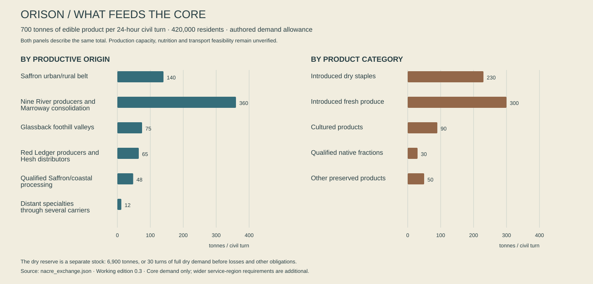
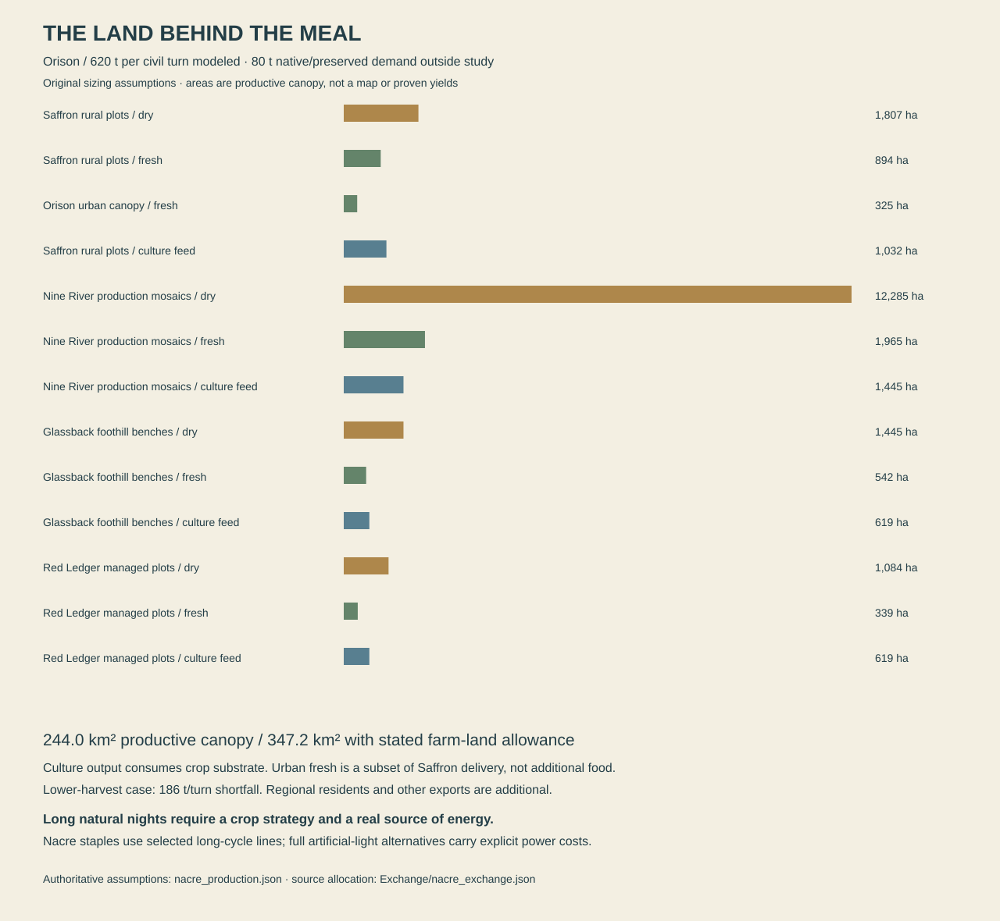
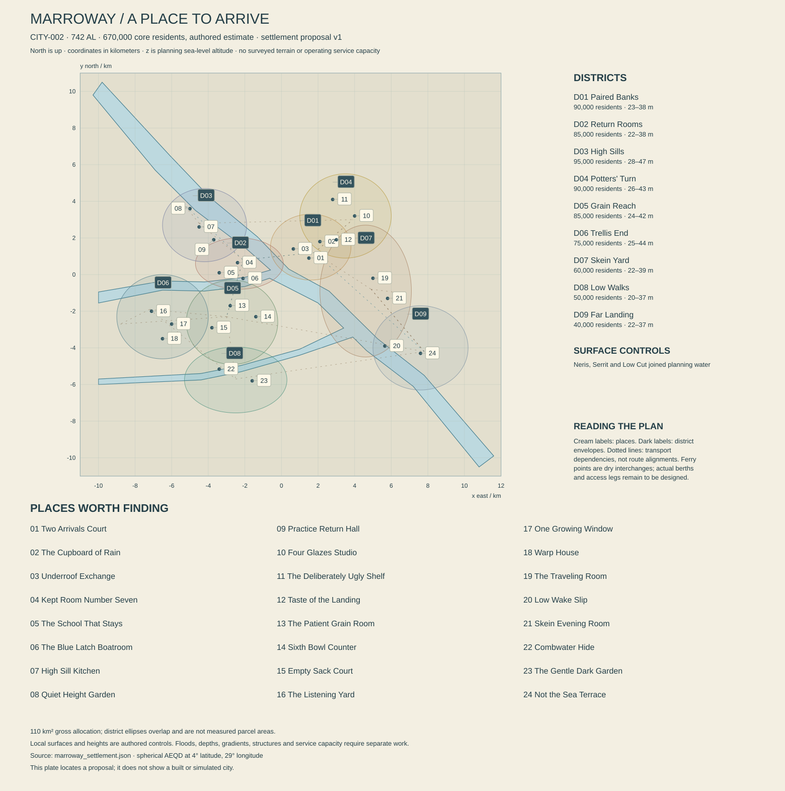
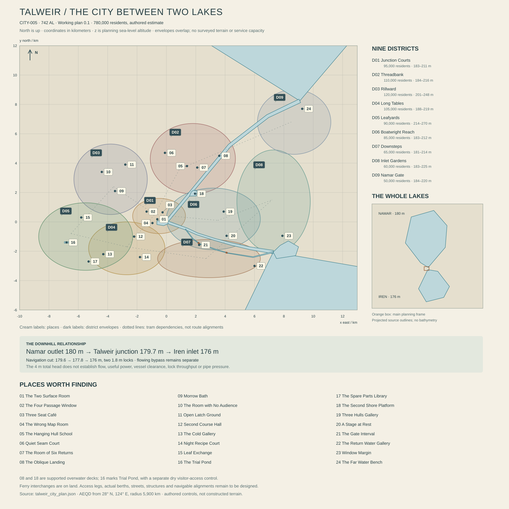
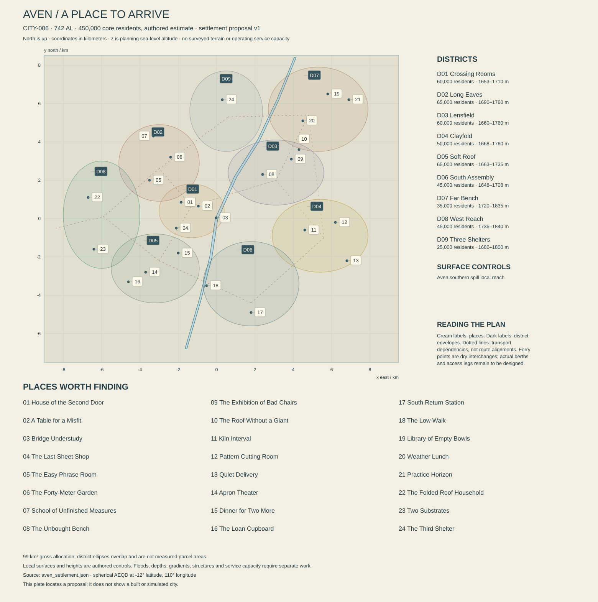
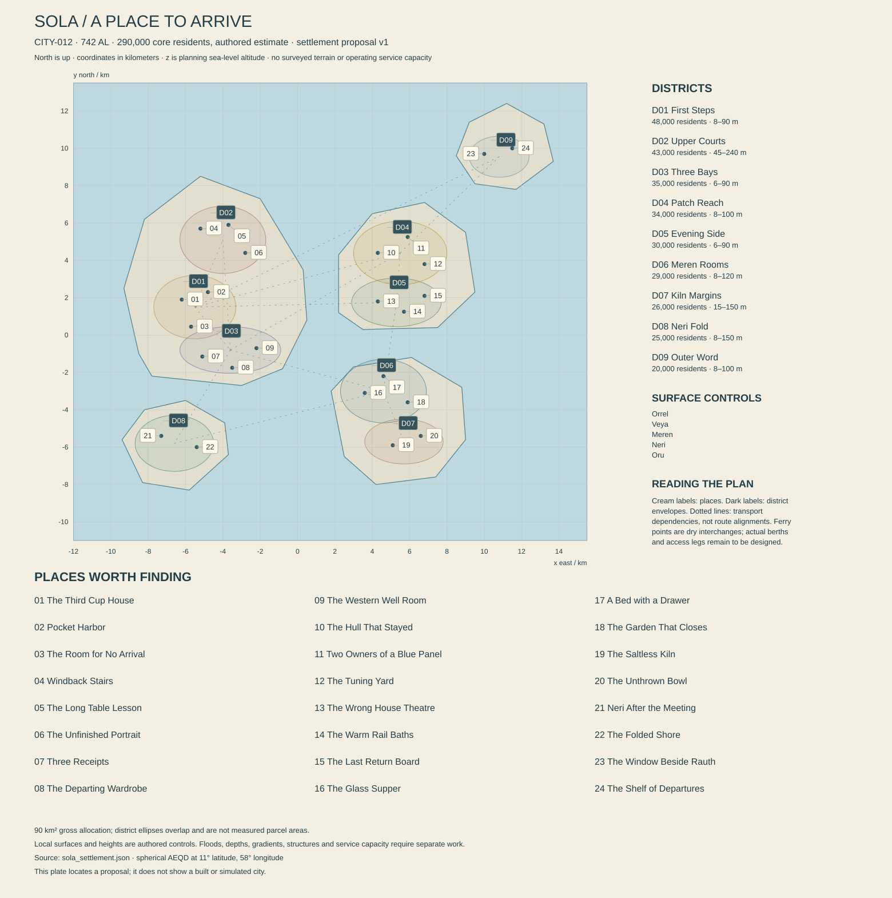
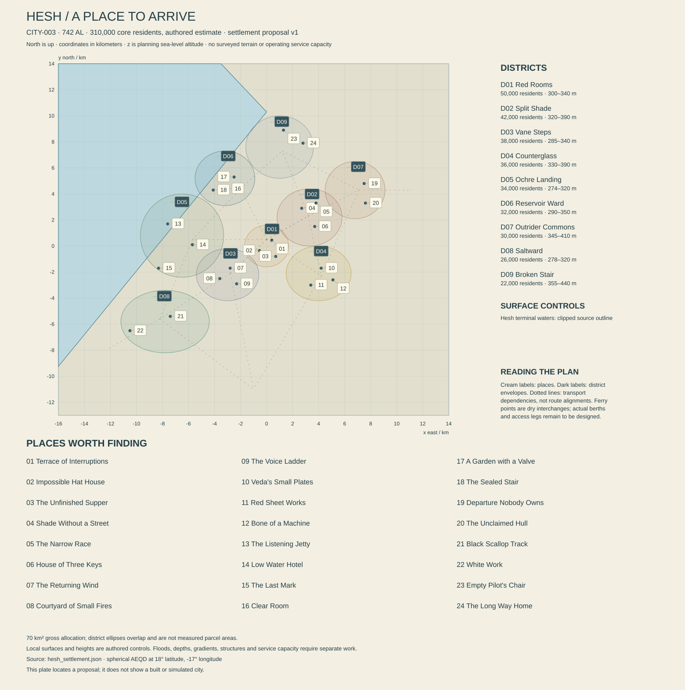
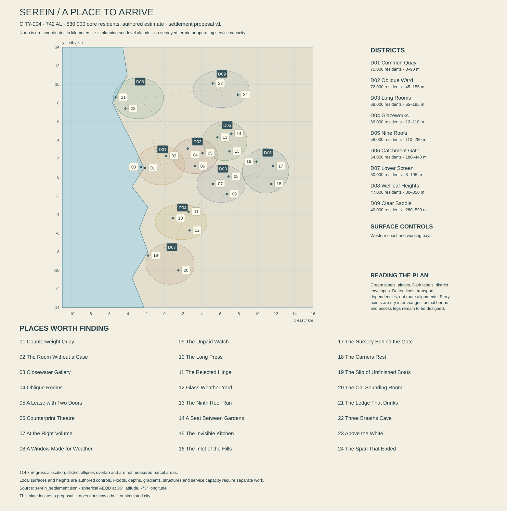
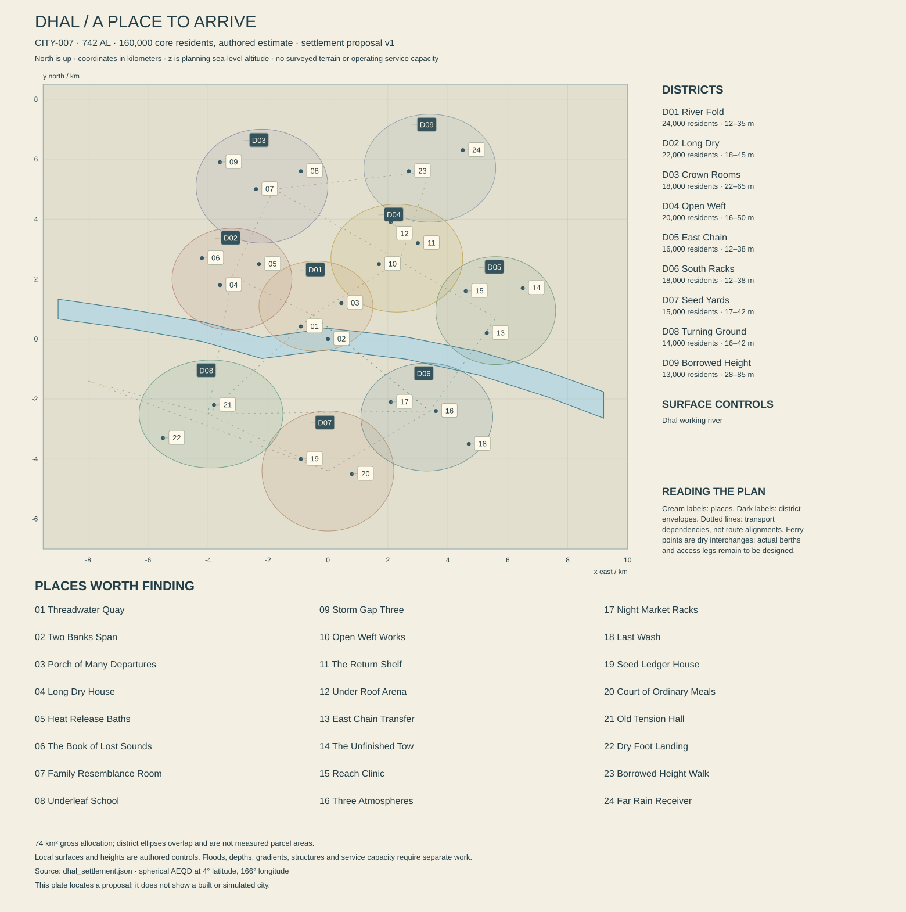

Working canon · 2,862 source words · Source
Volume 00 — A world that owes nobody a sunrise
Working canon, edition 0.3, 13 October 2026. These are new authorial decisions for development and review, not claims of additional user approvals. The physical model is a checked design candidate, not a demonstrated habitable exomoon simulation. The full bible remains in progress. Nothing in this volume describes new functionality already implemented in Unreal.
The world in one arrival
You come into Orison over the water at the end of a long night. The city is a broken bowl, its oldest streets climbing the inside of an eroded crater. A banded giant hangs above the western roofs. It has occupied that part of the sky for every generation that built here. Beyond the rim, the star is already up; below it, someone is still paying to see the morning.
A collector catches a passing blade of light. It travels over wet copper, a laundry court, a queue outside a bakery. People look up for different reasons. A gardener checks a shade; a child tries to outrun the bright edge; a woman stops talking because the light has reached the window of somebody who died. Then the beam passes. The bakery keeps working. The city is not waiting for a hero.
Your boat carries a little machine that can change who is allowed to use a power network. It cannot feed a city or manufacture a sunrise. People may die over that distinction. They may also sit down together and work it out. Beyond Orison are people who would find this argument provincial, others who have lived through their own version, and places that have never had reason to care about a human permission key at all.
That is the scale of Borrowed Sun: a hand on a warm cup, a city making its morning, an enormous world beyond the harbor, and relationships connecting those scales without reducing them to one story.
What is being established
The inhabited world is Nacre, a large moon of the gas giant Rauth, orbiting the star Ilex. People commonly call Nacre a planet in ordinary conversation. Scientific and navigational records distinguish it from its parent. This preserves the earlier moon setting while giving the requested world genuine planetary extent.
Nacre turns once relative to distant space in approximately 5.6 Earth days. It keeps approximately the same face toward Rauth, but turns relative to Ilex. Its mean natural solar cycle is approximately 136.755 Earth hours. The night is long, not permanent. The hemisphere facing away from Rauth has sunlight too. On much of that hemisphere the giant is never above the horizon; people there do not organize every roof or story around it.
The working radius is 5,900 km and surface gravity 0.88 standard Earth gravity. Its circumference is approximately 37,071 km. These numbers establish scale; they are not a license to stretch a familiar city over a globe. Mountains, watersheds, continental travel and empty country must occupy meaningful distances.
The present is 742 After Landing, abbreviated 742 AL. One local orbital year is approximately 325.191 Earth days. The inhabited history therefore covers roughly 660.6 Earth years. The dated chronology uses local years; medicine, engineering and orbital calculation use explicit durations in seconds or hours. Reader-facing biographies use standard age, meaning Julian Earth years, while birth dates carry AL. A person's biological age must never be calculated by silently treating AL years as Earth years; eighteen local years are only about 16.03 standard years.
People need sleep long before the next sunrise. A common civil turn lasts 24 Earth-standard hours, divided into three eight-hour watches. Watches are scheduling conventions, not universal working shifts. A natural solar cycle contains approximately 5.698 civil turns. There is consequently no universal rule that morning is the first watch, or that a birthday must happen in daylight. Public clocks show both civil time and sky phase. The adopted Landing Reckoning begins at the year-zero Landing epoch and divides ordinary years into thirteen spans of twenty-five turns. Twenty-two additional Balance turns occur in each 115-year cycle; the calendar volume gives the exact rule and its small drift against the reference orbit.
The latest fictional census estimate is 34.8 million people, with a stated uncertainty of approximately ten percent. It is a statistical estimate assembled from unequal local records, not an omniscient population counter. Nacre is not an ecumenopolis. Most of its land and almost all of its ocean remain outside continuous human occupation. Many people live in linked settlement belts; beyond them are huge watersheds, uplands, coasts and ocean reaches with few permanent residents.
Five commitments that shape the fiction
The world precedes the adventure. Native ecosystems evolved before humans arrived. Mountain belts do not point toward quest objectives. Settlements have supply chains, neighbors and internal lives. A protagonist may change important things without becoming the secret cause of all history.
Maintenance is visible power. An object is built, serviced, paid for, borrowed, stolen, loved or abandoned by somebody. A broken pump may reflect fatigue, debt, poor design or a deliberate refusal; it is not automatically evidence of evil. The people who repair a city deserve names, competence, humor and political disagreements.
A good life exists here. Festivals, friendship, good food, ridiculous fashions, games, romance, patient teaching and pointless hobbies are not rewards reserved for after a revolution. They exist amid difficult conditions. Suffering alone does not create depth. The player must encounter things worth preserving as often as things worth overthrowing.
Different places solved different problems. Orison's light contracts are one history. Talweir's lake jurisdictions, Serein's building cooperatives and Tern's rescue obligations have other origins. No single faction, religion, garment, musical scale or architectural kit explains the whole world.
Consequences have carriers. A price changes because a shipment failed, a council changed a tariff, or somebody manipulated a report. News travels through people, relays and institutions. The same event may be known quickly, known incorrectly, or not known at all in different places. Wildlife responds to conditions it can perceive, not to the player's quest log.
The limits of the technological promise
This civilization possesses advanced materials, excellent computation, capable medicine, reliable local spacecraft and a long history of biological and prosthetic adaptation. It does not have costless energy or arbitrary matter creation. Manufacturing needs feedstock, tooling, trained supervision, power, cooling and quality control. Some components can be fabricated locally; others depend on a few expensive facilities or old stock.
Flight is ordinary enough to support ports and trades, but not cheap enough to eliminate roads, ferries, freight rail, footpaths or neighborhood shops. Most people do not own a space-capable workboat. Cargo, maintenance, weather, landing rights, rescue coverage and safe traffic separation matter. A fast ship can cross distance; it cannot make every destination willing or able to receive it.
Interplanetary routes and offworld relatives exist. This bible does not establish faster-than-light travel or instantaneous interstellar communication. The earliest immigration came in three major arrivals, followed by smaller and irregular transfers. Offworld history can widen later without turning the planet into a disconnected terrarium or making distant authorities a convenient solution to every local crisis.
Connected cities ordinarily exchange messages quickly. Intermittent relays, restricted access, physical specimens and protected originals can give couriers a reason to travel; planetary distance alone does not make a radio message take days. Power and exchange establishes plural regional institutions, issuer-qualified mark balances and a distributed industrial economy. No single planetary government, currency backing or continuous electrical grid is assumed.
The language volume develops Shore, Lake, Wake and Reach public varieties, with shared origins, porous boundaries and other household and sign languages alongside them. Transit Clear is an operational register rather than everyone's native language. Existing names remain canonical; the starter lexicon does not retroactively invent all their etymologies. English presentation carries essential meaning while optional original forms add texture.
Native biochemistry follows the ecology foundation's limited overlap contract, adopted for working canon: selected native oils and small carbon compounds can be used after species- and tissue-specific processing, while native proteins and structural materials are not generally interchangeable with terrestrial nutrition. Complete human diets still depend on introduced crops and maintained biological cultures. This is an explicit fictional assumption, not a scientific prediction. Food conversion, composting and waste treatment are separate processes. A beautiful alien fruit is not automatically food, Earth livestock cannot graze any meadow, and a dangerous animal is not automatically a communicable disease reservoir.
Human adaptations and assistive technologies do not define moral character, intelligence, citizenship or faction. A pressure-worker lineage can contain a poet, a landlord and a dock mechanic. A support harness can be medical, occupational, fashionable or several of these at once. Design people with histories before designing silhouettes.
Light, energy and the name of the game
Orison's crater and seasonal sky create terrain shade. Local collectors can redirect available daylight into places that would otherwise remain shaded. Moving orbital installations offer limited illumination windows and other services. They are not fixed over one neighborhood, and a simple low-orbit mirror does not illuminate deep midnight while itself in the world's shadow.
Electricity, heating, working light, agricultural light and access to direct sunlight are separate services. They can share owners and infrastructure without being the same physical resource. Stored energy and regional generation carry the city through the long night. Some interior crops use lamps; others follow the natural cycle or draw on biological reserves. A light contract can be valuable without implying that every resident will suffocate when it expires.
Productive landscapes now makes the agricultural premise explicit: selected introduced staple lineages complete productive cycles under suitable local versions of Nacre's long natural rhythm. Their traits are fictional canon developed through centuries of cultivation, not a prediction for unmodified Earth crops. Sensitive stocks and controlled fresh production retain separate lighting and environmental costs. The first demand-to-land study exposes those costs without declaring regional yields or nutrition proved.
The Concession accumulated control over collectors, energy dispatch, certified maintenance and access records in the Orison region. Its power comes from historical contracts and technical bottlenecks, not a magic switch owning Ilex. Some of its staff keep hospitals and transport alive; some profit by making alternatives difficult. Institutional incentives matter more than a uniform of villains.
The Sunseed is a compact authorization and routing core with limited stored energy. It can change which existing equipment accepts a command or which reserve is made available. It does not contain enough energy to run an entire city. A successful theft opens a political and engineering possibility; people still have to make the resulting arrangement work.
The title refers to the material transaction and the larger habit of living on work inherited from others. A borrowed tool may be returned; a borrowed future may be consumed. No single character owns the correct interpretation.
Orison and the original anchors
Orison remains the first home city. Its built core is provisionally about 420,000 residents; the wider urban and agricultural service region about 1.2 million. These are fiction planning estimates, not simulated NPC counts. The three broad levels remain Low Tides, Ladder and Crown. They describe geography and histories of access, not three perfectly segregated social classes.
First Light Quay, Second Dawn Lane, Three Drops Court, Copper Thread Steps, Common Table Yard, Coil Yard, Hanging Gardens, High Step Junction, Civic Shade, Collector Ridge and Open Wake Dock remain the ground district anchors. The Orison city dossier now maps their planning envelopes and twenty-four places, with drainage, food, freight and service dependencies. Surveyed boundaries and final engineering remain open. Mirror Ring is a moving orbital service annex, named for its working structure rather than a natural planetary ring. It needs its own orbital reference frame and scheduled approaches; it is not a stationary district over Orison. A continental coordinate does not substitute for the ground mapping or an orbital trajectory.
Brass Sanctuary remains Orison's approved architectural direction: warm mineral walls, indigo shade, oxidized copper, deep arcades, porous screens, maintained machinery and ornament that often does a job. Indigo Monsoon remains the rain and night reference. Materials record age and repair rather than receiving identical dirt everywhere. This language belongs to a particular climate and history; other cities will have their own construction traditions.
The Lantern Keeper is the original moth-shaped civic guardian holding an artificial sun. Its wing collectors are part of the designed object. Its form is not an alien deity secretly copied from another game. Residents may treat it as a public work, a protective story, a maintenance burden, a tourist emblem or a symbol appropriated by an institution. Its complete civic history remains to be written.
Kestrel remains a battered, asymmetric working boat and a home. Rook remains the courier callsign associated with a forged service record and a labor contract that implicated somebody left behind. Their story is important without being the genealogical center of every region.
Iona's engineering and power-network history can coexist with work for a clinic. Seli's medicine and broadcasting can coexist with evacuation coordination. Venn's navigation and family obligations can coexist with relay work. These reconciliations preserve the existing mission roles without making each person a single-purpose service terminal.
The Common Table, Open Wake and Night Choir retain their identities as provisioning networks, captains' associations and unlicensed testimony archives. They have branches and disagreements; none automatically speaks for every poor person, sailor or dissident on Nacre. Other institutions will have equal narrative seriousness in their own places.
What exploration should reveal
An unfamiliar place should become legible through attention. A roof angled toward a pale sky may collect condensate. The same roof patched with a different alloy may reveal interrupted trade. A workshop with unusually wide doors might serve freight sleds, not a gigantic species. A shrine can be a memorial at a rescue staging point, and its water bowl can be maintained by people who do not share the original belief.
Discovery proceeds through differences: an expected sound is absent; a dated flood mark stands above the new road; a food crop grows inside quarantine glazing; a map uses a vanished river channel; somebody knows a route but refuses payment in the usual form. Clues should support several levels of understanding, from an immediate practical route to a historical argument.
There will be wild places where human explanations are irrelevant. A migration bottleneck, a folding canopy at dusk, a tidally exposed nursery or a storm crossing an empty shelf can be a destination. The reward may be knowledge, a view, an encounter, useful material, access, trust or simply the pleasure of reaching it. Treasure containers are one possible detail, not the grammar of the planet.
Returning should expose change at believable rates. A repaired footbridge lasts; a closed shop may reopen under another arrangement; a nesting colony may be absent outside its season. Some places stay reassuringly familiar. A world that transforms every time it is observed becomes a performance rather than a home.
Truth, evidence and mystery
Each lore statement will belong to one of four layers: authorial fact; an attributed institutional record; an individual account; or an unresolved interpretation. A biased archive can still preserve accurate measurements. A beloved story can be false without making its tellers foolish. The bible must know when it is withholding an answer and when no answer has yet been authored.
No precursor civilization is established as the default explanation for native complexity. Strange formations can arise from biology, geology, abandoned human engineering or a genuine unresolved phenomenon. Mystery must survive scrutiny without requiring every inscription to be a clue to the same superweapon.
Three recurrent questions can connect distant places without collapsing them: who may speak for shared work; what descendants owe to arrangements they did not choose; and whether care can remain care when it becomes an institution. They can appear in a household, a shipyard or a continental agreement. Characters answer them through conduct, not obligatory speeches.
Continuity rules for the remaining volumes
Use stable identifiers for places, people, species, institutions and events. Keep common names and translated names editable. A location can change jurisdiction without moving on the globe. A building can change use without losing its physical history. A rumor can refer to an obsolete name without creating a duplicate place.
Coordinates in the atlas are body-fixed latitude and east-positive longitude. Longitude zero passes through the reference sub-Rauth point at the chosen epoch; north follows the adopted spin axis. The spherical reference radius is 5,900 km. Detailed elevation, ellipsoid corrections, tides and local survey datums are later refinements, not silent changes to this convention.
Numerical estimates should carry their purpose and uncertainty. A continental route length is not a walkable spline; an estimated population is not a spawn budget; a climatic design range is not a forecast produced by a circulation model. The future implementation must be measured separately.
The new atlas and history supersede old unsupported assumptions only where a decision says so. All approved visual anchors remain. All unfinished volumes remain visibly unfinished. Hundreds of pages must contain different useful knowledge, voices and consequences; length alone cannot finish this world.
Contents ↑
Checked design candidate; open physical questions remain · 6,296 source words · Source
Nacre: physical foundation and sky review
Working physical canon, reviewed 13 October 2026. Nacre, Rauth and Ilex are the current names for the inhabited moon, its giant parent and its star. The numerical candidate below was selected for the world bible after checking its coupled implications. These are original fictional design parameters. The arithmetic is reproducible; long-term orbital stability, an inhabited atmosphere and regional climate have not been demonstrated by a dynamical or climate simulation.
The observable outcome of this review is a single internally consistent scale, clock and sky model, accompanied by explicit limits on what the artificial daylight system can do. Regional authors should be able to locate a coast, establish a season and describe a night without inventing contradictory astronomy. The most important consequence is that Nacre has natural sunrise and sunset everywhere outside its seasonal polar zones. Being locked to Rauth does not give it an eternal day hemisphere or an eternal night hemisphere. NASA's explanation of synchronous rotation supports that distinction. NASA: tidal locking
This review does not replace the full regional atlas, ecology or history. It establishes the physical contract they must share. The present historical epoch is 742 local orbital years After Landing, approximately 660.621 Earth years. That conversion is chronological bookkeeping, not a claim that inhabitants use Earth calendars.
1. Selected system
Distances in this section are center-to-center unless explicitly marked altitude. Earth days are exactly 86,400 SI seconds; Earth years in historical conversions are Julian years of 365.25 such days. Numbers are rounded for prose. The extra digits in calculation records identify the model, rather than implying an actual measured exoplanet.
| Quantity |
Working value |
Meaning and status |
| Ilex mass |
0.95 solar masses |
Chosen stellar mass |
| Ilex luminosity |
0.80 solar luminosities |
Chosen present luminosity; not derived from a fitted stellar evolution track |
| Ilex radius |
0.94 solar radii |
Presentation/irradiation assumption |
| Ilex effective temperature |
About 5,630 K |
Stefan–Boltzmann consistency estimate from the chosen luminosity/radius |
| System age |
Mature system; exact age unresolved |
Do not assign a stellar age from the rounded mass alone |
| Rauth mass |
0.70 Jupiter masses; 1.328691 × 10²⁷ kg |
Chosen giant mass |
| Rauth representative radius |
70,000 km |
Reference radius for first-order formulas; an oblate atmosphere has no solid surface |
| Rauth average density |
About 925 kg/m³ |
Derived; consistent with a low-density gas giant as a fictional assumption |
| Rauth rotation |
9 Earth hours |
Working spin for its cloud movement and angular-momentum check |
| Rauth quadrupole coefficient J2 |
0.020 |
Chosen oblateness parameter; must remain coupled to a plausible giant structure |
| Rauth axial tilt to the stellar orbit |
28° |
Giant obliquity, not Nacre's seasonal tilt |
| Rauth orbit about Ilex |
0.91 AU |
About 136.134 million km |
| Rauth orbital eccentricity |
0.010 |
Small seasonal distance modulation; not the principal source of seasons |
| Nacre reference radius |
5,900 km |
A world of terrestrial scale |
| Nacre reference surface gravity |
8.629852 m/s²; 0.88 standard Earth gravity |
Spherical reference value; not identical at every height and latitude |
| Nacre mass |
4.500924 × 10²⁴ kg; 0.75365 Earth masses |
Derived from radius and gravity |
| Nacre bulk density |
About 5,232 kg/m³ |
Derived; broadly rocky, not an ice-dominated giant moon |
| Nacre circumference |
37,070.8 km |
Great-circle circumference of the reference sphere |
| Nacre surface area |
437.435 million km² |
About 86% of Earth's surface area |
| Nacre surface escape speed |
10.091 km/s |
Reference two-body value; flight fiction must respect its large energy scale |
| Nacre sidereal rotation/orbit |
5.600 Earth days; 134.400 hours |
Synchronous with Rauth, prograde |
| Nacre orbital semimajor axis |
808,067 km |
Derived from both bodies' masses and the 5.6-day period |
| Mean natural solar day |
136.755 hours; 5.698125 Earth days |
Mean sunrise-to-sunrise clock; true solar time varies with geometry |
| Local orbital year |
325.1913 Earth days |
Rauth–Nacre system's orbit about Ilex |
| Present-epoch seasonal tilt |
Approximately 14.07° |
First-order local Laplace-plane estimate, with Nacre's spin nearly normal to that orbit |
| Nacre orbital eccentricity |
0.001 working reference |
Low but nonzero; forced variations must be investigated before fixing an exact ephemeris |
| Natural stellar flux at mean distance |
1,314.8 W/m² |
Top of atmosphere, surface normal to the rays; about 96.6% of Earth's mean solar constant |
| Nominal atmospheric pressure |
1.05 bar at reference sea level |
Fictional environmental assumption, not a prediction from gravity |
| Nominal dry oxygen fraction |
20% |
About 0.21 bar oxygen partial pressure at sea level; high mountains still require acclimatization/support |
| Initial dry-gas bookkeeping |
78.9% N₂, 20% O₂, 1% Ar, 0.06% CO₂, 0.04% other traces |
Modeling starting point; water vapor is variable and not part of this dry total |
| Bond albedo used for the simple energy check |
0.30 |
Whole-world model assumption; actual clouds and surface distributions are unresolved |
The radius and gravity were chosen together. The mass is therefore a consequence rather than an independently adjusted dramatic number. A geodesist's reference sphere can coexist with a real planet that has mountains, basin topography, rotational flattening and a permanent tidal figure. Later terrain work must store the datum and height convention; it must not reinterpret every elevation as distance from an artist's arbitrary local ground plane.
Ilex should read as warm white, not a saturated red lamp. Warm streets and indigo shade come from atmosphere, time, material and lighting design. We do not need a red dwarf to achieve the approved art direction, and choosing one would create a different coupled stability and irradiation problem. Rauth's cloud colors are a separate atmospheric composition and art decision.
2. The clocks and their consequences
The moon turns once relative to the distant stars as it circles Rauth. During that turn the entire system also moves along its orbit about Ilex. The mean solar clock therefore follows
1 / P_solar = 1 / P_moon − 1 / P_year.
The reference result is 136.755 hours. At the equator near an equinox, roughly 68.38 hours separate natural sunrise and natural sunset. That is almost three Earth days of illumination followed by almost three Earth days of night. Clouds, hills, refraction and twilight change what residents actually experience; their clocks do not change the underlying stellar geometry.
Human sleep, shift changes, school schedules and market opening cannot simply wait for each natural dawn. A good social solution is a short civic cycle, maintained by clocks and local light services, alongside separately named phases of the long solar day. Do not fix those civic names or cycle lengths in this physics review. A 24-hour civic cycle would drift against the natural sun; a civic cycle dividing the long day evenly would be about 22.79 hours if divided into six. Either is possible fiction with different cultural and biological consequences. The calendar volume must select one deliberately and preserve conversions in its records.
There are approximately 57.07 mean solar days in an orbital year. An exact integer calendar cannot be inferred by rounding that number to 57. If a culture uses fifty-seven named long days, it needs intercalation or an accepted drift; if it uses ordinary work cycles, its year contains a different count. Festivals tied to the first monsoon and festivals tied to a numbered civic date can separate over time. That difference offers original lore without breaking the sky model.
The accepted 742 years After Landing means 742 of the 325.191-day orbital years, not 742 solar days and not 742 Earth years. It corresponds to about 241,292 Earth days or 660.621 Julian Earth years. Birth dates, ship archives and archaeology should identify their calendar before being compared. A translation convention can make dialogue legible without pretending the world has Earth's astronomical calendar.
The reference world makes equatorial surface movement due to rotation about 275.8 km/h. That is a physical velocity, not a free vehicle speed. A launch inherits the motion of its ground site; atmospheric winds and orbital velocity remain separate. Journeys east and west can experience the natural sun differently without altering the global clock. An ordinary aircraft moving east at several hundred kilometers per hour can change its local solar phase noticeably, but weather, range and regulation prevent that observation from becoming universal unlimited daylight.
3. What Rauth actually looks like
Rauth spans about 9.94° at Nacre's center, or about 10.01° from the sub-parent ground point. It is roughly eighteen times Ilex's apparent diameter in this model. That gives a substantial, unmistakable sky presence without consuming half the sky. Ilex spans about 0.550°, close to the apparent size of the Sun from Earth.
For the reference spherical body with its spin normal to the moon's orbital plane, the parent-facing point is at latitude 0°, longitude 0°. At surface latitude φ and east longitude λ, the approximate elevation of the parent's center is
elevation = asin(cos φ × cos λ).
The parent is above the horizon on the near hemisphere and below it on the far hemisphere. The several-degree radius of its visible disc produces a limb zone rather than a mathematically sharp cultural frontier. Elevation, terrain and atmospheric refraction modify the actual view. A location at 28° north, 42° east would see Rauth's center about 41° high; that is a worked example, not an assignment of Orison's coordinates.
The sky center stays almost in place for a settled observer, but the giant's cloud bands rotate in approximately nine hours and atmospheric features evolve. Its illuminated phase changes through the long solar day. When the parent-facing hemisphere has local midnight, Rauth is approximately full. Near local noon it is approximately new, and near the equinox eclipse windows it can pass in front of Ilex. A fixed parent direction must not be confused with a fixed illuminated face.
The small orbital eccentricity introduces optical libration of order 2e radians, roughly 0.115° in longitude before other effects. That is a subtle displacement relative to a ten-degree disc. Do not animate the parent sweeping from east to west each day. The star and fixed-star background move across the sky; Rauth mainly turns its cloud patterns and changes phase where it hangs.
Rauth's equator need not appear level with Nacre's horizon or equator. Its spin axis is tilted to the moon's orbit. Its projected bands, visible pole and any future ring system require a consistent three-dimensional orientation. Rings are not assumed in these calculations: adding dense dramatic rings also adds shadow geometry, eclipse effects, navigation restrictions and long-term evolution questions. Do not add a broad ring as a cost-free sky ornament after the weather model is fixed.
At a notional geometric albedo of 0.5, a fully lit Rauth delivers about 4.93 W/m² to a surface normal to its direction before Nacre's atmospheric losses. This is a maximum directional estimate, not a global average. Parent-facing clear nights can therefore have a strong, colored natural glow. Far-side nights lack that giant lamp; cloudy nights and steep valleys differ again. This establishes a real ecological and visual distinction across the world without declaring either hemisphere permanently dark.
That glow remains less than 0.4% of direct stellar flux. It is useful to sight, navigation and biology sensitive to low light; it is not a second full-strength sun. Converting it to lux requires the actual reflected spectrum and chosen photometric response. An Earth-like visual weighting would place its brightest clear exposure in the broad range of hundreds of lux, but no exact lux value is fixed here. Art should calibrate the scene from radiometric and spectral assumptions rather than raising night exposure until it resembles noon.
4. Seasons: why the giant's tilt is insufficient
A moon's orbital plane is influenced by the giant's equatorial bulge and by stellar tides. Near the giant the equatorial influence dominates; far away the stellar orbital plane matters more. The local equilibrium lies between them. Tremaine, Touma and Namouni derive this Laplace-surface behavior and explicitly state that their secular model treats the satellite as a massless test particle with a nearly fixed planetary spin axis. Their result is a useful first check, not a full simulation of our finite-mass moon. Satellite dynamics on the Laplace surface
Using the paper's radius convention,
r_L⁵ = J2 × R_parent² × a_star³ × (1 − e_star²)^(3/2) × M_parent / M_star.
This gives r_L ≈ 704,772 km. Equal coefficients of the two orientation torques occur at 2^(1/5) r_L ≈ 809,570 km, almost the chosen lunar orbital radius. Some literature folds that factor of two into the definition of “Laplace radius”; do not compare numbers without checking the convention.
If θ = 28° is Rauth's obliquity and φ is the moon plane's tilt away from the giant equator toward the stellar plane, the low-inclination equilibrium satisfies
sin[2(φ − θ)] + 2(r_L/a_moon)⁵ sin(2φ) = 0.
The selected root is φ ≈ 13.929°. The moon's orbital plane is therefore about θ − φ ≈ 14.071° from the stellar orbital plane. With its spin approximately normal to that orbit, Nacre's present seasonal obliquity is about fourteen degrees, not twenty-eight.
This is enough for changing day lengths, migrating seasonal heating, polar summer/winter and land–sea monsoon contrasts. The nominal astronomical tropics lie near ±14.07° and the nominal polar circles near ±75.93°. Mountains can support snow and ice much closer to the equator. Seasonal rainfall belts do not have to coincide with those astronomical lines.
Do not promise a permanent 14.071° tilt to six significant figures. With a nominal giant moment-of-inertia coefficient of 0.25 and nine-hour spin, Nacre's orbital angular momentum is approximately 0.1205 of Rauth's spin angular momentum. Coupled precession is therefore a real correction. The chosen epoch is a defensible starting configuration; secular evolution of both axes, free inclination, other moons, the spin-axis state of Nacre and changing orbital eccentricity need a numerical model before a deep-time history or long-range almanac claims exact behavior.
The rejected first trial placed a 5.6-day moon around a 0.8-Jupiter giant at 0.65 AU from a 0.82-solar-mass star. Giving that giant a twenty-degree tilt produced only about three to four degrees of moon-plane inclination in the same first-order calculation. That trial would not have supported the intended seasonal story merely by labeling the giant “tilted.” The selected wider stellar orbit preserves the long natural day while allowing a more useful seasonal geometry.
5. Eclipses have seasons, footprints and limits
At Nacre's orbital distance, the geometric umbra behind Rauth has radius about 66,534 km for the selected stellar radius and mean distance. The penumbra is larger. A central passage of Nacre's center through that umbra lasts about 3.59 hours in the straight-cone, circular-orbit approximation. Ingress, partial phases, the finite size of Nacre, atmospheric refraction and orbital eccentricity modify a particular ground observation.
Because the moon plane is tilted by roughly fourteen degrees to the stellar plane, it usually passes above or below the giant's shadow. Eclipses cluster near the two crossings of Ilex through that plane. A rough window is several tens of Earth days around each crossing. A sixty-second-step geometric sample of one reference year, beginning at a central eclipse, produced fourteen center-of-moon umbral episodes totaling about thirty-seven hours, or 0.47% of the year. This is a plausibility calculation; it is not the saved canonical schedule for year 742.
The finite body matters. A partial shadow encounter can affect one region while another remains in normal light. During a deep central passage the giant's shadow can cover the entire moon, but residents already on the natural night hemisphere do not witness a daytime sun going out. Local horizon and weather determine whether anyone sees the giant's dark disc or merely notices changing ambient light.
Heller's eclipse treatment demonstrates why orbital inclination and shadow time need to enter the energy budget. It also states that detailed system limits require dynamical modeling. We use its physical distinction, not an imported universal “safe orbit.” Exomoon habitability constrained by energy flux and orbital stability
The world can build serious institutions around eclipse forecasts: observatories, optical maintenance windows, port departure notices, ritual disagreements and agricultural timing. Eclipses should remain knowable physical events. They are not random weather rolls, and the Concession cannot move them by changing a lease. Clouds may obscure their appearance without canceling the underlying loss of direct light.
The short annual shadow fraction also means that eclipses do not explain a permanently freezing near hemisphere. A particular crater district can depend on managed light because of terrain, economic history, local growth schedules and infrastructure, but a few eclipse hours cannot account for all of its energy poverty.
6. Orbit safety checks and the absence of stationary mirrors
Rauth's approximate Hill radius at periastron is 8.32 million km. Nacre's 808,067 km orbit is about 9.7% of that conservative Hill radius, well inside the common test-particle prograde boundary estimates. Its orbit is also much farther out than the approximate fluid Roche disruption distance of 95,855 km. These are useful geometric margins. They do not establish survival through planetary migration, resonances, an arbitrary companion system or billions of years of tidal evolution.
Domingos, Winter and Yokoyama derived an empirical prograde stability boundary near 0.4895 R_H with eccentricity corrections in their restricted elliptic three-body study. Their calculation supports using a fraction of the Hill region, rather than its whole radius, as the rough stable zone. Our finite-mass, inclined, oblate system differs from that model. Stable satellites around extrasolar giant planets
The more consequential check is for spacecraft orbiting Nacre. Nacre's approximate Hill radius against Rauth is only 84,000 km. A first prograde screening limit is therefore around 41,000 km from Nacre's center, with detailed operational orbits needing further analysis. The radius of an ordinary Nacre-synchronous circular orbit would be 121,223 km, outside even that entire Hill region.
This is not a minor numerical inconvenience. For a small moon synchronously rotating about a much more massive planet,
r_sync / r_H ≈ 3^(1/3) ≈ 1.44.
The checked finite-mass ratio here is 1.440625. A freely orbiting spacecraft cannot hang geostationary over Orison in an ordinary stable Nacre orbit. The same issue rules out casually adding a conventional stationary equatorial space elevator. Halo or libration-point trajectories and actively supported structures are different architectures with different movement, stationkeeping and load requirements; invoking their names does not make a fixed orbital mirror work.
The orbital mirror must therefore travel. Residents know its passage direction and service windows. A maintenance station is another moving body, even if a local game scene represents the docking operation in its own reference frame. A docked ship's relation to the station and the station's relation to the planet must remain distinct. Landmarks may align at a scheduled moment without remaining aligned forever.
| Circular altitude above Nacre |
Approximate orbital period |
Minimum direct solar-image diameter at overhead distance |
| 500 km |
1.630 hours |
4.80 km |
| 1,000 km |
1.825 hours |
9.61 km |
| 5,000 km |
3.624 hours |
48.0 km |
| 10,000 km |
6.384 hours |
96.1 km |
The table uses a two-body circular orbit and an idealized focusing reflector. Slant range, atmospheric paths, attitude, occultation, perturbations and finite reflector performance make actual service harder. It does not specify an operating constellation or certify a satellite's stability.
7. An artificial sun with an honest energy budget
The Concession's infrastructure can remain spectacular and politically decisive. It must have a supply chain rather than an unexplained glowing sphere. Four physically different services can share contracts and branding: direct optical illumination, generated electrical power, stored power, and distributed heat. “The mirror” is the public name for a network and a conspicuous moving machine, not proof that every service comes out of one reflected beam.
The apparent width of Ilex imposes an optical constraint. Its angular diameter is about 0.009608 radians. An ideal imaging reflector focused at distance d produces a stellar image with characteristic diameter d × 0.009608. Pointing a mirror more accurately does not turn an extended star into a point source. Real flat mirrors produce additional spreading; different optical architectures need their own radiance accounting. The solar-image scale is discussed in NASA's orbital reflector studies. NASA technical report: orbital reflectors and surface power
For a deliberately optimistic example, illuminating a circular 25 km² target with an added 100 W/m² requires 2.5 gigawatts of arriving optical power. At 1,314.8 W/m² incoming stellar flux and 55% combined interception/reflection/atmospheric efficiency, the active projected reflector area must be at least 3.46 km², equivalent to a circular diameter of 2.10 km. The stellar image fits that target only at a range of roughly 587 km or less in the ideal focusing approximation. This is already a major engineered object delivering a fraction of full sunlight, not a hand-sized emitter.
The area and efficiency calculation does not include the extra deployed area needed when the reflector is tilted, coverage gaps, pointing reserves, maintenance downtime or the constellation needed to repeat service. Agriculture needs its own photon budget, crop response and timing. One hundred watts per square meter of broad-spectrum added light is not one hundred watts of electrical output, and neither quantity is a statement that every crop reaches its desired yield.
A second geometric constraint governs night service. At deep local midnight, a low satellite above the observer is inside Nacre's shadow. In an ideal spherical, distant-star geometry, a point can be both visible from the midnight surface and sunlit only when the satellite's orbital radius exceeds sqrt(2) × R. The threshold altitude is about 2,444 km. Below that, a single direct reflector cannot supply deep-midnight light to that observer. Near dawn and dusk its opportunities are different; at high latitude the seasonal geometry differs.
Higher orbits can see around the night limb, but their solar image covers much larger ground areas. At 5,000 km overhead distance, the ideal image is already about forty-eight kilometers across. Filling it with even modest artificial daylight demands much more reflector area. Redirecting light through additional relay mirrors can change the geometry but adds large moving apertures, alignment constraints, losses and maintenance. It is an optional future megastructure, not an invisible loophole.
NASA's 1982 study proposed very large reflector spacecraft yet discussed illumination of broad areas at modest lux levels. It was a concept feasibility study, not a built modern utility. It is useful evidence of the scale distinction between navigation lighting and full agricultural sunlight. NASA: Illumination from space with orbiting solar-reflector spacecraft
Recommended Orison architecture
Collector Ridge receives natural sunlight above some of the crater's obstructing terrain. Ground heliostats, light wells and high distribution structures redirect that light into shaded terraces while the star is available. Their supports, access stairs, cleaning equipment, alignment targets and replacement surfaces belong in the city's asset grammar. Their direct-light performance degrades in thick cloud.
The orbital mirror provides conspicuous scheduled passes, shoulder-of-day extensions and selected regional services. It moves across the sky. Its real optical footprint need not be the same as a neighborhood's licensed fixture footprint. Service can be allocated through surface receiver and distribution equipment. The mechanical object is sufficiently large to justify orbital maintenance, transport contracts and infrastructure politics.
The deep-night grid draws from stored electrical/thermal energy and regional generation. Public lamps, greenhouse lighting, essential medical loads, circulation pumps and lifts compete for distinct constrained allocations. The mirror's collection operation may charge storage, but a natural night cannot be explained away by a satellite that is itself dark.
A sunseed authorizes a limited route, service lease or controller action. Its small capacitor runs short local interventions. It does not contain the gigawatt-hours needed to support the district. Iona's clinic intervention can unlock an existing reserve and route an allowed supply; Seli's lift can receive a competing allocation. Restoration changes visible equipment and human activity without violating conservation of energy.
Regional independence follows naturally. A river city, geothermal basin, windy ocean island or sun-exposed agricultural plain has a different energy portfolio and may reject Orison's concession model. A government can still monopolize a resource it did not create through land ownership, switching yards, permits, maintenance or debt. The world need not make its entire population incapable of surviving without one corporation's artificial sunrise.
8. Heating, tides and atmosphere
At a Bond albedo of 0.30, the simple equilibrium blackbody temperature is about 252.4 K. That is not the inhabited surface temperature. A greenhouse atmosphere, clouds, ocean circulation, surface albedo and seasonal/diurnal storage determine the actual surface field. This calculation says that an Earth-like order of stellar energy is available; it does not prove a comfortable global mean or any particular biome.
Rauth's thermal emission also reaches Nacre. If the giant's effective emitting temperature is a provisional 250 K, its maximum normal thermal flux at the moon is about 1.66 W/m². Together with the maximum reflected estimate, this remains a small addition compared with 1,314.8 W/m² direct stellar exposure. Averaging over the sphere and orbital phases reduces the effective contribution further. We do not use a glowing young giant as a hidden primary heat source.
Tidal heating is a different mechanism. For a synchronous moon with small eccentricity and negligible spin obliquity relative to its own orbital plane, a standard first-order expression is
h_tide = [21/(8π)] × (k2/Q) × G × M_parent² × R_moon³ × n × e² / a⁶.
With k2/Q = 0.003 used only as a sensitivity assumption, the selected orbit gives:
| Orbital eccentricity |
Reference global tidal heat flux |
| 0.001 |
0.00283 W/m² |
| 0.003 |
0.0255 W/m² |
| 0.010 |
0.283 W/m² |
| 0.030 |
2.55 W/m² |
The hundredfold heating increase from 0.001 to 0.010 is the important point. Tidal rheology is not a universal fixed constant. Ocean dissipation, interior temperature, resonant forcing and a nonzero spin tilt relative to the moon orbit alter the result. A one-degree spin-to-orbit obliquity gives an additional order of 0.12 W/m² in the same simplified model. That is a different angle from the fourteen-degree seasonal tilt to the stellar plane. Confusing the two would manufacture severe heating.
Rovira-Navarro and colleagues explicitly discuss the dependence on the imaginary Love number and the limits of second-order eccentricity expressions. Their work supports treating the constant-Q result as a sensitivity estimate rather than an interior model. Tidally Heated Exomoons around Gas Giants
For the fiction, keep the reference orbit close to circular and avoid adding a massive resonant neighbor simply because another moon would look attractive. Active geology can principally use an old rocky world's internal heat and radiogenic inventory. Some regional volcanism is compatible with low present tidal heating; planet-wide constant eruptions are not implied by “moon of a giant.”
Rauth raises a large permanent tidal figure on Nacre. The first-order potential-height scale G M_parent R² / (g a³) is about 678 m, but this is not a daily ocean wave height. The ground, ocean geoid and rotation are already adjusted to the persistent field. At small eccentricity, changing distance and libration introduce a much smaller variable forcing; the star adds a reference equilibrium scale of about 0.20 m. Coastal bathymetry, basin resonance, wind and pressure determine actual tide tables. Do not write every harbor as enduring a 678-meter daily flood.
Atmospheric retention cannot be decided by gravity alone. The approximately ten-kilometer-per-second escape speed favors retention of heavy gases, but high-altitude temperatures, stellar ultraviolet history, impacts, volatile supply, chemistry and nonthermal losses still matter. NASA's atmosphere discussion explicitly identifies multiple controlling factors. NASA: Can rocky worlds maintain atmospheres?
The 1.05-bar assumption gives an atmospheric column mass of about 12,167 kg/m², around one-fifth greater than Earth's sea-level column because gravity is lower. It helps establish thermal capacity; it does not determine the lapse rate or guarantee radiation safety. An oxygenated inhabited atmosphere is part of the original setting, with its biological and settlement history to be authored explicitly.
Rauth's magnetic field is not a universal shield. Giant-planet magnetospheres can trap energetic particles, as NASA's Europa mission documents. Dense air provides considerable surface shielding, but the upper atmosphere, high-altitude flight, orbital electronics and habitats require their own fictional environment and engineering responses. Do not import Europa's exposed-surface radiation dose into this thick-atmosphere world, and do not declare exposure harmless just because Nacre has a dynamo. NASA: protecting Europa Clipper from radiation
9. Climate rules for the regional authors
The selected spin rate is about 0.178 of Earth's sidereal rate. Earth climate vocabulary remains useful, but Earth's exact latitude belts, storm tracks and ocean gyres cannot simply be pasted onto the atlas. Published modeling of different rotation rates finds substantial changes in circulation, cloud feedback and ocean heat transport, with results depending on the chosen atmosphere, ocean and topography. Way and colleagues: Climates of Warm Earth-like Planets I
The defensible authoring model is a water-rich terrestrial world with strong coastal buffering, wider circulation structures than a direct Earth copy, slowly moving daytime heating and locally important seasonal land–sea contrasts. These are working inferences, not outputs of a Nacre general circulation model. Map ocean passages, mountain barriers and major basins before placing every wetland and desert.
At a notional 100 W/m² net nighttime energy deficit maintained for 68.38 hours, a perfectly mixed 50-meter ocean layer would cool only about 0.12 K; a whole dry atmospheric column with specific heat 1,004 J/kg/K would change by about 2.0 K if it alone supplied the energy. These are reservoir scale calculations, not forecasts: the land boundary layer can decouple and cool sharply, clouds and humidity alter radiation, winds transport heat, and the surface does not normally draw uniformly from a whole atmospheric column. The exercise shows why three-day nights do not require instant global freeze, while dry inland basins can still be punishing.
Use at least four time-dependent controls in every regional climate brief: position within the orbital year, position within the long solar day, large-scale weather regime, and local terrain/water exposure. An evening storm line can recur during a wet seasonal regime without appearing on every long day. Snow persistence depends on cumulative energy and precipitation, not just “winter true.”
The world can support warm humid coasts, monsoonal basins, seasonally dry woodland, rain-shadow interiors, high plateau grasslands, cool fog coasts, temperate maritime forests, cold uplands and polar environments. Their specific locations must arise from the atlas. A high desert next to a wet mountain range can be justified by rain shadow and drainage; a marsh behind a barrier island requires sediment and outlet behavior; a green crater district may survive through engineered water distribution. A biome label alone explains none of these.
Long natural light phases are an opportunity for ecology rather than an excuse for universal Earth analogues. Native photosynthesizers can store energy across the dark phase; microbial and fungal decomposition continues; grazers and predators can use shorter internal cycles and temperature thresholds. Introduced crops may need sheltered light schedules and cultivar selection. More artificial light is not automatically beneficial: it can alter navigation, pollination, predation and sleep. Those effects should be specific to species and places, not a generic world-wide penalty.
Orison's “long twilight” should be a local experience: the slow natural sun, crater-wall occlusion, marine cloud, latitude and purchased light windows combine to shape it. A warm port does not need to sit in a permanent terminator. The site dossier must include a horizon profile and terrain-aware sun path before locking which terraces are naturally lit in each season. Brightly illuminated areas beyond the crater then make the city's political dependence sharper and more credible.
10. Formation and deep history
Nacre has about 0.00339 of Rauth's mass, a large ratio for a moon of a gas giant. It should not be presented as an ordinary direct analogue of a Galilean moon. Canup and Ward's regular-satellite formation model is often associated with much smaller satellite-system mass fractions. That model is a formation constraint on particular channels, not a proof that all more massive moons are impossible. Canup and Ward: A common mass scaling for satellite systems of gaseous planets
A reasonable working natural-history hypothesis is that Nacre began as a rocky protoplanet and became bound to Rauth during the young system's rearrangement. Capture needs an energy-loss/exchange mechanism; two isolated bodies do not permanently capture one another by merely passing nearby. A binary exchange or interaction with additional bodies is a candidate. The early heating and orbit circularization happened long before settlement and should leave geological questions rather than be treated as a harmless recent event.
Porter and Grundy modeled the post-capture evolution of terrestrial bodies around giants and found stable outcomes for some of their initial conditions. The study supports investigating a capture history; it does not establish Nacre's specific capture mechanism, survival of its original oceans or the age of its biosphere. Post-Capture Evolution of Potentially Habitable Exomoons
Do not claim the inhabitants have solved that history. Their scientific institutions can debate isotopic evidence, ancient crust and volatile delivery while agreeing on present measurements. Those disagreements should refer to recoverable observations, not make every natural feature an unexplained alien machine. The setting benefits from a world that existed for immense periods before its current politics.
For the lore timeline, distinguish four clocks: stellar/system formation, Nacre's capture and cooling history, the evolution and disturbance history of its biosphere, and human settlement since Landing. The 742-year settlement chronology must not compress mountain building or native evolutionary diversification into that interval. Human engineering can reorganize a valley, seed an invasive organism or divert a river; it does not create a continent merely because an institution has an impressive archive.
11. Decisions authors may use now, and work that remains
Use now: the selected reference radius and gravity; a real natural solar cycle of approximately 136.755 hours; a 325.191-day orbital year; the near/far hemisphere distinction in the view of Rauth; present-epoch seasonal tilt of approximately fourteen degrees; moving orbital infrastructure; light/heat/electricity as distinct services; a 742-local-year settlement epoch; the scale of travel, horizons and orbital energy.
Do not silently fix yet: exact planetary age, exact capture event, deep-time obliquity evolution, a second major moon, ring geometry, radiation doses, a calendar leap rule, precise eclipse dates, global mean surface temperature, regional rainfall totals, full mirror constellation capacity, or any crop-yield promise. These are not reasons to stop the world bible. They are explicit places where the atlas and technical model must make coupled choices rather than invent independent numbers.
The next physical checks should be a small coupled secular/orbital model with finite masses and J2; a reproducible solar/eclipsing ephemeris at the chosen epoch; a terrain horizon study for Orison; and a climate plausibility model using the authored land/ocean map. These are research/specification tasks, not permission to begin constructing the playable planet before the bible's completion gate.
For asset production, the physical world already implies useful families: moving mirror segments and maintenance access; heliostat pedestals and alignment targets; heat-storage tanks with insulation and repair history; separate electrical and thermal conduits; shutters and deep eaves for long daylight; sheltered night markets; seasonal flood marks; weather refuges; agriculture differentiated by natural and artificial light; pressure-conscious upland buildings; port structures reflecting local tide and storm behavior. Their precise regional forms should follow culture and economy rather than one universal science-fiction pipe kit.
12. Numerical method and verification scope
The values were calculated with SI constants G = 6.67430e−11, M_sun = 1.98847e30 kg, M_Jupiter = 1.89813e27 kg, R_sun = 6.957e8 m, AU = 149597870700 m, and a reference solar constant of 1361 W/m². JavaScript calculations were independently repeated in Python for the radius/mass/orbit/day/year chain and the synchronous-to-Hill identity. Both agreed at the shown precision. Those checks establish arithmetic consistency only.
Core reproducible calculation:
from math import pi, sqrt, sin, cos, atan2
G = 6.67430e-11
M_sun, M_jupiter = 1.98847e30, 1.89813e27
AU, earth_day = 149597870700.0, 86400.0
radius, gravity = 5.9e6, 0.88 * 9.80665
moon_mass = gravity * radius**2 / G
parent_mass, parent_radius = 0.7 * M_jupiter, 7.0e7
star_mass, stellar_orbit = 0.95 * M_sun, 0.91 * AU
moon_period = 5.6 * earth_day
moon_orbit = (G * (parent_mass + moon_mass)
* (moon_period / (2*pi))**2)**(1/3)
year = 2*pi * sqrt(stellar_orbit**3 /
(G * (star_mass + parent_mass + moon_mass)))
solar_day = 1 / (1/moon_period - 1/year)
hill = moon_orbit * (moon_mass/(3*parent_mass))**(1/3)
synchronous = (G * moon_mass * (moon_period/(2*pi))**2)**(1/3)
laplace = (0.020 * parent_radius**2 * stellar_orbit**3
* (1 - 0.010**2)**1.5 * parent_mass/star_mass)**0.2
giant_tilt = 28*pi/180
tilt_from_equator = 0.5 * atan2(
sin(2*giant_tilt),
cos(2*giant_tilt) + 2*(laplace/moon_orbit)**5)
seasonal_tilt = giant_tilt - tilt_from_equator
assert abs(synchronous/hill -
(3*parent_mass/(parent_mass+moon_mass))**(1/3)) < 1e-10
print(moon_orbit/1000, solar_day/3600, year/earth_day)
print(seasonal_tilt*180/pi, synchronous/hill)
The illustrative eclipse sample uses a circular moon orbit with its normal tilted by the calculated seasonal angle to the stellar orbit. For annual phase L and lunar phase p, the normalized dot product of the moon's radius vector and the direction toward Ilex is cos(p)cos(L) + sin(p)sin(L)cos(i). The moon center is in the umbra when this is negative and the perpendicular distance from the shadow axis is below the finite-star umbral radius. Sampled at sixty-second steps over one reference year, this produces the stated approximate shadow fraction. Eccentric orbits, spin/plane precession, surface coordinates, finite-body ingress and atmospheric transmission are deliberately absent; the count must not be copied into the calendar as an exact forecast.
No claim is made here of a completed atmosphere model, validated biosphere, measured planetary climate, proven billion-year stability, functioning orbital utility, or implemented Unreal planet. The review supplies constraints that make the eventual inhabited world more coherent and its art, lore and construction decisions more specific.
Contents ↑
Working geological canon and authored relief controls; not surveyed terrain · 5,101 source words · Source
Volume 01b — The ground remembers differently
Working geographic canon, edition 0.2, 13 October 2026. This volume extends the physical foundation and the regional atlas. It establishes geological provinces, drainage relationships, deep-time evidence and the design of land and water. These are original fictional choices constrained by physical reasoning. They are not results from a completed tectonic, erosion or climate simulation, and they are not constructed Unreal terrain.
The relief and water map, control register and source data make the major relationships inspectable. Edition 0.2 refines coastal approaches around unchanged city coordinates; the broad outlines of edition 0.1 had placed several intended ports too far inland. It also gives the Talweir trunk explicit flat lake reaches at Namar and Iren, rather than drawing a continuously sloping river through level water.

A landscape is an argument made slowly
From an aircraft, the Glassback Range appears to be a wall. From a pass, it becomes a collection of arguments: a hard pale ridge resisting erosion, a softer seam cut into a valley, a river borrowing a fault, a road taking a longer line because the apparent shortcut has fallen away three times. At a distance the mountains divide two colors on a map. On foot they divide kinds of weather, memories of routes and the price of a bag of flour.
Nacre must possess this difference between viewing and knowing. A planetary map can reveal almost every large mountain while leaving an immense amount undiscovered. It cannot tell a traveler whether a ledge remains stable after rain, why a small lake has no visible outlet, or which of two bridges residents stopped trusting. Orbital knowledge and local knowledge are complementary. Neither makes the other obsolete.
The geography has three records. Rocks preserve processes without caring what people called them. Organisms preserve relationships through descent, migration and survival. People preserve selected accounts, often with names that describe what mattered when the name was given. Those records can agree without matching perfectly. A place called the Dry Gate may be wet now. A forest may occupy an old lake floor. A harbor can keep a name after its river changes course.
Datum, scale and the limits of this edition
The atlas uses a reference sphere of radius 5,900 km. Coordinates are latitude and east-positive longitude in a body-fixed frame. The zero meridian passes through the reference sub-Rauth point. Elevation is expressed in meters above the planning sea-level datum. That datum is a simplification of a real surface affected by the permanent tidal figure, rotation, geology and changing water. It is sufficient for the current world bible, but future terrain cannot mix it silently with arbitrary local scene heights.
The surface area is approximately 437.435 million square kilometers. A degree of latitude is about 102.974 km. A degree of longitude becomes shorter toward the poles. A small symbol on the world map can cover an entire city or a long day's ground journey. The atlas must therefore change level of detail explicitly instead of pretending the same drawing is accurate at every scale.
The first coast polygons locate continental masses and sea passages. They do not establish final coast length, exact land fraction, shelf depth, harbor geometry or the number of islands. The relief controls introduced in this pass locate major ridges, basin floors, lake surfaces and river sequences. They are constraints for later terrain authoring, not measurements sampled from a finished global height field.
All geological ages below use millions or billions of standard Earth years, with a Julian year of 365.25 standard days. They do not use the shorter AL orbital year. Human historical dates retain AL. A geological exhibit may translate these units for visitors, but the authoring data must retain them.
What research contributes
Earth research supplies mechanisms and questions rather than a ready-made Nacre. USGS distinguishes spreading, convergence, lateral fault motion and broad deformation zones. That supports giving different mountain and basin provinces different causes. It does not establish that a particular fictional moon sustains plate tectonics. Active mantle-driven tectonics is a setting assumption to be tested for broad plausibility, not a result inferred from the word rocky. USGS: understanding plate motions
A watershed is organized around where water flows, with divides separating surface drainage and groundwater complicating simple boundaries. The design implication is to draw upstream dependencies before placing water disputes or river trade. A political border cannot make an upstream discharge cease to matter downstream. USGS: watersheds and drainage basins
Closed basins have no surface outlet. That informs Hesh's need to account for salts and residual water; it does not specify its rainfall, evaporation or lake chemistry. Those values must be chosen together later. USGS: drainage area and closed basins
NOAA distinguishes wind-driven upper-ocean movement from density-related deep circulation. Nacre therefore needs wind, temperature, salinity, bathymetry and connected passages before exact current arrows can be treated as authoritative. Earth's conveyor geometry and circulation times are not copied into this world. NOAA: thermohaline circulation
The following provinces and chronology are invented. Their value lies in how consistently they connect landscapes, biology, material culture and travel, not in the number of scientific terms they contain.
Deep time as known by the inhabitants
The old grains
The oldest widely accepted dated mineral populations in the fictional record are approximately 4.2 billion standard years old. Their host rocks have often been melted, buried, fractured and incorporated into much younger formations. A grain's age is not automatically the age of the mountain in which it is found. School exhibitions sometimes obscure that distinction because an oldest mountain makes a better label than a younger mountain containing very old material.
These grains do not settle Nacre's capture history. Some isotopic interpretations favor extensive early heating and later volatile addition; others emphasize how incomplete the surviving sample is. The bible does not canonize an exact capture event merely to end the argument. It establishes that the inhabited surface and biosphere are vastly older than human settlement, and that the current low-eccentricity orbit does not describe every stage of the world's past.
The Pale Reach preserves several important exposed assemblages. Their scientific value does not require spectacular appearance. A dull inclusion in an ordinary hand specimen may matter more than a glittering cliff. This allows a research journey to reward knowledge without turning every valuable material into a luminous collectible.
The dark laminations
Protected sedimentary sequences in western Kesh preserve thin dark layers interpreted as evidence of ancient microbial communities. The working fictional age bracket is 2.8–3.1 billion standard years. Some structures are securely biological within the setting; others remain disputed because physical deposition can also make repeated patterns.
These records do not reveal one planetary ancestor with a modern face. They establish long histories of chemical cycling and environmental change. Museums reconstruct them differently, from cautious diagrams to beautiful speculative chambers. A reconstruction can be artistically valuable while its label honestly identifies uncertainty.
Later oxygen-related changes appear in mineral deposits and biological diversification. Their precise timing and mechanisms remain a specialist debate inside the fiction. The atmosphere was not installed by the arrival ships, and modern humans did not terraform every native forest into existence. This is a world whose life already altered its air.
The joined lands
Several hundred million standard years before settlement, the ancestors of today's continental blocks occupied different arrangements. The Joined Lands is a popular name for one reconstructed configuration, not a claim that all land formed a single neat puzzle-piece continent at one moment. Reconstructions differ at their margins and across poorly sampled ocean floors.
The useful authorial commitment is that major native clades can predate the separation of Kesh and Morrow. Related folding producers, ribbon movers and cup colonies may therefore occur on both without sharing modern species. Long separation, climatic change, local extinction and dispersal barriers explain why Morrow should feel related to Nacre's life but biologically distinct from Orison.
A classroom map often draws migrating animals across a bridge of land. The actual record may support only similar fossils in rocks of overlapping ages. The world should contain both the confident classroom story and the patient correction, without making uncertainty an excuse to invent any convenient distribution.
Opening and collision
The current arrangement developed through multiple episodes of rifting, ocean opening, collision and lateral displacement. For working geological history, the principal separation between ancestral Kesh and Morrow predates modern terrestrial species by many tens of millions of years. The major Glassback collision phase is assigned a broad fictional interval of approximately 55–95 million standard years before the present, with later uplift and deformation continuing locally.
Those numbers are authoring choices, not outputs of a complete plate reconstruction. They prevent two errors: giving a human institution credit for continental geography, and treating every mountain as having the same age or origin. Rocks formed in an ancient sea can be lifted into a young ridge; an old mountain core can be re-exposed by recent erosion.
The opening ocean created long isolation. The Aster island arc later provided stepping stones for some life, but not a universal bridge. A floating propagule, a gliding animal and a freshwater grazer face different barriers. The arc's role must be argued species by species.
Recent ice, water and impact
Cool periods and regional glaciation altered high ground and northern coasts repeatedly. The Pale Reach's inlets include eroded valleys later occupied by the sea, but not every inlet has that origin. Sere's exposed shores include tectonic and erosional structures as well as ice-modified terrain. This distinction gives coastlines different silhouettes and deposits.
Orison's crater is assigned an approximate working age of 36 million standard years, subject to future geological detail. It has endured erosion, sedimentation, fault reactivation and coastal change. Its rim is incomplete; its interior is not a fresh bowl with a perfectly preserved central peak. The modern sea breach is younger than the impact. Observed thermal water depends on deeper heat and circulation, not residual heat from that ancient collision. Its sustainable electrical potential remains unproven; the city power budget does not count it as verified generation.
The last few hundred thousand standard years changed river courses, shorelines, dunes, ice margins and biological ranges. These are large changes on a human scale without requiring a continent to move during the settlement period. Human arrival encountered one moment in an already changing world.
The structural provinces
Kesh: an old interior and a repeatedly worked eastern edge
Western Kesh contains extensive old continental material, locally covered by younger sediments and volcanic deposits. Its large-scale relief is more subdued than the highest Glassback ridges, though individual escarpments can be dramatic. The Serein coast cuts across several histories: resistant headlands, softer embayments, uplifted terraces and coastal deposits. It should not be modeled as one uninterrupted cliff of one rock.
The Glassback belt runs through eastern Kesh as a curved series of uplands, roughly from northern latitudes through the equatorial region toward the south. It is a broad zone containing valleys and basins, not a single knife-edge ridge. The highest reference summits in this edition approach 5,800 m; most travel and settlement occupy much lower ground. Elevation alone does not determine access. A 1,200 m escarpment with few breaks can be a greater obstacle than a 3,000 m plateau reached by a gentle valley.
To the west, mountain-fed water reaches the Red Ledger system and several separate interior basins. To the east, shorter, steeper catchments feed coastal plains, including the Neris network and Orison's regional feeder. The divide is not identical to a political border. Groundwater and human diversions create additional connections that must be recorded individually.
The Saffron Escarpment occupies a younger coastal deformation province beside this older structural framework. Faults provide possible fluid pathways and material contrasts. They also introduce maintenance and seismic considerations. A productive geothermal well is evidence of a particular reservoir, not proof that every crack in the region yields usable heat.
Southward, the Foldwood Marches spread across lower relief with seasonal drainage corridors and older upland remnants. The Cairn Steppe occupies a different combination of interior elevation, seasonal water and cool exposure to the north. These open regions must not share one generic rolling-noise landscape merely because both permit long views.
Morrow: waters held, then released
Morrow combines an old eastern lowland foundation with younger interior uplift and a northern mountain province. The Morrow Crown contains high catchments and complex exposed rock. Its waters feed lakes and eastward rivers; some also take routes beyond the current six-region focus. A continental atlas cannot make every northern drop arrive at Talweir simply because Talweir is a major city.
The Talweir Lake Country occupies inherited depressions modified by fault movement, sediment and past ice. Lakes differ in depth, chemistry and residence time. The two named planning lakes are Namar, with a nominal surface at 180 m, and Iren, downstream at 176 m. The intervening strait and channels explain why a transfer city can grow there. Their broad outlines remain concepts until a terrain model defines shores and sills.
The Aven Uplands include high basins, accessible plateaus and passes between drainage systems. The city planning elevation is approximately 1,650 m. This creates a different environment from nearby lowlands without requiring people to live at the world's maximum height. Managed cultivation can occupy favorable benches while steeper or wetter ground supports native communities.
Eastward, the Green Vault occupies lowland catchments supplied by interior rain and runoff. Deep weathering, sediment movement and stable surfaces coexist. A forest floor is not uniformly soft mud: old terraces, active channels, exposed roots, rocky rises and seasonal pools produce different travel conditions.
The Merrow Estuaries receive water from a separate southeastern catchment. They are not simply the outlet of every Morrow lake. The White Reed Savannas contain open seasonal systems south and west of the main interior uplands. Some waters feed persistent corridors; others end in temporary basins or leave the region by different outlets. Distinct drainage creates distinct freshwater life.
Sere: sheltered edges around a restless interior
Sere contains old blocks separated and reworked by younger deformation. The Ember Fault is a rift province with multiple basins, faults and local volcanic or geothermal systems. It is not one glowing crack from coast to coast. Some sections are dormant at human timescales, others release heat without visible lava, and a few can support hazardous active processes.
The Tern Storm Coast occupies deeply indented and structurally varied southern maritime terrain. The city's harbor is protected because the approach and enclosing land create shelter; its name does not mean a permanent storm sits on the roof. A chain of headlands and refuge inlets matters more to travelers than a continuous decorative mountain wall.
The Velis Cold Gardens lie in a different estuary and catchment toward the northwest. Lower, sheltered terrain supports managed agriculture and dense local movement. The route between Velis and Tern crosses enough distance and different exposure that it should feel like a regional journey, not a short drive between two art kits.
Warm ground in the Ember Fault can feed local industry, public bathing and native chemical ecosystems. Those uses have different requirements. A pool warm enough for comfort may have unsuitable chemistry for drinking; a productive biological seep may be too fragile for extraction; a high-temperature reservoir may require deep wells rather than a visible glowing pond. Art must preserve those distinctions.
The Pale Reach: old material, changing margins
The Pale Reach exposes ancient continental material among younger deposits and repeatedly modified valleys. Its interior includes uplands and ice-influenced basins, but the present ice cover remains conditional on the climate model. The regional anchor at 72° N is not automatically in permanent seasonal darkness under the adopted roughly 14° tilt; true polar-day and polar-night behavior begins nearer 76° in the idealized geometry.
The Brin Long Shore contains workable harbors, sheltered slopes and routes into the interior. Its geology supports research and selected extraction, but does not make every resident a miner. The Split Cape has a more fragmented coast, with narrow passages, rocky islands and native marine communities occupying very specific exposure ranges.
The revised concept map preserves a sea passage between the Pale Reach and Kesh. This separation matters for navigation, currents and biological history. It must survive later coastline refinement unless an explicit geological and continuity decision changes it. A terrain generator must not accidentally close it with a convenient ridge or low-detail coastline simplification.
The island chains are different kinds of places
The Aster Chain is the working volcanic-arc province. Its islands vary in age, erosion and structure. Some retain steep active or recently active interiors; others have broader weathered slopes and developed shelves. Wet windward faces and drier lee harbors are plausible design goals, subject to the weather model. Freshwater capacity depends on catchment, rock permeability, storage and use, not island area alone.
The Neral Arc uses arc as a geographic name. Its working deep-history hypothesis is a chain of volcanic edifices and raised biological shelves with a different origin from Aster's subduction-related province. The precise mantle source and motion history remain open. The two chains must not be generated from the same island shape and recolored.
Older islands can contain collapsed slopes, submerged terraces and habitats isolated through changing sea level. Some apparently separate islands share a shallow shelf; others are peaks rising from deep water. That distinction governs marine connectivity and anchoring, and may have mattered enormously when ancestral organisms dispersed.
Water systems that connect and separate
The Neris and the lowlands
The Neris begins on the eastern side of the Glassback system. Its reference trunk descends from approximately 2,800 m through upland valleys, lower terraces and the Nine-River plain. The current profile reaches Marroway's lowland planning area near 18 m before the coastal outlet. These controls establish downhill order; they do not yet prove a realizable channel at every intermediate point.
The final catchment must contain tributaries with distinct travel times, sediments and seasonal behavior. A mountain storm can reach the lowland as a delayed rise. A cleared slope can increase sediment in one branch while another remains clear. The city should receive a mixture of waters rather than one generic river material changing color with a quest.
Marroway's location makes sense because movement and exchange concentrate near a confluence and transfer zone. Its floodplain settlement should preserve room for channels and seasonal overflow. Some old streets may follow abandoned banks; some gardens occupy former channels; some modern walls intensify risk elsewhere. The regional history should distinguish an extraordinary flood from an ordinary flood made disastrous by development.
Orison's shorter feeder
Orison's regional feeder belongs to a separate catchment, beginning on elevated coastal ground and descending toward the harbor region. It is not a branch of the Neris that conveniently climbs across the divide. Local city drainage, aquifers, storage and possible treated imports supplement that regional source.
The city plan must separate clean upland supply, storm runoff, process water and wastewater. They can cross in physical space through pipes or culverts without becoming one channel. A waterfall beside a market may be a seasonal overflow, an engineered display using recirculated water, or a real stream; its source and destination should be known to the author.
The ancient crater complicates slopes and storage but does not guarantee a closed freshwater basin. Its sea breach, sediment fill and modified drainage are central to why a port exists there. Salt intrusion and groundwater response belong in the later detailed model rather than appearing only when a story needs contamination.
Hesh and the terminal waters
The Hesh inflow descends westward from the Glassback side of the divide toward a planning terminal level near 270 m. This is a closed surface-drainage system. Water leaves principally through evaporation, use and any explicitly established subsurface pathways. Dissolved material does not vanish with it.
The terminal landscape includes shallow water, seasonally exposed ground, salt-tolerant native communities and managed human works. It is not necessarily one permanent bright-blue lake. Shore position can vary without a complete ecological collapse. Different parts of the basin can have different salinity and water quality.
A later numerical water budget must include precipitation, mountain runoff, groundwater recharge, storage, withdrawals, return flows and evaporation. A nominal inflow alone cannot prove that a city of 310,000 is supplied. The bible presently fixes the accounting obligations and geographic relationships; the infrastructure volume must choose capacities and demands that close the budget.
Talweir's connected lakes
Namar and Iren are connected but not interchangeable. Their surface levels differ, and constrictions, wetlands and channels mediate exchange. A contaminant, drifting organism or message in a bottle would not instantaneously reach every shore. Water residence and mixing remain future modeled quantities.
Talweir's city center lies near the connection, where land routes and lake transport meet. The city can contain islands, banks, causeways and bridges without becoming a Venice imitation. Its character should follow the chosen shore materials, water-level variation, vessel types and public-space customs.
The lake articles can regulate navigation on one water surface while a separate body controls an upstream reservoir or shore development. Fishery analogues, drinking water, cultivation and habitat protection therefore share geography without one simple owner. A map should reveal the overlap before dialogue explains it.
The other Morrow waters
The Green Vault river network and Merrow catchment remain distinct from the Talweir outflow. The Aven uplands also divide water among several basins. Some of the most interesting crossings occur where a short walk between headwaters connects systems whose river mouths are thousands of kilometers apart.
Such divides create biological boundaries. A native freshwater grazer cannot be placed in every attractive stream without a dispersal history. Human canals, moved equipment, cultivated stocks or extreme natural events may connect waters, but each creates a historical fact with ecological consequences. A transport shortcut can be an ecological breach.
The southern open country requires smaller systems as well as a few persistent trunks: temporary pools, groundwater-supported refuges, intermittent channels and wetlands receiving distant runoff. A dry-looking region can contain vital water without hiding a permanent river behind every dune.
The ocean has terrain too
The first atlas distinguishes three broad charting names: the Near Sea between eastern Kesh, Aster and western Morrow; the Long Ocean across the outer-hemisphere and western passages; and Southwater, the connected southern waters. These are common translated chart names, not three chemically separate tanks or universal names used by every culture.
The Near Sea is wide enough to contain independent weather, circulation and ecological provinces. Aster interrupts routes but does not provide a continuous chain of safe landings at short intervals. The Long Ocean gives Nacre its sense of remote separation. Southwater connects southern continental margins and higher-latitude habitats through water that does not respect the flat map's edges.
Continental shelves vary in width. A broad shelf can support shallow productive habitat and difficult navigation; a steep coast can have deep water close to land and little anchoring ground. Submerged canyons, ridges, trenches and seamounts create further structure. Their locations should derive from the geological province rather than be scattered as interchangeable underwater POIs.
Surface currents respond to wind and the world's rotation, while density differences, mixing and topography shape deeper exchange. The adopted slow rotation means familiar Earth gyres are hypotheses, not templates. Before finalizing current arrows, the climate pass must identify candidate wind regimes and test whether the intended cool Serein coast and warm eastern Kesh conditions can coexist.
Native pelagic life follows productive fronts, seasonal pulses and reproductive requirements. Much ocean can be low in conspicuous life while particular margins teem with it. A ship may travel through quiet water for a long time and then encounter an astonishing concentration. That contrast is valuable. Uniformly spawning wildlife around the player would erase it.
Groundwater, caves and the unseen geography
Subsurface water follows permeability, pressure and structure rather than obeying every surface divide. The bible must allow that complexity without using a secret underground river to fix any inconvenient map. A proposed interbasin connection needs geological support and a defined consequence.
Different cave provinces should have different causes. Soluble rock can develop channels and chambers; lava can leave tubes; waves can cut coastal cavities; fractured rock can create narrower voids. A huge decorated cavern cannot be inserted beneath every city with the same roof thickness and stability. Cave air, water, collapse and access matter to both inhabitants and future exploration.
Some underground spaces are human: intake galleries, quarries, service tunnels, thermal works, shelters and earlier building levels. Their layouts should reveal tools, material removal, ventilation, spoil handling and later reuse. A tunnel that moves freight needs a reason for its width and turning radius. A domestic cellar has another geometry.
Underground discovery can be intimate rather than spectacular. A changed plaster patch can hide an old water mark. A cool draft may reveal a blocked connection. A wall reused as a foundation may preserve a dated inscription. Such places need not contain treasure or enemies to reward attention.
Geology becomes material culture
Orison's warm walls require actual material sources: quarried stone, aggregate, binders, pigments and transport. The approved sandstone appearance can coexist with plaster over other substrates, reused blocks and imported decorative stone. Every wall should not be a monolithic slab of the same local rock.
Serein's damp coast favors different detailing and maintenance. Talweir's shores supply sediments and stone of varied quality; not all lake mud makes good brick. Aven's uplands offer quarrying and earth construction possibilities, but altitude and transport affect fuel and curing. Tern's industrial capacity does not make it independent of raw materials. Velis's cultivation history creates materials from living stocks as well as geology.
Metals occur in specific deposits and require processing. A copper-colored city is not evidence of a copper mountain next door. Recovered material, alloy substitution and imported stock can explain much of its fabric. The Copper Shortage of 681–686 AL should leave dated material differences, not a generic lore paragraph disconnected from surfaces.
Native structural fibers, plates and mineralized remains need ecological sourcing rules. Dead material can be gathered without the same impact as harvesting live tissue, but neither is automatically impact-free. A fashionable shell-like fitting might use cultivated stock, imitation ceramic or a protected wild organism. The object bible must say which.
Twelve landscape readings for exploration
- A river above another river. An abandoned high channel preserves rounded stones while the active stream cuts far below. The player can infer uplift or incision, then find an old route that once made sense at the higher level. No human builder needs to have moved the mountain.
- A forest with a shoreline inside it. Sediment and native growth mark an old lake edge. Household stories place a landing there more recently than the geology permits; the error may concern a different seasonal pool rather than a deliberate lie.
- A white stain that is not snow. A basin margin exposes salts after water retreats. Native patches and instrument readings distinguish tolerable ground from damaging brine. Footprints reveal which path residents trust.
- Two springs with different histories. Nearby outlets differ in temperature, dissolved material and response after rain. One serves a refuge; the other supports a narrow native community. Proximity does not make them interchangeable.
- The missing continuation. A ridge seems to stop at a fault and resume offset across a valley. Roads and old survey marks preserve several attempts to cross. The landscape explains why a direct route was abandoned.
- A beach made from a city. Reworked fragments of old human construction accumulate among natural sediment. Their dates and rounded edges record demolition, transport and time without implying a drowned metropolis immediately offshore.
- The quiet side of a headland. Native attachment communities change sharply between wave-exposed rock and a sheltered cove. A visitor can learn the coast's forces by looking at life, then choose a safer landing.
- A warm place without abundance. A geothermal surface is bare because useful chemical energy, water or tolerable conditions are absent. Nearby, an unremarkable mixing seam supports a dense community. Color alone misleads.
- The borrowed stone. A monument's rock differs from everything nearby. Its material points toward a former trade connection. The discovery can lead to craft history, friendship between towns or a vanity purchase rather than a hidden crime.
- A road beneath a new road. An older alignment descends toward a channel that moved. The current route is longer but more reliable. A map disagreement becomes evidence of adaptation, not an authoring error.
- A shelf that remembers islands. At certain water levels, submerged forms disclose earlier coastlines. The available interpretation depends on bathymetry, dated deposits and local observation; a dramatic shape alone is not proof of a lost civilization.
- A plain old specimen. A small dull sample in a public collection anchors a major deep-time argument. Its custodian is proud of how well the label explains uncertainty. Curiosity can lead to a field journey with no adversary at all.
These are authored discovery patterns, not twelve completed geolocated POI dossiers. They become specific places only when coordinates, access, inhabitants, clues, material evidence and return conditions are written. Their purpose is to expand the kinds of attention the world rewards.
From geographic concept to a complete atlas
The next terrain-authoring specification must combine coast, relief, drainage and settlement constraints in one model. Rivers must descend through actual sampled terrain, lakes need sills and outlets, and coastlines must meet the sea-level datum. A visually attractive noise field is not enough. Conversely, a technically drained height field is not automatically a memorable landscape.
Refinement should preserve the large inhabited world while increasing local specificity. The city map must fit its harbor. The harbor must fit its coast. The coast must fit its catchment and continental setting. An important correction can move a river or city anchor, but the change must be explicit and propagated into routes, ecology and history.
Before construction, the complete atlas needs elevation ranges and profiles for every region; basin boundaries and groundwater exceptions; ocean passages and candidate currents; city and transport approaches; major natural landmarks; ecological corridors and barriers; and scale-appropriate maps with revision identifiers. This volume establishes the causes and obligations that those maps must satisfy. It does not declare that a schematic outline has already fulfilled them.
Contents ↑
Adopted calendar; idealized sky and regional weather proposals · 7,936 source words · Source
Volume 02 — The hours the sky does not keep
Working canon, edition 0.1. This volume establishes Nacre's shared civil calendar, the experience of its natural light cycle, and the weather relationships that distinguish its regions. The calendar arithmetic and idealized sky geometry are checked. The regional climates are authored hypotheses supported by physical reasoning and Earth analogues; they are not outputs of a Nacre circulation model. No Unreal weather, calendar or planetary simulation is implemented by this document.
The physical foundation review supplies the selected astronomical parameters. The regional atlas and coordinate data supply the place identities used here. Relief and catchment specifications determine where the proposed weather processes actually operate. A forecast, a season, a civil appointment and a neighborhood's purchased light window are different kinds of information.
A morning that outlasts your sleep
An Orison resident can finish work, sleep, visit a friend and return to work while the natural star is still above the same half of the sky. A child who says the morning has been going on forever is making a reasonable observation. The city answers with shutters, clocks, meals, bells, light leases and customs that give smaller shapes to a much larger day.
The long cycle is not simply an Earth afternoon stretched into slow motion. The sea retains heat while an exposed roof cools. A slope enters shadow before the waterfront does. Cloud grows in one catchment while an adjacent basin remains dry. In a market, a useful patch of light can move because a collector is tracking its source, a sunshade is adjusted, or a passing orbital service begins its allocation. These causes should be discoverable. They are not interchangeable lighting presets.
Most residents understand only the parts they need. A baker knows the loading court's light and temperature. A school publishes ordinary clock hours. A navigator wants a dated visibility forecast and the phase of the destination's sky. A gardener knows when a particular planted bed receives real direct light and when its apparent brightness comes from lamps. Such knowledge gives people competence without making every conversation an astronomy lecture.
1. The common calendar
The shared calendar is called the Landing Reckoning in official translation. Its year label is After Landing, or AL. The reckoning is a practical agreement, not a claim that all people celebrate the same origin story. Local calendars, work cycles and religious observances coexist with it. Cross-border contracts, historical records and rescue traffic use the common conversion because an argument about which clock applies should not strand a ship.
The Landing epoch, elapsed second zero, is the adopted timestamp of the first major arrival's recognized establishment of continuous civilian habitation. Survey visits before it are not erased. Competing institutions dispute the ceremonial description of the event; the agreed timestamp remains useful. It is written 0.01.01 00:00:00 AL, Common Time. Year zero exists. Dates earlier than it may be expressed with negative AL years in scholarly records; ordinary historical prose says “before Landing” where that is clearer.
One civil turn is exactly 86,400 standard seconds: twenty-four hours, each with sixty minutes of sixty seconds. A common watch is eight hours. First watch is 00:00–07:59:59, second is 08:00–15:59:59, and third is 16:00–23:59:59. These are clock divisions. A nurse may work across a watch boundary; a parent may sleep in second watch; a festival may use a different pattern. No labor law is implied by the arithmetic.
One regular civil year contains thirteen spans of twenty-five turns, totaling 325 turns. Official spans are numbered, allowing local names to vary without translation errors. An ordinary date reads 12 Fourth Span, 742 AL. Compact records write 742.04.12. The hour follows separately: 742.04.12 17:20 CT. That example is in third watch; it says nothing by itself about whether Orison is in sunlight.
Some years add one Balance turn after Thirteenth Span. It is written 744.B, never “the twenty-sixth turn” of every span. It lasts an ordinary twenty-four hours. Utilities, food and wages continue to exist during it. Traditions about settling accounts do not suspend debts automatically, and a clinic does not gain an unpaid day of labor because a festival uses a poetic description of time outside the year.
The Measure cycle
The civil calendar uses twenty-two Balance turns in each 115-year Measure cycle. Its mean length is therefore 37397 / 115 = 325.191304347826 turns. This closely follows the reference orbital year of 325.191323114858 turns without pretending they are identical.
The authoritative integer rule is:
B(Y) = 325 × Y + floor((22 × Y + 57) / 115)
Here B(Y) is the whole elapsed turn on which year Y begins. A year has a Balance turn when B(Y+1) − B(Y) = 326; otherwise its length is 325. The floor operation is mathematical floor, including for negative years. An implementation that truncates negative fractions toward zero will corrupt dates before Landing.
Within the first cycle, Balance years are 2, 7, 13, 18, 23, 28, 33, 39, 44, 49, 54, 60, 65, 70, 75, 81, 86, 91, 96, 101, 107 and 112. The pattern repeats every 115 years. Around the present, they are 734, 739, 744 and 750 AL. Year 742 has 325 turns. People ordinarily consult a calendar; they do not calculate this list each time they arrange a wedding.
The offset of 57 in the formula keeps civil year boundaries near the nearest full turn to the rational orbital return. The calendar's mean year is about 1.62 seconds shorter than the chosen astronomical reference. Across years 0–1000, the checked maximum difference between a civil year boundary and the corresponding reference return is about 0.513 turn. This is sufficient for a stable civil calendar, not sufficient for spacecraft navigation. Observatories publish astronomical times independently and never move a paid appointment silently because a new orbit solution changes a predicted equinox.
The present and readable ages
The start of 742 AL is elapsed civil turn 241,292. It occurs about 55.08 minutes after the model's 742nd mean orbital return to the Landing phase. Both represent approximately 660.621 standard years since Landing. The common rounded statement “about 660.6 Earth years” remains correct. The precision difference between the civil boundary and idealized orbital anniversary must not become a fictional historical event.
Reader-facing biographies give standard age, measured in Julian years of 365.25 civil turns. Birth dates carry AL. Someone described as thirty is thirty standard years old unless a passage explicitly says otherwise. Eighteen orbital years correspond to about sixteen standard years; legal adulthood cannot be imported from an Earth number without stating the jurisdiction's actual rule. A full biography stores its birth timestamp and the date on which an age was calculated.
For durations, use hours and civil turns when precision matters. “Three turns until the ferry” is unambiguous. “Three days” may mean three work cycles in dialogue, but the writer's record must resolve it. Long day means the natural solar cycle, approximately 5.698125 civil turns or 136.755 hours. Year in AL history means the local orbital/civil year convention above. Avoid an unexplained “month”; use a named span or a specified number of turns.
Common Time is a shared reference clock. Cities may publish convenient local clock offsets, but those offsets are administrative and must be labeled. They are not inferred from fifteen degrees of longitude. Nacre rotates much more slowly than Earth: one degree of longitude corresponds to approximately 22.79 minutes of mean solar phase, not four. The reference date used by shipping remains common even when a local household clock displays another hour. A vessel crossing the map seam does not gain an extra turn or reset an obligation.
2. The calendar does not command the seasons
This edition fixes an additional phase convention without changing the selected orbit: in the reference almanac, the first northward crossing of Ilex over Nacre's equatorial plane occurs twenty civil turns after the Landing epoch. Rauth's stellar orbit has eccentricity 0.010, with periapsis aligned to the reference northern solstice. This makes the northern half of the seasonal year slightly shorter and gives it modestly greater stellar flux at its high point. It does not make every northern climate warmer than every southern one.
The phase is an authorial astronomical datum. It is not evidence that the first settlers selected their landing for seasonal symbolism, and it is not a requirement that new year occur at natural dawn. The reference calculation uses Kepler's relation between true and mean anomaly. It omits coupled precession, lunar parallax and perturbations. Historical and future precise almanacs need the later numerical model; regional authors can already use the order and approximate civil placement of the seasons.
| Reference event in 742 AL |
Approximate common date |
Geographic meaning |
| Northward crossing |
20 First Span, late third watch |
Ilex's declination crosses from south to north |
| Northern solstice |
1 Fifth Span, first watch |
Greatest northward declination, about +14.07° |
| Southward crossing |
6 Eighth Span, second watch |
Declination crosses from north to south |
| Southern solstice |
13 Eleventh Span, third watch |
Greatest southward declination, about −14.07° |
These are approximate dates from a reference orbit, not implemented eclipse or weather forecasts. Their machine-readable companion includes rounded clock values so calculations can be reproduced, but the prose deliberately avoids pretending that the physical world has been solved to the minute.
The atlas uses northward season, northern high season, southward season and southern high season when a global comparison is necessary. “Summer” and “winter” remain local words. At a given latitude, temperature and rain can lag stellar forcing by substantial amounts because the sea, soil, snow and atmospheric circulation retain memory. An equatorial wet season is not defined by the same experience as a northern thaw. A sailing season may be best during neither summer nor winter.
Climate authors must distinguish a repeating seasonal tendency from an annual guarantee. A wet-season onset can arrive early, stall or return after an apparent break. A quiet storm season can still contain one damaging event. Those deviations should arise from coherent regional conditions, not from a storyteller deciding that every calendar anniversary must deliver identical weather.
Two kinds of holiday
Landing observances occupy 1 First Span. Some municipalities mark arrival; others commemorate the labor omitted from the oldest manifests. The date is civil and remains fixed. Rain can move a procession indoors without moving the anniversary. Nobody needs to stop the natural sun to preserve the program.
Balance Tables, where practiced, take place on the intercalary turn. Neighborhoods inspect shared stores, return borrowed tools, perform old arguments and eat together. Their rarity gives them a different social weight from annual new year. A child may remember one vividly and be much older at the next. These practices remain local; an accounting office's holiday is not automatically an ecological event.
First Open Water is an observed local occasion at cold harbors. It follows a navigable route verified by working crews, not a universal date. Celebrating it does not certify every inlet or ice shelf safe. A small town can hold its gathering later than the regional capital without being behind the times.
The Returning Bowl is a proposed seasonal celebration for river communities after the first useful recharge has been confirmed. The cue is water entering usable storage without unacceptable contamination, not simply the first spectacular storm. Some years its preparations outlast the first rains. The choice links pleasure to actual local knowledge rather than turning flood damage into picturesque decoration.
Dark-sky gatherings on Morrow are scheduled against the long night, cloud prospects and local obligations. They need not always celebrate an equinox. The absence of Rauth is ordinary to residents; the occasion can be music, storytelling or looking at stars with friends. A forecast that postpones a gathering creates anticipation rather than automatic crisis.
3. Daylight by city
The following table uses the current city coordinates without moving them to fit a preferred climate. It gives the duration for which the center of Ilex is geometrically above an unobstructed horizon, with its declination held at the stated seasonal value for one idealized rotation. It excludes refraction, the stellar disc's finite size, terrain, clouds, eclipses and changing declination during the long day. It is a comparative geometry table, not a city's measured number of usable sunshine hours.
For latitude φ and stellar declination δ, the horizon hour angle satisfies cos H = −tan φ tan δ; duration is P_solar × H/π. Values outside the crossing range mean continuous light or darkness for that idealized cycle. NOAA's solar-geometry references distinguish geometric crossing from apparent sunrise and explain why atmospheric refraction cannot be represented by one perfectly accurate universal correction. We adapt the geometry to Nacre's clock and do not import Earth's timing constants. NOAA solar geometry, NOAA glossary
| City |
Latitude |
Northern-solstice light |
Equinox light |
Southern-solstice light |
| Orison |
17° N |
71.7 h |
68.4 h |
65.0 h |
| Marroway |
4° N |
69.1 h |
68.4 h |
67.6 h |
| Hesh |
18° N |
71.9 h |
68.4 h |
64.8 h |
| Serein |
36° N |
76.3 h |
68.4 h |
60.4 h |
| Talweir |
28° N |
74.2 h |
68.4 h |
62.6 h |
| Aven |
12° S |
66.1 h |
68.4 h |
70.7 h |
| Dhal |
4° N |
69.1 h |
68.4 h |
67.6 h |
| Merrow |
30° S |
62.1 h |
68.4 h |
74.7 h |
| Tern |
49° S |
55.6 h |
68.4 h |
81.1 h |
| Velis |
38° S |
59.8 h |
68.4 h |
77.0 h |
| Brin |
61° N |
88.8 h |
68.4 h |
48.0 h |
| Sola |
11° N |
70.5 h |
68.4 h |
66.3 h |
Brin is northern and cold, but 61° N does not place it inside Nacre's nominal polar circle near 75.93°. Its winter does not automatically contain months without any sunrise. The Pale Interior's present anchor at 72° N is also outside that circle; higher parts of the region may extend beyond it. Southern Blue's 82° S anchor does experience geometric polar light and darkness. Latitude names borrowed from Earth must not overrule Nacre's smaller seasonal tilt.
Orison's open-sky midday stellar elevation is high even in its shorter-light season. A crater approximately twenty-four by twenty-two kilometers across cannot be declared wholly sunless merely because its walls reach above the quay. The current city concept places terraces between roughly eight and 1,350 meters elevation. Local horizon profiles, terrace orientation, neighboring buildings and overhangs decide which rooms remain shaded. The western terraces can face a relatively open dawn approach while losing parts of the later light; other courts behave differently. Every important collector target needs its own exposure record.
Twilight is long enough to become a place in the social imagination, but its duration changes with latitude and season. “Twilight” also names several physical thresholds and many ordinary impressions. The beginning of usable light in a misty courtyard is not the same event as the star's center crossing the open horizon. We will retain geometric thresholds for calculation and allow residents to name the experiences they actually use.
4. Rauth's uneven night
Rauth does not rise and set each natural day. Its center remains near one direction in a settled observer's sky, with small librations and longer-term corrections. Its bands rotate, its clouds change, and its phase follows the illumination geometry. The near side of Nacre receives powerful parent-light during favorable phases; the far side does not receive that direct glow. Neither side lacks natural stellar daylight.
| City group |
Reference view of Rauth |
Environmental implication |
| Orison, Marroway, Hesh |
Center roughly 57°, 61° and 65° high |
Strong parent-light can reach open near-side spaces; streets still depend on orientation and cloud |
| Sola |
Center about 31° high |
Ridges and island relief strongly shape which places receive it |
| Serein |
Center about 13° high |
Coastal haze and local relief can remove a large part of the direct view |
| Talweir, Aven, Dhal, Merrow, Velis, Brin |
Entire disc below the ordinary reference horizon |
Direct parent-light is absent at the city centers |
| Tern |
Center about 5.66° below; upper limb about 0.69° below |
A marginal case: height, refraction and libration can reveal a thin edge from selected viewpoints |
These values include the observer's displacement from Nacre's center on the reference sphere. They do not include local elevation or refraction. Tern must not be described as having a broad, permanently visible giant above its harbor. A special high-cliff view of a distorted edge could instead become a precise local pleasure, known to residents and dependent on conditions.
Clear near-side nights can retain colored directionality, while far-side nights make artificial lighting more prominent. A canopy, gorge or heavy cloud can create darkness on either hemisphere. Animals respond to light level, spectrum and concealment, rather than to a binary near-side flag. A courier who crosses from Orison to Morrow should notice the change without every resident explaining it.
Eclipse seasons are separate from storms. Near the equatorial-plane crossings, Nacre can pass through Rauth's shadow. The current first-order example gives central shadow passages lasting a few hours and a small annual shadow fraction. It does not establish exact eclipse dates for 742 AL. Local observers need the star above their horizon and the relevant shadow geometry to see daytime disappear; residents already in night do not witness another sunset. A cloudy city can miss the spectacle while its optical power receivers still record the loss.
The Concession can schedule a maintenance outage during a predicted eclipse. It cannot cancel the eclipse, sell an unshadowed orbit that geometry does not permit, or power the deep night from a low reflector inside Nacre's shadow. Moving orbital mirrors, ground collectors, stored energy and regional generation retain their distinct roles. Weather can interrupt optical supply while an electrical reserve continues; a failed switch can interrupt lamps while the sky remains perfectly clear.
5. Weather with causes and memory
Regional weather is authored around interacting reservoirs and flows. Ocean temperature, wet soil, snow, groundwater, vegetation and built storage remember previous conditions. Air pressure, wind, humidity and cloud connect neighboring places. A dry spell does not empty every aquifer at once; a single shower does not erase a drought. USGS distinguishes streamflow drought and groundwater contributions, which supports keeping these responses separate in the fiction. USGS: drought and groundwater
The long solar day gives heating and cooling time to develop, but does not guarantee one storm per afternoon. Large-scale flow can reinforce, displace or suppress a local sea breeze. Terrain channels air, sheltered water buffers temperature, and clouds can prevent an exposed surface from following the same thermal pattern as a nearby clear slope. NOAA's sea-breeze account supplies an Earth analogue for the coupled circulation; Nacre's strength, reach and timing remain design hypotheses. NOAA: the sea breeze
The main authoring states are settled, gathering, active, clearing and recovery. These are production descriptions, not words every resident must use. Settled conditions can be sunny, overcast or steadily misty. Gathering shows the change: pressure trend, rising humidity, altered distant cloud, a change in swell. Active weather has a footprint and duration. Clearing describes the atmosphere. Recovery describes what happened to land, water, infrastructure and organisms. These last two are never automatically the same.
An ordinary event should have a credible path back to ordinary life. People dry laundry, inspect a roof, reopen a path, enjoy the clean air or complain that visitors overreacted. Severe damage belongs to specific events and vulnerabilities. Constant disaster would erase the livelihoods, festivals and comfortable routines that make the world worth inhabiting.
Working timescales
| Process |
Appropriate initial authoring scale |
What must persist afterward |
| Passing shower or gust front |
Tens of minutes to several hours |
Wet surfaces, limited runoff, changed visibility or disturbed activity |
| Fog bank or local inversion |
Several hours to civil turns, depending on supply and mixing |
Condensation, damp material and any interrupted schedule |
| Regional rain episode or maritime front |
Civil turns; sometimes a sequence lasting a long day or longer |
Catchment storage, delayed flow, erosion and repair needs where justified |
| Snow accumulation and thaw |
Multiple events and seasonal history |
Snow water, refreezing, sheltered remnants and downstream lag |
| Drought or unusually wet season |
Spans to multiple local years |
Groundwater, vegetation, crop decisions, prices and habitat recovery |
| River flood wave |
Basin-specific delay after contributing weather |
Sediment, contamination, inspections, changed channels and human obligations |
| Ecological recovery |
Species-specific seasons or years |
Recruitment, lost cohorts, altered habitat and successful restoration |
These ranges are scenario guidance rather than a calibrated distribution. A future simulation should not choose a duration merely because it fits a play session. Time compression, if adopted, changes presentation and must preserve the ordering of causes, forecasts, travel and aftermath.
6. The twenty-four regional weather relationships
Each brief below states a intended causal pattern, a meaningful transition and a reason to enjoy the region. None supplies an unsupported annual rainfall total or claims that the current concept coastlines generate a validated climate. Seasonal phase labels refer to the shared astronomical frame; local onset and lag remain adjustable through the future circulation review.
REG-001 — Saffron Escarpment
Warm eastern water and seasonally stronger moisture transport support Orison's intended wet interval, most plausibly from the approach to northern high season into its aftermath. Uplift on the escarpment favors cloud and rainfall on some exposures. The city experiences this as a sequence of humid gathering, substantial rain episodes, intervening light and eventual retreat—not a monsoon switch producing uninterrupted downpour.
An active episode can cover the rim while leaving the breached harbor in lighter rain. Drainage paths then matter: roof water, hillside runoff and industrial contamination arrive by different routes. Clearing brings bright wet copper, conversations moved outside and urgent but ordinary drain work. Recovery can keep a low passage closed after the collector ridge is dry. The approved Indigo Monsoon belongs to these particular conditions; the same city also has clear workdays and pleasant evenings.
REG-002 — Nine-River Lowlands
Marroway receives both local weather and upstream consequences. Rain in Glassback can raise a river after the city has cleared. A wet plain with already saturated soil can respond differently from the same storm after a dry interval. Flood announcements therefore report contributing basins and expected arrivals, rather than announcing that all water rises when rain begins on screen.
Normal high-water periods support transport and native nurseries. Residents shift landings and use raised courts without treating each seasonal rise as catastrophe. Exceptional levels threaten particular levees, treatment sites or crops. After recession, usable depth, salinity, contamination and the condition of a bank recover at different rates. A fine post-flood turn can be full of repairs, cooking and visiting. Its pleasures do not require pretending every temporarily inundated place was ruined.
REG-003 — Glassback Range
The range divides moist eastern approaches from more sheltered interior country. Altitude, aspect and pass geometry matter more than a single regional temperature. A journey can leave warm rain, cross a cloud-bound saddle and descend into dry brightness. Snow occupies the appropriate heights and exposures; it is not painted onto every summit because the region is called mountainous.
Forecasts distinguish slope cloud from a larger frontal passage. Long daytime heating can strengthen upslope movement; clear-night cooling can send dense air into valleys. A storm's end does not remove loose debris or an unstable snow layer. Refuges display the observations of people who actually crossed recently. Good weather offers broad views between basins, still mornings above cloud and sociable arrivals at maintained shelters. Travel difficulty should preserve these intervals of competence and reward.
REG-004 — Red Ledger Basin
Hesh's dryness depends on the interior position and shelter of its basin, with mountain-fed water arriving from elsewhere. Clear intervals bring broad temperature differences between exposed ground and protected interiors. Dust requires both a source of loose material and enough wind; a dry landscape does not emit a perpetual orange haze.
Occasional intense rain can produce fast runoff on compacted or poorly absorbing surfaces. It may cause local flooding without substantially restoring the basin's long-term water reserve. Mountain recharge and managed storage remain distinct from rain in the city square. The best cool periods draw people into courtyards and public roofs. After a dust event, cleaning collectors and filters has a familiar rhythm; after useful recharge, celebrations acknowledge the measured water rather than the spectacle of cloud alone.
REG-005 — Foldwood Marches
The southern Kesh mosaic is provisionally wetter around southern warming and high season, with river corridors retaining moisture into drier intervals. Native canopy movement responds to light, water stress and species behavior. Adjacent stands need not open or fold at the same hour. A traveler learns that a darkened path may indicate closed producer fans, approaching weather or simply a different community of organisms.
Show the transition into dry conditions through soils, plant posture, water use and animal distribution before using severe fire as an event. Fire requires suitable fuel and ignition; some native tissues may resist it, while imported plantings behave differently. Rain after a long dry interval can expose scent and new activity without instantly restoring depleted reserves. Comfortable night travel, sheltered gatherings and the return of a familiar canopy form belong beside the hazards.
REG-006 — Serein Fog Coast
Serein's intended cool water and marine inversion can hold low cloud against the coast while inland heights remain clearer. This is a circulation hypothesis that must survive the later ocean model. Fog collection supplements water; it does not remove the need for catchments, storage and treatment. NOAA's marine-layer description provides the analogue for a coast and nearby uplands experiencing sharply different conditions. NOAA: marine layers
Fog can thicken during otherwise settled weather. A changing wind or disturbed inversion can lift it, revealing an entire harbor without a dramatic storm. Wet façades and sound remain different after visibility improves. Some residents choose a fog walk for pleasure, others climb to a sunlit roof gathering above the layer. Forecasts distinguish a low ceiling that matters to flight from ground visibility that matters to a pedestrian or ferry pilot.
REG-007 — Cairn Steppe
The cooler interior has broad exposed ground, seasonal growth and substantial nighttime cooling where sky and soil permit it. Its year should show a changing resource map: sheltered water, producer growth, drying cover and possible seasonal snow. It is not empty simply because the observer sees few tall structures.
Wind fronts can be visible at great distance through moving vegetation or dust from genuinely disturbed ground. A clear forecast for a town does not guarantee identical wind across an exposed ridge. After rain, some tracks become soft while stable stony routes remain useful. Good travel periods encourage gatherings, races and long visits between settlements. The region's strongest dramatic image may be quiet: a migration progressing beneath a distant cloud line with enough room to understand its scale.
REG-008 — North Gate Sounds
The northern channels combine maritime buffering, seasonal light changes and headland exposure. Weather differs across the mouth of an inlet. A sheltered anchorage can be comfortable while an outside crossing remains rough from a storm that has already moved away. Swell, local wind and tidal current need separate descriptions.
The useful seasonal contrast is between windows of easier access and periods demanding more conservative routes, not a universal closed winter. Some upper inlets or freshwater margins may freeze before open salt water does. Maintenance crews travel during weather breaks; performers and shared instructors often follow the same service boats. Clearing weather can start a busy social interval. A forecast should identify which passage has improved instead of turning every harbor from red to green at once.
REG-009 — Talweir Lake Country
The lakes moderate nearby temperatures while uplands feed delayed inflow. Sheltered bays can grow fog as different air and water temperatures meet. Exposed reaches support wind-driven waves that surprise visitors who hear “lake” and expect quiet water. The same regional pressure pattern can make one crossing easy and another uncomfortable because their directions differ.
Northern seasonal warming affects mixing, managed cultivation and shoreline activity, but exact lake overturn schedules need depth and water-temperature specifications. Flooding may be an upstream event; low water can reveal structures without making their surfaces stable to walk on. Festivals choose alternate stages and landing places as conditions change. A beautiful clear long night over the lakes can still carry a cold drainage wind. Residents prepare for it without treating the evening as an expedition.
REG-010 — Aven Uplands
Aven's high basins are cooler than nearby lowlands and can collect cold air beneath clear skies. The plateau city, a shaded hollow and a pass may therefore report different conditions within a short distance. Solar warmth on an exposed wall does not establish the temperature of an unlit floor or stream crossing.
Southern seasonal wetting can bring cloud to ridges and rain to lower routes; the exact moisture source and precipitation distribution remain a circulation obligation. Frost or hail events require the appropriate air and surface conditions. Walking clubs value the clear intervals between them, and public roof edges make ordinary movement comfortable in light rain. A refuge's report can be more relevant than the city's headline forecast. Recovery focuses on the actual route: loose slope material, refrozen seepage or an inspected bridge.
REG-011 — Green Vault
The low-latitude eastern canopy retains moisture and shades the ground. Its wetness is maintained by an atmospheric supply and local recycling, not by trees creating water from nothing. Long bright phases can alter canopy convection, while rain and interception create different timing beneath the leaves. A forest floor may continue dripping after the sky has cleared.
Seasonal changes can be expressed through storm frequency, river level, producer behavior and reproductive cues rather than a winter coat of snow. Dhal's workers read ventilation and decay as carefully as temperature. A dry anomaly raises fire and water stress only where the tissues and conditions support those outcomes. Comfortable river travel, canopy openings after rain and concentrated animal activity provide pleasures without turning the whole forest into an ordeal. Ground, canopy and open-water forecasts have different uses.
REG-012 — Merrow Estuaries
Merrow receives freshwater, sediment, marine water and weather along overlapping routes. A surge driven by offshore wind can oppose river discharge. Heavy upstream rain can shift salinity when there is little rain over the coast. Native nurseries occupy particular ranges and cannot all respond as one biological meter.
Seasonal runoff changes food and transport conditions, while local sea breezes alter work along exposed quays. Clearing from a wet episode opens fine public dining spaces, but treatment crews may still sample water and repair damaged screening. The Blue Sill legacy makes such work visible and sometimes contentious. Recovery should include thriving habitat where stewardship succeeded. A return visit can reveal more life and easier movement, not only a new prohibition or another contamination crisis.
REG-013 — White Reed Savannas
The open southwestern Morrow mosaic depends on seasonal moisture and flood-fed corridors. Southern warming and the later response of surrounding water provide the proposed broad wet-season frame, subject to circulation review. Pale structural fans expose different surfaces as they grow, dry or turn with wind; their appearance is a biological response, not an independent seasonal color slider.
Storms can arrive in separated tracks, leaving nearby grazing or material-gathering areas with unequal resources. Mobile workers and wildlife adjust to that patchiness. In dry periods a dependable refuge becomes more valuable without every household being in immediate danger. The return of useful rain brings transport problems and welcome gatherings together. Good forecast information may persuade a traveler to wait for the soil to drain before driving, then reward that patience with clear air and flourishing country.
REG-014 — Morrow Crown
The northern uplands store snow and supply lower basins where altitude and precipitation support it. Sunlit and shaded slopes lose snow differently. A warm spell can increase downstream water before a pass has lost its drifts. The absence of Rauth from most local skies leaves clear long nights darker, but terrain, cloud and artificial light still shape each site.
Observatories seek particular visibility rather than a generic sunny state. Mine transport, agricultural valleys and protected headwaters have different weather vulnerabilities. Wind can keep a ridge exposed while filling a sheltered route. Good conditions offer long views and gatherings at inhabited high places. A snow-related closure should retain its physical cause until conditions or work remove it; a scene transition must not reopen the route merely because the player returned after an arbitrary timer.
REG-015 — Tern Storm Coast
Tern's exposed southern coast receives repeated maritime disturbances, with the more demanding interval provisionally weighted toward southern cooling and winter. Its protected inlet is valuable precisely because offshore conditions can differ. A storm coast also has calm spells, productive weather windows and days when the sea is the reason people are happy to live there.
Forecasts separate swell arrival, harbor wind, visibility and conditions at the rescue destination. Regattas use contingency courses rather than requiring impossible perfect weather. When an active storm passes, returning crews may find the city busy, convivial and tired. Damaged breakwaters need inspection; minor deck repairs need ordinary work. The marginal possible glimpse of Rauth from selected high places is a local sky event, not a second guaranteed source of clear-night illumination over the harbor.
REG-016 — Velis Cold Gardens
Velis combines a cooler estuary, sheltered cultivation and a stronger seasonal light range than tropical cities. A garden's glazing, substrate, ventilation and heat reserve matter more than its picturesque roof shape. The city trades plant and microbial stocks, so weather disruption affects transport timing and biological quality as well as supply volume.
Southern bright season permits different outdoor pleasures without making every planted enclosure redundant. Cool wet episodes bring condensation problems; clear nights can demand careful heat management. Residents distinguish a beautiful frost on an unused railing from one damaging a particular crop. After a storm, reopened paths and shared meals can make the gardens feel generous. A forecast is often read beside a cultivation log, connecting present conditions to decisions made several spans earlier.
REG-017 — Ember Fault
The geothermal province sits amid cold southern country. Local heat produces steam, warm runoff and small refuges from the regional climate. It does not lift every valley into permanent summer. A calm clear period can collect gases in a hollow; a windy cold period can disperse them while making exposure more difficult. Both observations matter without inventing arbitrary poison weather.
Snow, meltwater and mineral deposition interact around maintained works. A warm-looking crust may cover unstable ground, while a plain engineered channel can be the safe and useful route. Bathing places and public refuges can be comfortable institutions with attentive operators. Recovery after a disrupted well or watercourse involves chemistry and inspection, not merely a change in particle effects. Any eruption or major seismic event requires its own geological cause and authored aftermath.
REG-018 — Brin Long Shore
Brin's sixty-one-degree latitude brings strong differences in long-day duration, while its maritime position buffers some temperature changes. It remains outside the nominal polar circle. Winter still has daylight; summer still has a substantial dark interval. Ice, fog and storms affect access through water temperature and exposure rather than an assumed Earth Arctic calendar.
Specialist services plan around delivery windows, but the city is not constantly waiting for rescue. Clear periods support sport, work outside and visits along the shore. A forecast can distinguish harbor operations from an exposed approach and identify an alternative port before a departure fails. When a supply interruption ends, unloading is a social event with practical limits: biological cargo, medicine, replacement parts and people do not all receive the same handling priority.
REG-019 — Pale Interior
Cold uplands, sheltered basins and ice margins form a varied interior. The regional anchor at seventy-two degrees north still receives some direct stellar light in the reference winter geometry, though local terrain may block it. Areas extending farther poleward can experience true polar night. Distinguish these cases in future site dossiers.
Blowing snow can destroy visibility without fresh snowfall; a clear atmosphere can coexist with hazardous surface drift. Wind shelter and dependable markers make maintained routes valuable. Native life uses short productive windows and protected microhabitats that fast travelers can miss. Fine conditions offer extraordinary quiet, companionship and a sense of distance. A closed station may simply be between work seasons. Its orderly stores should not be rewritten as a catastrophe because a lone traveler arrives there at night.
REG-020 — Split Cape
Rocky coasts and islands divide exposure into many local cases. A headland can take heavy sea spray while a nearby inlet is calm enough for ordinary work. Breeding or nursery activity follows food and conditions, so the most convenient landing season for people may overlap a sensitive biological interval.
Forecasts matter alongside ecological notices. A route that is physically accessible may be avoided to protect a gathering, while another is closed because its surf is dangerous regardless of wildlife. Storm recovery includes inspecting landing structures and observing displaced colonies. Good periods bring craft exchanges, visiting families and simple pleasure beside the sea. The cape's atmosphere should include sun between clouds, drying walls and laughter carrying across sheltered water, rather than one continuous grey gale.
REG-021 — Aster Chain
The low-latitude island arc separates wet windward slopes from sheltered lee settlements over short distances. Seasonal changes in the prevailing moisture supply can reverse which harbor is most convenient. Those changes require a coherent regional wind model; an island must not become windward merely because the camera moved.
Freshwater storage is a serious concern even amid lush views and surrounding sea. An active rain episode replenishes some stores and carries sediment into others. Ferry schedules distinguish protected inter-island movement from exposed crossings. Sola's celebrations can move between harbors without vanishing whenever one route is uncomfortable. Clear weather after rain reveals the island chain's layered relief and makes travel itself a pleasure. Recovery includes useful cleaning and repairs, not automatic destruction of every lightweight awning.
REG-022 — Neral Arc
Remote islands near the map seam experience real ocean weather rather than a special boundary climate. Seasonal winds, marine fronts and island relief shape access. Small catchments can react quickly to rain and then return to low flow, while endemic life follows its own storage and dispersal strategies.
Observations are sparser, so forecasts should admit greater local uncertainty without declaring all events unpredictable. A returning research crew can update the record with a failed anchorage, a reliable shelter or an ordinary successful crossing. Good periods allow careful visits and recovery of knowledge that was never globally catalogued. After a damaging event, assistance takes actual travel and supplies. Quiet intervals let residents and native communities resume their lives; remoteness is not permission for permanent disaster or compulsory horror.
REG-023 — Pelagic Roads
Open-water weather crosses administrative regions and joins distant journeys. Swell generated elsewhere can arrive under clear local skies. Productive fronts, wind, surface temperature and circulation create shifting routes for wildlife and ships. The region's anchor is not the center of all ocean activity.
Voyages compare several possible paths with changing fuel, time, comfort and refuge implications. A storm need not chase the player; its movement follows the weather field. Floating communities experience domestic life while this unfolds: cooking, maintenance, games, fatigue and the pleasure of a clear horizon. Recovery may involve a delayed rendezvous rather than physical damage. Forecast updates must preserve what a vessel could receive at its location, and an old bulletin must remain visibly old rather than becoming a misleading promise.
REG-024 — Southern Blue
At the eighty-two-degree southern anchor, the chosen obliquity creates true seasonal polar light and darkness. Continuous light is not continuous warmth, and darkness does not make every sea surface freeze instantly. Ocean transport, ice, cloud and wind control the actual environment. Precise ice extent remains unresolved until the physical map and climate model are available.
Stations organize work around useful access, visibility and biology. Some occupation is seasonal by design. A return to a carefully closed site can be a successful resumption rather than a mystery. Long views, low light, ice movement and native seasonal gatherings offer wonder. Severe weather has clear causes and refuge consequences, while fine periods allow competent exploration and companionship. Navigation must handle the pole and longitude convergence honestly; crossing a meridian there does not leap hours on the civil clock.
7. Forecasts are a public craft
Nacre's forecasts come from orbital observation, surface stations, instrumented vessels, local observers and models of unequal quality. A sophisticated city can still have poor information about a remote basin. A fisher's report can correct a stale instrument; a fashionable institution can issue an excellent forecast and communicate it badly. None of these sources is an excuse for omniscience.
A useful public bulletin states its place, issue time, valid interval, expected conditions, uncertainty and practical consequence. A harbor notice might say: “Outer crossing: freshening wind expected during second watch. Earlier departure offers a wider margin. Inner ferries continue. Update after the ridge report.” It should not use an unexplained planetary percentage or hide a confidence range behind one reassuring icon.
Weather probability describes a defined event in a defined interval. If rain probability is shown, the record needs an intensity threshold and geographic meaning. It is not automatically the percentage of the sky covered by cloud or the fraction of the interval spent raining. NWS guidance makes that distinction for Earth forecasts; Nacre's public products should be equally clear about what their numbers mean. NWS forecast terms, NWS probabilistic weather education
Forecast skill should decline with horizon and poor observation, not with the player's story progress. Astronomical phase can be predicted farther ahead than a particular shower. A seasonal outlook can help growers plan reserves without promising the hour of the first storm. A navigation service can predict an orbital passage accurately while remaining uncertain whether cloud will permit the intended optical service below it.
Local habits make these distinctions visible. Tern displays outside-swell observations beside its inner-harbor notice. Marroway reads upstream gauge reports even under blue sky. Hesh posts recharge information separately from the rain outlook. Serein identifies the expected height of the marine layer. Brin lists which route observations have arrived recently. These practices distinguish places through useful knowledge and create believable opportunities to talk, trade information or change a journey.
The default tone is competent public service. False reports, withheld observations and corruption can occur, but making every forecast deceptive would destroy the very institution the fiction needs residents to use. Most bulletins should be worth reading. When one is wrong, the world should distinguish uncertainty, equipment failure, a mistake and deliberate manipulation.
8. Water after the weather
A flood carries several clocks. Rain may stop; a tributary may peak; the main river may continue rising; an estuary may remain backed up by marine conditions. A treatment plant can restart before all household supplies are cleared. A bridge can appear intact while its foundation needs inspection. NOAA's flood guidance identifies persistent contamination and infrastructure hazards after water recedes, supporting a distinct recovery phase in the fiction. NWS: after a flood
The world should give residents useful decisions within those clocks. A school changes its entrance. A workshop lends drying racks. A ferry serves a temporary landing. A community kitchen feeds a repair crew and keeps its ordinary customers. These are dynamic consequences with names and routes, not solely damage statistics. They allow a player to help without making the same flood destroy the same bridge on every visit.
Drought is equally specific. Meteorological shortfall, dry soils, reduced river flow and depleted groundwater are related but distinct. A stored reserve can soften one problem while a native wetland suffers another. Water restrictions can be justified, unjustly distributed or both. Recovery may take several good episodes and a change in withdrawal, not just one cinematic storm. A household celebrating rain can still know that the basin is not replenished.
Tides, seasonal flow, storm surge and engineered releases must remain separate contributors to water level. Rauth's large permanent tidal figure is not a daily wall of water. Local tide tables require basin geometry and variable forcing; the history and atlas must not borrow an Earth twelve-hour tidal cycle without checking it. A release from a reservoir has an operator and schedule, while a surge has a wind and pressure history. Their overlap can create a compelling event precisely because each has a different cause.
9. Translating this volume into future world behavior
Every regional weather record should eventually identify a spatial footprint, current regime, recent history, expected transition and affected reservoirs. A region identifier is useful for authorship but does not make a wall in the atmosphere. Neighboring areas blend and exchange weather; a mountain barrier or sea front explains a sharp change where one exists.
Each important place needs a smaller exposure record: horizon profile, elevation, shelter, water connection, surface type and infrastructure dependencies. Weather and sky then affect it through those properties. A covered market receives sound, runoff and changes in customers without rain falling through its roof. An indoor clinic responds to supply and ventilation rather than taking the outdoor temperature instantly. A distant forest does not grow back because its actors unloaded.
Future event specifications must retain an aftermath until an actual process removes it. Drying, cleaning, repair, erosion, growth and social decisions take different times. Some outcomes can be represented cheaply at a distance, but the represented state must agree when the player returns. Weather should also create positive events: comfortable gatherings, reliable passage, renewed growth, clear views, restored supply and the enjoyment of a well-prepared home.
The future game may accelerate time or offer travel transitions. Its authority must remain one coherent chronology: departures precede arrivals, forecasts retain issue times, a night journey ends in the correct solar phase, and a promised visit is not repeated by a reload. This volume specifies the world requirement; it does not claim those implementation choices have been made or verified.
Arithmetic evidence and remaining physical work
The calendar checker reads the canonical city coordinates and checks civil boundaries, intercalation, negative dates, watch transitions, conversion round trips and geometric sky identities. Run it with --json for the full numerical report. It makes no file changes and uses no Unreal runtime. The compact example 742.04.12 17:20 CT converts to elapsed second 20,855,121,600 after the Landing epoch.
The successful verification run covered years −1000 through 2000 at their boundaries, detailed turn/watch cases in selected years, the epoch and present year, invalid dates, the 115-year cycle, polar/equinox identities and all twelve city coordinates. That establishes the calendar's arithmetic and the stated idealized table. It does not certify the regional climates, exact stellar rise times, an eclipse almanac or future simulation behavior.
The remaining physical work is specific: coupled orbital and spin evolution; a full observer ephemeris including the moon's displacement; atmospheric refraction appropriate to the selected air; detailed terrain horizons; ocean and atmospheric circulation; drainage and lake storage; snow and ice response; and region-specific weather distributions. Those investigations may refine forecast ranges and seasonal lag. They must not silently change the existing calendar, coordinates or historical dates. If a physical revision requires a new almanac, record which model changed and preserve the distinction between civil memory and the sky it describes.
Contents ↑
Draft; limited food compatibility adopted, regional ranges conditional · 15,732 source words · Source
Life between the long days: ecology foundation for Nacre
Original fiction foundation, 13 October 2026. This is a substantive foundation for Volume 03 and its connections to weather, settlement, exploration and material culture. It is not the completed planetary ecology, a scientifically validated alien biosphere, or implemented game content. Volume 00 now establishes the working names, clocks and settlement epoch. This draft adds ecological proposals and conditional ranges; it does not independently alter those global decisions.
The proposal uses the coordinating author's current physical decision, still pending review: an ocean-bearing moon with a 5,900 km radius, 0.88 Earth gravity, a 136.755-Earth-hour natural solar cycle, a 325.191-Earth-day year and approximately 14 degrees of seasonal tilt. These values are design inputs, not proof of a simulated climate. Current settlement history is provisionally year 742 After Landing, approximately 660.6 Earth years. Native life predates that history. The moon is not divided into an eternally lit and an eternally dark hemisphere. Orison's controlled illumination is a local intervention in a much older living world. All species, communities, observations, biological mechanisms specific to Nacre and sample place names below are invented for Borrowed Sun. Research citations identify Earth analogies and constraints; they are not evidence that these fictional organisms would evolve.
Acceptance for this authoring pass: establish recognizable evolutionary families and ecological roles; write 24 substantial species dossiers with dependencies; connect their food webs to observable journeys; specify six disruptions with different causes and recoveries; identify what the atlas and physical canon must supply before the proposals become canonical. Counting dossiers does not prove ecological completeness.
1. The world before anyone rented light
Nacre's older landscapes do not resemble abandoned human gardens. A visitor can understand a living thing's purpose while remaining unsure where its face is. In a low wet forest, canopy fans close against the cooling sky one section at a time. Their undersides are pale and ribbed; the last light passes through their thin edges like paper held near a window. A grazer has already eaten the lowest folds. Its broad feet have pressed rain into crescents without breaking the root web. Something smaller follows those footprints, opening each shallow pool with a comb of sensory threads. Nothing waits for the visitor to arrive.
This is the governing sensation: a beautiful world whose inhabitants have somewhere else to be. Grandeur comes from living processes operating across distances and times beyond a single expedition. An offshore feeding passage leaves a coast briefly quiet. A cracked plateau takes generations to regain its living skin. A canopy planted beside an early settlement is still there, although four governments and two transport systems have disappeared around it. Ecological time should give the human story scale, without making ordinary human care seem futile.
The long solar cycle changes how energy is stored and spent. Many producers have thick reserves, protected growing tips, or a low-power dark phase. Some consumers graze intensely before a cold interval and retreat to communal shelters; others exploit the increased vulnerability of dormant prey. Water temperature changes more slowly than exposed rock. A cloudy warm night and a clear freezing night are therefore biologically different even at the same point in the calendar. An eclipse may change immediate behavior without causing every organism to mistake it for the beginning of the long night. Multiple cues, thresholds and imperfect decisions are part of life.
The proposal does not require all organisms to stay awake for several Earth days and then sleep for several Earth days. Feeding, rest and repair can recur in shorter internal bouts inside the larger environmental cycle. Humans retain their own sleep needs and use sheltered interiors, shifts and social clocks. Native behavior must not be translated into human physiology merely because both populations inhabit the same climate.
Nor does the air become unbreathable each night. Atmospheric oxygen is a large reservoir, not an illumination meter. Local stagnant water can lose dissolved oxygen when biological demand exceeds replenishment; an entire breathable atmosphere does not toggle with sunset. The ecology makes local oxygen depletion legible through water movement, trapped basins and decomposition. It does not use magical global suffocation to justify every mirror contract.
1.1 Three agreements with the physical canon
Energy is accounted for. Most surface food webs depend ultimately on starlight. Chemical production can support rich local oases where reduced compounds and suitable oxidants meet, but cannot be invoked as an unlimited substitute for the star. Heat alone is not food. A warm pipe may keep an organism active while leaving it hungry. This distinction permits haunting empty geothermal basins as well as crowded productive seeps.
Biochemical compatibility is a deliberate fictional choice. Breathable air does not imply edible plants or interchangeable immune systems. Working canon in Volume 00 adopts limited overlap in useful native carbohydrates, oils and structural materials, with species- and tissue-specific qualification. Many native proteins and secondary compounds remain nutritionally useless, irritating or toxic to humans. Food preparation is therefore a knowledge system with real equipment, inspection and failure cases. Adoption of the general rule does not qualify an individual product; each food use still needs its documented treatment and nutritional role. The setting must not drift between universal edibility and complete incompatibility from scene to scene.
The world has several histories of life. Native lineages occupy most uncultivated habitat. Humans have introduced enclosed crops, companion organisms and industrial cultures; a few have escaped where conditions suit them. Native populations have also been selectively bred or moved between watersheds. Human-engineered people are people, not entries in a wildlife manual. Their moral status, citizenship or social loyalties are never inferred from anatomy. The species catalog does not classify pressure workers as an extractable biological resource.
1.2 Adopted food-compatibility contract
Adopted into working canon in Volume 00: limited biochemical overlap with species- and tissue-specific processing. Native and imported life share some usable small carbon compounds, but native proteins, structural polymers and secondary metabolites are not generally interchangeable with terrestrial nutrition. This is a deliberate science-fiction assumption. No existing evidence establishes that an independently evolved biosphere would have this compatibility.
Under that contract, a selected oil or sugar fraction can become a human food ingredient after a documented process removes unsuitable compounds. The rest of the organism does not thereby become edible. Humans still obtain a complete diet from a defined provisioning system that includes introduced crops and maintained industrial cultures. A native fiber crop can feed a native domestic grazer without its waste feeding imported wheat directly. Compost conversion, nutrient recovery and food conversion are separate operations with separate inputs and outputs.
The agricultural layer consequently records four things for every major product: the producing organism and tissue; its intended consumer or industrial process; the required treatment; and the destination of residual material. Mixed food-web links are admitted only when this fictional chemistry explicitly supports them. “Omnivore” describes a creature's established diet, not permission to eat everything the player throws. Kettlebarrel husbandry, basinbell products and threshold-runner scavenging all remain subject to that rule.
Imported soil and fermentation organisms are maintained biological stocks, not invisible universal adapters. Some crops can grow in controlled media; others need specifically managed partners. A failed inoculum shipment, a lost culture lineage or contamination of a processing batch can have economic consequences without making native life universally hostile. Regional archives should eventually record which introductions established outdoors, which persist only through care, and which were lost. Six hundred and sixty Earth years permits substantial history and selection, while it does not justify quietly assigning millennia of human domestication to Nacre.
1.3 The sound of functioning ecology
Every habitat needs ordinary sounds that are not warnings: the shallow tap of closing fan ribs, a patch of wet feeding rasps, a shelter colony breathing out of phase, the soft collapse of a spent seed sail. Dangerous silence only means something after the normal soundscape is established. Bioluminescence is localized, costly and useful to an organism; it is not a universal decoration switch. There should be whole magnificent regions where nothing glows.
Scents belong in prose, dialogue and visible reactions even when hardware cannot reproduce them. A fermentation yard smells warm and starchy; a damaged brine pool is sharp enough to make a worker cover their nose; an open canopy after rain has a clean mineral smell residents associate with childhood. Fictional toxic emissions need a detection method beyond the player's real nose. Local instruments, animal avoidance, discoloration and visible warnings can communicate what inhabitants perceive.
2. Research: usable analogies and their limits
The following material was checked against institutional or primary research sources. The original species designs below are not paraphrases of those sources. Each analogy is transferred only at the level stated.
| Evidence |
Design inference for Nacre |
Boundary |
| NOAA describes microbial chemosynthesis as a source of food at vents and seeps, using chemical reactions rather than sunlight. Chemosynthesis |
Local food webs can follow chemically active mixing interfaces; redirecting water can alter them even if rock remains warm. |
No claim that all geothermal land can support forests, or that a specific fictional microbe exists. |
| NPS describes living soil crusts that bind soil, retain resources and can suffer persistent damage from tracks. Biological soil crusts |
A visually modest ground layer can govern erosion, route choice and restoration politics. |
Earth recovery durations are not automatically assigned to Nacre; local fictional rates need their own stated assumptions. |
| A primary study reports revival and growth from old phytoplankton resting stages. Härnström et al., 2011 |
Dormancy can preserve a population through an unfavorable interval; apparent emptiness may contain viable life. |
Article discovery/abstract was accessible; the full page fetch failed. This supports the limited analogy of resting-stage resilience, not a claim about multi-day alien clocks or indefinite survival. |
| Fabian and colleagues reconstructed insect flight around artificial lights and found dorsal reorientation that can trap insects near a source. Fabian et al., 2024 |
Artificial lighting can disrupt a useful orientation rule instead of acting as an unexplained universal attractor. |
Keeperwing behavior is independently invented; not every Earth insect or Nacre flyer must share the observed response. |
| NOAA describes nutrient enrichment, bloom decay and oxygen loss in estuaries, as well as pollution transported from distant sources. Human disturbances to estuaries |
A harbor problem can originate upstream, emerge after a delay and require flow and waste management. |
Clear water is not proof of safety, and one fictional species is not a universal water-quality sensor. |
| A 25-year study found that some ecosystem processes recovered after invasion and fire while the species community remained substantially changed. D'Antonio, Yelenik and Mack, 2017 |
Recovery can produce a new stable landscape rather than reset an old one. |
This is not a prediction that every disturbed Nacre habitat will enter the same alternative state. |
3. Evolutionary and anatomical language
The native biosphere should look related to itself. Variation is not produced by attaching horns, extra eyes and luminous stripes independently to every new animal. Six broad working lineages provide a coherent vocabulary while leaving room for later discoveries. These are fictional natural-history groupings; formal in-world taxonomy can be written after the full species network is stable.
3.1 Fan tissues: the folding producers
The largest land producers build repeating radial fans from a central or creeping growth line. Water-filled hinges open photosynthetic surfaces when conditions favor them; tougher ribs preserve shape when tissue pressure falls. Growth leaves visible seams, so a forest contains readable ages and past injuries. Some species make a woody analogue of laminated structural fibers. Others remain flexible and seasonal. Roots, storage tissue, reproductive surfaces and defensive chemistry vary independently: a shared fan does not make two species interchangeable.
The familiar visual comes from light passing through a leaf-like surface. The unfamiliar visual comes from where growth happens. A cistern crown extends a living circumference around an old hollow center instead of building a single ever-thickening trunk. A duskfold stand advances in staggered shelves. Old tissue can become habitat while newer tissue still feeds the colony. Human architecture sometimes echoes these shapes; native life does not literally evolve into brass machinery or patterned temple carving.
3.2 Ribbon movers: paired muscles around a continuous underside
Many conspicuous mobile animals descend from a low, paired-body ancestor with a continuous muscular underside and three paired limb zones. The zones have become walking struts, feeding manipulators, paddles or flight supports in different branches. Their breathing pores sit behind flexible protective margins, not in a mammalian nose. Two broad sensory bands read light and motion; finer chemical and pressure sensing occurs along the underside. Some have developed a more concentrated front, but few have a human-readable face at all angles.
This ancestry supports recognizable kinship between a grazer, a canal scavenger and a marsh hunter without making them the same rig at different sizes. The largest forms move by transferring weight through sequential supports; small forms can ripple around obstructions. Bodies bend where tissue permits. Plates can flex, scar and grow but never telescope like engineered armor merely for animation convenience.
Large forms have active internal fluid circulation and ventilated gas-exchange surfaces behind their protected inlets. External pores alone do not supply a giant body by passive diffusion. Land and aquatic branches possess different exchange organs, and structural support scales with body load. Section 11.2 expands these adopted anatomical requirements; precise performance remains a creature-design task.
3.3 Sailfolds: the airborne branch
The flying branch derives lift surfaces from paired lateral tissue supported by a reduced middle limb zone. Two remaining pairs grip, feed or manage offspring. Large visible forms mostly glide or use brief powered bouts; continuous hovering must be paid for through body size, food and anatomy. Thin membranes can be finely ribbed without resembling Earth bird feathers. Their resonant flight sounds vary with moisture and damage. Flight is a way to move between resources, not permission to scatter them uniformly across every sky.
3.4 Cup colonies: repeated bodies that make a shared house
Coastal and cold-region colonies consist of many small feeding bodies in a secreted supporting structure. Individual units withdraw, feed, reproduce or die independently. A colony's apparent opening and closing is coordinated locally through contact and chemistry. It is not evidence of a single humanlike mind. Construction produces beautiful repeated cups, arches and overlapping plates. The colony can be old while individual units are young, complicating the ordinary word “age.”
Cup colonies make habitat for other life. They are not inert coral reskins: some move slowly as mats, others form seasonal roofs above sheltered water, and some trade access to current for resistance to freezing. Breakage can expose live tissue, create nursery cavities or destroy an entire winter refuge, depending on where it occurs.
3.5 Thread tissues: reclaimers and partners
Filamentous organisms move nutrients through decaying material or close partnerships with living hosts. A visible fruiting ribbon is only part of the organism. Some are decomposers; some parasites; some mutualists whose benefit changes with conditions. They do not form a single benevolent planetary intelligence. A thread network may redistribute nutrients locally without transmitting news across a continent or knowing who stepped on it.
Distinct enzymes limit what each species can digest. Native decay guilds do not automatically break down imported polymers, human crops or pressure suits. Conversely, a native decomposer that learns to use one industrial binder does not instantly eat all metal and machinery. Maintenance problems should have material specificity, providing useful forensic clues.
3.6 Microscopic diversity beneath every large silhouette
Phototrophs, chemical producers, fermenters, oxygen consumers, mineral transformers and parasites underlie the visible world. A handful receive names because people work with them or their effects can be seen. The 24 dossiers are a authored subset, not a claim that 24 species sustain an entire planet. Every habitat also contains background microbial and small-organism assemblages, whose broad functions must remain consistent even when individual taxa do not receive bespoke art.
4. Ten ecological guilds
Guilds describe work in the ecosystem, not ancestry or moral alignment. A species can participate in more than one. Atlas placement should begin with water, temperature, light, substrate, chemistry and dispersal barriers; only then choose a visual assemblage.
| Guild |
Resource and limiting condition |
Distinctive field evidence |
Representative dossiers |
| Reserve canopies |
Starlight, water, nutrients; stored reserves bridge the dark interval |
Folded canopy changes silhouette; damaged stores attract grazers |
Cistern crown, wellleaf, shuttlefan |
| Brine-edge binders |
Flood pulses and variable salinity; cannot survive indefinite deep submergence |
Step-like banks, trapped silt, nursery pockets |
Duskfold, salt stitch, basinbell |
| Suspended harvesters |
Lighted water plus nutrient renewal; bloom limited by mixing and grazing |
Water color bands and predictable feeding passages |
Threadglass, softoar |
| Stone-water partnerships |
Sparse moisture and exposed substrate; trampling and burial can break continuity |
Fine seams, darkened dew margins, stable versus mobile dust |
Salt stitch, ashscript, wellleaf |
| Chemical-interface communities |
Reduced compounds meeting oxidants; productive area may be very narrow |
Pale growth exactly along a mixing boundary |
Ventgrain, soldercrown |
| Mobile reserve grazers |
Large amounts of producer tissue; safe shelter and seasonal water access |
Grazing heights, compressed paths, communal shelter dung |
Doorback, kettlebarrel, rillcomb |
| Exchange carriers |
Reproductive rewards, floating propagules and small prey; connected habitat needed |
Small traffic flows follow flowering or release fronts |
Keeperwing, windspindle |
| Quiet-water builders |
Suspended particles and tolerable flow; oxygen and substrate constrain colonies |
Cup beds, winter cavities, changed water clarity |
Basinbell, pale hinge |
| Reclaimers |
Dead tissue and moisture; chemistry determines what can be decomposed |
Rasping, soft mats, changed timber strength, mineral films |
Seamloom, bellcut, ashscript |
| Opportunists and regulators |
Other organisms or their reserves; host/prey availability creates lagged responses |
Parasite foam, stalking channels, scraps sorted into nests |
Knucklewake, foambrood, wirefruit, threshold runner |
These guilds create abundance without requiring a large predator every hundred meters. An estuary can be crowded with filtering, shelter-building and grazing animals while containing very few ambush hunters. A plateau can seem empty at noon yet show an extraordinarily detailed biological surface at knee height. Large animals are memorable partly because travel between encounters contains traces and smaller life.
5. Twenty-four species dossiers
The identifiers below are proposal identities for cross-reference, not claims of final canonical taxonomy. Sizes are art and ecology targets pending the planetary model. “Cycle” means one natural solar cycle; Earth-hour values are intentionally not fixed here. Seasonal reproduction is tied to environmental windows, not a universally shared calendar date.
ECO-01 — Duskfold
Native producer; fan tissues; 0.4–2.2 m tall. Duskfold makes the wetland look terraced before anyone builds a wall. Each root line raises a succession of low, overlapping fans; the youngest stand upright and the oldest bow toward the mud. During bright intervals, their upper surfaces are dull olive with warm red seams. As temperature falls, each fan folds along one off-center hinge, leaving a narrow pale edge above the bank. The closing of a healthy stand sounds like a person sorting a great stack of damp cards.
Its spreading roots bind estuarine sediment and shelter juvenile rillcombs. It tolerates alternating fresh and brackish water, but prolonged salty flooding kills new growth before mature fans show visible damage. Seasonal reproductive pads offer a sugary secretion to keeperwings; water also carries detached viable shoots. Bellcuts consume fallen tissue, and knucklewakes hunt along openings in the stand. Their presence is a working wetland, not an infestation.
Residents harvest selected old ribs for disposable trays and storm screens. Removing whole root lines creates shortcuts that widen into erosive channels. A player first notices this species through a footpath ending at a surprisingly deep cut, then learns that uncut stands mark safer banks. An eclipse briefly interrupts fan tracking; only sustained cooling and light loss produce the full night fold. It is neither a perfect clock nor a reliable flood alarm.
ECO-02 — Cistern crown
Native canopy producer; fan tissues; mature crowns 8–24 m across. A cistern crown grows outward around a central cavity. Old inner supports gradually die and become a hollow chamber while living peripheral ribs carry a spreading canopy. Reservoir tissue beneath each fan stores water and energy for the long dark interval. After rain, droplets collect along rib edges and fall in uneven rings. The interior sounds like a room with a hundred small leaks; it is not automatically safe drinking water.
Young crowns require shaded, moist establishment sites. Adults survive temporary dry periods but are vulnerable when repeated premature opening exhausts their reserves. Keeperwings move reproductive dust between separate crowns. Doorbacks prune reachable growth, seamloom reclaims dead inner supports, and wirefruit draws resources from living conduits. A moderate amount of internal decay creates shelter without collapsing the perimeter; absence of decay can be as unusual as excess.
People use abandoned centers as weather refuges, gathering places or carefully permitted workshops. Heating a chamber may change both moisture and parasite survival in the living ring. Carving an unbroken decorative band through that ring can kill the crown despite leaving an impressive standing shell. At dusk, roosting animals move before the canopy closes. That change is a navigational clue a traveler can learn from observation. Old crowns carry injuries from several human eras without existing solely as historical monuments.
ECO-03 — Salt stitch
Native microscopic phototroph; visible soil-binding colonies from millimeters to hectares. Salt stitch is the principal named strand in a more diverse living crust. Its filaments exude a flexible sheath that binds fine mineral particles. Moist colonies look charcoal blue; dry margins become pale and crazed, so a traveler can mistake a living surface for an unremarkable salt deposit. Small associated organisms recycle nutrients within it. The colony photosynthesizes when moisture and light overlap, then reduces activity as the surface dries or darkens.
It spreads slowly along sheltered contact points and rapidly across a newly wet microsite only when viable material survives nearby. It does not rebuild deep mature crust during one rainstorm. Windblown sand can bury and kill an otherwise healthy patch. Ashscript often occupies damaged edges first, while wellleaf seedlings gain footholds where fine material has remained stable. The crust is therefore both habitat and an organizer of future habitat.
Drivers recognize old protected lanes by the absence of crust in long, continuous strips. In a new transport dispute, opening several narrow informal tracks can cause more spreading damage than maintaining one engineered crossing. Nightfall makes dry crust less visually distinct; dew makes some portions less brittle but does not make unrestricted traffic harmless. A child can identify a recovering patch by its tiny unbroken scallops long before an aerial survey records significant vegetation change.
ECO-04 — Wellleaf
Native cliff producer; fan tissues; individual rosettes 0.2–1.5 m across. Wellleaf inhabits exposed ledges where fog arrives reliably but soil does not. Its stiff outer fans guide droplets toward a protected center; finer hairs and rough surfaces slow runoff. A narrow root bundle explores cracks rather than excavating solid rock. The species cannot manufacture water from dry air at will. A wind shift that removes fog for several cycles leaves a convincing green ledge increasingly hollow and fragile.
Small stored reserves permit a dark interval, while larger reserves bridge irregular fog. Reproduction alternates between windborne packets and short rooted extensions, favoring different dispersal distances. Windspindles consume some packets; bellcuts living in cliff debris recycle shed tissue. A wellleaf patch supports a minute community in its damp center, and harvesting the whole rosette removes that sheltered water as well as the plant.
Certain communities collect overflow from established stands through removable gutters. The practice has to leave enough water for the stand and cannot be generalized to every cliff. A healthy harvest site has patchy age structure, repaired gutters and deliberately uncut sections. Under artificial floodlights, exposed fans may remain open while losing water to a dry wind. This is a local failure of a useful response, not a rule that light always harms plants. White crust beneath a green plant can reveal that its water supply has already become saline.
ECO-05 — Threadglass
Native planktonic producer; single organisms microscopic, surface aggregations visible at kilometer scale. Threadglass links daughter cells into short flexible chains inside transparent mineral sleeves. Individual chains are nearly invisible. Dense, healthy water takes on a muted jade cast and shows fine drifting strands only in a shaft of light. This is a major food source for basinbells and softoars; it is also an important route by which surface production reaches deeper water after cells die or are eaten.
In favorable light and nutrient conditions, division is rapid. Under sustained adverse conditions, some cells form heavier resting bodies that enter sediment. Not all survive, and their later return depends on resuspension, light and chemistry. A long night slows production while grazing and decomposition continue. Water mixing and accumulated reserves matter more than a cinematic on/off glow. Brief eclipse darkness does not instantly kill a bloom.
Communities watch threadglass to time filter harvests, but abundance is ambiguous. A productive feeding ground and an over-enriched stagnant basin can initially share the same color. Later, the latter develops oxygen stress and stranded consumers. Vessels may carry resting bodies between harbors in dirty water systems. The species should therefore appear in cargo-cleaning practices, water ledgers and fisher arguments, not just beautiful ocean footage. A return visit can find clear water that is less productive rather than more healthy.
ECO-06 — Ventgrain
Native chemical producer; microbial colonies at suitable mineral-water interfaces. Ventgrain forms pale beads along a boundary where chemically reduced water meets oxygenated water. Seen close, a productive seam resembles a string of milk-colored sand caught in transparent mucus. The organism gains usable energy from specific chemical reactions and fixes carbon into biological material. It does not feed on warmth alone, and it cannot expand indefinitely beyond the mixing zone. Where either necessary input disappears, the visible seam retreats.
Colonies reproduce by division and disperse through detached cells. Soldercrowns graze and cultivate portions of the film on their sheltered undersides; other small consumers eat loose material. Sunlight is unnecessary for the producer's immediate energy pathway, but many sites still depend on broader circulation that brings oxidants from outside. A night or eclipse therefore leaves feeding largely unchanged, while a blocked channel can be catastrophic.
Human bathhouses sometimes share a geological source with ventgrain habitat without sharing the same water chemistry or safe temperature. A newly drilled shortcut can change the mixing interface, ruining a local biological industry even while supplying more hot water. Harvesters know the difference between an active pale seam and a dead mineral stain; an uninformed contractor may photograph both as proof that nothing changed. It is a compact setting for conflicts about evidence, expertise and who bears an infrastructure improvement's hidden costs.
ECO-07 — Seamloom
Native filamentous decomposer; visible fruiting sheets usually 5–60 cm. Seamloom grows through dead fan tissue, breaking down particular structural fibers and returning nutrients to accessible forms. Its pale feeding threads are hidden; the familiar visible body is a thin folded sheet emerging from a crack when moisture favors dispersal. Droplets tremble along it before propagules are released. A freshly opened sheet smells faintly of wet paper, an association residents use for both comfort and badly maintained housing.
The species does not attack healthy tissue indiscriminately. It gains access through dead supports, injury or persistent water accumulation. Cistern crowns need some of its work to open their aging centers, while buildings made from untreated fan ribs can lose strength under exactly the same process. Bellcuts eat softened tissue and portions of the fruiting sheets; small urban scavengers carry fragments away. Long dry intervals arrest growth without guaranteeing that an internal colony has died.
Workers test a suspect beam by load history, moisture and internal condition rather than merely scraping away visible growth. A beautifully clean beam may still be weakened. A warm, dark store can support more decay than a cold outdoor night. The species gives restoration scenes quiet tension: the question is which material remains structurally sound, not whether the room contains an evil fungus. Its ordinary role is renewal, and some households deliberately maintain small enclosed decay beds for processing native waste.
ECO-08 — Bellcut
Native detritivore; ribbon mover; 4–18 cm long. A bellcut travels under curled dead fans with three pairs of short gripping limbs and a rippling underside. Its hard mouth plates scrape damp tissue in short repeating bursts. Several feeding together sound like someone filing a small key behind a wall. At rest, overlapping back margins close into a low oval; pale scars record failed attacks or rough transport through litter.
It eats dead producer tissue and the microbial growth softening it, making fragments available to smaller decomposers. It cannot efficiently eat a living mature fan. Eggs are deposited in humid folded litter; young remain near the clutch until their protective margins harden. Bellcuts become food for threshold runners and juvenile knucklewakes. They retreat from dry wind and extreme light exposure, but their main schedule follows humidity rather than a single rigid day/night rule.
Residents welcome them in managed native compost and dislike them in damp stores. A household infestation indicates a material or moisture problem more often than dirty moral character. Removing every bellcut can leave wet debris to accumulate. Children build temporary observation chambers from old rib offcuts and release the animals before the litter dries. During an eclipse on a hot, dry day, the animals generally remain hidden: brief darkness does not supply missing moisture. Their presence gives the smallest neglected courtyard a believable food web.
ECO-09 — Ashscript
Native microbial mineral transformer and opportunistic decomposer; visible films millimeters thick. Ashscript leaves crooked rust-dark lines along the boundary between a wet mineral surface and accumulated organic residue. Different associated microbes share the film, but this named species makes its persistent adhesive matrix and consumes a narrow range of native dissolved organics. Mineral reactions in the community alter the film's color. It is neither a universal rock eater nor a general metal-dissolving plague.
After disturbance, ashscript can colonize mineral dust and dead organic remnants where larger producers cannot yet grow. Its film traps additional particles and offers a foothold to other organisms. Heavy runoff strips it away. In machinery, it sometimes thrives under gaskets made with a particular native binder, retaining moisture and accelerating an already susceptible material's corrosion. A clean dry metal surface is not enough food for it.
Night cooling brings condensation to shaded industrial surfaces, so growth often follows tiny leaks more closely than the nominal solar cycle. Dispersal occurs in droplets and dirty tools. Maintenance crews use its branching stain to find the direction of a longstanding seep. A new stain after a repair can reveal that the leak moved rather than stopped. In restoration areas, the same color may be an encouraging early sign, although a film is not proof that the former community has recovered. Its meaning depends on place and history.
ECO-10 — Doorback
Native large grazer; ribbon mover; 2.5–4.5 m long. A doorback has a low forward feeding edge, three weight-bearing limb pairs and two great flexible dorsal panels that protect storage tissue. It does not look like a six-legged cow: no elevated neck, hoofed silhouette or mammalian muzzle dominates the body. The panels rise slightly when the animal ventilates after exertion, revealing a warm, finely pleated inner surface. Old individuals are asymmetrical with repaired tears and mineral-stained feeding margins.
Small family groups move between productive fan meadows and sheltered dark-phase resting grounds. They crop reachable growth, disperse some reproductive packets and create paths used by smaller animals. Their dung supports reclaimers rather than becoming an instant universal fertilizer. Reproduction is slow; one dependent juvenile requires prolonged protection and access to good feeding sites. Adults have little to fear from the small knucklewake, but juveniles, illness, weather and human interference shape survival.
Doorbacks respond to vibration and pressure before recognizing distant human detail. A startled group seeks a known exit; blocking that exit is dangerous without making them aggressive by default. During a brief eclipse they orient toward shelter but usually continue feeding unless cooling and group behavior reinforce the signal. Communities learn their habitual passages and sometimes negotiate seasonal traffic closures. An old path through a now-walled orchard is a conflict written into geography, not a random hostile encounter.
ECO-11 — Keeperwing
Native exchange carrier; sailfold; 8–22 cm membrane span. Keeperwings rest with paired ribbed membranes folded around their bodies, leaving a small pale gap like a lantern shutter. In flight the membranes open into an unequal four-lobed outline. They feed on reproductive secretions from duskfolds and cistern crowns, carrying sticky dust between compatible individuals. Their juveniles occupy damp fallen fans and feed on soft surface growth; an immaculate ornamental garden can therefore feed adults while providing no place for the next generation.
Adults make short journeys between patches rather than navigating every coastline by instinct. They combine light distribution, air movement and chemical cues. Some artificial lamps disturb their orientation, producing tiring loops near exposed fixtures. Shielding and placement matter; “all yellow lights are safe” must not become an untested universal rule. A short eclipse may bring a temporary roosting wave; sustained warmth and suitable food can keep many active into a dark interval.
The Lantern Keeper's moth-like civic form can echo human recognition of keeperwings without requiring a literal giant sacred insect or borrowing another game's deity design. Residents disagree about whether the resemblance was intended by the earliest sculptor. Small wing forms appear in children's repaired toys and workshop shutters. A player can learn about reproduction by noticing that a beautifully lit plaza has plenty of adult visitors but no juveniles in its continually cleared litter beds.
ECO-12 — Rillcomb
Native freshwater grazer; ribbon mover; 10–45 cm long. Rillcombs cling to submerged stone using paired gripping pads and sweep surface films with a soft branching comb. Their backs are flattened and patterned by fine current-aligned grooves. They face into usable flow, then inch sideways to fresh feeding patches. A riverbed full of them appears to breathe as combs open and close out of sequence. The moving pale bands are feeding structures, not exposed decorative gills for a predator to attack.
Egg cases attach beneath stable stones; young require small oxygenated refuges protected from scour. Adults graze microbial films and fallen native fragments, and are eaten by knucklewakes where freshwater meets brackish habitat. Duskfold roots can shelter juveniles but rillcombs cannot tolerate every salinity state of an estuary. Floods disperse some populations while destroying others. Long dark periods reduce new film production, so the animals change patch use and feeding rate rather than uniformly vanishing.
Mill and canal workers read rillcomb distribution alongside instruments. Absence below a sluice could indicate bad chemistry, missing flow, recent scour or a dispersal barrier; it is not a single-answer diagnostic. Some water-sharing agreements preserve a narrow continuous channel specifically because intermittent releases leave no refuge between pulses. At dusk a traveler may discover that the apparently easiest ford is a nursery bed, while a rougher bedrock crossing a short distance away is both safer and less damaging.
ECO-13 — Basinbell
Native colonial filter feeder; cup colony; beds from hand-sized patches to broad shoals. Each basinbell unit extends a translucent feeding fringe from a shallow mineral cup. Adjacent cups join through living tissue and a shared supporting base. A bed at work shivers in the current; a disturbed one retracts in a traveling wave, leaving a sound like fine rain on pottery. The wave passes through local contact rather than an invisible collective mind.
Basinbells filter threadglass and suspended organic particles. Moderate flow feeds them; heavy sediment clogs them; prolonged oxygen-poor conditions force closure and eventually mortality. Free-swimming early stages settle only on appropriate surfaces. Harvesting old dead support can leave a viable bed, while scraping live bases destroys its recovery source. Foambrood parasites enter developing fringes and can reduce reproduction without immediately killing the host. Knucklewakes consume exposed juvenile colonies.
People grow managed beds for water treatment experiments and specific processed products, but the species does not make polluted water automatically potable. It can concentrate undesirable material, and safe food use depends on fictional processing canon and inspection. During the long night, a bed follows food and oxygen availability. A harbor reopening after a crisis may look clean while its basinbells remain closed. Residents who depend on the beds can have a different definition of recovery from officials counting reopened berths.
ECO-14 — Windspindle
Native aerial forager; sailfold; 30–70 cm extended span. A windspindle hangs beneath two long, narrow membranes and changes direction by twisting the rear margins independently. Its body is thin but not weightless; it must launch from favorable ground or ride rising air. It feeds on airborne reproductive packets, tiny flying organisms and material swept from exposed ledges. A successful feeding pass ends in a brief return to a perch, where grasping limbs sort captured particles.
Breeding pairs use sheltered cliff cavities and old cistern-crown hollows. Each brood depends on a short seasonal abundance of airborne food. Adults can coast along a productive ridge for long distances but cannot hover indefinitely over an empty plaza. Wellleaf release fronts create temporary gatherings. Predators, storms and failed launches take many juveniles, whose short membranes give them a visibly different silhouette rather than a smaller adult mesh.
Communities sometimes mistake a sudden gathering for a weather omen. Experienced guides instead look for the food release and the wind that carried it. The association can be useful without being infallible. At night, most rest in sheltered cavities, while warm updrafts may support brief foraging. An eclipse reduces visibility but does not remove an existing thermal instantly. A traveler following windspindles may find a fog-fed ledge, a seed-release event or merely a lee pocket; observation should yield clues, not guaranteed waypoint instructions.
ECO-15 — Knucklewake
Native small ambush predator; ribbon mover; 0.6–1.4 m long. A knucklewake waits partly buried where a narrow channel opens into slower water. Its first limb pair braces against the bed; the second forms a rapid grasp; the third steers a short lunging movement. Hard joints protrude above the smooth back like dark pebbles. It takes rillcombs, bellcuts, juvenile basinbells and other small local animals. It does not hunt adult doorbacks, overturn ships or pursue a person across an entire biome.
Successful territories need water, concealment and prey flow. Females and males guard separate egg patches according to local population behavior; the species is not assigned a universal human-style household. Young disperse after hatching and many are eaten by larger conspecifics. Territorial displays involve low ripples and raised joints, giving an attentive traveler a warning before a defensive strike. Injury risk comes from stepping into a defended pocket or handling the animal carelessly.
Darkness shifts prey movement and the predator's concealment, while cold water reduces its activity. During a flood it seeks slack refuge and may end up in a drain where workers were not expecting it. Removing that individual solves the immediate problem without explaining why the drain became habitat. Fishers often leave a visible marker over occupied nursery channels. A local guide can disagree with a frightened outsider about the animal while still taking a genuine bite hazard seriously.
ECO-16 — Softoar
Native pelagic filter feeder; ribbon mover; 6–12 m long. Softoars travel below productive surface layers, driving broad lateral paddles in a slow alternating sequence. Their feeding surface opens along the front underside, exposing a flexible sieve that retains plankton and small suspended animals. A resting individual looks like a folded length of pale sailcloth beneath the water. A moving group reveals power through displacement: smooth wakes, deep low pulses and the lifting of floating debris before any body breaks the surface.
They follow seasonal food fields, not an exact permanent circuit drawn for tourists. Adults store substantial reserves, but an unproductive crossing costs them. Young remain with a small association through their first difficult feeding transitions. Carcasses deliver a large, temporary resource to deeper and coastal decomposer communities. Live animals support limited surface-cleaning partnerships, which are not equivalent to a whole portable coral reef.
Coastal people recognize feeding passages through water color, current and reports from other vessels. A canceled sighting voyage can be responsible practice, not failed content. Artificial dock lights have less direct influence than noise, entangling waste and changes to prey concentration. A long night does not make softoars luminous; it makes their displacement harder to judge. From a quiet shore, the player may hear a group before seeing it, then find a broad passage of suddenly still water where they have already gone.
ECO-17 — Threshold runner
Native opportunistic omnivore; ribbon mover; 20–55 cm long. Threshold runners fit their broad flexible bodies into cracks that seem too narrow for them. The foremost limb pair manipulates objects, the middle and rear pairs propel quick rippling runs, and sensitive underside fringes sample surfaces before the animal commits its weight. They eat bellcuts, fallen reproductive tissue, soft native refuse and a limited range of processed human foods. Their ability to open a poorly latched container is learned opportunism, not human-level burglary.
Small groups use overlapping shelter networks. They recognize familiar individuals and remember profitable routes, but an entire city's population does not share knowledge instantly. Young learn safe crossings by following adults. Busy roads can split groups even when food remains abundant. Long bright intervals favor shaded movement; in cold darkness they gather near stable warmth. An eclipse may create a short burst of crossing activity if traffic and exposure permit it.
Residents range from affectionate feeders to exhausted storekeepers. Both can be reasonable: feeding near a transit stop may increase dangerous crossings or dependence on unreliable scraps. A runner that repeatedly brings dull washers into a nest creates a charming scene, but it has no universal attraction to valuables. Clue design should respect individual habit. A familiar animal's absence can indicate sealed shelter or changed waste collection rather than trigger a planetwide “missing pet” crisis. Everyday coexistence gives Orison softness without turning wildlife into toys.
ECO-18 — Soldercrown
Native chemical-web grazer; ribbon mover; 8–30 cm across. Soldercrowns live at tolerable edges of mineral seeps, not in the hottest vent water. Short thick limb pairs hold them against flow while a ring of flexible feeding plates scrapes ventgrain films. Their pale undersides carry protected pockets where viable cells persist between feeding passes. The animals reposition frequently enough to maintain access to the necessary chemical interface, producing a slow mosaic of cleared and recovering patches.
Egg cases attach on the cooler margin. Juveniles disperse in water and settle only where both food and tolerable chemistry coincide. They compete locally and become prey for small seep predators that do not yet require individual hero dossiers. A basin can therefore contain many empty mineral shells from former populations without containing a current food web. Neither eclipse nor ordinary night shuts down feeding, although seasonal circulation changes can move the productive boundary.
Their supporting plates incorporate locally available minerals, so color varies with water chemistry without implying a different species at every spring. Art must preserve that distinction. Bath workers sometimes keep discarded plates as records of how a source changed. Collecting live animals for decorative baths generally fails when the recreated water is merely warm. An observant visitor can infer a diverted flow from the animals crowding one narrow surviving seam. This species makes geological life vivid while refusing the easy fiction of anything living anywhere hot.
ECO-19 — Foambrood
Native parasite; specialized small colonial animal; individual stages millimeters long. Foambrood begins as a free-swimming stage that enters young basinbell feeding fringes. Inside the host it develops into a branching reproductive body, diverting resources and altering the fringe's secretions. Infected colonies produce pale persistent bubbles under certain flow conditions, giving the parasite its familiar name. Foam alone is not diagnostic: broken organic matter and industrial discharge can create superficially similar effects.
Low parasite burdens coexist with functioning beds. Severe outbreaks occur when susceptible hosts are crowded and stressed, particularly if circulation moves infective stages repeatedly through the same managed enclosure. A proportion of hosts survive with reduced reproduction. The parasite depends on living basinbells and cannot spread directly into humans, ships or crops by narrative convenience. Its release schedule responds to host condition and water movement rather than every eclipse.
Growers disagree about acceptable loss, quarantine and the cost of moving seed colonies. Destroying a whole infected bed can remove a large share of future settlement substrate; transporting apparently healthy stock can export an unseen stage. The interesting decision is how to maintain a working coast under uncertainty. Inspection involves timed observation and sampling, not a glowing red outline visible to everyone. A child whose family harvests the beds may spot abnormal fringe behavior before a visiting official notices foam. Expertise can be intimate without becoming infallible.
ECO-20 — Kettlebarrel
Native grazer under domestication; ribbon mover; 0.8–1.5 m long. Kettlebarrels are a distinct smaller relative of doorbacks, not juveniles trained to remain small. Their rounded storage body sits above short, broad supports and a mobile feeding fringe. Selective breeding has favored tolerance of handling, predictable brooding and use of managed native fodder. Individuals vary in temperament and must still learn familiar routes. A startled animal braces and clamps its protective margins, becoming awkward to move rather than conveniently obedient.
Wild relatives browse mixed low fan growth. Managed animals need dietary variety, suitable gut partners and opportunities to rest; feeding only the cheapest fibrous waste causes poor condition despite a full stomach. Breeders exchange viable microbial cultures with stock, making a herd transfer more complicated than transporting bodies. Young emerge from protected brooding pockets and stay close until their margins harden. Bellcuts and seamloom help process bedding, provided husbandry keeps excessive moisture under control.
Products may include tested oils, cast protective material and processed native biomass; direct human meat or milk equivalence is not assumed. Final food canon must specify what is edible and why. Their long-cycle feeding rhythm is accommodated through shaded pens and staged fodder, while human caretakers work shorter shifts. Domestic warmth comes from remembered calls, familiar scratches and stubborn habits. Their presence in a settlement implies fodder land, water, labor and waste handling, not just a picturesque pen.
ECO-21 — Shuttlefan
Native fiber producer under cultivation; fan tissues; 1–3 m tall. Shuttlefan forms upright paired fans with unusually long structural fibers running between a thick basal store and a flexible outer rim. In a wet breeze, fields rustle with a deep cloth-like sound. Wild populations occupy disturbed moist ground; domesticated lines have larger usable ribs, reduced defensive irritants and a tendency to regrow after a carefully placed cut. Removing the basal store kills the plant, so a harvest can be judged from the stubble it leaves.
Reproduction uses windborne packets rather than depending on keeperwings. Farmers retain breeding margins and rotate lineages to avoid propagating one vulnerable clone across an entire valley. Wirefruit can infect stressed plants, while seamloom processes discarded ribs after harvest. The processing water carries organic material that must be treated or reused; a beautiful textile economy can create a downstream oxygen problem if its waste is ignored.
During the dark interval, growth slows and fibers mature differently according to moisture and temperature. Artificially extending illumination can increase one yield measure while changing strength or water demand. Craft knowledge therefore includes season and field origin, not just a universal quality grade. A repaired awning can contain fibers from several landscapes, visibly different in twist and weathering. Exploration rewards can be practical observations about a lost cultivar or an abandoned water-saving retting method, rather than another magically superior crafting ore.
ECO-22 — Settlement bread wheat
Introduced terrestrial species, with fictional local cultivars; managed human food crop. Bread wheat gives the setting a deliberate note of recognition: familiar grain heads inside an unfamiliar light-management structure. The proposed local cultivars are inventions, not claims about a real crop engineered today. Their survival depends on suitable soil or growth medium, nutrient cycling, disease management and protected scheduling. They do not automatically flourish in every native meadow because the atmosphere is breathable.
Most production uses covered fields, light baffles or other controlled arrangements that separate the crop's selected growth regime from the natural multi-day cycle. Some communities instead accept lower or more variable yields in appropriate outdoor seasons. Imported soil partners are maintained where useful; native decomposers do not necessarily recycle all crop residue at the desired rate. Grain stores attract opportunists only where the organisms can actually digest their contents. Threshold runners often prefer processed scraps to intact dry grain.
Seeds reproduce through ordinary cultivation and can be saved or restricted through institutions whose details belong in the economic volume. Escapes survive locally in disturbed ground but are not automatically a planetary superweed. An enclosure failure can become a food emergency through crop loss and repair delay without causing ecological apocalypse. The sensory contrast matters: flour on a worker's sleeve, warm bread, a familiar harvest song adapted to a long alien dawn. Human continuity belongs in the world alongside alien wonder.
ECO-23 — Wirefruit
Native photosynthetic parasite; specialized fan-tissue branch; slender growth to several meters. Wirefruit starts as a tiny self-supporting fan, then extends a wiry attachment into a compatible host's living conduits. Once connected, it draws water and dissolved resources while continuing some photosynthesis of its own. Its reproductive bodies hang in sparse angular strings rather than lush grape-like clusters. Their outer surface is dull and uninviting; small native animals consume specific mature tissues and disperse viable packets.
Cistern crowns support low burdens for long periods. Stressed crowns and uniform shuttlefan fields can suffer much more severe infestation. The parasite's own growth depends on host condition, light and moisture, so it does not spread at an arbitrary scripted speed. Removing visible strings without disconnecting the attachment leaves living tissue behind; cutting too deeply harms the host. Bellcuts recycle dead strings but do not cure an internal attachment.
Some households deliberately retain a carefully managed specimen for a traditional material or local ritual, while growers see the same organism as expensive labor. Those attitudes should emerge from actual use, not “superstitious locals versus rational science.” A long dark interval reduces its photosynthetic contribution and increases pressure on the host. Brief eclipses barely change that balance. A player can distinguish old and fresh infestation by attachment scars and host response, making a neglected orchard or concealed plant theft readable without a written confession placed beside every trunk.
ECO-24 — Pale hinge
Native marine/estuarine cold-water colony builder; cup colony; low sheets spanning centimeters to several meters. Pale hinges grow along suitable shallow northern coasts where currents bring food beneath seasonal ice. Small feeding units sit in a flexible mineral-supported sheet. At the colony's edge, overlapping plates lift slightly with flow and settle again, producing the soft tapping that gives the animal its name. Beneath established sheets, cavities shelter juvenile grazers and retain less turbulent water.
The colony feeds on suspended particles and seasonal plankton, storing enough reserve for periods when food delivery falls. It is not photosynthetic and does not gain energy simply from being white. New colonies settle from dispersing young when substrate, salinity and flow permit. The review adopts a marine/estuarine range for ECO-24; any freshwater lake relative requires a separate species dossier. This does not prove that every northern coast supplies suitable habitat or that the same species reaches the southern polar sea.
Gatherers take detached dead plates for small fittings and ornaments. Breaking a live sheet can expose a whole refuge to scour even if most visible units survive. Ice movement causes natural damage and creates space for new colonies, so an intact unchanging bed is not the only healthy condition. Night and eclipse response is modest compared with food and current. At the edge of a northern settlement, residents may listen for the first hinge tapping under thinning ice as a seasonal sign—an intimate anticipation that can support celebration without making the animal a prophetic instrument.
6. Food webs that produce places
An authored landscape must show at least one input, one transfer and one return path. The following networks are ecological placement requirements, not fixed map locations. Additional small species exist inside the functional categories; they are not individually simulated promises.
6.1 The inhabited estuary
Upstream water and sediment meet marine circulation. Duskfold stabilizes some margins, leaving open channels where flood force and salinity prevent closure. Threadglass produces biomass in suitable lighted water. Basinbells consume suspended material; rillcombs graze films and debris in fresher channels. Knucklewakes hunt at transitions, not uniformly across deep open water. Bellcuts and seamloom process stranded native tissue. Microbial decomposition consumes oxygen; circulation and exchange replenish it. Foambrood lives within one branch of this system rather than becoming an all-purpose contamination effect.
This web generates working places: a mixed-use channel whose reed harvest conflicts with a nursery; an old basinbell bed mistaken for abandoned masonry; a sluice keeper's refuge where rillcombs persist through a dry interval; a textile discharge whose effect appears downcurrent after its owner has gone home. Boats, water, animals and people have intersecting routes. A healthy estuary still smells muddy, contains parasites and periodically damages structures. “Healthy” is not a sterile white beach state.
6.2 The reserve forest and its openings
Cistern crowns dominate sheltered moist ground. Their open centers shelter other life; their edges supply food and reproductive rewards. Keeperwings connect separated crowns only where intermediate feeding and juvenile habitat remain. Doorbacks maintain some openings and disperse resources. Wirefruit exploits living conduits; seamloom and bellcuts reclaim dead supports. A crown's collapse produces a temporary light gap, a large reserve of dead material and a changed route. The next generation requires conditions that the mature stand itself may only occasionally provide.
Forest paths should therefore include several ages and disturbance states. A perfectly even field of identical mature crowns suggests cultivation or a shared disturbance date, not untouched nature. A settlement can preserve great old crowns while accidentally removing the younger stages needed to replace them. That is a slow civic problem with visible evidence: beautiful centers, few saplings, increasingly expensive supports, and citizens who remember many more open fans above the roofs.
6.3 The fog cliff and dry plateau
Fog feeds wellleaf on selected exposures. Overflow and detritus support tiny ledge communities; windspindles move between release fronts and safe roosts. Above or behind the fog reach, salt stitch binds exposed fine material. Ashscript begins some recolonization after disturbance, but its appearance does not restore the old root network. Doorbacks cross particular saddles where water and shelter exist; they do not populate every visually similar bare plateau.
The transition may occupy a short horizontal distance while representing a large ecological difference. From an aircraft, a clean green line marks the fog limit. On foot, a wall can be damp on one side and dusty on the other. Weather changes route reliability. Residents who know an old gutter network possess practical knowledge more valuable than a generic survival perk. A missing ridge roost can interrupt aerial reproduction even where all feeding plants remain.
6.4 The chemical seep
Ventgrain occupies a chemical mixing seam. Soldercrowns graze and move cells between nearby patches. Small consumers, scavengers and decomposers use what falls from that production. The active biological footprint may be much smaller than the colorful geological stain. A diverted trickle can shift the whole web to the far side of a basin. Dead zones remain warm and visually dramatic.
This generates exploration based on inference. The visitor follows animals, bubbles, mineral boundaries and evidence of former flow. A place labeled “dead spring” may have an unseen new outlet down a ravine. Discovering it changes water access and conservation decisions without revealing an unlimited energy source. A machine can restore the old flow yet destroy the new habitat that formed after diversion, giving repair a genuine tradeoff.
6.5 The managed settlement edge
Wheat supplies a familiar human food stream under controlled cultivation. Shuttlefan supplies fibers and native fodder; kettlebarrels turn selected native biomass into useful products. Residues enter separate processing paths according to chemistry. Bellcuts and seamloom handle appropriate native waste; introduced industrial cultures handle specified human crop waste. Threshold runners exploit leaks in those systems. Well-managed facilities still produce smells, work, disputes and valuable by-products.
An edge settlement consequently needs more than fields and a picturesque mill. It needs seed storage, quarantine, drainage, fodder staging, compost separation, repair access and safe routes between them. These are places for conversation, small acts of care and conflicting priorities. A cleaner central market may simply mean that unpleasant labor moved beyond the visitor's first sightline.
7. Six ecological disruptions with human consequences
The following are event families with authored causes and limits. None should repeat as a consequence-free disaster generator. They require map placement, participants and specific thresholds after the physical atlas exists. Each contains a quiet or recovering state, not just escalation.
ECO-E01 — The plaza with no next generation
A civic lighting upgrade illuminates an urban keeperwing feeding corridor throughout the natural dark interval. Adults loop around exposed fixtures and some still reach flowering crowns, so early publicity photographs show abundant wildlife. The maintenance contract simultaneously removes damp fallen fans to keep the plaza spotless. Juvenile habitat disappears. Over several breeding opportunities, the local population declines despite continued adult visitors from outside.
The first evidence is modest: a caretaker finds fewer juvenile casings, an old feeder notices exhausted adults beneath one fixture, and a school observation group records traffic shifting to a darker side street. A fixture supplier can be correct that its product passed an electrical standard while ecologists are correct that its placement creates harm. Residents need safe access to homes; “turn everything off” is not a complete resolution.
Possible interventions combine shielding, scheduled dimming, habitat pockets and a safe pedestrian lighting route. Transporting insects from elsewhere without fixing the site only consumes donor populations. Recovery appears first in resting behavior and later in local juveniles; reproductive success is not declared on the night of the repair. The after-state can become a deliberately darker civic garden with new nighttime customs. It need not become a pristine wilderness or a permanent complaint marker.
ECO-E02 — The clear harbor that is still closed
Organic waste from shuttlefan processing reaches a sheltered basin during weak circulation. Threadglass blooms, then decay and ongoing respiration lower dissolved oxygen. Basinbells close; mobile consumers move where they can; some trapped pockets suffer mortality. The water eventually looks clearer, prompting traders to demand reopening. The clearer appearance reflects reduced suspended growth, not proof that oxygen, contaminants or affected harvests are safe.
The causal investigation follows discharge timing, sluice operation and weather. It should not automatically reveal an evil factory owner. An emergency harvest, failed holding tank and delayed public repair may each contribute. Upstream workers risk losing income if production stops, while downstream families have already lost theirs. Temporary flushing can help some areas but send a concentrated pulse into another nursery if applied carelessly.
Useful actions include routing clean water, repairing storage, staging waste treatment and arranging substitute livelihoods. Recovery needs time and measurements at relevant depths. Some dead basinbell support remains valuable settlement substrate; scraping the basin clean for appearances could delay biological recovery. A later return shows changed bed age, repaired discharge infrastructure and a negotiated monitoring practice. The event's meaningful reward is a working coast and relationships altered by who helped, delayed or accepted responsibility.
ECO-E03 — A short road becomes a moving hillside
A temporary freight shortcut crosses a plateau's salt-stitch crust. At first it saves fuel and avoids a damaged bridge. Repeated parallel tracks break the binding surface; runoff begins following them and wind carries loose material into adjacent live crust. The damage expands beyond the road's original footprint. Wellleaf below receives sediment-laden runoff, while a settlement's intake screens clog more often.
The shortcut serves a real need: closing it without a replacement can interrupt clinic supplies or isolate a work camp. Residents disagree over who should pay for a durable crossing and whether the old bridge should have been allowed to fail. Early signs are fine gullies and buried colony margins, not an instant cinematic landslide. Later storms can make the route itself unreliable, reversing its initial economic advantage.
Interventions stabilize specific drainage paths, confine traffic, repair an alternative route and protect surviving crust as recolonization sources. Spraying green material over the slope may change its appearance without restoring function. Ashscript films can return before salt-stitch continuity. The saved aftermath includes a changed road agreement, persistent gullies and slow biological recovery. The player can help substantially without watching a decades-old surface regenerate during a short visit. Old scars remain part of the place's history.
ECO-E04 — The herd at the locked orchard
A recovering doorback group resumes a seasonal passage that was lightly used for years. During that interval, a settlement extended an orchard, a retaining wall and a transit yard across the route. The animals arrive hungry near the beginning of a darker, colder phase. People see a sudden incursion; the herd follows remembered terrain and resource cues. Both accounts explain part of the event.
Early evidence includes polished contact marks on an old opening, adults repeatedly orienting toward a sealed saddle and displaced smaller animals using the same line. Attempting to drive the herd through a crowded market increases risk. Feeding it at the wall may prevent immediate damage while encouraging it to remain where shelter is poor. A juvenile separated by a service trench creates a local rescue problem without turning every adult into a combat enemy.
Resolution may reopen a narrow historical corridor, create a viable replacement passage or negotiate a seasonal closure with real costs to residents. Wildlife movement must still connect to food and shelter at the far end; a decorative underpass to nowhere fails. The after-state includes altered deliveries, repaired planting and a yearly preparation custom. A future return might find residents selling food to workers staffing the closure while the animals pass quietly beyond them. Coexistence can become ordinary work instead of perpetual crisis.
ECO-E05 — Hot water, empty spring
A new geothermal intake improves a settlement's heating reliability. Its altered pressure redirects the small flow that used to mix with oxygenated surface water at a ventgrain site. The basin remains hot. Soldercrowns crowd the last active seam, then disperse or die when it contracts. Officials initially report that no habitat was lost because temperature readings and aerial color remain similar.
Harvesters possess old plate collections and photographs showing the living boundary. Engineers possess accurate measurements of the main heat supply. Neither dataset alone explains the whole system. Investigation follows water chemistry and flow, finding a new outlet elsewhere. That outlet may already support a young community, so restoring the original plumbing has a second ecological cost.
The event supports several defensible negotiated states: split flow, a managed new habitat, reduced extraction at particular intervals, or compensation and long-term monitoring where full restoration is impossible. Every option has a supply and maintenance burden. One replaced valve cannot create missing reactants. The return state shows the chosen flow regime, the organisms that actually established and people's interpretation of the decision. A small spring becomes a lasting record of how the society defines evidence and whose losses count.
ECO-E06 — The clean-up that removes a future forest
After a severe storm, an inhabited cistern-crown grove contains broken fans, damaged living rings and fallen old supports. A rapid public clean-up removes almost all debris and props every surviving crown into an orderly silhouette. Immediate access improves. Over time, keeperwing juvenile habitat disappears, seedling establishment sites dry, and the intact-looking grove contains too few replacements. Seamloom is treated as a stain to eliminate rather than a process to manage.
The people responsible may have acted sensibly during an emergency. The later problem comes from maintaining the emergency standard indefinitely. Residents who lost homes have good reasons to fear falling structures. Restoration therefore requires structural assessment, designated decay areas, new circulation routes and acceptance that some old crowns cannot safely remain. It also requires planting or protecting a range of ages, not merely importing impressive mature specimens.
Recovery is spatially varied. A safe public room reopens; another part becomes a protected young stand; an old center survives as a dry shell used for a different purpose. The original grove does not reset. Local stories change from “the storm that destroyed the trees” to arguments about what people saved afterward. The resulting neighborhood should be more layered and meaningful to revisit, with grief and practical hope present together.
8. Observation, exploration and knowledge
Wildlife knowledge should enrich navigation and interpretation without becoming a checklist of scanner icons. A first encounter supplies sensory evidence; repeated encounters reveal conditional behavior; conversation provides local vocabulary and disputed explanations. The player's notebook can separate directly observed facts, testimony and working inference. A remembered place is more interesting than a universal database entry that instantly knows every population on the planet.
For example, the player observes rillcombs only above one sluice. A worker suggests contamination. Later, the player finds a fully dry channel between releases and sees surviving juveniles in a side pool. The corrected explanation is intermittent habitat, not a magical pollution detector. The worker can revise their belief without becoming foolish. This supports an intellectually generous world in which expertise is distributed and evidence can change people's minds.
Species knowledge also belongs in the built environment. Keeperwing-compatible lamps have practical shields and maintenance access, not a glowing “ecological” aesthetic. A doorback crossing has turning space, sightlines and a route people can use when it is closed. A managed kettlebarrel yard displays separate fodder, resting and waste areas. A spring has sampling marks where chemical boundaries move. These details make the world convincing before anyone explains them.
Eight encounter patterns beyond combat
- Arrival after departure: softoar wakes and displaced floating material reveal a feeding group that has just passed. Local reports offer a possible next viewing point, not a guaranteed spawn.
- A small rescue with limits: a threshold runner is trapped by a replaced panel. Freeing it restores one shelter route; it does not make the whole species permanently loyal.
- A seasonal room: a cistern crown's center becomes accessible when one section of the canopy folds. Its current users may welcome, ignore or exclude the visitor.
- A disputed diagnosis: foambrood symptoms overlap with another source of foam. Correct observation protects a livelihood from unnecessary destruction.
- Learning a safe crossing: a guide demonstrates why bedrock beside an attractive damp path is safer for traveler and crust alike.
- A harvest that requires restraint: a material can be collected, but taking the basal living part changes the site's future. The consequence is specific, local and visible.
- Quiet communal work: residents prepare a herd passage or clean native compost beds, allowing conversation while doing something useful.
- A false recovery: an attractive green slope or clear basin conceals a changed ecological state. Returning with better understanding changes how the same view is read.
Not every observation needs a reward item. Useful routes, credible forecasts, relationships, new interpretations and the pleasure of seeing a process unfold are legitimate rewards. Where material collection is supported later, the quantity, method and regeneration state must be derived from the organism's life history. Picking a fallen plate is different from breaking a living colony, even when both produce a similarly shaped inventory object.
9. Production implications without premature implementation
These proposals define asset and behavior requirements. They do not authorize building planet terrain before the full bible is established. The first art question is whether a species reads correctly in silhouette, movement and habitat. Extreme surface detail cannot compensate for a grazer with no food, a filter feeder in stagnant poison or a supposedly fragile crust used as a universal vehicle road.
| Family |
Reusable structure |
Essential authored differences |
Environmental traces required |
| Fan producers |
Ribbed flexible surfaces, growth seams, stored versus open states |
Growth origin, reservoir shape, reproductive tissue, injury response |
Fallen tissue, seedlings, harvest cuts, parasite attachments, dead supports |
| Ribbon movers |
Paired body organization and three limb zones |
Weight transfer, feeding apparatus, sensory placement, aquatic versus land movement |
Tracks, grazing height, shelters, waste, shed material, egg sites |
| Sailfolds |
Membrane supports and folded rest posture |
Launch/landing, flight envelope, feeding behavior, juvenile form |
Roost marks, juvenile litter habitat, damaged membranes, local flight paths |
| Cup colonies |
Repeated units, local withdrawal propagation |
Attachment, flow response, plate flexibility, colony growth edges |
Dead substrate, new settlement, scour damage, occupied cavities |
| Threads and films |
Surface/volume growth authored by suitable substrate |
Material specificity, fruiting/dispersal forms, moisture dependence |
Stains, softened material, mineral boundaries, recovery patches |
Premade flora and animal packs can contribute neutral source materials, textures, rocks, motion studies or distant background components where licensing and style permit. An ordinary deer or palm tree with recoloring will not satisfy these hero silhouettes. Original fan forms, colony structures and principal creature bodies need deliberate design. Conversely, every microorganism does not need a bespoke animated mesh: its effects can be expressed through surfaces, instruments, dialogue and changes in larger organisms.
Behavior should have readable state transitions: feeding, resting, seeking refuge, tending young, dispersing, startled, injured and dead where relevant. A species does not need every state if its biology lacks it. Separate a temporary reaction from a population change. An eclipse can trigger a few animals to shelter without deleting the population. A blocked migration corridor changes occupancy only through actual routes and elapsed fictional time. These are future implementation contracts, not evidence of a running ecosystem.
Sound design should distinguish individual motion, group activity and environmental process. Duskfold closing, basinbell withdrawal and pale-hinge tapping cannot all use the same brittle clicking loop. Different wetness, scale and rhythm help the player recognize processes before seeing them. Essential danger information needs visual and caption support; ecological richness should not depend on hearing a very quiet high-frequency cue.
10. Dependencies, unanswered questions and continuity checks
Decisions the main bible must settle
- Solar cycle and thermal range: the current 136.755-Earth-hour cycle is now the common input; seasonal extremes, eclipse duration and ocean buffering still determine reserve sizes, safe dark-phase shelters and agricultural schedules. Exact physiological timing requires the climate pass, not just division of the cycle into equal halves.
- Star spectrum and atmosphere: establish enough physical context to choose producer pigments and animal color sensitivity. “Alien” is not a scientific reason to make all vegetation purple.
- Continents, currents and barriers: decide which populations are connected, which are endemic, and where introduced organisms could plausibly spread. Habitat similarity alone does not erase an ocean barrier.
- Tides and water circulation: moon status does not justify arbitrary enormous twice-daily tides. Basinbell beds, nursery access and estuary routes need the actual tide/circulation model.
- Food compatibility: apply the limited-overlap contract adopted in Volume 00 to each proposed species, tissue and processing chain. Kettlebarrel products and basinbell harvesting remain individually conditional; the general compatibility rule is no longer awaiting adoption.
- Arrival and domestication history: year 742 After Landing, approximately 660.6 Earth years of settlement, is the current shared input. It can support extensive selective breeding and regional movement, but dates and institutional origin stories must come from the chronology. Do not invent millennia of human tradition inside this shorter settlement history.
- Human-introduced biosphere: specify principal crop, microbial and companion introductions and their containment/escape history. Bread wheat is one dossier, not the whole provisioning system.
- Ocean and cold-region extent: softoar ranges and pale-hinge habitat need currents, temperature and salinity. Pale hinge is adopted as marine/estuarine; any freshwater lake relative requires its own dossier and range.
- Landscape age and recovery: choose explicit timescales for crown maturity, crust continuity and managed stock reproduction. Do not accelerate all recovery to fit one mission while describing the same organisms as ancient elsewhere.
- Named expertise and local vocabulary: each region needs residents who know different portions of this ecology and names that reflect language history. Current English common names are reader-facing working names, not proof of a universal planetary language.
Continuity rules for subsequent authors
Natural eclipse, natural night, storm darkness, topographic shade and artificial illumination are separate causes. They can overlap, but organisms respond to the cues they can perceive. Do not let an animal know an astronomical label.
Chemosynthesis requires inputs and a suitable reaction, not just geothermal warmth. Bioluminescence consumes resources and serves a function. Photosynthetic producers still require water and nutrients. Large herbivores need a landscape of food; large predators need prey production over a larger area. A carcass is a resource with decomposition and sanitation consequences, not a loot container that vanishes without trace.
A native parasite cannot infect humans merely because that makes a convenient mission. A human pathogen or crop pest cannot destroy native life without a specified biological pathway. Environmental toxins and shared physical stresses can affect unrelated organisms without pretending their cellular biology is interchangeable.
No ecosystem is perfectly balanced, pure or free of death. Predation, parasitism, fire, flood, disease and failed reproduction can be ordinary processes. Human action can cause harm, help recovery or create novel habitats. The setting should permit practical stewardship without making all humans ecological villains or all wildlife harmless companions.
Coverage audit for this draft
This file contains ten guilds, six broad anatomical/evolutionary groupings, 24 named species dossiers, five habitat food webs, six disruption scenarios and eight encounter patterns. It includes producers, chemical production, herbivory, filtering, pollination-like exchange, decomposition, parasitism, domestication and introduced agriculture. It includes only one fully detailed small active predator because this pass deliberately establishes the productive base before expanding conspicuous carnivores. It does not yet provide all regional endemics, all open-ocean trophic levels, a complete disease model, quantitative population capacities, geographical ranges, final breeding calendars or the planet's full natural history.
The next ecology pass should attach these organisms to the agreed physical atlas, replace conditional food assumptions with canonical rules, diversify regional assemblages, and author deep-time evolutionary and extinction history. It should add species only where a missing ecological relationship or distinctive habitat requires them. It must not multiply cosmetic variants to claim the full biosphere is complete.
11. Independent continuity and regional integration review
Review initiated against working edition 0.1 of 00_CANON_AND_ORIENTATION.md, 04_HISTORY_OF_NACRE.md and Atlas/nacre_atlas.json, 13 October 2026; decision statuses reconciled after geography edition 0.2 and the Morrow ecology draft. This section records adopted decisions and identifies remaining dependencies. It does not edit those authoritative files or turn climate hypotheses into measured ranges. The astronomical names, 742 AL chronology and limited food-compatibility contract are now adopted working canon in Volume 00; the earlier provisional language in this draft describes its authoring status, not a competing naming decision.
11.1 Findings and resolutions to carry forward
| Finding |
Evidence and implication |
Required action or interpretation |
| No direct conflict in the history of native life |
Volume 04 places native ecology before settlement and denies a default prehuman industrial civilization. This draft attributes patterned growth to biological processes and gives humans only the post-Landing period. |
Retain this alignment. Do not subsequently explain every cup colony or soil pattern as ancient machinery. |
| Limited food compatibility is adopted; product qualification remains open |
Volume 00 adopts limited useful overlap with species- and tissue-specific processing. Volume 04's controlled agriculture and selective native materials remain consistent with this rule. |
Apply the adopted contract before assigning cuisines, agricultural yields or native animal products. A qualified fraction does not make the entire organism edible; individual kettlebarrel and basinbell products still need their own specification. |
| Original Kesh/Pale Reach outlines intersected; corrected during review |
The atlas as first read placed Pale Reach vertices at [-72,65], [-87,49], [-108,44]. Its southeastern outline overlapped northwestern Kesh in the concept geometry, contrary to the intended separated landmasses. |
Coordinating author replaced those vertices with [-87,67], [-101,56], [-120,51]. Independent planar outline checks then found zero edge crossings and zero vertices inside the other polygon. This verifies separation in the current concept drawing, not surveyed spherical terrain. Ecology must use the intended water barrier. |
| Region anchors do not establish habitat |
The atlas calls them regional foci, not surveyed boundaries. Several city/river/coast relationships still require actual shoreline and relief work. |
Treat every range below as a request for mapped habitat patches. Do not spawn a coast species at an anchor merely because the region has a maritime name. |
| Long night is not universally polar night |
Under the adopted approximately 14-degree tilt, simple horizon geometry places the idealized polar-circle threshold near 76 degrees latitude. Brin at 61 degrees and the Pale Interior anchor at 72 degrees do not automatically experience starless seasonal polar night; the Southern Blue anchor at -82 degrees can. Terrain and the final orbit/climate add detail. |
Keep multi-day ordinary darkness, terrain shade, eclipses and seasonal polar darkness distinct. High-latitude ice does not by itself prove polar night. Any region extending across 76 degrees must be subdivided accordingly. |
| Moving mirror passes are not a whole nocturnal ecology |
Volume 00 limits collectors to available daylight and moving orbital windows; stored energy powers many night services. |
ECO-E01's sustained plaza illumination means electric fixtures. Brief collector sweeps can produce local responses but are not automatically the same reproductive stressor. Root's distinction already supports this interpretation. |
| Large-animal transport physiology is adopted |
Ribbon movers include 4.5 m grazers and 12 m marine filters. Section 3.2 now specifies internal circulation and actively ventilated exchange structures behind external inlets. |
Preserve sections 3.2 and 11.2 as creature-design requirements. Body performance, mass and exchange capacity still require design; no unsupported giant animal relies on diffusion through a thin insect-like tube network. |
| Gravity alone does not qualify flying bodies |
0.88g helps lift requirements but is not an unlimited flight concession; atmospheric density, body mass, membrane area and power remain undefined. |
Keeperwing/windspindle sizes remain visual targets. Validate mass, wing loading, launch and sustained activity before the rigs or flight rules become canonical. |
| The 612 AL Blue Sill hearings are not automatically ECO-E02 |
History establishes cultivated-water damage and partial recovery; ECO-E02 proposes a similar present-day mechanism. Reusing it without distinction could make the historical event appear to repeat unchanged or quietly assign it a location. |
Prefer linking Blue Sill to a specific Merrow watershed only by a recorded history decision. Give any present event a distinct source, participants, changed regulation and outcome. Historical knowledge should influence the response. |
| The Mothglass controversy is not a named biological phenomenon yet |
Volume 04 establishes fraudulent reports alongside a real hazard. Neither keeperwings nor foambrood have been identified as its actual mechanism. |
Preserve that open question. Do not infer a keeperwing disease from the event's name or duplicate the same scandal in every region. |
| Crops and livestock have only the human settlement interval |
The timeline has roughly 660.6 Earth years since the first arrival and later continental settlement dates. |
Native domestication can be substantial, but breeding origin, transport and locally distinctive traditions must fit those dates. Remote domesticated stocks require a journey and viable founding population. |
11.2 Adopted anatomical clarification and remaining performance work
Large ribbon movers have internal fluid circulation and actively ventilated gas-exchange structures. On land, protected lateral inlets supply folded internal exchange surfaces; muscular pumping and the circulation move gases to and from deep tissues. In aquatic branches, ventilated folded surfaces exchange gases with water. These are fictional organs with a coherent function, not a claim that they are homologous to Earth lungs or gills. External pores are access points, not the entire delivery mechanism. The largest forms carry structural supports and contractile tissue appropriate to their load rather than remaining enlarged soft miniature animals.
This adds production obligations. A doorback's breathing should coordinate with exertion and cooling but should not flap giant panels continuously as decorative motion. A softoar's feeding sieve and gas exchange are separate structures; closing its feeding apparatus does not suffocate it. A resting marine individual still needs enough exchange through an active pump or current, and cannot survive indefinitely in oxygen-poor water because the story calls it a whale analogue. Juvenile and adult capacities differ.
Flight remains conditional. Windspindles use launch sites, wind and finite powered effort, with alternate sheltered routes when conditions fail. Their narrow bodies and 30–70 cm spans do not establish mass. A cold soaked membrane changes takeoff opportunities. Even if the eventual rendering shows beautiful aerial crowds, their food supply and safe landing surfaces must exist. Full-size keeperwings cannot be represented by hundreds of tiny luminous particles while keeping their authored feeding and reproductive role unchanged.
The longest dark intervals also need explicit state choices. At ordinary low-to-mid-latitude sites, reserve size must survive the local portion of the 136.755-hour solar cycle under expected temperatures, plus adverse weather margin. At seasonally dark polar sites, surviving several Earth days is insufficient; dormancy, transported food, stored reserves, access to flowing water or migration must cover the actual seasonal interval. These rules do not imply one identical solution for all species.
11.3 How to read the range proposals
Every row is climate-conditional and patch-specific. A listed region means that a suitable population or managed stock is proposed somewhere within its eventual boundaries. It never means the whole region is occupied. Elevation, salinity, substrate, light, water quality, shelter, other organisms and dispersal history can exclude most of that region. A named species absent from a region does not mean that ecological function is absent; a different native species may perform it.
“Core” is a proposed natural range, not proof of an evolutionary origin. “Extension candidate” requires a connected habitat history or a documented introduction before adoption. “Managed” means people maintain the organisms and their inputs; it does not imply wild naturalization. “Visitor” is a seasonal/mobile occurrence, not permanent breeding habitat. Each final population needs a population identifier beneath the stable species ID so that one local disappearance does not remove the species from the entire planet.
Cross-continental resemblance initially establishes a related clade, not the same species. It is preferable to author a genuinely distinct Morrow filter feeder than to put Orison's basinbell in every lake and estuary. Highly mobile ocean life and tiny dispersing organisms may have broad ranges, but currents, water chemistry, life-history stages and genetic separation still matter. Human trade can carry organisms across old barriers; if used to explain a range, it creates a historical and ecological fact that must be recorded.
11.4 Initial species-to-region mapping
| Species |
Proposed core / managed / visitor regions |
Required occupied patches and exclusions |
Remaining range decision |
| ECO-01 Duskfold |
Core: REG-001 Saffron Escarpment; REG-002 Nine-River Lowlands, only their brackish coastal reaches |
Alternately flooded margins with suitable sediment; absent from deep channels, long saline inundation and the purely freshwater interior of REG-002 |
Verify coastal continuity and salinity variation between the two populations. Do not copy into Merrow solely because both regions have estuaries. |
| ECO-02 Cistern crown |
Core: REG-005 Foldwood Marches. Extension candidates: sheltered moist valleys in REG-001 and REG-002 |
Moist establishment ground with stable rooting and enough bright-phase production; openings and age mosaics, not an uninterrupted identical canopy |
Decide whether eastern populations are naturally connected, old relicts or transported ornamental/cultivated stocks. Green Vault should initially receive related but distinct native canopy taxa. |
| ECO-03 Salt stitch |
Core: REG-004 Red Ledger Basin. Extension candidate: selected dry exposures in REG-007 Cairn Steppe |
Stable fine substrate receiving episodic usable moisture and light; absent from actively scouring channels, persistent burial and permanently saturated ground |
Cold-tolerant steppe populations need demonstrated physiological range or a separately authored relative. Same dark crust appearance is insufficient. |
| ECO-04 Wellleaf |
Core: REG-006 Serein Fog Coast. Extension candidate: cloud-exposed faces in REG-003 Glassback Range |
Fog intercepting ledges with suitable cracks and runoff; absent a few meters beyond the moisture envelope if conditions fail |
Establish whether windborne stages can connect the widely separated patches over evolutionary time, or split the mountain form into a related species. |
| ECO-05 Threadglass |
Proposed native coastal populations: suitable marine and saltier estuarine patches of REG-001 and REG-002, supplying local basinbell beds. Pelagic core candidate: productive surface patches of REG-023. Visitor/extension candidates: current-connected waters adjoining REG-021 and REG-022 |
Lighted mixed water with appropriate nutrient, salinity and grazing conditions; coastal populations exclude freshwater river reaches. Separate populations are not a continuous global stock, and their local tolerances need definition |
This coastal proposal supplies the producer required by the estuary web and ECO-E02. Map coastal connectivity and population structure; distant pelagic populations may require a taxonomic split. Northern/cold plankton needs additional taxa. |
| ECO-06 Ventgrain |
Core: suitable seeps within REG-017 Ember Fault. Extension candidate: REG-022 Neral Arc |
Chemical mixing seams with both reactants and viable inoculum; absent from merely hot sterile rock and chemically unsuitable baths |
Similar chemistry on remote islands does not prove the same species. Confirm dispersal history or create a functional relative. Orison's geothermal systems are not automatically colonized by this taxon. |
| ECO-07 Seamloom |
Core: native dead-tissue systems in REG-005. Human-carried candidate: compatible harvested materials in REG-001 and REG-002 |
Moist native structural fibers it can digest; protected dry stores and incompatible introduced materials excluded |
Historic trade could account for settlement occurrence. Imported Earth wood or wheat residue must not become food without an explicit new compatibility decision. |
| ECO-08 Bellcut |
Core: damp litter in REG-001 and REG-002. Extension candidate: REG-005 |
Dead native fans and suitable microbes, humidity and egg refuges; not a universal house pest or bare-desert detritivore |
Resolve natural continuity versus human movement among compost facilities; litter transported into new regions may carry it. |
| ECO-09 Ashscript |
Core: suitable intermittently wet mineral/organic margins in REG-004. Human-carried candidate: REG-001 industrial sites |
Appropriate dissolved native organics, moisture and substrate; absent from clean dry bare metal despite a similar color stain |
Define the binder supply history that connects basin materials to Orison. Wider trade occurrence remains a documented introduction question, not automatic microbial ubiquity. |
| ECO-10 Doorback |
Core: REG-005 woodland/open-ground mosaic |
Connected food, seasonal water, juvenile refuges and sheltered resting grounds; no population on isolated scenic meadows incapable of feeding it |
Map subregional seasonal routes. Do not extend the same animal to Cairn Steppe or White Reed Savannas without cold/open-country adaptation; those are opportunities for new native grazers. |
| ECO-11 Keeperwing |
Core: reproductive networks in REG-001 and REG-002. Extension candidate: REG-005 crown populations |
Adult feeding patches plus damp juvenile habitat and traversable gaps; absent from flowering gardens that repeatedly remove every breeding substrate except as adult visitors |
Decide the continuity of host networks. Cross-region spread is a chain of populations over time, not a single individual's routine flight. |
| ECO-12 Rillcomb |
Core: connected freshwater tributaries and channels within REG-002 |
Oxygenated water, stable egg surfaces and refuge from both desiccation and destructive scour; no open marine range |
REG-001's separate feeder system is an extension candidate requiring watershed history or a documented translocation. Do not assume river animals cross dry divides when it rains. |
| ECO-13 Basinbell |
Core: suitable coastal beds in REG-001 and coastal REG-002 |
Attachment surfaces with food delivery, tolerable salinity, oxygen and sediment; no blanket cover of all harbor floors |
Morrow's draft supplies distinct native filters: turning cup in Talweir and gateharp in Merrow. A later introduced basinbell fishery would require a transport date, rationale and ecological consequences. |
| ECO-14 Windspindle |
Core: REG-006 fog cliffs. Extension candidate: REG-003 cloud slopes |
Roost cavities, launch opportunities and seasonal aerial food fronts; not permanent high-altitude decoration or a high-speed intercontinental migrant |
Establish the breeding range and dispersal chain before assigning both coasts/mountains the same species. Split Cape's “seabird analogues” are not automatically windspindles. |
| ECO-15 Knucklewake |
Core: lowland channels in REG-002. Extension candidate: fresher estuarine pockets in REG-001 |
Cover, prey delivery, tolerable salinity and egg refuges; absent from deep offshore water and dry streets except a stranded individual |
Document juvenile/adult salinity limits. Its small size and prey do not support an apex-predator role for the whole region. |
| ECO-16 Softoar |
Core mobile range: REG-023 productive pelagic corridors. Visitor candidates: waters adjacent to REG-021 and REG-022 |
Seasonal feeding fronts, nursery areas and safe passages between them; no uniform ocean abundance or guaranteed dock appearance |
Currents and prey seasons must define the route network. Visits to cold REG-018/020/024 require a separate energetic/physiological case, not scenic convenience. |
| ECO-17 Threshold runner |
Core: native edge habitat and settlements of REG-001/002. Human-carried candidates: specific ports in REG-006 and REG-021 |
Shelter networks, digestible resources, viable breeding refuges and safe local crossings; not every roof, ruin or ship |
Decide transport incidents and containment histories. A port introduction should have local consequences and a founding population, not become an instant planetwide pet species. |
| ECO-18 Soldercrown |
Core: viable ventgrain patches in REG-017 |
Tolerable temperature, continuous suitable food interface and egg substrate; absent from most visibly heated terrain |
REG-022 populations require either both associated species to disperse successfully or an independently authored regional partnership. Do not place a grazer where only the mineral stain matches. |
| ECO-19 Foambrood |
Core: some basinbell populations in REG-001/002 |
Living susceptible host stages and appropriate water transmission; absent where the host is absent |
Any fishery export of basinbells needs parasite screening history. Avoid defining infection as a permanent property of every host bed. |
| ECO-20 Kettlebarrel |
Proposed domestication nucleus: REG-002. Managed stock candidates: facilities in REG-001/004/006/010/016 |
Suitable native fodder, gut cultures, water, rest and trained husbandry; enclosed stock can exist outside wild climatic range only at a real resource cost |
Root must date domestication and each major stock transfer after local settlement. Wild ancestral range and feral survival remain unassigned. |
| ECO-21 Shuttlefan |
Proposed native core: wet disturbed sites in REG-002. Managed crop candidates: REG-001/009/010/012/016 |
Water, suitable substrate, the selected local cultivar, fiber-processing capacity and controlled waste; not a decorative monoculture across all available farmland |
Record seed/cultivar transfers, cultivation dates and escapes. Similar native fans on Morrow are not automatically this crop's wild ancestor. |
| ECO-22 Settlement bread wheat |
Managed production candidates: controlled facilities in REG-001/002/004/009/010/016; smaller maintained stocks possible elsewhere |
Defined human-compatible media, nutrients, culture partners, light/temperature management, seed and waste chain |
This is a provisioning network, not a native range. Regional quantities, stored reserves and controlled versus outdoor production remain to be budgeted. |
| ECO-23 Wirefruit |
Proposed native core: compatible cistern crowns in REG-005. Agricultural introduction candidates: compatible host stock in REG-001/002 |
Living compatible conduits, successful dispersal and establishment stage; absent from unrelated plant-like life even if visually similar |
Decide whether shuttlefan compatibility is ancestral/common within its clade or a narrower domestic vulnerability. Record host movement before assigning outbreaks in distant cultivated regions. |
| ECO-24 Pale hinge |
Proposed core within adopted marine/estuarine scope: cold-water patches in REG-018 Brin Long Shore and REG-020 Split Cape |
Flow, food, tolerable salinity and protected settlement surfaces; absent from unproductive exposed rock or isolated freshwater lakes |
Marine/estuarine scope is adopted; a freshwater lake relative would require a distinct dossier. REG-024 is not automatically the same species despite its ice. Northern connected coastal dispersal still needs a current map. |
This mapping deliberately does not fill Morrow, Sere and the remote islands with Kesh's fauna. Morrow ecosystems now proposes 24 additional native taxa and six regional webs, with climate and local distributions still conditional. Cold continental grazers beyond those Morrow proposals, open-ocean small consumers, high-polar communities, island endemics, large scavengers and true top predators remain substantial authoring gaps. Missing dossiers do not establish ecological barrenness. New work should complete these networks as climate and geography are settled.
11.5 Regional research and authoring priorities
REG-007 Cairn Steppe, REG-013 White Reed Savannas and REG-019 Pale Interior must not share one recolored herbivore. Their seasonal moisture, temperature, reserve strategy and dispersal history can support different life. Establish the plants and small reclaimers before drawing their signature large animals. “Grasslike” currently describes distant cover, not a decision to populate them with Earth grasses.
REG-009 Talweir and REG-011 Green Vault have separate network proposals in the Morrow draft. Threadglass remains marine/estuarine; rillcomb is Kesh freshwater; basinbell is coastal. Morrow's lakewindow, turning cup, silkminute and reeddiver provide a distinct lake network; vault vane, chime drifter, rootspindle and parchment warden establish the forest network. These are initial webs, with parasites and many minor consumers still to author. Merrow's gateharp is separately proposed as a nursery participant in the 612 AL history; it does not relocate that event to Talweir or copy Orison's basinbell into Morrow.
REG-015 Tern and REG-016 Velis need storm-coast food webs that work outside their cities. Managed imported crops explain only human provisioning. Wave-exposed shores, protected inlets and cold estuaries must differ in attachment, reserve and feeding strategies. Native land life also needs shelter from long dark intervals and wind; a cold region cannot be represented solely through snow on warm-region meshes.
REG-021 Aster and REG-022 Neral need different colonization stories. Sola's documented service harbor in 147 AL gives an early human introduction opportunity; remote Neral does not inherit that history automatically. Island arc geometry provides barriers and stepping stones. Native endemism, human cargo leakage and marine visitors must remain distinguishable.
REG-024 Southern Blue requires a seasonal energy account. Persistent cold, sea ice, long high-latitude darkness and nutrient/food transport determine whether visible animals migrate, remain active under ice or enter reduced activity. A thrilling encounter can come from a rare concentrated productive margin. The rest of a vast ocean can remain sparse without being unfinished filler.
REG-001 Orison needs a small explicit local ecology map before its city art pass expands. Mark the feeder river, freshwater refuges, actual brackish margins, nursery beds, crown gardens, juvenile keeperwing litter pockets, compost facilities and runner shelter routes. A gorgeous city does not need every species at once. A few coherent relationships repeated with meaningful local variation will make its streets more alive than an indiscriminate mixture of all 24 dossiers.
11.6 Review result
The reviewed prose and this ecology foundation are compatible in premise, chronology, human sleep, light-versus-power distinctions and the treatment of native life. No established historical date requires revision for this draft. One concrete atlas geometry conflict was found, corrected by the coordinating author and independently checked at concept-outline scope. Several ecological decisions remain necessary before regional placement becomes canon. All 24 species have a range proposal; referenced stable region IDs resolve against the atlas. The proposed ranges preserve planetary scale, dispersal barriers and local habitat specificity. They are not validated species-distribution models or a claim of a completed planetary biosphere.
Contents ↑
24 additional species and six regional networks; climate and carrying capacities unresolved · 10,912 source words · Source
Morrow's living watersheds
Original ecological development for Borrowed Sun, 13 October 2026. This proposal deepens REG-009 through REG-014 with 24 new species, six food webs, dispersal rules, human cultivation history and four exploration narratives. It builds on working Volumes 00, 04 and 07 and the adopted portions of the ecology foundation. All organisms, observations, institutions and local events specific to Nacre below are original fiction. Earth research supplies limited analogies, not proof that the invented organisms would evolve or thrive.
The physical inputs remain Nacre's 5,900 km radius, 0.88 Earth gravity, 136.755-Earth-hour natural solar cycle and 325.191-Earth-day orbital year. Present history is 742 After Landing. Climate-dependent placement is conditional: no dossier sets a final rainfall total, circulation regime, mountain height or wet-season date. A region ID identifies a geographic context, never a uniform spawn surface. Detailed ranges must follow actual habitat patches and the atlas's eventual drainage divides.
The accepted food rule is limited biochemical overlap. Selected native fractions can enter human food after species- and tissue-specific processing; native proteins and structural material do not automatically supply human nutrition. Introduced crops and maintained cultures remain essential. Large native animals have active ventilation and circulation. The marine pale hinge remains a northern marine species; none of the freshwater organisms here is a convenient relocation of it. New identities are ECO-025 through ECO-048. Earlier species IDs retain their existing spelling.
1. A continent that is related, not repeated
Morrow belongs to the same biosphere as Kesh, but a visitor should feel the difference before reading a label. Talweir's lake margins hold floating green windows with nothing in their centers. The Green Vault rises in angled tiers rather than broad hollow crowns. Far south, white structural fans turn together in the wind, showing first the living surface and then its chalk-pale underside. In the northern uplands, a dark violet seam at the edge of snow is the beginning of a food web. None is a recolored Orison garden.
Shared anatomy supplies a deeper unity. Fan tissues still open by changing internal water pressure; ribbon movers retain paired muscle organization and three ancestral limb zones; colonial cup organisms build through repeated small bodies; filamentous reclaimers work mostly out of sight. Morrow's branches put these inherited possibilities to different uses. A lake colony slowly reorients a tubular house. A high-basin grazer carries its young beneath a movable roof of its own tissue. A woodland omnivore makes a platform with manipulators while its other limb pairs remain attached to the trunk.
The geological volume now places the principal separation of ancestral Kesh and Morrow many tens of millions of standard Earth years before modern species. Shared major clades can be older. Within Morrow, changing divides, connected lowlands, upland refuges and lake capture could repeatedly join and separate populations. Those particular events still need dated geological support. Resemblance between modern animals is a relationship hypothesis, not permission to invent a recent land bridge. Present native species remain distinct; human introductions belong to a vastly shorter history.
There are at least three different kinds of corridor. Water carries organisms downstream but can strand them in unsuitable salinity or temperature. Moist land corridors connect certain forest animals while doing little for a lake filter feeder. Wind carries reproductive stages and small flyers, yet arrival does not ensure establishment. A road can carry introduced wheat seed, native fodder and parasites inside shipments while being an ecological barrier to a local animal. The atlas must distinguish these mechanisms.
Morrow also has internal distances that deserve respect. The Morrow Crown's headwaters do not feed every southern wetland. Talweir's eastern outflow, Dhal's forest river and Merrow's coastal catchments are distinct working systems until mapped connections prove otherwise. Aven lies near multiple basin routes; it is not a magical watershed from which all rivers radiate. The six regional webs below can exchange materials at real boundaries without becoming one continuous river drawn across the continent.
Research used for this pass
| Checked source |
Limited use in this fiction |
| USGS, Indicators of ecosystem structure and function for the Upper Mississippi River System, especially the discussion of lateral river–floodplain connectivity |
Supports considering floodplain access, not just downstream flow. The proposed Morrow pathways and species responses remain invented; no Earth flood threshold is imported. The report was discovered through indexed text; the alternate landing-page fetch failed. |
| Watkins et al., 2017, Fine-scale zooplankton diel vertical migration in Lake Ontario |
Field observations show that vertical distribution can change with season and day/night. Silkminute movement is a fictional example informed by that principle, without copying Earth depths, timing or species. |
| NPS, Ephemeral pools |
Supports distinguishing a drought-resistant life stage from the vulnerable adult and recognizing that not every dormant stage need activate together. The rainsleeper's cues and anatomy are original. |
| Gray et al., 2020, Antarctic green snow algae |
Supports the possibility of productive microscopic communities in seasonally melting snow with appropriate nutrients and liquid water. Thawscript is invented and is not assigned Antarctic production rates. |
The worldbuilding should inherit constraints rather than transplant whole Earth ecosystems. None of these sources predicts a 136.755-hour alien light cycle, native food compatibility or a particular body plan. Where later production requires quantitative capacities, those will need explicit fictional assumptions and, where useful, an independently checked model.
2. Twenty-four species of Morrow
Each dossier defines a particular species, not a biome's entire biodiversity. Undescribed microbes and small consumers remain part of each system; their functions are identified in the food webs. Sizes are design targets requiring art and physiological review. “Season” refers to a recurring environmental opportunity, not a fixed count of Earth days. A short eclipse is a temporary cue and does not advance an organism through a whole season.
ECO-025 — Lakewindow
Native freshwater producer; fan tissues; floating colonies 0.3–4 m across. Core: sheltered REG-009 margins. Lakewindow grows as a low ring around an open center. Its youngest photosynthetic fans face outward; older inner fans detach, preserving a hole through which the lake remains visible. Under calm light, a bay resembles a field of uneven green frames holding pieces of sky. The ring is a living growth pattern, not an eye, a crafted ornament or a colony-wide nervous system.
Hanging roots obtain nutrients from shallow water and support attached microbes. Anchored young colonies form after reproductive packets settle in protected sediment; older rings can break free and drift short distances. Shade, flooding and crowded neighbors alter their shape. Stored compounds maintain living tissue through darkness, while some outer surfaces partly fold to reduce exposure. In deep winter conditions, viable basal fragments persist after most visible fans die.
Silkminutes graze surface microbes and suspended particles around the roots. Reeddivers hunt the resulting concentrations. Turning cups feed on fragments and plankton carried past, while decomposers consume detached old fans. Excess cover can shade other producers and restrict exchange in stagnant pockets; the species is not inherently a water purifier.
People value a clear ring center as a beautiful viewing window. Cutting a boat path through every ring removes shelter; leaving selected channels can preserve both access and habitat. A whole floating patch moving after a wind change becomes an event worth following, without moving the entire lake ecosystem overnight.
ECO-026 — Turning cup
Native freshwater filter feeder; cup colony; joined houses 10–80 cm long. Core: flowing REG-009 shallows. Turning cups build short, partly open tubes with an eccentric weighted base. Feeding bodies along the upper opening extend fine fringes into current. When sediment begins covering one side, coordinated muscular attachment fibers can slowly roll the house a fraction of a turn. A healthy bed therefore contains tilted, half-turned and recently settled forms, not identical upright cups.
The colony filters local freshwater plankton and suspended organic particles. It cannot survive on lakewindow leaves alone, nor digest arbitrary sewage into harmless water. Larval stages drift until they encounter suitable flow and substrate. Reproduction requires enough feeding success to fund new dispersers; a starving bed may remain visibly alive while producing almost none. Empty mineral houses remain useful habitat after death but are not proof of a living colony.
The feeding fringes sense touch, chemical conditions and pressure changes. A passing hull can cause local withdrawal without making the whole lake close in synchrony. Brightness indirectly changes food distribution; oxygen and sediment can matter more than the exact sky phase. Deep darkness does not turn the houses luminous.
Residents once collected the unusually smooth abandoned houses for small resonators. A living specimen kept on a shelf soon dies, even if periodically watered. Observation rewards patience: a marked colony can be found in a different orientation next visit, exposing a previously hidden clutch of small shelter users.
ECO-027 — Silkminute
Native planktonic grazer; small ribbon mover; 2–9 mm. Core: selected REG-009 basins. Silkminutes carry long transparent sensory threads behind a compact swimming body. The foremost limb zone sorts particles; the other pairs and ventral fringe produce small controlled movements. An individual is barely noticeable. A concentrated layer becomes visible as drifting silver punctuation when a lamp or low sun crosses it. Their name comes from how long a child must wait to notice motion in a collected sample.
They eat suspended microbial producers and suitable fine organic particles. At particular seasons, many rise toward productive upper water as visual predation risk falls, then retreat when conditions change. Temperature, oxygen, food and predator cues constrain the movement. They do not simply ascend at every sunset or all travel to an identical depth. An eclipse can prompt a partial response that reverses before the population has moved far.
Eggs develop attached to the adult for a protected interval before release. Some unfavorable periods are bridged by resistant resting stages in sediment. Stirring an old bed can revive a population, bury it or export it to unsuitable water. Reeddivers consume silkminutes directly when dense enough, alongside larger small prey; turning cups capture some early stages.
A lake may contain similar total abundance but very different feeding conditions at the surface. Fishers and researchers disagree when their instruments sample different depths. For the player, the revelation is a living vertical landscape beneath an apparently empty sheet of water.
ECO-028 — Reeddiver
Native freshwater predator; ribbon mover; 0.4–1.1 m long. Core: vegetated REG-009 channels and lake edges. Reeddivers have a broad flexible front and a narrow rear body that folds into a slot between submerged fans. Two limb pairs paddle; the foremost pair opens a short feeding basket around small prey. They eat silkminutes during dense gatherings, young aquatic grazers and other suitable invertebrates. They are not fish with ornamental extra fins, and cannot sustain themselves by lunging continuously through clear nutrient-poor water.
A paired light-sensitive band reads motion above and beside the body. Pressure sensing along the underside helps locate activity within root tangles. Adults ventilate internal water-exchange structures actively, allowing them to wait while attached, provided local oxygen is sufficient. Juveniles use very shallow refuges that large adults cannot enter. Eggs are guarded beneath stable native growth; uprooting a patch during the breeding window can remove the next generation without visibly harming adults.
At dusk, some leave dense cover to exploit changing prey layers. Cold or poor water can override that pattern. A threatened animal raises its feeding basket and backs into shelter rather than charging a boat. Handling and cornering can still cause injury.
Boat builders leave observation gaps beside certain public jetties, where regular individuals become familiar without becoming tame. A missing adult may have moved with food or water level. Its disappearance is evidence to investigate, not automatic proof that someone poisoned the lake.
ECO-029 — Cradleroot
Native upland producer; fan tissues; rosettes 0.2–1 m across. Core: moist pockets in REG-010. Cradleroot holds its small photosynthetic fans in a shallow bowl close to the ground. Below them, several swollen stores sit around a central protected growth point. Fine roots extend into seasonally moist soil, while outer dead fans retain a layer of insulating litter. A hillside colony looks like a set of low, carefully padded nests. It neither pumps unlimited groundwater uphill nor makes a dry plateau fertile by itself.
The stores support the long dark interval and recovery after modest browsing. Reproduction produces weighted packets that roll into nearby hollows; rare transport in mud gives longer dispersal. Young plants fail on exposed bare slopes unless enough moisture and fine substrate persist. Pouchspindles graze selected outer tissues and disperse some packets, while chalk shuttles incorporate dead material into their sheltered burrows.
The plant senses hydration and sustained temperature change through tissue responses. A passing shadow does not close it like a hand. Severe drying produces a compact dormant form; repeated opening without replenishment weakens stores. Some cultivated lines can be divided for native fodder, but harvesters must leave viable growing tissue and cannot turn every stored compound into human food.
Walkers recognize old rest sites where protected hollows retain unusually mature plants. Their presence can indicate a favorable microsite, not a guaranteed drinkable spring. During a good growing interval, pale new fans unfold inside the dark older bowl with the quiet precision of a small mechanical flower.
ECO-030 — Pouchspindle
Native upland grazer; ribbon mover; 0.6–1.3 m long. Core: connected REG-010 grasslike fan mosaics. Pouchspindles move low to the ground on short sequential supports. Their dorsal tissue forms an elongated roof with flexible side curtains. Young remain beneath this roof for their early mobile period, supported by an internal shelf rather than clinging to external fur. The adult can raise one curtain while keeping the other closed against wind. The glimpse of several small feeding fringes beneath a protective fold gives the animal warmth without a mammalian face.
Adults crop cradleroot margins and other compatible low producers. They need varied native fodder and gut partners. They cannot consume an entire root store without destroying a patch, and normally move before exhausting it. Young gradually acquire digestive cultures through contact and shared food. Breeding success depends on protected resting ground as well as visible forage.
Chemical sensing guides feeding; pressure-sensitive feet assess unstable soil. In a cold dark interval, groups use sheltered hollows and reduce movement, but remain capable of relocating if disturbed. An eclipse rarely matters unless temperature, wind and group behavior reinforce the cue.
Some Aven households have maintained managed lines for cast insulating material and landscape work. This is husbandry, not proof that every wild pouchspindle can become a pack animal. They learn familiar handlers and routes, resent rough lifting and become stressed in crowded exhibitions. A contented group sorting itself into shelter can be a destination for no reason beyond watching it happen.
ECO-031 — Chalk shuttle
Native upland detritivore; ribbon mover; 2–8 cm long. Core: REG-010 soil and litter pockets. A chalk shuttle drags a narrow sleeve of bonded grit around its soft rear body. The front limb pair gathers fragments; the remaining pairs pull the sleeve through humid spaces beneath dead fans. New grains are attached at the opening as the animal grows, leaving a readable history of differently colored substrate. The sleeve is constructed from local material, so it should not be a perfectly repeated manufactured cone.
It eats microbially softened native litter and contributes finer particles to soil. Gut and surface partners handle only particular compounds; imported cloth and plastic do not become food because they are fibrous. Eggs are placed in a moist sealed side chamber. Juveniles begin without a full sleeve and are especially vulnerable to drying. Native small predators, including immature ridgewakes on lowland visits, consume them when exposed.
Shuttles sense moisture and vibration with the protected front fringe. They retreat from sudden heavy steps, then resume work when conditions stabilize. Night cooling may improve their immediate moisture environment or freeze an exposed site, so behavior depends on the microsite. They do not emerge automatically when the sky darkens.
Children compare abandoned sleeves collected from already disturbed ground, finding tiny color changes from one walking route to another. A cluster in an abandoned floor can reveal that water has been entering for some time. In the open uplands, their ordinary labor helps cradleroot seedlings find stable, nutrient-bearing pockets.
ECO-032 — Rainsleeper
Native temporary-pool filter feeder; cup-colony lineage with a mobile adult stage; 1–6 cm. Core: selected REG-010 basins. Rainsleepers unfold from a compact resting case into a clear, shallow body surrounded by feeding fringes. Adults glide slowly over the bottom of temporary pools, filtering local microscopic producers and fine organic material. Under low light, dozens appear as transparent little rooms moving across reflected clouds. Their graceful stage is brief; most of the population's history is spent unseen in resistant reproductive cases within the sediment.
Only a portion activates after a pool fills. Water chemistry, temperature and sustained wetness influence emergence, leaving some cases to survive a failed season. Adults cannot simply dry out and resume later. If the pool disappears before reproduction, that cohort dies. A deep permanent pond may be equally unsuitable if predators, sediment or food conditions differ.
The feeding fringe detects nearby contact and chemical gradients. Adults collect in productive shallow bands, then redistribute as the pool shrinks. Night can reduce evaporation while also slowing metabolism; a brief eclipse does not count as a new wet season. Their cases travel occasionally on animals or equipment, but surviving transport does not establish a new breeding pool.
An apparently empty hollow is therefore a living archive. A permanent water trough built with good intentions can replace its old community rather than save it. Walkers who return after a suitable rain are rewarded with an entire miniature world that was present, in another form, when they crossed the dry ground.
ECO-033 — Vault vane
Native lowland canopy producer; fan tissues; mature structures 25–50 m high. Core: suitable REG-011 ground. Vault vanes grow through successive angled columns that support overlapping tiers of narrow fans. New growth extends outward and upward while older supports thicken or die, leaving passages that look deliberate from a distance. Unlike Kesh's cistern crown, there is no single central room around which the organism expands. A mature stand is a changing arrangement of light shafts, joined roots, fallen supports and suspended dead material.
Photosynthesis occurs at many heights, with stored reserves sustaining tissue through the long night. Lower shaded fans have different proportions from exposed upper ones. Roots and close microbial partners obtain nutrients; the canopy does not pull nourishment from mist alone. Reproductive packets develop on mature outer growth and offer specific rewards to chime drifters and parchment wardens. Young plants require a suitable gap, which can appear when another vane falls.
Rootspindle helps reclaim dead tissue and exchanges resources locally with certain living root surfaces. Excessively wet, oxygen-poor ground can kill a root zone despite the forest's general humidity. Wind and uneven loading also matter; not every apparent arch is safe to walk across.
At the transition into darkness, outer fans fold in waves controlled by local conditions. A traveler beneath them sees pieces of sky slowly changing shape. This is a spectacle with no machinery to repair and no secret shrine at its center: a living canopy preparing to spend what it gathered.
ECO-034 — Chime drifter
Native forest exchange carrier; sailfold; 15–35 cm span. Core: connected REG-011 canopy openings. Chime drifters have two translucent lift membranes and a smaller pair of stiffened resonating tabs. Their landings make brief dry notes when the tabs contact a compatible branch or another individual. Calls are short, variable and functional, used in spacing and courtship. A forest full of them is not an automatic musical composition synchronized to the player. Quiet intervals and imperfect overlap make the sound convincing.
Adults feed on selected reproductive rewards of vault vanes and related producers, carrying sticky packets between compatible growths. Young occupy damp pockets of old canopy material, consuming surface microbes before their membranes develop. They need a whole life habitat: adult food, juvenile substrate and safe short crossings. A clean research platform may attract feeding adults while supplying no breeding site.
Light-sensitive bands and air movement help orient flight through shafts and shadow. Prolonged darkness changes resting and feeding choices, while short eclipses usually affect only exposed individuals. Their powered flight is intermittent; a wet membrane or strong gust can force a landing. Parchment wardens occasionally eat juveniles or failed adults, preventing a purely mutually beneficial story.
Visitors learn to hear a gap opening before seeing it, as drifters move toward newly available resources. Skilled local listeners distinguish the sound of courtship from repeated hard landings in bad air. The creature offers beauty through behavior rather than permanent glowing wings or a humanlike song vocabulary.
ECO-035 — Rootspindle
Native filamentous reclaimer and conditional root partner; visible coils 1–20 cm. Core: REG-011 native root/litter systems. Most rootspindle lies as fine threads within dead fan tissue and around particular living roots. Its visible reproductive body is a loose spindle of cream-colored strands, suspended under debris where passing air can carry propagules. When rain strikes, droplets gather along the strands and briefly turn the structure into a complicated lens. It has no eyes, message network or awareness of the visitor admiring it.
The organism obtains carbon by decomposing compatible dead material and, in certain associations, receiving compounds from living vault-vane roots. In return, its fine structures can make locally available nutrients accessible to that partner. The benefit depends on conditions; a stressed host may receive too little to justify the cost. The association is neither universally benevolent nor a conscious market trading favors.
Drying arrests exposed growth, while saturation and poor oxygen can damage active zones. The dark interval changes its host's resource supply more than its own immediate need for light. Reproduction follows moisture and tissue condition, so an eclipse is not a release trigger. Small reclaimers eat fruiting strands and distribute fragments.
Forest nurseries must preserve the appropriate partner community when moving young native plants. Carrying an impressive seedling without its working root environment can fail after an apparently healthy arrival. The species lets the player understand that a forest's invisible relationships are real without inventing a telepathic planetary mind or a universal root-based cure.
ECO-036 — Parchment warden
Native arboreal omnivore; ribbon mover; 0.5–1 m long. Core: REG-011 layered canopy. Parchment wardens brace with their middle and rear limb pairs while the front pair folds tough shed fans into a sleeping platform. Their bodies are narrow enough to pass between vault-vane supports; flexible side margins close around the underside when resting. A platform is a temporary shelter with fresh repairs, not a permanent woven palace. Old ones become habitat for small organisms after their builders move.
They eat compatible reproductive bodies, soft native growth and small animals, including some chime drifters. They disperse viable packets from certain producers while destroying others. Their diet changes with age and season. Young remain on sheltered platforms until their gripping pads develop, then follow adults on short routes. Familiar groups recognize one another through contact, posture and scent; they do not instantly identify every human ally of the player.
Wide sensory bands track movement through broken light. Underfoot pressure informs a crossing; chemical sampling distinguishes food and old territorial marks. Darkness favors shorter movements between known supports, though food shortage can make animals take greater risks. Sudden eclipse gloom creates hesitation rather than a universal sleep command.
A warden may dismantle part of an unattended fabric cover because its texture suits a platform, but it does not steal objects according to market value. Watching one reject three unsuitable fragments before choosing a fourth conveys agency and craftlike attention without claiming human intelligence. Their continued ordinary work makes the canopy feel inhabited above the visitor's head.
ECO-037 — Glass ribbon
Native intertidal producer; fan tissues; anchored sheets 0.2–3 m long. Core: selected REG-012 margins. Glass ribbons lie against wet substrate as flexible, partly translucent sheets. Thickened veins remain attached while thin photosynthetic tissue lifts and falls with usable flow. Submerged stands cast moving green shadows on the sediment beneath them. When exposed, folds retain small amounts of water and protect the growing edge; they do not survive unlimited drying or any concentration of brine.
Reproductive packets release into suitable water conditions, while short-range growth extends along neighboring stable surfaces. Storms detach older sheets, providing food for local reclaimers and temporary cover for mobile young. Some detached sections remain viable if deposited correctly; most do not establish a new meadow. Darkness reduces production but does not switch the plant off as structural nursery habitat. Reserve size limits repeated disturbance before recovery.
Juvenile brine lanterns use spaces beneath the sheets, and silt readers process accumulated dead fragments. Gateharp beds filter water passing nearby, without one species being required to accompany every other patch. Chemical and physical conditions vary along a single estuary.
Human cooks use a certified fraction from selected reproductive tissue, never arbitrary raw ribbon. Harvest timing therefore competes with reproduction and nursery access. At certain low-water states, a traveler sees thousands of folded sheets holding shallow pieces of the sky. The return of water removes the reflections and reveals an entirely different living landscape in the same place.
ECO-038 — Gateharp
Native brackish filter feeder; cup colony; living ridges 0.1–1.2 m high. Core: flowing REG-012 nursery channels. Gateharps build paired porous ridges with feeding bodies facing the gap between them. Water passes through the central corridor and around the outside. The colony expands unevenly as feeding conditions change, producing broken ranks rather than perfect gates. Small animals shelter in older cavities, while some mobile grazers clear competing surface growth. A bed can alter fine local flow without acting as an impenetrable natural dam.
Suspended native producers and organic particles supply energy. Larval dispersers must settle where salinity, oxygen and current remain tolerable through the vulnerable early stage. Mature colonies endure a somewhat wider range but cannot close indefinitely without starving. Feeding fringes retract to touch and unsuitable chemistry; local withdrawal does not certify contamination throughout the estuary.
The colony's dark-phase behavior follows food and water conditions more closely than brightness. A short eclipse ordinarily changes little. Seasonal freshwater pulses may benefit one bed and overwhelm another. Dead supporting ridges can persist, giving the false appearance that a living nursery survived a damaging event.
Gateharp is a proposed native participant in the Blue Sill recovery history, subject to final historical placement. Its current range is not automatically the exact 612 AL range. Residents remember particular gaps where they learned to pole a small boat, and argue about whether old navigation customs should continue through recovering juvenile beds. A natural structure can carry affection and competing uses without becoming a sacred monument.
ECO-039 — Brine lantern
Native estuarine omnivore; ribbon mover; 5–24 cm long. Core: REG-012 connected nursery mosaics. A brine lantern has a small translucent chamber behind a protected side margin. Mature adults can produce brief muted amber light there during close reproductive signaling. The glow is costly and intermittent; juveniles do not illuminate the marsh, and frightened adults commonly extinguish it. Most of the time the animal is a quiet mottled shape using three pairs of short paddling or gripping limbs beneath glass-ribbon cover.
Young graze suitable surface films and fine suspended food. Adults add small live prey and scavenged native tissue. They do not consume every parasite or make nursery water safe. Their life cycle uses different salinity zones: early growth favors protected, less saline margins, while mature reproductive gatherings use selected more saline channels. The exact tolerances remain parameters for the water model, not arbitrary movement between freshwater and sea.
Chemical sensing and pressure cues guide travel through murky passages; light signals matter only nearby. Long darkness improves signal visibility but is insufficient to trigger breeding without maturity and seasonal condition. A brief eclipse can make an ongoing display easier to see, not manufacture a gathering.
When a suitable channel becomes quiet, scattered amber points exchange short patterns under the water. The wonder is modest enough to require stillness. Guiding boats through the gathering with bright lamps can disrupt it, so local viewing customs may involve shaded decks and patient drifting rather than a staged festival of permanent luminous wildlife.
ECO-040 — Silt reader
Native sediment detritivore; ribbon mover; 3–16 cm long. Core: oxygen-accessible REG-012 mud margins. Silt readers feed with an extensible front fringe while the rest of the body remains in a shallow curved burrow. Their paired limb zones brace and maintain the passage. After sorting material, they leave fine branching trails on the surface, as if someone had written a small undecipherable script and then dragged a wet cloth across it. The traces record feeding and grain movement, not language.
They consume microbially conditioned native detritus, including glass-ribbon fragments. Burrowing rearranges sediment and permits some local water exchange, but does not oxygenate an entire polluted basin or reverse an unlimited waste discharge. Small predators eat exposed adults; juveniles occupy finer sheltered margins where larger animals cannot reach. Egg capsules attach inside stable burrows and can be lost when dredging removes the whole surface layer.
Their sensory fringe responds to food chemistry and contact. They withdraw during excessive scour, unsuitable salinity or oxygen stress. Darkness indirectly changes demand and food supply; a calm night with strong decomposition can be more difficult than a bright flowing interval. Fresh trails are evidence of recent activity under local conditions, not a complete health certificate.
Harvesters use deliberately placed removable plates to observe recolonization after works. On an ordinary walk, the player can read an exposed flat as busy, recently disturbed or long inactive by comparing trace age and distribution. The beauty is at ground level: a landscape made intricate by mouths and feet too small to dominate a postcard.
ECO-041 — White reed
Native seasonal producer; fan tissues; stands 0.8–3.5 m high. Core: appropriate REG-013 mosaics. White reed is not a terrestrial reed. It raises long folded fans from a low perennial store. The productive surface is muted gray-green; the tough underside becomes chalk pale as it matures. Wind turns the fans in broad bands, creating traveling changes of brightness across open country. Different stands respond at different speeds according to age and moisture, so the pattern is not a single animated texture sliding over the ground.
Growth follows a recurring combination of water, temperature and stored reserves. Reproductive packets are released during suitable dry intervals, while young plants establish where later moisture and stable substrate coincide. Flooding brings resources but can bury or uproot a stand. The basal stores survive some grazing and unfavorable periods; repeated deep damage removes the next growth rather than merely delaying it.
Long ladders crop upper tissues and move through established gaps. Ember combs process tough dead fans once conditions suit their enzymes. Ridgewakes take some reproductive packets and small organisms disturbed by movement. A community's usefulness does not make it biologically necessary everywhere: white reed also forms patches without large grazers.
People use shed structural material for light screens and certain local crafts. Harvesting the living base is a different act with a different consequence. On a clear return journey, old wind patterns reveal which hollows remained wet and which slopes failed to regrow, making the wide view a record the traveler can gradually learn to read.
ECO-042 — Long ladder
Native open-country grazer; ribbon mover; 3–5 m body length. Core: connected REG-013 feeding and refuge grounds. Long ladders hold an elongated body above the vegetation on three pairs of high jointed supports. Their feeding fringe reaches downward from the broad front underside; there is no deer-like neck or horned mammalian head. The middle supports can brace while the front advances through resistant growth, producing a distinctive pause-and-transfer gait. Internal circulation, ventilation and load-bearing structures support the large body; gravity alone does not explain it.
They browse white-reed tissues and other compatible producers, moving among patches as growth and water change. Groups need broad seasonal networks, not a permanent line of identical animals beside a road. Juveniles shelter beneath adults' flexible ventral margins during early movement, then gradually range farther. Reproduction is slow enough that repeated adult losses cannot be repaired by a convenient next-morning spawn.
Pressure-sensitive supports detect yielding ground. Chemical sampling locates food; broad visual bands recognize movement without providing human facial expressions. During darkness, familiar routes and communal spacing reduce risk, while severe weather can change the day's intended movement. A short eclipse may cause a pause, followed by feeding again.
At a distant crossing, the group can look like a series of moving trestles above pale fans. Up close, individuals hesitate, groom inaccessible folds against shared rubbing structures and allow a younger animal to find its footing. Awe should come with unhurried, specific behavior rather than making size a promise of aggression.
ECO-043 — Ember comb
Native filamentous decomposer; visible structures 2–30 cm. Core: dead native fan accumulations in REG-013. Ember comb forms dark, closely spaced ridges across tough dead white-reed tissue. The name refers to its dull warm coloration, not heat generation or actual flame. Feeding threads penetrate compatible structural compounds; reproductive ridges rise after moisture returns to an old litter bed. A low sun catches their edges so a fallen stand seems quietly illuminated without emitting light.
The organism releases nutrients from material many small grazers cannot digest. Its activity depends on moisture, temperature and oxygen. Prolonged dry intervals preserve dormant fragments, while waterlogged deposits support a different decomposer assemblage. A flood can relocate viable tissue but also bury it too deeply to complete its usual cycle. Small consumers graze the ridges and spread fragments in their waste.
It does not universally turn imported crop residue into native soil. Its specialized enzymes make this a particular relationship with local tissues. After an unusually large stand dies, active decomposition can create localized heat and oxygen demand through ordinary metabolism, but not a spontaneous continentwide fire weapon. Any fire regime needs the separate climate and fuel model.
Collectors sometimes mistake its organized ridges for carved marks beneath an old shelter. Returning after wet weather reveals newly extended growth and clears the mystery without making the first interpretation foolish. Its most important aesthetic role is generosity toward decay: the fallen white landscape becomes richly patterned before its material returns to living growth.
ECO-044 — Ridgewake
Native open-country aerial omnivore; sailfold; 0.6–1.1 m span. Core: REG-013; conditional seasonal visitors to REG-010 margins. Ridgewakes launch from raised ground and use broad paired membranes to travel between feeding patches. Their remaining limb pairs can walk and make short running starts, unlike the delicate cliff windspindle of Kesh. The body remains compact, with an actively supported breathing system and finite flight endurance. Mass, membrane loading and exact takeoff performance still need creature-design validation.
They eat white-reed reproductive packets, small exposed invertebrates and suitable scavenged native tissue. Feeding near long ladders often reflects disturbed prey, not a compulsory cleaning partnership. Some populations use upland routes when seasonal abundance connects them, but cannot cross every high basin or make an entire continent one breeding colony. Young depend on sheltered ground nests or ledge pockets before reliable flight.
Visual motion and pressure cues guide landing; familiar individuals use short contact calls and posture. Strong wind can improve transit while making precise landing worse. During cold darkness, groups use protected roosts and continue shorter internal rest cycles rather than remaining unconscious until sunrise. An eclipse is only one cue among several.
Their gatherings reveal moving abundance across a landscape: a recently wet hollow, a release front or small animals displaced by a herd. Following them can yield discovery without guaranteeing a specific prize. At a safe distance from a roost, a traveler may watch repeated awkward first flights, brief successes and adults choosing to remain beside the slowest juvenile.
ECO-045 — Thawscript
Native microscopic snow-margin producer; films millimeters thick. Core: suitable REG-014 melt zones. Thawscript occupies thin liquid-water environments among seasonal snow grains and along newly exposed stone. Colonies appear as violet-gray seams rather than a universal coating of colorful snow. They photosynthesize when light, water and nutrients permit, then enter resistant stages as conditions fail. Cold alone is not food; a permanently frozen, dry, nutrient-poor slope can remain almost empty despite looking similar from a distance.
Surface color can change absorbed light locally, but the resulting melt effect must be modeled with other conditions rather than declared an unlimited feedback. Dust, shadow, slope, fresh snow and flowing water all matter. Viable stages move in meltwater or with windblown particles, yet deep ice is not automatically a productive range. Some remain in protected microsites until the next suitable season.
Stillhands consume concentrated films where accessible, while underthread and smaller microbes reclaim dead biomass carried into streams. Thawscript supplies a limited seasonal pulse, not enough by itself to feed herds of giant grazers. Long night reduces production; stored reserves and resistant stages bridge unfavorable intervals. Short eclipse dimming may reduce immediate carbon gain without causing a visible transformation.
For an approaching walker, the first dark seam can look like distant writing. Close inspection reveals granules, wet surfaces and tiny feeding traces. It offers an entirely natural mystery: how a sparse patch of color helps support life in a place that seemed composed only of stone, water and air.
ECO-046 — Shelter comb
Native cold-upland producer; fan tissues; low colonies 0.1–1.5 m across. Core: protected REG-014 benches. Shelter comb builds close-packed, low fans around a web of perennial stores. Outer old fans remain as a stiff protective rim, trapping some windblown material and reducing exposure within. The living center is uneven, with protected gaps and younger growth following local moisture. It is not a perfect hexagonal cushion, and the rim does not create warmth without an energy source.
During suitable lighted intervals, small surfaces open close to the ground. Darkness and unfavorable temperature bring a compact resting form. Stored compounds maintain tissue until the next productive opportunity, while harsh seasons can kill portions of an old colony. Reproductive packets settle near the parent or travel farther in protected dust; establishment requires a favorable microsite, so wide bare spaces remain between colonies.
Stillhands crop selected edges and sometimes shelter nearby, returning waste to the local community. Underthread reclaims detached tissue where flowing water carries it. Removing a whole colony eliminates stores and a sheltered patch accumulated over many growing seasons; merely placing cut fans on bare rock cannot recreate it.
Mountain residents place paths around particularly old colonies and learn which apparently soft patches conceal unstable gaps. The plant can be admired without being harvested. At the beginning of a favorable interval, a dark closed rim gradually reveals small pale-green fans within, as if the mountain had opened a collection of tiny guarded courtyards.
ECO-047 — Stillhand
Native cold-upland grazer and opportunistic detritivore; ribbon mover; 12–35 cm long. Core: suitable REG-014 refuges. A stillhand has a compact thick body, short gripping supports and a mobile front fringe that can scrape thin producer films from stone. The outer margins contain insulating structures and close around the underside at rest. It is not furry by default; silhouette and texture should follow this tissue arrangement rather than imitate a rodent with extra legs.
During productive intervals it grazes thawscript concentrations, shelter-comb edges and appropriate soft native material. It stores energy and uses sheltered crevices during unfavorable periods, reducing activity rather than becoming invulnerable. A warm cavity with no food can exhaust it. Young develop in guarded sheltered pockets and need several favorable feeding opportunities before surviving the most exposed routes. Loss of one key refuge can isolate a small population despite abundant-looking terrain nearby.
Sensitive feet assess vibration and footing; chemical sampling guides feeding. Individuals pause for long periods with the front limbs resting on a surface, giving the species its name. A human who waits may see that the animal is evaluating a crossing, not frozen in an idle animation. Sudden shadow can cause retreat, but prolonged darkness is managed through shelter and reserve physiology.
People occasionally mistake a quiet animal for an abandoned juvenile and take it indoors, creating a difficult care problem. Respectful watching instead yields small memorable scenes: two individuals negotiating a narrow passage, an adult returning to an occupied refuge, or fresh scrape marks appearing after a seemingly lifeless night.
ECO-048 — Underthread
Native cold-water filamentous decomposer; strands usually microscopic, visible mats 1–40 cm. Core: REG-014 headwaters; conditional upper REG-009 tributaries. Underthread grows through native organic particles lodged beneath stones in cold flowing water. Its visible mats form fine branching curtains only where enough material accumulates. Current draws them into repeating arcs, then folds them back into shelter. The organism is attached and growing, not weaving a deliberate trap or writing a message in the stream.
It obtains energy from compatible dead biomass, including thawscript and fragments of shelter comb. Oxygenated flow supports activity; a still dark pool may have worse conditions than a bright cold riffle. The species does not metabolize ice, create calories from moving water or indiscriminately consume human waste. Small aquatic consumers graze the mats and become food for other headwater life that needs later dossiers.
Reproductive stages detach during suitable conditions and move downstream. Warmer water, different chemistry or absence of usable substrate can end the range long before the river reaches a lake. Resistant stages persist in protected wet refuges, not indefinitely in every dry stone sample. Night affects upstream production and freezing risk more than any direct need for light.
Water researchers use removable natural-substrate samples to compare living growth with mineral fibers. The first clear view beneath seasonal ice can reveal a miniature hanging landscape. Its presence makes a headwater feel productive at the appropriate scale, while reminding the reader that dissolved material, small bodies and nutrients connect an alpine place to communities far below.
3. Six regional food webs
REG-009 — Talweir's lake country
Lake Namar, nominally 180 m above the reference sea level, connects through the Talweir system to downstream Iren at 176 m. Their provisional outlines do not establish identical chemistry, depth or native populations.
Light and nutrient renewal support lakewindow margins and a diverse background of microscopic freshwater producers. Silkminutes consume part of that production, redistributing it vertically and supplying prey to reeddivers. Turning cups draw suspended particles through shoreline and strait habitats. Detached fans, wastes and dead organisms enter microbial and small-animal decomposition. Decomposition returns nutrients while consuming oxygen. Mixing, inflows and surface exchange influence which depths remain usable; a lake can contain both productive margins and poorly supplied deep water.
Lakewindow roots shelter young organisms, but a bed is only one nursery type. Stony margins, sheltered tributaries and seasonal shallows create alternatives. Reeddiver breeding refuges can become disconnected when water falls even if adults still occupy deeper channels. The ecological map therefore needs seasonal shorelines and vertical water structure alongside boat routes.
The region's pleasure is repeated familiarity with something deep. Residents can know one inlet intimately without knowing the entire lake. A long meal on a moored platform may continue as a silkminute layer rises beneath it; the conversation pauses when a reeddiver passes through the light. Public performance, boatbuilding and wildlife observation share the same water without every gathering becoming a regulatory dispute. Talweir's endemic web gives its Lake Articles living subjects rather than abstract quantities.
REG-010 — Aven's upland pockets
Cradleroot and other low native producers occupy patches where moisture and substrate permit growth. Pouchspindles browse a changing portion of these patches, carrying reproductive material and creating small disturbed sites. Chalk shuttles process dead native tissue, while microbial communities complete nutrient return. Rainsleeper pools form a partly separate pulse system: local microscopic producers and accumulated organic material support a short active generation, whose remains later enter the surrounding soil community.
The connection between these systems is intermittent. An animal can carry a resting case on a muddy support, but a dry ridge remains a substantial barrier. Permanent farm irrigation does not automatically reproduce a temporary pool's sequence. The region needs a map of wet hollows, protected soil, exposed rock and stepping-stone refuges, with some suitable-looking unoccupied patches left as a believable consequence of dispersal history.
Managed agriculture occupies selected benches and enclosed facilities beside this native mosaic. Human food scraps do not feed every grazer, and waste streams are separated by chemistry. Walking clubs know a route partly through where life gathers: a mature cradleroot hollow, a pouchspindle resting ground, a rain pool visible only during a particular visit. A refuge library can preserve drawings of the same pool over many generations, joining local affection with useful observation.
REG-011 — The Green Vault
Vault vanes collect energy across vertically separated surfaces. Chime drifters connect reproductive growths; parchment wardens consume and redistribute selected reproductive packets while also eating small animals. Rootspindle and a broader reclaimer community break down dead tissue and participate in conditional root associations. Fallen supports open gaps, bringing a new distribution of light and resources. Young vanes, smaller producers and short-lived consumers exploit those openings before the canopy closes again.
This web requires history at the scale of individual stands. A single-age stand suggests a past disturbance; a patch with many old supports and little recruitment suggests another trajectory. The canopy contains dry exposed surfaces, moist cavities and flooded ground, all within a short horizontal distance. Reusing one humidity value throughout would erase the ecological reason for its layers.
Small rivers export dissolved compounds, particles and organisms from the forest, yet a downstream estuary receives a transformed mixture rather than a transported intact forest. Dhal's research and processing culture depends on knowing these distinctions. Wonder can be abundant here without adding a monster to each clearing: floating drifter notes, a warden's careful platform work, rain broken into many textures, and a new shaft of light that gradually becomes a place of congregation. The player can stay long enough to notice a gap acquire a different voice.
REG-012 — Merrow's connected nurseries
Glass ribbon captures energy along suitable intertidal surfaces. Microbial producers support suspended and attached consumers. Young brine lanterns use sheltered feeding patches before moving toward more saline reproductive channels. Gateharps filter passing material and provide cavities; silt readers and smaller decomposers process accumulated native detritus. Current, freshwater supply, sediment and oxygen couple these processes, but the species do not always occur together. A vigorous glass-ribbon patch can sit outside a gateharp's acceptable flow.
The crucial geography is a network of temporarily connected spaces. An outer channel can remain healthy while a blocked side connection prevents young brine lanterns from reaching it. A flood may reopen one route and bury another. Water-quality measurements remain essential, but they cannot replace a movement map. Regulating only a total amount of freshwater ignores when and where it arrives.
Merrow's dining culture gives the web additional layers. Native ingredients pass through known processing chains, while kitchens depend on introduced staples and cultures. Cooks can love the estuary without knowing all its ecology; a nursery worker can dislike a fashionable dish made from their familiar workplace. Protected recovery areas can host observation, carefully bounded harvest and ordinary residents. Their beauty includes work, but also quiet unharvested life beyond the last landing platform.
REG-013 — White Reed's moving abundance
White reed and other seasonal producers convert favorable water and light into a pulse of growth and stored reserves. Long ladders exploit a shifting mosaic, leaving cropped edges, trampled passages and nutrient concentrations. Ridgewakes follow some reproductive releases and disturbed small prey. Ember comb and associated reclaimers work through dead tough tissue when moisture returns. Small grazers, burrowers and predators outside these hero dossiers complete transfers that the large silhouettes alone cannot explain.
Feeding, breeding, resting and water grounds overlap imperfectly. A herd's route should contain stretches of poor forage that are worth crossing to reach a necessary refuge. The ground can be briefly crowded without being permanently occupied at that density. Vehicles give humans access to places whose carrying capacity has not changed; a scenic gathering is not permission to establish an unsupported tourist town beside it.
The landscape alternates between broad motion and close detail. From a distance, white fan undersides and moving grazers disclose wind and growth patterns. At rest, the visitor sees seed packets caught at a wheel rut, new shoots protected by old dead bases, and ember-comb ridges underneath a fallen screen. Seasons generate rediscovery through changing visibility and use. The same raised grove can be a cool resting place, a breeding boundary and an almost empty windbreak on different visits.
REG-014 — The Crown's small beginnings
Thawscript produces biomass in suitable seasonal melt environments; shelter comb maintains longer-lived stores on protected ground. Stillhands graze concentrated resources and move them as waste and stored tissue. Underthread and other cold-water reclaimers process material entering headwaters. Downstream consumers use those products where temperature and chemistry remain suitable, while much material is transformed or retained before reaching the lakes. A headwater contribution is a pulse and a pathway, not a claim that alpine snow feeds an entire continent unaided.
The region's native productivity is patchy. A protected bench can support a small community beside a large empty rock face. Snow depth, exposure and shelter may matter more than latitude over short distances. At the 55-degree regional focus, cold and snow do not imply seasonal polar night under the adopted tilt. Terrain shade and the long ordinary night remain powerful constraints.
Small scale makes the grandeur more convincing. Vast mountains frame organisms whose usable world may be a few connected crevices. People encounter them while waiting for weather, checking a water source or sitting outside a refuge. The first thawscript seam and the first stillhand tracks can be eagerly anticipated without requiring a planetary festival. An observatory's record of those arrivals becomes both useful evidence and a modest collective biography of people who chose to live there.
4. Corridors, barriers and populations
The proposed natural links are deliberately incomplete. REG-014 to REG-009 is the strongest initial drainage hypothesis, through headwaters and the Talweir system represented by RIV-004. Underthread may occupy upper connected reaches; its final downstream limit follows conditions, not the river's name. Thawscript cells reaching warm lake water can become food or sediment without founding a lake population. A connection transfers material more readily than it transfers a viable community.
REG-010 to REG-011 needs specific passes and drainage history. Some upland streams can feed eastern lowlands, but the present atlas does not make every Aven hollow part of Dhal's river. Forest organisms may stop at exposed, dry or cold boundaries even when human freight crosses them routinely. Aven's seed stores can receive Green Vault specimens without turning those specimens into outdoor native plants.
REG-010 to REG-013 can support conditional seasonal ridgewake movement if suitable launch, feeding and resting sites connect. Long ladders remain assigned to the savanna's own networks; they do not accompany every airborne visitor uphill. REG-011 and REG-012 are separate major river/coastal systems in this edition. Coastal transport may move fragments between them, but the long intervening distance and changing habitat require a real dispersal account before any identical species is shared.
Every population record should include its reproduction site, vulnerable season, dispersal stage, occupied patches, unoccupied suitable patches, barriers and evidence of human movement. A species can survive the loss of one site while a locally important population disappears. Restoration can reconnect two populations without inventing an entirely new species. Conversely, moving animals across a long-standing barrier can erase useful regional distinction or introduce parasites; “more biodiversity” is not a sufficient explanation for arbitrary stocking.
A route's living signature can be specified before detailed art. Leaving Talweir, lake rings give way to river films and then isolated headwater mats. Leaving Aven toward open country, low bowl-shaped producers become taller pale fans where water and exposure permit. Entering the Green Vault, the sounds and layers change before the canopy closes overhead. These transitions make travel spatially legible and provide natural occasions to slow down.
5. Four exploration stories and their changing states
These are original world scenarios, not implemented quests. Each has a discoverable process, a reason to return, a possible disruption and a bounded aftermath. Named sites remain descriptive working locations pending the POI registry.
MOR-E01 — The second shore beneath the boat
At a Talweir inlet, a boatwright invites visitors to sit on an unfinished public platform while she tests its balance with sacks of grain. As natural light fades, a fine silver layer gathers beneath the structure. Small reeddivers enter, turn and disappear below. The boatwright calls it the second shore: an underwater margin that moves vertically rather than across land. She knows its usual appearance from years of work but does not claim it arrives every night.
A later visit finds the layer lower and the platform quiet. Three accounts are available: a fisher blames a new light; an upstream worker mentions an unusually cold inflow; a researcher shows that food distribution and water layering have also changed. The player can compare several depths and sheltered versus exposed water, observing that one apparent absence contains more than one possible explanation. Brightness alone does not explain every result.
The disruption can remain a natural temporary shift, or be worsened by a poorly timed drawdown that disconnects reeddiver juvenile refuges. Intervention concerns the actual connection and scheduling, not restoration of a decorative sparkle. A responsible resolution may leave the layer at a different depth while preserving breeding habitat. Residents move the viewing deck's observation opening and keep using the place.
Returning through the season reveals different water structure, young animals and a platform polished by ordinary use. The reward includes an intimate way to read the lake, a relationship with someone who enjoys sharing her knowledge, and a place that remains worth visiting after any practical problem ends.
MOR-E02 — The library of empty bowls
An Aven walking refuge displays old drawings of nearby hollows. Most pages seem repetitive: dry ground, a little rainwater, a few clear circles. After a suitable wet interval, the traveler discovers the living subjects—rainsleepers moving through reflected sky. A child comparing generations of drawings notices that one pool fills at a different angle now. The observation leads to a small overflow channel displaced by a recent path repair.
The immediate temptation is to make all the bowls permanently wet. An older caretaker has tried that in a separate experimental basin and can show the changed community. Permanent water preserved some organisms while excluding others and inviting new consumers. Neither the old dry state nor the new wet state is universally superior; the question is what the site is meant to sustain and which habitats remain available elsewhere.
Practical action can restore the natural overflow, protect the sediment archive and provide a separate reliable human water point. No one needs to stop walking through the region or sacrifice drinking water to a romantic image of untouched land. The difficult detail is keeping vehicle sediment, cleaning chemicals and permanent drainage out of selected hollows while maintaining a useful route.
The aftermath is quiet. Some cases remain dormant even during a successful season. One bowl fails, another thrives, and the notebook gains new drawings instead of a completion stamp claiming every organism was saved. A future dry visit still has meaning: the traveler now recognizes a hidden community where the first arrival saw emptiness. The refuge's lending library preserves affection as well as data.
MOR-E03 — An opening learns its voice
A storm has brought down part of a vault-vane stand beside a familiar Dhal research route. From a safe edge, the player watches light reach surfaces that were shaded for years. Small producers open, chime drifters inspect new reproductive growth and a parchment warden begins sorting debris for a platform. The sight is neither pure destruction nor an instant reborn paradise. Some residents grieve an old observation perch; others are eager to study the gap.
A field team proposes a temporary elevated walkway. Its first alignment would clear exactly the damp debris pockets supporting juvenile drifters. Another route would pass too close to a weakened support. Learning the living structure permits a third arrangement: a shorter safe approach and a remote observation point that preserve part of the disturbed material. The team's genuine scientific value and the habitat's needs can both shape the design.
Natural change continues after the decision. Some seedlings fail. Rootspindle grows in old tissue. The warden abandons one platform and makes another as shade and food shift. A spectacular early wave of drifters passes, leaving a quieter season that would disappoint someone expecting the same show on every visit.
Over longer fictional time, the gap acquires a different sound distribution as growing structure changes flight paths. Records from residents and instruments show that a single place can remain recognizable while becoming biologically different. The lasting reward is an evolving observation relationship with a forest, including the freedom to sit and notice something that has no direct use to the player.
MOR-E04 — Amber through the side channel
Near Merrow, a sheltered deck overlooks a channel used by mature brine lanterns during a suitable reproductive interval. People gather with shaded lamps and food brought from the city. Under the surface, scattered amber signals answer at close range. A guide gently corrects a visitor who calls it an annual guaranteed spectacle: the gathering depends on more than a calendar, and some evenings are simply evenings beside the water.
This season, adults still arrive from one branch but few come from another. Water samples in the outer channel look acceptable. A walk inland reveals that recent flood works preserved main-channel flow while closing a small nursery connection. Young stages survived in some pockets but lost a viable passage as salinity and water level changed. The cause differs from the cultivated-water discharge behind the Blue Sill hearings; old lessons help people ask questions without supplying a ready-made diagnosis.
A controlled reconnection must consider houses and working plots behind the new bank. Opening it carelessly could damage both human property and a different nursery. The resulting agreement can include a small seasonal passage, monitored operation and responsibility for maintenance. Its success is measured through future recruitment and local safety, not one immediate burst of light.
The next gathering is less dense than remembered, yet some younger adults arrive through the reopened branch. Residents disagree about whether the intervention was worth its cost while still enjoying the evening together. The place remains a home, a nursery, a shared pleasure and an unfinished argument. Its quiet beauty outlives the problem that first brought the player there.
6. Cultivation and food conversion in human history
Morrow's sustained human settlement intensified after 163 AL. Cultivation history must fit within that interval and the local foundation of each settlement. The following dates are proposed dossier dates for coordination, not revisions already made to Volume 04. They create traceable material histories without claiming a single continental farming culture.
| Proposed period |
Development and surviving evidence |
Continuity consequence |
| 170–216 AL |
Early lake and upland stations maintain transported terrestrial seed and culture stocks alongside contained native-material trials. Surviving labels record source facilities, replacement lots and failed local substrates. |
Imported bread wheat may be present; successful native digestion or outdoor establishment is not assumed. A crop's family tradition can predate its arrival on Morrow without claiming it evolved here. |
| 247–304 AL |
Selected Aven facilities compare native fodder mixtures and begin recorded management of pouchspindle lineages. Separate work identifies useful glass-ribbon fractions around later Merrow districts. |
These are distinct local programs. Animals, crops and processing expertise do not spread across the continent on one discovery date. |
| 392–468 AL |
Relay Winter interruptions make some culture collections and specialist substrates difficult to replace. Some communities preserve redundant stocks; others change products or lose particular lineages. |
An old recipe can become impractical because its maintained organism was lost, even when the named native ingredient survives. |
| 469–548 AL |
Repair-era agreements create duplicate seed/culture holdings and recognize ordinary caretaking labor in several participating towns. Local practice remains uneven. |
A surviving stock room can be a valued public place, with custodians and social memory, rather than merely a high-security laboratory. |
| After 612 AL; revised after 641 AL where relevant |
Merrow's recovery history and Talweir's Lake Articles alter discharge, shore access and cultivation arrangements. Specific local clauses still require authorship. |
Food safety, water quality, habitat access and fair work remain related but separate questions. One inspection stamp cannot answer all of them. |
Managed Kesh shuttlefan or kettlebarrel stocks are introductions wherever eventually approved in Morrow. They must have transport, viable partners, suitable facilities and a reason to be preferred over local alternatives. This file does not populate all six regions with them. Pouchspindle management gives Aven a distinct possibility whose benefits and welfare needs follow its own biology.
Fictional product contracts
The checks below are specifications for the invented world's production records. They are not real laboratory results or instructions for preparing unknown food. A finished lore dossier must identify an institution, method and accepted lot; the game must never imply the assistant actually conducted these fictional analyses.
| Product / source |
Intended use and process boundary |
What the in-world record must demonstrate |
| Selected glass-ribbon reproductive fraction, ECO-037 |
A flavor/oil ingredient after separation of unsuitable tissue and defined removal of unwanted compounds; not a staple complete food |
Correct species and tissue identity, harvest state, usable fraction, measured excluded compounds, batch traceability and residual-waste destination. Raw whole ribbon fails the contract. |
| Lakewindow reserve oil, ECO-025, candidate product |
Potential limited human ingredient only after the local culture/chemistry program qualifies it |
Demonstrated compatibility for the specific fraction, safe range and processing consistency; a pleasant smell or animal preference is no evidence of human suitability. Until authored qualification, it remains a research/industrial sample. |
| Cradleroot fodder, ECO-029 |
Feed for managed pouchspindles, with other compatible native components and gut-culture continuity |
Adequate condition, reproduction and behavior over meaningful husbandry intervals; absence of acute refusal is insufficient. It is not licensed human soup simply because a domestic animal eats it. |
| Pouchspindle cast insulation, ECO-030 |
Nonfood material from naturally shed or welfare-compatible collection |
Stable material properties, cleaning and processing, animal care, storage and eventual disposal. Human meat/milk equivalence is not established. |
| White-reed structural tissue, ECO-041 |
Screens and lightweight craft material from specified shed or harvested parts |
Strength and weathering by tissue age, harvest impact and decay pathway. Native structural polymer is not presumed a digestible carbohydrate. |
| Imported crop and culture lots, including ECO-22 bread wheat |
The human-compatible provisioning base, supplemented by a separately specified diversity of crops and maintained cultures |
Lot identity, nutrient contribution, clean process water, appropriate substrates, contamination management and stored reserves. The later cuisine volume must demonstrate a complete diet rather than treat wheat alone as one. |
Conversion facilities have distinct waste paths. A usable native oil fraction may leave protein-rich material that humans cannot use directly. That residue might suit a qualified native feed or decomposer process, but the link requires its own record. Treated nutrients used in terrestrial agriculture must meet that crop system's requirements. Dumping “natural” residue into an estuary can still alter oxygen demand or chemistry. Conversely, a carefully managed by-product can support valuable work and reduce imported inputs.
Culinary depth should follow these particulars. A Merrow cook can care about harvest location, processing lot, aroma and the social occasion without reciting chemistry to every diner. A familiar bread can carry a small native aromatic fraction that gives it a regional identity. A visiting chef's failed imitation may come from using a different tissue or losing a delicate fraction during processing, not from local people hiding a magical secret ingredient. Expertise belongs to growers, custodians, processors and cooks together.
7. What the atlas and production pass must preserve
The six regions require different native visual grammars: Talweir's open ring centers and angled filtering tubes; Aven's sheltered bowls and portable juvenile roofs; Green Vault's tiered columns and suspended reclaimed tissue; Merrow's flexible sheets and porous living gates; White Reed's pale reversals and high stepping grazers; Morrow Crown's sparse dark seams and low protected growth. Shared materials or production tools can support these grammars, but identical silhouettes with new palettes cannot replace them.
For each placed habitat, record the source of usable energy, water/chemistry envelope, producer cover, consumer support, decomposition path, reproduction sites and route connectivity. Background abundance must leave room for scarcity and seasonal absence. A spectacular gathering is especially valuable when the player understands why it is there now and why it will later leave.
Before implementation, resolve these remaining dependencies: exact lake connections and bathymetry; floodplain inundation paths; upland and coastal climate envelopes; seasonal salinity routes; quantitative carrying capacities for large grazers; flight masses and membrane loading; native reproduction and reserve durations; the selected chronology of domestication and food qualification; and region-specific background microbes, small consumers, parasites and higher predators. These 24 dossiers establish coherent foundations without claiming to enumerate Morrow's entire biodiversity.
All species and event identities in this file remain stable through naming changes. New native taxa are ECO-025–048; scenario IDs are MOR-E01–04. Geographic assertions are limited to conditional populations in REG-009–014. Production must retain separate population identities beneath each species and preserve the difference between observation, inference, authored fact and simulated evidence. No described ecosystem, life cycle or event has been implemented or verified in Unreal by this writing pass.
Contents ↑
24 additional species, six regional webs and Velis stock requirements; qualification and capacities open · 12,723 source words · Source
The shores that keep their own hours
Original ecological development for Borrowed Sun, 13 October 2026. This draft adds 24 species, ECO-049 through ECO-072, to the six regional contexts REG-015 through REG-020. It supplies regional food webs, disruption and recovery sequences, dispersal rules, exploration stories and a practical cultivation contract for Velis. These are authored proposals for a living world, not implemented content or a validated alien biosphere. Every Nacre organism, observed behavior, local practice and proposed product below is fiction. Research establishes limited analogies and constraints, identified separately.
This document follows working canon, land and water, sky and seasons, history and the regional atlas. The ecology foundation supplies shared anatomical ancestry and adopted food compatibility; Morrow ecosystems establishes another continent's distinct species. Older ECO identifiers retain their existing spelling. A reference to a region always means appropriate patches within that region, never universal occupancy.
The physical inputs are a 5,900 km reference radius, 0.88 Earth gravity, a 136.755-hour mean natural solar cycle and a 325.191-Earth-day orbital year. The selected sky model uses approximately 14.07 degrees of effective seasonal tilt. Brin at 61 degrees north has winter daylight and summer darkness; the Pale Interior's 72-degree anchor also lies outside the nominal polar circle near 75.93 degrees. Higher northern sites can differ. Tern and Velis are maritime southern cities, not settlements surrounded by permanent ice by definition. Exact snow cover, water temperatures, currents and productive seasons remain conditional on the climate and terrain work.
1. Two continents, several kinds of cold
Sere should first be remembered through moving water. Along Tern's exposed shore, a low living lattice bends flat beneath a wave and rises full of silver droplets. Inside a sheltered inlet the same storm is heard beyond a rock wall while small colonies continue feeding. Farther northwest, Velis's cultivated shelters meet a native woodland whose hanging fans separate rain into hundreds of fine curtains. At the Ember Fault, a narrow cream-colored seam travels across mineral ground as two waters change their meeting place. Neither the white seam nor the steam tells a visitor which water is safe.
The Pale Reach has a different intimacy. A harbor's suspended life can turn low sunlight into copper dust. Beneath a stone overhang, an animal the size of a small cart carefully removes old dry fans from its back before feeding. At Split Cape, flying animals return to nests that look like short suspended sleeves, turning their membranes through the same notch in a cliff one after another. Their destination matters more than the visitor watching them. The greatest spectacle may be a safe, quiet hour when ordinary life becomes visible.
Shared native clades predate these modern communities. Folding producers, ribbon movers, sailfolds, colonial houses and filamentous reclaimers are relationships, not reusable species. The geological volume supports ancient continental rearrangement and much younger regional glaciation and changing shorelines. It does not establish exact Sere–Pale separation dates or a recent land bridge. No modern terrestrial species is assigned to both continents here. Marine dispersal can cross water only where life stages, currents, survival and settlement allow it. A similar latitude does not establish any of those conditions.
These ecosystems have winter strategies rather than a universal winter animation. Some retain growing tissue and consume stored reserves. Some adults die after leaving resistant offspring. Some populations shift between connected feeding patches. Filamentous organisms may remain active in insulated wet material while their visible structures disappear. A sheltered winter refuge can still be food-poor. Conversely, open moving water can provide food while exposing an animal to predators or heavy flow. Survival is a sequence of compromises across a life cycle.
All large ribbon movers retain active internal circulation, ventilation and load-bearing structures. Membranes have mass, drag, wetness and finite power requirements. No animal receives costless flight from 0.88g. No native protein automatically supplies human nutrition. Introduced crops and maintained terrestrial cultures remain the nutritional base; a qualified native oil fraction is one ingredient within that system. These rules leave considerable beauty and invention available without making ecology an unlimited resource dispenser.
Research boundaries
| Checked primary or institutional source |
Limited analogy used here |
| NOAA PMEL, Chemosynthesis, and NOAA's Arctic vent and seep communities |
Chemical producers and animal partnerships can support concentrated food webs at particular interfaces. Fictional Ember productivity still requires specified reactants, carbon, nutrients and flow; warmth alone is insufficient. |
| Meyer and colleagues, 2017, winter pack ice and larval krill |
Their field study distinguishes shelter from food availability. Brin's snowthimble independently uses that tradeoff; it does not inherit Antarctic body form, measured depths or migration timing. |
| NPS, Rocky intertidal monitoring |
Exposed shores contain distinct assemblages, and recovery observations differ between sites. Tern's living lattice and Split Cape's nursery passages require local histories, rather than one universal recovery timer. |
| USDA ARS, plant genetic-resource FAQ |
Seeds, living clones and preserved tissue are different holdings; some seeds do not tolerate ordinary drying and freezing. Velis must track the type and recoverability of each stock. No Earth storage lifetime is assigned to a fictional accession. |
| USDA ARS, microbial culture collection FAQ |
Preservation and distribution requirements vary among cultures. Velis's fictional dispatch and power classes therefore remain stock-specific, rather than treating every culture as a permanently viable bottle. |
The cited pages and the BAS publication abstract were accessible during this pass. Their observations do not validate Nacre's long-day climate, fictional compatibility chemistry or proposed animal performance. Quantitative biological capacities below are deliberately left for explicit design and testing rather than disguised as researched facts.
2. Twenty-four species with places to live
Sizes are visual and anatomical design targets. Each dossier describes one species; unlisted microbes and minor consumers remain necessary, with their roles identified in the regional webs. Reproduction follows usable conditions and accumulated reserves, not every sunrise or player arrival. Brief eclipses can alter immediate exposure but do not complete a seasonal life cycle.
ECO-049 — Breaklace
Native marine producer; folding tissues; interconnected beds commonly 1–20 m across. Proposed core: suitable rocky REG-015 shores. Breaklace grows as a low network of straps joining several attachment points. Thin photosynthetic fans occupy the spaces between straps, each pierced by irregular openings formed during growth. Water passes through and over the bed instead of lifting one continuous sheet. The underside is plum-grey; the upper surface shifts from dark green to bronze as its wet angle changes. It is not netting discarded by the port.
Sunlight funds growth and stored reserves in the attachment knots. During prolonged darkness, older fans partly collapse while the knots and selected younger surfaces remain alive. Reproductive packets develop beneath protected straps and are released during favorable flow. Most settle nearby or fail. A detached scrap can remain green without being capable of founding a new bed; successful regrowth requires living attachment tissue and suitable rock.
Storm cradles crop exposed fan edges. Crease couriers eat loosened tissue and its associated native microbes, while drifting fragments help feed the inlet's detrital web. Hingewheels filter small compatible particles produced during breakdown. This coupling does not make an offshore bed responsible for every meal inside Tern. Other producers and imported marine particles contribute, and prolonged poor growth reaches consumers after delays.
The most beautiful behavior is structural. As a wave drains away, loaded straps rise in sequence and hundreds of trapped beads briefly mirror the sky. A crushed attachment knot leaves a recognizable hole that nearby growth may eventually bridge. Harvesting detached material outside nurseries is a possible fiber practice; cutting the living cross-links repeatedly is not equivalent. No food use is qualified. Art should preserve damaged edges, juvenile patches and exposed stone, rather than tile an immaculate repeating lace over the coast.
ECO-050 — Hingewheel
Native marine filter feeder; cup-colony branch; individual houses 8–45 cm across. Proposed core: REG-015 protected channels with sustained exchange. A hingewheel begins as a short curved house anchored along one edge. New feeding units extend the curve until it resembles an incomplete wheel standing obliquely to the current. The opening remains offset rather than becoming a perfect circle. Flexible hinges let the upper portion fold down during strong flow, while a heavy lower edge holds the attachment. It is neither a mobile wheel nor a machine-shaped creature.
Small fringes filter local plankton and suitably broken native organic particles. A continuous clear stream can be more useful than a stagnant green pool. Feeding costs energy, and a colony closes when sediment or damaging flow exceeds its capacity. It cannot remove every dissolved contaminant or turn harbor water into drinking water. Distinct internal channels carry wastes away from intake surfaces, although crowded artificial racks can compromise that separation.
Young settle from a short drifting stage onto textured surfaces. Crowding produces crooked houses and sometimes persistent empty centers where recruits fail. Long darkness is bridged by reserves and continued feeding when particles remain available, not by photosynthesis. A sudden shadow may retract a few exposed fringes; a whole quay does not close in a perfectly synchronized wave. Predation, age and disease create small gaps even in functioning beds.
Residents recognize old abandoned houses by the way rain taps through them. Collected empty structures can become acoustic pieces after inspection and cleaning, but a live colony cannot survive in a dry decorative wall. Hingewheel farming remains an unproven husbandry proposal, with flow, settlement stock, mortality and disposal requirements. Its first production value is an intelligible living shoreline: folded houses after rough water, open fringes in calmer exchange, and young crooked growth on surfaces older photographs showed bare.
ECO-051 — Crease courier
Native shore detritivore; small ribbon mover; 4–14 cm. Proposed core: REG-015 wrack seams above regularly submerged rock. Crease couriers have a thin paired body divided by a deep central fold. The foremost limb pair draws a scrap of detached native tissue into that fold; the middle and rear pairs brace and walk beneath it. A loaded animal looks like a piece of wrack moving against the direction of the wind. Its cargo is food and shelter, not a gift intended for another animal or a fascination with player possessions.
Couriers rasp soft breaklace tissue after native microbial conditioning and also graze compatible films. They avoid fresh tough straps they cannot process. Stored food permits short foraging interruptions, but a completely stripped beach removes both immediate feeding and nursery material. Their sheltered creases retain humidity during exposure; they are not waterproof and cannot remain indefinitely beneath breaking surf. Most retreat into damp fissures before the surface dries deeply.
Reproductive capsules attach inside stable accumulations of old native debris. Juveniles start with small borrowed scraps and acquire their own fold capacity as they grow. Adults locate moist food through chemical contact and vibration, while light-sensitive bands distinguish exposed from covered ground. They forage in repeated bouts across the long solar cycle. Cooling and water conditions can matter more than whether Ilex is nominally up. An eclipse prompts sheltering only where its other cues make exposure risky.
Couriers are prey for small shore hunters and some storm-cradle juveniles, though adult storm cradles chiefly graze. Their processing releases finer material to microbes and water. Families sometimes watch them from low public rails, guessing which scrap will move next. Moving one into a pocket disrupts its water balance and abandons its local shelter network. A cleanup that removes oily refuse while retaining uncontaminated nursery wrack makes a materially different coast from one polished bare for a photograph.
ECO-052 — Storm cradle
Native marine grazer with opportunistic small prey use; ribbon mover; adults 1.6–2.8 m. Proposed core: connected REG-015 rocky feeding shelves and sheltered breeding inlets. A storm cradle spreads its rear two limb pairs into broad, strongly supported paddles. The front pair holds living straps or rock while a low feeding edge crops breaklace and other compatible marine fans. Its body remains close to the surface it works, folding into a compact shape when flow strengthens. It does not propel itself with a fish tail or stand upright like a seal.
Adults require substantial plant production and digest it with maintained native gut partners. Juveniles initially take softer growth, microbial films and small shore animals, including occasional crease couriers. This age difference connects breeding shelter to a different food supply from the adults' outer shelves. Internal water-exchange surfaces are actively ventilated; food capture and breathing are separate. Heavy exertion and warm, poorly oxygenated pools can limit performance even when the animal appears large and robust.
Adults fasten reproductive cases among sheltered living straps and attend them intermittently. The familiar name refers to the protected nursery arrangement, not to immunity from storms. Newly mobile young grip low beneath the strap network before attempting exposed feeding ground. Parents recognize familiar shelter and contact cues but do not follow a vessel indefinitely to recover a removed case. Development fails if the nursery loses its water exchange or soft food.
Before difficult conditions, several adults may gather on a protected shelf, folding their paddles into surprisingly small spaces. Afterward they spread out and graze, leaving scalloped margins that tell a patient observer where they fed. Encounters can be peaceful and close at a public overlook. Cornered animals can crush or strike, and habitat observation is not an invitation to ride them. Their body mass, buoyancy and feeding budget require later review before animation promises exceptional speed or giant herds.
ECO-053 — Hearthveil
Native sheltered-woodland producer; folding tissues; mature forms 3–9 m high. Proposed core: humid, sheltered REG-016 slopes outside saline inundation. Hearthveil builds several inclined ribs from a low shared base. Narrow fans hang between them in overlapping curtains, leaving vertical openings through which rain and air pass. New growth appears as pale folded seams along the rib margins. The silhouette is a set of leaning screens, not a hollow cistern crown or a miniature Morrow vault. Old stands contain windows where storm damage has interrupted a curtain.
The producer uses light and stores reserves in protected basal tissues. Its rooting zone needs oxygen as well as water; a saturated ditch can kill a specimen that thrives beside it. During cold darkness, fan edges roll inward and the curtains hang closer to their supports. Temporary folding reduces exposure but cannot prevent lethal conditions indefinitely. Reproductive packets fall with a short living fringe that catches in neighboring moist litter. Most successful establishment remains local.
Copperfolds graze selected young margins and detach damaged edges. Spoolcrumb works through fallen compatible tissue, while smaller native consumers distribute fragments. Dissolved and particulate products can reach adjacent freshwater channels, where quiet sieves filter the appropriate fine fraction. That link is a local transport process, not proof that a whole river depends on this species. Wild stands retain dead material, mixed ages and other producers.
Cultivated hearthveil can provide permeable shelter around suitable native gardens and candidate structural fibers from selected mature ribs. It cannot be planted as a universal windbreak on exposed salt cliffs or inside a sealed terrestrial crop room. Velis growers select forms that tolerate pruning and recover from modest harvest, while maintaining separate unselected populations. A path beside wet curtains offers a recognizable sound: drops briefly gather into a fine hiss when a breeze opens the fans. The comfort comes from weather being shaped by living structure.
ECO-054 — Spoolcrumb
Native filamentous decomposer; visible reproductive strings 1–12 cm. Proposed core: damp REG-016 hearthveil litter and selected associated tissues. Most spoolcrumb exists as fine branching threads within dead native fans. Its visible stage is a row of small oval swellings joined by a tough thread, laid along a split rib or across a sheltered cavity. Mature swellings open at different times, leaving a sequence of full, empty and collapsed forms. Their pale ochre color resembles crumbs on string, but they are reproductive structures rather than seeds or tiny animals.
The organism digests particular native structural compounds and obtains energy from that organic material. Moisture, oxygen and temperature constrain activity. Warmth without compatible substrate is useless; a sealed saturated heap can become unsuitable even while remaining damp. Copperfold feeding and litter damage expose new surfaces, while other detritivores break the conditioned material further. The species does not consume every native polymer, imported timber, wheat straw or human waste merely because those materials are organic.
Dispersing reproductive units establish only where food and conditions coincide. Part of a litter bed can remain dormant through drying and resume later, while another part has died. Cold darkness slows some stages but is not an absolute stop signal. Reproductive strings often appear after moisture has persisted long enough to support growth, not immediately after the first drop of rain. Disturbance can expose active internal threads and make the organism look more abundant even while destroying its substrate.
Velis material workshops propose controlled cultures that bind processed hearthveil fibers into light inserts or acoustic panels. Such products require repeatable feedstock, removal or inactivation of viable propagules where appropriate, dimensional stability and occupant-contact testing. A living decorative block cannot simultaneously be assumed sterile building material. Spoolcrumb is not a human fermentation starter and its threads are not edible noodles. In the wild, a broken old screen slowly becoming a string of small pale lantern shapes is valuable without needing to be harvested.
ECO-055 — Copperfold
Native woodland grazer; ribbon mover; 0.3–0.65 m. Proposed core: REG-016 hearthveil mosaics; managed lines are a husbandry proposal. Copperfolds have two broad side margins that meet above a narrow back, forming a loose overlapping seam. When they turn or stretch, the inner surfaces flash a warm metallic brown produced by tissue structure and pigment. No metal plates or actual copper deposits are implied. The first limb pair holds a fan edge; the other pairs advance in short alternating steps while the ventral feeding surface shaves soft tissue.
Wild individuals eat several compatible producers, with hearthveil an important local resource. A single plant species does not establish a complete captive diet. Native gut partners pass through contact with appropriate food and nearby animals. Fine mineral particles help normal digestive function in the fictional physiology, but industrial metal dust is not a supplement. Young need tender surfaces and damp shelters inaccessible to larger competitors. Reproductive cases attach beneath retained old fans and remain vulnerable to excessive pruning.
The side margins can partly seal around a resting body, reducing exposure while leaving protected gas-exchange inlets functional. Touch, plant chemistry and low-frequency vibration guide feeding and withdrawal. Copperfolds use shorter rest and activity bouts within the long solar day. A brief eclipse changes little beneath a closed canopy; abrupt dry wind matters immediately. Regular animals become recognizable through scars and feeding routes without becoming domesticated by one interaction.
Carefully managed stocks could assist selective trimming in native display gardens and supply naturally shed surface films for experimental nonfood finishes. Neither use justifies releasing them into imported crop facilities. Selection for tolerable handling and predictable feeding would require recorded generations and avoidance of a single vulnerable breeding line. A familiar keeper opens one curtain and waits while a copperfold tests the offered edge, a small scene of mutual learning. Overstocked gardens instead show ragged new growth, missing juvenile refuges and increased competition around the remaining damp folds.
ECO-056 — Quiet sieve
Native freshwater filter feeder; cup-colony branch; attached shelves 15–90 cm long. Proposed core: oxygenated REG-016 channels of the Velis system, upstream of sustained salinity. Quiet sieves build overlapping horizontal shelves beneath stones and exposed roots. Short feeding apertures face sideways, sheltered from falling sediment. Adjacent units open in irregular groups, drawing water through fine fringes and returning it through lower passages. Viewed from above, the colony is easy to miss; from a clear underwater angle, a whole bank seems to breathe through small changing windows.
The food supply consists of local freshwater plankton and suitably sized native particles. Hearthveil litter contributes after breakdown where nearby channels receive it, alongside other producers and microbes. Large raw leaves and most dissolved pollutants are not meals. The colony's flow requirements exclude both stagnant ditches and the strongest abrasive torrents. Deposited silt can close the lower passages even while clean-looking water passes overhead. A functioning bed is therefore not proof that the entire catchment is healthy.
Brief drifting young find firm protected surfaces. Older colonies can extend around obstacles but cannot walk to a better stream. Reserves and continuing particle delivery sustain activity through suitable dark intervals; cold, oxygen and food alter the feeding rate. Growth and reproduction slow before the most obvious visible mortality. A shadow above may close exposed fringes locally, while buried units continue feeding. Adults and settlers require different microflows, making a bed of surviving old houses without juveniles a warning of failed recruitment.
Velis teachers use removable observation windows beside selected channels, leaving the natural flow unblocked. Children learn to distinguish empty old shelves from occupied ones by waiting, not by poking them. Managed use as a water-treatment adjunct remains experimental and cannot replace treatment equipment. The species should make river life feel close to the gardens without being a basinbell transplanted into freshwater. Marine mouth habitats and Tern's separate catchments require their own communities.
ECO-057 — Veinfret
Native chemical producer; microbial lineage; visible films occupy millimeter pores and narrow streaks. Proposed core: specific REG-017 reduced-fluid margins. Veinfret grows inside porous mineral surfaces and within the living exchange chambers of bracket houses. Its free-living colonies look like cream stitching exposed when a thin surface layer flakes away. Unlike ventgrain's conspicuous beads along an open-water interface, veinfret is associated with partly enclosed pores receiving both reduced dissolved sulfur compounds and an oxygen-bearing flow. They share a functional neighborhood without being one organism at different scales.
The fictional metabolism obtains energy by oxidizing the appropriate reduced compounds and fixes dissolved inorganic carbon. Usable biomass also requires nutrients and sufficient donor and oxidant delivery. The amount of hot water is not itself the carbon yield. If oxygen arrives too slowly, if donor concentration falls, or if mineral deposition seals the pore, growth contracts. Toxic concentrations and unsuitable acidity can exclude it even beside an apparently productive seam. No precise energy yield is claimed until the site chemistry is authored.
Cells divide locally; dispersers travel in water or with compatible host young. A bracket house can provide a maintained interface, but the association is not guaranteed for every microbial strain or host lineage. Free populations are also grazed by tiny consumers, and dead material supports local reclaimers. There is no direct human food approval. A short eclipse does not shut the metabolism down, while altered catchment flow can change oxygen delivery after a delay.
The visible wonder is a hidden map. An old mineral plate reveals living pale lines only in the portions where the pore network still carries the right waters. Residents who know the source can distinguish changed plumbing from a harmless surface stain, but visual recognition remains a hypothesis needing samples. Harvesting every bright fragment removes habitat and tells little about total production. The organism offers a reason to inspect ordinary rock closely, rather than fill an entire geothermal valley with glowing life.
ECO-058 — Bracket house
Native chemosymbiotic colonial animal; cup-colony branch; groups 5–60 cm high. Proposed core: stable, tolerable REG-017 mixing channels. Bracket houses build stacked sideways chambers with a narrow mineral support, resembling small shelves under an overhang. Each living unit maintains two short intake structures and a protected internal exchange chamber. One intake reaches an appropriate reduced-water supply; the other receives oxygenated water. The animal regulates delivery across tissues hosting a compatible veinfret strain. The two streams do not simply pour together in an uncontrolled hot cavity.
The working fictional partnership transfers selected microbial products to the host, while the animal supplies interface control, waste removal and shelter. Exact transfer compounds remain a later physiology decision. This is not free energy or proof that all veinfret strains make suitable partners. The host must ventilate, repair its support and acquire nutrients. Intake damage, excessive mineral deposition or loss of either water supply can starve a colony even when its surrounding pool stays warm.
New units bud from established compatible tissue, while a separate dispersal stage carries a small inoculum and must settle where the partnership can develop. Survival during transport is limited. A bed cannot be restored merely by moving empty shelves from another spring. Small seep hunters take vulnerable living margins; decomposers process abandoned tissue. Soldercrowns may graze neighboring ventgrain patches without becoming the bracket house's principal food or obligatory cleaning partner.
Activity follows flow and chemistry more closely than light. Some intakes retract during physical vibration, creating a local pause that visitors mistake for sleep. In a healthy channel, mismatched opening times produce a quiet irregular choreography. Discarded mineral supports can be studied or collected from designated deposits, but live harvesting has no established commercial rationale. Artificial cultivation would require both partners, controlled mixing, safe effluent and a defensible benefit. The first value of the organism is a lucid, unfamiliar form of animal life whose home is an active relationship between two waters.
ECO-059 — Apron vane
Native terrestrial producer; folding tissues; low patches 0.2–2 m across. Proposed core: moist, illuminated REG-017 margins warmed modestly from below. Apron vane lays broad radial fans close to the ground around several tough central knots. The fans have a pale insulating underside and a dark upper surface divided by narrow translucent ribs. They extend beyond the warmest ground, making uneven aprons around small refuges. Their roots avoid the hottest and most chemically aggressive channels. A dramatic steaming pool can have no apron vanes while an inconspicuous warm seam supports a dense patch.
The species is photosynthetic. Geothermal warmth can extend usable growing conditions but supplies no replacement for light or stored carbon. During the long night, outer fans overlap and living knots spend reserves. A cold interruption may kill exposed fans while protected tissue survives; an unexpectedly long hot spell can increase maintenance costs and exhaust reserves as well. Reproductive packets germinate on moist stable ground, with successful juveniles confined by temperature, water chemistry and neighboring cover.
Small local grazers take tender margins, and wind can carry detached material toward colder ground. Ash spools decompose suitable old fans at particular moist interfaces. This creates a limited transfer from a warm production patch into surrounding cold habitat without feeding an entire upland from one spring. Young colonies also compete with films and other low producers. The apron is a habitat engineer at small scale, retaining sheltered litter, not a universal terraforming organism.
Settlements may cultivate it outside suitable warm courtyards for beauty and specific native fodder trials. It has no approved human nutritional role. Residents place loose markers around older knots so winter maintenance avoids scraping away living refuges. At first useful light, adjacent fans open at different rates according to their warmth and reserves. A visitor can watch a dark patch become a map of the ground beneath it, understanding that the apparent flower-like display is distributed tissue responding to several conditions.
ECO-060 — Ash spool
Native filamentous decomposer; reproductive coils 2–8 cm. Proposed core: oxygenated, moist REG-017 litter at cooler thermal margins. Ash spool works through compatible dead apron-vane tissue and selected local microbial remains. Its reproductive structures are fine hollow coils, attached along a single side and packed with dark dispersal grains. When surface moisture decreases, a mature coil slowly loosens and releases part of its contents. An old patch contains tight living coils, empty spirals and ordinary debris. Their ash-grey color is not evidence of combustion or a requirement for volcanic ash.
Energy comes from organic matter made by other organisms. The decomposer does not oxidize bare rock for food, and being near veinfret does not make it chemosynthetic. Substrate chemistry determines whether a dead organism is usable. Some byproducts return mineral nutrients to local water; other residues persist until different reclaimers act. Heavy litter burial can exclude the oxygen the active stage needs. A warm drain with no suitable organic supply remains an empty pipe.
Protected internal threads can persist through a cool interval, but a continually hot, dry surface destroys the visible reproductive stage. Dispersal depends on release, transport and landing in a suitable pocket. Most grains fail. Light acts mainly through drying and the behavior of its producer substrate, so an eclipse is a minor interruption compared with a changed runoff channel. Grazing by minute native consumers moves material and limits some patches.
Ash spools make the warm margins feel old and occupied: beneath a fresh dark fan lies a pale coil working through an earlier season. Local observers can record the sequence without claiming each spiral is an exact clock. A proposed use in native-fiber processing requires a controlled strain, a compatible feed and a clear material advantage over spoolcrumb; the two are not interchangeable cultures. Production should retain messy succession and absent patches, avoiding decorative spirals scattered indiscriminately over all geothermal stone.
ECO-061 — Lanternglass
Native marine planktonic producer; microscopic cells form small suspended packets. Proposed core: productive REG-018 coastal water with suitable mixing. Lanternglass cells gather within thin irregular envelopes that scatter low-angle light. At sufficient concentration, a shaft through the water appears full of copper dust. The common name describes that illuminated appearance; the organism does not emit light. Its pigments and stored compounds change the packet's color through growth and resting stages, so a beautiful amber patch is not a simple measure of current productivity.
Light drives carbon fixation. Nutrient renewal, grazing and mixing regulate abundance, while excessive turbidity can limit usable light even near the surface. Some packets settle as resistant stages when conditions deteriorate. Others remain suspended and survive through stored reserves or fail. A long dark interval does not make every cell simultaneously sink. Resting stages buried too deeply may never return to useful conditions. This species is distinct from threadglass, with its own tolerances, populations and material structure.
Snowthimbles graze the cells and associated suitable particles. Pale hinges filter some suspended stages where coastal ranges overlap, but their diet is broader than this one producer. Larger consumers gain its energy through those prey. Growth beneath thin, sufficiently clear ice is a habitat possibility, not a guarantee under any frozen surface. Brin's winter retains direct stellar light in the reference sky; local ice, snow and cloud determine how much reaches water.
Observers distinguish a bright feeding band from dead accumulated envelopes by sampling and repeated visits. Wind or current can shift the band without increasing its total biomass. A harbor walk can therefore show an extraordinary color one watch and ordinary grey water the next without a quest being resolved. No human food product is qualified. Any oil-fraction trial must separate species identity, living stock, harvest effects and processing evidence; collecting whatever makes the water golden would be an unreliable and ecologically damaging shortcut.
ECO-062 — Snowthimble
Native marine grazer; small ribbon mover; 0.8–3 cm. Proposed core: selected REG-018 water layers and sheltered seasonal ice margins. A snowthimble's body curves into a shallow open hood. The foremost limb zone sorts particles toward a ventral feeding line; thin rear fringes make short swimming adjustments. A colony of them is not one organism: a gathering is many independent animals concentrated by food, currents and shelter. Individuals separate into tiny dark commas when disturbed, then may regroup elsewhere rather than return to a predetermined formation.
They consume lanternglass and other appropriate microscopic native food. Young use rough undersides of seasonal ice or submerged structures as refuge from larger consumers, but shelter can be food-poor. They must leave some refuges to feed or be carried toward better water. Older animals can use different depths and current boundaries. A safe-looking frozen inlet can therefore support worse recruitment than a partly open margin. Waterborne food, oxygen and stage-specific reserves determine survival.
Adults retain developing young in a temporary ventral fold before release. Some reproductive output is delayed when food deteriorates, preventing an obligatory population explosion at every seasonal transition. They detect chemical food cues, pressure and changes in illumination. Movement across the long solar cycle is conditional: darkness may reduce visual predation while cold or low oxygen blocks an otherwise useful route. An eclipse can cause a partial redistribution without completing a whole feeding migration.
Keelhands eat concentrated snowthimbles, and other small marine predators share that resource. Pale hinges capture some vulnerable early stages while primarily filtering other particles. Harbor lights can make a gathering legible to people and change exposure to hunters, so bright observation windows need careful placement. The wonder is a near-invisible population revealing a three-dimensional path through the water. A child lowering an empty clear viewer sees one fleck, then realizes that the entire dark space is moving at several different depths.
ECO-063 — Keelhand
Native coastal hunter; ribbon mover; adults 1.1–2 m. Proposed core: connected REG-018 shallow marine feeding grounds. A keelhand has a narrow central body above two muscular side ridges. Its rear limb pairs paddle and brace; the foremost pair opens into short flexible scoops that gather dense small prey against the feeding surface. It hunts snowthimbles when concentrated and takes other small native swimmers or exposed young colonies. It does not obtain a meal from empty water simply by extending a spectacular feeding apparatus.
Pressure sensing along the side ridges locates disturbed prey, while broad light bands help distinguish open water and nearby structures. Internal gas exchange is actively ventilated. The animal can work slowly along a submerged wall but cannot remain indefinitely in an oxygen-poor basin. Fast bursts are brief and costly. Adults shift between feeding patches as conditions change, using local knowledge of shelter rather than demonstrating a proven intercontinental migration.
Reproductive cases attach to sheltered submerged ledges. A tending adult clears obstructing loose material with its scoops, but removal of all cover would expose the cases. Young begin on smaller prey in refuges the adults cannot use. This makes a cleaned concrete seawall a poor replacement for a structurally complex shore even if adults are still seen nearby. There is no implication that an animal attending cases is a humanlike parent or recognizes an observer's intentions.
During a useful feeding passage, several individuals may roll obliquely in succession, exposing the pale inner surfaces of their hands. The movement resembles a slow turning line of pages, though each animal is following its own prey. Harbor residents know recurrent visitors by scars and timing. Feeding them from boats changes risk and movement without creating a safe riding animal. A reliable overlook, an underwater window and the patience to wait are enough to make the species a memorable part of Brin's ordinary life.
ECO-064 — Salt mend
Native filamentous decomposer; visible joining films span millimeters to centimeters. Proposed core: damp, aerated REG-018 wrack deposits above prolonged immersion. Salt mend spreads through selected stranded marine tissues, fastening adjacent fragments with a tough pale film. When the surface dries, the film contracts into a network of seams. A wrack pile that appears stitched together is therefore a stage of decay, not a communal animal nest or evidence of a craftsperson. The threads occupy their substrate unevenly, leaving resistant pieces almost untouched.
The decomposer gains energy from compatible native organic compounds. It tolerates a particular salinity range but requires liquid water and enough oxygen for its active pathway. It does not operate in permanently frozen dry debris, deep anoxic mud or every salty building wall. Food imported from the sea makes a coastal patch productive even where local land producers are sparse. Continued removal of wrack can consequently alter several shore consumers without changing the water's appearance.
Short-lived reproductive blisters form where active threads reach suitable air spaces. Release depends on moisture and maturity; viable units disperse in spray or on native debris. Long darkness affects temperature and drying more than it directly governs metabolism. During a cold pause, internal viable tissue may persist while exposed film breaks apart. Small local detritivores eat conditioned material, and their wastes support additional microbes that are not all salt mend.
Brin's public shore paths use raised surfaces through selected deposits so walkers can inspect the tiny stitching without repeatedly grinding it into mud. After a storm, older seams may be buried under fresh unprocessed material. The returning color is a succession clue, not an instant ecological repair certificate. Controlled binding of compatible wrack is a possible packaging-material experiment, with salt removal, durability and biological stability unresolved. No human food use or automatic compost compatibility is assumed. Its value to the setting is the visible continuity between an offshore productive season and a small living shore in the following dark interval.
ECO-065 — Stonewick
Native cold-ground producer; folding tissues; exposed crowns 3–18 cm wide. Proposed core: suitable REG-019 stone fissures and sheltered mineral pockets. Stonewick keeps most of its living mass beneath the surface in a narrow protected store. A short collar of thick dark fans spreads across the fissure mouth when light, moisture and temperature permit. The fans have translucent edges surrounding a dense center, allowing the first low light to reveal them before their shape is obvious. A hillside can seem bare from above while containing many isolated dark collars at ground level.
Photosynthesis replenishes reserves during usable intervals. The underground store moderates exposure but does not manufacture heat or survive every depth of freezing. Roots need accessible moisture and nutrients in the fissure. Reproductive packets lodge in nearby cracks; successful establishment depends on a sequence of favorable conditions, not simply a windy day. Older stores can persist after a poor season without producing new individuals. A population of old survivors therefore differs from a recovering one.
Troughbacks crop selected exposed tissue and usually leave buried growth points, while small consumers take reproductive material. Pinthread decomposes compatible dead fans in moist aerated pockets. Stonewick is distinct from Morrow's thawscript and shelter comb; a superficial dark patch on snow does not establish any of those species. It does not grow freely on active ice or provide a universal route to drinking water.
At the 72-degree regional anchor, seasonal darkness is not presumed absolute. Farther poleward sites need separate reserve and dormancy qualification before receiving the same species. Residents mark favored observation cracks rather than picking their best specimens. Several pale fan margins opening around one stone can be a private, delicate spectacle. A crushed collar may eventually regrow from its store, but repeated damage before replenishment can kill a plant that appeared indestructible. Recovery work must distinguish retained old stores from successful new recruitment.
ECO-066 — Troughback
Native cold-upland grazer; ribbon mover; adults 1.5–2.3 m long. Proposed core: connected, productive REG-019 basin margins and sheltered upland mosaics. A troughback's lateral body margins rise above its back as two low walls, leaving a shallow dorsal channel. The foremost manipulators place selected dry native fans and loose fibers into that channel. The retained layer reduces exposure and is replaced when wet or fouled. This is a limited learned material behavior, not nest-building intelligence applied to arbitrary objects or a decorative grass coat growing from the animal.
The remaining limb zones bear weight on broad articulated supports. Internal circulation, active ventilation and structural tissues serve a body whose movement remains deliberate rather than weightless. It grazes stonewick margins and other compatible cold producers, relying on gut partners and accumulated reserves. Sparse feeding patches limit population size. A spectacular herd cannot be justified by an empty snowfield merely because some plants survive beneath it.
Young are mobile early and shelter in rock systems with adults nearby; they are not carried beneath a pouch or rooftop nursery. Reproduction follows sustained feeding success and suitable refuge access. Adults teach route familiarity through repeated movement without knowing a continent-wide weather forecast. Chemical sensing locates forage, while vibration and light bands help detect nearby motion. Shelter choice responds to wind, ground condition and hunger across shorter activity bouts within the long natural day.
Sleeve guests parasitize protected body folds at varying burdens. Grooming and changing dry cover reduce some exposure without making clean animals immune. A resting group can be surprisingly quiet until several individuals remove old coverings and the hillside begins to rustle. People may observe known routes or collect abandoned clean plant bundles where permitted, but riding, pack use and domestication are unproven. Blocking a traditional sheltered pass can damage a population even when an aerial map shows abundant unconnected forage on both sides.
ECO-067 — Pinthread
Native cold-ground decomposer; filamentous lineage; reproductive pins 4–25 mm high. Proposed core: aerated REG-019 organic pockets beneath stable stones. Pinthread lives within dead stonewick fans, discarded troughback cover and selected compatible residues. During a favorable interval, short rigid threads rise through tiny gaps and carry a ring of reproductive tissue below the tip. Several neighboring pins can make an ordinary stone seem surrounded by minute pale stitches. The visible stage occupies only a small fraction of the living network beneath it.
Compatible organic carbon supplies energy. Water, temperature and oxygen determine whether the organism can use it. Insulation and sheltered moisture permit activity in some pockets while exposed surfaces remain inactive, but this is not proof of metabolism throughout completely frozen ground. Resistant residues accumulate because other decomposers and different conditions are needed. The species cannot clear all old material during one warm afternoon or make introduced crop soil from any pulverized local rock.
Reproductive rings mature unevenly and release at different times. Some dispersers lodge nearby, while others leave on wind or carried litter and fail. Troughback cover can transport viable threads over modest distances without establishing a continent-wide range. After extended unfavorable conditions, survival depends on the particular retained tissue and site; a pale stain is not proof of viability. Eclipse response is generally negligible compared with water availability and the temperature history of the substrate.
Small native consumers graze the conditioned material, connecting decomposition to further food webs. Field observers can place a removable viewing hood beside a known patch and see a miniature landscape appear as conditions improve. They must not warm the sample so strongly that the observation creates the phenomenon being interpreted. Pinthread is different from Morrow's underthread, which occupies cold headwaters, and Velis's spoolcrumb, which processes another structural substrate. Its proposed role in research is precise: a living measure of one patch's usable conditions and material history, never an infallible sensor for the entire Pale Interior.
ECO-068 — Sleeve guest
Native host-specific parasite; small ribbon-mover branch; feeding stages 3–7 mm. Proposed core: some REG-019 troughback populations. Sleeve guests occupy protected folds near, but not inside, a troughback's gas-exchange inlets. Their first limb zone anchors to superficial tissue while a short feeding structure accesses host fluids. The flattened rear body remains tucked against the fold, where several tiny sensory threads detect movement and contact. They are not floating spores, a disease of machinery or an organism able to switch freely to human skin.
Adults acquire energy from the host; immature stages have limited reserves and a short opportunity to find another suitable individual. Reproductive capsules detach onto repeatedly used resting substrates or pass during close contact. Temperature and moisture affect survival away from the host. A cold dry exposed route may reduce transmission, while an overcrowded shelter can preserve it. Neither condition determines infection alone. The parasite's complete lifecycle needs troughbacks, and empty shelters do not generate new populations indefinitely.
Low burdens can coexist with healthy hosts. Heavy burdens cause irritation, additional grooming and reduced feeding efficiency; consequences become greater when animals are already short of reserves. The relationship is not a simple marker that a herd has become impure. Grooming can remove feeding stages while missing capsules. Moving apparently clean animals among shelters may spread unnoticed life stages. A short eclipse has no special effect beyond whatever it does to host behavior.
Observers first notice altered movement: an animal repeatedly stops feeding to press one side against a favored stone. Inspection and comparative records are needed before assigning a cause. No human cure or parasite-control mechanism is specified here. The ecological story is a real tradeoff between conserving a scarce sheltered route and avoiding excessive crowding within it. A player can help establish alternate resting access or carry observation records without turning the animal into a loot source. Close-up art should communicate precise small anatomy, not enlarge the parasite into a convenient combat monster.
ECO-069 — Cove comb
Native marine producer; folding tissues; low beds 0.1–1 m across. Proposed core: selected REG-020 sheltered rock pools and shallow coves. Cove comb grows as parallel short ridges joined at their bases. Small fans rise between the ridges and fold down into them when water exposure becomes unfavorable. The top surface looks finely furrowed, with living color appearing only as the fans emerge. This architecture differs from Tern's extended breaklace: a compact protected growth bed, rather than an open web distributing surf force across distant attachments.
Starlight supports production and reserves in the basal ridges. The species tolerates a defined range of intermittent exposure and salinity, but not prolonged freshwater flow or every wave-battered headland. Reproductive strips detach from selected mature margins. Most settle within the cove or adjacent connected habitat; some drift farther but arrive damaged or in unsuitable water. A green fragment on a distant beach does not prove a local breeding population.
Tether minutes graze the exposed fans and associated microbes. Shore dowsers take some softer material alongside animal food. Broken tissue supports local decomposers and a particulate pathway to pale-hinge beds where suitable flow connects them. Decomposition and respiration continue during darkness, while the producer spends reserves. Repeated long cloudy intervals can change its condition even without an obvious storm or frost. An eclipse may partly close exposed fans but should not make every bed snap shut as a synchronized spectacle.
Under clear shallow water, a light breeze can reveal the comb in alternating bands as ripples change what the viewer sees. At lower water, fine drainage sounds replace that moving image. Residents use established bare rock landings to keep nursery beds intact without making the whole coast inaccessible. No human food qualification exists. Harvesting detached mature strips for material trials must avoid removing the same drift substrate tether minutes need for dispersal. A beautiful natural waste stream can still have several ecological claimants.
ECO-070 — Skyskein
Native marine-feeding flyer; sailfold; extended span 0.7–1.2 m. Proposed core: REG-020 breeding cliffs and connected feeding coves. Skyskeins support two thin ribbed flight membranes around a narrow paired body. Two remaining limb pairs grip, manipulate food and move along rock. Their nesting structures are short sleeves of secreted binding material and selected native fibers, suspended within sheltered fissures rather than placed openly on a ledge. The structure hangs below its attachments, moving slightly when a parent returns. Young climb inside it before they are capable of flight.
Adults take tether minutes exposed near the surface and other small native marine prey, using shallow dipping passes rather than deep dives. Adequate food, launch conditions, membrane condition and nearby refuge limit their range. Strong wind can provide useful lift at one face while making another approach impossible. The authored span does not prove sustained flight power or body mass. A colony's large apparent cloud should be built from plausible departures and arrivals, not hundreds of permanently circling animals.
Reproduction follows food and shelter suitability. Nest sleeves are repaired and sometimes reused, but fouled or unstable ones are abandoned. Adults communicate through short resonant membrane sounds and movements visible at close range; they do not sing elaborate human melodies. Pale markings help local recognition in dim conditions. Feeding and rest occur in shorter bouts within the long cycle, and a brief eclipse can change foraging exposure without triggering immediate nest abandonment.
Waste and lost food transfer marine material onto particular cliff pockets, supporting local microbes and producers after processing. Excess accumulation can also damage vegetation, so the nutrient effect is not uniformly beneficial. The memorable behavior is the return through a narrow notch: membranes fold, feet catch, and a hanging sleeve receives a small moving silhouette. Quiet overlooks and alternate landings let people enjoy this without crossing the colony's busiest approach. No species-wide tameness, planet-spanning migration or universal birdlike behavior is implied.
ECO-071 — Tether minute
Native marine grazer; small ribbon mover; adults 1–3 cm. Proposed core: REG-020 cove-comb beds and adjacent suitable drift. Tether minutes have a narrow body with two long adhesive sensory threads extending from the rear margin. The threads hold briefly to a surface while the front feeding zone tests another patch, allowing the animal to move through flexible growth without losing contact at every surge. They are living attachment structures, not spun ropes that can fasten a boat or serve as collectible cable.
Adults rasp cove-comb fans and compatible microbial films. Juveniles initially feed within fine sheltered grooves, then expand their movements as attachment and swimming improve. Reproductive packets are placed in protected basal recesses. Some young ride detached mature strips into nearby habitat, providing a dispersal opportunity tied to the producer's life cycle. A detached strip can also carry them away from every suitable landing and become a trap. Transport is not synonymous with successful colonization.
Chemical sensing guides food choice, while tension in the rear threads supplies information about movement and attachment. In exposed conditions, animals contract close to the substrate. Darkness alters predation and plant behavior, but food and water exposure determine whether grazing continues. Short eclipses prompt variable local responses. Cold tolerance remains limited to the eventual population specification; the species is not automatically shared with Brin because both northern regions touch the same ocean.
Skyskeins and shore dowsers eat tether minutes, linking the low bed to cliffs and larger shore hunters. Some survive within narrow grooves their predators cannot reach. During calm clear water, an attentive observer sees a chain of tiny movements advancing along one living ridge while the neighboring ridge remains still. Managed cultures could support research or carefully qualified native-animal husbandry, but human food use and reliable production are unproven. Removing every drifting cove-comb strip for craft material would alter food, shelter and dispersal together, even if the standing green beds still looked intact.
ECO-072 — Shore dowser
Native coastal omnivore; ribbon mover; adults 0.6–1.2 m. Proposed core: connected REG-020 cove margins and rock passages. A shore dowser's foremost limb pair ends in broad divided pads held just above or against the substrate. The animal reads pressure, contact and chemical traces while advancing on four shorter supports. Its low body fits beneath overhangs, and flexible protective margins cover the breathing inlets during splash. The pads are sensory and manipulative structures, not supernatural detectors of buried resources or water several meters through rock.
Dowsers take tether minutes, other small shore animals and selected soft cove-comb tissue. They also scavenge compatible native remains. A broad diet within this community does not make imported human food or every marine organism digestible. Their internal ventilation and circulation permit active hunting, but immersion time, cold and oxygen impose limits. They move between exposed feeding patches and sheltered rest cavities, sometimes using the same passage repeatedly because its geometry remains useful.
Reproductive cases are concealed above frequent wash but near juvenile feeding pools. Newly mobile young exploit small refuges and need appropriate prey before they can use the adults' broader diet. Adults sometimes rearrange loose fragments while searching, leaving fresh pale surfaces that reveal a recent visit. This is feeding behavior, not evidence that they intentionally build cairns or leave clues for people. Light-sensitive bands respond to motion, while fine probing continues under dim conditions.
A dowser waiting through an unfavorable surge may keep one pad resting against the rock, testing each change before advancing. The patient gesture can become a recognizable pleasure on a familiar shore walk. Cornering or grabbing it risks injury, but it does not pursue visitors inland as a default predator. Populations can persist near settlements with intact passages and controlled waste. There is no established domestication program. A sealed retaining wall can remove a route that a human scarcely noticed, explaining why a once-familiar individual stops appearing without requiring a dramatic extinction event.
3. Six regional webs and six different recoveries
An arrow below means a defined transfer of food or usable organic material, not that the consumer eats every tissue or every stage. Undescribed organisms are identified by function where a named dossier does not yet exist. Four signature species cannot constitute a complete regional ecosystem. Each region needs multiple local webs and quantified production before animal abundance or commercial harvest is established.
REG-015 — Tern's sheltered edge of rough water
Core web: sunlight → breaklace and other coastal producers → storm cradles; detached compatible tissue → crease couriers and native decomposer communities; small suspended breakdown products and local plankton → hingewheels. Couriers and juvenile marine animals feed small shore hunters. Storm-cradle young use both softer producer growth and small prey before the adult diet dominates. Dead consumers return to tissue-specific microbial and detritivore pathways. This remains a marine-coastal network; freshwater streams descending toward Tern need separate authoring.
The valuable geography is a sequence of exposure: outer feeding shelf, protected gap, nursery straps, damp upper wrack and a channel receiving particles. None requires an Earthlike twice-daily tide. Water levels and wave wash follow Nacre's eventual local model. A usable storm refuge for boats is not necessarily suitable breeding water for animals, and the breakwater's sheltered side can still accumulate poor water.
Disruption and recovery: after a damaging storm, a cleanup contractor removes contaminated debris together with every living and dead native strap. The shore becomes visually tidy but loses attachment remnants and nursery material. Selective waste handling elsewhere leaves a useful comparison site. Recovery begins with surviving knots, new settlement and retained clean wrack; it can fail where abrasion or contamination continues. A few green fans returning are not equivalent to restored nursery recruitment. Residents can observe living edges expand across several visits, then wait much longer for older house structures and full age diversity. Helping the cleanup means changing its sorting and access practice, not abandoning the harbor to waste.
REG-016 — Velis's connected but separated gardens
Core web: sunlight → hearthveil and other sheltered native producers → copperfolds; fallen compatible tissue → spoolcrumb and minor detritivores; fine native particles and independent freshwater plankton → quiet sieves in suitable upstream channels. Local hunters consume copperfold young and other small animals. The BAS-008/RIV-008 concept carries water toward Velis's estuary, but quiet sieves stop where sustained salinity becomes unsuitable. Marine mouth communities remain distinct. Imported crop rooms constitute managed parallel webs with specified inputs and waste treatment.
The woodland can shelter a native garden while a glazed crop facility stands nearby. Their airflow, drainage and biological stocks are deliberately separated. Sharing a district heat exchanger does not mean sharing untreated irrigation or fermentation cultures. Public paths connect people across these spaces; functional boundaries remain visible through channels, doors, sample windows and different handling practices.
Disruption and recovery: a road drain sends repeated fine sediment pulses into a side channel. Mature quiet-sieve houses survive at first, but juvenile settlement surfaces disappear. A cultivation cooperative is blamed because its new roof is conspicuous, while the actual source lies upslope. Recovery requires correcting the drain and retaining suitable flow, followed by monitoring young colonies rather than only old adults. Scraping the channel completely clean can destroy remaining settlement refuges. The social result can be shared catchment observations and a changed road-maintenance agreement. No one must discover a universal chemical antidote. A later garden visit shows a small new shelf beneath an old root, an intelligible sign that the system has begun recruiting again.
REG-017 — Ember's neighboring energy systems
Core webs: reduced sulfur donor + supplied oxygen + inorganic carbon and nutrients → veinfret → bracket-house partnership and minor grazers. Nearby suitable open seams support existing ventgrain → soldercrowns. Separately, sunlight → apron vane → local grazers and ash spool after death. Some compatible remains cross between these systems, but ash spool cannot digest every chemical producer and the entire cold upland is not fed by a few seeps. Each site must identify its actual tissue transfers.
Warmth, drinking water, bathing water, industrial feedwater and biological source water are separate qualifications. A community can share a geological reservoir through isolated circuits while protecting a small natural interface. Replacing a heat exchanger can preserve both uses; rerouting untreated flow through a habitat may not. Available donor and oxidant mass per unit time constrain production before any biological export is budgeted.
Disruption and recovery: a well adjustment preserves temperature and total visible flow but diverts the oxygen-bearing branch. Bracket houses retract and veinfret retreats into a few remaining pores. Ventgrain elsewhere may persist, making a superficial inspection misleading. Restoring the old mixing relationship can recover surviving tissue; dead hosts require viable partners and settlement conditions. Artificially aerating one pool does not establish the whole original gradient. A responsible resolution includes operating records, effluent controls and evidence that both reactants again reach the relevant surfaces. The changed community may remain smaller or differently arranged. Its beauty returns as many tiny intakes open unevenly along the renewed boundary, not as a valley-wide color effect.
REG-018 — Brin's food moving through shelter
Core web: sunlight and nutrients → lanternglass plus other native marine producers → snowthimbles → keelhands and additional small predators. Existing pale hinges filter suitable particles, including some producer stages and animal young. Marine production strands on selected shores → salt mend → minor detritivores and their hunters. Pale hinges occupy only tolerable marine or estuarine patches; they are not a freshwater ice organism.
The same harbor can contain a sheltered food-poor pocket, an exposed productive passage and a damaged nursery. Seasonal ice changes structure and access without automatically creating food. Brin's reference winter light interval is approximately 48 hours within a 136.755-hour solar cycle, before local horizon and weather effects. Reserves must cover actual food interruption, which can outlast the geometric night.
Disruption and recovery: an expanded jetty changes local exchange so juvenile snowthimbles accumulate in shelter while their feeding water passes outside. The visible gathering initially looks like ecological success. Later growth and recruitment decline; keelhands spend less time nearby. Recovery may require a different opening or operational arrangement, not simply adding brighter observation lamps. Measurements compare food, animal condition and movement inside and outside the pocket. Removing part of a barrier can improve one route while increasing exposure elsewhere, so the design must retain usable refuge. A recovering nursery contains animals that feed and develop successfully, not merely a dense impressive cloud. The port can keep its public viewing place after shifting it to a less intrusive position.
REG-019 — The Pale Interior's scarce connected refuges
Core web: useful light → stonewick and other cold producers → troughbacks and smaller grazers; compatible dead fans and discarded coverings → pinthread and additional reclaimers; living troughbacks → sleeve guests at variable burdens. Local predators and scavengers remain authoring gaps, not proof that the grazer has no enemies. This draft does not insert a huge apex hunter before its prey and territory can support it.
Productivity occurs in patches shaped by substrate, exposure, moisture and history. Sheltered routes link forage to resting places. Snow can insulate one patch and block another; a visible open ridge is not automatically the safest corridor. Areas beyond the polar circle need a separate seasonal reserve model before any current species is extended there. The 72-degree anchor cannot stand in for all those site conditions.
Disruption and recovery: a road embankment changes drifting snow and narrows access to several resting pockets. Animals crowd into the remaining accessible shelter, graze its nearby plants heavily and experience increased sleeve-guest transmission. Treating every visible parasite would leave the route problem intact. Restoring access disperses pressure, while plants need time to rebuild reserves and recruit. Some old stonewick stores recover; repeatedly trampled ones are lost. Pinthread's return only establishes decomposition in particular pockets, not restoration of the former forage pattern. The measurable story follows usable routes, animal feeding time, young survival and plant age structure. The road's users need a functioning alternative too; ecology is not an excuse to erase an inhabited route without accounting for its people.
REG-020 — Split Cape's traffic between water and cliffs
Core web: sunlight → cove comb and other local producers → tether minutes → skyskeins and shore dowsers. Dowsers also consume selected producer tissue and compatible carrion. Detached material and plankton feed local filters, including pale hinges where their habitat requirements hold. Skyskein waste and lost food transfer marine nutrients to limited cliff pockets through microbial processing. Excess input can damage a pocket, while a neighboring cliff receives almost none.
Cove connectivity and aerial access are separate networks. A channel can be usable for animals at a water level that makes a human landing unsafe. A clear-weather afternoon can be ideal for visiting people while also being the busiest feeding and nesting interval. Local practice therefore identifies specific approaches and observation sites, preserving many ordinary pleasures rather than declaring an entire cape closed.
Disruption and recovery: a new craft trade removes most drifting cove-comb strips because they appear abandoned. Standing beds stay green, but tether-minute dispersal and refuge decline, reducing food near some colonies. A collection rule that leaves dispersal material in important routes can retain a smaller useful harvest. Recovery depends on successful settlement and feeding, not on replacing strips with artificial green decorations. Skyskein breeding success may respond only after a lag, and abandoned sleeves need not be immediately reused. Shore-dowser visits provide another imperfect observation. The outcome can be a craft material with a known season and provenance, whose story makes it more valued without pretending there is an unlimited free supply.
4. Dispersal, isolation and deep history
Sere's three regions are not a continuous climate band. Tern's eastern maritime approach, Velis's northwestern estuary and the southern Ember uplands are separated by substantial distances, exposure changes and drainage divides. RIV-008 supplies a concept for the Velis trunk only. It does not carry every Ember spring to the gardens or connect Tern's nurseries to Velis's freshwater colonies. A shipment can cross that separation; a quiet-sieve larva usually cannot.
The Pale Reach similarly contains several networks. Brin and Split Cape may exchange some marine life over generations where currents and suitable stages permit it. This supports the existing pale-hinge range proposal, not an automatic shared range for lanternglass, cove comb or their consumers. Cold inland ground does not connect troughbacks across an ocean. The sea passage separating Kesh and the Pale Reach must survive detailed map authoring; no convenient terrain bridge is assumed for species transport.
Ancient clade membership can predate continental separation. Modern species ranges require more recent explanations: refuges during regional glaciation, changing coastal shelves, local extinction, drainage changes and occasional successful dispersal. This draft does not assign a precise date to those processes without evidence in the geography volume. A future fossil discovery may revise relationships without revealing a forgotten human intervention. No modern native species is casually credited with surviving unchanged for billions of years.
Every adopted population should eventually carry a stable subidentifier beneath its species ID, a habitat patch, evidence status, reproduction status and connection mechanism. A shipborne occurrence is recorded as transported until local reproduction establishes otherwise. Two ornamental hearthveils inside Brin's maintained enclosure would be managed stock, not a northern woodland. Exported copperfolds would require fodder, gut partners, suitable shelters and containment history. These distinctions make trade consequential without turning every imported organism into either an inevitable invader or a harmless decorative asset.
5. Four journeys worth taking
These stories begin from ecological processes rather than a universal emergency. They can offer knowledge, views, relationships and useful access; no entry requires combat or a treasure container. Names are proposed encounter identifiers, not new registered geographic coordinates.
SP-E01 — The room the wave leaves behind
A Tern guide invites a visitor to a sheltered viewing slot after the dangerous swell interval has eased. The approach crosses ordinary maintained steps, then looks sideways beneath a breaklace shelf. From above it seemed like a strip of wet growth; from this angle, storm-cradle young grip an intricate ceiling while crease couriers work the upper debris.
The visit has three observable states: high disturbance with poor visibility, a quieter water window exposing the structure, and a later feeding interval as adults return to outer growth. Weather, wash and animal condition govern transitions. Waiting one arbitrary minute cannot force all three. The guide tells a funny story about mistaking a courier's moving scrap for a dropped glove, then lets the place speak for itself.
A careful route sketch can help a public overlook project or a nursery survey. A reckless shortcut damages an attachment and leaves a persistent gap; the world need not produce immediate disaster to register it. Returning during another season reveals changed young and old growth rather than the same staged tableau. The reward is understanding a piece of coast in a third dimension.
SP-E02 — An afternoon of different curtains
Velis holds a small open-garden visit when weather permits. Several households display native hearthveil pruning forms beside, but physically separated from, introduced food-crop rooms. Visitors follow how rain passes through one living curtain, collects on another roof and reaches a treatment channel. A copperfold keeper demonstrates patient handling; a teacher shows a quiet sieve through a clear window downstream.
The pleasure is variation in ordinary competence. One gardener values irregular old ribs, another favors carefully selected new fans, and a child prefers a damaged opening because it frames the canal. A material maker brings an experimental spoolcrumb panel that sounds different when tapped. Its failure after getting wet is an interesting unfinished craft problem, not proof that the whole gathering conceals a crisis.
The visitor can help compare observations, carry a correctly labeled stock to a neighboring venue or simply enjoy the hosted meal made from qualified human food. Closing state preserves separate outcomes: the performance happened, a sample remains unqualified, and a native garden animal stayed healthy. Beauty and incomplete scientific work coexist comfortably in the same afternoon.
SP-E03 — The line that moved while the water stayed warm
At an Ember refuge, two old sample plates are displayed beside a current view of the source. Both pools look warm and mineral-rich, but the living pale lines occupy different pores. Following the records leads from surface appearance to paired donor and oxygen-bearing flows, then to the intakes of bracket houses. Some neighboring ventgrain remains productive, making the comparison more demanding than following a single color.
The first encounter can be a guided demonstration with no damage to repair. During a later operational change, the same knowledge supports a real diagnosis. The visitor must compare locations and histories; heat readings alone cannot distinguish the cause. A proposed intervention can be reviewed before anyone changes the watercourse.
Successful resolution preserves a useful human service and records which habitat conditions were retained. If part of the community is lost, restored chemistry begins recovery but does not resurrect dead hosts. A later visit offers a modest, moving sight: one young shelf with its two intakes opening at different moments. The story makes a small area deep enough to reward repeated attention without making the player responsible for the entire planet's geothermal life.
SP-E04 — A listening place with no giant in the sky
Near Brin, a public shelter looks across water where Rauth remains below the ordinary horizon. Visitors bring warm drinks and small mechanical weather tableaux; no revelation is needed to justify the gathering. Under suitable low light, lanternglass becomes visible as copper dust and snowthimbles make a thin moving layer. A familiar keelhand sometimes arrives, but the evening remains worthwhile when it does not.
The meaningful observation is that shelter and food do not coincide everywhere. A viewer aimed at the protected corner shows many small animals; another aimed toward moving water shows feeding activity and changing depth. A local observer admits that last season's favorite viewing position produced a misleading impression of abundance.
The visit can open a later route to a Split Cape colony or an interior survey, each with its own conditions and species. It does not teleport the same animals into the next landscape. A player's record might improve the placement of an observation window or merely become a shared memory. Returning after changed water conditions provides difference without requiring a villain, lost civilization or world-ending event behind every beautiful sight.
6. Velis's goods, living stocks and energy obligations
Velis's established history supports cultivation, teaching and stock exchange. It does not yet provide measured acreage, crop yields, freight capacity or a complete power balance. The following is an operational proposal for the root economy, with no claim that current documents already authorize every product. Dates of the first local lineages remain to be reconciled with detailed city history. Human practices must fit the roughly 660.6 standard years since first Landing, and particular Velis practices a shorter interval.
A useful export profile
The strongest proposed exports are viable introduced seed lots, qualified clonal starts, maintained terrestrial crop-partner and fermentation cultures, stock recovery services and practical training. Their value can be high relative to shipment mass because viability, identity and accumulated knowledge matter. That does not establish profitability or allow seed exports to replace bulk food accounting. A packet capable of founding next season's crop cannot feed a city this watch.
Bulk human food remains based on introduced plants and industrial cultures with known nutritional roles. Existing settlement bread wheat is one candidate, alongside separately registered introduced pulse, oil and vegetatively propagated crop lines. These additional lineages are categories awaiting accession records, not new ECO species or automatic proof of agronomic success. Local production, imported staples and stored reserves must be balanced independently. Selected southern bright-season cultivation can reduce lighting demand only where crop development tolerates the actual long cycle, shelter and climate.
Native goods are more narrowly proposed: selected hearthveil rib fibers, stable processed spoolcrumb-bound inserts, shed copperfold films for nonfood finishes and documented scientific specimens. Each needs feedstock yield, ecological limits and a qualified processing route. Wild populations are not unlimited industrial inventory. Ember cultures are specialist research holdings whose transport and establishment require suitable chemistry; they should not become a generic bottled energy export.
Separate stock from copies, and survival from recovery
Each biological holding needs an accession identity, lineage provenance, viable quantity, preservation method, last verified recovery, expected transport conditions and an independent backup location. A culture name without a living recoverable sample is a record, not operational capacity. Several vials produced from one compromised mother culture are several containers with a shared failure mode. A digital sequence can support research while lacking the living tissues, partner community or validated process needed to rebuild a useful organism.
Velis should maintain working cultures separately from reference holdings. Production batches can be sampled and compared without repeatedly opening the protected reference. Restoring a lost working stock requires recovery, identity checks, appropriate clean media and growth to usable quantity. It does not happen instantly when a courier hands over a cold box. Native and introduced culture rooms need explicit separation unless a deliberately qualified process crosses that boundary.
Proposed historical development can fit the established chronology without inventing founding dates: early exchanges depended on imported viable stocks; the Relay Winter of 392–468 AL produced unequal losses and local selection; later rebuilding created distributed holdings and disagreements over access and authenticity. Some families preserve a named working tradition even after replacing its original biological strain. Whether that still counts as the same culture is a human archival question beside a biological one. No ancient human domestication is assigned to the native copperfold.
Loads that the power and freight budgets must keep distinct
| Service |
Required operating account |
Failure and recovery distinction |
| Dry, compatible seed holdings |
Humidity control, suitable temperature, packaging, monitoring and periodic viability work |
Loss of active conditioning is not instant death for every stock; exposure history determines remaining viability |
| Living mother plants and clean clonal starts |
Crop-specific light, temperature, water, nutrients, ventilation, space and skilled inspection |
A preserved tissue sample may save a lineage while leaving months of production capacity to rebuild |
| Preserved microbial or tissue references |
Stock-specific preservation plant, storage integrity, alarms and replenishment logistics |
Stored cryogen can buffer an outage; refrigeration failure and cryogen depletion are different events |
| Active fermentation or material growth |
Feedstock, process heat or cooling, mixing, water, appropriate gas exchange and waste handling |
Surviving reference cultures do not salvage a spoiled production batch |
| Recovery and dispatch |
Clean workspace, suitable media, test capacity, acclimation, transport packaging and verified receiving capability |
Shipping a viable stock into an unprepared facility can still lose the intended service |
| Native outdoor and sheltered cultivation |
Suitable ground, water, biological partners, seasonal labor and measured harvest recovery |
District heat may support survival without providing the photons or food required for growth |
Budgets should record electrical energy, useful heat, water, nutrients, floor area and labor separately, using explicit hours or civil turns. Waste heat has a temperature and delivery limit. A warm greenhouse with inadequate light does not become productive through accounting. Long-night reserves need service priorities and realistic recovery costs, while critical power is not identical to every lamp staying on. The root economy should assign quantities only after choosing crop mix, cultivation area and the fraction of food obtained through trade.
Fictional product qualification contracts
VCP-01, hearthveil structural fiber: selected mature rib tissue from a recorded cultivated line; nonfood applications only. Qualification requires batch identity, moisture response, useful strength, cleaning residues, contact safety and a defined replacement life. Reject material with uncontrolled viable decomposer growth for uses requiring dimensional stability. Residual native fiber returns to a compatible controlled process, not directly into imported crop media.
VCP-02, spoolcrumb-bound insert: a specified culture acting on processed compatible hearthveil feedstock. Record the actual binder contribution, production conditions and whether the final item is living or biologically stabilized. Demonstrate performance after humidity cycling and intended handling. It is neither a protein food nor a universally fire-safe construction material because it grew in a mold.
VCP-03, proposed native oil fraction: a species-and-tissue-specific research program, with no current saleable food implied. Establish chemical identity, separation from unsuitable compounds, nutritional role, tolerable residual profile and batch verification before any recipe enters canon. Lanternglass color or hearthveil abundance is not evidence. If qualification fails, the cuisine continues on its introduced nutritional base.
VCP-04, introduced viable stock shipment: define the accession, viable quantity, recipient's growing or recovery conditions, permitted substitutions and inspection record. A successful delivery means the intended biological service can be recovered, with its lead time recorded; an intact outer box alone is insufficient. Payment and access institutions remain city-authoring work rather than invented rules here.
These are testable fictional contracts, not laboratory results or real-world cultivation instructions. Their purpose is to make ordinary goods carry coherent biological and economic histories. A culture carrier, sample window, insulated dispatch case, drying rack and public teaching bench can then be meaningful assets instead of generic laboratory decoration.
7. Integration and production handoff
This pass proposes four new signature species per region, with shared clade ancestry and distinct modern identities. ECO-06 ventgrain and ECO-18 soldercrown retain their Ember roles; ECO-24 pale hinge retains its restricted northern marine/estuarine scope. No existing species identifier is renamed, and no Morrow fauna is silently moved across an ocean. Species ranges remain conditional on mapped microhabitats, currents, salinity, reserves and successful reproduction.
Before implementation, choose a small number of explicit population sites per region and map their producer supply, shelter, recruitment and disturbance states. Author the missing small consumers and microbes where they control a story. Qualify mass, movement, membrane loading and respiration before promising animation performance. Distinguish sounds of ordinary feeding from danger cues, and provide visible alternatives to essential quiet audio information.
The worldbuilding acceptance is causal continuity: a returning observer can understand why a bed changed, why a gathering moved or why an exported culture still needs care. The runtime acceptance will be separate: authored assets, observed behavior, persistent state and measured performance in Unreal. Twenty-four dossiers and beautiful descriptions establish design depth; they do not constitute a constructed continent or prove that all ecological interactions have been simulated.
Contents ↑
Working canon · 3,892 source words · Source
Volume 04 — The work we inherited
Working canon, edition 0.1. Dates are local orbital years After Landing (AL); a year is approximately 325.191 Earth days. The present is 742 AL. All people, events and quoted documents below are original fiction. This is a substantial historical foundation, not the completed archaeology, biography or archive volumes.
Before anyone counted landings
Nacre's history does not begin with a ship. Its oldest surviving crust records repeated assembly and separation of continental blocks. The present arrangement leaves Kesh on much of the parent-facing hemisphere, Morrow toward the opposite sky, the northern Pale Reach and the southern Sere continent separated by long ocean passages. The detailed geological chronology remains a physical-world authoring task; no precise age for every mountain is invented here.
Native life had already transformed soils, coasts and the atmosphere. Some lineages stored the products of a long day; others moved, folded, closed or changed their metabolic pace. Night was a habitat, not an interruption. Much of the landscape that later settlers called unused was occupied by processes they could not recognize from a window.
There is no established prehuman industrial civilization in the current canon. Later travelers have repeatedly mistaken biological deposits, patterned erosion and old human equipment for evidence of one. Some claims remain unresolved. The absence of an official answer does not mean every local guide is running a fraud.
The name Nacre came from a remote image, where bright coastal shelves looked like the inner surface of a shell. It was neither a native word nor an accurate description of every landscape. Early landing maps preserved it because a common address was useful. Later movements proposed other global names; none acquired universal authority. Several languages still use words meaning the inhabited ground, the near world or simply here.
0–61 AL: the arrivals and the unequal beginning
The first major arrival brought approximately 72,000 people, distributed among transport crews, long-term residents, dependents and contracted workers. Another approximately 81,000 arrived in 17 AL and 57,000 in 43 AL. The combined figure of roughly 210,000 is a reconstructed count; manifests disagree about births, deaths, duplicate registrations and people recorded as cargo staff rather than settlers.
The arrivals were not a single people with a single flag. Funding associations, municipal emigrant groups, scientific institutions, transport companies and families had overlapping claims on the same ships. Some passengers had chosen to leave; others had accepted conditions under pressures that made choice a thin word. A substantial minority had technical knowledge but little ownership of the equipment on which their new lives depended.
The first durable settlement belt developed on Kesh's eastern coast. The coast offered accessible water, broad landing approaches, varied nearby mineral deposits and several separable agricultural trials. It also offered storms, unfamiliar biological fouling and a natural day far longer than the human work cycle. Early settlements clustered because rescuing one failed habitat was easier than rescuing ten distant ones.
In 9 AL the basin later called Orison received a sheltered freight station. Its crater wall was already old, eroded and breached toward the sea. The station exploited shelter and elevation; it did not live on heat left over from the impact. Later geothermal work would tap fault circulation below the region. This distinction matters because the city did not begin as a miraculous crater battery.
The earliest contracts assumed that transport sponsors would own key infrastructure until their investment had been repaid. They did not agree on what repayment meant in a society without a mature currency or an easy exit. Maintenance labor, imported parts, food entitlements and emergency obligations became entries in incompatible books. Descendants inherited both functioning equipment and arguments about whether those books could ever be closed.
Fictional teaching copy, Arrival School archive, attribution uncertain:
The first lesson was not how to open the door. It was how to be sure that the person outside meant the same door.
Arrival classrooms taught shared signs for pressure, contamination, fire and shelter without requiring fluency in one settlement language. Those signs survived beyond the enclosures. Their descendants appear on modern tram doors, public kitchens and harbor gates, sometimes so ornamented that apprentices have to be taught what the old marks meant.
62–128 AL: opening the shore
Settlements gradually moved from survival compounds into mixed districts of controlled agriculture, open-air work and ordinary homes. The change was uneven. Some native materials proved useful, others medically troublesome, and many remained poorly understood. Imported crops required managed substrates and carefully selected local conditions. A field visible under the sky was not necessarily an uncontained ecosystem.
The Marroway river settlements grew where multiple tributaries met a broad lowland. Barges linked agricultural enclosures, repair depots and coastal ports. River movement was cheaper than repeatedly lifting bulk cargo through the air. Marroway families extended arrival-era berth practices into transferable household membership across river settlements, based on obligations and stored belongings rather than one permanent street address.
In 76 AL a sequence of drainage mistakes and exceptionally wet conditions contaminated several cultivated basins. Later polemic called it the First Famine. Contemporary records show serious hunger and preventable deaths, but not a uniform planet-wide collapse. Some settlements had surplus food and still refused shipments because they feared contamination or would not accept the requesting authority's repayment terms.
The lasting consequence was political rather than merely technological. Water could carry the consequences of a decision across property lines. The Witness of Flow agreements of 84–91 AL required upstream works to retain public measures and submit to downstream inspection. They were imperfect and sometimes coercive, but established the ancestor of the Basin Witness tradition. Modern water disputes still cite clauses drafted for a handful of early canals.
In 113 AL the first large municipal kitchen compact connected several port wards. Families had already shared food for generations; the innovation was the published obligation that reserve kitchens would feed strangers during declared interruptions. The compact's descendants include branches of the Common Table, though modern members disagree about whether this founding story disguises earlier unpaid domestic work.
129–216 AL: the long crossings
The first arrivals had seen the entire globe from orbit. Seeing a coast was not the same as knowing where a ship could land, what a valley could support or whether a station could be repaired. This era's exploration was therefore a mixture of mapping, ecological investigation, prospecting, flight, walking and painstaking return visits.
The western Kesh route reached the cool fog coast that would become Serein. Its first permanent residents were not exiles wandering into emptiness. They negotiated among survey crews, seasonal extractive camps and coastal research stations already using the shore. Serein's later claim to be a city built without inherited debt is an attractive civic myth; the original stores included machinery paid for elsewhere.
In 147 AL an expedition established a durable service harbor on the Aster island chain. The future city of Sola began as three separate landing grounds divided by ridges and family disputes. The sea between them was quicker than the overland track. The habit of thinking in linked harbors rather than a single center remains visible in its politics.
The Morrow crossings intensified after 163 AL. Settlers found a different sky relationship: in much of the continent Rauth never rose. Early near-side migrants described its absence as a loss. Their children described the first visit to Kesh as an enormous thing blocking familiar stars. These responses generated art and argument; they did not divide humanity into two psychological species.
Talweir developed around lake navigation and research installations. Aven began near an upland transfer route between basins. The communities that became Dhal and Merrow formed much farther apart within different coastal drainage systems: Dhal inland along its working river, Merrow toward its own estuary. Morrow was not founded by one expedition, and its modern cities do not inherit one continental government.
During the failed crossing of 188 AL, several vessels survived by transferring passengers and abandoning commercially valuable cargo. The subsequent litigation helped create the first durable Open Wake rescue articles: an obligation to answer defined distress calls, standards for reporting salvage, and limits on what a rescuer could claim. The articles did not eliminate predation. They made some forms of it recognizable as a betrayal of one's own association.
The earliest surviving script of Sola's comedy The First Wrong House dates to 198 AL. Its courteous strangers, confused invitations and audience-selected endings traveled with crews and copied scripts. The play's spread belongs to the history of the crossings as much as rescue law does. It records people sharing something because it was funny.
217–304 AL: the years of instruments
The arrivals brought sophisticated standards, but local practices and equipment diverged over generations. Reconnecting settlements required compatible measures. A replacement valve, a medical dose, a grain invoice and a navigation fix could all fail when conventions differed. Schools and calibration houses formed agreements reconciling inherited and local systems, developing the modern Measure House tradition. Their authority came from being useful across disputes; their temptation was to decide that what could not be certified did not count.
The first large collector installation above Orison's rim entered service in 231 AL. It redirected daylight into a shaded industrial terrace and supported a limited horticultural experiment. Workers gave the moving bright patch a name before administrators gave the equipment a serial number. Later collectors expanded the service, but many night-time benefits came from ordinary generation, stored energy and wiring installed alongside them.
The Second Dawn agreements of 248 AL financed a connected package of collectors, storage, distribution and maintenance. Their public language promised predictable access; their annexes allocated ownership and priority. These agreements are ancestors of the modern Concession, not evidence that one company had always owned the city.
Orison's neighborhoods climbed. Freight lifts and stepped streets joined terraces whose original plots had been surveyed independently. Water conduits took routes now concealed inside houses. Civic buildings occupied stable benches; poorer households sometimes took dangerous slopes, but so did speculative luxury construction. A city section should therefore show mixed histories rather than a simple equation of height and wealth.
In 279 AL a survey observatory on the Pale Reach became the nucleus of Brin. The attraction was a combination of sky observation, cold-environment research, mineral work and a navigable seasonal approach. Later histories disagree about which activity was the true founding purpose because different institutions kept the best records.
305–391 AL: expansion and the first great forgetting
Population growth and continued small migrations supported new towns, agricultural districts and industrial corridors. The record of this era is deceptively confident: permits and maps survive in large numbers, while household histories and native ecological baselines survive poorly. A map colored as surveyed could still contain valleys entered only once.
In 318 AL the orbital partnership commissioned the first Mirror Ring service annex, assembled from newly manufactured structures and reused transport hardware. It combined inspection, relay and collector-service work with limited reflector passes. It did not remain above Orison or replace the regional grid. Its conspicuous optical service became the public image of a much broader engineering operation. Later rebuilds changed most of the original hardware while preserving its name and a complicated chain of ownership obligations.
The northern Kesh development authorities promoted a uniform settlement plan. It worked well enough for some places and badly for others. The copied street grids reveal where drainage was misunderstood; public squares reveal where later residents cut new routes through the imposed plan. The failure was not that planning is inherently foolish. It was that revisions were treated as embarrassment rather than knowledge.
Serein's Oblique Rooms exhibition of 337 AL made deliberate asymmetry fashionable in interiors, portraits and clothing. Cheap arrangement diagrams spread its influence beyond the wealthy patrons who bought original pieces. Later makers disagreed about whether imitation improved the movement or missed its point. The disagreement was often about taste, with no hidden emergency underneath it.
On Sere, the harbor that became Tern expanded around heavy repair, storm refuge and mineral freight. Velis grew at a cooler estuary with a different agricultural hinterland. Their enduring rivalry includes sport, apprenticeship prestige and arguments over rescue funding, not only tariffs. People routinely marry, study and work across it.
The Quiet Census of 354 AL attempted to reconcile population and labor records. It revealed people who had been counted as dependents long after becoming workers, and others who existed in municipal life without existing in entitlement systems. Reformers used the results to expand citizenship. Employers used the same records to locate people bound by disputed contracts.
In 367–372 AL the Mothglass controversy exposed falsified contamination reports used to justify taking over several independent agricultural facilities. The reports also concealed a real local ecological problem. Later retellings prefer either a conspiracy or an environmental warning; the archival record supports both. This becomes a model for mysteries where uncovering wrongdoing does not remove the material hazard.
392–468 AL: the broken links
The Relay Winter began in 392 AL with a sequence of equipment failures, scheduling errors and disputes over scarce replacement components. It was not a single computer virus switching off a planet. Different regions experienced different interruptions over several years. Some services were restored quickly; others were abandoned because the institutions responsible no longer agreed that repair was their obligation.
Messages still traveled. Ships, local radio, couriers and surviving relays carried information, but not with equal reliability. A council might possess thirty civil turns of freight notices and none of the medical amendments sent in the same period. Forged and obsolete messages acquired real force. Several modern legal systems retain a rule that a dated order must identify how its recipient could reasonably have known it existed.
The closures hurt places built around a single route. Some settlements moved; some diversified; some became ruins that later maps continued to mark as inhabited. Archaeological sites from this era should contain evidence of orderly departure alongside emergency abandonment. People often took doors, tools, seed stocks and roof sheets. A believable abandoned station is not obliged to preserve a complete lootable household.
Mutual-aid kitchens expanded, rescue associations changed their dues, and many local repair shops became public institutions. Others became hereditary gatekeepers. The Night Choir traces one origin to people reading disputed messages aloud in public rooms so that access did not depend on owning a functioning terminal. Its modern archives are more sophisticated, but the practice of hearing a record together persists.
Fictional entry in an anonymous forwarding ledger, 397 AL:
Sent again with the blue boat. Do not mark delivered because the boat returned. Ask whether my sister opened it.
This is the tone of the era: systems failed through innumerable particular absences, and people repaired them through particular acts. The world's history should preserve that scale alongside institutional change.
469–548 AL: the settlements of repair
The next era favored agreements that could function when distant coordination failed. Road Houses standardized refuges and stores along several overland routes. Port associations established shared inspection practices. Civic assemblies acquired repair funds that could not easily be redirected into ceremonial construction, although administrators continually tried.
The Open Ledger settlement of 481 AL was a family of agreements, not a planetary constitution. Participating authorities published emergency reserves and defined who could inspect them. Some published accurate records; some produced impressive fiction. The important inheritance was a language in which concealment itself could be challenged.
The Terrace Settlement of 506 AL reorganized parts of Orison's service system after a prolonged dispute over maintenance liabilities. The modern Concession emerged from several operators and creditor groups under a common charter. It accepted measurable obligations in exchange for protected revenue and enforcement rights. The charter contains both the basis of public claims against it and the mechanisms it uses to restrict alternatives.
The period also produced pleasures. Serein's building cooperatives commissioned shared roof gardens and bathing rooms. Talweir's lake festivals began scheduling mobile stages to visit small settlements as well as the city. Tern's apprenticeship regattas turned exercises in difficult handling into public competition. These traditions were funded by prosperity, argument, volunteer effort and occasionally vanity. They did not wait for history to become peaceful.
549–624 AL: the argument over inheritance
By this period many surviving arrival-era contracts had become unrecognizable combinations of debt, service entitlement and family obligation. Reform movements argued that no ancestor could bind an unborn person indefinitely. Defenders replied that canceling obligations without replacing revenue would destroy services on which descendants depended. Both arguments could be sincere; both could hide self-interest.
In 563 AL Emet Ral and collaborators released Six Returns in Talweir. The pieces transformed a returning phrase through what other performers played around it. Home musicians, dancers and commercial ensembles found different pleasures in the same structure. Later critics read contemporary politics into the recordings; surviving personal letters also reveal instrument complaints, weddings and ordinary professional pride.
The Unbinding decisions of 571–589 AL abolished or limited inherited labor claims in several jurisdictions. They did not occur everywhere at once. Employers shifted to training debts, residency ties, equipment leases and insurance requirements. Modern forged records and disputed work obligations arise within this patchwork rather than from one universal slavery law.
Aven's upland communities experienced a separate conflict over transport and land rights. The Passage cases recognized that an owner could not quietly erase a long-used refuge route by enclosing the only reliable water source. The cases later influenced coastal access law, but their application remains contested. An explorer using an old path may be participating in a live legal argument without realizing it.
In 612 AL the Blue Sill hearings documented damage caused by badly managed cultivated-water discharge into a native nursery. Local workers had observed the change long before regional authorities accepted the evidence. The resulting recovery agreements combined practical habitat work with compensation and restrictions. Their success was partial. A protected marker can now stand beside a living recovery zone, a failed intervention and a community that resents how the boundary was drawn.
625–703 AL: connection without uniformity
Improved regional generation, resilient communication and more reliable freight reduced some forms of isolation. They also made new dependencies attractive. A city could specialize more narrowly because it could import necessities cheaply—until weather, politics or an equipment shortage exposed the cost.
The Lake Articles of 641 AL attempted to divide Talweir's navigation, fisheries, water use and shore construction among overlapping authorities. Their maps used channels that moved. Their categories separated activities that households combined. The resulting disputes produced both inventive cooperative arrangements and lucrative legal work. The lake is a living jurisdiction, not a blue decorative patch behind the city.
Cultural movements traveled quickly through performance, recordings, apprenticeships and marriage. Young people in a fog-coast workshop could favor music from an island harbor while practicing a household custom rooted in river boats. There is no historically coherent basis for assigning one costume set to each biome.
The Copper Shortage of 681–686 AL began with several unrelated supply interruptions amplified by speculative purchasing. Orison repaired with alternative alloys, recovered cable and changed construction details. Some solutions became permanent styles. Modern material variation can therefore record a dated event without every player needing a lecture about it.
The regional census synthesis of 698 AL estimated 31 million people, with substantial uncertainty. Recorded growth subsequently slowed as birth patterns changed unevenly across communities; longer lives and changes in census coverage complicate direct comparisons. The current 34.8 million estimate is consistent with this broad history, not the output of a constant-growth simulation. The inhabited fraction of the world remained small. Better orbital observation reduced unmapped topography much faster than it reduced unknown ecology, underwater geography, local histories or uncertainty about what an abandoned facility contained.
704–742 AL: the present is not an ending
Nacre currently combines technical capability with uneven access, strong local institutions with weak cross-border remedies, and abundant space with concentrated viable infrastructure. Most people are not in a state of permanent emergency. They have bills, friendships, ambitions and arguments that may never involve a courier or a stolen core.
The Pocket Weather craze began in Brin in 716 AL with small mechanical tableaux of clouds, moving shadows and ordinary streets. Patterns and kits spread into schools, homes and market stalls. A famous early box showed a figure repeatedly stepping around a puddle. It offered no grand lesson, and people loved it. Present enthusiasts still argue about silent digital versions and the reassuring click of tiny mechanisms.
In Orison, the Concession's obligations have grown harder to meet without revising old priority arrangements. Some equipment genuinely needs replacement. Some scarcity is manufactured by contract. Independent alternatives exist but require coordination, money, skilled work and trust. Common Table organizers, Concession engineers, captains and neighborhood councils disagree not only about who should control the network but about which parts can safely change first.
The Sunseed affair begins within this contested system. Rook's immediate actions can alter a lease and save particular people. They cannot settle every constitutional dispute on Nacre. The larger adventure should discover different ways people have organized interdependence, and what those arrangements cost.
Other current tensions already have their own trajectories: changing water allocations in the Nine-River Lowlands; habitat recovery and agricultural pressure near Merrow; inherited port obligations in Sola; redevelopment arguments in Serein; the maintenance burden of Tern's rescue fleet; and Brin's struggle to retain young specialists without converting itself into a company enclave. These are starting conditions for deeper regional writing, not six interchangeable faction quests.
Reading the past in the landscape
Arrival structures favor separable sealed modules and redundant utility routes. Later open settlements build around them, sometimes retaining an airlock as an ordinary vestibule. First expansion towns preserve survey grids interrupted by later knowledge. Instrument-era civic works display standardized service marks and ornamental calibration references. Relay Winter ruins often show salvage and reuse. Repair-era public buildings contain shared stores and accessible service spaces. Recent development may hide infrastructure for prestige, creating new maintenance conflicts.
Not every district contains every layer. Not every old building is a ruin. Some of the most important historical sites remain in daily use and have no room for a museum label. A nursery can occupy a former debt office; a loud workshop can preserve the only legible inscription from a legal reform; a public stair can be the surviving boundary of an extinguished private estate.
Future POI dossiers must identify their historical layer and distinguish what physically survives from what people say happened. An object moved from another region needs a plausible journey. A monument erected centuries after an event reflects the concerns of its builders as well as the event it commemorates.
Historical questions still requiring full dossiers
The later bible must name the authors, opponents and beneficiaries of these settlements; develop regional counter-histories; establish archaeological dating conventions; trace changes in language and engineered lineages; and supply ordinary documents with different voices. It must also decide what outside contact occurred in each era without turning every institutional change into an offworld intervention.
The chronology above fixes a connected historical spine. It deliberately leaves room for disagreement inside the fiction while keeping the authorial sequence stable. New material may deepen or challenge an attributed story; changing an authorial event requires an explicit continuity decision.
Contents ↑
Draft reconciled to the historical spine · 10,379 source words · Source
Societies of Nacre: inheritance, obligation and the right to leave
Original worldbuilding draft, 13 October 2026. This document proposes a connected cultural and institutional foundation for the planet bible. It is fiction, not an account of real peoples. Nacre is the inhabited world, Rauth its parent giant and Ilex their star. The working present is 742 local orbital years After Landing, approximately 660.6 Earth years after the first settlement. Cultural event dates remain relative until the master chronology assigns them. The eight traditions described here overlap; they are neither eight nations nor eight biological populations. A person can inherit several, adopt another, reject their institutions and still be recognized by relatives as belonging.
The observable acceptance condition for this foundation is that an author can place two neighbors with different obligations in the same building, explain how those obligations arose, and derive a credible disagreement, shared meal and possible reconciliation without assigning either person a factional morality. The file contains proposals for canon review, not implemented characters, approved dialogue or constructed places.
Subsequent authoring: Languages, names and belonging now supplies bounded public varieties, grammar, lexical roots and naming rules. Power and exchange develops issuer-qualified marks, selected jurisdictions, industrial roles and explicit supply assumptions. Their adopted decisions supersede earlier open questions here; neither volume claims completed languages, a balanced planetary economy or implementation.
1. What the first arrivals did not know
The people who reached Nacre came with incompatible ideas about what arrival meant. Administrators carried settlement shares. Technicians carried service obligations. Several transport collectives considered arrival the completion of a contract, after which no employer could dictate their place of residence. Families who had exchanged property elsewhere for passage expected homes. Children born aboard expected almost nothing specific except to get out of the rooms in which other people had explained their futures.
No single founding ship is the ancestor of every living family. The principal arrival waves occurred in 0, 17 and 43 AL, totaling approximately 210,000 people, followed by a smaller, irregular movement of people and information. The present official population estimate is 34.8 million, with acknowledged uncertainty; no single planetary government carries out an equally reliable census everywhere. Some early vessels landed; others remained as orbital workshops or were dismantled in sections. The exact relation between Nacre and other inhabited systems belongs in the cosmology and transport volumes. This foundation requires neither a convenient daily interstellar service nor a sudden, unexplained loss of all outside contact. There is no instantaneous interstellar communication.
Settlers encountered an existing biosphere and could not simply scatter familiar seed. Their first food systems depended on enclosed cultivation, tested substrates and carried microbial communities. Fresh air and spectacular vegetation did not make every water source safe or every attractive fruit edible. Later biological knowledge opened particular food and material uses, unevenly and at real cost. The first inhabited landscapes therefore included farm enclosures beside immense regions that humans did not yet know how to use. This remains a source of misunderstanding in later histories: apparently empty land was ecologically occupied, culturally significant to travelers and sometimes actively managed without permanent houses.
The earliest political fracture concerned continuation. Could a landing administrator renew a transport labor contract on the grounds that settlement was still an emergency? Some answered yes. Others insisted that a journey could not be used to manufacture permanent dependence. The answer differed by station and settlement. The present world inherits those differences in property records, family names, passport procedures and the embarrassing gaps in municipal museums.
People did not wait centuries to become local. A child who had never left Nacre could inherit an ancestor's memories without feeling that another world was home. Nor did they discard every inherited language and belief at once. Household customs persisted in fragments, merged, regained prestige and sometimes were deliberately reconstructed from recordings. A self-described ancient practice may have been invented by a schoolteacher two generations ago. That does not make the comfort it gives people false; it changes what a historian should claim for it.
A provisional sequence without false precision
| Historical layer |
Transformation |
Surviving material and dispute |
| Arrival and enclosure |
Landing compounds, food chambers, orbital service stations and competing settlement charters |
Pressure doors inside later houses; arguments over whether a transport signature granted permanent authority |
| Basin settlement |
Surveyors and cultivators leave the first compounds; waterworks, roads and regional exchange emerge |
Abandoned intake galleries, incompatible measures, old quarantine rings around gardens |
| The divided charters |
Settlements renegotiate labor, property and municipal jurisdiction; several coercive service systems endure |
Expired badges still treated as identity; the first recognized rights of contract exit |
| The connected coasts |
Regular sea and air freight joins previously separated regions; exchange houses and migrant neighborhoods grow |
Port schools, multilingual contracts, imported roof forms modified for local storms |
| Rebuilding generations |
A series of regional failures exposes dependencies rather than destroying the entire civilization |
Emergency works that become permanent; repaired districts; competing accounts of who paid and who was excluded |
| The present settlement |
Mature regional polities negotiate with mobile labor, concentrated infrastructure owners and local institutions |
Cities with old freedoms and new dependencies; institutions that can change without the whole world collapsing |
These are analytical layers, not proposed planet-wide epochs with synchronized borders. One basin could be negotiating canal rights while a distant shore was still establishing its first settlement. The master chronology must date specific events and journeys, rather than pretending everyone shared one sequence.
2. Eight traditions that travel through the world
2.1 Berth households: a family is also a place kept for you
Proposed identity: SOC-BERTH. Berth households developed in arrival compounds where children, injured workers and travelers needed dependable care across irregular shifts. A berth originally meant a sleeping place entered against a provisioning list. It became a promise: someone could return and be received without first proving that they were profitable. Some households are extended families; others are associations of friends, former crew or neighbors. Marriage and household membership are separate acts. A married person may belong to a different berth from their spouse, and a separated couple may continue supporting the same dependents.
The practice spread along transport routes because travelers needed trusted addresses. Its regional forms now differ substantially. In prosperous inland towns, a berth often owns a courtyard building and supports a small scholarship fund. In crowded ports it may rent three disconnected rooms and maintain one shared kitchen. In an orbital station, the household's legal address can outlive the module in which it began. Members moving between these places do not become culturally identical. They recognize a claim on each other while arguing over its extent.
Children are raised by named guardians, not an interchangeable crowd. A household records who can authorize care, who handles money and whom a child wants contacted. Older members insist this prevents loneliness and abandonment; critics say it can conceal unpaid care work behind the language of belonging. Inheritance therefore has two ledgers in many berths: personally owned goods and a household reserve. Disputes often begin when a successful member treats years of support as a gift but relatives treat it as an investment. Under modern berth charters recognizing contract exit, a household cannot own an adult's labor, although some act as if it can. The later legal atlas must identify which jurisdictions enforce that protection.
Meals are designed around arrivals. A dense vegetable-and-grain base keeps well; delicate toppings are cooked when a person actually comes home. At celebrations, the first dish is deliberately small so nobody feels obliged to perform appetite. A common joke says that relatives ask whether you have eaten because they know better than to begin with your life choices. Household music favors alternate verses: one singer remembers the journey, another corrects it. Young musicians sample these exchanges without retaining the old melodies, causing disagreements more bitter than many political arguments.
The domestic threshold is the strongest visual marker. Hooks, reachable shelves, a place for wet clothing, a washable seat and a narrow board showing expected arrivals matter more than a standard emblem. Wealthy households commission elaborate boards; poor ones reuse packing lids. A name left on the board after a death can comfort one resident and distress another. Schools usually teach children to write their own chosen public names alongside the household address. Legal names do not have to identify lineage, and adoption does not demand an erased past.
Berth justice begins with restitution and continued care, but has limits. A resident who threatens someone in the same house cannot demand unrestricted access merely by invoking belonging. Modern household charters distinguish a right to support from a right to share a particular room. This creates tangible places: mediation offices, temporary beds, locked private cupboards and meeting rooms with two exits. The Common Table draws many volunteers from berths, while Concession employment gives some households their dependable income. A household can organize a strike and contain a payroll officer who fears the strike will ruin them.
2.2 Basin Witnesses: the record must include downstream people
Proposed identity: SOC-BASIN. Basin Witness traditions emerged around water infrastructure shared by settlements that did not share a government. Early surveys often measured the intake and neglected the return flow. An upstream enterprise could meet its delivery figures while leaving a downstream neighborhood with polluted water or an unusable channel. Witnesses became necessary because a gauge alone could be accurate and still tell an incomplete story.
A witness is an appointed civic role, with technical training and a limited term, rather than hereditary wisdom. The strongest assemblies require a measurement, a description of conditions and the testimony of someone affected. They maintain appeal routes to avoid making popularity equivalent to truth. Their jurisdiction varies: one basin assembly allocates irrigation turns, another arbitrates maintenance contributions, a third merely publishes evidence that competing municipal courts can choose to ignore. The tradition persists even where its institutions are weak.
Witness families migrated into ports, reservoir settlements and stormwater districts. Their children can grow up nowhere near a farm. Three Drops Court in Orison is a plausible place for a small descendant practice, but it should not become the headquarters of every water institution. The court's inhabitants might use witness procedure to settle leaks across terraces while the regional basin disputes industrial withdrawals far inland. They share an idea of standing, not one chain of command.
Family celebrations often include an account of what the household received and returned during the previous season. This can be generous, embarrassing or performative. Some people despise the ritual because affluent families turn it into public philanthropy. Young reformers propose anonymous contributions; older witnesses reply that anonymous obligations are too easy to deny. Food reflects local agriculture rather than a universal witness cuisine. Shared habits include serving drinking water separately from washing water and keeping preparation vessels visibly distinct. These are practical customs; a character may ignore them without being morally corrupt.
Education pairs fieldwork with dispute analysis. Children trace a gutter to its outlet before being asked who maintains it. Advanced students compare a technically correct report with a misleading presentation of the same facts. Their ceremonial music sometimes uses staggered entrances to dramatize delayed arrival; ordinary dances borrow widely from port musicians. A witness's formal clothing provides pockets for samples and writing, but no sacred blue uniform follows the tradition around the world.
The greatest internal divide concerns political force. Custodians believe the record must remain usable by every side. Campaigners argue that documenting preventable harm while refusing to intervene is another form of complicity. Neither is simply right in every circumstance. A public accusation can halt a poisoning discharge; it can also reveal an informant's address. Witness assemblies need private hearings, protections for whistleblowers, access to independent analysis and procedures for admitting error. The Concession sometimes funds their instruments and then claims that paid instruments invalidate hostile findings. Some witnesses accept the funding with published safeguards; others maintain deliberately slower independent laboratories.
2.3 Ravel exchange houses: a bargain includes the journey home
Proposed identity: SOC-RAVEL. Ravel houses began as agreements among households separated by unreliable freight routes. A trader could leave goods with a partner who would find a buyer, advance provisions and care for a sick crew member. The houses became banks, hostels, translators and cultural brokers. Their reputation rested on the difficult return: a profitable outbound sale was useless if the merchant never received payment or could not bring the crew home.
The name now refers to a tradition of reciprocal commercial presence, not a unified merchant ethnicity. Houses recruit locally, marry outside their founding families and split when members disagree. One may be employee-owned, another dominated by an inherited board, another a loose partnership of cooks, captains and warehouse clerks. Their signs show what services they guarantee. A bed symbol, medical contact and bonded-store mark are meaningful promises, with penalties when falsely displayed. Ornamental signs imitate them, creating recurring fraud and very ordinary regulatory work.
Children in established houses grow up hearing several kinds of speech: home languages, a local street language, formal agreement language and a compressed freight register. Fluency in the last does not imply skill in poetry or medicine. Apprentices rotate through packing, cooking, translation and claims handling before specializing. Powerful families increasingly buy their children exemptions from unpleasant rotations, prompting accusations that the tradition has become a costume for privilege. An ambitious porter may know more about the exchange network than the celebrated heir giving a speech upstairs.
Ravel meals accommodate strangers without pretending all strangers eat the same food. Kitchens display ingredients in readable form and keep separate utensils where requested. The house specialty is often a dish adapted to a lost ingredient: something a migrant cook could make again with a substitute that later became desirable in its own right. Music accumulates route histories. A familiar tune acquires another middle section at each port, and performers argue over whether shortening it is disrespectful or merciful.
Marriage contracts and commercial partnerships are deliberately separable in many houses because older scandals exposed the harm of making affection collateral. Older directors still arrange introductions in ways that blur the boundary. Care for dependents is formally included in crew advances, although smaller houses underpay it and call the difference loyalty. Contract courts hear disputes; informal reputation spreads faster than an appeal. A person wrongly blacklisted can win a case and remain unable to work. This supplies a precise social injustice rather than a vague evil merchant class.
Ravel influence reaches inland through food storage, transport finance and construction insurance. It also depends on the people it can exploit. Without growers, dock labor, spare parts and trusted interpreters, its ledgers cannot move anything. Open Wake captains alternately rely on and resist exchange houses. Some houses subsidize rescue services because dependable navigation benefits everyone; others finance rescue and then demand exclusive berths. A player returning to a port can see both outcomes in the same street: an expanded rescue clinic beside an independent warehouse being priced out.
2.4 Closegarden custodians: inheritance includes a living stock
Proposed identity: SOC-GARDEN. Closegardens are descendants of controlled food environments, not a people who worship plants because they live in a green biome. Their founding skill was maintaining a viable community of crops, useful microorganisms and cultivation knowledge through shortages. The walls gradually changed from pressure boundaries to quarantine screens, windbreaks and ownership boundaries. In some places the gardens opened onto fields; elsewhere they remained indoor systems for climatic or biological reasons.
The custodial tradition treats a cultivar and its associated growing method as an inheritance with conditions. A person may propagate it freely for household use while agreeing to return healthy stock after a disaster. Commercial contracts complicate this practice. Some gardens patent recent improvements to fund research. Others hold that the new work depends on generations of unpaid care and should remain shared. The conflict is not science against tradition: both sides employ researchers, and both can conceal failure behind claims of responsibility.
Closegarden families are frequently mixed households of growers, cooks, technicians and non-gardening relatives. Children are not assigned a lifetime occupation by birth. A ceremonial first tending gives a child responsibility for an appropriately safe living tray, with an adult accountable for its welfare. Recent educators emphasize that a failed tray is an occasion to learn, not a judgment on the child. Some older households still tell shameful stories about the relative who let the beans die at nine, and younger members resent how long adults can preserve a joke.
Diet distinguishes carefully between introduced crops, tested native ingredients and native materials used only in processing. A native fermentation vessel or filter organism does not imply the organism itself is edible. Recipe books identify the necessary preparation and the consequences of omitting it. Feasts celebrate texture and sequence as much as abundance: crisp fresh portions arriving between preserved dishes remind diners of the labor required to keep something crisp. People also eat cheap packaged meals and complain about relatives who think every lunch must preserve civilization.
Gardens support care through accessible work, quiet rooms, food assistance and therapeutic routines, but they are not substitutes for medicine. Workers with allergies or sensory disabilities need accommodations; a sentimental claim that gardening heals everybody would erase them. Research schools share field rooms with cultivators, while clinical laboratories keep distinct authority. Music travels through kitchens and packing halls; work songs have sometimes become tourist performances whose tempo is wrong for the task they supposedly accompany.
Their most serious justice disputes concern contamination, theft of breeding work and the cost of quarantine. Destroying a crop can protect a region while bankrupting a household. Mature garden compacts maintain compensation funds and independent sampling. Poorer ones depend on a wealthy sponsor, giving that sponsor dangerous influence over what counts as contamination. Orison's Hanging Gardens should contain this social complexity: skilled production, household pleasures, commercial competition, maintenance exhaustion and uncertain rights to the supporting structures. A beautifully planted terrace is not automatically a public paradise.
2.5 Road Houses: belonging without permanent residence
Proposed identity: SOC-ROAD. Road Houses are linked associations that maintain the possibility of movement. They emerged from overland survey camps, canal tow stations, temporary harvest quarters and later air-route refuges. Their members include settled innkeepers, mechanics, mobile families, seasonal workers and people who simply value a right of passage. Mobility is neither a biological destiny nor proof of freedom. Some members travel because they love it; others because land or housing was taken from them.
A Road House offers specified services within its means: water, a forecast board, a way to contact the next station, basic repair tools and a place to wait safely. The most respected houses state their limits clearly. A misleading promise of fuel is considered more serious than openly having none. Their agreements distinguish public emergency aid from commercial lodging. A person can owe for a comfortable room without owing their labor for being rescued from a storm.
Households along a route maintain relationships across long absences. Portable family records identify caregivers and school progress, but privacy matters: a child should not have to disclose a parent's debts at every stop. Teachers exchange study packets and meet students in person when routes converge. Older students often know geography intimately while struggling with a standardized exam designed around one city's curriculum. Some settle to obtain qualifications; some later return as teachers or pilots. Neither departure is a betrayal.
Food is shaped by storage and welcome. A newcomer is commonly offered a small savory portion before being asked for their business, while anything beyond that depends on local capacity. Hosts dislike travelers who call this unlimited hospitality. Music is portable, but contemporary Road House bands also use fixed stages and broadcast equipment. The characteristic joke is the impossibly experienced traveler who cannot find the correct door in the house they were born in. Acrobatic festival acts belong to trained performers, not every person associated with the road.
Law is most fraught where stationary property meets seasonal access. An old maintenance track may be essential to rescue vehicles and still cross a family's field. Compacts negotiate corridors, compensation and seasonal restrictions. Where governments refuse to recognize such agreements, houses can become targets for eviction or smugglers' protection networks. Internal disputes concern whether clandestine movement preserves liberty or exposes vulnerable members to retaliation. The Open Wake adopts some Road House principles at sea and in the air but is not identical to them. A sober refuge keeper may refuse an Open Wake captain because the captain repeatedly endangers passengers.
Road House objects should look maintained and portable without making every room a romantic jumble. Standardized storage cases coexist with children's collections, a carefully tuned fixed piano or an absurdly heavy heirloom that nobody will abandon. The right to travel includes the right to stop. A route member establishing a permanent home should encounter negotiations over continuing obligations, not a mystical loss of identity.
2.6 Measure Houses: an interface is a political settlement
Proposed identity: SOC-MEASURE. Measure Houses descend from teams that reconciled incompatible equipment, units and certification practices between settlements. A replacement fitting could be beautifully made and still fail because its thread, seal material or test pressure differed. Standards therefore became a form of public safety and a source of power. Whoever controlled certification could exclude a competitor, hide a design defect or make a community permanently dependent on approved parts.
Not all Measure Houses are companies. They include municipal laboratories, professional schools, inspection cooperatives and inherited industrial firms. Their members can work for the Concession, oppose it or spend a lifetime building quiet rural infrastructure with no interest in Orison's politics. The Concession's success partly depended on useful standardized systems. Its abuses include transforming compatibility into permission, so that a physically serviceable device stops accepting locally made parts or independent operating schedules.
Families often preserve marked test pieces as other people preserve photographs. A warped first casting or a beautifully useless student instrument can become a household joke. Education values demonstrations, failure analysis and the ability to explain uncertainty. The tradition also has a damaging status hierarchy: people designing systems may receive more prestige than those cleaning, maintaining or decommissioning them. Reformers insist that a graduation project is incomplete until another person can safely service it.
Meals fit shift changes. Some houses developed canteens where workers finishing and starting shifts share a short overlap, allowing informal handover. Others now use those overlaps for compulsory unpaid briefings, turning a valued custom into exploitation. Formal music favors chamber ensembles whose players exchange parts; popular music among apprentices is often deliberately distorted and difficult for their teachers to bear. Clothing is occupationally specific, with personal decoration restricted near equipment for actual safety reasons and exuberant at home.
Justice revolves around responsibility over time. A designer, operator, inspector and owner may each have contributed to a failure. The mature procedure identifies duties and evidence before assigning liability. Politicized procedures select a low-status operator, call the failure individual negligence and leave the ownership structure untouched. Measure Houses disagree about secrecy: protecting a vulnerability may prevent immediate misuse while keeping a dangerous device in service. A whistleblower needs somewhere safe to sleep, legal help and colleagues willing to verify the claim; a dramatic recording alone is not enough.
The original Lantern Keeper can carry this history without becoming every city's religious symbol. In Orison, the moth's functional collector wings make maintenance visible. A local restoration controversy might concern whether to preserve a failed early joint as evidence or replace it before another storm. An engineer can love the statue as civic craft, a believer as a guardian, and a child as the place where cousins always insist on eating lunch. The artificial sun it holds is a bounded installation. It does not prove that one portable sunseed contains enough energy to power a city.
2.7 Witness Companies: permission to remember is not permission to expose
Proposed identity: SOC-WITNESS. Witness Companies are associations of recorders, performers, archivists and teachers. Their name predates the Night Choir and does not imply a business corporation in every jurisdiction. They formed wherever disputes could outlive reliable storage or official archives excluded people without standing. Their craft joins preservation to interpretation: keeping a voice is different from understanding its context, and repeating testimony can change whom it endangers.
The companies contain irreconcilable schools. Open Record advocates favor broad access and clear correction histories. Custodial practitioners accept embargoes, selective disclosure and a person's right to withdraw intimate testimony. Performance companies believe an enacted account can communicate truths a technical record misses. Critics answer that dramatic compression can implicate an innocent person. These are continuing arguments, not a hierarchy with a universally enlightened winner.
Families transmit songs, jokes, recipes and stories through the companies without having to join a political movement. Children learn to distinguish what they saw, what someone told them and what they imagine. Exercises include retelling a minor argument from each participant's position and admitting when an account cannot be reconciled. Some schools misuse the practice, forcing children to publicly reveal family disputes. Better schools keep consent and private alternatives explicit.
Meals and performances often share venues, but not every archive is a noisy tavern. A testimony room may be acoustically soft, plainly furnished and deliberately free of symbols belonging to either party in a dispute. Traveling performances use folding stages, caption boards and different arrangements for people who cannot hear or see the primary medium. Music ranges from exact historical reconstructions to improvised comic interruptions. Recorded silence matters too: a missing answer can mark fear, exhaustion, refusal or an equipment fault, and an archivist must not choose whichever explanation makes the better story.
The Night Choir is a clandestine descendant network concerned with suppressed transmissions and public evidence. Some Witness Companies admire it; others think its methods insufficiently protect sources. Choir members disagree among themselves. A broadcaster pursuing a major revelation may be opposed by another member whose job is caring for people after publication. In Orison, Seli's clinical and broadcasting responsibilities create a specific tension: she has access to personal truths she has no automatic right to make public.
Their most recognizable objects are contextual: index drawers, repairable recording devices, public listening furniture, sound baffling, consent envelopes and evidence chains. No universal secret glyph should substitute for actual operational caution. An archive can look ordinary because it also holds crop songs, transport disputes and a comic play everyone is tired of hearing. The ability to find pleasure amid testimony prevents the entire tradition from becoming an institution devoted only to suffering.
2.8 The Unfinished Assembly: no life is a completed account
Proposed identity: SOC-UNFINISHED. The Assembly is a family of religious and philosophical practices developed on Nacre from several inherited traditions and new local debates. Its central claim is that a person's value exceeds the work others can prove they performed. Some adherents understand this as a relationship with a transcendent presence called the Further. Others regard the Further as a name for moral possibility rather than a being. A substantial secular wing participates in care and mourning while declining either interpretation.
The tradition grew around people whose lives did not fit the settlement ledger: infants, exhausted workers, the absent, the dead, people who could not meet expected productivity and those who refused an assigned role. Its early houses offered space where a person could be received without having to explain their usefulness. Institutions later endowed by wealthy patrons sometimes compromised that premise, admitting only respectable dependents. The tradition's history therefore includes reform, schism and hypocrisy alongside real shelter.
Assembly rooms contain an unoccupied place that is not reserved for a supernatural visitor. It acknowledges people who cannot attend and things the meeting does not know. The practice varies from an empty chair to a quiet alcove or an interval in a performance. The absence is never evidence that a missing person is certainly alive. In bereavement, officiants are expected to distinguish hope, belief and fact. Some fail, and families can be harmed by false promises. No actual resurrection technology or confirmed divine intervention follows from these beliefs.
Kinship is recognized through chosen obligations as well as descent. Weddings typically include a description of how the partners intend to allow each other to change, although conservative congregations turn this into formula. Funerals invite a truthful small memory rather than a compulsory declaration that the deceased was wonderful. A difficult person can be mourned without requiring those they hurt to forgive. Some communities oppose this practice as undignified. Those disagreements produce different rooms, seating arrangements and access to the ceremony, not merely different lines of lore.
Assembly kitchens favor shared preparation, but fasting, abstinence and ritual foods remain local practices rather than universal rules. Their music often leaves an unresolved phrase for another performer; popular musicians sometimes find that conceit unbearable. Education includes reasoning, stories and ordinary practical help. Houses may maintain counselors and temporary accommodation, but trained medical care retains its own authority. A prayer does not sterilize an instrument.
Politically, the Assembly contains egalitarian organizers, quiet believers, wealthy patrons and authoritarian leaders who insist that the right form of care requires obedience. Its strongest criticism of the Concession is that a person's access to the conditions of life should not depend entirely on their credit. Its strongest criticism of the Common Table is that service can become a demand for grateful conformity. These criticisms do not automatically make it competent at operating a power network or distributing food. The world should permit principled people to be technically wrong, and expert people to be ethically incomplete.
3. The institutions the player already knows
The Concession is regional, powerful and replaceable in principle
The Concession controls a specific bundle of Orison infrastructure rights, debt instruments and operating contracts. It is not the government of Nacre or the inventor of sunlight. Its leverage comes from concentrated maintenance knowledge, control interfaces, receivers and dispatch arrangements, access to finance, legal agreements and the cost of changing systems while keeping a city functioning. A replacement administration would inherit physical constraints and repair obligations even if every abusive contract disappeared tomorrow.
Its employees include proud maintainers, frightened clerks, career administrators, genuine profiteers and workers supporting extended households. The company can provide a reliable service while charging unjust terms. It can also blame weather for failures caused by deferred maintenance. Those distinctions require records and people, not a color-coded morality. Its public history emphasizes an emergency rebuilding intervention. The Night Choir's challenge should expose selective claims about that intervention, including contributions by residents and earlier institutions, rather than revealing that every achievement was fictitious.
The Common Table is a federation of practices
Common Table kitchens, clinics, repair funds and household support networks use related principles without agreeing on everything. One assembly prioritizes residents who have contributed labor. Another rejects contribution as a condition of food. A third serves transient workers but has fewer dependable volunteers. These conflicts matter during shortages, yet ordinary operations include pleasant routines: good food, flirtation in the washing queue, retired people teaching a skill and children inventing a game with discarded packaging.
The Table requires reliable procurement, trained staff and accountable money handling. It cannot feed a city by moral conviction alone. A donor's generous offer may contain unacceptable conditions; refusing it can impose real costs on patients. A player who helps should see both immediate beneficiaries and the continuing work, without being celebrated as the first person ever to care.
The Open Wake contains livelihoods, not one pirate philosophy
Some captains operate cooperatively owned ships, others own their vessels, and others fly under charter. Some rescue people at a loss; some exploit the language of freedom to avoid paying crews. A port must be able to distinguish dangerous conduct from merely unauthorized movement. Open Wake politics concern access to repair, rescue obligations, blacklists, passage rights and ownership of the routes that everybody uses.
Kestrel belongs in this network. Its home-like intimacy depends on places outside the ship: a person who stocks replacement filters, someone who can inspect a repair, people whose food and labor make travel possible. A flight to another city should reveal those relationships rather than turn every city into a vending machine for ship parts.
The Night Choir can be right about a lie and wrong about a person
The Choir preserves evidence of public importance, but its members have limited knowledge. An accurate recording may have an uncertain date. A source may omit their own role. A broadcaster can identify an injustice and still choose a damaging release time. A principled member may withhold a document to protect a vulnerable witness while another fears that delay gives officials time to destroy corroboration.
Its reach should follow communication links, trusted couriers and personal histories. A rumor does not become universal knowledge the instant the player hears it. Nor does possession of a recording grant authority to settle every historical dispute. The player can help establish provenance, deliver a protected copy, find corroboration, support a harmed person or decide that a particular public release is not justified.
4. Language, naming and the ordinary work of misunderstanding
The planet requires a linguistic map before final signage or voice casting. This foundation proposes three layers rather than a finished invented language. Home speech includes inherited and locally developed languages used within families and communities. Regional public speech serves schools, municipal life and common media. Transit register supports shipping, hazard warnings and basic commercial exchange. A person can be fluent in one and hesitant in another without being unintelligent. A merchant able to negotiate cargo may still need a medical interpreter.
Transit register uses short repeatable structures and disambiguated numbers. It is insufficient for testimony about intent, consent or belief. A port interpreter therefore does not merely swap words: they may have to explain whether a particular promise is a social expectation, a contract term or a joke. Interpreters can be partisan or mistaken; important proceedings offer a way to check their work. Captions and translated text should communicate meaning without using misspellings to caricature an accent.
Public names can include a personal name, a household identifier or a chosen professional name. No universal surname rule should erase mixed families or force biology into every label. Rook remains a callsign. NPC biographies should record the names a person accepts in different contexts and who has permission to use an intimate one. A formal database may need a stable identifier without displaying it as the person's cultural identity.
Before inventing scripts, lock a small lexicon with pronunciation, semantic boundaries and actual signage needs. Warning language must remain readable to players. Decorative marks can use manufacturer symbols and verified abbreviations rather than meaningless pseudo-writing. The first linguistic deliverable should be a consistent set of public phrases and name patterns for defined communities, reviewed against unintended real-world sacred or derogatory meanings. This file does not claim to have completed that work.
The world's approximately 136.755-hour astronomical light cycle does not require humans to stay awake until sunset. Work, school, care and sleep use shorter civil cycles. Weather-sensitive tasks also track local conditions and the sky phase. A formal appointment needs both a civil timestamp and the relevant place or agreed standard. An inherited expression such as “tomorrow morning” can become ambiguous across a route, creating ordinary inconvenience as well as plot opportunities. Do not use ambiguity to make residents implausibly incompetent at their own lives. The local orbital year lasts approximately 325.191 Earth days; AL ages and durations must be labeled so readers do not silently substitute Earth years.
5. Material exchange and political dependencies
The following chains describe relationships to place in the atlas. Their exact production quantities, city names and route lengths remain to be checked with geography and population. Each chain includes alternatives so that one blocked shipment does not magically collapse the whole planet.
| Need |
Primary chain |
Substitutes and limits |
Consequential dispute |
| Orison staple food |
Regional farms and closegardens → collection stores → coastal freight → quay storage → kitchens and shops |
Local reserves, alternative crops, ration changes; cold storage needs energy and maintenance |
Storage owners can profit from scarcity even when production was adequate |
| Clinical supplies |
Chemical feedstocks and specialist manufacture → tested batches → controlled storage → regional distributors → clinic |
Some durable equipment can be repaired; some consumables cannot safely be improvised |
Freight priority benefits urgent patients while delaying routine care elsewhere |
| Collector operation |
Optical manufacture → mounting and control components → certified installation → cleaning and alignment crews |
Replacement suppliers require compatibility work; local repair can restore some failures |
Certification can protect safety or exclude competent competitors |
| Garden resilience |
Breeding stock → quarantine and testing → local propagation → grower knowledge → return reserve |
Several distinct varieties reduce shared risk; reserves still require living care |
A profitable cultivar can narrow diversity if procurement rewards only uniformity |
| Household heat |
Local generation or recovered industrial heat → distribution → storage → indoor control |
Building insulation and different heating schedules reduce demand, but require investment |
Cheap waste heat disappears when the employer closes or relocates |
| Independent transport |
Fuel or charge → repair facilities → trained crew → weather information → refuge and rescue |
Surface routes substitute for some flights; time-sensitive cargo suffers |
A nominally free route becomes unusable when one owner controls every safe stop |
| Credible public memory |
Source → consent and context → durable copy → independent corroboration → access and correction |
Several copies protect against loss; indiscriminate copying can expose private data |
A protective embargo can resemble censorship to people excluded from the decision |
| Construction |
Local aggregates and binders → structural materials → skilled assembly → inspection → recurring maintenance |
Reuse and repair reduce new demand; damaged components still need qualification |
Heritage protection can defend homes or prevent residents making necessary changes |
Financial instruments should correspond to services and goods. A daylight allocation is not automatically money, electricity or food entitlement. Some institutions may accept transferable service credits, but their usefulness depends on who honors them and when. A household holding abundant light credit can still lack water or clinical supplies. Universal exchange rates would erase the political premise; completely arbitrary prices would erase the player's ability to reason. The economic volume must define a small intelligible set of instruments and show where exchange fails.
Engineered lineages participate across these chains. Pressure-adapted people do not all work under pressure, and orbital support prosthetics are not proof of a person's birthplace. An adaptation can require specialized healthcare, fitting services or consumables without creating a universal personality. A person may resent being admired for occupational suitability when they want to be a musician. Buildings need actual access provisions, not an assumption that everybody using a compatible animation skeleton has the same reach, fatigue or medical needs.
6. Twelve lives with places worth returning to
These are original NPC and POI seeds, not quest commitments. Their identifiers are provisional recommendations. None depends on killing an antagonist or granting the player control of an entire institution. The locations should join the atlas only after geographic placement. Each aftermath must persist locally and reach other places through a specified person or communication link.
S01 — The hook by the door
Teren Vale, household carpenter; Berth and Measure affiliations. At an upper Ladder residence, Teren has installed a low hook for his adult daughter, who uses a support device after an injury. She has taken rooms elsewhere and resents every visitor treating the unused hook as evidence of his devotion. Teren insists he is only keeping a place ready. The building's incoming inspection requires clearing part of the corridor, and he presents the hook as essential access equipment even though it obstructs the turning space another resident needs.
The player can understand the conflict by comparing the corridor, a discarded earlier plan and the daughter's own home. The useful intervention is practical and social: help arrange a genuinely accessible shared threshold, carry a replacement part, or give the daughter information she requested. The reward is not forced reconciliation. On return, the hook may have moved into Teren's private room while the corridor gains a bench both neighbors can use. The daughter's absence remains her choice. Required assets include alternate hook placements, a marked turning area, tools, personal drawings and a doorway whose geometry makes the disagreement credible.
S02 — A measure of clear water
Mara Dess, newly appointed basin witness. Three Drops Court celebrates the apparent end of a leak after a contractor replaces a visible pipe. Mara finds that the repair diverted the lost water into a lower building's foundations. Her mentor wants another observation period before issuing a finding; the affected household cannot safely wait. A wealthy resident offers to fund emergency works if the report quietly omits the contractor's name.
The place contains the evidence: damp lines on older plaster, a recent dry patch, a meter that measures only the supply and a maintenance stair to the lower void. The player can carry samples, obtain access permission or help install temporary drainage while the report remains contested. Publishing an accusation without sufficient evidence can harm an innocent subcontractor. Doing nothing leaves a preventable loss. Returning later should reveal both the physical repair and an amended maintenance agreement, or a continuing dispute with temporary protections. Mara's career changes through named decisions rather than a planet-wide reputation score.
S03 — The room that is still paid for
Rellis Om, exchange-house clerk. A small Ravel hostel keeps charging an absent traveler for a room because their standing payment still clears. Rellis discovers that the traveler died elsewhere and their dependent believes the remaining funds are being saved for passage. The house manager followed the contract literally and used the income to keep two staff members employed. The dependent needs the money; immediate full repayment may close the hostel.
The room is carefully dusted and contains nothing spectacular: a repaired bag, a half-finished letter and a route map with an ordinary family destination. The trail leads to a port record and a living witness, not a hidden treasure. Resolution requires establishing authority over the account and negotiating restitution. A household reserve, a staged repayment or exposure of a separate management fraud could change the options. On a later visit, the room may house another traveler, the staff may have formed a cooperative, or the shuttered hostel may leave a genuine gap in cheap accommodation. Each outcome affects people beyond its proprietor.
S04 — The wrong kind of success
Eda Vey, grower at the Hanging Gardens. Eda's high-yield crop has won a procurement contract, but its uniform harvest window leaves the local packing rooms overloaded. Fruit is spoiling while the official production report declares a success. Her cousin maintains a less productive variety with a wider harvest period and has been told it no longer deserves terrace space.
The player discovers sorting trays, full transport cages and workers making preserved food after their paid shifts. The biological cause belongs to the crop dossier; this story concerns incentives and labor. An intervention can redirect a shipment, improve temporary storage or bring the procurement buyer to see the actual bottleneck. The durable change is a mixed planting and a revised delivery contract, with a short-term reduction in the headline yield. A return during the next harvest should show staggered work and the cousin's restored beds, or continuing waste if the buyer refuses. Nobody must be revealed as deliberately poisoning the crop to make the conflict matter.
S05 — A refuge with no empty beds
Olan Mer, keeper of a route refuge. A weather closure strands more travelers than the refuge can comfortably house. Olan admits a tired maintenance crew into the warm workroom, upsetting paying guests whose repairs are now delayed. One guest has a medical reason for needing the same space but does not want it publicly explained.
The player can inspect adjoining unused rooms, help move safe furniture, carry a private message or negotiate access to a nearby municipal building. The weather creates the situation without making kindness an unlimited resource. The refuge has finite toilets, water storage and staff energy as well as beds. After the storm, the maintenance crew may repair a long-neglected shelter wing; if coerced or shamed, they may leave as soon as the route opens. Olan should remember whether the player's help preserved the guest's confidence. Later visitors encounter a changed allocation procedure and perhaps a new privacy screen, not merely a completed quest icon.
S06 — The excellent counterfeit
Sova Pell, independent fitter. A valve made in Sova's workshop passes the relevant physical tests but carries a forged certification mark because the recognized licensing process excludes small firms. A batch of superficially similar, unsafe valves is now circulating. Sova fears that reporting the dangerous copies will expose the forgery and close the workshop.
Coil Yard supplies the comparison: test rigs, a cross-sectioned failed part and Sova's own batch records. The player can secure an independent test, trace a distributor or help workers obtain advice before a public allegation. The safe valve's performance does not make false records harmless; the records may be essential to a future recall. An outcome can establish a supervised temporary certification path while requiring Sova to correct the marks. Another can leave the city with a safer but more expensive monopoly. Returning should reveal price changes, apprentices retained or dismissed, and whether the independent testing room survived its initial controversy.
S07 — The missing laugh
Perren Ash, testimony editor. A Night Choir contact wants to release an old meeting recording that appears to show an official dismissing a fatal maintenance risk. Perren's damaged copy lacks a few seconds. A surviving attendee says those seconds contained a sarcastic response to somebody else, reversing who made the dismissive remark. The attendee has lied publicly before, but may be right now.
The investigation concerns sound, seating and chronology. A reflection in a surviving image can locate a second recorder; a room booking establishes who attended. No single artifact should automatically reveal every truth. Perren can publish the uncertain excerpt with a careful qualification, wait for corroboration, or refuse a misleading edit. The official may still bear responsibility for a later decision even if this accusation is wrong. A return to the listening room should show the correction beside the original release if one occurred, with relationships damaged by the process. Historical accountability becomes more demanding, not less important, when evidence is incomplete.
S08 — A funeral without a verdict
Dema Orrel, Assembly officiant. A respected rescue captain has died. Their public career saved lives, while a former crew member says the captain mistreated them. The family wants an uncomplicated memorial at a quay hall. Dema refuses to turn the service into either a trial or a compulsory absolution, but has no formula that satisfies everyone.
The player can help prepare separate places for testimony and mourning, deliver the former crew member's chosen statement privately, or arrange transport for a relative who cannot attend. The hall's two approaches and adjoining quiet room become consequential architecture. The outcome is not a truth meter deciding whether the captain was a good person. Later, the public record may include both the rescue achievements and a formally investigated complaint. The family can continue grieving. The former crew member can decline the ceremony. Dema's practice changes if the event reveals that the hall's supposed accessibility depended on help some attendees did not want to request.
S09 — The route in the child's book
Iven Rell, traveling teacher. A student has drawn a shortcut through a prohibited maintenance corridor. Adults dismiss the drawing as imaginative, but it records how the child's household reaches affordable food after a public crossing closed. Iven does not want to expose the family to penalties and also cannot ignore the damaged structure beside their route.
The player can follow the drawing's landmarks, verify the closure and help present a safe alternative without disclosing the child's identity. The corridor should contain domestic traces, practical footholds and visible structural damage. A repair campaign may require access controlled by an otherwise sympathetic shopkeeper whose stock would be disrupted. On return, the child's book can show a new public path, while the shop has a temporary loading arrangement. If officials simply seal the route, the next visit must show the extra burden on the family rather than treating the closure alone as a successful safety measure.
S10 — The quiet market stall
Asel Norr, musician and pressure-adapted resident. Asel sells inexpensive instruments at a market and is repeatedly recruited for better-paid pressure work they no longer want to do. Their medical fittings require a specialist service, and the service discount is tied to employment with an industrial contractor. A friend offers to publicize the unfairness; Asel does not want their private medical needs to become a campaign poster.
The story links a modest stall, a fitting clinic and a rehearsal room with poor acoustic isolation. The player can find independent service options, help document the contract terms with consent, or support a paid performance. None should magically eliminate ongoing medical costs. A collective service agreement might reduce dependence while requiring regular contributions from several households. Returning can reveal a viable repair workshop shared with other musicians and patients, or Asel's reluctant return to industrial shifts with a smaller performance schedule. Their adaptation is part of a life, not its entire meaning.
S11 — The bell nobody owns
Neris Tamm, shift coordinator. An old factory signal has become the neighborhood's informal marker for school departure and a shared meal. The factory's new process no longer requires the same schedule, and workers want the signal moved so it stops interrupting a rest period. Nearby households treat the change as an attack on local identity.
A notice wall shows that the supposedly timeless bell has changed at least four times. Oral memories explain why the present interval matters despite its recent origin. The player can help test quieter local signals, obtain a replacement control or convene people who rarely meet because they work different shifts. The lasting solution may be several smaller signals rather than one authoritative sound. Later visits should sound different and reveal who benefited. Preserving the original bell as a ceremonial instrument acknowledges its history without forcing exhausted workers to hear it every cycle.
S12 — The last good wall
Bera Senn, tenant and amateur historian. A weathered wall contains names scratched by early workers, including Bera's ancestors. Engineers recommend replacing part of it before the next severe storm. A heritage committee proposes keeping the entire wall untouched and moving the residents, while a developer offers rapid replacement with a luxury frontage that the tenants could not afford.
The evidence includes structural reports, layers of plaster and names absent from the official arrival archive. Bera wants a safe home and an honest record. The player can help map inscriptions, retrieve a qualified engineer's alternative design or trace the ownership condition that would displace tenants. A partial replacement with documented retained sections costs more care than either extreme and still may lose material. On return, new work should be visibly new; preservation must not mean a perfectly weathered imitation presented as original. The names can survive in a public archive while residents continue living beside the wall.
7. Fragments from an inhabited world
The following first-person passages are wholly original fictional documents. Reliability notes belong to the bible; an in-world presentation may reveal those limitations through provenance and comparison. They establish voice and perspective, not confirmed universal history.
A provisioning clerk's private note — contemporary observation, narrow scope
I have removed the word surplus from the kitchen sheet. There were sixteen portions in the pot and fourteen names on the board. That is not the same thing. Two people had not yet come through the gate, and the driver would not eat until the vehicle was empty. I know the director wants a clean number. I want her to visit at the end of the shift and decide which of us should have been unnecessary.
The clerk accurately records one meal but does not know the reserve stock elsewhere. Their moral claim may be persuasive without proving that the entire provisioning system is failing.
A retired pilot's interview — affectionate exaggeration
The first house had no roof. I remember that exactly. Rain in my boots, soup in my hands, everybody insisting they were comfortable. Then my sister says there was a roof, only we were sitting outside it because I had promised a visitor a view. I have agreed to let her put that in the record. I have not agreed that it improves the story.
Later photographs support the sister. The pilot's anecdote still records a recognizable habit and the social value of hospitality; it is poor evidence for the building's construction date.
An inspector's sealed statement — technically precise, self-protective
I signed the pressure test. I did not sign the maintenance interval. You will find my initials beside the first and nowhere beside the second. I am aware that both pages were bound under one cover when issued. I asked that they be separated. I cannot now produce a copy of that request. I understand how this sounds. It remains what happened.
The test record corroborates part of the statement. The missing request requires independent evidence. The speaker may be honestly frightened, evasive or both.
A grower's letter to a departing child — intimate, not an official account
Take the small spoon. The large one is not an heirloom; your uncle won it in a raffle and has been inventing a noble history ever since. I put the recipe in your case, but you can cook something else. I would like you to remember us without having to eat what we eat. If you come back for the cold interval, tell me before I plant for it. If you do not, tell me what you made instead.
This is evidence of a relationship and a domestic voice. It cannot establish how all Closegarden households treat migration.
A conductor's public correction — deliberate accountability
In the performance at the quay, I gave the interruption to the official at the window. The surviving account gives it to a person in the corridor whose name was not recorded. I made the change because the scene was easier to follow. It was also easier to blame. The next performance will identify the change, and the archive will keep this notice with the earlier recording. I cannot recover the unnamed person's intention by apologizing for replacing it.
The correction is verifiable as a change in the performance record. It does not settle what the original interruption meant.
An Assembly caretaker's margin note — belief stated as belief
I do not know whether there is a Further. I leave the chair because every meeting I have attended has forgotten somebody. Today it was the woman cleaning the room while we debated how to honor labor. She asked us to move our feet. We moved them and continued speaking. Tomorrow I will ask her what time the meeting should end.
The note expresses one person's practice. The Assembly contains believers who would reject its account of the chair, and secular participants who find it sufficient.
8. Continuity checks and decisions still required
The foundation retains Orison's three layers, approved material identity and original Lantern Keeper. It preserves Iona as an engineer associated with clinic infrastructure, Seli as a medic and broadcaster involved in evacuation, Venn as a navigator connected to the relay, and Rook's forged service history. None of the new biographies silently replaces them. The sunseed remains an authorization object with limited stored energy. It does not create resources or eliminate physical infrastructure constraints.
The atlas must now decide where each tradition first took recognizable form, which routes spread it and where it is uncommon. Every major city should contain at least three overlapping traditions plus local practices not yet represented here. No requirement says every city must contain all eight. A region can preserve a minor practice absent from its largest city. Minority presence needs actual households, work and institutions, rather than a decorative stall on a diversity checklist.
The chronology must connect the fixed first settlement waves to dated charter disputes, major infrastructure changes, formation of regional governments and the specific rebuilding events behind Orison's Concession. At least some events need living witnesses while others require archaeology and archives. Avoid assigning all important events to one catastrophe. Human lifespans and intergenerational timing need agreement with medical technology before biographies receive exact ages. Orison's working scale is a core city of approximately 420,000 people within a city-region of approximately 1.2 million; neighborhood practices here do not imply that a few visible characters personally provision that whole population.
The economic volume must establish the legal limits of household obligation, contract exit, debt inheritance, rescue payment, medical confidentiality and property ownership. Different jurisdictions may disagree, but the disagreement must have a location and consequence. A player crossing a border should be able to learn the change before being punished for it. Specific statutes are fictional; real legal research must not be used to imply that the setting's rules are contemporary legal advice.
Further authored work needs ordinary leisure, sports, romance, fashion cycles, comedy, publishing, children's media, recreation in different climates and political disagreements unrelated to immediate survival. The eight traditions establish a foundation of care, work and obligation; they are not a complete account of everything people enjoy. Subsequent city dossiers should include frivolous ambitions and harmless rivalries as well as resource conflicts.
9. Research basis and originality boundary
The following sources inform a few structural principles. They do not supply the fictional names, institutions, rituals, histories or biographies above. No sacred image, real cultural costume, liturgy or recognizable monument is proposed for copying. New culture-specific hero art and voiced language require dedicated reference and review, rather than treating this text as automatic authorization for a decorative collage.
- Plural identities through exchange. UNESCO's Silk Roads Programme describes shared legacies and plural identities arising through commercial, cultural and scientific exchange. The design inference is to make migration and exchange produce overlapping affiliations, rather than equating each region with one culture. UNESCO Silk Roads Programme, checked 13 October 2026.
- The city as more than preserved facades. UNESCO's Historic Urban Landscape guidance joins built heritage, social practices, development and local participation. The design inference is that a historic wall, market or signal can have several legitimate contemporary users, and preservation may involve negotiated change. UNESCO Historic Urban Landscape, checked 13 October 2026.
- Water administration can carry memory and civic practice. UNESCO's decision on Corongo's water judges describes an actual community institution joining water management and historical memory. The fictional Basin Witnesses use a different history, procedure and symbolic language; the limited inference is that maintenance and allocation can become durable social institutions, not merely technical menus. UNESCO decision 12.COM 11.b.25, checked 13 October 2026.
No physical climate, nutrition, engineering or demographic result is proven by these cultural references. Those models must be checked in their own volumes. The proposed social texture should challenge the physical atlas when a supply chain fails, and the atlas should challenge the fiction when a custom depends on an impossible journey or resource.
Integration note — 13 October 2026
Reviewed against working edition 0.1 of Volume 00 and Volume 04. The numerical frame, arrival totals, distinct civil and astronomical cycles, regional Concession, engineered people's individuality and limits of the Sunseed agree. Volume 04 now supplies the historical spine; this draft's undated analytical layers must not be read as an alternative chronology.
| Tradition or institution |
Compatible historical anchor and remaining placement |
| Berth households |
Arrival-compound caregiving in 0–61 AL precedes extension into transferable Marroway household membership during 62–128 AL. River practice develops an existing principle rather than erasing its earlier forms. |
| Basin Witnesses |
The 76 AL basin failures create pressure for the Witness of Flow agreements, 84–91 AL. Earlier local measurement and later independent assemblies need separate institutional histories. |
| Closegarden custodians |
Controlled cultivation begins with arrival; opening the shore in 62–128 AL differentiates regional forms. The 367–372 AL Mothglass controversy and 612 AL Blue Sill hearings are strong later points of disagreement and reform. |
| Ravel exchange houses |
Their expansion fits the linked ports and long crossings of 129–216 AL. Founding dates and leading houses remain unassigned; a trade network need not possess one founding event. |
| Measure Houses |
Arrival technology already has standards. The 217–304 AL agreements reconcile locally diverged practice and create cross-jurisdiction institutions; they do not invent measurement or certification from nothing. |
| Road Houses |
Earlier survey camps and route refuges precede the more formal networks of 469–548 AL. The later Passage cases affect access rights without creating mobility itself. |
| Witness Companies and Night Choir |
Recorders and performance archives precede the Relay Winter. Public readings during 392–468 AL supply one Night Choir origin, preserving the history's deliberately plural genealogy. |
| Unfinished Assembly |
Exact foundation and schisms remain open. Its early concern with people outside entitlement records can intersect the 354 AL Quiet Census; that is a future dossier opportunity, not a newly fixed origin date. |
| Common Table |
Household provisioning precedes the 113 AL municipal kitchen compact. The compact enlarges public obligation rather than inventing mutual care. |
| Open Wake |
Local rescue practices precede the 188 AL crossing and ensuing durable rescue articles. Contemporary branches inherit and dispute those articles. |
| Concession |
The 248 AL Second Dawn agreements establish earlier infrastructure arrangements; the 506 AL Terrace Settlement creates the modern common charter. Later claims of rescue or sole authorship must identify their event. |
The early “divided charters” layer refers to repeated local negotiation. It does not move the 571–589 AL Unbinding decisions earlier or imply that they abolished inherited labor claims everywhere. A draft statement about a right of exit must name its jurisdiction before becoming a legal fact.
Remaining quality work is substantive rather than numerical: broaden this draft's institutional emphasis with pleasures and ambitions that do not turn into allocation disputes; retain genuinely regional histories alongside traveling traditions; and replace casual biological labels such as “birds” with approved ecological identities when assigning the Keeper's scavengers. The common 24-hour civil turn and three scheduling watches established in Volume 00 now govern the shorter-cycle references above.
Contents ↑
Draft · 6,709 source words · Source
The things people would miss: pleasure and everyday life on Nacre
Original lore draft, 13 October 2026. This companion to the societies foundation develops ordinary pleasures rather than another set of emergencies. Its cities and regions follow the current planet atlas; its calendar follows Volume 00. The four dated cultural milestones are now integrated into the working historical chronology. Games, recordings, dishes, fashions and people below are invented for Borrowed Sun. None is implemented content or a copied real-world tradition. Individual food ingredients and encounter details retain the qualification requirements stated below.
The acceptance condition is simple: a visitor should be able to spend a satisfying evening in this world without solving a crisis, accepting a job or becoming important. Residents should invite, amuse, impress, irritate and surprise one another while the player is absent. Pleasure has its own expertise. A person can care deeply about the correct finish of a pastry, the placement of a joke or an unfashionable band without the story revealing that these interests are disguises for political work.
Nacre's long light cycle makes multiple evenings possible before sunset. A restaurant may serve an after-work meal under full daylight; a garden picnic may begin during a dark phase beneath modest domestic lights. Public calendars distinguish civil time, local sky conditions and the event's expected duration. People learn those conventions through use. They do not spend every conversation explaining astronomy to each other.
1. Four dates when somebody made something people liked
198 AL — The First Wrong House
The oldest surviving script of The First Wrong House comes from a linked-harbor troupe in Sola, fifty-one local years after its durable service harbor was established. In the play, a visitor arrives at a celebration carrying an exquisitely wrapped present. Every household assumes the visitor belongs to somebody else. The visitor makes the same assumption about every room. Nobody is concealing a crime. They are all simply too embarrassed to admit they have forgotten a name.
The original script allows three endings: the gift belongs at another house; the invitation was for another year; or the visitor is hosting the party and has entered through the wrong door. Audiences vote by arranging colored cards before the final scene. Successful performers make each ending seem inevitable. Amateur companies deliberately reveal which ending they prefer, provoking affectionate opposition from the audience. The play became popular through copied scripts, visiting crews and household performances, not a simultaneous planetary premiere.
The 198 AL document is the earliest attested performance, not proof that Sola invented embarrassment or participatory theater. Present productions in Marroway may stage the whole house on one boat; Hesh companies favor an absurdly tall cupboard through which everyone keeps entering. The humor survives because the characters want to be courteous and keep making the situation worse. A good production leaves its audience fond of all of them.
337 AL — The Oblique Rooms exhibition
An exhibition in Serein made asymmetry fashionable by treating it as a deliberate pleasure. The Oblique Rooms artists arranged furniture, wall panels, clothing and portraits around a visibly displaced center. A chair could be comfortable and look as though it had wandered out of its own picture. A formal jacket placed its most ornate fastening beside a plain panel, making the wearer seem to have interrupted their own ceremony.
The works were technically varied. Some were expensive commissions; others were cheap printed diagrams inviting visitors to rearrange their homes. The exhibition's enduring influence came from those diagrams. People imitated the arrangement with mismatched household chairs and then began claiming that the expensive versions had copied them. Neither accusation needs to conceal a deeper injustice to be entertaining.
Later schools reject the exhibition's prestige while borrowing its habits. Brin miniature makers build exquisitely balanced models of deliberately unbalanced rooms. In Orison, a perfectly ordinary off-center shelf may be called oblique by its owner and badly measured by their partner. Curators distinguish the dated movement from the many older practical asymmetries it celebrated. A street must not become an Oblique Rooms costume merely because its buildings are uneven.
563 AL — The Six Returns recordings
Musician Emet Ral and a rotating group of collaborators issued Six Returns, a set of short pieces designed so a returning phrase changes meaning according to what another performer has just played. A melody first heard as a cheerful invitation can return as a joke, a hesitation or a tender answer. The performers left enough space for listeners to hear the transformation without formal musical training.
The recordings circulated well beyond their first audience in Talweir. Home players could learn a simple part while skilled performers improvised around it. Dance schools adapted the arrangement into pairs and small groups. Commercial bands made lush versions; impatient young performers cut the pauses and sped everything up. Purists objected, predictably, and some of the supposedly disrespectful versions are now considered classics.
The milestone belongs within the era of inheritance debates without illustrating them on command. Emet's surviving letters complain about a badly tuned rented instrument, celebrate a friend's wedding and request payment. Later critics can interpret the music politically; its creator did not have to write an allegory of every contemporary legal argument. The fictional discography needs separate authorship before actual game music is commissioned.
716 AL — The Pocket Weather craze
A group of hobbyists in Brin began exhibiting Pocket Weather boxes: small enclosed mechanical tableaux that make decorative clouds, drifting strips and tiny moving shadows. They reproduce the feeling of weather through moving fabrics, cool lights and gently turning parts. They are not miniature climate simulators, portable habitats or unlicensed magical devices.
The most admired early box portrayed an extremely ordinary covered passage after light rain. Nothing dramatic happened. A little hinged figure repeatedly stepped around the same puddle. Visitors watched longer than its maker expected. Patterns, kits and recordings spread, and makers elsewhere added theatrical oceans, impossible colored skies and lovingly inaccurate versions of places they had never visited.
The craze survives in schools, private collections, market stalls and cheap novelty versions. Some people find the soft clicking soothing; others ban the boxes from shared sleeping rooms. Twenty-six AL years later, the first generation of enthusiasts now argues with younger makers who prefer silent digital scenes. Both can share a table and explain, at excessive length, why their tiny door opens better.
2. Games people know how to play
Latch: the cafe game with an audience
Latch uses a low table with three shallow lanes, two adjustable deflectors and three catching bays. Players slide smooth discs from the near edge. A disc resting entirely inside the outer bays scores one point; the narrower middle bay scores three. A disc outside a bay scores nothing. Contact is allowed: a later disc can dislodge an earlier one. Each player has three discs, alternates releases and scores only after all six have stopped. Three rounds make a casual match; ties receive one additional disc per player until resolved.
Before each round, the trailing player changes one deflector among its three marked positions. In a tie, that privilege alternates. The alteration is visible, so a spectator can understand why a familiar shot suddenly curves somewhere unexpected. Table geometry and friction belong to a later rules specification; the fiction does not require identical outcomes from every handmade table. Locals cheer particularly elegant recoveries and boo people who blame the furniture before their first miss.
Release aids are ordinary club equipment. A shallow guide, hand rest or adjustable-height edge makes the same aiming decisions available through different movements. Serious competitions declare the table and release setup beforehand. Cafe players simply agree what makes the match pleasant. At Talweir's waterside rooms, a respected expert uses a mounted release guide and has spent years perfecting a shot that younger players keep trying unsuccessfully to imitate freehand.
Latch travels because the table can be modest and the rules explain quickly. Expensive clubs use beautiful inset scoring bays; neighborhood rooms paint the numbers on repaired wood. Families create affectionate house rules, such as making the winner wash the cups or forbidding expert relatives from describing the angles aloud. These variants should be visible on a small rules card rather than turn every loss into a surprise exception.
Ribbon course: a park sport that looks like conversation
In ribbon course, two teams send a light fabric-tailed ball through a sequence of freestanding hoops. A player receives the ball before choosing its next path; the same person cannot complete two consecutive hoops. Teams therefore win through positioning and anticipation rather than one extraordinary thrower doing everything. Beginner courses use wide, low hoops and walking pace. Exhibition courses include long curves, raised targets and beautifully coordinated exchanges.
The ribbon makes the path readable at a distance, but it can snag or become a nuisance in wind. Clubs have calm-weather fields and indoor variants. They do not play amid wildlife feeding grounds because the view is attractive. In Marroway, paved community courts share space with markets at different scheduled times. In Aven, a popular version uses broad rolling passes through ground gates; standing and seated players can participate together without treating the seated player as a ceremonial addition.
Professional play is a possibility, not the only legitimate form. A slow family game with improvised teams can be more important to its participants than a championship. Children invent victory dances adults pretend not to practice. Retired players offer unsolicited advice from benches. Somebody brings an excellent packed meal and forgets every score.
Appointment: a traveling card game
Appointment is a conversational card game played with a small illustrated deck. Players build an imaginary social calendar from invitations, inconvenient relatives, unsuitable gifts and absurdly precise requests. Its attraction is the story produced by the combination. An invitation to a silent breakfast becomes difficult when the host insists on hearing every guest's new song; a second invitation offers a roof picnic that begins before the first one ends.
Published rules provide a competitive version, but many groups play cooperatively to invent the most entertaining evening. Different editions contain local artists' drawings and jokes. A visitor can learn something about a city from what its deck considers a ridiculous gift. Collectors obsess over an early Velis edition whose illustrator accidentally gave every character the same left shoe. The mistake became a sought-after printing feature rather than a fraud mystery.
Regattas, rallies and watching other people try
Tern's apprenticeship regattas already belong to the historical spine. Their modern leisure life includes practice days, model-boat pools, commentary programs and neighborhood allegiances. Velis supporters debate technique with Tern supporters and still share picnic tables. Most spectators have no intention of operating a competition vessel themselves. Affordable public viewing areas matter as much as prestigious hospitality decks.
Long-distance hobby rallies connect approved stops in the Cairn Steppe, North Gate Sounds and Aven Uplands. Their published purpose is meeting people and seeing places. They are not races through protected habitat or excuses to ignore weather closures. A route can have an excellent bakery, an unusually good public bath and a view that competitors photograph badly every year. The social reward is accumulated familiarity. Dangerous stunt contests, where present, belong to specific clubs with trained participants; ordinary enthusiasm should not make every citizen a daredevil.
3. Music and dance have arguments of their own
Return music descends partly from the Six Returns recordings. Its recognizable feature is a phrase that passes between performers and comes back altered. A small group may combine plucked strings, a soft resonant box, voice and electronic tones. The instrumentation changes across routes. Aven dance rooms favor clear accents; some Serein listening rooms prefer nearly suspended passages. Neither taste belongs to every resident of either city.
Cupbeat began as a name for informal percussion made with ordinary resonant objects, but contemporary musicians use carefully designed instruments. The genre prizes contrasting attacks: a deep dry knock, a bright short ring, a brushed surface and a voice arriving slightly late. Novice groups can sound pleasantly untidy. Skilled groups can sound untidy on purpose. Orison has both expensive clubs and courtyard gatherings; the difference is not that poor people make authentic music while rich people imitate it.
Long-room is music for sustained listening, with slow changes that are perceptible without demanding attention every second. It suits drawing, bathing, long meals or lying on a floor with a friend. Some pieces are written for a whole civil evening; recordings allow listeners to enter partway through. Composers dislike having all of it called sleep music. Listeners are entitled to fall asleep anyway. A few Brin enthusiasts build Pocket Weather boxes timed to a favorite passage, while others insist the sound of the mechanism is music enough.
Corner pop is deliberately immediate: a strong vocal hook, a memorable turn of phrase, a rhythm people can move to in a small room. It circulates through local programs, licensed recordings and live performances. Stars have clothes, awkward interviews, devoted fans and forgettable songs between good ones. A new recording from Merrow can become popular in Sola without every harbor receiving it at the same moment. Schools produce terrible imitations that parents love for reasons unrelated to musical quality.
The six-step exchange is a social dance grammar, not six compulsory steps everyone performs identically. Partners agree on a simple repeating phrase, then one offers a variation and the other answers. The offer can be a hand movement, wheel turn, shift of weight, head gesture or foot pattern. Skilled dancers make the exchange legible and leave room for their partner. Taking over every phrase is considered boring, even when technically impressive.
Invitations are local and direct. A hand offered at an agreed distance means an invitation, not permission to pull someone onto the floor. A declined dance requires no explanation. Some venues use a visible break area where people are understood to be resting; others rely on ordinary conversation. Established partners can be more physically familiar, but the choreography never makes an unannounced lift normal between strangers. People also dance alone, with friends or in groups that are not organized as couples.
Listening has its own customs. A quiet concert may use illuminated applause panels alongside sound; a lively hall welcomes noise between pieces. Tactile floor sections can carry rhythm without making every seat vibrate continuously. Captions identify words and meaningful sound, while a visual conductor helps a mixed ensemble coordinate. These are normal design choices made by specific venues. A disabled musician can be celebrated for an excellent performance without the announcer turning the event into a biography of adversity.
4. What people wear when they want to be noticed
Daily clothing responds to weather, work, available materials and taste. Those forces leave room for unnecessary beauty. A factory worker may own a spectacular evening sleeve. A wealthy collector may wear an old plain coat because they like its pockets, without pretending the choice makes them poor. Teenagers may carefully make new clothes look older while their parents complain that actual old clothes are available free.
Off-center dress is the continuing descendant of the Oblique Rooms movement. Its displaced fastenings, deliberately unequal cuffs and interrupted borders create a line that feels unfinished without being damaged. Serein designers have important houses in the style; Hesh tailors produce sharp compact versions, and Orison makers adapt it to layered shade garments. Copies range from thoughtful reinterpretations to attaching one enormous button and calling the result art.
Pleat bloom uses folded panels that expand during movement and settle when the wearer rests. Evening garments reveal colors briefly, rewarding attention instead of glowing constantly. Shuttlefan-derived textiles can supply some fabrics after approved processing; imported and manufactured fibers remain common. Wealthy commissions use elaborate cutting. Home makers achieve striking versions through careful folding and a few contrasting inserts. The style has to accommodate sitting, mobility aids and different body shapes at the design stage; a garment that looks good only while standing motionless is a particular theatrical costume, not universal formal wear.
Small extravagance is a broad taste rather than an organized movement. A clasp shaped like a ridiculous animal, a lining printed with an invented map, a cuff containing a tiny mechanical scene or an unnecessarily beautiful shoe buckle lets a person carry private delight. Brin's miniature makers and Sola's portrait illustrators supply popular pieces. Cheap versions are not inherently embarrassing. People can love an inexpensive charm because a friend chose it well.
Beauty practices vary within households. Some people arrange hair into precise architectural lines; others choose softness, shorn simplicity, bright temporary color or no hair. Support harness covers can be plain, coordinated with an outfit or deliberately mismatched. Functional adjustment points remain reachable. Personal decoration should not imply that someone wants strangers touching their device, hair or skin to admire it.
Clothing shops need alteration spaces, varied mirrors, seats, private fitting rooms and staff capable of listening. A tailor can develop a long friendship with a customer through the ordinary satisfaction of making sleeves sit correctly. Fashion commentary supplies abundant harmless comedy: a reviewer describes a coat as courageous; its owner says the courage consists of getting through a narrow tram door. Regional collections create trends, not uniforms. A Dhal-born accountant living in Tern can dislike both cities' fashionable colors and be entirely ordinary.
5. Attraction, friendship and the pleasure of being understood
Courtship across Nacre has no single ceremonial script. In some Ravel-associated households, inviting someone to cook together signals a degree of intimacy that sharing a public meal does not. Among some Road House circles, a proposed joint excursion is deliberately low-pressure because either person can return independently. A Berth household may introduce a new partner early as a friend, or keep a relationship private for a long time. These are tendencies particular families can discuss and ignore, not permissions inferred from membership.
People ask, misread, clarify and laugh. An attractive invitation can be specific: come hear a group you mentioned, show me the garden you keep describing, help me judge a very important pastry competition consisting of two pastries. Gifts are invitations to pleasure, not purchases of attention. A refusal need not reveal trauma or create an enemy. Ordinary mature disappointment belongs in the world alongside romance.
Some communities favor long partnerships; others regard a period of companionship as meaningful without expecting permanence. Some adults maintain multiple relationships by explicit agreement. Some want none. The bible should give individuals their actual preferences instead of using a region as shorthand for sexual availability. Adults' relationships require continuing consent. Employment authority, housing dependence or medical access cannot be converted into a romantic shortcut by attractive dialogue.
Friendship has equally rich forms. Two people may meet once every several civil turns to complain about books they nevertheless keep reading. A group can take the same modest walk for decades and notice different things. A person may have a closest friend on another continent and still feel disappointed when a delayed recording arrives just after they needed it. The delay can be ordinary, with no intercepted-message conspiracy behind it.
Homes express these relationships through accumulation. One resident leaves space on a shelf for objects friends bring from journeys. Another asks them to stop bringing objects and send recipes instead. Some households arrange rooms around communal meals; others protect private space carefully and gather elsewhere. Neither plan proves that the inhabitants love one another more. A comfortable room includes the ability to adjust light, sound, seating and company rather than one supposedly universal version of comfort.
Romantic leisure should occupy actual places: a bathhouse's public lounge, a garden seat with two different back heights, a quiet upper gallery at a music room, a sheltered waterfront walk, a cafe table large enough for a shared game. A couple enjoying a view does not need to deliver exposition when approached. They may answer politely and return to their conversation.
6. Food people talk about because it tastes good
The governing food contract remains limited biochemical overlap. Native organisms are not universally edible. A named native oil or sugar ingredient means a tested fraction produced through an established process; it does not make the raw source, every tissue or its relatives human food. Protein, staple nutrition and necessary micronutrients come from managed introduced crops and maintained food-production cultures. This draft proposes culinary uses, not new medical or biochemical proof.
Wheat is already present in the ecology foundation. Legumes, roots, orchard fruit, culinary herbs and useful fermentation cultures below are proposed introduced food stocks for the agriculture register to detail. Their farms require appropriate cultivation; an imported apple tree is not assumed to prosper anywhere a cook wants apples. Large-scale animal husbandry and native meat or milk are not silently added. Familiar flavors can coexist with a profoundly unfamiliar landscape.
Two proposed processed ingredients give regional cooking a material connection to Nacre. Bell oil is a culinary oil fraction obtained from approved basinbell stock and processed tissue, with unwanted compounds removed and the batch qualified. Fold syrup is a processed sugar fraction from managed duskfold reproductive secretion. These are separate production proposals, conditional on the species dossiers accepting the exact tissue and extraction path. Kitchens purchase the qualified ingredients; raw shore gathering is not a shortcut. Until qualification exists in canon, introduced crop oil and sugar supply the same recipes.
Crackle folds are thin wheat parcels with a crisp exterior and a soft filling of cultivated legumes, diced roots and herbs. Orison stalls often cook them to order so customers can hear the brittle surface break. One shop specializes in a nearly transparent shell; another insists the thicker edge is the best part. A rich version uses carefully controlled bell oil for frying, while most everyday recipes use crop oil. The food remains recognizable across versions rather than becoming a magical rarity with a statistical bonus.
Window pot is a slow-cooked grain and pulse dish served with separate bright relishes. A household can keep the base ready for staggered arrivals and finish each portion differently. Marroway cooks argue about how much of the browned bottom belongs to the person who made it. Restaurants sell expensive interpretations with precisely shaped portions; some are excellent, and some leave customers wishing for their aunt's ordinary bowl. A person can enjoy both without betraying their upbringing.
Lake curls are long ribbons of wheat dough folded into a shallow broth, with cultivated greens and a smooth legume preparation providing substance. Talweir serving styles range from quiet morning rooms to lively after-performance cafes. The curl is meant to catch a little broth; experts disagree over the ideal width. The name is geographic and visual. It does not imply that native lake animals are secretly in the stock.
Pepperprint is a savory pressed wafer whose surface carries an elaborate pattern. Hesh makers use combinations of introduced culinary spices, roasted pulse flour and edible oil. The pattern changes the wafer's crispness and provides a subject for collector-like enthusiasm. A festival edition might depict an absurdly elaborate hat. People compare broken pieces as seriously as others compare paintings. Spice strength is an individual preference, with mild versions given equal attention rather than treated as food for timid outsiders.
Long loaf keeps a soft middle inside a sturdy crust and slices cleanly for travel. Velis bakeries favor a cultivated seed mixture; Tern cafes toast leftover slices and serve them with warm savory spreads. These are related habits, not a claim that one city invented bread. Brin residents sometimes mail miniature decorative loaves made from clay to friends who once complimented a bakery. The joke is that the replica arrives in better condition than the real thing would.
Two-temperature cups pair a cool smooth layer with a warm aromatic topping added at the table. Introduced crop ingredients provide the base; a qualified fold-syrup version offers a particular finish. Sola dessert rooms choreograph the pour with unnecessary elegance. Affordable stalls offer the same pleasure in washable cups without a performance. A customer can spend an evening comparing both and decide the cheap one is better, or discover that the expensive version justifies its fuss.
Merrow's home cooks have a reputation for carefully balanced sour relishes, while Dhal's cafes experiment with fragrant enclosed herb gardens. These are specific culinary reputations, not universal traits. Cultured sourness comes from maintained food cultures, not an assumption that any native mold is useful. Aven picnic shops assemble small savory portions that remain pleasant after a walk. Serein bathhouse cafes favor dishes easy to eat slowly without interrupting conversation. None of these habits forbids a fashionable restaurant in the same city serving something entirely different.
Food pleasure includes accommodations made without spectacle. A menu can identify ingredients, offer different textures and provide a quiet way to discuss allergies or swallowing needs. Small and large portions both deserve good presentation. A person eating alone needs a comfortable table, not a story about loneliness. In a well-loved cafe, the staff may know a regular's preferred cup and still ask before assuming they want their usual order.
7. Media, jokes and knowing far too much about a small thing
Nacre's entertainment includes serialized audio dramas, illustrated stories, recorded performances, short-form comedy, sports commentary, ordinary instructional programs and films. Production quality varies without correlating neatly to honesty. An expensive drama can be good. A charming amateur recording can be boring. Archives preserve some disposable entertainment precisely because nobody expected it to matter, allowing future historians to discover what people laughed at between important events.
The Fourth Tenant is a popular serial comedy about three people renting a room they each believe belongs to an absent fourth person. Every episode introduces another entirely plausible candidate. Its pleasure comes from the accumulating household objects: an enormous hat, a collection of tiny ladders, a painting nobody likes but everyone protects. Viewers enjoy spotting which object has moved. The production can offer one reliable ending to a season without explaining every item in the room.
Excellent Advice, Poorly Timed is a call-in format in which performers give technically correct advice for situations that have already passed. A caller asks how to impress a guest after announcing the wrong guest's name. Another wants advice about joining a dance while describing how they have already stepped onto the platform used by the band. The humor targets timing, confidence and recognizable embarrassment. It does not need a mocked accent or a disabled body as its punchline.
A Very Small Expedition follows hobbyists attempting modest outings with magnificent seriousness. Its commentators describe finding a good picnic site as if preparing a major historical voyage. The participants actually enjoy their trips, and the program resists humiliating people who take longer or choose an easier route. In different seasons it visits the Foldwood Marches, Talweir Lake Country and the outskirts of the Glassback Range, using permitted paths and existing visitor facilities.
Fan culture supplies ordinary relationships. Someone keeps an annotated list of continuity errors in The Fourth Tenant and is delighted when a writer acknowledges one. A group dresses as minor background characters because the leads are too obvious. Another meets to watch a serial none of them admits is particularly good. A person may have strong opinions about a fictional relationship while cheerfully avoiding argument about municipal politics. That is a normal distribution of attention.
Children's media deserves invention separate from miniature adult politics. Pell and the Enormous Pocket follows an animated figure whose coat pocket contains increasingly inconvenient harmless objects. The problem is usually how to arrange a pleasant afternoon with what falls out: three cushions, a trumpet, one very long ribbon. Pell asks for help, makes mistakes and sometimes simply puts the trumpet away. Merchandise includes practical pockets, absurdly impractical pockets and soft toys with no plot significance whatsoever.
Comedy in public spaces must leave room to opt out. Some people enjoy being addressed by a performer; others have come only to watch. A host can establish that volunteers raise a card or approach a marked chair. A witty answer from a bystander should feel spontaneous, but a player who remains quiet need not be punished with ridicule. A city can be sociable without demanding performance from everyone in it.
8. Hobbies across a large world
The atlas's twenty-four regions offer different conditions for leisure, but enthusiasts travel and exchange practices. In the Saffron Escarpment, urban sketch groups favor the changing edges of shade on Orison's terraces. Nine-River Lowlands clubs draw boat interiors and collect painted hull motifs. Some members prefer still-life studies of cups. Geography offers subjects; it does not dictate an artist's interests.
The Glassback Range supports patient cloud drawing from established overlooks. In the Red Ledger Basin, Hesh's evening model clubs construct elaborate imaginary buildings that would be inconvenient to inhabit. Foldwood Marches observers keep seasonal notebooks of fan positions. On the Serein Fog Coast, some photographers deliberately return to the same view until its partly hidden outline becomes familiar. These pursuits reward repeated attention without requiring a rare collectible at every visit.
Across the Cairn Steppe, visiting clubs enjoy long route picnics and restrained landscape photography. North Gate Sounds communities make miniature versions of recognizable coves; the best makers capture a harbor's personality with a few forms rather than measuring every rock. Talweir Lake Country has floating performance platforms and model-boat gatherings. In the Aven Uplands, familiar walking circuits connect gardens, cafes and clear-weather views. Not every leisure journey is an expedition into danger.
In the Green Vault, Dhal's sheltered drawing rooms let visitors watch a native canopy without walking through sensitive ground. Merrow Estuaries observers compare nursery activity from permitted platforms, while others attend indoor dance sessions and never develop an interest in wildlife. The White Reed Savannas provide broad seasonal views for painters using approved access points. In the Morrow Crown, travelers exchange drawings of the same upland seen under different snow conditions; they can admire another person's harder journey without undertaking it themselves.
The Tern Storm Coast has sheltered model-boat pools, weatherproof viewing rooms and regatta clubs. Velis Cold Gardens residents cultivate ornamental introduced plants under managed conditions, alongside lawful native display plots. The Ember Fault offers designated viewing walks and public warm-water facilities only where the physical and health specifications support them; attractive geothermal colors do not make every pool a bath. People also enjoy indoor music there, with no obligation to turn heat into a regional identity.
At Brin Long Shore, makers build Pocket Weather boxes and exchange recordings of ordinary places. Pale Interior station residents often practice compact hobbies suited to shared interiors: paper engineering, miniatures, recordings and tabletop games. Visitors to Split Cape can watch native aerial life from established locations and make drawings they confidently label with the wrong species until a patient companion corrects them. No animal needs to be captured for the drawing to matter.
The Aster Chain joins Sola's harbors through performance visits, food outings and domestic ornament fairs. The Neral Arc has fewer permanent leisure facilities; a permitted visitor may value simply drawing a volcanic shelf from a designated landing area. Along the Pelagic Roads, long-distance crews trade illustrated logbook pages, hold informal film nights and become excessively good at a familiar card game. Southern Blue stations sustain social rooms and carefully planned observation trips. Sparse habitation changes access and comfort, not the possibility of delight.
Collectors should have things whose value does not demand ecological destruction or implausible archaeological abundance. Printed programs, makers' stamps, illustrated recipes, music editions, household game variants and models provide rich choices. A souvenir can be an inexpensive reminder rather than a rarity tier. Asking its maker how they chose the shape can produce an interesting conversation; buying it need not start a hidden mission.
9. Eight encounters with no emergency behind them
These proposals are deliberately low-pressure. They need ordinary interaction and ambient behavior, not compulsory minigames. NPC biological ages use Earth-standard years; approximate values derive from AL birth years at the 742 AL present. Exact birthdays remain to be assigned. All eight are adults. Names and encounter IDs are provisional stable recommendations.
LEI-01 — The tasting that got out of hand
Orison, Second Dawn Lane; Jori Penn, born 706 AL, approximately 32 Earth-standard years old. Jori has persuaded two neighboring cooks to compare crackle folds. The cooks agree about everything except the proper thickness of the edge. A little table has become a very serious tasting panel consisting of five friends, a passing courier and somebody who only came to return a cup.
The player may taste, point to a preference, listen or walk past. No ingredient is missing. Nobody will lose their shop. Jori keeps adding increasingly useless judging categories: dignity, excellent noise, suitability for a disappointing afternoon. Both cooks are enjoying themselves. On another visit, a small menu note announces two approved edges, and locals continue to argue. The scene needs food variants, plates, comfortable seating and shared gestures; its reward is learning what a pleasant hour here feels like.
LEI-02 — The hat chooses its audience
Hesh, Red Ledger Basin; Fenna Orel, born 698 AL, approximately 39 Earth-standard years old. Fenna runs an open studio session making elaborate paper hats. The theme is buildings that would make terrible hats. Her own model has a courtyard, three tiny balconies and a door that opens when she bows. It is ridiculous and beautifully constructed.
Visitors can try a light display version, suggest which side should face forward or watch participants photograph each other. The fitting table adjusts for seated visitors, and mirrors can be moved. Fenna does not need materials fetched or a critic persuaded. A wealthy patron and an off-duty cleaner are trying to make each other laugh with equally absurd silhouettes. Later, the studio displays their portraits together without identifying who could afford the most expensive hat. The player's remembered participation can appear as a small photo, with consent, rather than a reputation bonus.
LEI-03 — One elegant shot
Talweir, lakefront cafe; Arun Des, born 672 AL, approximately 62 Earth-standard years old. Arun is demonstrating a Latch shot through the narrow middle bay. They use a mounted release guide and invite anyone interested to choose the deflector position. A younger regular has been practicing the same path and is delighted when Arun admits the cafe table has a slight personal eccentricity.
The player can observe or try a simplified interaction if the eventual game supports it. Arun's attention remains with the whole group. Missing is unremarkable; a good shot earns a pleased nod, not a declaration that a stranger has mastered the city's culture. A return visit may find the younger regular teaching somebody else while Arun reads nearby. Table scratches, familiar cups and the changing arrangement of spectators carry the continuity. There is no tournament prize waiting behind the scene.
LEI-04 — A very inaccurate crown
Dhal, Green Vault; Kes Varo, born 716 AL, approximately 23 Earth-standard years old. Kes is part of a drawing group watching a local native fan canopy from a sheltered room. One member produces meticulous diagrams. Kes draws the same organism as an extravagantly dressed relative because its silhouette suggests a particular old photograph. The group enjoys both approaches. Its Morrow species dossier remains to be authored; this encounter does not extend Kesh's cistern crown range across an ocean.
A visitor can borrow a viewing frame, compare drawings or simply sit. Nobody expects the player to identify a rare specimen. The living crown keeps its ordinary rhythm, unconcerned by the portraits. A lower viewing position and adjustable easels serve different seated and standing preferences. When the group later displays its work, the accurate study and the absurd portrait hang together. The joke belongs to Kes's family likeness, not to a supposedly primitive misunderstanding of biology.
LEI-05 — Take the easy phrase
Aven, a neighborhood music room; Del Ressi, born 685 AL, approximately 51 Earth-standard years old. Del hosts an informal six-step exchange session. Some visitors are skilled, some shy, and one regular would rather clap than dance. Del offers an easy phrase through hand movement before adding optional turns. A seated pair develops a variation that the standing dancers want to copy.
The player can join an invitation, watch from the rest area or remain for the music. Partners ask before changing contact or pace. Nobody's romance depends on accepting. The session ends because the room closes at an ordinary hour; a few friends continue to a cafe. On return, one of the improvised phrases has become a small shared joke in the group. Del remembers participation without treating absence as a broken promise.
LEI-06 — Weather for somewhere else
Brin, Long Shore makers' room; Nola Iven, born 696 AL, approximately 41 Earth-standard years old. Nola is building a Pocket Weather box of Sola from a friend's recordings. She has never visited. The model includes an implausibly large pastry stall because that is what her friend spent most of the recording describing. Another maker has modeled Brin so faithfully that everyone recognizes a particular uninteresting bench.
Visitors can choose a decorative cloud panel, listen to the mechanisms or hear Nola's plans for a real trip. The room provides a silent display interval for people who dislike overlapping clicks. Her model is clearly labeled an affectionate invention, not a misleading travel exhibit. A later visit shows a new recording from the friend correcting the bench and enthusiastically approving the pastry stall. The exchange can remain warm and complete without turning the friendship into a rescue mission.
LEI-07 — The ending everybody wanted
Sola, one linked harbor's small theater; Omi Sarr, born 662 AL, approximately 71 Earth-standard years old. Omi has watched The First Wrong House often enough to enjoy how performers try to steer the vote. Tonight she sits beside a first-time visitor and carefully explains the cards without revealing her favorite ending. Her enormous delight becomes apparent when the least fashionable ending wins.
The player can vote, abstain or leave between scenes. Audience interaction remains opt-in. Caption panels and a clear view of gestures support the performance; a quiet side room relays it for those preferring less crowd noise. Nobody reveals secret political testimony after the curtain. The actors come out tired and pleased, Omi buys a modest illustrated program, and the harbor outside offers somewhere to continue arguing about which ending was funniest.
LEI-08 — A room at exactly the right volume
Serein, public bathhouse lounge; Tam Arel, born 705 AL, approximately 33 Earth-standard years old. Tam selects long-room recordings for an evening lounge session. A friend brings drawings; another intends to do absolutely nothing. The room has dry seats, different back supports, a quiet section and individually adjustable reading lights. Bathing elsewhere in the building is optional.
Tam asks whether the current volume is comfortable and accepts an ordinary answer. A cafe attendant brings a small plate of warm bread and sour relish. Outside, fog moves across an opening between roofs. The player can sit through part of a piece, look at the drawings or continue on their way. Returning reveals different music and familiar people, sometimes absent. The place does not become permanently joyful because the player once visited. It was already a good room, maintained as part of ordinary city life.
10. What this changes in the world bible
These pleasures require places with enough specificity to inhabit: game tables with spectator room; clothes worth looking at closely; menus with coherent ingredients; domestic objects that are funny or beloved; dance floors with places to rest; theaters whose audience can actually see; cafes where someone can comfortably be alone. The asset plan should derive those details from use rather than decorate every leisure space with the same crates and banners.
The eight encounters complement the societies draft's disputes; they do not replace difficult stories. A living world needs both, along with uneventful passages where a place simply continues. Some visits should reward curiosity without changing a state flag. Familiar pleasure is a reason to return, even when no reward marker appears.
Remaining authoring work includes final music commissions and rights, detailed fictional game rules where playable versions are wanted, food-stock dossiers, regional language and dialogue, local venue geography, and visual development of garments and illustrated media. The four dated milestones require entry into the master chronology before promotion from proposal. None requires starting new mechanics while the planet bible is still being established.
Contents ↑
Four public varieties, a bounded grammar and starter lexicon; not complete conlangs · 10,835 source words · Source
Volume 05c — The words a room makes possible
Working linguistic canon, edition 0.1, 13 October 2026. This is original fictional language design for Nacre. It establishes four related regional contact varieties, a restricted operational register, a bounded shared vocabulary and rules for names, translation and public communication. It does not claim four complete constructed languages. All existing place and personal names remain canonical. No gameplay fluency requirement, voice performance, font or signed animation is implemented by this document.
Read this alongside the societies foundation, history, everyday pleasures, calendar and sky and regional atlas. Their eight traditions are overlapping affiliations. None owns a language, accent, body type or inevitable opinion. A Berth household can contain several home languages and two sign languages; a Measure House apprentice can speak like a poet, a neighbor or somebody tired after work.
A name spoken from the right doorway
At a house above Orison's quay, a visitor reads the family board and asks for Vey. Three people answer. One is named Vey, another belongs to the Vey household, and the third thought the visitor was asking whether the household had space. The visitor's translator supplies a useful clarification. Nobody is trapped in a comic misunderstanding for twenty minutes because the story needs one. A fourth resident emerges with a cup and asks whom the visitor was expecting. That turns out to be the easiest question.
Later, the board matters differently. An old household name remains beneath the current one because a resident still receives letters addressed that way. A child has drawn a boat beside a name, but the boat is an affectionate reminder, not an official shipping symbol. One strip can be read by touch. Another carries a small display for visitors who prefer signed reception. The lettering records a sequence of repairs. The house is multilingual because people have lived there, rather than because an artist distributed attractive alphabets over a wall.
Nacre's languages should produce that density of ordinary meaning. They help people recognize a joke, maintain distance, ask for help, remember a person or enjoy a sound. They also carry unequal access to institutions. An accent can be fashionable in a song and penalized in an interview. A beautifully translated contract can remain exploitative. A person can understand every word and still disagree.
English is the game's principal presentation language. Most speech and text reach the player as fluent translated English, including local humor where an equivalent works. A few original forms add sound, social texture or a useful recurring distinction. Optional captions can reveal their pronunciation and literal construction. Essential directions, consent choices, hazards, dates and consequences never depend on memorizing a lexicon. Curiosity can reveal more without making comprehension a tax on play.
1. Six hundred and sixty years of talking to one another
Arrival did not make a single people
The major arrivals of 0, 17 and 43 AL brought approximately 210,000 people across their combined manifests. They did not bring one mother tongue. Some already used shared working languages during the journey; others depended on interpreters, personal translation devices, sign languages and multilingual relatives. Children carried patterns adults had not intended to transmit. Several hundred years of present-day vocabulary cannot be attributed to a committee writing a perfect language before departure.
Landing Common is the current scholarly umbrella for overlapping arrival-era contact speech and the later public forms descended from it. It is not the name of a fully uniform ancestral language. Surviving recordings reveal differences by vessel, workplace and household. An interpreter's clear public delivery could differ from the same person's jokes at dinner. The shared grammatical sketch below describes a selected later reference variety, not a transcript of everything spoken in year zero.
The contact repertoire became a home language for some children and a second language for others. Older languages continued in households, schools, recordings, worship, gaming circles and technical work. There was no planetary decree that erased them. Some lost everyday speakers; some acquired new speakers through marriage, friendship and deliberate teaching. Reconstructed forms entered use beside continuously transmitted ones. A reconstruction has a history of its own and need not pretend uninterrupted survival.
In the 62–128 AL shore settlements, public speech spread through waterworks, markets and cultivation schools. Local habits accumulated around repeated relationships. A harbor clerk and an inland grower might share a contractual vocabulary while using different home grammar. The Witness of Flow agreements of 84–91 AL encouraged explicit descriptions of evidence, but did not invent truthfulness or create an entire language overnight. Their documentary style became one influence among many.
The 129–216 AL crossings carried speakers between Kesh, Aster and Morrow. The play now translated as The First Wrong House, surviving from 198 AL, moved with these networks. Performers adapted jokes and names to particular rooms. A recognizable refrain could circulate farther than a standardized pronunciation. This is an important engine of shared speech: people copied what they enjoyed, not only what institutions required.
Standards, interruptions and reunion
The instrument agreements of 217–304 AL selected explicit terms for quantities, interfaces and responsibility. Their descendants contribute to Transit Clear, the modern operational register. Technical standardization did not make every grandmother speak like an inspection report. Schools taught several ways of saying the same thing because a handover, a complaint and a love letter require different kinds of attention.
The Relay Winter beginning in 392 AL changed which voices circulated reliably. It was not complete linguistic isolation. Boats, surviving relays, recordings and travelers continued to carry speech. Particular communities heard more local broadcasting and fewer distant programs; some acquired durable new media centers. Regional divergence predates the disruption and continues after it. The interruption helped redistribute prestige rather than magically causing four new languages in a generation.
The repair settlements of 469–548 AL increased contact through route refuges, training exchanges and cooperative public rooms. A traveling instructor could teach a shared professional register while students retained local pronunciation. The later Unbinding decisions of 571–589 AL changed which old labels people accepted on records. Some rejected service-derived names; others retained them as family names while repudiating the obligation. The sound of a name cannot tell an official which choice a person made.
By 742 AL, roughly 660.6 standard years have passed since Landing. That permits many generations of language change, migration and teaching. It does not require mutually incomprehensible continental languages or an unchanged universal tongue. The working choice is a continuum of related public varieties with substantial shared vocabulary, supplemented by other inherited and newly developed languages. Familiarity, topic, speed and a listener's experience affect understanding. No fixed percentage of mutual intelligibility is asserted.
This volume does not assign every arrival family to a present-day Earth language. That ancestry requires careful future dossiers, not a list of national stereotypes selected to match scenery. Established human names can preserve distant inheritances without establishing a whole demographic history from their spelling. Where a future story uses a real heritage language, its actual words, speakers and historical claim need appropriate research rather than an invented accent pasted over English.
2. Four public varieties with porous boundaries
The four entries below are authoring anchors, not a census of all Nacre speech. Their labels are English translations used by the bible. Speakers disagree about whether some neighboring forms count as separate languages, dialects or ordinary differences in style. Institutions can give a boundary political force that conversation crosses easily. The bible records those choices locally rather than declaring a universal linguistic map from orbit.
| Authoring ID |
Public label |
Strong present networks |
Relationship and limit |
| LANG-SHORE |
Shore Common |
Kesh coastal and interior public networks; many Aster routes |
Broad descendant continuum of early contact speech; not every Kesh household's first language |
| LANG-LAKE |
Lake speech |
Talweir, Aven, Dhal and Merrow educational and trading networks |
Related Morrow public varieties with many local forms; not restricted to lake dwellers |
| LANG-WAKE |
Wake speech |
Tern, Velis, Sere coastal services and some long-route communities |
Related maritime and settlement varieties; neither pirate slang nor the Open Wake's exclusive language |
| LANG-REACH |
Reach speech |
Brin, Pale Reach settlements and northern research/transport networks |
Related northern varieties; not a biological or climatic adaptation |
| REG-TRANSIT |
Transit Clear |
Cross-regional movement, technical handover and selected public notices |
Restricted register usable through all four and other languages; not a fifth complete language |
Shore Common: the public voice with several centers
Orison supplies a widely heard form of Shore Common through education, serial drama, recorded music and commercial services. Marroway supplies another through river schools and moving households. Serein's publishing and design schools carry considerable prestige; Hesh's studios and public argument traditions have their own audiences. The continent is too large, and its histories too varied, for one city to define correct speech everywhere.
The reference pronunciation in this volume is a careful Orison-oriented public form. It retains the five-vowel system and consonant distinctions described below. Ordinary clauses normally put the subject before the verb and the object after it. Counted plurality can use a final nasal suffix. These are grammatical conventions, not evidence that speakers think in straight lines or prefer orderly government. A person can tell a beautifully tangled story in a language with simple clause order.
Within Orison, a cliffside household's speech depends on the people who lived there, not its elevation alone. Collector staff can use several home varieties. A quay resident may have the most prestigious school pronunciation in a room. Some younger presenters exaggerate an older terrace cadence for comic effect; residents disagree about whether the imitation feels affectionate. The casting brief should identify the particular social reference rather than call for a generic poor accent.
In the coastal public style, an invitation often names what is available before asking whether the listener wants it. A host might say that there is a quiet seat, then ask whether a visitor would like to stay. This can be considerate because it reduces the pressure to explain a need. It can also be intrusive when someone keeps listing things after a refusal. It is a recurrent conversational preference in selected communities, not an automatic rule of Shore grammar or universal hospitality.
Serein maintains fashionable readings with longer phrase-final timing in performance and deliberate contrasts between formal and intimate delivery. This volume does not codify a complete Serein sound system. It fixes only that the style is learned and socially distributed: a person from elsewhere can perform it, and a Serein resident can dislike it. Fog does not make speech inherently soft. Large workshops, intimate bathrooms and theaters create different acoustic needs within one city.
Transit Clear can feel slightly severe when used over dinner. Friends sometimes imitate a cargo acknowledgment to congratulate a cook on passing a bowl. The joke works because all participants know a warmer alternative. A public employee using the same precise structure during an actual emergency is not being mocked by the world. Appropriate register is a skill, and a character can move between precision and ease without changing personality.
Lake speech: what is already in the conversation
Lake speech shares most of this volume's lexical roots with Shore Common. Its present public networks grew from Morrow settlement, repeated crossings and later local schooling. Talweir is influential, but Aven music circles, Dhal publishers and Merrow broadcasts do not await permission from Talweir to innovate. Calling the whole continuum Lake speech is a historical convenience with critics, especially among people whose homes lie far from open water.
The bounded variety authored here uses an optional topic construction frequently in connected speech. A speaker names the matter already under discussion, adds the topic particle vo, and continues with a clause that can leave that object unspoken. The same construction is available less frequently in the shared reference grammar. It helps conversation return to a familiar object; it does not make Morrow people intrinsically communal or less capable of direct instructions.
Lake public speech also permits ri before a noun phrase to identify a contextually relevant plural group. The Shore plural suffix remains understandable and appears in formal shared documents. In the Lake sample here, ri and the suffix are alternatives, not stacked markers. Quantities are stated explicitly when number matters. A harbor cannot decide how many passengers to board from an uncounted plural.
In the selected Lake pronunciation, inherited t between vowels is commonly voiced to a light d within an ordinary lexical word. Thus written peta, carry, can be heard as [ˈpeda]. Official shared spelling retains t. Careful mixed-route speech can restore the conservative pronunciation, and recent loans or personal names do not automatically undergo the change. This correspondence is a small checked feature, not an instruction to replace every t in every Morrow name.
Lake Articles hearings use technical vocabulary that is not the same as domestic Lake speech. A word translated as shore can identify a physical edge in conversation and a legally defined managed margin in a proceeding. The translator should expose the definition when it affects a decision. It should not pretend the legal definition is the only meaning speakers possess. A grandmother describing a childhood swim is not accidentally asserting a jurisdictional boundary.
Talweir cafes enjoy performances in which a speaker keeps returning to an increasingly irrelevant topic. An actor can say, in effect, “as for the spoon,” long after everybody has agreed to discuss the marriage. The humor belongs to timing and shared impatience. It should survive English presentation as an amusing insistence, with the original topic particle available in an optional note. The player need not pass a grammar quiz to understand why the room laughs.
Wake speech: the state in which a thing was left
Wake speech developed through Sere's settlement networks and its connections elsewhere. Tern and Velis share much while maintaining distinct professional vocabularies, popular forms and local rivalries. A nursery-stock trader from Velis may use specialized terms unknown to a Tern repair designer. Neither is failing to speak their language. Expertise is distributed by practice, and the conversation can simply include an explanation.
The selected Wake variety preserves the reference word order and most function words. Its distinctive authored feature is the clause-final particle lu, indicating a completed event whose result matters at the current reference point. It can distinguish an account of past work from a claim that the work is now ready for another person. This does not make a statement true or certify the quality of the result. Someone can misuse lu, make a mistake, or report a result that has since changed.
In familiar Wake speech, a single intervocalic s in an inherited root can sound [z]. The example kesa, refuse, is commonly [ˈkeza]. The conservative spelling stays kesa. This limited correspondence does not apply across word boundaries, to a double consonant in an inherited name, or to every borrowed word. Public transit recordings may use the unvoiced reference form when that improves recognition for a mixed audience.
The result particle is useful in a handover, but it is not the soul of a people. Wake speakers use it for finished meals, repaired toys and an embarrassing apology already sent. A partner asking whether the apology has actually been delivered can exploit the distinction affectionately. Its absence does not automatically imply concealment. The feature has a defined grammar and a range of uses rather than a single cultural moral.
Sere speakers who move to Orison may keep lu, drop it, explain it, or hear it borrowed by coworkers. A singer can preserve a Wake phrase for its cadence while singing most of a song in another variety. Some teachers correct this mixture; others regard the correction as unnecessary policing. Neither position gives the bible permission to turn every mixed sentence into a rebellion. Often a phrase is simply the one available to the speaker at that moment.
The label Wake has no exclusive connection to the Open Wake association. A Concession contractor, an independent captain and a person who has never been on a boat can all speak it. Ordinary inland Sere settlements belong in its history. Future dialect work must give their public and household forms room, rather than assume that every Sere metaphor concerns a storm at sea.
Reach speech: a source is not a verdict
Reach public speech grew through Pale Reach settlements, northern service routes, research communities and household migration. Its ancestry is related to the other three, with later contact continuing. Brin broadcasts are heard elsewhere; people return with fashionable southern expressions; local performers parody city pretensions. Distance creates particular histories without requiring the north to be an archive untouched by change.
The selected Reach variety retains most shared morphology. In this edition, its distinctive public feature is a productive set of optional clause-final information-source particles: da for direct sensory grounds, se for attributed report, and le for inference. These can be used by other varieties as learned forms; Reach speech uses them more often in ordinary accounts. They are not compulsory on every sentence, and intimate conversation does not sound like a laboratory log.
The distinction concerns how a claim is supported, not how honest a speaker is or how certain the claim must be. Seeing a distant shape does not prove its identity. A trusted report can be better evidence than a poor view. A speaker can say da deceptively. The real linguistic distinction between information source and degree of confidence informs this fictional choice; it does not predict a moral difference between populations. WALS: semantic distinctions of evidentiality
Reach pronunciation in the bounded examples keeps the reference consonants. Some careful Brin public delivery gives both vowels of a two-vowel sequence their own audible interval, where neighboring speech may compress them. Because this edition contains no lexical contrasts depending on that timing, it is a performance option rather than an invented extra phoneme. Avoid adding a stereotyped roughness merely because the region is cold.
The three source particles can become playful. A child can announce that a parent has hidden dessert, explicitly marking the conclusion as inference while staring at an empty plate. A friend can mark an obvious compliment as reported evidence to avoid sounding embarrassingly earnest. Translation should preserve the social action: “I have it on excellent authority that you look wonderful.” It need not reproduce every particle in every English line.
Reach testimony practice is not identical to Basin Witness affiliation. A Basin Witness from Marroway can use no Reach particles at all while making a meticulous report. A Brin celebrity can use all three and remain unreliable. People learn procedures and languages through different routes. The world becomes richer when those routes cross, not when grammar is used to prove a faction's virtue.
3. A small grammar that writers can actually keep
Sound and spelling
The reference vowel inventory is /a e i o u/. Read a as an open vowel, e without an English glide, i as a close front vowel, o without a glide and u as a close back vowel. Precise actor references still require recordings. The consonants are /p b t d k g f v s z m n l r h j/, with y writing /j/. The r may be a light tap or short trill in the shared reference. Stress falls on the penultimate syllable of ordinary multi-syllable roots; a one-syllable word has its only syllable stressed when prominent.
The core roots below mostly use simple consonant-vowel syllables. Native codas permitted by this limited sketch are m, n, l, r, s, t, k and v; a few number words contain an initial stop-plus-r sequence. Adjacent written vowels remain separately recoverable in careful speech. Personal names and later loans can contain other sounds. This is a controlled vocabulary for original lines, not authority to regularize Iona, Kestrel, Rauth or any established name into a smaller alphabet.
The Roman spelling is an authoring transliteration. It is not a finished in-world script or font. A letter combination receives one reading in the reference inventory; random apostrophes do not create authenticity. Decorative marks must not be passed off as language until a script and its correspondence to text have actually been specified.
Clauses and noun phrases
An ordinary action clause orders subject, optional time particle, optional negation, verb, object and any spatial or recipient phrase. Ta places the event before the reference time; ku after it. Na negates the following predicate. Bare verbs take their timing from context; they are not secretly all present tense. The source or result particle, when used, comes after the completed clause. Ma is a final yes/no question particle and comes last.
Mi is I; ti is singular you; e is singular third person without grammatical gender. Mu means we excluding the addressee, while nu means we including the addressee. Tin and en are plural you and plural third person. These distinctions identify reference, not permission: saying nu does not prove everybody agreed to participate. A speaker can be challenged for including somebody in a plan without consent.
Nouns do not require an article. A bare noun can be interpreted from context as one item, a kind or an unspecified amount. The suffix -n explicitly marks a countable plural after a vowel; -en follows a consonant. A numeral before the noun supplies the count without an additional plural suffix. Lake ri is an alternative plural construction. Adjectival roots follow the noun: goru doma is a damaged tool. A bare noun followed by an adjectival predicate can form a state clause: goru doma can also mean the tool is damaged in the appropriate discourse context. Critical notices use fuller English rendering or explicit layout to avoid relying on that ambiguity.
Possession or association uses the linker i between possessor and possessed: mi i goru means my tool. It does not assert legal ownership in every context; an assigned work tool can be called mine conversationally. Place phrases put their relation after the noun phrase: mora la, at home; vinu ke, to the dock; mora so, from home. Ve marks a recipient or beneficiary, as in ti ve, for you. A connects parallel clauses or noun phrases, meaning and in the examples here.
An optional topic is a noun phrase followed by vo at the front of the sentence. A clause can leave that already named object unspoken. The construction is particularly frequent in the selected Lake variety. It is not free permission to omit any argument a writer finds inconvenient. The referent must be recoverable from the local exchange, and a critical operational statement repeats it.
For bounded derivation, -ra attaches to a verb to name a person associated with doing it; -li names a place designated for that activity. Rami-ra is a repairer; rami-li is a repair workshop or repair place. The suffix does not automatically imply licensing, ownership or an inherited profession. Plural follows derivation: rami-ra-n, repairers. Derived words take penultimate word stress, so adding a syllabic suffix can move stress; compounds retain a recoverable stress on each member in careful delivery. Hyphens display analysis in this volume; they need not appear in ordinary final signage.
Compounds place the head first and its qualifier second. Vela-henu is a resting chamber, literally room-rest; it does not mean a toilet. Nevi-rona is a name record. Goru-rami is a tool for repair. These four examples and the derivatives above are approved compositions. A new compound needs its intended meaning recorded; two known roots do not guarantee that every reader can predict the same specialized interpretation.
The sketch intentionally leaves questions such as complex relative clauses, reported speech syntax, detailed aspect, comparison and full verb valency incomplete. Writers may use translated English for those meanings. They must not produce pages of confident invented speech by shuffling this table. A small set of consistent lines is more useful than a large set whose apparent fluency cannot survive a literal gloss.
4. Eighty lexical roots, with limits on their meanings
These are shared reference spellings. They are newly authored roots, not etymological claims about real languages. Short forms will inevitably resemble words elsewhere; resemblance alone establishes neither borrowing nor originality. Before a conspicuous spoken line or commercial name ships, review its complete sound and use for unintended associations. No blanket clearance of every possible language is claimed.
N means noun use, V verb use, A adjectival predicate or modifier, and ADV an adverbial form. A listed N/V pair deliberately permits both uses. Additional senses require a recorded decision. The eight traditions do not receive secret exclusive vocabularies that every member magically knows.
| Root ID |
Form |
Use |
Bounded meaning and important distinction |
| LEX-001 |
nava |
N |
Person; does not encode citizenship, sex or ancestry |
| LEX-002 |
kenu |
N |
Child in an ordinary social sense; legal age needs explicit terms |
| LEX-003 |
mora |
N |
Dwelling or home; not automatically owned property |
| LEX-004 |
vela |
N |
Room or bounded inhabited enclosure |
| LEX-005 |
tama |
N |
Household association; membership need not follow descent |
| LEX-006 |
fira |
N |
Water; potable quality is never implied |
| LEX-007 |
kora |
N |
Food recognized as food in the relevant human context |
| LEX-008 |
selu |
N |
Light as illumination; not energy, a lamp or legal access |
| LEX-009 |
nori |
N |
Darkness; does not imply cold, danger or evil |
| LEX-010 |
tavu |
N |
Star; Ilex remains a proper name |
| LEX-011 |
rava |
N |
Large parent world in this astronomical usage; Rauth is its name |
| LEX-012 |
penu |
N |
Ground or land surface; not a title of ownership |
| LEX-013 |
sava |
N |
Sea or connected marine water |
| LEX-014 |
luma |
N |
Lake; no automatic freshwater guarantee |
| LEX-015 |
teri |
N |
River or persistent channel considered as a watercourse |
| LEX-016 |
voru |
N |
Wind; a report still needs direction and strength |
| LEX-017 |
fenu |
N |
Rain; flooding is a separate consequence |
| LEX-018 |
kavi |
N |
Cloud; not every visible plume or vapor |
| LEX-019 |
hara |
N |
Ridge; not a claim about its geological origin |
| LEX-020 |
neme |
N |
Path or established route; access rights remain separate |
| LEX-021 |
kelu |
N |
Built step or stair element |
| LEX-022 |
bara |
N |
Boat; space capability cannot be inferred from this word |
| LEX-023 |
vinu |
N |
Dock or docking place; not the whole harbor jurisdiction |
| LEX-024 |
telu |
N |
Gate or controlled opening |
| LEX-025 |
pami |
N |
Bridge; includes built crossings, not any overhead shape |
| LEX-026 |
nemu |
N |
Deliberately tended growing plot or garden |
| LEX-027 |
senu |
N |
Upright branching producer in ordinary descriptive use; not a taxon |
| LEX-028 |
favi |
N |
Seed or seed-like propagule in a named cultivation context |
| LEX-029 |
goru |
N |
Tool; qualification and ownership must be stated separately |
| LEX-030 |
dale |
N |
Task or work activity; not a unit of energy |
| LEX-031 |
vami |
N |
Garment; not a uniform identity category |
| LEX-032 |
rona |
N |
Name; accepted address and legal record can differ |
| LEX-033 |
lenu |
N |
Voice or vocal output; not the sole means of language |
| LEX-034 |
nevi |
N |
Retained record; existence does not establish reliability |
| LEX-035 |
zoru |
N |
Song; an instrumental piece has another description |
| LEX-036 |
rali |
N |
Joke or playful utterance; not any statement later disowned |
| LEX-037 |
pava |
N/V |
Game or deliberate play; gambling requires added specification |
| LEX-038 |
demu |
N |
Meal as an occasion, not a standardized ration |
| LEX-039 |
henu |
N/V |
Rest or to rest; not necessarily sleep |
| LEX-040 |
renu |
V |
Return to a previously relevant place or state |
| LEX-041 |
peta |
V |
Carry or convey; not automatic delivery acknowledgment |
| LEX-042 |
suva |
V |
Give or provide; permanent ownership depends on context |
| LEX-043 |
doba |
V |
Receive; receiving a notice does not mean agreeing with it |
| LEX-044 |
leva |
V |
Go or depart; destination uses an explicit phrase if needed |
| LEX-045 |
venu |
V |
Arrive; arrival at a port is not entry into every room |
| LEX-046 |
fali |
V |
Open; permission to open is a separate statement |
| LEX-047 |
duma |
V |
Close; does not entail locking or evacuation |
| LEX-048 |
rami |
V |
Repair or mend; inspection status is not encoded |
| LEX-049 |
kemi |
V |
Wait; not consent to an indefinite delay |
| LEX-050 |
mira |
V |
See or visually observe; identification can remain uncertain |
| LEX-051 |
nalu |
V |
Hear; not an obligatory synonym for understand |
| LEX-052 |
sere |
V |
Know a specified fact or matter; not omniscient certainty |
| LEX-053 |
para |
V |
Ask; a question is not an authorized instruction |
| LEX-054 |
vesa |
V |
Answer; silence has no fixed affirmative meaning |
| LEX-055 |
fola |
V |
Read; medium and access method are not restricted to vision |
| LEX-056 |
nera |
V |
Write or compose an encoded textual record |
| LEX-057 |
lami |
V |
Speak vocally; signing uses its own descriptions |
| LEX-058 |
temi |
V |
Grant permission or consent to the explicitly identified act |
| LEX-059 |
kesa |
V |
Refuse or decline the identified request |
| LEX-060 |
davi |
V |
Owe under a specified obligation; not be owned |
| LEX-061 |
ravi |
V |
Retain or keep; lawful custody is not guaranteed |
| LEX-062 |
fesa |
V |
Need; does not itself order another person to supply |
| LEX-063 |
vora |
A |
Warm relative to the relevant context |
| LEX-064 |
numa |
A |
Cold relative to the relevant context |
| LEX-065 |
kire |
A |
Large relative to a comparison class |
| LEX-066 |
sume |
A |
Small relative to a comparison class |
| LEX-067 |
pira |
A |
Safe for the stated purpose and conditions; never universal safety |
| LEX-068 |
doma |
A |
Damaged; operational consequence must still be specified |
| LEX-069 |
hami |
A |
Glad or joyful; not proof of satisfaction with every condition |
| LEX-070 |
gavi |
A |
Available in the relevant sense; not necessarily free of charge |
| LEX-071 |
teli |
ADV |
Here, relative to the speaker or established perspective |
| LEX-072 |
veno |
ADV |
There, relative to that perspective; no fixed cardinal direction |
| LEX-073 |
bani |
ADV |
Now, at the discourse reference time |
| LEX-074 |
kumi |
N |
Civil turn, exactly twenty-four standard hours in formal use |
| LEX-075 |
neru |
N |
Natural solar cycle, distinct from a work or sleep cycle |
| LEX-076 |
dori |
N |
Calendar span; formal spans contain twenty-five civil turns |
| LEX-077 |
laru |
N |
Local year under the Landing Reckoning convention |
| LEX-078 |
mev |
N |
Standard Julian year for labeled ages and scientific durations |
| LEX-079 |
fumi |
N |
Measured quantity; value, unit and uncertainty are additional information |
| LEX-080 |
zavi |
N |
Share or portion; no automatic entitlement to somebody else's property |
The eighty roots exclude the function words, numerals and derived forms below. A repeated inflection does not create another root. The table contains no word that means both electrical energy and money, no magic word for complete human nutrition, and no native term whose existence establishes a species' edibility. Those distinctions preserve the wider canon.
| Function |
Forms and restricted meanings |
| Personal reference |
mi I; ti singular you; e singular third person; mu we excluding you; nu we including you; tin plural you; en plural third person |
| Time and polarity |
ta before the reference time; ku after it; na predicate negation |
| Relationship |
i possessor/association linker; la at; ke toward/to; so from; ve recipient/beneficiary |
| Discourse |
a and; vo topic; ma yes/no question; he invitation/request framing |
| Regional forms |
ri Lake plural group; lu Wake completed result relevant now; da Reach direct grounds; se Reach report; le Reach inference |
| Productive suffixes |
-n or -en count plural; -ra associated actor; -li activity place |
Responses such as yes, no, perhaps and not yet remain in English rendering in this first corpus. They need not be invented merely to make the table appear comprehensive. He is not a universal politeness marker whose presence guarantees kindness; a sarcastic invitation can contain it. Temi requires an identified act. A bare statement of understanding, hearing or receipt never automatically becomes consent.
The digit names are ze, un, du, tri, kat, pen, ses, het, ok and nev for 0–9. Transit Clear reads identifier strings digit by digit, with separators called or displayed. The ordinary noun phrase du goru means two tools. Larger everyday number composition is not fixed in this edition. Printed operational amounts use familiar numerals in the player's translation, preserving their exact values rather than hiding them behind decorative notation.
Checked small constructions
| Form |
Segmentation |
Intended English |
What it does not establish |
| gorun |
goru-n |
tools |
Their quantity or ownership |
| meven |
mev-en |
standard years |
A birth date or age without a reference date |
| ramiran |
rami-ra-n |
repairers |
Certification or union membership |
| ramili |
rami-li |
repair place/workshop |
A whole named district |
| mi i goru |
mi i goru |
my tool |
Unconditional legal title |
| du goru |
du goru |
two tools |
Two working tools |
| ri goru |
ri goru |
the relevant tools, in Lake use |
An exact number |
| vela-henu |
vela-henu |
resting chamber |
Toilet, clinic or guaranteed bed |
| nevi-rona |
nevi-rona |
name record |
An infallible identity record |
| goru-rami |
goru-rami |
repair tool |
A tool capable of every repair |
5. Four short texts that can be traced word by word
The glosses use the distinction between a word and its grammatical analysis maintained by the Leipzig Glossing Rules. Capitals label functions, not emphasized speech. The present examples deliberately use separate words and no hidden irregular inflections. 1SG is first-person singular, 2SG second-person singular, 1PL.INCL inclusive first-person plural and 3PL third-person plural. PST and FUT locate time; ALL marks a goal, LOC a location, BEN a recipient, TOP a topic, PL plurality, Q a question, INV an invitation, RES a relevant completed result, DIR direct grounds, INFR inference and REP report.
TXT-01 — An invitation in Shore Common
A host calls to a friend at the adjoining landing. The invitation is specific, ordinary and easy to decline.
He, ti venu mora ke.
INV 2SG arrive home ALL
Mi ku suva kora ti ve.
1SG FUT give food 2SG BEN
Ti fesa henu ma?
2SG need rest Q
Literal: Invitation: you arrive to the home. I will give food to you. Do you need rest?
Idiomatic English: “Come over to the house. I'll give you something to eat. Do you need a rest?”
He frames the first clause as an invitation; it does not turn venu into a new verb. Mora ke gives the destination. In the second clause, kora is the object and ti ve identifies the recipient. Henu is the nominal object of need in the third. The English rendering does not invent a promise of lodging, a free meal contract or a medical assessment. The host can add those meanings in another sentence if the scene needs them.
TXT-02 — A Lake workshop handover
Two coworkers have already identified the tools requiring repair. The speaker states the completed past work, a future delivery and a question about receiving it.
Ri goru vo, mi ta rami.
PL tool TOP 1SG PST repair
Mi ku peta ri goru vinu ke.
1SG FUT carry PL tool dock ALL
Ti ku doba ri goru ma?
2SG FUT receive PL tool Q
Literal: As for the tools, I repaired them. I will carry the tools to the dock. Will you receive the tools?
Idiomatic English: “I repaired the tools. I'll bring them to the dock. Will you take delivery?”
The first object is omitted only because ri goru vo has established it. The later clauses repeat the plural noun phrase; English uses an ordinary pronoun. Ri is the selected Lake plural alternative, so no -n appears on goru. Peta is the shared spelling; the selected Lake delivery may pronounce it [ˈpeda]. No rule changes vinu or the identity of the dock. A work inspection, quantity and exact appointment remain outside this friendly exchange and belong in the actual handover record.
TXT-03 — Returning in Wake speech
A person has come back to a dock and secured an ordinary gate by closing it. The gate is not necessarily locked. They ask a companion about resting together afterward.
Mi ta renu vinu ke lu.
1SG PST return dock ALL RES
Mi ta duma telu lu.
1SG PST close gate RES
Nu ku henu mora la ma?
1PL.INCL FUT rest home LOC Q
Literal: I returned to the dock, with that result relevant now. I closed the gate, with that result relevant now. Will we, including you, rest at home?
Idiomatic English: “I'm back at the dock. I've closed the gate. Shall we rest at home?”
Lu scopes over each completed clause and follows the location phrase where one occurs. It is not attached as a suffix to ke or telu. Nu includes the listener; ma makes the proposed shared future a question. The English perfect is an appropriate local rendering of the result clauses, not a statement that every use of lu maps to one English tense. The sample contains no intervocalic s, so the Wake sound correspondence is not demonstrated here; kesa [ˈkeza] remains its separate checked example.
TXT-04 — Three grounds for a Reach report
An observer has a clear view of an arriving boat, sees approaching weather and has separately received a message saying that other visitors intend to return. The three statements have different grounds.
Bara ta venu da.
boat PST arrive DIR
Fenu ku venu le.
rain FUT arrive INFR
En ku renu se.
3PL FUT return REP
Literal: The boat arrived, on direct grounds. Rain will arrive, by inference. They will return, according to a report.
Idiomatic English: “The boat has arrived; I can see it. It looks as though rain is coming. The message says they're coming back.”
Da alone does not encode vision, but this scene explicitly supplies a visual source, allowing the first English sentence. Le identifies inference without assigning a numerical probability. Se does not authenticate the message or turn an intention into a guaranteed arrival. A forecast or navigation service would additionally supply time, place, confidence and the identity of its source. Casual speech can remain shorter without being physically or socially incoherent.
Corpus boundary and checks
These twelve sentences use only listed roots and function words. Their three regional additions are ri, lu and the Reach source particles; Shore uses the common reference. The object gap in TXT-02 is licensed by its explicit topic. The forms in the derivation table follow the stated suffix or head-first compound rules. All numeral and calendar meanings remain tied to the canonical units.
This is enough to commission a small pronunciation recording and build a consistent limited set of ambient lines after review. It is not enough to translate arbitrary dialogue, generate unsupervised crowd speech or claim that every character can already be voiced in a full native language. Expansion should add useful domains and test sentences together. An invented word without an example of its use is only a candidate.
6. Names that survive a change of life
Addressing a person
A person's record separates a stable internal identity from the names they accept. The useful fields are public name, preferred pronunciation, accepted short forms, household or association qualifiers, former public spellings when relevant, professional or vessel callsigns, and restrictions on intimate forms. The visible interface normally shows the current public name. An internal identifier is a reference mechanism, not a cultural surname tattooed onto everybody's belongings.
The common contemporary pattern is a chosen or inherited personal name followed, when useful, by an association name. That second element can be familial, household-based, professional, chosen or historically fossilized. It is not compulsory. A single-name person can register without an invented second name, and a person with several elements need not compress them to fit two database boxes. Officials ask which part should appear on a public notice rather than assume that the last word names a biological father.
New contact-derived personal names can favor one to three syllables, the reference sound inventory and a memorable stress pattern. Association names often preserve older sounds or spellings. These are productive tendencies for new characters, not rules that explain every existing one. Emet Ral, Arun Des, Jori Penn, Iona, Venn and Seli are retained exactly. Rook remains a callsign; the bible does not deduce their private identity from an invented root meaning bird. Kestrel's name likewise remains the vessel's canonical name, not evidence that a familiar Earth bird lives wild on Nacre.
An intimate form is established by the character's actual relationship history. Writers may shorten a given name only after recording that the person accepts the form from that speaker. There is no universal affectionate suffix in this edition. A teacher using a childhood nickname for an adult can be tender, irritating or professionally inappropriate. The scene should show which without requiring the player to guess from a magical naming code.
Marriage, adoption, joining a berth and leaving a workplace do not automatically change a name. Some people choose changes; others retain a name because it connects them to someone they love. An inherited service name can become an ordinary family name whose bearers reject its original obligation. The Unbinding history makes this distinction consequential. A museum can explain an old label without telling a living person what their name must mean to them.
Place names and their owners
Nacre, Rauth and Ilex are retained common astronomical names in English presentation. This chapter does not invent secretly authoritative replacements. Orison, Marroway, Hesh, Serein, Talweir, Aven, Dhal, Merrow, Tern, Velis, Brin and Sola remain the atlas's stable public labels. They can preserve historical forms, conventional exonyms or translated names in the player's language. Their individual etymologies are not inferred from convenient pieces of the new eighty-root lexicon.
Transparent labels such as Nine-River Lowlands, Glassback Range, First Light Quay and Collector Ridge are translated descriptive names. Translation preserves the established referent, not a claim that every speaker counts nine rivers or calls the collector the same thing. A historical alias links to the same place ID. If a neighborhood officially renames a square, old address records retain a searchable connection rather than creating another square on the map.
Names can be contested without making navigation impossible. A public wayfinding board can display the municipal name, a locally preferred alternative and the stable route symbol. A private plaque can preserve a household's own wording. The player sees who uses which name and why. The game should not imply that whichever name appears first in a quest log has settled the dispute.
There is no rule that a language's speakers inhabit places named in that language. Migration, older maps, administrative fashion and translation all break that correspondence. In Talweir, a Lake-speaking family can live on a street whose oldest surviving name came through Shore speech. In Orison, a familiar public name can sit above a home-language poem that outsiders do not recognize. The difference is a record of contact, not an error requiring uniform replacement.
7. Household languages and signed lives
Two heritage networks with different kinds of continuity
Leri household speech is a working name for a surviving heritage network documented in Marroway, Sola and scattered port households elsewhere. Its ancestry predates Landing Common, and it is not claimed as a descendant of the four public varieties. Early families transmitted it alongside contact speech; later partners and adopted members learned it too. This volume fixes that history and use, not a full phonology or a claim that every bearer of a particular surname speaks it.
Some Leri households maintain lively everyday conversation. Others retain comprehension, songs and expressions used with older relatives while preferring Shore or Lake public speech for most topics. A third group has rebuilt conversational practice through teachers and archived recordings. Those forms of participation can coexist at one gathering. A fluent speaker can be a poor relative; a hesitant learner can provide dependable care. Language skill is neither a genetic test nor a measure of moral belonging.
Doven is the working label for another heritage language carried in the later major arrival networks and sustained by households now found in parts of Sere, Hesh and the Pale Reach. It has a substantial textual inheritance and several spoken local forms. Some institutions teach a conservative reading pronunciation that nobody uses for ordinary shopping. Others teach living conversation first. The difference can shape a family argument over what counts as preserving the language.
Leri and Doven are new fictional design labels, not disguised claims about specific real-world peoples. They are intentionally not supplied with decorative pseudo-text here. Future dossiers need speakers, teachers, media, domains of use and checked samples before their words appear on assets. Their inclusion prevents the four convenient public anchors from becoming the whole linguistic planet. Other inherited languages, newer migrant communities and household repertoires remain to be authored individually.
Heritage classes have ordinary infrastructure: schedules, teachers, borrowed rooms, books, subscription costs, transport and children who sometimes want to play instead. A successful school can host a terrible concert and a wonderful picnic. Preservation should not appear only in funerals or arguments about extinction. Languages remain alive through new jokes, flirtation, practical discussion and boring errands as well as ceremonial recitation.
Signed languages are communities, not spare animations
Real sign languages are natural languages, and their variation cannot be reduced to choosing one hand gesture for every spoken word. Community authority and variation matter in documentation; written captions also do not meet every person's language needs. These principles inform the fictional design without importing a ready-made real sign language as alien decoration. World Federation of the Deaf: standardized sign language, W3C: sign languages
Frame Sign is the translated working label for a group of related signed varieties with long transmission through Kesh household and school networks. Orison and Serein have important communities, without one city owning the language. Its ancestry includes signed languages brought by arrivals and later local contact. Hearing relatives, partners and colleagues also use it. It is not Shore Common acted out with the hands, and membership in a Berth household does not confer fluency.
Lake Sign is a separate working label for Morrow signed communities connected through families, schools, associations and travel. Its relationships to specific arrival sign languages remain to be documented; this edition does not declare Frame Sign its direct ancestor. Talweir has influential teaching and performance venues, while other cities maintain their own forms. A visiting Frame signer may use translation or a shared contact repertoire, just as a spoken-language visitor would. Easy mutual understanding is not assumed.
These communities have humor, argument, poetry, dating, professional work and ordinary leisure. The world should show a signed conversation whose subject is a ridiculous hat, not only a demonstration that an institution has installed accessibility equipment. Deaf characters need names and relationships beyond explaining access to hearing protagonists. People vary in hearing, sight, speech, signing, reading and device preferences; one trait cannot predict the rest.
Tactile communication practices also exist among particular deafblind people and their interlocutors. Their detailed language histories are future dossiers, not a claim that touching a stranger's hands enables universal translation. People establish consent, preferred contact and orientation. A room can support those encounters with comfortable positions, clear approaches and space for a chosen interpreter. Neither compulsory implants nor a miraculous universal gesture set replaces social access.
Dock hand signals, emergency light codes, workshop gestures and ribbon-course signals are bounded systems with narrower functions. They may borrow from signed communities through specific histories, but they are not complete sign languages. A worker can signal stop without being able to discuss a poem in Frame Sign. Production must distinguish the two, label operational gestures accurately, and avoid using an arbitrary looping hand animation as purported fluent signing.
8. Translation works, and meaning still has a context
The civilization possesses excellent computation. Translation should usually make ordinary travel straightforward. A resident can download public language resources, read a menu, caption a conversation, query unfamiliar terminology and receive a clear rendering of a transport notice. Common regional varieties have abundant contemporary material. The world does not disable a competent device whenever a mystery needs the player to speak to an old person.
Advanced translation can also handle slang, many jokes and mixed speech when the relevant usage is available. The remaining difficulty is often identifying what evidence the system has, who is speaking, what the shared context is and which interpretation a particular institution intends. An unknown nickname is not intrinsically untranslatable; it may simply identify three different people. A machine can list those possibilities without inventing a certainty it does not possess.
Private household recordings, unpublished technical jargon, restricted testimony and newly coined personal jokes may not be in a public model. Consent to hear a conversation is not consent to retain it in a commercial training archive. Local processing and temporary translation are normal options. Some people prefer a trusted human interpreter for an intimate or adversarial encounter even when machine assistance is available. That preference does not imply the technology is useless.
When equipment cannot see a signer's relevant movement, hear a clipped phrase or recover erased text, additional evidence may be required. The story should identify the actual missing channel. Darkness can be addressed with appropriate lighting; a damaged microphone can be replaced; permission to access a private record can be requested. Avoid repeatedly escalating ordinary situations into inexplicable translator failure. Competent users try normal solutions.
Translation does not confer authority. A perfect rendering of an expired order remains an expired order. A machine can explain several meanings of shore in the Lake Articles but cannot decide jurisdiction without the relevant law, facts and authorized process. The same applies to the regional accounting denomination translated as mark, M. A payment notice must identify its issuing/accounting context and acceptable settlement, not imply one universally backed planetary currency or an energy peg.
For important consent, medicine, employment and testimony, the record preserves the original contribution, its language or modality, the translation used, meaningful corrections and the participant's opportunity to clarify. These are fictional procedural design commitments, not advice about present-day legal requirements. Human interpreters can use technical assistance and still remain accountable for their intervention. Signed-language translation is a professional and community practice, not merely an avatar effect. WFD: interpreting, translation and technological developments
The player-facing translation should reveal meaningful ambiguity economically. A subtitle can read “my house,” with an optional note that the speaker means their household association rather than a building. It should not open a terminology panel every time someone asks for a cup. Where the ambiguity drives a choice, a character or interaction can ask the useful question in ordinary English. The player gets a decision about the world, not an examination in invented morphology.
9. What words ask buildings and signs to do
Public text has a job
A production sign has a source record: place or service ID, intended audience, literal source wording if authored, approved English rendering, dates or operating conditions, layout, accessible alternatives, responsible institution and replacement history. A decorative plate does not need a thousand-line legal dossier. It does need a known purpose so that its shape, wear and placement make sense.
Operational information takes visual priority over ornament. Direction arrows attach to an actual destination and route. A stair symbol does not describe a lift. If the accessible path diverges, the sign identifies the divergence before the traveler reaches an impassable step. A destination name remains consistent across an approach, junction and entrance, while historical aliases can occupy a secondary line. Showing two languages does not excuse making both illegibly small.
Orison's Three-Face Clock distinguishes civil time, local sky phase and departures. It must not label the same display morning in every district regardless of the natural light. An appointment gives a common date and clock basis; a collector service gives its actual window and conditions. A public notice uses civil turns or numbered spans where necessary, preserving the calendar's thirteen spans and separate Balance turn. An unexplained borrowed Earth month is not a harmless typographic flourish.
| Sign situation |
English rendering requirement |
Material and placement consequence |
| First Light interchange |
Destination, service, departure time and route/access alternative |
Readable from seated and standing approach; updateable departure field |
| Workshop door |
Public opening, service access and any private boundary |
Public handle and delivery entrance have distinct markings |
| Water outlet |
Intended use and qualification; “water” alone is insufficient |
Durable text beside the actual outlet, not only on a distant mural |
| Collector receiver |
Named service/receiver and relevant access or operating status |
Status visible before a person enters the controlled space |
| Talweir channel mark |
Location reference and the particular navigation instruction |
Sightline appropriate to approach; not a decorative civic crest |
| Velis stock exchange |
Stock identity, handling requirements and custody reference |
Label travels with the container; it is not lost when a box is opened |
| Brin refuge |
Availability, issue time, contact and any relevant conditions |
External readable surface plus protected communication point |
| Theatre entrance |
Performance date, duration, language/modality and available access |
Caption sightlines and interpreter positions have actual room |
Transit Clear is a grammar of accountable messages as well as short phrases. It distinguishes a request, authorization, acknowledgment, completion report and correction. Each message names the relevant object or action rather than relying on an ambiguous it. An acknowledgment of receipt is not approval, and a completed command is not proof of the physical result. This supports both advanced automation and ordinary human competence.
The register can be translated into any sufficiently specified language. Its format does not make Shore Common the rightful owner of every route. A Talweir channel notice and a Tern handover can use different spoken forms while retaining the same identifiable fields. Emergency communication has ordinary redundancies: visible text, symbols, sound, remote querying and human assistance where available. No one channel is treated as universally perceptible.
Rooms have conversational geometry
Reception areas provide somewhere to clarify a name without announcing a private history to the queue. Testimony rooms separate public waiting from confidential discussion. A translator display can be positioned for the participant, rather than facing only the official. Acoustic treatment reduces the need to shout personal information. These are tangible spatial consequences of the language canon.
Signed conversation needs usable sightlines and appropriate lighting; tactile or close assisted conversation needs a comfortable agreed arrangement. Group seating must allow people to see one another without forcing a participant to choose between watching an interpreter and seeing the relevant object. In a performance space, caption placement cannot cover the action it explains. These requirements can produce beautiful rooms because proportion, light and attention serve the people using them.
Household boards, mail slots, kitchen labels, repair tags, tickets, comic posters and recorded greetings provide most of the world's visible linguistic texture. Each should say something particular. One reused modular wall can belong to different lives through its changing notices and accepted names. A thousand random glyph decals cannot provide that history; a handful of legible, dated and socially situated objects can.
10. Eight lives in which words matter
The following are new fictional social dossiers with stable scene IDs. They add people and relationships without replacing the existing city cast. Ages, where later required, must use the standard-year convention. None requires a new language-proficiency mechanic.
LANG-LIFE-01 — Anet's second reading
Anet Varo, caption editor in Serein, speaks Shore Common publicly and uses Lake speech with part of her household. A visiting producer asks her to remove a comic hesitation from a translated performance because it looks like an error. Anet explains that the hesitation is the joke: the speaker has realized that the elaborate compliment describes the wrong person's hat.
The producer initially mistakes her disagreement for regional defensiveness. Anet plays two short versions for the performers, who select the one that preserves the pause. The meeting ends with a practical correction, not a denunciation. Later she watches the show with a friend who thinks the whole hat scene goes on too long. Professional success does not oblige everyone she loves to share her taste.
Her workspace needs a comparison display, quiet monitoring, annotation controls and somewhere two people can sit together. A return visit can reveal a corrected caption credit and a new argument about another scene. The player can compare versions without learning Lake grammar.
LANG-LIFE-02 — Jessa at the interview
Jessa Om, an Orison lift maintainer, is fluent in her technical field and dislikes the polished delivery associated with a particular training school. An interviewer calls her answers unclear despite correctly understanding them. A practical assessor asks both candidates to explain the same fault to a resident, revealing that Jessa's supposedly rough language can be precise and approachable.
The result need not guarantee her the job. Another candidate may be stronger in a genuine requirement. The important intervention is separating relevant competence from a prestige accent. Jessa wants a fair assessment, not to become the public face of an entire district's speech.
Afterward, a colleague buys her a small ridiculous clasp from a market stall. They spend longer discussing whether it resembles a cloud or a folded sock than discussing the interview. Her home board shows a professional name and a household address without treating either as biological destiny. Future return states concern the actual employer's decision and her own next choice.
LANG-LIFE-03 — Runi and the missing beat
Runi Tal, a Talweir language teacher, attends a cafe Latch session where Arun Des demonstrates a carefully timed shot. Runi knows Lake Sign and spoken Lake speech; another regular prefers signed conversation. An enthusiastic host narrates the shot continuously, making it difficult for spectators to divide attention between the table and the interpreter.
Runi suggests describing the setup first, leaving the release visible, then discussing the result. The change improves the experience for several spectators, including people who simply wanted to watch quietly. Arun enjoys the newly dramatic pause and begins exploiting it for comic effect.
The scene concerns a pleasant event becoming better organized, not a miraculous lesson that resolves every access issue. The cafe needs clear views of the table, a suitable position for interpretation and room for Arun's release guide. Runi can be wrong about the best shot while right about the presentation. On return, the host remembers the rhythm without making a ceremonial speech about having learned kindness.
LANG-LIFE-04 — Veda's ordinary correction
Veda Pell, a Hesh ceramicist, has changed her public association name after leaving a household partnership. A delivery service accepts the new name, but an older workshop account continues printing the former one on parcels displayed in the shop window. She wants the record corrected without public discussion of her domestic history.
A clerk initially proposes adding both names permanently to every label. Veda explains why that defeats the purpose. The useful solution keeps an internal authorized link for old invoices while changing the public delivery field. No mystical identity test or disclosure of her former relationship is needed.
Her current exhibition consists of patterned plates deliberately too small for the enormous hats pictured on them. Friends bring appropriately tiny cakes to its opening. The correction matters because she can enjoy this ordinary celebration under the name she uses now. The player may help identify which local record produced the label, but cannot infer permission to publish her former name merely by seeing it.
LANG-LIFE-05 — Naren's unreasonable balcony
Naren Vos, a Deaf stage designer in Tern, grew up using Frame Sign in a household with Kesh connections. Their current company includes several languages and communication preferences. Naren proposes a comic balcony so ostentatious that it nearly obscures the actor supposed to brag about it. The director loves the joke but wants another meter of unnecessary balustrade.
The disagreement is primarily artistic. At rehearsal, the company also discovers that a caption position competes with the balcony reveal. Naren and the caption team move the text field and change the reveal's timing. The performance becomes clearer without removing its deliberate visual absurdity.
Their workshop contains scale models, material samples and records of actual conversations rather than generic silent-person symbolism. Translation devices work normally. Friends tease Naren about defending an ugly little prototype after everyone else has selected a better design. A later visit can find the rejected model displayed at home, loved for reasons unrelated to its professional success.
LANG-LIFE-06 — Elle's new old sentence
Elle Ruan, a young Brin hobbyist, joins a Doven conversation group after discovering that familiar recorded songs contain jokes she had never understood. Her pronunciation mixes classroom forms with phrases learned from an older relative. Another learner insists that only the classroom version is correct. The teacher shows that the recordings themselves contain more than one form.
Elle does not instantly become fluent. She learns enough to write a short original greeting for a friend's Pocket Weather exhibition, then asks a speaker to check it. The friend cares more about the ridiculously large pastry stall in the model than about the greeting's historical purity.
The class must obtain permission before using a private family recording publicly. That boundary can be handled through an ordinary conversation and a different example if permission is declined. The room needs playback, seating and a little table for the models. Language revival here creates new affection and mildly embarrassing creative work rather than existing only as an elegy for loss.
LANG-LIFE-07 — Miri's route home
Miri Sen, an Aven mathematics tutor, has moved through several cities and uses Lake speech, Shore Common and some Leri household speech in different relationships. A new neighbor assumes her mixed pronunciation means she has just arrived from offworld. She corrects the assumption and shows a photograph of a nearby school she attended long ago.
The neighbor apologizes without demanding a full ancestry explanation. Later they compare routes to a music room, discovering that the scenic stairway Miri remembers is inconvenient for the neighbor's current mobility needs. A translated map is accurate but incomplete about a temporary lift closure; a posted update supplies the missing fact.
They choose the longer useful route and arrive in time for an easy six-step exchange phrase. Miri's linguistic mobility does not make her a flawless guide to her former neighborhood. The scene needs a real junction, current service notice and a pleasant arrival. Its return condition can be the reopened lift and a friendship that no longer begins with an origin question.
LANG-LIFE-08 — Tovan's excellent correction
Tovan Arel, a Sola performer and occasional interpreter, prepares a revival of The First Wrong House. He has translated a courteous phrase too literally, making a character sound insulting before the intended misunderstanding begins. A visiting actor explains the problem; Tovan recognizes that his favorite joke is at stake and resists longer than his professional principles would suggest.
The company tests a revised line with a small audience. The new version gets the laugh at the right moment. Tovan keeps the rejected wording on a rehearsal card labeled excellent correction, poor timing, which a colleague points out is itself borrowed from a familiar entertainment format.
Omi Sarr can attend a later performance and enjoy the ending without becoming the authority on every translation. The player sees collaborative craft, vanity and good humor working together. Props include genuinely different rehearsal versions, audience cards and a legible program. A translator's mistake becomes a fixable part of making something enjoyable, not evidence that all translation must fail for culture to survive.
11. Production consequences and the next honest expansion
The first useful asset pass needs a small controlled language corpus tied to actual places. Begin with the four texts above, a pronunciation guide for established names, household boards, workshop/service labels, the Three-Face Clock, a transport junction, a water outlet, a theatre program and one intimate interior containing personal writing. English rendering carries essential information. Original forms appear only where their wording has been authored and checked.
Audio direction should specify the person, relationship, setting, volume, pace and emotional purpose before a regional sound preference. Do not ask performers to imitate a real population as a shortcut to alien social class. Several regional forms can occur in one household or workplace. Crowd loops need actual meanings and varied purposes; repeated cries about trade and maintenance cannot represent a whole city's conversation.
Signed performance requires language-specific design and qualified collaborators rather than generated gesturing labeled fluent. Frame Sign and Lake Sign are historical/community foundations in this edition, not animation-ready dictionaries. Preserve this distinction in asset status. A dock's bounded stop signal can be built and labeled as such while the richer signed performance corpus is still being authored.
Text assets must retain editable strings and their source records. Keep address IDs, language/version labels, pronunciation notes, translations and approval state separate from mesh identity. A changed timetable should update the right panel without rebuilding a wall. A private letter and public departure board need different access, typography, material, wear and placement. Machine-readable support can assist residents without replacing the readable surface needed during ordinary use.
The next expansion should deepen concrete domains: a household visit, a repair handover, one full stage scene, a legal clarification, an argument among friends and a signed social gathering. Each adds vocabulary, grammar and performance together. Further heritage-language dossiers need actual histories and living speakers within the fiction. A global language census, complete historical sound changes, finished scripts and unrestricted native dialogue remain outstanding.
This chapter establishes a linguistic foundation for writing, rooms, signs and selected performances across roughly six and a half centuries of local human history. Its continuing development should deepen who says what, in which room, to whom, with what right to be understood—and all the pleasant things they can talk about after the difficult matter is settled.
Contents ↑
Working institutions and selected demand/dependency records; not a simulated economy · 9,668 source words · Source
Volume 06 — What arrives, what is owed
Working institutional and economic canon, edition 0.3, 13 October 2026. This volume describes Nacre in 742 AL. It develops the social foundation, history, regional atlas and Orison proposal. All quantities, organizations, prices and transactions below are authored design assumptions. They are not measurements of a simulated economy, financial advice, final gameplay balance or promises of implemented systems.
The companion exchange register identifies productive regions, city functions, dependencies and an illustrative Orison food ledger. The checked register distinguishes arithmetic and reference checks from capacities that still need qualification. These companions deliberately describe selected relationships rather than pretending twelve cities contain every settlement, factory or person on the planet.
1. The thing that arrived alive
The smallest crate on the quay has been given the quietest room. It contains no jewels, no weapon and nothing that would look impressive on a captain's mantel. Inside are three maintained cultures and their records. The records have already crossed the sea by relay. The cultures have taken eleven civil turns, including a stop that lasted longer than the scheduled voyage. Their temperature history has acquired a gap.
The receiving grower wants to open them. The inspector wants a sample. The carrier wants somebody to sign before the next cooling charge falls due. A student from the cultivation school sits on the crate's empty transport cradle because she has been assigned to witness the handover, and nobody has explained whether witnessing means looking busy or refusing to look away.
An older technician brings tea. She puts her cup on the floor instead of the test bench and asks which questions can be answered without opening all three vessels. The problem becomes smaller and more difficult: not whether the shipment is good or bad, but which vessel can be risked, what the records actually demonstrate and how long the local reserve can support a trial. The student finally has something worth writing down.
This is the material world of Borrowed Sun. Goods have histories, knowledge can arrive before matter, and trust never quite replaces either. Most transactions end quietly. The occasional failure matters because people have invested in the ordinary success of the others.
2. Research boundaries and the fictional decision
Ports can concentrate several kinds of power: land ownership, cargo handling, berth allocation, finance and regulatory authority. A recent World Bank discussion of port reform specifically identifies preferential berthing and service quality as potential forms of discrimination by integrated operators. That supports a design inference here: a port can obstruct an independent carrier without posting an obviously punitive price. It does not establish that any particular fictional port has done so. Nacre's institutions below are original choices, not copied jurisdictions. World Bank: public and private roles in port reform
Energy resilience is tied to an identified load and a duration. A National Renewable Energy Laboratory case study evaluated how long a particular hybrid system could sustain critical telecommunications loads during an outage. Its numerical results cannot be transferred to Nacre. The useful principle is narrower: a storage nameplate is insufficient without dispatch, generation, fuel, losses and the services that must continue. Orison's night allowance therefore remains a planning case, not a certified guarantee. Anderson and colleagues: Increasing Resiliency Through Renewable Energy Microgrids
Living collections require more than a locked store. FAO's genebank standards address viability monitoring, regeneration, documentation and safety duplication; different forms of plant material need different maintenance. The inference for Velis is that seed vaults, tissue stocks, growing rooms and skilled recovery work have distinct dependencies. A transmitted genome or a frozen vial does not automatically provide a productive crop. Native Nacre organisms add fictional compatibility limits beyond the Earth reference. FAO: Genebank Standards for Plant Genetic Resources
These references constrain a few relationships. They do not supply Nacre's politics, technologies, wages, species or history. The deeper obligation is internal: when this volume gives somebody control of a resource, the resource must have a source, a use, an alternative and a cost of changing the arrangement.
3. A civilization without a single purse
Nacre has no established planetary government, central bank, uniform property code or continuous planetary electricity grid. This does not mean its residents live in permanent commercial confusion. They have mature regional systems, published interfaces, professional translation, courts and habits of asking which agreement applies. A traveler may cross several jurisdictions while seeing the same compatible payment terminal. Compatibility is a convenience, not evidence that all the terminals serve one sovereign.
Municipal balances, exchange-house accounts and cooperative accounts are commonly quoted in marks in the translated player presentation. The word is a denomination family, not a claim of universal backing. A full quote names the issuer or clearing area: an Orison mark is written M-OR in planning records; a Talweir quote uses M-TL. Local signs may abbreviate the familiar issuer. Cross-region invoices may not. There is no fixed canon conversion between these units and Earth currencies, a kilowatt-hour, a work hour or a quantity of daylight.
The shared name survives because readers and accountants found comparable forms useful. Institutions publish conversions for particular times, amounts and counterparties. An exchange house accepting a remote balance takes a risk or receives a guarantee; it is not discovering a natural constant. Small travelers usually see a clear converted total and a fee. Large cargo contracts also specify settlement date, dispute authority and what happens if a counterparty becomes unavailable.
Most people receive more than one kind of support. Wages remain important. So do returns from cooperatively owned equipment, household property, civic entitlements, pensions, care arrangements and irregular work. Advanced automation can make a cargo yard productive without giving every nearby household an ownership share. The central political question is often distribution of a real surplus, not a civilization inexplicably too primitive to produce enough of everything.
Seven things that must not become one currency
| Instrument |
What it represents |
What it does not promise |
| Local clearing balance |
A claim honored through a named issuer and participating payment network |
Acceptance by every port or freedom from fees and restrictions |
| Bonded goods receipt |
A recorded claim against identified stored goods, with custody and condition terms |
That the goods remain sound, can cross a border, or can be collected immediately |
| Service allocation |
A scheduled right to a defined service, such as a cultivation-light interval or booked lift capacity |
An interchangeable amount of electricity, food or money |
| Cooperative share |
Membership/property rights defined by a specific charter |
A universal vote, guaranteed income or a right to sell the share freely |
| Passage contract |
Specified carriage, baggage, route and contingency obligations |
Unlimited onward travel or ownership of the carrier's reserve fuel |
| Civic entitlement |
Access established by residency, contribution or another local legal basis |
A token that can always be sold without losing the service |
| Personal promise |
A social obligation whose force depends on people and institutions |
Automatic machine enforcement or a transferable financial asset |
The Sunseed deals with authorization and routing. Its relevance to some service allocations does not turn it into a mint. A person can possess valid access to a collector while lacking the money to repair its mounting, or possess money while being excluded from a privately controlled interface. The fiction should let those distinctions generate choices without forcing every conversation into an explanation of accounting.
Payment when a connection fails
Connected cities ordinarily settle small payments quickly. A temporary relay outage does not automatically erase people's money. Devices and institutions can authorize bounded offline spending, issue signed receipts or extend known customers short credit. Each method has a defined issuer, limit and later reconciliation. Some vendors prefer to suspend unfamiliar remote balances while accepting their neighbors'. That is inconvenient and sometimes discriminatory, but different from a universal shutdown.
Physical payment objects also exist. Most are durable local tokens, signed bearer vouchers or pre-funded transport instruments. Their visible marks identify denomination, issuer and expiry where applicable. They are not identical gold coins scattered through every ruin. An old token may be collectible, still redeemable, valuable as evidence or worthless. A failed issuer's beautiful coin can become jewelry without becoming a secret reserve currency.
Counterfeiting is not defeated simply because computers exist. A genuine receipt can describe substituted cargo; a valid identity can be used without consent; a dishonest warehouse can attest that two people own the same remaining stock. Conversely, the player should not break a mature clearing network by typing a plausible-looking number. Fraud stories need access, corroborating records, a specific weakness and victims whose losses are understandable.
An ordinary household, with room to live
The following is one illustrative three-person Orison household over a 25-civil-turn span. It is not a planetary median or a minimum subsistence standard. Two adults share care for a dependent relative. One earns 24 M-OR for each of sixteen eight-hour paid watches; the other earns 22 M-OR for fourteen. Schedules include rest and ordinary variation. The term watch identifies the paid block here; it does not require every resident to work eight-hour shifts.
Income is 384 + 308 + 28 M-OR of pooled civic/care support, totaling 720 M-OR. Their illustrative spending is:
| Use over 25 civil turns |
M-OR |
What the figure contains |
| Housing and shared-building maintenance |
210 |
A modest maintained household dwelling; not ownership of the land |
| Food |
180 |
Groceries, shared meals and occasional prepared food |
| Heat, electricity and working light |
45 |
Ordinary household services; specialized growing light is separate |
| Potable water and waste service |
18 |
Combined local charges and pooled maintenance contribution |
| Local transport |
38 |
Regular transfers and occasional cargo assistance |
| Health coverage and routine consumables |
30 |
Their pooled arrangement; not an upper limit on medical need |
| Education and care support |
22 |
Materials and paid help alongside unpaid care |
| Existing debt payment |
36 |
A defined obligation, not a universal tax on employment |
| Replacement and repair reserve |
50 |
Appliances, clothing, tools and unexpected maintenance |
| Gifts, leisure and eating with others |
58 |
Social life is part of a functioning household |
| Communication and account fees |
10 |
A mix of public access and personal service |
| Uncommitted contingency |
23 |
Easily exhausted by even a modest disruption |
| Total |
720 |
Balanced example, not proof of universal affordability |
A missed 24-mark watch is therefore meaningful without making the family instantly homeless. Several missed watches combined with a failed appliance can remove their reserve. The relatives may offer help, the building cooperative may defer a charge, or a lender may sell them an expensive convenience. The same arithmetic can produce solidarity, embarrassment, quiet resentment or relief. None is inevitable.
This household also demonstrates why wages cannot be the sole measure of a life. Someone performs care that is only partly compensated. A publicly maintained library gives value without appearing as a purchase. A neighbor's skilled repair avoids an expense. These activities belong in the world as rooms, schedules, relationships and useful objects, not invisible abstractions appended to a combat reward table.
Prices that communicate choices
Indicative Orison prices for the current authoring snapshot include a simple bakery portion at 0.3–0.7 M-OR, a modest prepared meal at 1.5–3, a local public-transport transfer at 0.15–0.4, a shared instrument-room booking at 2–5 and a small ordinary replacement fitting at 1–4 before labor. A technically demanding repair or a scarce medical fitting belongs in a different class and needs its own bill. These are design-scale examples, not finalized shop inventories.
Public drinking points can provide ordinary refills without a per-cup price. Their infrastructure is funded somewhere else. Emergency rescue does not wait while a person proves they can pay; later cost allocation differs by compact and can still cause disputes. A private operator may violate that norm. The violation should be recognizable as conduct, not silently presented as every society's definition of rescue.
Prices must retain a reason. A closed bridge can increase delivery costs in one district while shops on the other side remain supplied. A festival can raise lodging demand without doubling the price of every object on the planet. A player bringing a valuable cargo may improve a narrow shortage; they should not make every household wealthy by repeating an unbounded transaction against a store with infinite demand.
4. Who can tell whom to stop
Political maps on Nacre overlap. A city council can govern streets, a basin agreement constrain discharge, a port authority allocate approaches, a household trust own a building and a regional court hear a labor appeal. A corporation can hold an operating concession without acquiring every public power in the territory. A map of exclusive nation-colored polygons would conceal much of this structure.
The working institutions below are contemporary arrangements whose detailed founding dossiers remain to be dated. They do not retroactively replace the established historical settlements. Membership is practical and contested; geography, ancestry, language and legal standing do not coincide perfectly.
Saffron charter districts
Orison and neighboring settlements retain municipal authority over residence, streets, schooling and ordinary public services. The Saffron charter districts is the translated collective description for their interlocking agreements, not the name of a single corporation or unified state. Orison's council contains elected district representation, professional service offices and chartered public hearings. Its ability to act depends on revenue, staff, physical access and contracts it cannot end without replacing the service.
The Concession's strongest position is the bundle of collector, dispatch, certification and financing rights inherited through the Terrace Settlement of 506 AL. Council members may oppose its terms while depending on its maintainers. Residents can distrust a director and still value the technician who returns during the night. Public ownership is one possible reform; independent certified operation, cooperative receiver ownership and revised dispatch access are others. Each needs a transition plan and accountable operators.
The city must also be allowed to govern things unrelated to the central mission. It chooses school sites, funds public toilets, argues over noise, adapts housing, protects market access and sometimes commissions a beautiful thing that is not efficient. A credible council has ordinary successes. Otherwise overthrowing it would be too simple, and living in its city would be implausibly miserable.
The Lower Basin League
The Lower Basin League links participating Nine River authorities, growers, storage cooperatives and transport towns. It coordinates seasonal delivery commitments and disputes across water boundaries. It does not own every farm or claim that a river is a warehouse. Local councils retain land and household powers; downstream agreements constrain some uses regardless of who owns the bank.
Marroway is an important meeting and consolidation city, not the sole producer of everything passing its quays. Growers fear procurement rules written by distant kitchens. Urban buyers fear contracts that promise the same harvest several times. Small settlements fear that both sides will fund a main route and abandon their feeder bridge. League politics revolve around these differences as much as around a contest between virtuous farmers and predatory merchants.
The League can publish good reserve information and still allocate the burden of maintaining it unfairly. A storekeeper may be required to keep low-margin staples instead of profitable spices. A village may maintain a surplus because the agreement also guarantees specialist medical visits. An outsider who removes one obligation without seeing the reciprocal service may damage an arrangement residents had carefully improved.
Lake jurisdictions and upland passage
Talweir's Lake Articles of 641 AL establish a shared arena for water, shore access and navigation claims. They are not a constitution for all Morrow. Namar, the interlake connection and Iren have linked but distinct uses and ecologies. A downstream landing is not interchangeable with an upstream reservoir. Talweir's city dossier determines local councils and districts within that framework.
Across the Aven uplands, passage federacies is a translated description for councils and route communities that recognize common access obligations while retaining different land codes. The established Passage cases are precedents, not a license to camp in anyone's bedroom. A protected refuge corridor can coexist with restrictions during recovery work or hazardous conditions. The burden is to provide a credible alternative when an essential route closes.
These institutions generate opportunities for the player to know a place. An apparently convenient shortcut may cross a protected intake. A longer public path may reach a good kitchen and a repair service. A resident can explain both without becoming an exposition dispenser if they have a reason to be making the journey themselves.
Sere's return obligations
The Return Compact is the current collective name for participating Sere rescue, repair and refuge agreements. It borrows from the older Open Wake articles without making every member an Open Wake partisan. Tern's large repair operators, Velis cultivation carriers and small refuge settlements have different priorities. What joins them is the proposition that a route cannot advertise safe passage while leaving the cost of every rescue to its poorest stop.
Funding comes through specified port dues, carrier contributions and public appropriations. Good members keep equipment ready even through uneventful periods; readiness looks idle to someone judging only the most recent rescue count. Disputes concern coverage, inspection, volunteer fatigue and whether a wealthy carrier has arranged to use public rescue while contributing through a cheaper jurisdiction.
The Compact should also have pleasures. Crews meet again, apprentices swap techniques, visiting children recognize the same refuge symbols, and a retired rescue boat can become a local sailing school. Institutional continuity is something people enjoy, not only something that prevents disaster.
The Pale station accords and Aster harbor assemblies
The Pale station accords coordinate specialist access, seasonal freight and shared observation facilities among participating northern settlements. Brin matters because it can repair and teach, not simply because it owns a large telescope. Permanent residents object when visiting institutions receive an outsized vote through equipment ownership. Station crews object when a distant town treats an expensive remote facility as if it were an ordinary municipal room. Both need each other to make access viable.
The Aster harbor assemblies govern a different geography: several inhabited islands whose workdays cross water. Sola's shared services coexist with island councils and locally held landing places. A ferry timetable can be a distribution of political opportunity. The first departure determines who can attend school, sell fresh food or speak at an assembly; the last determines who can return without buying a bed. A fast private launch does not solve that public problem.
These arrangements should not be painted as universal democracy. Exclusions, ownership privileges, inherited influence, coercive employment and closed proceedings persist unevenly. Their precise forms need local evidence. The player should discover who has standing, who lacks it and which institution could plausibly hear a challenge. A planet without one sovereign can have both robust freedoms and difficult places to appeal.
5. What this world can make
Nacre's 34.8 million estimated residents inherit a sophisticated industrial civilization. Automation, computation and trained machines are ordinary parts of it. A cargo yard does not require a crowd of people manually carrying every box so the environment can look busy. Work includes maintaining automation, inspecting uncertain cases, making custom things, caring for people, teaching, field observation and choosing what the productive system should do. Some people work with their hands because the task requires it; others because they prefer a particular craft or social setting.
Industrial capability is uneven. Common structural material, simple machinery and ordinary household goods have many local sources. Precision optics, specialist sensors, biological cultures, high-performance components and some computation hardware depend on fewer qualified facilities. A small shop can reproduce a bracket from an authorized pattern; it cannot turn an uncharacterized powder into a certified implant by owning a general fabrication tool.
The working capability ladder is:
| Capability |
Typical distribution |
Dependency that remains visible |
| Repair, joining, carpentry, masonry and ordinary fabrication |
Most substantial settlements; mobile services reach smaller ones |
Skilled inspection, compatible feedstock, tools and access to records |
| Bulk structural materials and commodity chemicals |
Several regional industrial belts |
Energy, process water, transport, emissions and worker/community oversight |
| Precision ceramics, optical assemblies and durable electronics modules |
Distributed specialist centers, including Aven and major coastal industrial cities |
Qualified batches, clean environments, calibration and replacement components |
| Cultivation stock and terrestrial partner cultures |
Multiple collections and propagation networks, with Velis especially prestigious |
Viability, diversity, documentation, controlled transfer and grow-out capacity |
| Advanced processors and highly specialized clinical/spaceflight components |
A mixture of limited local production, rebuildable legacy equipment and irregular offworld imports |
Long lead times, repair rights, testing, inventory and substitution work |
| Complete independent reproduction of every advanced imported technology |
Not established by this bible |
Further industrial and offworld history; no universal matter printer is assumed |
This ladder is not a research tree through which the player drags supposedly backward communities. A small island can possess excellent communication equipment and still import a particular bearing. A workshop full of repaired tools can be technically advanced. An expensive new machine can be less useful than an old one whose maintainers still have access to its drawings.
Material memory
The Copper Shortage of 681–686 AL changed design because several failures and speculative purchases amplified each other. The new volume does not turn it into proof that all copper on the planet ran out. Orison's mixed conduits, recovered cable and alternative hardware record procurement decisions, not a geological impossibility. Some substitute assemblies work well and remain desirable; others are kept only because changing them would be disruptive.
Material histories belong in the asset brief. An old fitting can carry a manufacturer mark, a later test mark and a household inventory tag with different purposes. A patched wall may use locally available stone because a regional supplier closed, not because every poor person lives in randomly mismatched rubble. Contemporary wealth can appear as quiet maintenance and stable service access rather than an excess of gold surfaces.
Bulk aggregates usually come from relatively nearby sources. High-value parts can justify a longer journey. Imported stone for a civic frontage can be deliberately extravagant, and residents may argue about it. Its shipment then becomes part of the building's history. The environment should be able to show the same aggregate used in an ordinary drain and a carefully finished public stair without pretending the two places have identical budgets.
Waste has several destinations
Repair and material recovery are extensive but not perfect. Sorted metal returns to industrial processors. Clean mineral material may be reused under a different qualification. Complex composites, contaminated residues and mixed biological waste require other handling. A recycling symbol never proves that an object can safely return to its previous use.
Introduced food systems and native biological processes are especially important to separate. Waste that terrestrial cultures can digest may be unusable or damaging in a native wetland. Native detritus does not automatically become safe garden compost. Processing, testing and containment are recurring work, and recovering a useful carbon fraction does not recover every nutrient, organism or structural property of the original material.
Residents can care deeply about recovery without romanticizing dangerous work. A respected dismantling yard has good lifting access, shade, clean changing rooms, records and places to eat. An exploitative yard may have the same colorful stacks and a worse maintenance budget. Art direction must show the difference through spatial conditions and objects rather than using visual clutter as a universal sign of authenticity.
6. Food that does not arrive by miracle
Human nutrition still rests on introduced crops and maintained cultures. Qualified native fractions can enrich flavors, materials and selected carbon inputs; they do not make every biome an interchangeable pantry. Each city draws on a wider producing region whose landscape must eventually include field systems, sheltered cultivation, processing, storage, roads, water and labor arrangements. A decorative roof garden cannot silently feed a metropolis.
Orison's planning dossier allows 600–800 tonnes of edible product per civil turn. This volume uses 700 tonnes as an illustrative central case for the 420,000-person core, or about 1.67 kg of edible product per resident per 24 hours. It is a freight mass allowance, not a completed calorie, nutrient, crop-yield or diet model. The wider 1.2-million-person service region has additional requirements and is not included again in the core total.
The central basket separates five categories: 230 tonnes of introduced dry grain/pulses, 300 tonnes of introduced fresh produce, 90 tonnes of cultured or fermented protein products, 30 tonnes of individually qualified native fractions and condiments, and 50 tonnes of other preserved foods, fruit products and oils. Native fractions are about 4.3 percent of the delivered mass in this example. No fraction is qualified solely by being listed in the basket; actual recipes and species-specific processing remain an authoring obligation.
A core-city delivery ledger

The two panels show the same 700 tonnes, not two additive flows. Open the full-size plate to inspect the quantities.
| Productive origin and consolidation |
Dry staples t |
Fresh produce t |
Cultured products t |
Native fractions t |
Other preserved t |
Total t/turn |
| Saffron urban/rural belt and local collection stores |
25 |
90 |
25 |
0 |
0 |
140 |
| Nine River producers, consolidated through Marroway and neighboring ports |
170 |
145 |
35 |
0 |
10 |
360 |
| Inhabited Glassback foothill valleys |
20 |
40 |
15 |
0 |
0 |
75 |
| Red Ledger producing settlements and Hesh distributors |
15 |
25 |
15 |
0 |
10 |
65 |
| Qualified Saffron/coastal processing and preservation businesses |
0 |
0 |
0 |
25 |
23 |
48 |
| Distant specialties through several carriers |
0 |
0 |
0 |
5 |
7 |
12 |
| Core total |
230 |
300 |
90 |
30 |
50 |
700 |
The ledger does not establish that these sources already possess the required acreage, yields or processing plants. It is the demand contract those regional dossiers must satisfy, revise or replace. Productive belts are not single points on the atlas. Marroway is a consolidation center for a large catchment; the city itself does not grow 360 tonnes on its visible balconies each day.
Within the Saffron row's 90 tonnes of fresh produce, the central case assigns 24 tonnes to urban growing and 66 tonnes to the rural belt. The urban contribution is eight percent of the total 300-tonne fresh category, within Orison's existing 5–12 percent target. It is already included in the 700-tonne total. Roofs, courtyards and managed growing facilities still need enough actual area and yield to support it; this allocation is not proof that the illustrated gardens do so.
The subsequent productive-landscape chapter traces the 620-tonne dry, fresh and cultured subset into explicit crop, water and light sizing cases while preserving these allocations. It separates urban canopy from rural fields and identifies a substantial lighting obligation that still needs reconciliation with Orison's end-use power budget. The remaining 80 tonnes, regional residents and other customers remain additional authoring obligations; arithmetic does not promote the source rows to verified capacity.
The 12-tonne specialty allowance can carry distinctive ingredients and preserved luxuries across long routes. It is intentionally small compared with staple flows. Velis can supply valuable viable stocks that later produce food in Orison without shipping the resulting harvest around the planet. Merrow can export a qualified preparation method and starter culture; local manufacture may replace most recurring bulk carriage once properly established.
Reserves are specific, and need rotation
Orison's illustrative dry staple reserve is 6,900 tonnes, equal to thirty civil turns at 230 tonnes per turn before losses or changes in use. It is not thirty days of every kind of food. Fresh produce, clinical diets, cooking inputs, storage power and kitchen staffing have other limits. A warehouse full of one grain cannot replace all missing meals without adaptation, and a frightened procurement office can worsen scarcity by trying to reserve everything simultaneously.
If the Nine River chain is temporarily interrupted, the central basket loses 360 tonnes of incoming product per turn, including 170 tonnes of dry staples. With other dry flows continuing unchanged, consuming the entire stated dry reserve against that one 170-tonne deficit gives a simple upper-bound arithmetic interval of about 40.6 civil turns. That is not a recommended operating policy or a guarantee of city food security. It assumes access to all stock, ignores losses and other obligations, and says nothing about the missing fresh or cultured products. The reserve is meaningful precisely because its limits can be understood.
An ordinary short interruption should lead first to altered deliveries, menus, prices, reserves and work. It does not justify instant starvation crowds. Persistent damage, unequal access, hoarding or failed recovery can make the situation worse. A wealthy restaurant may continue displaying imported produce while a public kitchen changes its menu; this does not prove the kitchen's managers are incompetent. The important records are where the food is, who can buy it and which alternative deliveries are possible.
Reserves are also a source of steady employment and pleasure. Stock rotation supplies inexpensive public meals, culinary schools practice with surplus batches, and festival planners negotiate early access to ingredients that would otherwise be held too long. A capable provisioning system can prevent a story from becoming a disaster. The game should make that success visible.
7. Twelve cities as parts of a larger economy
These roles are distinctive concentrations, not exclusive planetary monopolies. Every city has ordinary residents, services and production beyond its export image. Each also relies on smaller settlements whose existence must become visible in later regional dossiers.
Orison concentrates collector service, coastal repair, optical integration, freight handling and a mixed urban economy. It imports food and many industrial inputs from its region. It exports assemblies, services, trained people, performance and knowledge as well as physical cargo. Its light politics are important here without becoming the explanation for every distant city.
Marroway consolidates Nine River food and basin freight, maintains storage and inspection services, and hosts negotiations between growers and urban buyers. Its vulnerability is not one magical breadbasket switch: different rivers, harvests, stores and routes can fail independently. Local variety is essential to both credibility and resilience.
Hesh combines inland distribution, selected mineral processing, durable manufacture and the expertise required to maintain a closed-basin settlement. Its water constraints make indiscriminate export of water-intensive products a political question. High-value processes can be sensible while expanding low-value bulk production is not. The exact resource and water budgets remain to be authored.
Serein is a western maritime manufacturing and building-cooperative center. Moisture management, durable enclosures, repairable domestic goods and public interior design are prestigious fields. The city trades across Kesh and the sea without existing merely as the foggy supplier of Orison's windows.
Talweir concentrates inland-water transport, small-vessel design, regional food processing, civic measurement and the services of a large lake city. Its two connected lakes do not make it an ocean port. Long-distance freight changes mode or follows separately qualified river passages. The city can export refined boat design while importing ordinary material stock.
Aven is a highland transfer and education center with precision manufacture, instruments and tested ceramics. Its routes are long and its growing land unevenly distributed. Aven's technical prestige depends on apprentices, clean production rooms, suppliers and patient testing, not a citywide population of solitary geniuses.
Dhal supports river transport, field science, humidity-resistant construction and carefully qualified biological/material processing. Its surroundings are not free feedstock. Researchers, residents, processors and habitat stewards disagree about collection, access and whose knowledge supports a profitable claim.
Merrow combines estuarine services, food-conversion expertise, controlled processing and a strong public dining culture. Its exported knowledge includes mistakes remembered through the Blue Sill hearings. Buyers value some Merrow products partly because their records show how a failure would be found and corrected.
Tern provides repair, heavy marine service, rescue training, durable equipment and a large working harbor. It imports much of what its yards transform. A ship repaired here is an export of labor, parts, infrastructure and trust, even when no newly built vessel leaves the dock.
Velis concentrates cultivation teaching, viable stocks, preservation methods, domestic craft and specialist small-scale manufacture. Its prestige does not imply that it exports cereal harvests to every continent. The distinction between seed, living tissue, partner culture, stored data and immediately plantable stock is central to its material identity.
Brin provides northern logistics, observation, cold-environment maintenance and specialist training. It is not an infinite source of rare minerals placed where a game needs an endgame material. Resource projects need their own geology, access, waste and local consent. Brin's residents have reasons to care about the city after a particular project closes.
Sola handles interregional transfer, hospitality, translation, marine service and island manufacture. Its ferries and harbors serve local lives as well as long routes. Transit passengers can support excellent public rooms while placing pressure on water, rent and berth access. A resident should have places where they do not need to perform hospitality for visitors.
The exchange register connects these roles to selected dependencies. It does not claim a fully balanced planetary input-output table. Later city and rural authoring must account for production capacity, seasons, route alignment and alternatives before any simulated economy is implemented.
8. Electricity, heat, light and propulsion
Nacre's energy portfolio is intentionally mixed. Regional grids combine qualified dispatchable generation, storage and variable sources suited to local conditions. Licensed fission generation is established as one mature regional option; the bible does not specify reactor construction. Geothermal use depends on actual surveyed heat and fluid systems. Hydroelectric production depends on catchments, ecological obligations and storage. Wind and direct solar collection depend on weather and the long natural light cycle. No one category supplies a limitless background budget.
The technology is advanced enough that ordinary life need not resemble a perpetual emergency. Grids are planned for the world's natural cycle, reserve systems are maintained and many loads can shift. That competence has a cost and a history. Specialized failures matter because a working system usually conceals them from the user, not because every sunset is an unanticipated catastrophe.
Orison's authored case is a 600 MW average electrical load, a 1,050 MW peak target and a 9 GWh usable storage target, supported by regional imports and local dispatchable capacity. The city dossier distinguishes annual average variable contribution from firm supply. A continuous 120 MW deficit over a nominal 71.7-hour longest natural night requires about 8.604 GWh before additional losses, rounded upward to 8.61 GWh in the planning allowance. That illustrative comparison does not prove coverage: other loads, reserve margins, dispatch power and available generation matter.
Thermal storage can serve heat loads without becoming electrical storage. A warm cultivation wall and a charged vehicle battery are different resources. Some communities use industrial heat productively; they also need a plan for when the industrial process stops. An employer offering inexpensive district heat can provide a real benefit while gaining influence over people who never signed an employment contract.
Optical collectors redirect light within geometric limits. Their service is valuable to particular rooms, crops and schedules. Public lighting, domestic lamps, growing light and industrial electricity do not all fail when one optical lease ends. Mirror Ring remains a moving orbital annex. It is neither an ordinary stationary district nor a source of free deep-midnight sunlight.
Propulsion has a separate unresolved engineering budget. Mature local spacecraft and working boats exist in the fiction, but their final energy stores, propellants, performance envelopes and traffic rules must be specified together. This volume assumes servicing and replenishment infrastructure, not a chosen infinite-range drive. A port may offer electrical charging, mechanical work and stores while lacking a particular propulsion consumable. Route planning must know the difference.
Domestic grids need not be electrically unified across an ocean to exchange components, knowledge or emergency assistance. An intercontinental aid shipment may carry a switch assembly or trained repair crew rather than enough stored electricity to run a city. That gives a small cargo a believable importance without turning every important object into an implausibly dense battery.
9. Distance, handling and the cost of arriving
The atlas keeps Nacre's 5,900 km radius. Orison–Marroway is about 1,342 km by the shortest spherical line; Orison–Talweir about 8,978 km. At a hypothetical constant 650 km/h, those lower bounds take about 2.07 and 13.81 hours before routing, ascent, approach or waiting. These figures describe scale, not verified routes or approved vehicle performance. A line connecting two cities can cross mountains, land or unsuitable water.
Freight therefore uses corridors and changes mode. Bulk goods often benefit from large loads and regular schedules; small valuable goods can justify faster carriage. A vessel's advertised speed says little about a container awaiting inspection, a missed transfer or a part sitting in a warehouse because its receipt names the wrong custodian. Efficient logistics should exist alongside failures. The planet should not be populated entirely by incompetent carriers to manufacture quests.
Orison's 14,000–22,000-tonne gross port-freight allowance per civil turn includes regional transit, imports, exports, industrial materials and repeated handling where the eventual accounting definition includes it. It must not be divided by core population and called personal consumption. The 700-tonne edible delivery case is a separate core demand figure. Future port capacity work must specify whether a tonne is counted at entry, exit or each handled movement before comparing crane, berth and store throughput.
A fully specified corridor will need origin and destination facilities; intermediate modes and transfers; a navigable alignment; cargo restrictions; normal and adverse timing; replenishment and rescue coverage; capacity; seasonality; alternatives; and responsibility when a leg fails. The current exchange edges are dependency intentions. They deliberately omit invented exact travel times where those inputs are missing.
Travel should be enjoyable because the stops have purposes. A freight town can be a good place to buy a repaired instrument, see a local performance or learn why a familiar machine looks different here. The same carrier may transport a consignment, a visiting teacher and an amateur ensemble. Human-scale stories can share infrastructure without every route becoming a smuggling mission.
Information often gets there first
Connected major cities can exchange ordinary messages quickly. Planetary distance alone is not a reason for radio to take days: even a 37,071 km path corresponds to roughly 0.124 seconds at light speed before network routing and processing. The real network path, relay availability, service quality, censorship, authentication and human response add other delays. This world has no established instantaneous interstellar communication, but that is a different scale of problem.
Some field sites and vehicles have intermittent service. They can buffer messages, use scheduled links or send a courier when physical material is required. A courier remains useful for specimens, hardware, protected physical records, authentication arrangements or places where the link is unavailable. The narrative must say why a particular recording cannot simply be sent through an ordinary working channel; distance by itself is insufficient.
News is not identical to belief or authority. A price report can reach an exchange house before a local shop decides it is reliable. A port closure can be published while a private carrier continues advertising outdated departures. A resident can know a political scandal and still lack the evidence required in court. These differences support a reactive world without making every NPC omniscient or implausibly uninformed.
10. The people inside an institution
The four familiar organizations need operational limits and internal disagreements. Their identities cannot be represented adequately by four shop discounts or a single shared reputation number. A player may have a good working relationship with a maintenance crew and a hostile relationship with its employer's claims office. These are different relationships, carried by named people and records.
Concession: continuity, control and the cost of exit
The Concession's Continuity Office schedules maintenance and emergency dispatch across the assets it operates. Many staff measure success in outages prevented, not revenue. Its Claims Directorate interprets leases, arrears, certification rights and disputed access. A small Works Development Board selects future projects and investment priorities. These are functional divisions for the Orison region, not three separate factions with matching uniforms.
The divisions can cooperate productively or create harm together. Continuity may ask for reserve capacity, Claims restrict who can draw it, and Works postpone replacing an unreliable receiver because the lease remains profitable. A technician can document the problem without possessing authority to change the policy. A director can favor reform while fearing that an abrupt transition will strand pension commitments or trigger a loss of credit.
A credible challenge therefore needs several kinds of evidence: what the hardware can do, what the contracts permit, who paid for it, which service is being withheld and what a replacement arrangement would require. The Sunseed can expose or change a bounded access relationship. It cannot manufacture the crews, spare parts, public agreement and financing that make a new arrangement durable.
The Concession's recognizable visual signature is disciplined maintenance contrasted with selective access: clean test benches, standardized receiver bays, carefully marked restricted thresholds and older public fabric absorbed into newer service enclosures. Luxury is concentrated in offices and ceremonial projects, not sprayed over every employee's tools. An exploitative decision can be made in a practical room by someone who goes home to an ordinary apartment.
Common Table: care, scale and the right not to perform gratitude
Common Table operations depend on kitchens, stores, clinics, household support, purchases and volunteer or paid labor. Local assemblies differ in how they fund them. Some own productive property; others rely on municipal contracts, donations, member contributions or service exchange. Their ability to care is real, but their budgets and personnel are finite.
One internal argument concerns entitlement. Should food be available without a contribution test? Most kitchens favor broad access in immediate need, but long-term funding arrangements differ. Another concerns privacy: identifying someone as a beneficiary can expose a debt, family conflict or medical condition. A third concerns labor: praising volunteers can become a way to avoid paying skilled workers reliably.
The player can support a particular service without accepting every assembly's politics. A kitchen may need a replacement pump, a fair procurement agreement or a place for staff to rest more than it needs a heroic donation of a rare ingredient. Success should leave people less dependent on the player's repeated arrival. A well-run public meal after a crisis is a meaningful aftermath, including the return of arguments about taste and music.
Open Wake: passage requires somewhere to arrive
The Open Wake joins people with overlapping commitments to movement, rescue, repair access and freedom from coercive service claims. It contains independent owners, cooperatives, charter crews and people who do not own a vessel at all. A porter excluded from the only affordable landing has a reason to care about passage rights as strong as a captain's.
The Open Berth circles negotiate reciprocal access and shared maintenance. Return stewards track rescue contributions and unresolved crew obligations. Neither title establishes a universal command structure. A local circle can expel a negligent operator from its shared facilities while another port continues to welcome them. Disputes travel through testimony and records; they are not solved by a global faction switch.
A corrupt captain may invoke freedom to avoid paying a crew. An overbearing port official may invoke safety to exclude a competitor. The world must distinguish these possibilities with behavior, equipment condition, obligations and evidence. The romance of independent travel survives scrutiny better than it survives a rule that every outsider is automatically virtuous.
Night Choir: a transmission is an intervention
The Night Choir preserves and circulates material that powerful institutions suppress. It uses ordinary communication where possible, trusted relays where needed and physical transfer when the material or protection requirement demands it. Secrecy is a situated practice, not a spell that makes every public network useless.
Its Listeners gather and contextualize material. Custodians preserve originals and consent conditions. Voices choose a form of publication. These are often roles held by the same person at different times, and the labels are translated descriptions rather than ranks. A person who can authenticate a recording is not automatically the right person to decide whose private life appears in it.
Seli's medicine and broadcasting make this conflict concrete. Clinical access can reveal a serious institutional harm while also revealing patients who did not volunteer for a campaign. A responsible publication may withhold details, secure consent, allow correction or use independently obtained evidence. A rushed disclosure can help one group and injure another. Consequences should reach the people involved, not be reduced to whether a faction approves of Rook.
11. Predatory economies and useful illegality
The world contains organized harm. It does not need an omnipotent criminal guild secretly responsible for every shortage. Several recurring patterns produce distinct places, evidence and opponents.
The dry docket trade deals in disputed custody and abandoned-property claims. Some participants help residents recover goods trapped by an insolvent operator. Others manufacture apparent abandonment so valuable equipment can be seized cheaply. Their power lies in access to yards, records and buyers. A dry docket story needs an identifiable claimant and an actual object, not a convenient declaration that everything inside a warehouse is ownerless loot.
The white seal market trades the appearance of qualification. A copied test mark can conceal unsafe stock, but an unauthorized component can also be competently made. The distinction requires testing and traceability. This continues the established excellent-counterfeit seed without converting safety into a synonym for corporate permission. The player may help open a legitimate independent route while still opposing deception about a batch's history.
Quiet pledges are coercive arrangements that disguise inherited labor claims as household guarantees, training obligations or equipment access. Their legality differs after the Unbinding decisions. The harm can persist even where a court would reject the contract, because people lack safe housing, independent treatment or transport while they challenge it. Rook's forged service record belongs within this material problem. Altering a record may open an exit while exposing somebody else to suspicion; that consequence needs a named person, not an abstract moral meter.
The small passage trade moves goods or people around restrictive institutions. Some cargo is dangerous or exploitative. Other cargo is harmless, culturally important or unjustly monopolized. A banned living stock could threaten a habitat, violate a rent-seeking license or both. Stories must establish which, rather than assuming illegality proves either heroism or villainy. A legitimate qualification process may provide a better long-term outcome than repeated clandestine deliveries, while an abusive process may need to be challenged.
Predatory operators still need workers, customers, facilities, cover and ways to dispose of gains. Their sites should look like functioning businesses with specific irregularities: a store whose inventory does not match its power draw, a yard that cannot name the last custodian, a training office with no graduates who can leave. This is environmental evidence, not a how-to manual for crime. The important experience is learning enough about a place to notice when its explanation fails.
12. Eight transactions worth a story
The following are social and event seeds, not additional completed POIs. Their local sites and schedules must be assigned through the relevant city dossiers before construction. IDs distinguish the seeds from species, places and existing mission characters.
EX-S01 — The room with no display case
Neris Vale, a Serein enclosure designer, has built a beautiful domestic window assembly for a Brin cooperative. The shipment arrives with a minor surface flaw and fully sound performance. Neris offers a replacement because the work will appear in a professional exhibition. The cooperative wants to keep the installed assembly and have the replacement budget spent on another household's failing door.
No one needs to be dishonest. Neris fears the flaw will be read as carelessness; the residents want the designer to understand what made the first assembly valuable. A visit can include a warm shared room, a view of weather and a discussion about whether a public credit should name the repair crew. A return might find the flaw carefully retained in an exhibit about service life, or the exhibition moved from a showroom into the building itself.
EX-S02 — The reserve that tastes different
Pella Ruun, a Marroway store manager, rotates a sound but unfashionable grain through several public kitchens. A popular broadcaster calls it evidence that poor residents are being fed inferior food. The grain is safe; its preparation requires a different soaking schedule, and hurried kitchens have produced bad meals. Pella's paperwork is accurate but her rollout was careless.
The useful intervention joins cooks, residents and delivery staff. Demonstrating a pleasant recipe can correct one claim while admitting the extra work imposed on kitchens. A replacement menu need not erase the residents' complaint. The aftermath can be a cooking exchange and revised labor allowance, not a victory speech proving that administrators always know best.
EX-S03 — The ship that paid twice
Toma Isel, a Tern charter clerk, discovers that a vessel paid rescue contributions through two participating systems. Its owner wants a refund; the local refuge used the disputed share for overdue maintenance. The refund is justified under one agreement, while the refuge acted in good faith under another. Toma has enough records to show the overlap and too little authority to fix it alone.
The story can involve a shared hearing, a phased adjustment and a lasting change to invoices. A player who pays the difference may remove immediate pressure without solving the duplicate charge for the next crew. Returning should show whether the administrative improvement survived, whether the refuge remains ready and whether Toma finally takes the leave she postponed.
EX-S04 — A garden that cannot be downloaded
Iven Sott, a Velis propagation teacher, is asked why a distant town should pay for living stock when it already received the genetic description. Iven could answer condescendingly and lose the relationship. Instead, she proposes a joint grow-out trial that makes the missing partners, conditions and labor visible.
The shipment is small; its consequences are slow. A courier can preserve the chain of care and still arrive at a town that has not prepared its growing room. The best outcome includes local competence, not permanent dependence on Velis. A later visit might find children eating produce from a successful introduced crop while a native planting nearby remains deliberately outside the food system.
EX-S05 — The unbought instrument
Sera Pell, an Aven calibration apprentice, repairs an older instrument that a buyer had planned to replace. Her employer loses a sale and gains a loyal customer; the sales director calls the outcome disobedient, while her instructor calls it competent. The instrument carries an obsolete proprietary interface whose remaining service life is uncertain.
The player can help obtain a qualified adapter or return the instrument to its original owner. Neither option grants Sera a complete career. The lasting change may be a repair quotation category, a revised training agreement or her move to a cooperative bench. The object is valuable because somebody keeps using it, not because it hides a unique combat upgrade.
EX-S06 — The last ferry is also a vote
Rami Elt, a Sola ferry scheduler, is asked to move a late departure to serve a visiting performance. Doing so would leave an outer-island assembly without a return connection for several speakers. An extra sailing is possible, but crew rest and funding must be arranged. The theater's publicity makes the performance seem like the only event happening that night.
This is an opportunity to experience two worthwhile gatherings. A route adjustment can let people attend both, or reveal that the proposed extra service depends on the same crew already covering a difficult shift. The aftermath belongs on timetable boards and in relationships, not in a universal transport discount bestowed by gratitude.
EX-S07 — The account that kept a name
Edrin Moss, an Orison clearing-office worker, receives a request to close an old household account. The account's last regular payer died, but its small balance still pays for a public bench and drinking point. The relatives do not object to the service; they object to a name used on its plaque, which misrepresents a relationship the deceased had kept private.
The material problem is modest and the emotional one specific. Edrin can separate continued funding, account custody and public commemoration. A player can help locate the appropriate relative without making private documents public. A return may show a new inscription, the same well-used bench and an argument finally allowed to become ordinary grief.
EX-S08 — The invoice for a song
Lio Vennel, a Talweir performance organizer, receives an invoice for a tune that several communities consider inherited repertoire. The claimant owns a recent arrangement, not the underlying tradition. A recording has blurred the two. Lio wants the musicians paid and fears that refusing the invoice will make the festival look indifferent to artists.
The sequence can involve listening, comparing arrangements and arranging a fair credit or commission. It should not assume that everything traditional belongs to nobody or that every claim of ownership is predatory. A later performance can make the difference audible. The listener who remembers the dispute hears people choosing how to share something, not a lecture about intellectual property.
13. Five changes that can travel
These are causal design cases for the later dynamic-world volume. They establish bounded propagation, alternatives and recovery. They are not implemented random events, universal market simulation or permission to destroy authored characters offscreen.
| Case |
Local trigger |
First affected relationships |
What can spread |
What must remain bounded |
Recovery evidence |
| EX-E01: Nine River handling interruption |
A specific intake, bridge or consolidation facility closes |
Named delivery lots, store schedules and carrier assignments |
Menu changes, reserve draw, selected prices and extra handling work |
Other watersheds and stores do not fail merely by sharing a regional name |
Facility reopens, backlog clears, reserves are replenished over time |
| EX-E02: disputed qualification batch |
A named component batch loses accepted evidence |
Buyers holding that batch and equipment actually using it |
Inspection queues, substitute demand and claims against identifiable suppliers |
Unrelated manufacturers and all devices of similar appearance remain unaffected |
Corrected records, tested replacements or a justified continuing restriction |
| EX-E03: work stoppage at one service operator |
Negotiations fail over defined work and pay conditions |
Covered jobs, maintenance schedules and customers |
Delays, mutual aid, alternate contracts and political pressure |
A strike is not coded as automatic worker villainy or an instant city blackout |
Agreement or changed operation, arrears addressed, accumulated work accounted for |
| EX-E04: uncertain living-stock shipment |
A custody or condition gap prevents normal release |
That consignment, local reserves and the receiving grow-out plan |
Delayed planting, a replacement request and a qualification dispute |
No invisible pathogen spreads without a defined biological mechanism |
Trial results, destroyed/returned stock where justified, successful later propagation |
| EX-E05: false route notice |
A stale or forged closure reaches a particular channel |
People and carriers who receive and trust it |
Misrouted passengers, missed work and investigation |
Knowledge is recipient-specific; a rumor is not a planet-wide state flag |
Corrected notice, practical assistance and restored confidence over more than one message |
Each event requires its own record of source, affected IDs, beginning, review time and current evidence. A rumor about a closure is separate from the physical closure. A service restored in one district does not automatically refill distant stores. Conversely, a published correction should reach connected subscribers promptly rather than being delayed for drama without a network reason.
Quiet periods matter. The world needs shops receiving normal deliveries, crews doing planned maintenance, stocks growing without incident and public services succeeding. A dynamic system that constantly interrupts every journey would communicate a civilization incapable of supporting its visible population. Escalation must have causes and room for recovery, and the player's route should include ordinary beauty rather than an uninterrupted chain of emergencies.
14. What this volume asks the asset library to show
The exchange model generates concrete production families: household storage and refill vessels; small local payment/receipt objects; compatible but institutionally distinct terminals; labeled cargo and condition records; reusable freight cradles; clean biological transport containers; temperature and custody interfaces; loading automation; human inspection benches; quarantine and grow-out rooms; public counters with private conversation space; safe dismantling bays; pressure-zoned water hardware; receiver service rooms; civic timetable and correction boards; and evidence of successive maintenance.
These are requirements to map against the existing 4,200 briefs, not a new claim of finished assets. A purchased warehouse kit can provide structure and ordinary shelving. Its signs, circulation, cargo mix, equipment, safety spaces and ownership history must be adapted to the particular business. Five containers with changed colors cannot substitute for five different supply relationships.
Objects need useful states: full, partly used, awaiting inspection, released, damaged, repairable, reserved, returned or retired, where those distinctions matter. Those states must later connect to stable object identity and custody. A box collected by the player cannot remain simultaneously delivered to a kitchen. Physical pickup and throwing remain existing gameplay capabilities awaiting further world integration; this volume adds no new runtime inventory system.
The art should preserve abundance as well as constraint. A well-stocked market, a carefully maintained public room, an elaborate hobby and an unnecessary but beloved ornament show what people do with security and surplus. A world built entirely from shortages cannot explain why residents fight to improve it instead of simply leaving.
15. Decisions established and work still open
This edition establishes a plural regional clearing system with issuer-qualified marks; separation of payment, service access and civic entitlement; overlapping contemporary jurisdictions; a distributed industrial capability ladder; mixed regional energy supply; rapid ordinary communication between connected cities; selected city exchange roles; and the explicit central-case Orison food ledger. These decisions extend existing canon and remain subject to cross-volume correction where evidence identifies a contradiction.
Still required are regional production acreage and yields; industrial material/energy balances; seasonal freight alignments and capacities; city-specific public finance and healthcare institutions; detailed legal procedures and standing; rural settlement dossiers; supply alternatives with actual spare capacity; offworld industrial history; propulsion and port engineering; deeper labor history; further named people and individually placed workplaces; and playable simulation boundaries. The exchange register checks arithmetic and references only. It does not close these obligations or certify the full planet bible complete.
Contents ↑
Cultivation canon and traceable land, water and light sizing; regional source capacity remains unfinished · 6,479 source words · Source
Productive landscapes: the country behind the cities
Working world canon and an explicit sizing study, edition 0.5. Nacre's cities depend on inhabited country, cultivated organisms, industrial inputs and maintained routes. This chapter establishes how those dependencies should look and behave. It does not turn an allocation table into a proven farm, a complete diet or a mapped catchment. The numerical study covers an identified part of Orison's existing food basket; its limits are deliberate and visible.
The acceptance condition is that a journey away from a city reveals the places that support it, with their own interests and lives. A grower has somewhere to live, a reason to use a particular plot, a way to replace damaged equipment and a destination for residues. A city shipment has a source that cannot simultaneously sell the same stock elsewhere. A crop room has light and cooling costs. The landscape remains worth exploring when nothing has broken.
1. Most people are outside the twelve city cores
The twelve named major-city core estimates total 4.88 million people. Against the present planetary estimate of 34.8 million, approximately 29.92 million people live outside those particular counting boundaries. This does not make them all farmers. The remainder includes secondary cities, outer metropolitan districts, industrial towns, research settlements, ports, villages, island communities, mobile households and people whose usual residence is difficult to count. The major-city atlas is the beginning of settlement geography.
That distinction changes what the player should see. A flight between capitals is not a sequence of huge empty biomes interrupted by twelve decorative domes. Settlement density varies along viable rivers, coasts, upland basins and older transport corridors. Some valleys contain many connected communities; other reaches remain sparsely inhabited. A small port may have more daily connections than a larger isolated town. Regional significance cannot be read from the height of a skyline alone.
Large distances remain large. The country between Marroway and Orison contains many potential origins and destinations, not one continuous suburb. Shipping a replacement valve across a region can be ordinary work without being a ten-minute errand. Local manufacture, inventories and trusted repairers matter because transport has cost and duration. Radio information can arrive much faster than a pump impeller. A mechanic may know exactly which part is needed and still have three distinct ways to obtain it.
Rural life must support occupations beyond production. There are teachers, care workers, boat builders, composers, programmers, medical staff, retail workers and people between jobs. A farming household can include someone who dislikes farming. Communities hold exhibitions, play games, quarrel about a rehearsal room, organize local sport and visit relatives. Their stories should not appear only when an outsider arrives to save a harvest.
The next settlement atlas must allocate people to mutually exclusive residence accounts, while allowing overlapping service areas. A regional food-processing town counted within a metropolitan perimeter cannot be added again as an independent population. Seasonal workers and guests need presence counts separate from usual residence. These rules are useful authoring discipline; they do not require the engine to instantiate thirty-four million individual characters.
2. What is now adopted about cultivation
Selected introduced staple lineages can complete productive life cycles under Nacre's long natural light cycle in suitable local conditions. This is a fictional biological premise of the world. It follows centuries of selection, retained breeding knowledge, maintained collections and controlled propagation; it is not a claim that present Earth grain would automatically tolerate Nacre. The retained lineages are neither magically universal nor immune to poor weather, disease or failed husbandry.
This premise is necessary to the existing settlement history. Nacre's people have supported a large population for generations. Treating all staple fields as ordinary Earth plants, then quietly illuminating every hectare through a roughly three-turn night, would conceal an enormous industrial requirement. The chosen world instead distinguishes natural-cycle staples, more sensitive controlled crops, propagation stocks and industrial cultures. Each has a different relationship to light, labor and energy.
The natural solar cycle lasts approximately 136.755 Earth hours, or 5.698 civil turns. Civil turns remain twenty-four hours; people and facilities need not abandon that social rhythm. Growing calendars record natural phase, seasonal position and civil time together. A cooperative may schedule harvest labor by ordinary watches while planning crop stages against the approaching natural night. A child can learn the distinction without being required to understand orbital equations.
The staple lines trade traits. Some tolerate long darkness by maintaining reserves and reducing growth, then use daylight differently from their ancestors. Some protect exposed tissue during sustained bright conditions. Some have reproductive timing that fits local practice. Those are authored trait directions, not invented molecular mechanisms. Yield, taste, storage, nutrient composition and resilience need not improve together. An older grain can be robust but require longer preparation, preserving the established Pella Ruun story rather than declaring technological progress a universal cure.
The first arrivals did not possess today's entire crop portfolio. Early controlled rooms and carefully supported plots created a narrower food base. Subsequent selection expanded the places and schedules in which people could grow food. Existing famine and contamination history still matters. The discovery of a workable lineage did not remove the need for water, drainage, clean propagation, storage or competent kitchens. No new miraculous intervention is inserted into the historical spine.
Some plants remain mostly inside. Fragile seed collections, high-value fresh produce, particular medicinal crops and research stocks use controlled schedules. A room can preserve a cultivar's twenty-four-hour photoperiod while the world outside remains dark for several turns. It needs luminaires, power conversion, air movement, water management and thermal control. It may borrow useful heat from nearby industry, but borrowed heat does not replace photons.
Food cultures consume feedstock and other inputs. A fermenter is not a generator of calories from an empty tank. Some systems improve usability or supply particular nutrients; others make desirable textures and flavors. Their output includes water, so wet product mass cannot be compared directly with dry grain mass. Alternative processes using other energy and carbon sources are possible future canon, but they must be specified before their output enters the food account.
NASA's plant research treats light, water, air, environment and plant selection as interacting requirements. It supports the need to design cultivation conditions; it does not validate these fictional Nacre lineages or their yields. The lineage decision above is original world authorship. NASA: Growing Plants in Space.
3. A cultivated plot is an ecological boundary
Introduced food plants require maintained associated organisms and suitable root conditions. A rectangle of native soil does not become an Earth garden merely because a sack of seed reaches it. Growers use prepared mineral substrates, selected microbial communities, amendments, contained beds and monitoring appropriate to their crops. An established agricultural soil is a historical achievement, not a substance that appears beneath any green texture.
Native and introduced production may occupy adjacent land without sharing every material stream. Shuttlefan grown for qualified fiber or native fodder does not automatically belong in the human food account. Native animal husbandry does not establish that humans can digest the animal. Human kitchen residues cannot be assigned to every native grazer. Tools, storage and processing areas express these distinctions without turning the entire countryside into a sterile laboratory.
Boundaries vary with consequence. A high-value propagation room has tighter entry practices than an ordinary mature staple field. An outdoor plot can use drainage separation, inspected stock and managed margins instead of a gigantic sealed roof. Where native organisms exploit an introduced crop physically, the interaction must be developed from compatible chemistry and behavior rather than assumed from Earth pests. Damage, competition and habitat change do not require a pathogen to cross biochemistries.
The landscape therefore contains mixed mosaics: cultivated blocks, native wetlands, uncultivated slopes, service yards, access routes, treatment cells and settlement. Their boundaries are often legible from a distance. A straight drainage edge meeting an irregular native margin tells a different story from a forest cleared indiscriminately to the river. The shape of a field can preserve an old agreement, an abandoned machine width or a former channel.
There is no universal moral meaning to these shapes. A compact, intensively managed plot may protect more surrounding habitat than a picturesque but sprawling development. A cooperative may maintain excellent ecological practices or be divided over an expensive improvement. A concession operator may run a technically sound facility while imposing unfair access terms. Characters judge institutions through concrete conduct, not through a rule that one material palette signifies virtue.
Farm plans reserve space for fallow, soil recovery, roads, drainage, propagation and service work. These uses are not wasted blank terrain. A drained parcel being rested can host native seasonal life, but not every fallow is suitable habitat. A service road needs enough width and turning space for the equipment that actually uses it. An emergency access route cannot be permanently blocked by decorative storage chosen only to make a screenshot busy.
4. The first demand-to-land study

The machine-readable assumptions and reproducible arithmetic begin with the existing Orison food ledger. That ledger assigns 700 tonnes of edible product per civil turn to the 420,000-person city core. It already separates 230 tonnes of introduced dry staples, 300 of fresh produce, 90 of cultured products, 30 of conditional qualified native fractions and 50 of other preserved foods.
This study sizes the 620-tonne dry, fresh and cultured subset. It does not quietly treat the remaining 80 tonnes as solved. Those categories need actual product definitions, processing yields, inputs, losses and qualified substitutions. Native fractions must have species, tissue and processing qualification; failure to qualify a product calls for an introduced replacement and its additional production requirements. A label saying “native” is not a source of nutrition.
The adopted numerical cases are openly hypothetical: five gross tonnes of dry crop per productive hectare per mean civil year, thirty tonnes of fresh product per hectare, 90% retained dry harvest and 80% retained fresh harvest. They are sizing values selected for the fictional study, not yields measured on Nacre or transferred from an Earth climate table. Annual yields already include the assumed annual cultivation pattern. Multiplying them by another number of harvests would double-count production.
The culture case uses wet output containing 20% dry biomass, a dry-biomass yield of 0.5 per unit dry fermentable substrate, and substrate extraction of 0.7 from retained harvest. Its upstream crop therefore occupies real land. Process water added to a product is not treated as harvested grain. This deliberately coarse process is a demand case rather than the established recipe of every food in Nacre's kitchens.
The resulting productive canopy is approximately 24,402 hectares, or 244 km². Reserving only 70% of rural farm land for this counted productive canopy expands the combined allowance to approximately 347 km², including the unstacked urban canopy separately. These are distributed allocations to Orison's demand across several regions. They are not a single square field outside its city wall.
The study preserves source identity. Nine River's 170-tonne dry allocation remains Nine River's allocation. Red Ledger's fifteen dry, twenty-five fresh and fifteen cultured tonnes remain a regional obligation, not food invented inside Hesh's municipal boundary. Within Saffron's ninety fresh tonnes, the twenty-four-tonne urban subset is removed before sizing the sixty-six-tonne rural component. It is never added a second time.
The city cores and other exports are additional customers. Marroway has its own 1,139-tonne resident allowance, and Nine River also supplies Sola. Hesh and other Red Ledger settlements must eat before a designer can call the region a surplus producer. The study does not certify any region's total harvest or surplus. It establishes a reproducible burden that the future regional map must accommodate, then allows actual local demand and further commitments to be added.
The current dossiers already expose the following selected additional destination accounts, in edible-product tonnes per civil turn. They are useful lower bounds on named obligations, not a complete regional balance:
| Producing network |
Orison allocation |
Sola allocation |
Serein allocation |
Selected total |
Separate nearby-city account |
| Nine River, REG-002 |
360 |
188.5 |
220 |
768.5 |
Marroway residents: 1,139, with mixed regional and imported sources |
| Red Ledger, REG-004 |
65 |
25 |
84.5 |
174.5 |
Hesh residents: 496, with mixed regional and imported sources |
| Talweir regional network, REG-009 |
No bulk row assigned here |
125 |
25 |
150 |
Talweir residents: 1,248, with a separately stated calorie-origin split |
The three destination columns belong to their respective city food accounts and must not be added again to those cities' totals. Nor may the nearby-city column be assumed entirely local production. These distinctions matter especially for Red Ledger: Hesh's original two named export destinations are no longer the only proposals after Serein is authored. The narrative and regional register must advance together.
This is more useful than choosing an impressive acreage first. The art team receives a reason for the kinds of country visible along a route. The writer receives a limit on what one delayed convoy can plausibly affect. The later simulation receives obligations with IDs, sources and units. None of them should infer that a crop-patch mesh represents precisely one hectare unless the placement recipe explicitly says so.
5. Water is larger than the drinking-water network
Crop water demand includes evaporation and transpiration, varies with crop and conditions, and changes during growth. A harvest's mass is not its water requirement. These are general relationships from agricultural science; Nacre's numerical evapotranspiration values remain authored assumptions. FAO: Crop Water Needs.
The study gives the dry and culture-feed cases an annual crop-water depth of 650 mm and fresh crops 900 mm. It assigns different effective-rain assumptions to Saffron, Nine River, Glassback and Red Ledger. Effective rain means the portion useful to the root zone in this account, not all rainfall measured at a weather station. A wet season can still produce damaging runoff or leave a later irrigation deficit. FAO: Effective Rainfall.
Across the modeled canopy, annual evapotranspiration is approximately 168.8 million m³. After the stated effective rain, urban condensate recovery, additional Red Ledger leaching allowance and delivery fractions, the annual source-irrigation allowance is approximately 47.85 million m³. Its mean is roughly 147,149 m³ per civil turn. The actual seasonal and natural-cycle peaks would differ from this mean. A yearly total cannot size a pump or prove a reservoir will survive the driest period.
These agricultural flows are separate from Orison's 60,000 m³ delivered municipal drinking-water allowance. A farm in Nine River does not draw its entire irrigation requirement through an Orison street pipe. Conversely, assigning the flow to a region does not create an entitlement to take it. The catchment account must reserve downstream ecological water, other settlements, existing agricultural uses, navigation constraints where relevant and the effects of return flows.
The urban fresh case assumes protected rooms with no credited rain and 75% recovery of evaporated crop water as condensate. That is a process assumption with an energy and maintenance obligation. Condensation moves water; it does not make humidity management free. The calculation includes only recovered quantity, not the cooling plant that would achieve it. Crediting both full outdoor effective rain and this same closed-room recovery would describe incompatible systems, so the checker rejects that combination.
Gross abstraction, water reaching a plot, crop evapotranspiration, drainage, leakage and recovered condensate are separate quantities. An irrigation delivery fraction of 0.75 does not mean all the remaining water disappears from the planet. Some may return locally, some may be lost to evaporation and some may reach another groundwater or surface-water system. Reuse requires a real destination and suitable quality; it cannot be counted twice as new basin inflow.
Red Ledger needs a salt account as well as a water account. Irrigation can concentrate salts around roots; drainage can move those salts elsewhere. A closed basin still contains them unless they are removed as material or managed in an identified store. The study's additional leaching depth is a provisional allowance, not proof of adequate salt management. FAO: Salinity Problems.
Hesh therefore needs visible separation between productive fresh-water circuits, saline recovery operations and the lake. A pump marked “recycling” cannot erase dissolved material. Evaporation cells, recovery sheds, monitored ground, hauled residuals and maintenance access belong in its material world. Which operator owns a residue can become a conflict; the physical residue exists regardless of the dispute's legal result.
A completed basin dossier will use storage change explicitly: inflows plus transfers minus evaporation, consumption, outflow and exports, with return flows identified at the appropriate boundary. It will declare the time interval. A closed lake with stable average level still varies seasonally; a reservoir filling after rain may have a positive storage change without producing a permanent new surplus. Existing river controls provide locations and levels, not discharge records.
6. The cost of manufacturing a sunrise
The alternative lighting case uses 250 micromoles of photons per square meter per second, an effective canopy-delivered efficacy of 3 micromoles per joule, a sixteen-hour light schedule per civil turn and an assumed 50% overlap between scheduled lighting and insufficient natural light. The efficacy is measured at the useful canopy boundary for this assumption, including optical losses; it is not a lamp's advertised emission efficacy. These are declared calculation inputs, not a universal crop recipe, an equipment recommendation or a simulated seasonal daylight schedule.
At that efficacy the fixture demand is approximately 83.3 W/m² of illuminated canopy. Applying it to all the study's productive canopy produces a coincident fixture load of about 20.34 GW. Under the simplified duty and overlap assumptions, the mean supplementation is about 6.78 GW. That excludes air movement, cooling, water treatment and processing. The case exposes the consequence of a design choice; it is not added to adopted regional power demand.
The selected natural-cycle staples are therefore more than a flavor detail. They let the world preserve recognizable outdoor agricultural landscapes without pretending every field receives cheap artificial noon. Controlled production remains valuable where its outputs justify its cost. A specialist seed room, a clinic's vulnerable stock or a high-value urban crop can rationally use energy that would be difficult to justify across all dry-staple acreage.
The existing twenty-four-tonne urban fresh allowance is also substantial. At the study yield it requires approximately 325 hectares of productive canopy. If every canopy could use daylight, the illustrative mean supplementary light would still be about 90 MW. Arranging four opaque layers cuts theoretical crop footprint to about 81 hectares, but the lower three cannot borrow the top layer's sunlight. Under the same model, mean fixture power becomes approximately 158 MW, before environmental services.
Neither figure is silently inserted into Orison's present 600 MW mean city budget. The city proposal has not yet reserved a corresponding farm-power subaccount. The conflict has a real resolution path: select actual crops and production methods, partition genuinely daylit gardens from enclosed stacks, revise annual yields and local fraction, and fund the resulting load within a revised generation and demand account. Until then the twenty-four-tonne urban contribution is a target with an exposed obligation.
A useful roof garden may produce less than an industrial farm and still be valuable. It supplies freshness, teaching, pleasure, seed continuity and local knowledge. The design should let it succeed at those things without claiming it feeds an entire district. A neighborhood's pride in its crop does not need exaggerated tonnage to be moving.
Orbital mirrors retain the constraints established in the physical review. Moving reflectors are not fixed suns above every farm, and a low-orbit mirror within the deep night shadow cannot reflect sunlight it does not receive. Ground collectors, storage and dispatchable generation remain distinct systems. The chapter's title is metaphorical; no new energy source or special exception to the sky model has been adopted.
7. Six productive landscape families
Saffron: gardens fitted to inhabited slopes
Saffron production is a patchwork of suitable benches, maintained soil beds, urban gardens, propagation rooms and rural compounds. It should not cover every visible escarpment with identical green stripes. Wind, access, slope stability, soil depth and water delivery divide useful ground from dramatic but unsuitable terrain. Some roofs collect water; some shade domestic life; some grow food. Those functions can coexist only where structure and services permit them.
The rural visual grammar favors repairable shade frames, low wind breaks, clearly routed irrigation, tool rooms cut into stable ground and covered loading edges. Domestic thresholds look onto work without requiring families to sleep inside noisy processing halls. Newer plots use different hardware from old family gardens. Returning along the same road reveals repaired fabric, a harvested section, propagation trays moved into shelter and a public meal at a compound that was quiet earlier.
An adventure here can concern access across an old service cutting, a contested collector easement or a shipment transferred through an abandoned terrace depot. It must allow more than delivery work. A player might navigate a vertical route to inspect an obsolete optical installation, discover an old private living space or arrange a covert departure without damaging the farm that currently uses the lower approach. Civilian livelihoods make the terrain consequential, not untouchable.
Nine River: a cultivated mosaic with native wetland between
Nine River's production belongs to many connected places. Raised storage, plots on appropriate ground, wet margins, processing yards and landing routes produce a broad landscape rhythm. A large staple block differs from a vulnerable fresh crop enclosure. Barges carry different loads and schedules; small local craft feed consolidation points without every household owning industrial equipment.
Dry stores stand above ordinary flood exposure, while expendable or moveable work can occupy lower margins. Flood marks show more than one event. An abandoned intake may remain beside a new one; its old approach can become a route, habitat or contested property. Grain Reach in Marroway is a node in this country, not the country's whole productive surface.
Pirate play can follow water and custody. A cargo may be physically moved before its transfer record is accepted, or claimed by two institutions with different accounts of an old obligation. Sneaking aboard, arranging an open inspection, tracing a seal or finding an alternate return berth changes the story differently. The player should be able to keep a promise that is inconvenient to both powerful parties. Ordinary crews continue competent work around the incident.
Glassback foothills: cultivated benches and long connections
Usable foothill valleys vary in exposure and access. Production groups around workable benches, reliable sources and routes that can move bulk goods. A steep slope with a beautiful view is not automatically a farm. Some communities specialize in propagation, storage, repair or high-value products rather than trying to grow every staple locally.
The material language includes anchored frames, stone service channels, enclosed preparation rooms, equipment adapted to narrower approaches and transfer yards at changes of transport mode. A cable or rail dependency needs terminals and power, while a road needs a real grade and weather plan. Distant structures may appear close across a valley yet require a long journey to reach.
Exploration can reveal routes with different histories: a former freight cutting, an abandoned experiment in high-slope cultivation, a still-used family path and a newer public connection. The dramatic option should have a reason to exist. A concealed cache in an obsolete transfer station is more meaningful when its hardware explains why the station was once busy and why it stopped being useful.
Red Ledger: production with an explicit residue
Managed cultivation around Hesh concentrates where source quality, substrate and transport permit it. Saline flats and crusted former shore are not universally sterile, nor are they automatically human farmland. Native communities occupy their own niches. Introduced crops require selected conditions and a managed salt destination. Gardens can be lavish in concentrated places while the wider landscape remains dry and spare.
The visual contrast is between bright, worked mineral surfaces and shaded, inhabited interiors. Productive compounds reveal separate water circuits, settling and recovery areas, stored membranes or components, repaired shade devices and hauled materials. Ornamental basins do not secretly supply irrigation. Fine domestic objects and public generosity can coexist with strict practical limits on wasteful use.
This country supports daring overland departures, mineral recovery, obsolete works and long sightlines that fail in dust or glare. A quiet route can become dangerous through weather without a hostile patrol being spawned to force drama. Salvage must distinguish abandoned ownership from abandoned maintenance: a long-unused chamber can still contain pressure, unstable material or valuable cultural evidence. These are setting consequences, not a request to implement destruction now.
Morrow: lake-country staples and upland specialisms
Talweir's Lake Country, Aven's uplands and Dhal's lowlands are separate productive settings. Water systems and species ranges do not merge just because all three appear on one continent. The lake-country food share needs actual surrounding production and transport. Aven's higher benches support their own crop choices and source conditions. Dhal combines river access, wet lowland work and protected introduced cultivation within a wider native forest system.
Shared industrial standards can connect these places without making their architecture identical. A pump coupling or reusable crate may travel widely while its housing, shade, foundation and maintenance practice remain local. That is a strong modular-art opportunity: repeat a believable manufactured component inside distinct environmental construction. Reuse becomes evidence of trade rather than accidental sameness.
The journey between production regions should offer contrasting experiences. A vessel may move through low forest corridors, reach an exchange yard, then hand freight to a route over an upland divide. The inland city cannot receive an ocean ship merely because the camera wants a spectacular arrival. A small local boat, a transshipment operation or an air approach can each provide spectacle appropriate to the actual place.
Islands, Sere and Pale: local production within wider exchange
Sola's urban and island production supplies particular needs within a large food-import account. Salt exposure, suitable ground, water storage and temporary population affect its choices. Four stacked green towers do not erase the freight arriving from Nine River and Talweir. A ship provision order is additional to resident food, and a festival's guests alter demand even when the permanent population is unchanged.
Velis maintains viable collections, selected crops and teaching networks. Its distant stock shipments are often small in mass and large in future consequence. Calling it a seed city does not turn it into the world's bulk grain exporter. Tern, Serein and Brin have different local climates and productive connections. Brin at 61° north does not receive polar night under the adopted tilt; its cultivation challenges must follow the actual sky rather than an Earth-Arctic shortcut.
Ocean routes carry food, machinery, people and live stock with different handling needs. A viable culture can lose usefulness without changing its gross cargo weight. A sealed container might hold a replacement component, a family collection or a biological stock with a narrow useful arrival window. These differences support travel stories without making every shipment an apocalyptic cure.
8. Nutrients, materials and the work after harvest
A farm exports more than carbon and water when it sends food away. Nutrients leave with products, residues are moved or returned, and soils change through use. The world must track the existence of nitrogen, phosphorus, potassium and trace requirements without assuming that each needs a detailed player-visible chemistry menu. Fertilizer and amendments have sources, processing, transport and safe storage.
No elemental loop is perfectly closed. Recovering useful material from municipal or agricultural residues requires collection, sorting, treatment and quality control. A recovered stream can be valuable while still needing an external supplement. Some contaminants concentrate as water is reused. A process that saves water may produce a harder residue problem. The resulting industrial buildings should have service faces and removal routes, not only attractive public entrances.
The adopted technological frame allows regional industrial manufacture, licensed fission, chemical processing and sophisticated repair. It does not grant every village a complete advanced supply chain. A local workshop may make ordinary housings but rely on imported membranes, precision bearings or electronics. Such dependencies generate trade and specialization; they need not make all communities permanently helpless.
Harvest processing has stages. Drying, cleaning, grading, milling, extraction, culture preparation, packaging, cooling and final cooking are different operations. A coarse food ledger combines them only to expose a first burden. Later product records should retain wet or dry basis, usable fraction, lot identity, temperature requirements where relevant and the point at which a product changes ownership or destination.
Waste should not be portrayed entirely as discarded wealth. Some material can be repaired or recovered; some is contaminated, exhausted or uneconomic to move. A crew choosing to salvage an old harvester needs somewhere to take it and a reason its components remain useful. The impressive intact machine in a ruin may be less valuable than a small verified control module in a protected room. That inversion can create discovery without arbitrary loot rarity.
Food preparation is itself infrastructure. A nutritionally adequate raw supply can fail people who lack time, equipment, fuel or the knowledge needed to prepare it. Public kitchens, household tools, instructions, shared recipes and culturally appropriate meals belong in the supply chain. A clever logistical fix that makes every resident perform hours of unpaid extra work is not an unqualified success.
9. Reserves, shocks and recovery
The first stress case applies a uniform 30% reduction in harvest to the modeled 620-tonne subset while preserving its assumed processing fractions. The resulting delivery is 434 tonnes per turn, leaving a 186-tonne gap. Maintaining the old output at that reduced yield would require about 1.43 times the productive area if all else were equal. Land cannot be converted into a mature harvest instantly, so the extra-area figure is a planning comparison, not a response that resolves tomorrow's shortage.
The separate water stress removes 30% of the calculated irrigation-source allowance. It does not assign a 30% crop loss. Timing, crop stage, soil storage, priorities, source quality and local alternatives matter. A short interruption at one stage may differ greatly from the same interruption at another. The world should author specific event consequences when it knows those relationships, rather than translating every percent directly into another percent.
Reserves retain category and destination. Orison's dry reserve does not replace missing fresh vegetables, culture feed, medical food or every nutrient. A regional warehouse can hold multiple owners' stock. Available physical volume does not prove the player is authorized to redirect it, and a legal claim does not move a sealed pallet. Ownership, custody, suitability and transport should remain distinct narrative facts.
Recovery has quiet stages worth depicting. A repaired source may need cleaning and verification before it resumes use. A route reopened to light vehicles may still exclude bulk loads. Returning workers may find childcare or housing disrupted even when production restarts. The world should be able to show progress without pretending that an event flips from total crisis to untouched normality in one frame.
Most cycles should nevertheless work. Constant disaster flattens the emotional range and makes competent societies implausible. The player should sometimes arrive during a good harvest, an uneventful transfer or a successful repair celebration. A beautifully maintained facility can be as distinctive as a ruin. Exploration needs places that are desirable to reach, not only problems demanding intervention.
10. People and adventure at the production boundary
The following are scenario families for later geolocation, not additional completed POIs. They derive from the supply structure and require specific people, places and aftermath before inclusion in the final encounter catalogue.
The second consignee. A producer has already supplied the promised quantity, but a consolidator assigns the same stock to two destinations. The conflict is discovered while a vessel is physically being loaded. Evidence exists in the yard, in prior instructions and in the cargo itself. The player can arrange a witnessed division, protect one shipment, trace the attempted double sale or use a different source with its own cost. Resolving paperwork alone cannot duplicate food.
The garden over the old approach. A former industrial access route has become a productive community space. A salvage crew wants to reopen it to reach valuable abandoned machinery. The machinery's history and condition are discoverable; alternative access may be difficult but possible. The disagreement involves care, property and real transport constraints. The eventual site should let a bold physical approach coexist with negotiation, rather than assigning one obligatory moral answer.
A dark room still running. An old crop facility appears unused from the road, yet a protected inner room still operates. Its occupants may be maintaining a small collection, using it as a covert meeting place or preserving another household's work. The energy source and input stocks must explain its survival. An intact culture or seed line is valuable because of its documented properties and relationships, not because every hidden laboratory contains a universal cure.
The honest bad batch. A process has produced a safe but unpopular result. The supplier is candid, customers have legitimate objections and an intermediary would prefer a simpler scandal. The player can help establish a use, reveal a misleading account, choose not to intervene or build a relationship through practical work. This family preserves the game's capacity for thoughtful low-stakes discoveries alongside dangerous operations.
The residue nobody signed for. A profitable process leaves concentrated material in a store with disputed custody. A storm or maintenance failure increases urgency but does not automatically cause a cinematic catastrophe. A powerful actor proposes moving it somewhere convenient for them. The world needs actual destinations, carrier constraints and affected communities before this becomes a quest. The player may expose, redirect or refuse the job; a refusal does not remove the material from the world.
The returning harvest crew. Travelers encounter a skilled crew headed home after successful work. They have money, fatigue, jokes, disagreements and plans. An invitation can reveal a route, a sporting event, a maker or a personal mystery. No ambush is required. The later return of the same people gives the region continuity and a reason for the player to recognize ordinary vessels and vehicles.
The protected shipment. A modest live-stock consignment attracts attention because somebody wants control of its future use. Cargo volume is small; cultural and economic implications are not. Deception, custody, consent and the truth of the stock's capabilities matter. The player should be able to learn that a supposed monopoly is weaker than advertised, or that an apparently interchangeable replacement lacks a crucial trait, without the plot relying on invented scientific omnipotence.
11. What the asset pipeline must now express
These are binding requirements for existing and future asset briefs, not a new count of finished assets. They should be reconciled with the established 4,200 stable briefs before new catalogue IDs are created.
| Family |
Required distinctions |
Evidence in the environment |
| Cultivated ground |
Introduced productive beds, native cultivation, fallow, service ground |
Substrate edges, access, drainage and changes in cover |
| Shade and light |
Outdoor shade, propagation room, fully lit stack, ordinary domestic canopy |
Different frame spacing, power connections, repair and heat-management hardware |
| Water distribution |
Raw source, treated network, irrigation, reuse, brine and drainage |
Legible connections and separate destinations; no arbitrary shared pipe color without local convention |
| Crop stocks |
Mature plants, propagation, harvested product and resting bed |
Seasonal variants that share identity rather than unrelated mesh swaps |
| Storage |
Dry staple, cooled fresh, vulnerable living stock, equipment and residue |
Appropriate containment, handling faces, access and maintenance space |
| Culture facilities |
Feed preparation, process vessels, product handling and cleaning |
Inputs and outputs visible at a scale appropriate to the facility |
| Farm machinery |
Regional tools, maintained working units, repaired parts and abandoned equipment |
Wear caused by use and climate, with credible replacement components |
| Cargo |
Lot, container, load state, reusable packaging and custody markers |
Physical items that later collection and throwing systems can distinguish from fixtures |
| Settlement edges |
Household space, work yard, common ground and public approach |
Residents' own routes, leisure, storage and privacy |
| Salt and residues |
Dry recovery, wet concentration, protected storage and transfer |
Surface change, containment and removal routes tied to a process |
| Service structures |
Pumps, controls, power conversion, cooling and maintenance |
A service side behind the composed public view |
| Routes and transfer |
Field access, landing, loading, staging and mode change |
Vehicle fit, gradients, turning space and destinations |
| Public life |
Teaching, cooking, games, local performance and visiting |
A community that remains interesting without a production crisis |
| Historical layers |
Obsolete but readable infrastructure, conversion and repair |
Reasons for unusual spaces and opportunities for discovery |
Purchased packs can supply convincing base machinery, ordinary storage, industrial fittings and modular agricultural structures when their scale and permissions fit. Regional identity comes from assembly, material use, history and service relationships. A greenhouse pack does not decide which crop grows inside it, where the water comes from or how the settlement behaves. Those decisions belong to canon and placement recipes.
Small physical objects need a role before becoming freely movable. A loose sample tray, empty crate and household utensil differ from an anchored pressure component or protected living stock. Later inventory and physics systems can expose collection, carrying and throwing where appropriate. This chapter reserves those affordances and consequences without reopening mechanics implementation during world authorship.
Sound should reveal work at different distances: a low transfer motor, periodic crop-room fans, a latch rattling in wind, a boat approaching a landing, conversation from a shared cooking space. Avoid a permanent wall of machinery everywhere. Shutdown, maintenance, natural night and a festival can change the mix without making the entire place disappear when the player turns away.
12. What this chapter establishes and what follows
The world now has an explicit cultivation premise, a distinction between productive canopy and land allowance, a traceable first crop-input study, a water and lighting consequence for urban food targets, six productive-landscape families and concrete requirements for rural settlement and art. The study exposes an unresolved Orison farm-power allocation instead of hiding it behind attractive roof gardens.
The next resource pass must allocate regional populations and resident demand, complete the unmodeled food categories, locate actual production and material sources, define catchment boundaries and seasonal water storage, and connect freight to mapped transfer places. It must reconcile city generation budgets with any adopted controlled-crop loads. Source capacity should be supported by stated working assumptions and checked accounting; a full real-planet climate simulation is not a prerequisite for writing coherent fiction.
The final canon should let a reader follow a meal from lineage and growing ground through inputs, harvest, processing, transport and preparation; follow its residues onward; then meet people who have ambitions beyond that chain. That is how the resource model earns its place in an adventure world. The model makes places and choices possible. The inhabitants give them meaning.
Contents ↑
Geographic concept; terrain and climate development pending · 4,280 source words · Source
Volume 07 — The distances between homes
Geographic foundation, edition 0.1. This establishes 24 regional identities and twelve anchor cities. It is not the final detailed atlas: coastlines are schematic, region anchors are not borders, and climate is an authored hypothesis pending further physical review. Every location below is original fiction. The coordinate data, concept map and distance arithmetic are the current reproducible companions.

How to read this world
Nacre has four principal continental masses in this edition. Kesh occupies much of the hemisphere facing Rauth. Morrow extends across much of the outward-facing hemisphere. The Pale Reach is a northern continent, while Sere occupies southern latitudes. The Aster Chain joins several central-ocean routes; the Neral Arc lies far across the map's longitude seam. The map seam is a drawing convention, not a wall in the ocean.
The continents are not nations. A river basin, trade association, linguistic network and legal jurisdiction may each cross a different set of boundaries. A region here describes a useful geographic and historical focus. Its eventual edge will include transition zones, shared habitats and disputed descriptions rather than an invisible line changing all vegetation at once.
Current low-resolution coastline polygons establish separation and orientation only. Their angular corners are not intended final headlands. City coordinates locate planning centers within those polygons; harbors, islands, lake shores and river mouths need finer coastline and elevation surveys. The map is a spherical geographic concept shown in an equirectangular projection, which distorts areas and distances away from the equator.
The physical model does not yet include a global circulation simulation. Labels such as fog coast, wet forest and dry basin describe intended conditions with proposed causes. They require checking against the slow rotation, long light cycle, seasonal forcing, sea temperatures and relief. A familiar Earth latitude is not sufficient evidence for an Earth biome. Native communities are assigned by habitat and dispersal history, not by palette.
Kesh: the near sky and many beginnings
REG-001 — Saffron Escarpment
Orison stands on the inner slopes of an ancient, eroded crater near Kesh's eastern coast, centered at 17° N, 28° E. A seaward breach connects sheltered water to the open coast. The regional escarpment supplies elevated collectors, reservoirs and approach landmarks. Fault circulation provides a candidate geothermal resource; the crater's ancient impact is not its present heat source. The exact geology and resource capacity remain to be modeled.
The region's beauty comes from vertical transitions: exposed ridge, garden terrace, shaded court, freight stair, quay and water. Rain reveals how these layers depend on one another. Clean upper runoff can become dirty below a workshop; a blocked stair drain can flood a room far from the visible obstruction. A service route can therefore be a social route and a hidden exploration route without being designed solely for parkour.
The escarpment includes farms, smaller ports and inland communities that resent being described as Orison's hinterland. The city buys their produce, skills and energy; it does not own their whole identity. Regional journeys must leave the city behind, encounter different building densities and cross land whose inhabitants have their own calendar of work and celebration.
REG-002 — Nine-River Lowlands
Marroway sits near 4° N, 29° E within a large river network south of Orison. The name Nine-River is historical: different authorities count branches, tributaries and seasonal channels differently. The Neris trunk is the first mapped drainage concept, descending from the Glassback uplands toward the coastal lowland. Detailed tributary catchments remain to be drawn.
The Marroway dossier maps nine districts and a local confluence while preserving the Neris city control at 18 m. The city remains inland: its authored river mouth is about 437 km away even by direct spherical comparison. Sea freight requires river passage or an explicit transfer.
Settlements occupy natural levees, raised foundations and engineered platforms. Some channels carry freight; others are protected native nurseries or domestic water sources. Imported food production uses managed substrates and treatment networks among extensive native wetlands. Human cultivation does not replace every marsh with familiar reeds and rice.
Marroway's civic character is conversational and spatially distributed. Markets meet boats; schools serve moving households; celebrations travel between banks. A visitor can learn why two houses facing each other across water belong to different jurisdictions while cousins living a day's travel apart share a provisioning account. The region's central tension concerns who may alter a flow whose consequences arrive elsewhere later. Its pleasures include floating performance courts, elaborate boat interiors and competitive cooking at transfer landings.
REG-003 — Glassback Range
The Glassback uplands separate several eastern catchments from Kesh's interior basin. Their name comes from reflective mineral seams exposed on some ridges, not from a mountain chain made of fragile glass. Elevation, aspect and water storage create a sequence of native communities that cannot be represented by a single alpine preset.
Routes follow passes, stable benches and water. The obvious shortest line on the world map can cross impassable relief. Settlements exist where travelers can stop, equipment can be serviced, crops can be sheltered or a mine can justify freight. Some are wealthy from transport; others have survived the disappearance of the traffic they once served.
Exploration should reveal abandoned and current route systems crossing each other. An old refuge may remain carefully stocked after its commercial road closed. A cable anchor may lead to a vanished extraction gallery. Storms, loose slopes and unfamiliar biological crusts make the landscape demanding without requiring continuous combat. Long views connect watersheds the player previously knew as separate places.
REG-004 — Red Ledger Basin
Hesh, near 18° N, 17° W, grew around a mountain-fed interior drainage basin. Its water comes from defined upland inputs and stored reserves; it does not appear because an oasis is visually convenient. The basin has no established open outlet in this edition. Salinity, terminal wetlands and recovery of used water therefore matter to its history.
The name Red Ledger originally referred to survey books printed on a durable mineral-treated sheet. Later popular accounts make it a metaphor for blood debt. Both meanings circulate, but the atlas should not silently endorse the melodramatic one. Hesh contains skilled water accounting, speculative land claims, shaded public rooms and people bored by outsiders asking about water all the time.
A city here can be lavish without being lush everywhere. Concentrated gardens, cool interiors and carefully tended shade contrast with wide exposed ground. Native soil crusts and reserve plants make apparently bare country ecologically active. Old shore marks disclose a larger past lake. Which changes were climatic and which followed human diversion must be established basin by basin.
REG-005 — Foldwood Marches
The Foldwood is a broad southern Kesh mosaic of seasonal canopy, open grazing country and wet corridors. Its visual identity changes over a long day as native producers alter their posture. It should not behave like a single synchronized mechanical forest. Different slopes, species and water conditions shift at different times.
Human occupation follows tested agricultural pockets and travel routes. Some communities manage domesticated native grazers for useful materials and work; this does not make the animals' tissues ordinary human meat. Cultivation and native grazing can border one another under carefully maintained rules.
The region offers exploration through memory and motion. A path obvious beneath an open canopy becomes difficult to read after closure; a herd route indicates a water source absent from a visitor's map; a seasonal gathering leaves durable traces without becoming a permanent settlement. Residents are not all nomads. Workshops, libraries, schools and dense little towns anchor lives that include periodic movement.
REG-006 — Serein Fog Coast
Serein, at 36° N, 73° W, faces a proposed cool coastal current. Persistent marine fog is an intended regional mechanism, subject to later circulation review. Upland catchments and storage remain necessary: fog collection supplements water rather than supplying every city need by aesthetic decree.
The architecture favors protected courtyards, accessible roof walks, corrosion management and shared bathing rooms. Pale walls and dark wet surfaces create an atmosphere distinct from Orison's brass and indigo. The city should feel inhabited by people who know how to enjoy cool damp weather, not like a perpetual misery filter.
Its cooperative building history supports a dense culture of domestic design, gardening and small theaters. It also produces arguments about who performs unpaid work and who gets a desirable room. Inland routes emerge from fog into clearer, more exposed country. Offshore shelves, sea caves and old landing structures offer different exploration rhythms from the city's compressed social spaces.
REG-007 — Cairn Steppe
The Cairn Steppe occupies a cool interior north of the Red Ledger Basin. Its open vegetation includes native producers with low profiles and substantial reserves. Calling it steppe is a translated description of structure, not a promise of Earth grass species or identical climate.
Travelers rely on broad landmarks, maintained waymarks and seasonal water knowledge. Cairns have several histories: survey marks, memorials, route indicators and more recent imitations erected for prestige. Their forms cannot be treated as one universal code. A careful traveler learns which community maintains a particular sequence.
The region's towns support freight, animal husbandry, research and craft. Wide horizons give room for races, kite-like instruments and gatherings visible long before their sounds arrive. Empty space must remain meaningful: a herd migration, weather front or distant settlement can be a major sight precisely because the view is not packed with towers and encounter markers.
REG-008 — North Gate Sounds
The northern Kesh coast is cut by deep inlets and channels whose detailed origin awaits the geological atlas. Sheltered water encourages a chain of smaller ports rather than one dominant metropolis. Islands and headlands repeatedly hide and reveal the larger sea.
Seasonal conditions affect shipping, maintenance and ecological activity. Public knowledge includes currents, safe moorings, repair capacity and which harbor can receive a damaged vessel. That knowledge changes; an old route chart can be historically valuable and operationally dangerous.
Communities share musicians, instructors and specialized machinery by scheduled boat. A festival may be designed to move instead of requiring everyone to travel to a capital. Exploration can follow a working itinerary and then depart from it into abandoned channels, nesting shelves or a settlement maintaining an unexpectedly sophisticated craft. This is a region of many connected homes, not a queue of pirate coves.
Morrow: the wide sky
REG-009 — Talweir Lake Country
Talweir's planning center lies at 28° N, 124° E, where a narrow connection between major freshwater basins concentrates movement. Namar's authored surface is 180 m and Iren's 176 m. The city proposal preserves the atlas river's westward dogleg through the city and develops separate upper, lower and navigation reaches. Detailed bathymetry, catchments, flow and final engineering remain open. The city's defining feature is a lived relationship with inland water rather than an ornamental lake beside a standard capital.
Households combine shore addresses with boat access, rented growing plots and ties to smaller lake settlements. Different shore authorities regulate water use, navigation, cultivation and habitat. The Lake Articles of 641 AL never made these interests neatly separable.
Talweir is a place of public performance, long meals and exacting small-boat design. Fog, water level and changing light alter familiar crossings. Underwater structures may be submerged roads, deliberately installed habitat or remains of earlier shorelines; each needs its own history. Discoveries should reward learning a basin, not merely clearing its icon density.
REG-010 — Aven Uplands
Aven, at 12° S, 110° E, connects several high basins and routes across Morrow. Elevation moderates conditions relative to nearby lowlands, but precise temperatures and precipitation remain design targets. Managed agriculture, transport services and specialized manufacture support the city.
The Aven dossier develops nine districts on broad occupied benches around the southern spill's established 1,650 m city control. Its local river geometry and service assumptions remain an authored proposal; the city is not a coastal terminus or a navigable extension of Talweir's northern lake system.
Its urban form follows terraces and transfer spaces, with more horizontal plateaus than Orison's crater section. Long roof edges shelter public movement. Aven's identity includes education, walking clubs, competitive design exhibitions and families whose members work in several basins. The Passage cases made route access a civic subject without turning every resident into a lawyer.
The surrounding country offers difficult approaches and generous places to stop. A refuge may contain a serious lending library; a freight depot may host a celebrated amateur orchestra. Mountain travel should reveal society at intervals, with real stretches of exposure between. The pleasures of arrival depend on experiencing those intervals.
REG-011 — Green Vault
The Green Vault is a wet lowland and river system east of Morrow's interior uplands. Dhal lies at 4° N, 166° E along the lower river, inland of its separately mapped coastal mouth. A large native canopy provides several vertically separated habitats. Light below it is filtered by biology as well as weather.
Human knowledge is uneven. Some river corridors are familiar workplaces; nearby canopy interiors can remain poorly studied. This is not evidence that residents are ignorant or the land untouched. Knowledge can be precise, local, deliberately restricted, or difficult to translate into a planetary database.
Dhal supports field research, processing, transport and ordinary families. Its architecture manages humidity, insects or native analogues, waste and material decay. Exploration can follow sound, water, canopy openings and signs of recent feeding. A dramatic organism needs a niche and a behavioral reason to be encountered. The forest is not a warehouse of mutually unrelated monsters.
REG-012 — Merrow Estuaries
Merrow sits near 30° S, 158° E at a coastal confluence, with cultivated margins and native tidal nurseries surrounding the city. Water chemistry, salinity and sediment movement connect upstream decisions to coastal life. The Blue Sill hearings remain a central historical reference, but the region includes successful recovery as well as damage.
The city supports food conversion, ship services, education and an ambitious public dining culture. Native ingredients enter cuisine through specific safe processing; imported crops and cultures remain nutritionally essential. Processing yards should be beautiful in their own practical way rather than hidden behind a generic factory wall.
Estuary journeys reveal channels that open and close, working habitat structures, floating survey stations and homes facing different versions of the same water. A protected area is not automatically empty of people. Stewardship, seasonal work and research can coexist with limits on access. The player should learn why a limit exists before deciding what it means.
REG-013 — White Reed Savannas
Southwestern Morrow's open country combines seasonal producer growth, flood-fed corridors and dry intervals. White reed is a translated common name for pale structural fans, not an introduced Earth reed covering a continent. Wind exposes the undersides of stands in moving bands.
The human settlement pattern is loose and connected by a few dependable routes. Seasonal movement includes traders, instructors, repair crews and wildlife observers as well as herders. Regional life should include people who stay because they love the openness, not only people unable to afford a city.
Exploration favors large patterns: a distant feeding aggregation, an isolated raised grove, an abandoned waterwork with changed downstream effects. At ground level there are fine distinctions in soil crust, shelter and the timing of growth. Vehicles can make crossing easy while making some knowledge harder to notice. That is an environmental design opportunity rather than a reason to arbitrarily forbid vehicles.
REG-014 — Morrow Crown
The northern Morrow uplands feed several lower basins. Snow, seasonal ice and exposed high ground are intended conditions whose altitude and weather must be checked. The region contains mines, observatories, agricultural valleys and protected headwaters; none should be distributed uniformly.
Rauth is absent from most ordinary views here. Night architecture and navigation developed under a different sky from Orison's. People may value dark-sky gatherings, but a whole continent is not required to share one mystical attitude toward stars.
Long-lived structures can bridge geological and human histories: a measurement station repeatedly rebuilt on the same safe bench, an old quarry reused as a rehearsal space, a valley reservoir whose original purpose changed. The region should offer grandeur without placing a sacred ruin on every summit. Many mountains simply have weather, life and a difficult route home.
Sere: southern water and warm ground
REG-015 — Tern Storm Coast
Tern, at 49° S, 98° W, occupies a protected inlet within an exposed maritime coast. The exact storm regime requires the future circulation model; the city concept depends on shelter, repair and rescue rather than an assumption of permanent hurricane weather.
Heavy work and domestic life coexist. Dry docks, crane walks and parts stores share the city with schools, markets, bathing places and crowded viewing terraces for regattas. Residents distinguish competent risk from theatrical bravery. A person can be a celebrated competitor and an unpopular neighbor.
The coast supplies exploration through approaches: visible refuge lights, damaged vessels, unoccupied inlets, wildlife feeding passages and old facilities now too costly to maintain. Rescue coverage has boundaries. A remote harbor can have an excellent workshop and no medical specialist, or a strong community and an unreliable breakwater. These differences give journeys decisions without making every arrival a disaster.
REG-016 — Velis Cold Gardens
Velis, at 38° S, 127° W, occupies a cooler estuary with sheltered cultivation and a long history of plant and microbial stock exchange. The gardens are working food systems and social spaces. They are not evidence that native cold vegetation provides a complete human diet.
The city is smaller than Tern and insists that this is often an advantage. Its prestige comes from cultivation, teaching, carefully made domestic goods and intimate performance venues. Rivalry with Tern survives through sport, apprenticeship choices and affectionate insult as well as commercial competition.
The surrounding region includes failed experiments, thriving mixed-use settlements and native habitat that remains largely outside cultivation. A visitor might follow a plant lineage through greenhouses, family records and an old transport route. Biological history can be an exploration subject as compelling as a military ruin.
REG-017 — Ember Fault
The Ember Fault is a southern rift and geothermal province, not a uniformly glowing lava biome. Cold uplands surround local warm ground. Productive chemical ecosystems occur where suitable compounds and oxidants meet; heat alone does not feed a forest.
Human settlement concentrates at stable, maintainable sites. Industrial wells, bathing facilities, research posts and public refuges can use different parts of the same resource without identical legal rights. Mineral deposition and corrosion make maintenance visible. The most dramatic active areas may be unsuitable for permanent buildings.
Exploration should distinguish safe warmth, unstable crust, chemically dangerous water and apparently inactive ground. Instruments and local knowledge matter. A luminous pool need not be valuable; a plain mixing channel may support a unique community. Night scenes can be extraordinary without making every surface emissive or every encounter hostile.
The Pale Reach: lives at the edge of access
REG-018 — Brin Long Shore
Brin, at 61° N, 119° W, is a service and research port whose access varies with season and weather. Its history combines observation, mineral work, transport and civic life. It is not merely a laboratory with beds.
Residents plan for specialist shortages and interrupted deliveries while maintaining ordinary ambitions. Young people debate leaving, returning, or changing the city so they need not choose. Visiting experts can be respected for their skills and mocked for their assumptions. Architecture concentrates useful shared interiors and makes outside conditions legible before a door opens.
Coastal travel offers survey stations, working towns, abandoned claims and native seasonal gatherings. Some places are reachable only during particular windows; others can be reached at great cost throughout the year. The distinction should be explained by actual conditions and infrastructure, not a universal locked-season gate.
REG-019 — Pale Interior
The interior contains cold uplands, ice margins and sheltered basins. Its exact ice cover remains a climate decision, not a filled white polygon. Low sun angles, long cycles and local topography create distinct exposures. Native life persists unevenly, often in places a fast traveler would overlook.
Human presence is sparse. Routes connect scientific work, monitoring, resource surveys and a few enduring communities. A shelter can preserve generations of practical annotation without becoming a quest board. Leaving it in good order is a comprehensible social act even where no authority watches.
Exploration should preserve the experience of distance and quiet. A horizon-scale atmospheric event or a small active water margin can be the main discovery of a journey. The interior does not need continuous ruins to justify its existence. Where a ruin does stand, the question of why anyone built there should have a strong answer.
REG-020 — Split Cape
The western Pale Reach breaks into rocky coasts and islands. Its food webs connect nesting analogues, marine grazers, suspended producers and decomposers. Wildlife gatherings follow resources and reproduction, not a permanently available sightseeing schedule.
Small communities manage landing places, limited cultivation, processing and rescue support. Some maintain distinctive crafts because transport costs favor durable local work. Others depend heavily on imported parts. A hand-built object should not imply technological backwardness.
Routes through the cape reward knowledge of changing water, shelter and colony behavior. The same landing may be harmless at one time and damaging during a nursery interval. Interpretation can come through visible evidence and local practice rather than an omniscient prohibition banner. The region also needs accessible places where people simply enjoy being by the sea.
Islands and oceans
REG-021 — Aster Chain
Sola's linked harbors occupy the Aster island arc near 11° N, 58° E. Relief separates wet slopes and sheltered lee settlements. Freshwater storage, erosion and harbor capacity limit growth even where the surrounding sea appears endless.
The Sola dossier proposes five distinct islands and nine districts, retaining three 147 AL landing grounds on Orrel before later expansion. Local island outlines refine the coarse concept; they are not surveyed shores. Resident, guest, ship and transfer demand are accounted for separately.
The city is polycentric. Ferries connect schools, markets, workshops and performance spaces across several islands. A resident's daily route can cross water repeatedly without being an expedition. The city should have recognizably different islands rather than repeated copies of one tropical port.
Long-distance traffic supports multilingual neighborhoods and a strong culture of temporary residence. Hospitality has institutions and prices, but also genuine pleasure in arrivals. Away from the main harbors, the chain offers native shelves, old survey sites, small farms and quiet communities that do not exist solely to supply pirates. Sola makes intercontinental travel tangible by being a place worth remaining in.
REG-022 — Neral Arc
The Neral Arc occupies remote islands around the far side of the longitude seam. Its separation creates a strong reason for endemic lineages and distinct colonization histories. Similar-looking organisms on another continent must not automatically be assigned the same species name.
Human activity includes research, limited extraction, navigation support and a few small settlements. The arc is not wholly unknown, but its records are uneven and some areas remain poorly studied. Remoteness can protect a habitat while also making damage difficult to repair or document.
Exploration should foreground native processes and the practical problem of visiting responsibly with finite supplies. A field camp, tide-exposed colony or unusual dispersal event can carry an entire sequence of discoveries. No hidden ancient metropolis is required to validate the trip. If a major human ruin is later added, its original logistics and abandonment must be convincing.
REG-023 — Pelagic Roads
The open ocean is a moving region rather than a single bounded province. Currents, productive fronts, weather routes and service coverage create temporary concentrations of life and traffic. The first anchor merely provides an atlas reference; it does not confine pelagic ecology to one longitude.
Ships, mobile research platforms and occasional permanent structures form a sparse human geography. Their communities have domestic life, ritual, boredom and recreation. An ocean journey can include long intervals without visible land while still containing decisions about weather, rendezvous, wildlife and fuel.
The surface is not the whole region. Depth, pressure, oxygen, light and seafloor chemistry create other worlds requiring their own later dossiers. Underwater exploration is a future world requirement, not a claim that diving mechanics currently exist. The ocean must not be filled with evenly spaced loot sites to conceal its scale.
REG-024 — Southern Blue
The high southern waters combine seasonal ice, deep ocean, remote stations and changing access. Precise ice extent and ocean transport remain climate-model questions. This region should communicate the planet's geometry and seasonal scale without becoming a generic white endgame zone.
Human presence is selective and expensive. Some stations are occupied only during defined work windows; others maintain a small permanent population for observation or route support. A closed station may be carefully preserved, not catastrophically abandoned. Logs can reveal successful routine work as well as mysteries.
Exploration focuses on rare access, environmental observation, native seasonal life and the physical experience of moving around a curved world. Navigation near the pole requires clear coordinate handling later in implementation. In the fiction, the region can be a place of wonder, competence and companionship rather than compulsory isolation horror.
The next atlas obligations
Each region now needs detailed relief and catchments; coast and lake geometry; ecological ranges with dispersal history; settlement and transport networks; seasonal weather assumptions; district-level city maps; and individually authored POIs. The existing 24 anchors and twelve cities are a framework for that depth, not substitutes for it.
The route arithmetic deliberately exposes large distances. Physical scale remains intact in the bible. Roads, skies and exploration now develops the thirteen connections, close exploration, travel knowledge, adventure opportunities and optional advancement of represented passage time. Actual routes, vehicles and playable pacing still require evidence; the chapter does not silently shrink Nacre or implement transit.
Contents ↑
Authored city proposal: eleven districts, 24 places and service dependencies; not constructed · 11,420 source words · Source
Orison: the city inside the returning light
City bible, working edition 0.1, 13 October 2026. Orison is CITY-001 in the Saffron Escarpment, REG-001. This document establishes a coherent city plan, district character and twenty-four specific places. The companion city plan contains reproducible planning coordinates. It is an authored geographic proposal, not surveyed terrain, finished architecture, a service simulation or a constructed Unreal level. Existing First Light gameplay anchors are retained; their prototype coordinates are not silently promoted into this city survey.
Orison is beautiful because its parts fit together imperfectly. From the water, the western terraces rise in broad warm bands, interrupted by dark gardens, narrow glass roofs and copper conduits catching separate pieces of sky. Buildings occupy stable benches rather than forming a continuous fantasy cliff. A deep arcade can conceal an ordinary bedroom above it. A carefully balanced civic frontage has an inconvenient household addition on its roof. Indigo fabric moves in a different rhythm from the heavy collector wings beyond it.
The city has enough wealth to make beautiful public rooms and enough inequality to disagree about who can use them. Most residents are neither desperate nor powerful. They work, study, cook, rest, court, compete and complain. Rook's theft matters in this inhabited context. The skyline is meaningful because people have lives in it before a courier arrives.
1. A bowl with an open side

Open the full-resolution plan or the network and placement register. The map is a planning illustration: exact points stay fixed, while numbered labels use short leaders for readability. Overlapping district envelopes describe administrative catchments, not continuous building footprints. The water register records a small pumped transfer from wastewater treatment to reuse processing as well as the regulated supply from Three Drops down to Common Table.
The ancient crater's surviving rim occupies an approximate ellipse 24 km east–west by 22 km north–south. Its eastern side is deeply eroded and breached by the sea. The sheltered central water is a bay, connected through a broad navigable opening rather than a subterranean drain. The city concentrates on the western and northwestern inner terraces, with industrial and transport extensions along the north and southwest shores. Much of the rim is habitat, exposed ground or restricted infrastructure, not continuous housing.
The planning origin lies near the bay center at 17° N, 28° E. The map uses an azimuthal equidistant local projection on the 5,900 km reference sphere: x increases east, y north. Coordinates and distances are meters. z records approximate altitude above planning mean sea level, not displacement above a flat tangent plane. A later terrain conversion must preserve that distinction; curvature across this city is small for a drawing but meaningful for precise world placement. Nothing here supplies a tidal datum or final vertical survey.
The western rim reaches roughly 1,300–1,550 m in the present plan. Surviving northern and southern rim segments are lower and interrupted. Useful terraces lie between sea level and about 1,050 m. Collector installations occupy selected higher benches. Artificial retaining structures support local steps, not the entire crater wall. Drainage channels, intact rock ribs and unbuilt slope breaks repeatedly separate neighborhoods.
Low Tides describes the harbor and lower urban fabric, mostly about 8–150 m. Ladder describes the interconnected residential, garden and transfer terraces, broadly 100–700 m. Crown describes higher civic and collector territory, broadly 850–1,350 m. Their ranges overlap. They are historical-spatial names, not three elevation-triggered costume changes or perfectly segregated classes. An expensive dock apartment and a modest Crown maintenance household are both ordinary possibilities.
Shade that has a direction and a duration
Orison is not permanently dark. Its seasonal noon solar altitudes are approximately 59–87 degrees under the current planetary model. A 24 km crater with a roughly 1.3 km rim cannot hide that high star from the whole city. The east-breach waterfront receives ordinary natural dawn. The western rim removes late light from some inner slopes, while nearby walls, building canyons and terrace overhangs create more local shade. Different districts therefore experience different useful-light windows.
Illustrative horizon geometry uses the angle arctan(height difference / horizontal distance). A 1,000 m obstruction viewed from 15 km subtends about 3.8 degrees. A 1,150 m height difference across 6.5 km subtends about 10 degrees. A 500 m wall or near slope across 1.6 km subtends about 17.4 degrees. These examples describe separate sightlines, not one universal skyline. Near-horizon solar motion of roughly 2.4–2.6 degrees per Earth hour would turn those angles into about 1.5, 4 and 7 hours of timing difference along a suitably aligned sightline. Actual delay depends on solar azimuth, season and the full horizon profile; the figures are illustrations, not a local sun simulation.
Collectors redirect available light to particular streets, workspaces and cultivation areas. Electrical lamps provide working light on other schedules. Stored energy and regional generation provide electricity and heat through the long natural night. The value of a lease is access, timing, quality and reliability, not a fictional monopoly on the existence of daylight. At natural midday, open plazas can be bright while a deep workshop remains dependent on its lighting service.
Reading the city on approach
From the eastern sea approach, three forms make the city recognizable. The first is the low horizontal breakwater and the interrupted line of working cranes. Behind it, residential terraces form broad stepped crescents with dark slots where gullies pass through. Highest is the uneven western rim, with collector frames visibly distinct from occupied buildings. The Lantern Keeper belongs within the lower city's silhouette; it must remain a legible civic object without being inflated to mountain size.
From inland, Orison arrives differently. The traveler first sees ridge infrastructure and open ground, then glimpses the bay through a break between buildings. A descending tram reveals household roofs before waterfront monuments. From above, the seaward breach, western settlement crescent and north harbor works should identify the city without a UI marker. The orbital view must derive from the same coastline and terraces as the pedestrian view.
At the reference city position, Rauth lies at approximately 241.2 degrees azimuth, measured clockwise from north, and 57.4 degrees elevation: high toward the west-southwest. The open-bay panorama looks mainly east from the western terraces. These are distinct viewing directions. A composition must not place Rauth above the eastern breach merely to include both landmarks; a camera looking inland from the bay can instead combine the western city and the giant naturally.
2. How many people can live here
The working population is 420,000 in the built city, within a 1.2 million-person service region. The larger figure includes separate settlements and agricultural communities; it is not another 780,000 residents squeezed into unseen Orison interiors. These are fiction planning estimates, not runtime NPC requirements. Residents listed below belong to each district's administrative catchment, whose approximate drawing extents can overlap and are not legal parcels.
| District |
Planning residents |
Characteristic altitude |
Principal role |
| First Light Quay |
42,000 |
8–90 m |
Passenger harbor, markets and dense lower housing |
| Second Dawn Lane |
38,000 |
35–180 m |
Repair trades and mixed domestic streets |
| Three Drops Court |
52,000 |
110–340 m |
Water distribution, schools and courtyard homes |
| Copper Thread Steps |
62,000 |
220–520 m |
Textiles, tailoring and residential terraces |
| Common Table Yard |
45,000 |
70–250 m |
Public provisioning, markets and shared rooms |
| Coil Yard |
21,000 |
12–100 m |
Industrial service and freight handling |
| Hanging Gardens |
70,000 |
430–820 m |
Broad residential terraces and managed cultivation |
| High Step Junction |
48,000 |
360–820 m |
Transport interchange, education and mixed housing |
| Civic Shade |
33,000 |
760–1,090 m |
Civic services, libraries and residential courts |
| Collector Ridge |
2,000 |
1,050–1,400 m |
Optical infrastructure and small service settlements |
| Open Wake Dock |
7,000 |
7–75 m |
Independent vessel service and waterfront lodging |
| Total |
420,000 |
|
|
A transparent housing check assumes 2.6 residents per occupied dwelling, approximately 161,540 occupied dwellings, and approximately 176,000 total dwellings at about 92% occupancy. At a mean 65 m² of internal dwelling area, the stock contains roughly 11.44 million m² of dwelling interiors. Allowing circulation and shared building space at a 75% net-to-gross ratio gives about 15.25 million m² of residential building floor area. At an illustrative 4.5 occupied storeys on average, that requires about 3.39 km² of residential building footprint.
Those figures do not prescribe identical apartments or buildings. Small rooms, large households, supported accommodation, shared houses and expensive generous homes contribute to the averages. The broad urban service envelope is provisionally 64 km², including slopes, streets, parks, industrial land and unbuilt drainage corridors. Residential footprints occupy only part of it; substantial terraces carry nonresidential buildings or no buildings. Density inside actual housing blocks is much higher than the envelope-wide average of about 6,560 people/km².
This arithmetic is a plausibility check, not a proof of housing sufficiency. The terrain plan must still fit useful plots, service access, daylight, evacuation routes, public space and construction geometry. A population number cannot justify rows of inaccessible facade boxes. A representative occupied block needs credible room depth, stairs, circulation, deliveries, waste handling and a route home for residents with different mobility needs.
3. The things arriving before breakfast
Water follows the slope, but service does not happen automatically
The potable planning case uses 120 liters per resident per 24-hour civil turn for domestic demand: 50,400 m³. Another 9,600 m³ covers defined public and commercial uses, giving 60,000 m³ of delivered potable water per turn. A notional 10% distribution-loss allowance implies about 66,700 m³ leaving treatment. A proposed 80,000 m³-per-turn treatment capacity provides operational margin; capacity is not the same as everyday consumption.
The principal raw supply comes from a western upland catchment and regional transfer system beyond the city plan. Seasonal local runoff supplements it after appropriate treatment. Desalination is a possible coastal backup, not a free source without energy, intake ecology and brine disposal. No exact river yield is invented here. The regional hydrology volume must demonstrate catchment, seasonal storage and drought coverage before these loads become a viable design.
The city contains approximately 2.4 million m³ of distributed treated or protected reserve capacity in this planning case, equivalent to forty civil turns of the 60,000 m³ delivered load before losses and inaccessible dead storage. The reserves are divided among upper storage, middle service chambers and lower operational tanks. They are not one giant underground lake that the Sunseed can open. A separate nonpotable system supplies cleaning, appropriate industrial uses and some irrigation, aiming to reuse roughly 25,000 m³ per turn from qualified treatment streams. Drinking water, stormwater and reused process water have distinguishable pipes, outlets and records.
Three Drops Court houses important distribution and measurement functions. It does not personally decide every household's water access. Gravity assists downhill movement, while pressure zoning, breaks, pumps and backflow protection prevent lower buildings receiving the full head of a mountain reservoir. Rain has visible routes: roof spouts to street channels, screened catchments to drains, flood corridors to protected outfalls. Clear water is not automatically drinking water.
Common Table Yard's potable branch, ORI-WL-006, comes from Three Drops distribution at approximately 260 m, through pressure regulation to its approximately 155 m service interchange. It does not rise unassisted from the 95 m lower storage node. Reliable supply depends on a maintained upstream hydraulic grade, functioning regulation and adequate capacity under demand; the 105 m elevation difference alone does not prove the pressure at a tap. The detailed hydraulic model must include pipe losses, operating water levels and the district's higher buildings.
Food has a harbor, a store and a kitchen
The first freight model allows roughly 600–800 tonnes of edible product per civil turn for the core city, with composition and actual nutrition to be checked in the provisioning volume. An illustrative dry grain-and-pulse component is about 230 tonnes per turn. Thirty turns of that component require about 6,900 tonnes of protected stock, distributed rather than piled under one market. Imported managed crops and food-production cultures provide complete nutrition; qualified native fractions provide particular ingredients.
Hanging Gardens and smaller urban growing sites are valuable but cannot feed 420,000 people by visual implication. A working target is roughly 5–12% of fresh edible product by mass, varying seasonally and excluding any claim to the same share of calories. Most staples arrive through regional agriculture, coastal freight and inland transport. The Nine-River Lowlands are an important connection, not the only supplier or a possession of Orison. Regional farmers have other customers and their own needs.
The later productive-landscape study sizes the exchange ledger's 24-tonne urban fresh target at about 325 hectares of productive canopy under its explicit yield case. Its alternative lighting studies expose a 90 MW daylit or 158 MW four-layer mean fixture load, before environmental services. These are not automatically added to the city's adopted demand: crop mix, daylight access, actual growing systems and the 600 MW end-use account must be reconciled before the target is called supplied.
First Light Quay serves mixed passenger and market deliveries. Coil Yard handles large stores and service freight. Common Table Yard contains public kitchens, independent vendors and wholesale interfaces. Cold rooms, dry stores, preparation spaces and waste collection are distinct interiors. A beautiful stall is the visible front of a longer chain. Its cook may receive supplies before the player wakes, serve one busy interval, clean, close and go to a performance.
Energy has several owners and several forms
For scale testing, the core city's ordinary average electrical demand is provisionally 600 MW, including industry and public services, with a planning peak near 1,050 MW. These are authored load targets needing end-use estimates. A provisional ordinary energy balance assigns 360 MW average to regional supply, 120 MW to local dispatchable plant and 120 MW annual average to variable sources. The variable figure is not firm output during the long night. Regional routes, fuel or other dispatchable feedstocks, cooling and maintenance remain explicit dependencies.
The capacity case allows a regional import limit around 720 MW, local dispatchable capacity around 200 MW and storage dispatch up to 300 MW. Proposed usable electrical storage totals 9 GWh across several installations. The longest nominal natural night is approximately 71.7 Earth hours before local terrain effects. A continuous 120 MW deficit over that interval requires 8.604 GWh, rounded upward to 8.61 GWh for this planning allowance, before additional losses and reserve requirements. The earlier sixty-hour illustration requires 7.2 GWh, but it is not a full-night coverage case. A 9 GWh storage target therefore establishes no guarantee of coverage: available charge, power limits, conversion and distribution losses, protected reserves, failures and actual supply must all be evaluated.
Local thermal occurrences are observed within the fiction; an economically and environmentally usable electrical geothermal resource remains unproven. Reservoir temperature, sustainable flow, reinjection, drawdown and plant performance need qualification. Such a resource could reduce imports if established, but no verified geothermal electrical output is included in the present balance.
Heat recovery and thermal storage serve some buildings separately. Optical collectors provide illumination, not electricity by definition. Some devices combine photovoltaic and optical functions, but the engineering record must identify which is doing what. A controller cabinet can be essential to a service while containing almost none of its energy. This is the physical foundation of the Sunseed: permission and routing can matter enormously without becoming portable limitless power.
The existing clinic-versus-evacuation choice remains a bounded maintenance-window allocation involving an isolated feeder and available reserves. It does not black out half of the metropolis, permanently condemn a population or settle the city's entire energy constitution. Iona's competence concerns the clinic's infrastructure; Seli's work concerns care, evacuation and broadcasting; Venn connects navigation to relay access.
Waste and freight are part of the view
Municipal solid waste provisionally averages around 0.8 kg per resident per civil turn, about 336 tonnes before commercial and industrial streams. This is a planning allowance, not a behavioral claim about every household. Reuse shops, material recovery, food residual handling and hazardous waste each need separate routes. An attractive reclamation yard can show sorted ceramic, reusable doors and useful metal without depicting untreated mixed waste as picturesque street decoration.
Wastewater treatment is sized separately from storm drainage and industrial chemistry. A first capacity target is 70,000 m³ per civil turn, to be reconciled with measured return fractions, infiltration and industrial contributions. Qualified reuse reduces some fresh demand. Residuals and brines require disposal paths that do not erase native coastal nurseries. Downstream sampling galleries and service boats give these obligations visible places.
The port's tentative gross freight range is 14,000–22,000 tonnes per civil turn, including construction, industrial inputs, outward goods and regional redistribution. Only a fraction is food for the core population. Bulk sea movement, local freight rail and scheduled road deliveries remain useful even in a world with spacecraft. Air cargo handles selected valuable or time-sensitive loads. Public plazas are not permanently occupied by forklifts merely because a crate asset exists.
4. Moving through the inhabited bowl
The lower city has a shore tram, ferries, freight branches and ordinary streets. Two principal inclined passenger routes connect lower terraces to High Step Junction and Civic Shade. Short lifts bridge particular level changes; accessible routes combine ramps, lifts and nearly level galleries. There is no credible ramp directly climbing 1,000 m in one attractive alley. Higher streets follow contour benches, and vertical shortcuts supplement rather than replace the public network.
The Shore Line links Open Wake Dock, First Light Quay, Common Table Yard and Coil Yard. The Ladder Line joins First Light, Second Dawn, Three Drops, Copper Thread, Hanging Gardens and High Step through connected contour and inclined sections. The Crown Line links High Step to Civic Shade and a passenger terminus below Collector Ridge. The actual engineering may split these names among vehicles; the map records service continuity, not an impossible single tram negotiating every slope.
The ferry connections currently terminate at district interchange planning nodes, not at surveyed berths or vessel positions. Each requires a separate shore-access leg, accessible boarding arrangement and water-level berth location before navigation can be authored. The sea-approach node is a waterway reference; its connection to Open Wake also requires the unresolved berth and shore-access detail. Drawing a line between these points does not authorize a boat to travel through streets or stop at an elevated interchange.
Travel times must follow route geometry. A direct 1 km walk on an unobstructed level path differs from a 1 km map displacement involving 200 m of ascent. The first inhabited neighborhood circuit should be enjoyable on foot; crossing the whole urban envelope should make public transport or a vehicle attractive. A player can walk a long journey without the world pretending it takes five minutes. Passing through intermediate districts should provide changing views, signs, sounds and activities.
Freight has dedicated loading edges and transfer rooms. Deliveries to upper houses use small vehicles, lifts and porters as appropriate, not an endless stream of heavy trucks on ornamental stairs. Emergency access, maintenance access and household circulation share parts of the network but have different needs. A shortcut that requires climbing is an exploration opportunity, not the only means by which a resident reaches a clinic.
The Kestrel's normal city service access is at Open Wake Dock. Low-altitude approaches follow defined corridors away from dense public terraces. A boat in flight does not make every roof a safe landing pad. The eastern breach offers a recognizable departure corridor; ridge approaches require separate conditions and permissions. Noise, exhaust or downwash depend on the future vehicle model and must influence landing design.
5. Eleven districts with rooms behind their fronts
ORI-D01 — First Light Quay
The quay is the city's public face, but it should feel like several working places rather than one monumental promenade. Low retaining walls meet deep arcades; warehouses have become shops without losing loading arches; inhabited upper floors sit behind layered shade. The Lantern Keeper rises from a civic landing beside the principal pedestrian approach. Its collector wings frame a view through to higher terraces, establishing a visual connection between a local gathering place and distant infrastructure.
The district descends from early freight landings and centuries of shoreline adjustment. Preserved dock levels record rebuilding episodes, not an invented Earthlike daily tide. The main passenger hall is spacious and straightforward. Around it, smaller courts contain luggage repair, inexpensive meals, waiting rooms, public toilets, household entrances and lodging. Some prosperous residents choose the noise and access; some crowded houses survive because their occupants have not found better rooms elsewhere.
A waterfront cafe can be pleasant at natural dawn even when a nearby deep arcade still needs scheduled light. Rain creates narrow reflected strips under awnings, while dry intervals reveal the pale stone's warmth. The ordinary sound is conversation mixed with rigging, tram movement and kitchen work. Along the seawall, quieter ledges provide distance from the crowd. Connections rise into Second Dawn and turn north toward Common Table Yard; a ferry offers another route without forcing every journey through the same gate.
ORI-D02 — Second Dawn Lane
Second Dawn is a district of repaired things and people with interests beyond repairing them. Workshop fronts vary in depth and size. Heavy work occupies grounded masonry rooms with wide doors; light assembly and tailoring share upper timber-framed additions. Visible brackets, wet-season shutters and replaceable thresholds explain how the buildings last. The palette is warm plaster, worn timber, dark work surfaces, copper and less prestigious replacement alloys.
The lane's name refers to the infrastructure arrangements formalized in 248 AL, although buildings here predate and postdate those agreements. The surviving prototype workshop becomes one address within the larger district. Its repair bench, ordinary tools and handled objects belong to a person and a routine. Customers wait on a sheltered edge rather than standing in the machining zone. Behind the public room are stores, a washing point, stairs and somewhere a worker can sit without performing for visitors.
Domestic streets open sideways from the trade spine. A toy maker, a cafe with two competing crackle-fold recipes and an amateur music room give reasons to visit without broken equipment. Apprentices attend classes at High Step but live throughout the city. A household may oppose a Concession contract while depending on one member's maintenance wages. The physical connection to First Light is busy and direct; quieter stairs lead toward Three Drops. Roof access must belong to maintenance or household use before it becomes a traversal route.
ORI-D03 — Three Drops Court
Three Drops occupies middle terraces where older water routes cross dense residential fabric. Its civic center contains measurement rooms, public taps and a carefully maintained covered court. Three distinct falling-water sounds give the place its local name in the present account: a display channel, a controlled overflow and a rain chain. They are not three magical springs supplying the whole city. During a dry interval, one or more can be silent for ordinary reasons.
Courtyard houses alternate solid walls with shaded openings. Deep sill seats, shared stairs, ceramic splash surfaces and differentiated pipe markings provide close detail. Schools, food rooms and neighborhood services occupy former technical buildings. A child can learn where a gutter leads, then spend the afternoon playing an unrelated card game. Basin Witness practice has a recognizable local office here without governing every resident's identity.
The district sits between multiple routes rather than at the center of all power. Second Dawn lies below and south; Copper Thread rises northward; a transfer passage reaches High Step. Water infrastructure uses its own service access, with pressure zones clearly separated. The strongest visual is a sequence of inhabited bridges crossing a narrow gully: laundry above, a public path midway, vegetation and a storm channel below. The gully must have a real outlet and maintenance reach. In rain, the city briefly makes its section audible.
ORI-D04 — Copper Thread Steps
Copper Thread is known for textiles and clothing, with a substantial population doing other work. Long workshop windows illuminate cutting tables. Perforated screens produce moving patterns without covering every facade in identical ornament. Drying frames and shade textiles span selected courts, leaving clearance and emergency routes. The steps are not permanently carpeted in fabric for a picturesque screenshot; work appears, is handled and is brought in.
Some older houses belong to families associated with shuttlefan processing; many current workshops buy finished cloth from outside the city. Wet processing and its wastewater remain at suitable serviced locations, not dumped from every upper balcony. Domestic sewing, professional tailoring, commercial manufacture and theatrical costume each require different rooms. An expensive boutique can sit near a lending wardrobe and a plain repair stall without either being the more authentic expression of the district.
The 681–686 AL Copper Shortage is legible in substituted fittings and later preferences for mixed metal borders. New clothes also follow contemporary fashions such as off-center dress and pleat bloom. A public gallery displays work beside views of the bay. Steps rise toward Hanging Gardens, while contour walks connect Three Drops and High Step. Musicians use sheltered corners, but residents can object to late noise. Beauty includes the moment shutters close and the district becomes a series of inhabited windows rather than an exhibition.
ORI-D05 — Common Table Yard
The Yard combines a major public provisioning address with a much larger mixed neighborhood. Its center is generous rather than ceremonial: open-sided shelters, durable broad tables, ovens, storage rooms, washing areas and room for people to pass without joining a queue. Kitchens have actual ventilation, preparation surfaces and separate delivery access. Staff have changing and rest rooms. A relief service should not require everybody working in it to remain permanently on display.
The district's institutions descend from household practice and municipal compacts, including the 113 AL reserve-kitchen history. Contemporary branches disagree about eligibility and funding, but most visits encounter ordinary meals and competent routine. Private vendors, household cooking and public provisioning coexist. The best bread here is not necessarily the free bread or the most expensive bread; residents argue through taste rather than ideology alone.
Courts beyond the main yard contain schools, a game room, compact gardens and apartments over shops. Some streets are broad enough for periodic markets, others quiet enough for someone reading at an open window. The building grammar favors warm masonry bases and repairable open shelter frames, with indigo concentrated where it actually shades. Lower connections meet the shore tram; the northern service route reaches Coil Yard. An upper walk gives a clear view of working port storage, making the meal's wider context visible without turning every dinner into a lecture.
ORI-D06 — Coil Yard
Coil Yard is the industrial north harbor, where large objects can be received, inspected, dismantled and sent elsewhere. Its skyline uses grounded sheds, gantries, tanks and a few tall service structures. Residential streets occupy quieter edges and older absorbed plots. The district should have deliberate industrial beauty: repeated structural bays, painted identification fields, precise handrails, changing material stock and light entering a deep roof monitor.
Engineering history here crosses the Measure House tradition and the modern Concession without belonging wholly to either. Independent firms service compatible systems. Public laboratories can verify a claim. Trainees learn by watching work they are allowed to approach, with barriers around real hazards. Some interiors are clean and acoustically controlled; others loud and dusty. One universal rusty factory kit would erase the differences between assembly, testing, storage and waste handling.
Coil Yard has canteens, bathing rooms, music clubs, shops and ordinary homes. A worker can spend their leisure at a miniature-making table rather than continuing to discuss machinery. The shoreline includes protected ecological pockets and monitored outfalls. Their presence affects operations without requiring every facility to be a villain. Freight rail approaches from the north, with passenger links south to Common Table Yard. Small public viewing galleries show working processes safely. The city benefits from places where competence is worth watching.
ORI-D07 — Hanging Gardens
The Gardens are Orison's largest residential district in this plan. The name refers to connected garden terraces, not seventy thousand people living inside suspended planters. Broad inhabited benches support apartment courts, schools, clinics, shops and cultivation areas. Local structures bridge gullies where engineering allows; most of the ground is firmly supported by rock and retaining works. Exposed edges reveal the thickness of those supports.
Managed introduced food crops occupy controlled plots with service access and appropriate light scheduling. Native display and habitat areas are separated where chemistry, treatment or species needs require it. A garden's visible lushness does not demonstrate universal edibility. Residents grow things for pleasure as well as yield. Some keep ornamental plants, some prefer a clear balcony and a chair, and some are exhausted by a neighbor's enthusiasm for gardening.
The architectural silhouette alternates long pale residential fronts with dark planting voids and small projecting rooms. Copper appears in water and service systems; indigo shading is selective. Terraces frame descending views across Copper Thread to the bay. A higher walk reaches Civic Shade, while High Step provides dependable connections for people who cannot or do not wish to climb. The district's pleasures include evening music, modest orchards under managed conditions and the seasonal posture of native fans seen from a sheltered seat. It should feel like somewhere people would choose to live, with real inconveniences alongside that desire.
ORI-D08 — High Step Junction
High Step is the city's major middle-to-upper transfer district. Its central hall is a sequence of platforms and nearly level galleries fitted to the terrain, with inclined connections where necessary. The view through the hall reveals several elevations at once: a lower tram arriving, people crossing a broad landing, and higher windows catching direct light. Structural columns and retaining walls make those layers believable.
Transport created demand for schools, lodging, food and specialized services. Today students, commuters, residents and travelers mingle without every person carrying a suitcase. A technical college shares the district with a dance room, inexpensive cafes, family housing and a particularly well-used lending library. Public clocks show civil time and sky phase together. Their clarity belongs to practical design, not a mystical civic obsession with time.
Older lifts and turntables survive beside newer accessible routes. Some remain in service; others host displays or performances. The district should reveal replacement without turning every old machine into a ruin. A visitor can choose an efficient transfer or a slower route with a beautiful outlook. High Step joins Second Dawn, Three Drops, Copper Thread and Hanging Gardens through different approaches, and leads upward toward Civic Shade. Its principal risk is illegibility: too many decorative stairs would make a supposed transport hub feel like an obstacle course. Wayfinding, sightlines and useful landings are part of its visual quality.
ORI-D09 — Civic Shade
Civic Shade contains administration, libraries, assembly rooms and homes. Its principal facades are calm and carefully maintained: thick pale walls, deep openings, inset copper frames, shaded galleries and modest water features with explicit supplies. Their authority comes partly from giving people somewhere dignified to wait. A public desk should not automatically resemble a military checkpoint.
The district's institutions carry traces of several settlements, including the 506 AL charter. Records here can support claims against the Concession as well as enforce its privileges. Historical layers appear in annexes, reused halls and signs explaining where a service moved. Public access and private work require distinct routes. A person arriving for a mundane certificate should be able to complete it without walking through a staged ideological confrontation.
Libraries, theaters, gardens and the Unfinished Assembly provide reasons to spend time here voluntarily. Wealthier households occupy some desirable addresses; modest service apartments and older retained homes complicate the picture. The bay view is magnificent, but exposed edges can be windy and upper routes inconvenient. High Step connects the district to everyday city life. Collector Ridge rises behind it, separated by open ground and service corridors rather than becoming a decorative roof extension. At night, windows and public paths form restrained points of light across large dark surfaces.
ORI-D10 — Collector Ridge
Collector Ridge is an infrastructure landscape with a small resident population. Large optical frames occupy stable prepared benches with defined rotation envelopes, braking equipment, service paths and receiver sightlines. Their motion is slow enough to read as heavy work. The frames must not clip buildings or sweep concentrated light through public crowds merely to create spectacle. Where a collector is inactive, its parked position still expresses weight and purpose.
The first major installation dates to 231 AL. Surviving components are identified honestly; most operating equipment has been replaced or rebuilt. Staff houses, a canteen, a school annex and a public viewing room prevent the ridge becoming an empty machine level. Residents can love the view and be tired of the wind. Some maintain small domestic objects in surprisingly sheltered gardens; others spend leisure down in the city.
The ridge contains wild and recovering ground between installations. Access paths avoid fragile native crust and preserve drainage. A viewing walk uses safe sightlines without granting unrestricted access to every control cabinet. The Crown Line ends below the most exposed works, with staff transport beyond. Ordinary electricity and communications feed the optical machinery. A disabled collector does not extinguish Ilex. The place's emotional power comes from seeing immense devices provide limited, specific benefits to recognizable streets far below.
ORI-D11 — Open Wake Dock
Open Wake Dock occupies the southwestern working shore. Its scale is intimate beside the main port: repair cradles, covered service slips, modest lodgings, crew kitchens and stores fitted between older quay structures. Independent boats vary in ownership and condition. A well-maintained vessel can have mismatched panels; a beautifully painted one can need work. The district should not communicate freedom solely through disorder.
Kestrel's recurring service cradle gives the player a home address while leaving space for neighboring crews with their own plans. A departure board includes ordinary errands, scheduled freight and a trip postponed because someone has chosen to stay for a celebration. Public access stops before hazardous lifting and flight zones. A visitor can still watch maintenance from a safe edge and understand where tools, parts and people come from.
The district's tradition joins rescue obligations, commercial work and personal voyages. Some rooms are temporary homes; others belong to people who have not gone anywhere for years and like it that way. A small drydock becomes a performance space when its work schedule permits. Shore transport connects First Light, while a contour route reaches Second Dawn. The southern edge meets a quiet native nursery and older breach-side rock. Departure and stillness should be neighboring experiences: a ship leaving overhead, a resident eating slowly, small organisms continuing beneath a quay.
6. Twenty-four places worth entering
The following dossiers use stable proposed IDs ORI-POI-001–024. Positions are authored planning points in the companion map. Each has an independent reason to exist, a visible clue, something the visitor can do, a return condition and concrete production needs. They are not twenty-four compulsory quests or a claim that the entire city's POI population is complete.
ORI-POI-001 — Five-Level Landing
First Light Quay; (-3,540, -1,120, 16 m). Five surviving working levels step down through a landing repeatedly altered as shore works, vessels and cargo practices changed. They do not represent five fixed tidal stages. Different stones, redundant mooring points and a stair that now ends above a roof reveal the sequence. An upper public deck remains busy with passengers while a lower service edge receives small deliveries.
Landing coordinator Pera Lott is concerned with keeping arrivals legible, finding seats for tired people and avoiding collisions between luggage and food carts. The player can read the old marks, helpfully yield space, ask about a route or take a ferry. A narrow side gallery offers a quiet view of the same activity. Nothing requires a smuggling discovery to justify entering it.
Return visits change with passenger schedules, weather and ordinary maintenance. A temporarily closed level gains a posted alternative; it does not erase the whole landing. A resident previously waiting can later be the person welcoming somebody else. Production needs stepped quay masonry with distinct repair phases, readable level plaques, mooring hardware, freight handcarts, seating, a sheltered ticket room and water contact detail appropriate to each elevation.
ORI-POI-002 — The Cup Balcony
First Light Quay; (-3,730, -620, 42 m). A small cafe projects from an inhabited arcade above the harbor route. Its narrow balcony is angled toward a gap between the Lantern Keeper's wings and the higher terraces. The view changes as cloth moves and people pass below. Cups are plain, mismatched and carefully clean; the room's beauty lies in the precise fit between a deep shade edge and a bright view.
Owner Meli Voss opens around two local commuter peaks and closes for a rest between them. She likes customers who notice the music and does not require them to talk. The player can sit, eat, overhear a harmless discussion or find a route landmark from above. A lower-backed seat and a clear approach provide the same view to a seated visitor.
On return, the menu, listeners and light vary while the familiar room persists. A good cup is not a consumable stat upgrade by default. Asset needs include a structurally supported balcony, useful door clearance, mixed cups, small plates, adjustable shade, weathered railing contacts, a compact preparation interior and a restrained layered harbor soundscape. The vista must match the actual city plan.
ORI-POI-003 — Second Dawn Workshop
Second Dawn Lane; (-4,780, -1,370, 92 m). This is the city-scale address of the existing workshop anchor. A deep public room opens beneath an arcade, with a grounded heavy bench, reachable tool storage and a separate clean surface for delicate work. Ordinary cells, lamps and housings remain visibly distinct from the Sunseed. A returned item carries a repair tag rather than appearing as anonymous collectible clutter.
The resident repairer has customers, invoices, lessons and an after-work life. Iona can use the workshop through established professional relationships without becoming its permanent proprietor. Visitors may inspect a demonstration, discuss a repair, handle permitted ordinary objects or notice a service path connecting the lane to a higher landing. Private cupboards remain private even when an object is physically movable.
Returns reveal completed jobs, a changed work arrangement, a cleaned bench or a closed shutter during rest. Prior player actions can alter a specific relationship without freezing normal business. Production preserves qualified existing bench and prop work, adds believable rear storage, wash point, household stair and delivery access, and reviews every placement against use. Detail concentrates on joints, tool contact, labels and functional reach rather than uniform surface grime.
ORI-POI-004 — House of Small Doors
Second Dawn Lane; (-4,570, -1,920, 68 m). A toy maker has filled one shop wall with miniature doors. Each opens differently: a sliding panel, a carefully counterweighted hatch, a tiny pair of curtains, a deliberately overcomplicated ceremonial entrance. An old full-sized pressure doorway frames the shop, providing a quiet visual rhyme between arrival-era hardware and playful craft.
Maker Ressa Nim develops new pieces with a group of neighbors who test whether the mechanisms are satisfying to use. Some customers buy toys; others simply enjoy the display. The player can try permitted samples, ask which design is new or watch a child teach an adult how a latch works. The shop is not secretly an archive of access codes.
On a return visit, a mechanism the group disliked may have been revised, while familiar favorites remain. One miniature can be displayed in an upper home the player later visits, connecting places through affection rather than a quest chain. Assets include distinct tactile door mechanisms, a waist-height and lower test surface, fine cutting tools, packaging, illustrated instructions and a real domestic back room. Mechanical behavior should be limited to deliberate hero samples instead of simulating every tiny hinge.
ORI-POI-005 — Three Drops Measure Room
Three Drops Court; (-5,170, 340, 225 m). The measure room sits where several historic distribution routes meet. Its public face has three small observation windows showing distinct flows; the working interior contains instruments, sample storage and a table where records can be compared. Pipe colors and labels distinguish potable, reused and display water. A visitor should learn that visually similar water can belong to different systems.
Mara Dess, the basin witness from the societies foundation, works here among other staff. Her purpose includes routine measurement and teaching, not perpetual investigation. A visitor can follow a public explanation, compare a historical mark with a current reading or ask why one display is silent. Specific evidence can later matter in a leak dispute, but the room remains useful when nothing is wrong.
Return conditions include scheduled sampling, maintenance and seasonal supply changes. Findings update with identified evidence rather than instantly reflecting distant events. Production needs serviceable instruments, separate sample vessels, legible charts, public and staff circulation, dampness tied to actual outlets, a sheltered queue edge and a downstream sightline. Water motion must correspond to the represented route; decorative waterfalls cannot substitute for a distribution diagram.
ORI-POI-006 — Rain-Thread Bridge
Three Drops Court; (-4,890, 960, 260 m). An inhabited bridge crosses a narrow storm gully. Its houses are modest and individually altered, while the main support and drainage path remain readable. During rain, roof chains produce several fine curtains beside the public walkway. In dry weather, the same chains hang quietly over worn basins. The structure is attractive in both states.
Residents use the bridge as an address, a route and a place to stop briefly. A school caretaker tends a small public notice frame; an older resident grows herbs in a protected box. The player can cross, look into the gully from a safe recess, identify the outlet or hear the changing rain sounds. Household windows do not obligingly expose private interiors for tourism.
A later visit may show repaired planting, a different notice or a storm channel carrying debris after weather upstream. Serious overflow requires a specific event, not random spectacle on every crossing. Assets include a plausible bridge load path, varied inhabited infill, chain drains, screened inlets, vegetation appropriate to runoff, maintenance access and safe resting recesses. The lower channel must connect to the water network in the map rather than end behind scenery.
ORI-POI-007 — Thread-Sail Gallery
Copper Thread Steps; (-5,830, 1,900, 390 m). A public gallery displays large textile experiments in a tall, narrow court. Adjustable frames hold cloth at different tensions, allowing visitors to see opacity, movement and shadow. The view through the upper opening includes garden terraces rather than an unrelated painted skyline. Some exhibits are practical shade studies; others exist because the maker likes the shape.
Curator Tavi Renn plans a rotating program with apprentices, established designers and household sewing groups. A visitor can move along several viewing heights, read a concise maker note, sketch or attend an evening presentation. One low viewing bay gives a particularly good silhouette against the sky. The player need not acquire a rare fabric to make the exhibition happen.
On return, the frames can contain new work or be empty during installation. An earlier piece may reappear as a shade at another civic address, with its maker credited. Production needs reusable but adjustable frames, a small number of distinct cloth forms, credible suspension, safe clearances, a preparation room, folded storage and carefully authored shadow behavior. The institution's point is to make differences visible, so every exhibit must not use the same cloth mesh and texture.
ORI-POI-008 — The Long Cutting Table
Copper Thread Steps; (-5,470, 2,390, 350 m). Several independent tailors share a long, well-lit cutting room while maintaining separate clients and methods. The table has replaceable top panels, marked working zones and movable task lights. Garments in progress differ from display clothes. A window seat lets a customer wait without standing among sharp tools.
The room's ordinary pleasure is competent attention. A customer tries a pleat-bloom sleeve while a maker checks how it falls when seated and moving. Another tailor works on plain durable trousers with equal care. The player can observe, request an alteration, discuss an exhibited pattern or recognize an off-center design seen earlier in Serein. No argument over ownership is required to give the shared room character.
A return can reveal a finished garment on a known resident, a new apprentice or a rearranged cutting zone. Appointments and working hours matter. Assets include differentiated cutting and fitting tools, patterns with meaningful markings, several garment states, adjustable mirrors, accessible fitting space, usable storage and domestic-scale refreshments. The table needs convincing reach and circulation. An enormous slab covered in repeated scissors would not communicate actual tailoring.
ORI-POI-009 — Oven Court
Common Table Yard; (-4,350, 3,320, 160 m). The oven court combines public cooking capacity with a pleasant sheltered eating space. Heavy masonry ovens sit behind a clear preparation edge; broad doors lead to stores and washing rooms. The dining side uses smaller groups of tables rather than one endless ceremonial banquet. A person can join friends, eat alone or take food away.
The cooks plan ordinary meals and reserve capacity. One likes a strongly browned loaf, another a softer finish. Their disagreement entertains regulars without threatening anybody's livelihood. The player can eat, watch a safe public demonstration, leave a vessel for washing or learn where particular ingredients arrived from. Food availability follows the provisioning model, not the player's contribution score.
On return, menus and staff change, while the institution's dependable rhythms remain. During a named disruption the court may expand service; after recovery it returns to ordinary use rather than keeping emergency banners forever. Assets include functioning spatial separation of raw preparation and serving, ovens with maintenance access, varied reusable vessels, protected stores, staff rooms, waste sorting and comfortable seats. Steam, heat shimmer and sound should arise from specific processes at plausible intensity.
ORI-POI-010 — Court of Borrowed Games
Common Table Yard; (-3,870, 3,650, 115 m). A shaded court holds Latch tables, illustrated card sets and a small ribbon-course space marked on the paving. Equipment can be borrowed from a staffed cupboard. The room is public but not empty of rules: tables have time limits when busy, and noisy play yields to scheduled quiet sessions.
Regular Jalen Orr cares deeply about keeping the discs smooth and not very much about winning. Two friends maintain an elaborate record of games neither remembers accurately. Visitors can watch, join a willing group or sit beside the activity. A table's release aid is ordinary equipment, not a special performance of inclusion. Some people arrive only to talk while somebody else plays.
Returns reveal different groups, revised house rules or a new illustrated deck. A recognized player may be invited back without acquiring an obligation. No champion guards the only meaningful reward. Assets include correctly scaled game furniture, readable rules, varied seating, shaded spectator edges, equipment storage and a nearby wash point. The space should retain visual interest while unoccupied through wear patterns, arrangement and the view to neighboring homes, rather than relying entirely on crowd density.
ORI-POI-011 — Quiet Drum Hall
Coil Yard; (-2,410, 5,390, 31 m). The hall tests rotating housings and other precision assemblies inside isolated work bays. From a public gallery, visitors see a large drum apparently doing very little while instruments show the test's progress. The quiet contrasts with the heavier yard outside. A sectioned retired assembly explains what is concealed by an ordinary smooth casing.
Technician Sova Pell uses the facility for independent qualification when appropriate, alongside firms with different resources. Staff care about repeatable results and leaving the work area in order. A visitor can attend a demonstration, compare a tested component with a decorative imitation or follow the route a part takes from receipt to dispatch. Later stories may use these records, but ordinary competence is sufficient reason to visit.
On return, another assembly occupies the bay, a test is paused for adjustment or the gallery hosts students. A failed test is not automatically a scandal. Assets include an acoustically distinct interior, isolated foundations, lifting clearances, instruments, sample racks, a viewing barrier and a convincing sectioned hero object. Sound design should communicate controlled vibration without bathing every scene in an undifferentiated industrial roar.
ORI-POI-012 — Public Outfall Gallery
Coil Yard; (-1,390, 5,290, 14 m). A narrow gallery extends over a serviced coastal edge near a monitored outlet. Its point is to make an otherwise hidden relationship observable. Visitors can compare flow records, see sample points and look toward native habitat outside the working discharge zone. The structure stands on explicit supports; its planning point is over water rather than an accidental house in the bay.
An ecology class visits regularly. Staff explain why clear appearance alone does not establish safe chemistry and why a harmless-looking film may be biologically active. The player can observe native feeding at a permitted distance, read a recent report or simply use the sheltered view. No specimen needs collecting for the visit to count.
Return visits respond to tide, flow, season and actual industrial operation. A maintenance closure has a reason and a safe alternative viewpoint. If a future event damages habitat, recovery must be visible over appropriate time rather than restored by one interaction. Assets include supported deck modules, guarded sample access, replaceable interpretation panels, specific outfall geometry, native shoreline assemblies and a carefully bounded water surface. The gallery must not imply that the whole harbor shares one uniform ecological condition.
ORI-POI-013 — Closed-Fans Walk
Hanging Gardens; (-7,600, 2,530, 705 m). A sheltered public path follows a managed native planting whose fans change posture with conditions. The route lets visitors see overlapping stages from one place: exposed plants, shaded plants and younger growth near a protected wall. The planting does not perform one synchronized mechanical animation at sunset.
Caretaker Eda Vey coordinates this display with cultivation work elsewhere, while neighbors use the path as an ordinary short walk. Benches offer different views and levels of exposure. The player can notice which fans moved first, compare a simple observation board or hear the soft changes in wind through the forms. A child drawing the same plant inaccurately can be as much part of the place as an expert observer.
Returning under different weather or sky phase reveals real differences, but some visits look reassuringly familiar. The plants are not loot containers. Assets require several growth stages and posture states, plausible roots and soil boundaries, fallen material appropriate to the ecology, irrigation where needed, benches and a sheltered maintenance entrance. Lighting should let the anatomy read without making every leaf luminous. The distant city below provides scale while remaining geographically consistent.
ORI-POI-014 — Orchard of Short Rows
Hanging Gardens; (-6,990, 1,900, 585 m). This small managed orchard is a neighborhood pleasure and teaching site, not the city's hidden food solution. Introduced fruit stocks grow in controlled soil and appropriate shelter, with cultivation requirements to be detailed in the agricultural register. Short rows preserve access and views. A plain service room holds tools, records and a place to wash hands.
Residents arrange tasting days when harvest allows. Some know the plants intimately; others enjoy sitting nearby and never volunteer to prune. The player can attend a tasting, identify an adopted tree on a household photograph or take a public path through the site. Buying a jar does not transfer ownership of a living plant or require an inventory system now.
Returns follow growth, maintenance and harvest seasons. Outside fruiting periods, the place still offers structure, shade or open views. A tree replacement appears as a young tree with a recorded history, not an instant mature clone. Assets include a deliberately limited introduced orchard set, training supports, ground treatment, distinct native planting boundaries, harvest containers, a work shed and seating. The orchard's modest extent should be apparent in aerial views; it cannot expand visually to imply planetary agricultural sufficiency.
ORI-POI-015 — Three-Face Clock
High Step Junction; (-7,060, -940, 590 m). A clear public clock at the transfer hall shows civil time, local sky phase and imminent departures on separate readable faces. The design prevents those categories becoming one mysterious dial. Its casing is a civic object with a restrained copper edge, service panels and a base people use as a meeting landmark without obstructing circulation.
Station host Neri Pell spends more time giving ordinary directions than explaining philosophy. Travelers wait, recognize friends and occasionally meet at the wrong side of the clock. The player can use it to understand a departure, choose a scenic slower route or notice that an appointment refers to a civil turn rather than sunrise. A mistake can be funny without portraying residents as incapable of their own time system.
On return, departures and people change while the clock remains dependable. Maintenance replaces one face temporarily with a simple readable board, preserving function. Assets include legible typography, distinct information fields, varied waiting positions, a maintenance hatch and sightlines from every arriving platform. A beautiful but unreadable animated symbol would fail the place's purpose. The clock must agree with the eventual calendar and transport state, not improvise independent time.
ORI-POI-016 — Old Lift Turntable
High Step Junction; (-6,600, -1,690, 470 m). A retired freight transfer mechanism occupies a broad intermediate landing. Its rails and turning bed show how cargo once changed direction between two routes. The current passenger path passes beside it, accessible without climbing over machinery. A small display identifies which parts survive and which were replaced for safety.
Local teacher Iven Rell sometimes brings a group to compare old and new route diagrams. Amateur performers also use the circular platform during scheduled events. The player can trace a former rail line, watch a rehearsal or follow a public side passage that offers a useful alternative view. The old mechanism is not secretly the only functioning route to the upper city.
Returning can reveal a performance, a quiet empty platform or a maintenance inspection. Historical interpretation changes only when evidence changes; an event poster is allowed to be temporary. Assets include accurate transfer geometry, retained rail fragments, safe edges, removable stage fittings, readable route diagrams and an adjacent storage room. Weathering should distinguish abandoned movement surfaces from places still touched and cleaned daily. The site demonstrates adaptive reuse without pretending that every machine remains operational forever.
ORI-POI-017 — Library of Public Margins
Civic Shade; (-8,410, 650, 980 m). The library keeps public documents alongside literature, illustrated histories, music and ordinary lending stock. Its name comes from annotated copies through which generations of readers argued with official accounts. A high entrance leads to quieter rooms arranged around a sheltered court. Windows frame pieces of the city rather than one uninterrupted luxury panorama.
Archivist Perren Ash works with contextual records here as well as external testimony networks. Their colleagues include a children's librarian and a reader who specializes in popular serial fiction. The player can investigate a document, attend a reading, compare a map or simply find a comfortable seat. Access to intimate records follows actual restrictions; entering a public library does not authorize exposure of everybody's life.
Return visits show new displays, changed reservations, familiar readers and occasional corrections attached to older material. A published correction remains beside the original instead of deleting its history. Assets include several kinds of storage, accessible desks, quiet and active rooms, meaningful shelf labels, public catalog furniture and believable staff spaces. Books and records need varied purpose and wear. The library should feel usable even when no central mystery points toward it.
ORI-POI-018 — The Unfinished Room
Civic Shade; (-8,180, 1,250, 950 m). An Assembly house contains a public room with an intentionally unoccupied place, a small kitchen and quieter adjoining spaces. The empty place may be a chair or a sheltered recess depending on the meeting. It signifies acknowledged absence and incomplete knowledge; it is not an active portal, a guaranteed communication with the dead or a copied sacred image.
Caretaker Dema Orrel hosts discussions, celebrations, meals and some funerals. A visitor can attend a public gathering, sit quietly or help arrange chairs when invited. Some participants understand the practice religiously; others do not. The room can contain disagreement without making every visit a debate about belief. Its most common sound may be people enjoying one another's company after the formal event ends.
Return visits follow a published local program. A private ceremony has a respectful boundary and an alternative public room. Assets include adaptable seating, several exits, a quiet alcove, domestic kitchen detail, discreet storage and light that can be adjusted without theatrical effects. The space must work for people who hear, see, move and socialize differently. Its dignity comes from consideration and proportion rather than monumental scale.
ORI-POI-019 — First Collector Chair
Collector Ridge; (-10,270, -910, 1,370 m). The chair is the retained support foundation associated with Orison's first major collector of 231 AL. Much of the operating assembly is later work. A carefully bounded public view reveals old masonry, successive fixing patterns and the contemporary articulated frame beyond. Labels separate surviving evidence from reconstruction instead of calling every polished bolt ancient.
Maintainer Hel Soren leads occasional visits when operations permit. Their purpose is accurate explanation, safe service and getting home on time. The player can compare the installation's receiver line with a visible terrace below, inspect a retired joint or understand why the collector parks in a particular position. The dramatic object provides a specific service; it does not illuminate the entire planet.
Return visits show operating, parked or maintenance states tied to conditions and scheduling. An inactive frame can be beautiful against an open sky. Assets require a convincing anchorage, articulation and brake geometry, service clearances, separate public access, a retired component display and a clear distant receiver target. Any simulated beam must respect occlusion and safe operation. A giant moving ornament without those relationships would weaken the premise it is meant to express.
ORI-POI-020 — Ridge Sleepers' Lookout
Collector Ridge; (-9,970, 450, 1,305 m). A modest sheltered lookout faces away from the busiest optical works. Its reclining seats began as a place for off-duty staff to rest and now serve a wider public during permitted hours. East-facing seats look over the bay; a separate west-southwest-facing group looks toward Rauth, near the city's reference azimuth of 241.2 degrees and elevation of 57.4 degrees. The giant does not move to combine both views in one convenient composition.
An astronomy club meets here, but many visitors know little about astronomy and simply like the space. A resident brings long-room music at a level the group agrees on. The player can observe the city, hear a concise explanation, lie back or leave without receiving a research assignment. Clear weather is welcome, not guaranteed.
On return, cloud can hide the distant view while making the nearer rim more dramatic. During suitable dark intervals, restrained local lighting preserves comfort and visibility without pretending that all surrounding infrastructure vanishes. Assets include weather shelters, adjustable or varied seating, safe edges, limited interpretation, wind-responsive small details and a physically consistent sky. The scene should remain rewarding without fireworks, rare loot or an astronomical event scheduled exclusively for the player.
ORI-POI-021 — Kestrel Service Cradle
Open Wake Dock; (-2,630, -3,620, 13 m). The cradle is Kestrel's recurring Orison service address. Its asymmetrical boat fits a specific arrangement of supports, access and clearances. A visitor can see where cargo arrives, where a mechanic reaches the hull and how crew enter safely. Adjacent boats have different fittings; the whole dock is not a row of identical player ships.
The local service team has bookings beyond Rook's vessel. Venn's navigation relationships, Iona's technical work and Seli's care commitments connect the boat to the city without requiring them to stand permanently at assigned stations. The player can return home, inspect a repair, speak to a willing crew member or watch another vessel depart. Borrowed equipment has an owner and a return place.
Returns reveal work completed, a neighbor's absence, new supplies or a changed crew conversation. Kestrel retains persistent custody and condition through eventual implementations; prose alone does not verify those systems. Assets include an original compatible cradle, actual support paths, docking hardware, cargo handling space, shore services, safe public barriers and ordinary crew belongings. The ship's silhouette must remain distinct from premade scenery and legible against both water and workshop roofs.
ORI-POI-022 — Drydock Theatre
Open Wake Dock; (-2,840, -4,100, 18 m). A small retired service basin hosts performances under removable weather cover. The old work edges provide seating after careful adaptation; the stage uses a broad level platform with safe backstage access. Marks of former vessel work remain visible, but the space is maintained as a theater rather than left dangerously picturesque.
The local company performs comedy, music and occasional visiting programs. Their immediate concerns include timing, costumes and whether the cafe has made enough food. The player can watch, choose an opt-in audience card during The First Wrong House or hear a rehearsal from outside. A performance can be good without revealing concealed political evidence afterward.
On return, the basin may hold a different show, an open rehearsal or a quiet cleaning shift. Posters identify dates and duration in the common civil system. Assets include adapted drydock geometry, removable seating and cover, accessible sightlines, caption positions, backstage storage, changing rooms and a cafe edge. Acoustics must distinguish the basin from a generic indoor stage. Crowds should have room to enter, leave and pause without turning the only exit into scenery.
ORI-POI-023 — The Listening Fold
Hanging Gardens edge; (-7,950, 3,200, 805 m). A rock fold beside a public upper path creates a sheltered pocket with an unusual sound relationship to the city below. Under some wind conditions, fragments of harbor activity arrive clearly; under others, nearby leaves and footsteps dominate. This is a local acoustic proposal to test against final geometry, not a promise of perfect long-distance listening in all weather.
Residents value the place for different reasons. One practices drawing, another rests after walking, and a pair of friends meets there because neither has a large home. The player can stop, compare the view with the sounds or notice a changing cloud edge crossing distant terraces. The site needs no named official guardian and no hidden mechanism to justify its existence.
Returning may offer a different sound balance, new plant growth or the same familiar quiet. A bench can be occupied without the occupants becoming quest givers. Assets are restrained: convincing exposed rock structure, native planting suited to the pocket, drainage, a supported path edge and a few carefully placed seats. The city vista, sound propagation and weather response carry more importance than adding decorative clutter or a monument.
ORI-POI-024 — Old Breach Nursery
Open Wake Dock southern edge; (-2,690, -4,820, 8 m). A sheltered coastal pocket preserves native nursery habitat beside older breach-side rock. The public observation deck projects a short distance above water on visible supports. Its lower surfaces and nearby roots host life adapted to changing salinity and flow. Human access remains on the deck and marked path rather than inviting visitors to trample a living margin.
A local observation group records rillcombs, basinbell structures and other approved assemblage members where their habitat contracts permit. The native organisms have feeding and reproductive purposes independent of visitors. The player can watch, sketch, compare a dated observation card or notice how the busy dock sounds diminish around the bend. Nobody needs to capture a creature to prove the visit occurred.
Return conditions follow water movement, season and ecological history. Absence can be ordinary; a future disturbance requires evidence before blame or intervention. Assets include precise shallow-water geometry, supported viewing structure, native life at several scales, debris appropriate to flow, public guidance and a maintenance approach. The final ecology pass must verify salinity ranges and species coexistence here. This is a specific habitat, not a universal assortment of every attractive creature in the catalog.
7. Mirror Ring: an orbital annex with its own frame
Mirror Ring is associated with Orison through ownership, work, family and service history. It is not a twelfth ground district placed above Collector Ridge on a static x/y map. The first service annex was commissioned in 318 AL. Rebuilds have changed much of its hardware while preserving its name and obligations. Its exact moving orbit, attitude, illumination windows and traffic rules require the orbital engineering volume.
The architectural language uses pressure shells, maintenance frames, protected transfer routes and visible isolation boundaries. A public or crew-facing interior should feel inhabited: a shared meal room, personal storage, a quiet berth, a notice about a performance missed on the surface. Utility equipment occupies service spaces sized for actual access. Windows show the world according to orbital position, not a permanent postcard of Orison below.
Optical work and relay services form part of the annex's purpose; electrical supply, thermal rejection, stationkeeping and life support remain separate. A low-orbit reflector cannot illuminate a deep-night receiver while itself hidden in the world's shadow. Passes, geometries and alternate services determine what is available. Sunseed authorization can affect a bounded interface without granting command of every orbital asset.
Travel to the Ring must preserve cargo, custody, people and knowledge across frames. The current prototype's direct flight does not prove a physically scaled orbital transfer. The future experience can make transfer intelligible and exciting while recording any compression explicitly. Arrival should reveal a different kind of domestic place, not merely a combat corridor with a planet outside.
The companion JSON records the Ring as ORI-ORB-01, with local_xyz_m absent and an explicit unresolved orbital specification. Its city relationship is a service connection, not a falsely measured straight line. Later orbital POIs need their own stable identities and coordinates. None of the twenty-four ground dossiers silently consumes that work.
8. Production interpretation and city acceptance
Orison requires reusable architectural families with actual differences in construction: quay retaining masonry, deep arcades, framed domestic additions, civic castwork, industrial bays and pressure-related service components. Repetition should express shared manufacture and skill. District identity comes from arrangement, section, use and material history, not a new texture palette applied to the same street everywhere.
The 4,200-entry asset catalog remains a source of stable planned requirements. This document does not rename those assets or count each placement as new geometry. Map POI needs to existing families first, then record real gaps. Hero work includes the Lantern Keeper, selected collector mechanisms, Kestrel's original cradle, distinctive game furniture and a few tactile domestic objects. Premade assets can support background and ordinary construction after adaptation and qualification; none can establish the original city silhouette on its own.
Weathering follows exposure and use. Salt contact differs from dry upper masonry. A threshold is polished where people cross it; a protected underside need not receive the same black dirt as an outlet. Rain produces runoff, wetness and changing sound along authored paths. It must not flood every courtyard with identical puddles. Native vegetation follows habitat and management, while introduced ornamental or food plants have their own needs.
The first city coherence review should trace four complete journeys: a household returning from First Light to Hanging Gardens; a food delivery from Coil Yard to Oven Court; water from upper storage through Three Drops to a lower tap and treatment; and Kestrel's arrival, service and departure. Review the same journeys in dry daylight, rain, a natural dark interval and a changed local service schedule. Those are future observable checks, not results claimed here.
At pedestrian scale, examine a complete building front, entrance, back room and service route. At district scale, examine readable vertical connections and a functioning public address. At city scale, compare the harbor, ridge and orbital views against one geometry. Inspect natural horizon profiles before authoring collector benefits. Verify population and service assumptions against the actual plotted terrain rather than allowing prose to rescue an impossible plan.
Still outstanding are surveyed elevation and bathymetry, final district boundaries, regional hydrological yield, detailed energy end uses and firm-supply contracts, full language and signage, ecological range qualification, street-by-street interiors, the full population's institutions, further POIs and actual construction. This edition establishes a deep coherent starting city specification. It does not claim those remaining tasks are finished or that writing has achieved the requested visual benchmark.
Contents ↑
Authored inland river city: nine districts and 24 places; sources and service capacity remain open · 12,125 source words · Source
Marroway — a room kept along the river
CITY-002 · REG-002, Nine-River Lowlands, Kesh · working proposal 0.1 · 13 October 2026. Present: 742 AL. Atlas center: 4° N, 29° E. Core population estimate: 670,000. This original city dossier and marroway_settlement.json refine the existing river-city anchor. Their local terrain, capacities, buildings and activities are authored proposals, not surveyed geography or implemented game systems. Established history remains distinguished from newly proposed local dates.
The acceptance condition is an inhabited city that remains interesting between its landmarks: a visitor can understand where a boat comes from, why a household keeps two addresses, how food reaches different destinations, and why someone would choose to spend an ordinary good turn here. The plan must support that experience without moving Marroway to the coast or making every conversation about public administration.

The settlement checks record authored geometry, service assumptions and their limits. Numbered markers refer to the 24 place dossiers below; this is not a constructed city.
1. The city seen through somebody's window
Marroway first appears as many small pieces of brightness beneath broad roofs. The pieces are windows, painted door reveals, glazed storage jars and panels inside boats. Its most elaborate ornament often faces inward. From the river a house can seem restrained; through an open door one sees a room whose owners have spent years adjusting its colors, shelves and folding furniture. The city asks you to come closer without granting permission to enter everything.
The Neris moves through this landscape with weight. It is not a transparent garden stream. Suspended material changes its color and visibility; faster water passes slower margins; floating fragments gather unevenly. The working channel is broad enough that someone on the opposite bank becomes a small moving figure. Nearby, a child can reach a handrail polished by many other hands and examine one precise joint in a landing. Scale exists in that alternation.
Buildings stand on natural rises, raised foundations and engineered ground. Some have open lower spaces designed for temporary wetting. Others have solid plinths, protected service entries and entirely dry ground floors under ordinary conditions. The city is not a forest of decorative stilts. Main public routes remain on continuous raised alignments, while smaller paths descend to gardens, stores and landings. Steps are common; useful alternatives are common too.
A household boat passes with its front room visible behind a shaded opening. The ceiling has narrow painted ribs, each repaired in a slightly different color. On the bank, a shopkeeper is hanging a display whose lowest objects are easy to bring indoors if water rises. Neither scene announces a disaster. Seasonal adjustment is part of competence, alongside making lunch, teaching a class or moving a chair to catch a breeze.
Rauth hangs high toward the west, around azimuth 262.8° and elevation 60.7° in a distant-center reference approximation; finite-distance and libration corrections belong to the almanac. Its presence is familiar, but it does not dictate every painting, street name or private belief. Ilex supplies the long natural day. A roof may shelter a room from glare while a courtyard admits enough light for work. During a long night, ordinary task lamps make small islands of activity; protected native habitat can remain darker beside them.
The emotional proposition is a city where permanence and movement are compatible. Someone can be dependable without remaining at one address. Someone else can stay on the same street all their life without being provincial. A well-kept room, a recurring visit and a journey undertaken for pleasure are equally serious ways of belonging.
2. A confluence inland, with a river between it and the sea
The atlas fixes the Neris at [29° E, 4° N, 18 m] at Marroway. Its broad course arrives from the northwest and leaves southeast toward the mapped mouth at 32° E, 1° N, nominal sea level. The shortest spherical city-to-mouth distance is approximately 437 km; an actual winding river route is longer. Marroway therefore has river quays and river freight terminals. Ocean vessels, coastal docks and salt-water habitats are not placed here because the region also includes a coast.
The local plan preserves the atlas control and direction. Its Neris reference profile descends from about 18.9 m at the northwest map edge through 18 m at the origin to approximately 17.2 m southeast. These small differences are authored nominal water-surface controls across a broad lowland reach. They are not a hydraulic calculation, a riverbed profile or proof of a particular discharge. Eighteen meters above sea level does not mean eighteen meters of available generating head inside the city.
An explicitly proposed Serrit branch enters from the west and joins near the atlas center. It is a local tributary/confluence refinement supporting the city's established role, not a fully surveyed addition to the planetary drainage network. Its catchment, low-flow behavior and contribution to flooding remain open. The name Nine-River is historical: this plan does not invent nine identical channels to literalize it.
The JSON uses one coherent water polygon for the joined Neris and Serrit shape. Separate small inland waters, where included, have distinct nonoverlapping polygons. This preserves physical connectivity while allowing channels to have their own centerlines and reference levels. The rivers are not overlapping rectangular decals. Their edges remain coarse proposals that require actual terrain, bank slopes, depth and sediment design before construction.
The frame is spherical azimuthal equidistant about 4° N, 29° E, radius 5,900,000 m. x is east, y north, and z is altitude above planning mean sea level. Most inhabited ground is provisionally 24–39 m, with higher artificial or natural ridges locally. These heights establish separation from nominal water; they are not assessed flood standards. Flood probability, defense levels, settlement and erosion need their own evidence. Lower gardens can be designed to wet without implying that every house can safely flood.
The main Neris is several hundred meters wide in this proposal, broadening near the confluence. Freight lanes, informal boat movement, habitat pockets and swimming facilities cannot all occupy its fastest water. Passenger and household berths occupy managed margins with access to land services. Regional cargo transfers at larger yards. Small side landings distribute goods afterward. Bridge positions must respect navigable clearances and approach space; a line on the map is not an approved span.
Upstream rain and local weather are separate causes. A flood notice can arrive under clear sky because contributing basins were wet earlier. Typical high-water periods may improve access to some routes while restricting low paths. Exceptional water threatens specific works. Recession does not instantly restore drinking-water quality, stable banks, electrical safety and navigable depth together. Conversely, a normal rise is not an emergency that suspends all pleasure.
Freshwater rillcombs can occupy suitable oxygenated, stable surfaces; knucklewakes use particular covered margins and prey opportunities. Keeperwing life cycles need both adult resources and damp juvenile habitat. Threshold runners exploit viable settlement-edge resources. Managed kettlebarrels and shuttlefan belong to qualified husbandry and cultivation settings. Duskfold, threadglass and basinbell from coastal or brackish reaches are not transplanted into inland Marroway for visual convenience. The city must look like its position in a watershed.
3. What survives from the city's histories
During 62–128 AL, established canon places the growth of Marroway's river settlements among cultivation enclosures, repair depots and barges linking the coast. Berth practices already existed among arrivals. River households extended them into transferable membership, care obligations and stored belongings across several places. Marroway did not invent family, mobility or generosity, and it did not begin as one centralized municipality.
The drainage failures and contamination of 76 AL, and the Witness of Flow agreements of 84–91 AL, belong to the wider historical spine. Local traces should be specific: amended intake positions, records of which cultivation basin was affected, and works rebuilt after a mistaken drainage assumption. An old flood line is not automatically evidence of the First Famine. Several present buildings display retrospective memorial marks, dated as memorials rather than passed off as original measurements.
Proposed 93 AL: the Kept Room register. A surviving agreement links several river households' return rooms and stored property. Its importance is the recorded transfer procedure, not the first human discovery that a cousin might need somewhere to sleep. The original physical building has been rebuilt repeatedly. A preserved copy can matter without requiring the whole street to be an untouched founding monument.
Proposed 226 AL: the Dry Door standard. Local builders agree on a family of replaceable door sills, service isolation points and movable lower-room fittings. This belongs within the era of reconciling technical standards. It never made all buildings identical or safe under every water level. Surviving variants show how households adapted a shared interface to very different interiors.
Proposed 341 AL: the Windowboat exhibitions. Boat owners, furniture makers and painters open selected domestic rooms for public viewing. Serein's 337 AL Oblique Rooms movement is one influence among several, openly argued over. Marroway makers place more emphasis on a room changing arrangement between travel, sleeping and receiving visitors. The exhibition is remembered for taste, pride, jokes and a scandalously expensive cupboard, not for secretly launching a revolution.
Proposed 411 AL: the Two Copies practice. During the wider Relay Winter, a school and several households keep duplicate pupil and care records at separate stops. The practice answers particular unreliable links; it does not imply that present-day Marroway lacks ordinary rapid communication. Current digital systems retain recovery copies and consent rules because a technically available record can still be wrong or inaccessible.
Proposed 493 AL: the Moving School Accord. Participating schools recognize study completed along agreed routes and separate educational continuity from a family's entitlement dispute. It develops earlier river teaching, rather than inventing education for moving households centuries after settlement. The accord's strongest modern legacy is not a classroom boat; it is a child able to change classrooms without starting over.
Proposed 586 AL: Leave Without Forfeiture. A municipal ruling during the broader Unbinding period distinguishes an adult's departure from a berth household from surrender of personally owned belongings. Care obligations and shared reserves remain separately negotiable. The decision does not resolve every family argument, and not every neighboring authority adopted its wording. Its material trace is often a changed cupboard label or inventory form rather than a statue.
Proposed 679 AL: the Three Grounds program. Several districts jointly fund playing grounds, quiet rooms and public toilets along routes previously treated only as freight access. The contemporary argument concerned leisure, household convenience and land value as much as safety. One celebrated pavilion was an architectural failure in rain and was sensibly altered. Civic history includes learning to make something enjoyable.
All these local additions are proposals for integration, not silently inserted planet-wide milestones. The present city contains old rooms in useful condition, recent buildings that people dislike, and ordinary renovations with no grand historical meaning. Age is not a guarantee of wisdom, beauty or decay.
4. Homes, households and a credible urban footprint
Nine district allocations total 670,000 residents within a gross planning allowance of 110 km². Their drawn envelopes overlap and are not legal boundaries; area allocations are separate bookkeeping. The city is distributed across raised land near the confluence, with productive and habitat landscapes between some neighborhoods. It is not 110 km² of uninterrupted downtown blocks.
A housing screen uses approximately 260,000 dwellings, 96% occupied, with 2.68 people per occupied dwelling: 668,928 residents, consistent with the rounded target. Household boats count as dwellings when actually used that way, but remain a minority and require serviced berths. They are not free housing capacity conjured by drawing more water. A transferable household can occupy several ordinary land homes; mobility does not require constant vessel residence.
An illustrative 27 km² of residential parcels, 30% coverage and 3.2 effective residential floors yields 25.92 million m² gross floor area. At 80% usable efficiency, approximately 20.74 million m² remains, about 79.8 m² per dwelling across the stock. The average hides single rooms, shared suites, family apartments and large houses. Three- to five-story buildings are common; higher blocks concentrate near stable raised transport spines. Lower courts and houses occupy other plots. No universal stilt height or compulsory picturesque poverty follows from living beside a river.
The gross area ledger allocates 27 km² to predominantly residential parcels, 17 to employment and freight, 8 to civic services, 20 to streets and transit, 18 to parks, recreation and managed growing, 8 to water and berths, and 12 to reserves and other open ground. Parcel categories use one dominant class, avoiding double counting mixed buildings. Detailed terrain may require revision before these areas become believable boundaries.
Marroway's most characteristic domestic invention is a room that can change without looking temporary. Cabinets fold into sleeping platforms; screens alter sight lines; benches hold personal boxes above likely wetting levels; an inherited panel moves to a new home without pretending the new building is ancestral. Wealth can buy excellent joinery, quiet ventilation and space. Modest homes can be beautiful through careful arrangement without turning deprivation into an aesthetic obligation.
Care has addresses and people. A return room does not allow an abusive former resident unrestricted entry. Household membership does not substitute for named guardians. Schools, clinics and mediators distinguish a right to support from a right to occupy a particular bedroom. Some people prefer a solitary apartment and maintain strong relationships elsewhere. The city must accommodate that choice as readily as an expansive berth household.
5. Water, food, power and the work between them
Supply and return are different networks
Domestic use is screened at 145 liters per resident per 24-hour civil turn, or 97,150 m³. Another 42,850 m³ covers public, commercial and selected industrial potable uses, totaling 140,000 m³ delivered. With an assumed 20% distribution-network loss, treated input to that network is 175,000 m³ per turn. This follows the common settlement schema: distribution loss is not the same as treatment loss or raw abstraction.
For illustration only, a separate 95% raw-to-treated recovery would require approximately 184,211 m³ of raw abstraction to produce that network input. The roughly 9,211 m³ difference represents treatment residual and process losses requiring their own management. River flow and source quality have not been modeled; none of these figures establishes an abstraction right or a reliable yield.
Primary raw intakes sit upstream of the main urban discharge influence, subject to actual plume and flood assessment. Treatment includes the real work of removing suspended material and addressing changing biological and chemical conditions. Clear water is not automatically safe. Ground storage buffers operations; elevated treated-water tanks with reference water levels around 75–82 m maintain service pressure across the lower city. Those tall structures require powered filling and engineering. Ground reservoirs and high tanks serve different purposes, and neither makes a pump outage irrelevant.
A separate reclaimed-water loop targets 35,000 m³ per turn for qualified industrial washing and landscape uses. The sewer screen collects 125,000 m³ per turn from potable and reused water combined. Thus 175,000 m³ of gross end-use throughput divides into 125,000 collected and 50,000 consumed or otherwise uncollected; collected flow divides into 35,000 reused and 90,000 final treated residual before detailed treatment losses. Network input closes as 35,000 distribution loss plus 50,000 end-use consumption/uncollected plus 90,000 final residual. Some lost or uncollected water returns to the catchment; these are service accounts, not net basin depletion.
Two sewer works rated at a proposed 80,000 m³ per turn each exceed the average 125,000 collection case together but do not provide full one-works-out capacity. Storage, reduced industrial demand, pump backup and failure procedures remain obligations. Storm drainage is separated where feasible, with explicit exceptions in old districts. No native wetland or animal is used as a magical substitute for treatment.
Resident meals and an additional regional promise
The resident food allowance is 1.7 kg of edible product per person per civil turn, or 1,139 tonnes for Marroway's core. A provisional product basket contains 410 tonnes of dry foods, 500 of fresh produce, 155 of cultured or fermented products, and 74 of other preserved foods, oils and condiments. This is a freight basket, not a complete nutrient proof. Native-derived fractions, if any, belong to individually qualified products within it; no native food is required merely to make the totals work.
A separate nutritional screen uses 2,500 kcal per resident, or 1.675 billion kcal per turn, and 75 g of protein, or 50.25 tonnes of protein. At 3,200 kcal/kg, the calorie target corresponds to about 523.4 tonnes of mixed dry-food equivalent. That equivalent must not be confused with the basket's actual dry-product category. Recipes, processing yields, losses, storage and nutrients require a later reconciled food model. A 60-turn dry calorie-equivalent reserve would be approximately 31,406 tonnes, a planning target rather than a verified store inventory.
The major food sources are distributed Nine-River introduced-crop and culture networks, supplemented through wider Kesh trade. Production needs suitable substrates, water control, nutrients, propagation stocks and appropriate light management. Native wetlands remain extensive between facilities. City gardens and culture rooms contribute valuable produce but cannot replace a regional agricultural belt by looking lush. Cultures consume real feedstock; they do not add primary calories for free.
Orison's separate 700-tonne central case assigns 360 tonnes per civil turn to Nine River producers: 170 dry, 145 fresh, 35 cultured and 10 other. That commitment is additional to Marroway's resident demand and belongs to regional producers consolidated through Marroway and neighboring ports. It is neither the whole region's output nor a harvest grown inside this city. The two stated demand streams total 1,499 tonnes, but not every tonne must pass one Marroway quay. Supplier and route ledgers must prevent double-selling the same stock.
Pella Ruun's established grain story belongs here: sound but unfashionable grain required a different soaking schedule, and accurate paperwork did not compensate for inadequate kitchen preparation time. The right continuation can improve meals and labor allowances without declaring residents foolish for disliking their first experience. Food is care, skill, taste and work as well as tonnage.
Energy without a river-shaped perpetual engine
Electrical demand is screened at 460 MW average and 840 MW peak, including households, public services, production, treatment and transport within the core. These are load assumptions, not installed capacity. Regional power connections, local dispatchable generation, solar, wind and storage require an actual reliability model and supply agreements. Heat recovery, cooling, humidity control and thermal storage remain distinct services.
A study portfolio could test 650 MW of combined regional connection rating, 210 MW of local dispatchable plant, 460 MWp of photovoltaics across suitable urban and service land, 250 MW of regional wind and 20 GWh of storage capable of 220 MW discharge. Nameplate values are neither average output nor guaranteed simultaneous availability. Dispatchable generation still requires defined fuel, delivery, emissions handling and maintenance. The city must not count hypothetical imports as certain during a regional interruption.
The longest nominal natural night at 4° N is about 69.1 hours before local horizon refinements. A continuous 120 MW residual deficit would require 8.292 GWh before losses. A 350 MW deficit would require 24.185 GWh and exceed both the proposed energy capacity and its discharge rating. These examples describe why the load profile and contractual supply matter. A large battery illustration does not establish coverage.
The low-gradient river offers no credited electricity in this plan. Its 18 m reference altitude is measured relative to sea level hundreds of kilometers away. Any hydropower proposal needs a site-specific available head, flow, ecological and navigation assessment. The city's abundance comes from a mature technical network, not a dam secretly taking an entire river's energy without consequence.
Freight, production and waste
Marroway specializes in food consolidation, preservation, crop and culture equipment, shallow-draft working craft, compact domestic fittings, woven structural products and river-service expertise. Not every resident works in agriculture. Schools, care, retail, software, entertainment and ordinary administration occupy much of the city. Specialists can earn a living designing one excellent hinge that ships elsewhere.
Cargo uses regional river routes, road and proposed rail corridors. City transfer counts must distinguish incoming unique tonnes from repeated handling. A study range of 7,000–11,000 unique tonnes per turn is an initial demand case for all cargo, not a proven terminal capacity. Many feeder movements consolidate small loads; the impressive largest barge is not the representative household delivery vehicle. Air freight serves urgent and high-value loads rather than making the river irrelevant.
Municipal waste at 0.75 kg per resident per turn gives 502.5 tonnes, excluding major industrial and construction streams. Reusable packaging, repair, sorting and controlled treatment address different materials. Native fodder residues, terrestrial food waste and human waste cannot be mixed indiscriminately. Dry storage, washable transfer rooms and residue destinations must exist beyond the scenic market. A clean street can reflect competent services rather than a lack of productive life.
6. Neighbors, government and words spoken at home
The Lower Basin League coordinates participating authorities, growers, storage cooperatives and transport towns. It does not own the Neris or every farm. Marroway's municipal bodies manage schools, streets, housing and other local services while river agreements constrain particular works across boundaries. Basin Witness procedures provide evidence and downstream standing; they do not confer universal jurisdiction over all personal affairs near water.
Resident assemblies operate at several scales. A landing association manages shared access and schedules. A household maintains care and belongings. District representatives negotiate municipal spending. League delegates address regional commitments. A person may hold an office in one and be an ordinary dissenter in another. Combining application counters can make this manageable without inventing a single benevolent authority that knows everything.
Orison is a major northern customer and a source of repair assemblies, optical integration and technical services. The shortest city-to-city spherical distance is approximately 1,342 km; water freight follows a much longer actual route down the Neris and then through coastal links. Sola offers Aster exchange, crews and touring work through coastal transfers and ocean passage. Serein supplies design expertise, enclosure and interior components through Kesh networks. Hesh participates in specialist equipment, dryland products and exchange services where actual routes support them. Connections to Tern can carry repair expertise and marine-grade components through coastal transshipment. These are named relationships, not direct unbroken navigable lines on the local map.
Ordinary connected communication can be rapid. Receiving a message from Sola is different from receiving its cargo. A family can discuss a room arrangement with distant relatives without waiting for the next boat, while still missing the physical pleasure of a visit. Transport disruptions should affect particular services, not automatically silence every conversation across the planet.
Shore Common has an important Marroway public form through river schools and household networks. Leri household speech has established living communities here and in Sola, with fluent speakers, learners and people who retain partial understanding. Neither surname nor berth membership proves fluency. Frame Sign and other supported signed practices have their own users and histories; signs are not spoken words acted out. Transit Clear serves operational messages while dinner can be informal, multilingual and funny.
The eight wider social traditions overlap in homes and workplaces. No district is the exclusive quarter of one tradition or body type. Berth membership is particularly visible because of the city's history, but solitude, small families, employer housing and friendship networks remain normal. Care and access are ordinary design facts: a ferry landing needs a usable shore route, a kitchen needs suitable workstations, and a concert needs interpreters or other access arrangements appropriate to its audience, not just a ramp at the door.
7. Nine districts along uneven ground
MAR-D01 — Paired Banks
90,000 residents; 11 km²; center (1,600, 1,500, 29). Paired Banks occupies the eastern side of the central confluence. The name preserves a relationship across water rather than claiming both sides share one jurisdiction. Its streets run from raised inland rooms toward broad public landings. Four-story blocks have compact canopy roofs, deep door reveals and replaceable lower wall panels. Their most elaborate decoration appears where people stand close: cabinet edges, ventilation grilles, door handles and painted soffits.
The district includes principal civic counters, a regional passenger interchange, shops, offices and mixed housing. A sequence of public courts replaces the expectation of one enormous central square. Some host markets by one watch and games by another; others remain quiet. The municipal chamber occupies an adapted warehouse with a good acoustic ceiling and undistinguished service rooms. People value it for useful public work rather than theatrical size.
A raised transit spine connects inland neighborhoods. Routes descend to landings with long, sheltered approaches, while local stairs offer shorter options. Bridge corridors require clearance and bank approaches rather than improbable narrow arches carrying all freight. The district's good ordinary scenes include a pupil meeting two relatives arriving separately, a repair worker choosing a pastry and a neighbor bringing a chair outside. It is central without being the place where all meaning is stored.
MAR-D02 — Return Rooms
85,000 residents; 12 km²; center (-2,300, 600, 28). Between the northwest Neris reach and the Serrit branch lies a district of closely joined courts, storage rooms and household landing associations. Many homes have an extra room with its own entrance. The arrangement supports relatives, guests, adult children returning briefly and paid lodging under different agreements. It is not a universal open-door entitlement.
Walls are warm gray or muted plum, with bright interior trim visible only when shutters open. Roofs overlap in compact steps. Covered galleries connect some upper rooms while leaving light gaps between buildings. Every crossing needs a support and drainage detail; a picturesque suspended passage cannot block service access or turn private bedrooms into public circulation.
This district holds the Kept Room archive, river-school offices, furniture workshops and ordinary shops. Some households speak Leri; others do not. A shared provisioning account may connect relatives far outside the district, while next-door neighbors keep entirely separate finances. The local tram stop has lockers and a well-used waiting room because travel frequently begins with a small bag rather than a heroic departure.
The principal pleasure is domestic invention. Visitors can attend selected open-room events, admire ingenious storage or find a music lesson audible through a half-open door. Most rooms remain private. A city that respects closed doors makes an invitation into one much more valuable.
MAR-D03 — High Sills
95,000 residents; 14 km²; center (-4,200, 2,700, 33). This inland raised district contains substantial housing, the main hospital complex, technical schools and service reservoirs. Its name refers to successive construction habits rather than a single elevation contour. Streets follow a sequence of broad dry ridges and engineered connectors. Lower gardens receive controlled drainage; ordinary living floors remain above them under nominal conditions.
The architecture is sturdy and generous, with pale aggregate walls, dark red thresholds, screened balconies and occasional taller blocks around transit stops. Later accessibility work has replaced some grand entrance stairs with long shared approaches and lifts. The best alterations feel like public rooms in their own right. No one needs to know a secret back entrance to reach the same hospital door as everyone else.
Schools and workshops share specialized facilities under separate schedules. A night-watch worker can use a quiet library room while another neighborhood begins its busy period. Elevated water tanks are visible at the edge, slender service towers with inspectable supports and controlled access. They are working landmarks, not disguised sacred monuments.
High Sills is where Marroway feels most like a place to raise children or settle into a long habit. Playing grounds, medical appointments, modest shopping and small performances matter. Some residents rarely use boats. Their lives belong to the river city as fully as those of captains, and their homes should contain books, hobbies and disagreements unrelated to water.
MAR-D04 — Potters' Turn
90,000 residents; 13 km²; center (3,500, 3,200, 31). Potters' Turn grew around material preparation and firing businesses on a raised eastern route. Its modern production includes ceramics, protective coatings, small technical housings and domestic ornament. Local sediment is not automatically usable clay; workshops select and prepare feedstock, including material brought from elsewhere. Kilns, clean finishing rooms and storage yards are separate spaces.
Rows of modest houses alternate with workshops and public courts. Small ceramic panels frame doors, while larger unglazed surfaces keep the city from becoming a tiled theme park. Color reflects households and maker preferences, not district membership. Contemporary buildings use replaceable facade elements with fine tolerances beside older hand-adjusted work. Wealth often appears as precise quiet surfaces and excellent furniture.
The district supports an art school, several independent music rooms and a popular competitive cooking ground. A gallery can be prestigious without every object being expensive. Residents keep ordinary jobs in other districts and return to rooms above makers' shops. Delivery lanes protect pedestrians from hot or fragile loads without sealing the industry away from view.
Pleasure here includes watching glaze tests emerge, debating whether a beloved mug is ugly, hearing a beginner improve and spending more time choosing a cupboard pull than anyone intended. The city should permit taste to matter for its own sake. No secret electrical function is required to justify a beautiful painted plate.
MAR-D05 — Grain Reach
85,000 residents; 14 km²; center (-2,700, -2,600, 29). Grain Reach lies south of the Serrit approach and west of the downstream Neris. Its stores, inspection halls, milling and preparation businesses connect river transfer to land distribution. The skyline is a family of raised storage bins and compact process towers, interrupted by substantial housing courts. Food does not pass directly from a romantic barge into an unventilated pile behind someone's bed.
Separate lanes serve heavy cargo, smaller delivery vehicles and residents. Stores occupy engineered pads with drainage, pest management, isolation and inspection access. Some old halls survive in different uses. A former sack warehouse now contains a sports floor; a small administrative building is a music rehearsal cooperative. Industrial history is not synonymous with abandonment.
Pella Ruun's current workplace is here, with a public test kitchen nearby. The district is an appropriate setting for her established story because food quality, preparation time and the dignity of eating are visible together. It must also function when that story is resolved or never encountered. Most shipments arrive as expected, cooks are competent and residents have other interests.
The social center is a chain of meal counters, shaded waiting rooms and recreation spaces between shifts. Some places are loud and fast; others allow a tired person to sit undisturbed. Housing has separate entrances, sound control and useful outdoor rooms. A working district can be comfortable without hiding the scale of what it does.
MAR-D06 — Trellis End
75,000 residents; 14 km²; center (-6,500, -2,300, 30). Trellis End is the western edge of intensive urban settlement, with propagation facilities, managed crop rooms, native-fodder yards and housing linked to wider rural routes. It contributes specialized production and knowledge while the bulk agricultural catchment extends far beyond the city map. There is no claim that visible garden plots satisfy metropolitan demand.
Introduced food systems and native cultivation have separate substrate, quarantine and waste procedures. Shuttlefan can provide selected fiber and native fodder under managed conditions. Kettlebarrels occupy husbandry yards with suitable feed, water, rest and trained handlers; they do not graze arbitrary terrestrial scraps. Human nutrition does not follow automatically from domesticating an animal.
The built form combines low service halls with compact residential groups on raised ground. Roofs have purposeful openings, shutters and maintenance routes. Trellises support specific introduced crops or shading components, not random alien vines over every machine. A regional road-and-rail transfer occupies the outer edge, connecting farm and workshop deliveries to urban distribution.
This is also a place of small enthusiasms: household growing experiments, finely made baskets, animal observation, evening walks and fierce opinions about seed storage labels. Some employees love their work; others leave it behind enthusiastically at the end of a watch. Schools teach both the pleasure and the limitations of cultivation. A flourishing plant is satisfying without being a solution to every political problem.
MAR-D07 — Skein Yard
60,000 residents; 12 km²; center (4,600, -900, 28). Skein Yard stands on the eastern side of the downstream reach. It builds and repairs shallow-draft craft, compact room modules, loading equipment and woven structural fittings. The name refers to material preparation and the old pattern of tied working lines. Modern composites and metal share space with fiber products rather than being hidden to preserve a falsely preindustrial appearance.
Large work doors open beneath compact high roofs. Some boat interiors are assembled ashore as coherent room sections before installation. Residential blocks stand back from moving loads, with planted noise buffers and shared courts. Workers can reach home without crossing an active slip. A technical gallery shows selected jobs while commercial and service circulation remain separate.
The freight interchange connects to Far Landing and the central city. Public boat access uses actual shore routes; a transit symbol on land is not a berth. A small flight facility at the outer yard supports urgent parts and passengers under route and noise constraints. Ordinary cargo still uses river and surface networks.
Skein Yard's pride is in things that move well and continue working: a folding door, a lift that aligns cleanly, a drawer that stays shut during travel. The pleasure can be almost comic in its precision. At the end of a watch, people inspect a friend's newly finished room with the seriousness others reserve for sports, then sit down and use it.
MAR-D08 — Low Walks
50,000 residents; 10 km²; center (-2,500, -5,750, 26). Low Walks contains settled raised ground beside protected drainage corridors and a native habitat mosaic. Its low public paths include routes intended to close during particular water states, paired with a higher continuous route serving homes and essential access. The district does not rely on every resident being able to wade, climb or own a boat.
Buildings gather in groups rather than occupying every available edge. Narrow shade roofs, carefully detailed ground transitions and modest interior ornament create a less formal visual language than Potters' Turn. A field station, public gardens, small care residences and ordinary shops coexist with family homes. Wet ground is not vacant land awaiting a developer; neither is every damp patch untouched wilderness.
Native organisms have specific places. Rillcomb observation requires suitable flowing water and stable surfaces. Knucklewake refuge remains separate from recreational paddling. Keeperwing-compatible areas need more than attractive adult feeding plants. Maintenance changes habitat through light, drainage and substrate removal. These relationships should be visible before anyone explains them.
People visit Low Walks to see ordinary changes: a path open again, a flower-like structure folding, a familiar animal absent from its usual margin. Others come for a picnic or quiet conversation and pay little attention to ecology. The district's identity includes that freedom. A beautiful place need not demand expertise or reveal a hidden emergency to justify a long visit.
MAR-D09 — Far Landing
40,000 residents; 10 km²; center (7,600, -4,000, 26). Far Landing is the downstream regional gateway, not the river mouth. It organizes larger river departures, consolidation and transfer schedules for journeys that may eventually continue by sea. A public destination board distinguishes the next river stop from a final destination such as Orison or Sola. That small clarity prevents a fictional continent from shrinking into a ferry ride.
Long shelter roofs, raised passenger halls and freight structures sit behind a broad working bank. Households occupy quieter inland courts with a school, clinic and shops. Some residents have never traveled to the famous destinations on the board. Others move repeatedly between river settlements while retaining this as one dependable address. Neither group is treated as more authentically local.
The interchange has waiting space appropriate to long journeys: reclining seats, private care rooms, luggage storage, meals and places to speak quietly. Regional crews have service access and rest facilities. Inspections and loading are visible at a distance, but visitors do not wander among suspended cargo for atmosphere. Waterfront beauty includes the clean geometry of a useful roof and the apparent slowness of a large vessel turning.
Far Landing's most important scene may be a reunion with no plot complication. Someone arrives, someone recognizes them, and they take time choosing where to eat. The river remains enormous behind this small event. The city should make room for both scales without insisting that every departure threatens permanent loss.
8. Twenty-four places with reasons to exist
The following locations are independent institutions, homes, pleasures and working spaces. Their proposed interactions and changes are future content obligations, not implemented mechanics. Coordinates refer to the accompanying local plan. Named residents have lives elsewhere; the city should not keep all of them permanently stationed at their introduction points.
MAR-POI-001 — Two Arrivals Court
Paired Banks; (1,500, 900, 28); meeting, movement and a public room. Two sheltered approaches enter this court from different landing routes. A raised central strip stays clear for through movement, while side bays contain benches, refreshments and luggage stands. The design lets someone wait without obstructing others. Its name recalls the common experience of relatives arriving separately and finding one another here.
Ira Senet operates a refreshment counter with a colleague on another watch. Her independent task is running an ordinary sound business, including preparation, cleaning and breaks. She knows regular customers but cannot identify every passing stranger. On some turns her brother waits in the court while she finishes; on others she leaves promptly for a rehearsal elsewhere.
A visitor can meet a contact, buy a drink or observe a reunion that requires no intervention. An arrival display distinguishes expected, landed and actually at this court. Following the route from one landing reveals why those states differ. Returning changes the people and schedules while preserving the court's useful familiarity.
Assets require two legible approach sequences, seating outside circulation, accessible counters, shade and ordinary working storage. The emotional detail is recognition: a face turns, a hand rises, and a person changes pace. Repeated embraces performed by anonymous pairs would be less convincing than a few complete, varied meetings.
MAR-POI-002 — The Cupboard of Rain
Paired Banks; (2,100, 1,800, 30); a private home and an invitation. Sera Dov's apartment contains a tall cupboard with removable lower drawers, raised personal storage and a folding table hidden behind a painted panel. Its name was given by a child after watching the household prepare for an unusually wet period. The apartment itself did not need to flood for those preparations to be sensible.
Sera repairs domestic fittings for clients but built this cupboard for her own pleasure. She likes showing one clever mechanism and dislikes visitors treating her entire home as an exhibition. Her partner keeps an intentionally untidy shelf that interrupts Sera's compositional ambitions. Their difference is affectionate without requiring agreement about whose taste is correct.
An invitation permits the player to see the room rearranged for tea. Opening a panel reveals a different sight line and makes space for another guest. Touching private storage remains a separate choice, with later ownership systems required to support it. A return might find the room in its sleeping arrangement or closed because nobody is receiving visitors.
Assets need one exceptionally coherent small interior, useful moving furniture, personal objects with clear places, privacy screens and believable illumination. The cupboard should be worth examining because it is beautifully made and loved, not because it conceals a weapon, ancient key or mandatory collectible.
MAR-POI-003 — Underroof Exchange
Paired Banks; (650, 1,400, 29); ordinary buying, browsing and local speech. Beneath a shared roof, small stalls sell household fittings, introduced herbs, printed material, repaired devices and occasional decorative pieces. Storage and preparation occupy the back of each unit; a clear public passage runs through the middle. The exchange is valuable because many small errands can be completed without an expensive journey across the city.
Jori Vell sells secondhand lamps and tests each one at a workbench. Some customers speak Shore Common, some Leri and some other languages; Jori has limited conversational skills and uses ordinary translation support when needed. Fluency is not a test of whether a customer belongs. He has firm opinions about ugly lamps and will cheerfully repair them anyway.
The player can compare repaired objects, hear an original fragment of market conversation or follow a recurring stall's changing stock. A beautiful inexpensive lamp may be more interesting than a rare item with extravagant effects. Returning can show the same object in another customer's bag, or a repaired device collected by its owner.
Production needs restrained but meaningful stock, believable test equipment, visible prices with issuer context, storage and several stall closure states. If object acquisition is later implemented, ownership must distinguish display, reserved repair and sale stock. The scene should remain pleasant when nothing is purchased.
MAR-POI-004 — Kept Room Number Seven
Return Rooms; (-2,400, 650, 29); household continuity and a carefully bounded archive. This return room belongs to a contemporary berth association that preserves copies of the proposed 93 AL register. The present room is much younger. It contains a comfortable bed, a desk, accessible washing facilities and several locked personal boxes. An adjoining public alcove presents a small selection of consented household records.
Meren Oss manages bookings while working part-time elsewhere. She distinguishes an agreed claim to accommodation from permission to inspect another person's belongings. A traveler may be staying here after a pleasant visit, a new job or a separation; the room does not advertise why. Its purpose is dependable reception without making every resident's circumstances public.
A visitor can read a copied inventory showing how one ordinary chair moved between three settlements, then see the surviving chair in the public alcove. Its repairs provide physical continuity without proving every family recollection accurate. Returning might find the room occupied and unavailable, while the public display remains open.
Assets require a useful small suite, secure storage, a distinct public/private threshold, several layers of repair and readable archival provenance. The location fails if the player can casually rifle through personal boxes while the fiction praises privacy. Its deepest reward is understanding what a maintained place can promise without owning the person who returns.
MAR-POI-005 — The School That Stays
Return Rooms; (-3,400, 100, 28); education across changing addresses. The school has a permanent building and visiting classrooms, making its name a statement about continuity rather than immobility. A pupil's work can travel between participating teachers under the Moving School Accord. The public entrance contains displays of actual projects: model rooms, illustrated stories and slightly uneven handmade instruments.
Tarin Mev coordinates transfers and teaches language classes. Some pupils use Leri at home, others are learners, and many study unrelated subjects with the same teacher. Tarin wants children to discover what they enjoy, not become monuments to their families' cultural survival. A language lesson can concern an absurd new joke rather than an ancestral tragedy.
Visitors can attend a scheduled public exhibition, hear a consented student performance or inspect the difference between a current school record and its recovery copy. Children retain privacy and boundaries; the protagonist is not granted unsupervised access because a classroom contains lore. Returning can reveal a project improved through practice, with mistakes still visible in its earlier version.
Assets include a working school layout, quiet and active rooms, storage, accessible teaching surfaces, toilets and routes children can understand. A visiting classroom boat needs real docking and service arrangements later. The essential continuity is relationships and recognized learning, not a vessel appearing wherever the plot needs a teacher.
MAR-POI-006 — The Blue Latch Boatroom
Return Rooms; (-2,100, -210, 22); a moored home and domestic theater. Dara Ruun's household boat lies at a serviced berth near the northern Serrit margin, clear of the intended through lane. The marked coordinate is its proposed supported room position, above local reference water around 18.16 m, with dry shore access at (-2,200, -40, 28). The boat is neither free-floating scenery nor a structure that remains usable if its access disappears.
Dara, Pella Ruun's sister, makes small theatrical figures and performs privately for friends as well as professionally. The relationship is a new local proposal that gives both women a life beyond their jobs. Dara respects Pella's competence and teases her tendency to explain a meal before anyone has tasted it. Their affection does not require Dara to defend every decision at the stores.
On an invited evening, the front room becomes a tiny theater through three folding panels and a changed light. A visitor can watch an original domestic comedy, then see the props packed away so people can sit comfortably. A return may find ordinary laundry and a closed performance cupboard instead.
Assets need a coherent vessel interior, a convincing buoyant support and mooring arrangement, a real accessible shore connection, compact furniture and original puppetry. The public dock is separate from the private room. Its beauty comes from a household making space for both everyday life and unnecessary, delightful invention.
MAR-POI-007 — High Sill Kitchen
High Sills; (-4,500, 2,600, 34); shared cooking and an ordinary evening. A housing cooperative maintains this kitchen for larger meals, classes and residents whose own rooms have limited facilities. It is not the only place inhabitants can cook. Adjustable work positions, clear preparation zones and good storage make it useful to different people without assigning each an inspirational role.
Nela Torren, born 697 AL and approximately 40 Earth-standard years old, has reserved the room to make window pot with friends. The slow grain-and-pulse base will receive several separate relishes. She enjoys a crisp browned bottom and is preparing a second pan because one friend strongly disagrees. This is hospitality expressed through a practical accommodation, not a debate that must end with one correct recipe.
A visitor who has been invited can help with an approved task, taste a portion or listen as the group plans a small excursion. Conversation includes work, romance and a spectacularly poor recent performance. Nobody reveals a vital secret merely because food has created intimacy. On return, another household may use the same kitchen quite differently.
Assets require a complete preparation-to-washing sequence, varied tools, actual portions, accessible stations and evidence of shared ownership. Stored personal ingredients have separate labels. The room should feel generous because its design and agreements work, not because an invisible staff cleans every trace the moment the player turns away.
MAR-POI-008 — Quiet Height Garden
High Sills; (-5,000, 3,600, 36); rest near care, without medical spectacle. This small public garden sits beside the hospital's outpatient route. Its main path is gently graded, with frequent seating, shade and a sheltered indoor alternative. Some planting is introduced and managed; a separate native habitat strip is designed around specific needs. The place is neither an all-purpose healing ecosystem nor a compulsory therapeutic activity.
Ola Denn tends the garden with colleagues and volunteers. Her own pleasure is arranging inexpensive ceramic markers made by a friend in Potters' Turn. She likes some of the imperfect ones best because their edges catch light differently. Patients, visitors and staff use the space, but their reasons for attending the hospital remain private.
The player can rest, notice one marker moved after pruning or meet someone who has simply come for a quiet walk. Conversation is optional. A return can show seasonal maintenance, a bench repaired or the same reassuring view. The garden need not generate a new sad story each time it appears.
Required assets include carefully proportioned seats, smooth transitions, different levels of enclosure, practical storage and planting appropriate to the maintenance capacity. Hospital views should convey ordinary competence: someone brings a drink, another waits comfortably, and a worker takes a genuine break. The location's value is time that does not demand performance.
MAR-POI-009 — Practice Return Hall
High Sills; (-3,700, 1,900, 33); dance, friendship and becoming more capable. A modest neighborhood hall hosts six-step exchange sessions, exercise classes and occasional performances. Storage along one wall allows the floor to change use without stacking furniture in emergency routes. The sprung surface has repair patches of slightly different color, carefully fitted rather than hidden under artificial grime.
Kessa Arven teaches one weekly dance session and works at a neighborhood school during other watches. Her classes are a chosen pleasure as well as paid teaching. Kessa offers versions using hands, wheels, feet or shifts of weight, with partners explicitly choosing the kind of contact they want. Skill can be impressive without making beginners decorative background.
A visitor can observe or join a simple offered-and-answered phrase. Refusing a partner is normal; changing partners need not imply romantic interest. A familiar pair may be flirting, practicing seriously or both. Returning allows recognition of a group improving over time rather than everyone performing a perfect loop from the first encounter.
Assets need clear movement space, several approach and rest options, mirrors or reference surfaces used thoughtfully, sound equipment and authored timing. The system should eventually support actual choices and consent rather than a forced paired animation. Before that implementation exists, a well-composed observed lesson can still communicate effort, humor and the pleasure of getting something right.
MAR-POI-010 — Four Glazes Studio
Potters' Turn; (4,000, 3,200, 31); making, color and material evidence. Four test boards hang above a workbench, each showing a different finish over the same prepared body. The studio produces domestic ceramics and selected protective components, using distinct qualification processes where performance matters. An attractive cup glaze is not automatically approved for food contact or a technical housing's operating conditions.
Emra Solt runs the studio with two partners. Her independent project is a set of cups whose interior color becomes visible only as someone drinks. She wants the effect to be a small surprise rather than a novelty that makes the cup awkward. A partner thinks one version is too restrained, and they have kept both in production to see what customers prefer.
Visitors can inspect permitted samples, watch a demonstration or choose a cup if purchasing and inventory systems later support it. A rejected test piece can be beautiful while remaining unsuitable for sale. On return, a trial may have become an ordinary stocked object, with the test board still recording its earlier forms.
Assets require realistic firing and preparation separation, racks, imperfect samples, selected excellent finished work and a credible clean display area. The studio should teach through objects and use rather than a long mandatory lecture. The most persuasive detail is somebody reaching repeatedly for a cup they find comfortable.
MAR-POI-011 — The Deliberately Ugly Shelf
Potters' Turn; (2,800, 4,100, 33); taste, collecting and affectionate disagreement. A small independent gallery devotes one shelf to objects submitted as examples of terrible taste. Visitors write short defenses beside them. The objects rotate only with their owners' consent, and several are loans from households that continue to love them. The title is an invitation to argue, not an authoritative judgment of culture or class.
Vessa Irl curates the gallery and collects miniature storage chests. She is fully aware that her favorite chest could win the shelf's competition. Her work includes arranging loans, keeping objects safe and maintaining a financially ordinary small venue. She also hosts serious exhibitions, so the joke does not consume the whole institution.
The player can compare several original objects and read concise contradictory responses. A later dialogue may refer to a preference without converting taste into a morality score. Returning could reveal that an unpopular piece has acquired an enthusiastic defender, or that its owner has taken it home again.
Production needs a few carefully designed objects with different aesthetic intentions, readable labels, secure handling and a room with enough restraint to let the pieces matter. Randomly distorted props would miss the point. Each object should be something an actual person might choose, display proudly and defend over dinner with increasing, entertaining conviction.
MAR-POI-012 — Taste of the Landing
Potters' Turn; (3,000, 1,900, 29); competitive cooking without catastrophe. A paved community court hosts a periodic cooking event, with preparation tents, wash stations and shared tables arranged around clear movement routes. On other turns it is a play court or an ordinary shortcut. Its kitchen connections are permanent; the event does not conjure unlimited clean water, refrigeration and waste removal from decorations.
Rovo Tenn organizes the event and competes only in separate sessions to avoid judging his own work. Teams include professional cooks, households and enthusiastic amateurs. Categories recognize different aims: a fine quick meal, a careful preserved dish, or a pleasing use of a common ingredient. Expensive components do not automatically win.
The visitor can taste approved samples, watch a tense but friendly final preparation or help judge one clearly defined category. Ingredients follow the food contract: introduced grains, pulses and cultures form ordinary dishes; any native fraction has its own qualified identity. Returning outside the event reveals the same court occupied by ribboncourse or quiet conversation.
Assets require complete temporary-service logic, several preparation styles, food with believable portions and actual cleanup. The dramatic rhythm can come from a sauce refusing to thicken or a rival producing something excellent. No poisoned plate or corrupt official is necessary to make an afternoon memorable.
MAR-POI-013 — The Patient Grain Room
Grain Reach; (-2,800, -1,700, 30); food knowledge and a specific continuing biography. This test kitchen adjoins a working store but has a separate public entrance. Here Pella Ruun can demonstrate the sound grain whose rollout caused the established preparation dispute. Different vessels show soaked, cooked and finished stages. The room exists for routine recipe trials and staff learning, so it retains a purpose after that particular story ends.
Pella manages stores, not every kitchen's labor. Her useful growth is recognizing that accurate stock records are insufficient if preparation schedules are unrealistic. Cooks and residents retain their own expertise and preferences. Dara, her sister, sometimes visits from Return Rooms and refuses to let a demonstration become a lecture delivered to a captive audience.
The player can compare preparation results, listen to concrete accounts of additional work and support a revised cooking schedule if that narrative is later implemented. Simply paying for a replacement shipment would not settle the continuing workflow problem. On a return, a well-liked ordinary meal and a changed staffing allowance can show improvement without a triumphal speech.
Assets need storage-to-kitchen separation, timed preparation stages, readable batch identity, sensible work surfaces and portions that actually differ. The grain's safety and its taste are distinct questions. Visual storytelling must preserve both, rather than coding one bowl as obviously evil and the corrected version as miraculous.
MAR-POI-014 — Sixth Bowl Counter
Grain Reach; (-1,400, -2,300, 28); a dependable meal between watches. The counter occupies a long narrow room beside worker housing and a small tram interchange. Five bowls from an early serving set survive behind the counter; the sixth broke long ago and gave the business its name after customers kept asking where it was. The story is mildly funny and not an encrypted historical clue.
Omi Ressel runs a watch with three colleagues. They serve window pot, a sharper pulse preparation and several simple drinks, with clear ingredient information and a quieter table near the back. Their work includes cleaning and breaks. Customers are not obliged to share a table or explain why they prefer to eat alone.
A visitor can sit, order and notice how the room changes as one work watch ends and another begins. Two regulars may resume a conversation interrupted several visits earlier. Omi remembers some preferences and forgets others. Returning can provide continuity through the same bowl and familiar service rather than a new discovery every time.
Assets require believable kitchen scale, table turnover, a service path, personal belongings stored out of the way and a restrained menu of attractive food. The missing bowl should remain missing. Filling its place with a secret reward would replace a small credible history with a predictable scavenger hunt.
MAR-POI-015 — Empty Sack Court
Grain Reach; (-3,800, -2,900, 30); sport in an adapted working building. A former sack warehouse now contains a roofed ribboncourse ground, exercise rooms and a modest spectator gallery. Its broad span and loading access made conversion practical. Original storage markings remain in selected places, while new surfaces, toilets and ventilation make it fit for present use. The building is reused, not abandoned with sports equipment scattered inside.
Len Aris coordinates casual sessions and works as a vehicle mechanic elsewhere. He likes rules that keep games readable and dislikes treating every visit as a selection trial. Players agree on walking, rolling or faster variants before beginning. Equipment differs to suit the session while the shared pleasure of passes and anticipation remains.
Visitors can watch, join an appropriate game or simply use the small upper café overlooking play. A clumsy but successful team move can be more satisfying than a flawless athletic montage. On return, another group may use the hall for an entirely different activity, with stored equipment making the transition visible.
Assets need a credible adapted shell, several surface treatments, movement clearances, accessible viewing positions and equipment storage. Crowd behavior should distinguish players, substitutes, friends and people passing through. The original warehouse character survives through structure and selected details, not through dust that a busy sports hall would have removed years ago.
MAR-POI-016 — The Listening Yard
Trellis End; (-7,100, -2,000, 30); managed animals and learning to wait. This husbandry yard keeps a small group of kettlebarrels under trained care. Their native fodder, gut-culture management, rest areas and waste handling are visible parts of the facility. They are distinct domesticated ribbon movers, not miniature doorbacks or six-legged livestock wearing an alien skin. Their feeding fringes and protective margins determine how people approach them.
Tessa Mol supervises handling practice. She knows individual tendencies but does not describe the animals as perfectly obedient companions. One braces when hurried; another follows a familiar route readily. Tessa's quiet satisfaction comes when a trainee notices an animal's hesitation before being told. The yard's work continues independently of visitors.
The player may observe a session, help prepare an approved non-food handling object or learn when to leave an animal undisturbed. Touching is conditional on staff guidance and the individual animal, not an automatic petting prompt. Returning can reveal gradual familiarity, a different training group or a rest period with no public handling.
Assets require anatomically coherent bodies, feeding and bracing behavior, species-appropriate equipment, clean water, managed fodder and separate processing areas. No human milk or meat product is inferred from domestication. The encounter rewards patience and observation rather than turning a living animal into a collectible companion after one successful interaction.
MAR-POI-017 — One Growing Window
Trellis End; (-6,000, -2,700, 31); a household experiment and small success. An apartment's shared entry room contains a narrow introduced-crop growing cabinet. Residents selected one window, one substrate system and a limited set of plants because they wanted to learn what would work reliably. It supplies modest fresh ingredients and enjoyment, not the building's calories. Its lamps, water and nutrient inputs are recorded because someone pays for them.
Fen Oret maintains the cabinet with a neighbor, while both have unrelated jobs. Fen enjoys the plants; the neighbor enjoys the monitoring hardware. Their interests overlap enough to make the project work and differ enough to produce amusing arguments about which improvement matters next. Neither has become a universal agricultural expert.
An invited visitor can compare successive leaves, help record a simple observation or taste a prepared ingredient through the household's ordinary food routine. The first successful crop is satisfying precisely because the scale is modest. Returning may reveal another trial, a failed plant documented honestly or the cabinet temporarily resting between cycles.
Assets require a convincing small controlled environment, changing growth stages, real service access and evidence of shared domestic use. Native material is kept separate rather than treated as generic potting soil. The room should contain coats, messages and an inconveniently placed chair as well as the project, so the plants remain part of a home.
MAR-POI-018 — Warp House
Trellis End; (-6,500, -3,500, 30); fiber, pattern and work that becomes decoration. Warp House makes woven panels, storage baskets and selected structural textile components. Managed shuttlefan supplies a native fiber stream through qualified processing, while other products use introduced or manufactured fibers. The workshop keeps these materials traceable because similar appearances do not establish equal strength or chemical behavior.
Eri Mav designs patterns and teaches occasional public sessions. Her current commission is a set of household screens that must fold compactly while casting a particular broken shadow. A client wants brighter colors; Eri thinks the quieter version will age better. Both versions are reasonable, and the final choice belongs to the person living with them.
A visitor can handle safe samples, watch a pattern emerge or try a simple weaving action if physical interaction later supports it. The workshop also displays worn products returned for repair, showing how design survives use. Returning might find the commissioned screens installed in the traveling-room exhibition elsewhere in the city.
Assets need believable fiber paths, tensioning and finishing equipment, distinct raw and processed stock, hand-scale ornament and safe public separation from working machinery. Patterns should be original and tied to the maker's choices rather than borrowed sacred imagery. A screen is successful when it works in a room, not merely when it looks intricate in isolation.
MAR-POI-019 — The Traveling Room
Skein Yard; (5,000, -200, 29); interior design and a room with several lives. A full-sized domestic room stands inside a workshop hall before installation in a vessel. Visitors can see its supports, service connections and exterior as well as the finished interior. The room changes from travel arrangement to dining and sleeping through ordinary mechanical actions. It is a product of engineering and taste, not a dimensionally impossible cabin.
Rae Ilven leads the fitting team. They are collaborating with Eri Mav on folded screens and with a family that has strong, occasionally incompatible preferences. One person wants an open view; another values enclosure while resting. Rae's skill lies partly in making those choices coexist without pretending that a clever hinge solves every relationship.
The player can walk through the arrangements, compare seated sight lines and notice which cherished personal objects determined the final layout. A later visit may find the room gone to its owner and the next commission taking shape. Eventually seeing it installed elsewhere would be a powerful continuity reward, provided transport and ownership actually support that appearance.
Assets require coherent dimensions, service panels, structure, several furniture states and a believable path from workshop to vessel. Interior beauty should not depend on hiding all practical work. A gracefully placed inspection hatch can be as distinctive as a carved panel when the room is designed as a whole.
MAR-POI-020 — Low Wake Slip
Skein Yard; (5,650, -3,900, 22); boat handling and careful movement. A supported slip-side platform sits near the eastern edge of the downstream Neris. Its local reference water is about 17.66 m, with dry shore access proposed at (5,900, -3,900, 28). The platform is outside the intended main through lane. Detailed structure, changing levels and ramp geometry remain engineering tasks.
Naro Pell tests small delivery craft here. His work concerns turning space, loading and approach behavior, not racing. He has invited a client who uses a mobility device to assess the transfer arrangement; her feedback is part of design authority rather than a ceremonial final blessing. A beautiful craft that cannot serve its intended user needs revision.
A visitor can watch a practiced approach, compare wake effects at different controlled speeds or inspect a permitted sample fitting. Repeating the maneuver well can be satisfying in itself. On return, the craft may carry a revised transfer rail, with the original test notes retained in the workshop.
Assets need a coherent vessel, mooring and platform geometry, shore continuity, suitable public sight lines and water movement that responds plausibly to the small craft. The platform's existence does not authorize swimming in the working channel. Its pleasure is precision: a heavy object comes gently into the right place, and everyone proceeds without fuss.
MAR-POI-021 — Skein Evening Room
Skein Yard; (5,800, -1,300, 29); music after work and overlapping lives. Above a quiet finishing shop, a shared room hosts modest music evenings and listening sessions. Its translated name refers to a social habit, not a natural sunset or mandatory schedule. A public notice gives civil time and sky phase separately. Acoustic improvements protect both the performance and neighboring homes.
Rae Ilven sometimes plays here after work, while Eri Mav attends when a commission allows. The regular organizer, Ren Orrel, repairs domestic audio equipment and enjoys introducing people with different musical interests. He prefers short programs followed by conversation and makes room for newcomers without promising everyone a professional career.
The player can hear an original piece, join quiet company or notice a workshop acquaintance in a completely different role. A skilled designer may be an uncertain musician. That unevenness gives the person depth. Returning can reveal a repeated piece improved through practice, or a session devoted simply to listening to a distant city's release.
Assets need an intimate acoustic room, small instruments, varied seating, storage and practical service routes. The musical content must eventually be composed and performed, not replaced by generic ambient applause. This is a place for enjoyment and friendship; no faction should secretly control every song or require the player to turn the gathering into a rally.
MAR-POI-022 — Combwater Hide
Low Walks; (-3,400, -5,160, 20.5); freshwater observation at a modest scale. A dry observation platform overlooks a narrow flowing branch provisionally called the Low Cut. That branch joins the Neris downstream and is mapped as a local refinement, with catchment and seasonal behavior unresolved. Suitable stable stones and oxygenated shallow patches can support rillcombs; not every visible part of the channel is suitable habitat.
Yari Doss works at the field station and visits fixed observation points. She records feeding activity, substrate condition and absence as well as attractive sightings. Rillcomb combs are feeding structures, while gas exchange follows the adopted anatomical design; the art must not confuse every moving pale surface with a decorative gill. Nearby knucklewake observations are recorded separately.
The visitor can use a low optical viewer, compare dated images or watch a real patch when visibility allows. Murky water may conceal animals without proving they have died. Returning after a suitable interval can show a changed surface film or a different distribution, with no guarantee of spectacular behavior.
Assets require a legible bank section, shallow-water visibility limits, stable substrates, species-specific movement and a comfortable dry approach. The hidden complexity should reward looking closer rather than adding enormous glowing creatures. The most memorable event may be several small combs opening out of sequence while conversation falls briefly quiet.
MAR-POI-023 — The Gentle Dark Garden
Low Walks; (-1,600, -5,800, 26); intimacy, habitat and an evening that belongs to its visitors. This garden uses shielded pedestrian lighting beside darker native habitat areas. Keeperwing resources and juvenile substrates occupy selected managed patches; an attractive adult-feeding plant alone would not establish a viable population. The continuous public route remains understandable and accessible while reducing unnecessary light spill.
Sann Orel maintains planting and lighting with colleagues. She is also arranging a small anniversary meal with her partner at a nearby ordinary restaurant. Her life is not suspended until the garden reaches ecological perfection. Couples, friends, solitary walkers and families use the place, sometimes noticing the organisms and sometimes concentrating on each other.
A visitor can choose a quiet seat, observe a keeperwing when conditions permit or accompany someone on a consensual social visit if relationships are later implemented. Romance is not awarded for selecting one correct dialogue line. Returning may reveal different light settings, plant stages or simply the same comfortable route.
Assets need careful darkness rather than uniform blackness, shield geometry, seated sight lines, useful surfaces and appropriate habitat detail. The garden should not guarantee insects around every lamp or require romantic staging in every empty seat. Privacy, ordinary safety and the freedom to be uninteresting together are part of what makes the place desirable.
MAR-POI-024 — Not the Sea Terrace
Far Landing; (7,600, -4,300, 27); departure, scale and a local joke. The terrace overlooks a broad river turn and a regional passenger yard. Its unofficial name answers visitors who assume that a large vessel and a distant view mean the ocean. A simple route display shows the long downstream passage before coastal transfer. The joke is affectionate, and the view is impressive without needing to be maritime.
Dema Tor maintains the waiting-room library and lends compact reading devices alongside printed books. She recommends short works to anxious travelers and long ones to people who expect to read them, without claiming to know their private reasons for leaving. Her own favorite journeys are modest visits to nearby river settlements.
The player can borrow a story under a later return system, watch loading from a safe position or meet an arriving acquaintance. A departure to Orison lists intermediate handling and travel stages rather than promising an immediate skyline change. Returning can show a familiar book back on the shelf with an authorized reader note, or a vessel absent because it is actually traveling.
Assets require a convincing wide river view, differentiated passenger and cargo operations, comfortable waiting space, readable destination information and a continuous dry approach. No salt spray, ocean surf or marine animal is added for grandeur. The place makes distance exciting by acknowledging what lies between here and somewhere else.
9. A city that changes at more than one speed
Marroway needs several clocks. Civil watches govern work and appointments; the 136.755-hour natural solar cycle changes light; upstream inflow travels on its own hydrological schedule; crops, repairs and household visits develop over other intervals. These systems can interact without being synchronized to the player's arrival. A bright street can receive a serious upstream notice, while a rainy turn can remain entirely ordinary.
Return states should preserve achievements and familiarity. A revised kitchen schedule stays revised. A repaired transfer rail remains in use. A commissioned room leaves its workshop and, when its journey is actually represented, appears with its owners. Other changes are cyclical: a court switches between market and sport, a household receives guests, a habitat becomes harder to observe. The city should not destroy a named resident or empty every store merely because an abstract global event timer fired.
Some places ask for careful choices, but many offer pleasure without obligation. Cooking, dancing, collecting, design and music have internal standards and social differences worth discovering. The player can enjoy them without mastering them all. A room can remain private, a character can be absent, and an animal can decline to appear. Those limits make the moments of access feel earned through relationships and circumstance rather than purchased through map completion.
10. Construction obligations and continuity boundary
Marroway's reusable architecture should begin with raised inhabited sills, compact canopy roofs, independent public and private thresholds, flood-adjustable lower fittings, continuous causeways, working river landings, modest warehouse spans and exceptionally detailed domestic joinery. Ornament belongs especially to door reveals, cabinets, room screens, lamps and boat interiors. Reusable families should produce different household arrangements rather than identical rooms with random clutter.
Priority scenes are one Paired Banks arrival sequence, an inhabited Return Rooms court and boat interior, a Grain Reach store-to-kitchen relationship, a Skein Yard room under construction, and a Low Walks habitat route. Together they establish urban scale, private life, food, production and native ecology. They do not require the full city to be populated before the physical plan can be tested.
The mapped Serrit and Low Cut branches are explicitly local authored refinements. Neris direction, center altitude, city position and inland status remain fixed from the atlas. Ground heights, water levels, bridge clearances, bank stability, flow, flood cases, substrate conditions and service capacities remain engineering and terrain obligations. Plan geometry is not a claim of flood safety. Demand arithmetic is not a proof of productive yield or reliable supply.
Existing sources are ../00_CANON_AND_ORIENTATION.md, ../Atlas/nacre_atlas.json, ../02_SKY_WATER_AND_SEASONS.md, ../04_HISTORY_OF_NACRE.md, ../05_LANGUAGES_NAMES_AND_BELONGING.md, ../06_POWER_AND_EXCHANGE.md, ../07_REGIONAL_ATLAS.md, and the ecology, societies and pleasures drafts. The common data contract is SETTLEMENT_PLAN_FORMAT.md. New local names, relationships and dates are proposals; original canon identities and the Nine River export basket are preserved. No external assets were acquired and no runtime implementation is represented by this writing pass.
Contents ↑
Authored lake city proposal: nine districts, 24 places and level-controlled navigation; not constructed · 12,983 source words · Source
Talweir — the city between two kinds of water
CITY-005 · REG-009, Talweir Lake Country, Morrow · working city bible 0.1 · 13 October 2026. Present: 742 AL. City planning center: 28° N, 124° E. Core population estimate: 780,000. All new local names, dates and physical details below are original authorial proposals consistent with the current planet spine. They are not surveyed terrain, an engineering design, simulated residents or completed Unreal content. The accompanying talweir_city_plan.json records the geometry and dependencies needed to review this proposal.
The acceptance condition is a city that can be understood through ordinary movement: a person can arrive from either lake, find a home and a meal, identify why a workshop occupies its bank, and trace its water and deliveries without an invisible transfer. The city should remain worth visiting when no mission is active.

The plan register and checks expose the authored geometry and dependencies. Numbered markers refer to the 24 place dossiers below. District envelopes guide composition; they are not parcel boundaries, terrain or a constructed city.
1. An arrival with room to sit
Your boat enters a reach wide enough for the wind to lose its urgency. Ahead, the roofs do not climb a crater. They spread sideways, opening into courtyards and then joining again through covered passages. Pale masonry carries dark horizontal bands where earlier verandas met the wall. Roofs have blunt, folded ends, with deeply recessed rain channels and an occasional impossibly thin contemporary extension. Beneath them are ordinary doors, not an uninterrupted wall of picturesque shops.
A boatwright has hung three unfinished hulls above her workshop floor. Their undersides face the street, displaying different answers to the same water. At the next landing a ferry lowers its platform while passengers remain seated. A child is watching a floating ring of native lakewindow through a gap in the deck. Two older residents finish an argument about a performance neither enjoyed. Behind them, a kitchen is preparing the second part of a meal that began before you arrived.
The city has an astonishing amount of edge. There are working edges, quiet edges, edges where people meet a relative and edges where they prefer to be alone. Most waterfront housing stands on land behind a continuous public route. Some buildings extend over the water on engineered supports. A few licensed vessels are homes. None of these arrangements makes the whole city an ornamental floating village.
You cannot see Rauth here. The giant is below Talweir's ordinary reference horizon. Ilex crosses a sky whose long changes have become familiar through roofs, work schedules, plants and water. At night the broad upper channel holds discontinuous reflections. Lit rooms appear separated by immense dark stretches that are, in fact, somebody's garden or a public resting place. The city's beauty is not that everyone remains awake. It is that people have left enough evidence of care for a stranger to feel that waking life will continue.
2. The mapped water, and what has not been measured
Talweir occupies the bend between Namar, nominal surface 180 m, and Iren, nominal surface 176 m. It is a freshwater connection with four meters of total nominal head. It is not a tidal sea strait, a cliff waterfall or two names for one undifferentiated lake. Exact water levels, flow distributions, bathymetry, floods and seasonal mixing remain unresolved. The numbers establish an authored relationship, not a promise of constant depth.
The atlas already places the river through three controls: Namar's outlet at 124.1° E, 28.08° N, 180 m; the city junction at 124° E, 28° N, 179.7 m; and Iren's inlet at 124.08° E, 27.98° N, 176 m. On the city's local map, the first lies approximately 9.1 km east and 8.2 km north of the origin, while the last lies approximately 7.3 km east and 2.1 km south. The outlet and inlet are about 10.5 km apart directly. The existing trunk takes a westward dogleg through the city; this plan preserves it.
That dogleg is Talweir's physical explanation. The Upper Reach approaches from the northeast, losing only 0.3 m in nominal water surface before reaching the origin. The Lower Reach then travels east and slightly south to Iren, losing the remaining 3.7 m. The channel corridor is roughly twenty kilometers long before detailed centerline refinement. On a globe it is a tiny bend. On foot it is a metropolitan geography.
The local proposal places a broad, slow upper channel beside terraces of existing land. Its precise width varies, with a working envelope of approximately 120–300 m; small backwaters are separate from the through lane. Below the junction, an engineered navigation cut parallels a flowing bypass. Two nominal lock steps divide approximately 3.7 m of descent into manageable stages, with upper, intermediate and lower navigation pounds. They do not require the entire river to fit inside lock chambers. Fine sill levels, safe velocities, lock dimensions, flood capacity and minimum ecological flows await engineering. The JSON encodes the intended connectivity and level transitions without pretending the intervening bank is already a terrain mesh.
At the city origin, the Upper Reach, Lower Reach and a short urban basin meet. The basin serves local passenger interchange, small deliveries and sheltered practice. It is not a third great lake. A headwall marks its western end; the city continues beyond it on land. Two rail crossings and several modest bridges join the banks. Their approach ramps occupy space in the district plans, while lift spans and clearance-controlled working bridges keep passage possible for taller boats. A bridge opening changes the route for a few minutes; it does not stop the whole city.
The coordinate frame is azimuthal equidistant on Nacre's adopted 5,900,000 m reference sphere, centered at 28° N, 124° E. Positive x is east; positive y is north. Coordinates are meters. z means altitude above planning mean sea level, not tangent-plane displacement. Projected whole-lake polygons preserve the source points exactly apart from coordinate conversion. Their angular continental outlines are deliberately kept separate from the proposed fine channel banks. A coastline vertex is not evidence of a surveyed beach, and local buildings must not be snapped to its coarse straight segments.
Most residential ground is provisionally 184–230 m, locally higher in western Rillward and Leafyards. These are planning clearances above nominal water, not assessed flood protection. Working decks can be lower; basements beside the channel are limited and require water management. Dense housing is not placed on the lock bypass. The map leaves room for floodable gardens and approach banks before land values consume them in fiction or in the editor.
Namar's approach is authored as the more open, wind-exposed receiving water in the local view: long sight lines, stony patches, suspended material arriving from distant catchments and sheltered pockets behind shore works. Iren's inlet includes shallower lateral coves with fine sediment and protected vegetation. These are local inlet conditions, not assertions that all of Namar is deep or all of Iren is warm. Their surface heights do not prove temperature, nutrient state or shared ecology. Lakewindow occupies suitable sheltered margins; turning cups need appropriate flow and substrate; reeddivers use patchy refuges. No species fills every bank merely because the water is fresh.
3. How the city became more than a crossing
This local chronology adds proposed anchors within the established history. It does not move the first arrivals to Morrow or retell the whole planet through Talweir.
After the intensified Morrow crossings beginning around 163 AL, survey and navigation installations acquired permanent households. The proposed Talweir Gauge Rooms, 181 AL, recorded the two lake surfaces separately. Some later civic speeches call this the city's founding. Household records place unregistered shore occupancy earlier, while several present districts originated much later. The surviving gauge room wall is not a complete arrival compound.
The Bend Works, 238–251 AL, regularized a usable navigation passage beside the lower flowing channel. Their first gates were smaller than the current works. Contemporary accounts emphasize delayed freight and worn hulls rather than a heroic conquest of water. Later enlargements rebuilt nearly all working machinery. Foundation stones, an abandoned gate recess and altered approach roads remain better evidence than a reconstructed picturesque gate.
The Court Extensions, 306–349 AL, connected housing behind the original banks. Shared drying rooms, schools, modest public gardens and freight access became as important as landing frontage. Talweir learned to build rooms that faced the lake without making the public path pass through someone's kitchen. Some landlords resisted continuous routes; some households preferred the privacy of inland courts. There was no unanimous shoreline culture.
During the broader 469–548 AL repair era, mobile performance stages increasingly served smaller lake settlements as well as the city. The Four Landing Circuit, proposed 512 AL, standardized docking fittings for touring stages without standardizing the shows. The fittings were later replaced but the booking calendar survives. The city became a place where crews learned what worked before taking a performance onto exposed water.
In 563 AL, Emet Ral and collaborators released Six Returns. Its returning phrase changed meaning through what other voices placed around it. Talweir's current fame owes something to that work, but Ral did not invent music, cooperation or the lake itself. The preserved rehearsal room is disappointingly ordinary to visitors expecting a monumental birthplace. That ordinariness is part of its value.
The Lake Articles of 641 AL established overlapping arrangements for navigation, shore use, water and cultivation. They did not create a single lake state or abolish municipal government. Subsequent channel changes made some annex maps misleading. Current practice distinguishes the fixed wording, dated survey attachments, later rulings and actual present water. A public map can show all four without pretending they agree automatically.
The Level Door program, proposed 689–707 AL, rebuilt a network of steep landings with longer ramps, movable transfers, seating and sheltered waiting. Advocates included people using mobility devices, caregivers moving children, injured workers and freight handlers. Some interventions are elegant and others visibly compromise inherited buildings. They remain ordinary civic infrastructure, not a tour of exemplary exceptions.
4. People, rooms and the area between buildings
The nine district population allocations total 780,000. They are planning estimates for living residents, not live NPC budgets, uniform density tiles or a claim that every household has been invented. District envelopes in the JSON guide composition; their rectangular extents overlap and are not cadastral boundaries. The corresponding gross area allowances total 117 km², including streets, local water, employment, civic buildings and reserved land.
A first housing check assumes approximately 310,000 dwellings, 95% occupied, averaging 2.65 residents per occupied dwelling: about 780,425 people, consistent with the rounded census target. The remaining units include ordinary vacancy, refurbishment, temporary letting and household transition, not 15,500 available luxury homes. Many homes are small; some households share multiple connected units. A single average conceals that variety.
An illustrative 32 km² of predominantly residential parcels, 29% building coverage and 3.3 effective residential floors produces about 30.6 million m² of gross residential floor area. At 80% usable efficiency, that is roughly 24.5 million m², or about 79 m² per dwelling across the stock. These assumptions establish that the city does not require endless towers. They are neither building regulations nor an optimized housing plan. Four- to seven-story street buildings coexist with low garden courts, workshops with rooms above, and a limited number of taller modern blocks. The resulting skyline has long rooflines and occasional vertical punctuation.
The gross land allowance is 32 km² of residential parcels; 18 of employment and freight yards; 9 of civic uses; 21 of streets, transit and public paths; 17 of parks, recreation and managed growing space; 8 of local channels and berths; and 12 of setbacks, reserves and other open land. Mixed buildings are assigned to one dominant parcel class to avoid counting their land twice. These categories will change after terrain and transport testing.
Housing ownership varies within districts: resident cooperatives, individual landlords, municipal stock, employer leases and berth households all exist. A prosperous boat designer may rent beside a retired cleaner who owns her rooms outright. Most residents need no boat to reach work. Wheelchair users, people with low vision and people who cannot tolerate crowded ferries have terrestrial routes; public access includes toilets, resting places and understandable signs, not only ramps drawn at impossible gradients.
5. The city keeps itself supplied
Water and the right to return it
A planning case allows 150 liters per resident per civil turn for domestic use, plus 63,000 m³ per turn for civic, commercial and selected industrial uses: 180,000 m³ delivered through the potable network. Allowing 20% combined raw-to-delivery losses yields 225,000 m³ abstracted and treated per turn. These are demand assumptions, not measured lake yield. Drought, pollution events, treatment losses and large process users need independent operating cases before approval.
An upper raw-water intake lies upstream of the dense core, outside a proposed navigation lane and away from the immediate outfall. Screening and treatment are essential; attractive clear water is not potable. Pumping raises treated water to western service reservoirs at approximately 238 m and 255 m. Gravity distribution then serves lower pressure zones through regulating stations. Higher buildings and industrial processes have declared boosters. The lakes' four-meter difference cannot supply the western reservoirs without powered lifting.
Lower-bank users have a separately isolatable trunk. The Namar Gate service main has its own booster and elevated local storage because distance, friction and interruption matter. An Iren intake is a proposed secondary raw source, not automatically equivalent treatment water. Because Iren receives the city's downstream water, the candidate position has not established adequate separation from discharge plumes; no reserve yield is credited before source-protection and treatment assessment. Different chemistry or microbial loads can change its operating envelope. A cross-connection is normally isolated; it must not transfer untreated lake water directly into the potable network.
The sewer model collects an average 155,000 m³ per civil turn, with two treatment works provisionally rated at 95,000 m³ per turn each. This 190,000 total does not establish storm or failure capacity. Separate storm drainage, overflow storage, pump backup and one-works-out scenarios remain required. A proposed 50,000 m³ per turn of reclaimed water supplies selected industrial wash and landscape uses; it is recovered flow, not additional raw supply counted a second time. The collection estimate includes returns from both networks. Thus a simple screening balance has 230,000 m³ of gross end-use deliveries, 155,000 collected, and 75,000 consumed or otherwise uncollected; treatment divides the collected volume into 50,000 reused and 105,000 final residual, before separately resolving treatment losses. Those use fractions remain assumptions to test. Loss and uncollected flow can still re-enter the wider catchment, so these network accounts do not measure net basin depletion. Treated residual discharge enters the flowing Lower Reach bypass under a sampling regime. Native turning cups are not the treatment plant, and lakewindow does not make sewage harmless.
Food without a magical lake harvest
Most human calories come from introduced crops and maintained biological cultures. Lake Country farms supply grains, pulses, tubers, oils and protected horticulture through several routes. The native lake web supplies ecological functions and carefully qualified materials; it is not an unlimited source of human-edible fish. A menu saying “lake curls” means wheat ribbons, cultivated greens and a legume preparation, not a claim that reeddivers are dinner.
At 2,500 kcal per resident per civil turn, the core needs about 1.95 billion kcal per turn. At an illustrative mixed dry-food equivalent of 3,200 kcal/kg, that is roughly 609 tonnes per turn of calorie-equivalent food. It is not actual delivered mass: a separate edible-mass allowance of 1.6 kg per resident gives approximately 1,248 tonnes per turn including food water. A protein target of 80 g per resident is 62.4 tonnes of protein per turn, which must appear in crop and culture balances rather than being inferred from total calories.
A provisional annual calorie split is 75% from the wider Lake Country catchment, 22% from other connected Morrow farming districts, and 3% from production inside the city allocation. Cultures consuming imported sugar or grain do not create extra primary calories; their feedstock stays in the balance. City gardens are valuable for fresh produce, pleasure, teaching and household resilience even when their caloric contribution is small. Daylength-tolerant crop management, protected propagation and supplemental lighting belong in agricultural specifications, not in a promise that familiar seeds grow unassisted everywhere.
Rotating reserves target 75 civil turns of dry calorie-equivalent staples, approximately 45,700 tonnes, distributed among flood-separated stores. That is a planning resilience target, not proof of a fully funded reserve. Fresh food rotates much faster. Velis can supply clean seed, clonal starts and biological cultures in relatively small shipments; it does not send Talweir's daily bulk grain across the planet. Aven is thousands of kilometers away and cannot be treated as a convenient fresh-food neighborhood.
Electricity, heat and moving heavy things
An initial demand envelope is 620 MW average electrical load, with a 1.1 GW working peak case for the core's domestic, civic, workshop, treatment and transport uses. Heat demand is separate. The purpose is to expose the scale of supporting infrastructure, not to assert a completed power system. Regional grid connections, local dispatchable generation, wind, photovoltaic generation and storage form a mixed portfolio. The city does not share Orison's illumination contracts as its governing system.
The proposed study portfolio includes two regional feeds totaling 500 MW connection rating, 190 MW of local dispatchable plant, 600 MWp of photovoltaic capacity distributed across the city and surrounding service land, and 300 MW of regional wind capacity. Nameplate figures are not simultaneous or firm output. A 30 GWh storage target with 250 MW discharge capability is a candidate to test, not already sufficient coverage. Feedstock, imported power contracts, charging surplus, maintenance and network constraints all remain obligations.
At 28° N the longest nominal natural night is approximately 74.2 hours, before terrain and atmospheric refinements. A continuous 150 MW residual deficit through that interval consumes 11.13 GWh before losses; a 400 MW deficit requires 29.68 GWh and exceeds the proposed storage discharge rate. These examples prevent a large battery number from being mistaken for a reliability proof. Heat recovery and thermal storage can reduce electrical peaks but do not erase long-night energy demand.
The four-meter lake drop is not a metropolis-sized energy source. At an entirely illustrative 40 m³/s and 80% efficiency, using 0.88 Earth gravity, taking all four meters would yield about 1.10 MW. Actual flow, allowed head capture, habitat requirements and navigation needs have not been established. No local hydro output is counted in the supply portfolio. Small demonstrators can be beautiful without becoming the city's hidden perpetual engine.
Bulk freight uses the water corridor, regional rail and roads. A working logistics study range of 6,000–9,000 tonnes per civil turn covers food, materials, industrial inputs and outgoing products; it is not a verified trade forecast. Initial modal shares of 60% water, 30% rail and 10% road are test assumptions. Lake freighters transfer to smaller city craft at designated yards, avoiding the fiction that every apartment receives a container vessel. Flight serves urgent freight, people and specialized jobs; a small landing facility has ground links and does not replace the urban distribution system.
Production and things people discard
Talweir exports repaired and newly built small craft, modular floating stages, transfer mechanisms, precision housings, water-quality instruments, performance work and training. High-grade alloys, electronics, bearings and some resins arrive from other production centers. Local workshops make valuable objects by combining material with expertise; they do not fabricate arbitrary components from anonymous scrap. Several quiet firms earn more from replacement seals than the famous boatyards earn from beautiful hulls.
A municipal waste study uses 0.8 kg per resident per civil turn, roughly 624 tonnes, excluding major construction and industrial streams. Sorting, reusable packaging return, controlled biological treatment and residue disposal are separate operations. Repair shops reduce replacement demand; they do not make every waste safe. Human and introduced-crop waste require appropriate treatment before any agricultural use, while native organic material follows different compatibility checks. The city has dry yards and covered transfer halls because wet mixed waste is a physical problem, not a texture to spread around poor streets.
6. Government without a single lake throne
The municipality handles housing standards, streets, schools, care, local public transport and much sanitation. Lake Articles bodies address defined navigation, abstraction, discharge and shore-use matters across several municipalities. The Two Surface Office publishes linked water observations; its records do not give it power to evict a household. The Passage Board maintains navigation procedures and channel notices; it cannot decide every land dispute because a doorway faces a canal. The Shore Assembly is a municipal forum with elected district members and published hearing rules, not the government of all Lake Country.
Jurisdiction becomes tangible in offices with different doors and different appeal routes. A rented market boat may need a berth agreement, a food license and navigation compliance while its occupants remain residents of a shore district. Residents can dislike this complexity without secretly desiring one ruler. Public counters accept a linked application and direct it internally; the ordinary person should not need a lawyer to obtain a landing pass.
The eight wider traditions intersect here. Berth households maintain return rooms; Basin Witnesses contribute measurement procedures; Measure Houses certify fittings; Ravel houses organize exchanges; Closegarden custodians tend crop stocks; Road Houses receive overland visitors; Witness Companies perform and preserve testimony; members of the Unfinished Assembly leave space for the absent or unknown. None owns an entire district. The Common Table operates kitchens and provisioning partnerships. Open Wake members visit and share rescue procedures, while local captains maintain their own associations. The Night Choir is one source of records among several, with ordinary limits on consent and privacy.
Money and rights remain distinct. Local balances can be quoted through the regional clearing mark for accounting, but a berth reservation, water entitlement or residency right is not automatically purchasable by converting it into a number. Specific prices belong in the economy volume. For the city author, the useful question is what a transaction changes, who recognizes it and which obligation remains afterward.
7. Nine districts with lives behind their waterfronts
TAL-D01 — Junction Courts
95,000 residents; 9 km² gross allowance; center approximately (-500, 400, 195). This is the oldest continuous urban fabric around the dogleg's western turn. The civic image is a sequence of square courts opening unexpectedly onto the rounded basin. Three- to six-story buildings have pale mineral walls, dark sill bands and generously framed doorways. Roof extensions span between strong old walls; they do not copy Orison's high copper terraces. One deliberately open sight line lets a person standing inland see moving water through four consecutive passages.
The district contains the Two Surface Office, the principal passenger interchange, ordinary schools, leased offices and a great deal of housing. Several early sealed service rooms survive as cupboards, archives or inconvenient vestibules. Their original machinery is mostly gone. The present municipality is distributed among adapted buildings so a civic visit passes a bakery, a play court and somebody's laundry route. Record keeping is not staged in one enormous authoritarian palace.
Bridge Street crosses the upper basin at a controlled opening. A continuous step-free route follows the western headwall; the bridge is a useful shortcut, not the only connection. Public water access uses separate ramps down to floating transfer decks. Emergency and maintenance vehicles can reach the hard bank without driving through the pedestrian courts. Ground floors alternate open businesses and private thresholds, with small buffers so a household can open its window without joining a public meeting.
Junction Courts is a place to learn the city by watching. Commuters change vehicles, students compare obsolete maps, and visitors discover that an official waiting room has one of the best small Latch tables. Evening does not empty it: some people are beginning a watch while others meet for a short walk. The district's memory includes civic reform, but its present pleasures include reliable lunches, a book repair stall and the sound of wheels crossing alternating stone and timber surfaces.
TAL-D02 — Threadbank
110,000 residents; 13 km²; center (1,800, 4,300, 198). Threadbank occupies the western side of the Upper Reach and reaches inland through long residential courts. Its name refers to old tow lines and later textile businesses, not a sacred weaving metaphor shared by every inhabitant. The waterfront has broad, shallow roof profiles with patterned undersides visible from boats. Narrow high windows illuminate workrooms; lower living windows face quieter courts.
The district mixes upholstery, sail and awning work, household manufacturing, instrument finishing and schools. Buildings frequently contain a workshop front, a service lane and a separate residential entrance. An apprentice should be able to leave work without climbing through an employer's house. Older houses have external stairs; later additions provide shared lifts or gently graded alternate routes. Accessibility has changed some treasured facades, creating an ordinary architectural history of adaptation.
The upper-bank tram is the fast spine. Covered side streets connect it to landings, while an inland cycle and mobility route avoids busy workshop fronts. Freight arrives in scheduled short vehicles and small barges at a few shared loading points. The towpath is now public; its surviving line posts become leaning rails, play boundaries and material evidence. Not every old object is protected from use.
Threadbank keeps rehearsal rooms above workshops because daytime industrial noise once made cheap rents possible. Acoustic improvements have made some spaces desirable, which creates a rent story without defining every resident through displacement. On an ordinary visit, one hears someone repeating a difficult bar, sees a sailmaker arguing cheerfully about a jacket's folds and finds a court where a repair club has opened only three of its twelve projects. Several canal-facing houses are prosperous, and several inland courts are coveted for their quiet. Waterfront proximity is not a complete class map.
TAL-D03 — Rillward
120,000 residents; 16 km²; center (-3,800, 2,900, 218). Rillward is the inland city many visitors initially miss. Its broad residential blocks follow modest rises and shallow drainage lines. Streets bend around retained groves and playing grounds; they are neither a perfect grid nor a maze designed to obstruct the player. Clay-colored paving, light aggregate walls and dark green service doors produce a cooler, quieter visual field than the waterfront.
This district holds the largest general hospital, several secondary schools, the western service reservoir approaches and a substantial share of municipal housing. Health services occupy a connected campus with ordinary streets through it. Staff housing and inexpensive cafés sit beside specialist shops rather than behind a sealed medical fence. A tall ventilation and lift tower is a landmark because of its clear ribbed structure and planted base, not because every medical building needs a glowing symbol.
The main tram crosses the district on a reserved surface route. Short electric feeder loops reach residential courts; wide footways offer seats at predictable intervals. The reservoir service road is separate from the public garden route. Water hardware remains inspectable without giving tourists access to live potable storage. Surface drainage follows visible shallow channels toward planted retention grounds before controlled discharge; these gardens have wet and dry states.
Rillward's household diversity is visible in use: a room converted for an elderly relative, a large shared kitchen beside single apartments, a music teacher receiving pupils through a side door. Some residents work entirely within the district. Others value arriving home somewhere that does not sell the lake to them. Pleasure includes public bathing, ribboncourse, evening gardening and a small comedy venue with famously unflattering seats. A person can spend an excellent afternoon here without approaching water larger than a fountain.
TAL-D04 — Long Tables
105,000 residents; 13 km²; center (-2,700, -1,800, 198). Long Tables begins behind the southern basin frontage and spreads into food stores, markets, housing and performance courts. Its public rooms are longer than its facades suggest. Doors open onto shared passages that widen into kitchens or covered dining halls. Roof lanterns admit changing light through baffled glazing; interior finishes are washable, repaired and warm in their variety rather than uniformly distressed.
The name is partly descriptive and partly advertising. The district contains brief lunches, takeaway counters, private dining rooms, cheap late-watch meals and people who dislike communal eating. A long meal proceeds in small courses so arrivals can join without demanding a restart. Hosts identify ingredients clearly, including introduced proteins and processed native components where certified. Beautiful alien shapes on a plate cannot substitute for a coherent food source.
The wholesale edge sits beside rail and road access farther west. Small distribution vehicles enter service lanes while the public market remains walkable. Cold storage, wash rooms, refuse rooms and staff rest spaces occupy real floor area. The Common Table works alongside independent businesses and household kitchens; it does not own every generous act. A local food college shares test rooms with safety inspectors and voluntary cooking clubs under separate schedules.
Above the markets live families, solitary tenants, performers and people with no culinary occupation. Courtyards allow sleep during noisy public hours; sound separation is an asset requirement. A public route loops from the basin through the covered market to a large playing ground. The district's most recognizable silhouette is a series of shallow roof vaults ending at different lengths, like rooms that have continued growing. Its most characteristic scene is smaller: someone deciding to stay for one more dish because the conversation has finally become interesting.
TAL-D05 — Leafyards
90,000 residents; 18 km²; center (-5,500, -1,000, 230). Leafyards is the western production and growing district, where the city becomes more open before reaching regional farms. Protected crop nurseries, culture facilities, repair yards and ordinary housing share a network of broad service streets and smaller residential paths. Transparent roofs appear in strips, interrupted by opaque workrooms and planted courts. Glazing is not a universal skin; heat, glare, cleaning and energy cost matter.
The city grows propagation stock, leafy crops and selected high-value foods here while bulk calories come from a much wider catchment. Crop rooms have changing schedules over the long solar cycle, stores of nutrients and substrates, and separation from native material processing. Visitors see a range of building ages: an old enclosed growing hall, later naturally lit additions and recent shaded courtyards where household gardeners exchange introduced plants. Native habitat plots are labeled as a different practice.
The regional rail yard and western road gate lie at the district's edge. Heavy freight stays away from the main residential promenade. The district houses one of the major electrical connections, thermal stores and industrial treatment branches; their screened compounds are designed objects with service clearances, not invisible utilities. A public technical school trains operators and fabricators, and its café is popular because students make unusually good furniture.
Leafyards' pleasant spaces are expansive. Model-boat builders use a shallow test pond separate from the raw-water network. A weekend walking route passes flowering introduced crops when their cycle permits, then a native demonstration margin where no picking is allowed. Residents have different relationships to the facilities: employee, neighbor, cooperative member, retiree or simply someone who found a good apartment. The district should feel capable and busy without becoming a factory biome occupied only by workers in identical coveralls.
TAL-D06 — Boatwright Reach
85,000 residents; 12 km²; center (3,200, 200, 188). The land between the Upper and Lower Reaches narrows toward the city junction, then broadens eastward into the boatbuilding district. Its practical advantage is access to both water levels through the controlled passage, plus rail and road transfers at the eastern yard. It is not an island unless later terrain work proves a particular cut divides it.
Workshops present immense doors under comparatively low roofs. Hull forms hang inside on mobile supports; outside, covered slipways interrupt the continuous street wall. Finished vessels wait in controlled berths, while residential courts stand back from fumes, impact noise and moving loads. The highest structures are gantries, a few engineering offices and an old brick-colored drying tower adapted for climate-controlled finishing. Silhouettes are horizontal, interrupted by elegant mechanical spans.
The district specializes in small craft for different uses: lake crossings, quiet observation, food delivery, mobile care, touring stages, maintenance and pleasure. A universal beautiful boat would make less sense than a family of carefully related compromises. Narrow practice hulls, broad stable working decks and covered accessible passenger craft share fasteners and service fittings where compatibility helps, without sharing identical bodies. Skilled finishing matters as much as heroic heavy construction.
A public craft promenade reaches selected viewing bays without crossing active slipways. Schools visit during scheduled windows; buyers enter different doors; residents can reach home without passing through a sales floor. Evening activity includes competitive model trials, small concerts and meals on moored platforms. This is where Talweir's second shore becomes visible: silkminutes gathering beneath a quiet deck, and a reeddiver appearing as an interruption to conversation rather than an enemy encounter. The city earns that moment by retaining suitable water and refuge nearby.
TAL-D07 — Downsteps
65,000 residents; 9 km²; center (2,900, -2,500, 188). Downsteps occupies the south bank beside the controlled lower descent. Its name overstates the terrain: the visible change is a sequence of modest level differences, gate structures and approach ramps, not a waterfall district. From a well-chosen bench one can watch a boat become a little lower against a fixed wall. That patient alteration is one of the city's signature sights.
Housing stands behind the working bank, with schools, a transit depot, lodging houses and shops serving residents as well as crews. Older terraces have limestone-colored faces and red-brown lintels; recent buildings use lighter prefabricated panels within similar street widths. Lock machinery is concentrated rather than scattered across every facade. The important ornament is mechanical legibility: a gate's load path, a level mark, a sheltered line-handling position.
The lock bypass and two navigation steps have distinct public and service edges. A long accessible bridge crosses where a short steep stair would otherwise dominate the composition. Its landings provide useful public rooms and views, while the quick stair remains available. Pedestrian crossings of moving structures close locally and provide signed alternate routes. Emergency evacuation does not assume everyone can climb a ladder from a chamber.
Downsteps includes the lower treatment works and sample gallery, separated from homes by working space and landscape rather than hidden behind an imaginary odorless fence. Residents take pride in a neighborhood music school and a sports court more often than in water law. Children learn gate procedures because boats are interesting. A retired operator can be a terrible amateur actor; a visiting performer can know nothing about locks. The district needs such uneven expertise to remain a place of people rather than an illustrated infrastructure manual.
TAL-D08 — Inlet Gardens
60,000 residents; 15 km²; center (7,300, 1,400, 191). This eastern district overlooks Iren's approach and the sheltered coves north of its inlet. Built density decreases unevenly toward habitat margins, managed shore gardens and small institutional campuses. Some expensive houses have spectacular views; public paths and modest cooperative blocks interrupt any easy assumption that the shore belongs to one income group.
The characteristic buildings have low angled roofs around open centers. Native lakewindow provides a local analogy, but the buildings do not literally imitate a plant at every scale. Deep verandas and ventilated screens create shaded rooms with oblique views. Materials favor pale plaster, dark structural wood composites where supply permits, ceramic thresholds and replaceable woven shades. The visual accent is soft green reflected from water and planting, not an obligation to cover every wall in vegetation.
The inlet field school, a rehabilitation residence, public gardens and a small landing network share access roads. Paths near breeding refuges can close or shift with actual conditions. The stable inland route remains open unless independently affected, so habitat protection is not expressed as arbitrary failure of every accessible path. Observation hides include seated sight lines and space for quiet groups. Some residents come solely to read a book.
Inlet Gardens is Talweir's easiest place to mistake maintenance for nature. Habitat islands, sediment traps and planted buffers each have histories and limits. A deliberately submerged old service road is neither an ancient ruin nor proof of a disaster. The district's pleasures include choosing the right bench for a long conversation, following changes in one inlet across visits, and visiting an indoor conservatory when outdoor wind makes the lake unpleasant. It should offer spaciousness without suggesting that nobody works, commutes or struggles to find a room here.
TAL-D09 — Namar Gate
50,000 residents; 12 km²; center (8,700, 6,800, 190). Namar Gate is the upstream threshold, with freight transfer, passenger landings, shore housing and open-water services. Its position just southwest of the mapped outlet lets the city meet the lake without pretending the city origin lies on Namar's shore. The district's northern view opens outward, giving visitors their first sense that the water continues far beyond the local map.
Long shelter roofs angle away from the prevailing design exposure, pending climate refinement. Massive mooring and transfer structures are separated from the smaller human-scaled buildings behind them. A cluster of modern apartment blocks stands inland around a school and public bath. The foreground can be thoroughly working while the horizon remains almost empty. Lake scale comes from that disproportion, not a skyline repeated along every shore.
Regional boats exchange cargo with smaller craft and rail services here. Passenger interchanges are land-based nodes connected to real berths by ramps and transfer platforms; a map symbol is never a vessel parked on dry land. Service notices distinguish local shelter from outside crossing conditions. A calm basin cannot promise a calm Namar passage. Waiting rooms offer quiet compartments, shared tables and charging points as ordinary amenities.
Many residents belong to families spanning smaller shore settlements. Others arrived for a job and have no inherited relationship with boats. The district's informal attractions include a shop that builds unusually fine folding chairs, a floating-stage maintenance yard and a low bluff where people watch weather rather than departures. Night life is intermittent across civil watches, with reliable food for crews. Namar Gate should feel like the edge of a great inland route, not the frontier of civilization or a port that exists only when the player boards a ferry.
8. Twenty-four places worth finding
Each dossier is a proposed place with a stable ID. Actions are design affordances, not implemented mechanics. Returning changes what there is to notice; it does not require every visit to trigger a crisis. Interior access, physical object interaction and persistence need their own later production contracts. NPC ages are omitted unless established elsewhere; no unlabelled AL subtraction is used as biological age.
TAL-POI-001 — The Two Surface Room
Junction Courts; (-620, 180, 195); records, observation and civic history. A narrow room opens behind an unexpectedly broad public counter. Two brass-edged columns record Namar and Iren separately, while newer displays show the dates, locations and uncertainties of the readings. The room exists because one lake level cannot stand in for the other. Its earliest wall belongs to the proposed 181 AL gauge installation; most instruments and the entire accessible entrance are later.
Leda Orven supervises the public record desk. Her independent work is to reconcile incoming observations, preserve their provenance and help residents obtain usable copies. She is proudest of a mundane improvement: a person can now request several agencies' records without repeating their address at every counter. She does not know every local secret.
A visitor can compare current marks with a dated paper section, listen to a concise explanation, or notice a corrected old calibration label behind the newer frame. The discovery is that competent institutions leave evidence of revision. On a return visit, levels and submitted reports may differ while the room itself remains reassuringly familiar. A school group might occupy the explanation bench.
Required assets include a modest layered interior, two distinct gauge assemblies, readable dates, sample drawers, accessible counter sections and ordinary staff possessions. No holographic omniscient lake model is required.
TAL-POI-002 — The Four Passage Window
Junction Courts; (-1,350, 700, 197); pure composition and neighborhood life. Four successive openings align from an inland lane toward the basin. They belong to different buildings, erected and altered at different times. The alignment survived because residents preferred the view and because delivery carts needed a usable passage. It is an authored architectural accident maintained by choice, not a secret axis left by an ancient civilization.
Nami Pell rents a ground-floor room in the second court and restores paper lamps. Her worktable turns toward the passage when she wants company and away when she wants concentration. Visitors see clamps, drying sheets and a half-finished lamp, but the room remains a home workplace with a threshold. She sometimes lends a stool to someone drawing the view; she owes the player no tutorial.
Standing at several positions changes which portions of water, sky and painted wall overlap. A simple photographic or sketching affordance can reward that attention without scoring artistic taste. Children occasionally cross the far opening, briefly changing the composition. Returning under another sky phase produces a genuinely different image from the same geometry.
Assets need four convincing building depths, continuous accessible paving, doors that lead somewhere, movable domestic shades and carefully controlled sight lines. The place fails if it becomes a thin scenic facade or if clutter permanently blocks the one spatial idea that makes it memorable.
TAL-POI-003 — Three Seat Café
Junction Courts; (-260, 650, 193); games, conversation and reliable small pleasures. The café has considerably more than three seats. Its name remembers the three chairs its founders could afford, now mounted on a wall with an affectionate note admitting that one is a later replacement. The best table is near the sheltered basin-facing window, where the staff keep a Latch board with adjustable deflectors and a mounted release guide.
Arun Des, born 672 AL and approximately 62 Earth-standard years old, is the established regular from the leisure bible. He plays precise, unhurried shots and accepts opponents without turning every game into instruction. His reason for being here is an ordinary appointment with friends and good tea. He has already arranged the support he uses; the visitor is not asked to provide it.
The player can join a short match under the documented Latch rules, watch an elegant shot or sit nearby without playing. Losing need not obstruct anything. The café's food and company are the reward. A later visit might reveal Arun working through a difficult deflector arrangement with a younger regular, or absent because he has another life.
Production requires a readable physical board, reachable seating positions, release-guide animation, distinct refreshments, conversation spacing and ambient customers who finish things. A tournament ladder and a special currency are unnecessary to make the scene worthwhile.
TAL-POI-004 — The Wrong Map Room
Junction Courts; (-950, -80, 195); legal history without a puzzle lock. This public study room displays several incompatible maps of the same shore. One is the adopted 641 AL Articles attachment; another records a later channel survey; a third shows current municipal addresses. Transparent overlays explain the category each map serves. The title began as a librarian's joke and became the room's official translated name.
Pera Noll maintains the collection and hosts quiet reading sessions. Her actual work includes locating addresses in old inheritance records and teaching apprentices not to erase uncertainty while digitizing a line. A family may use the room to understand a grandparent's home, while an engineer consults a dated bank section for a different purpose. Neither must be embroiled in a conspiracy.
A visitor can align overlays and discover that an apparently missing street survives under a changed jurisdiction and name. The affordance teaches how to read the city rather than opening a hidden vault. An optional annotation can be saved as a personal map note. Later additions might mark a verified survey correction, visibly dated instead of replacing the older evidence.
Assets include table-scale maps, physical alignment guides, translated legends, accessible magnification, document supports and shelving that suggests a larger working collection. Crucially, the map layers must disagree for specific reasons; random visual noise cannot stand in for historical complexity.
TAL-POI-005 — The Hanging Hull School
Threadbank; (1,400, 3,800, 198); craft education and material intelligence. Three training hulls hang above a wide workshop aisle. One is narrow and quick to turn, one supports a stable working deck, and one carries a sheltered passenger compartment. Below them, students build small sections rather than entire boats at once. The school occupies a former awning hall whose roof span made the conversion economical.
Tavi Neral teaches assembly and inspection. She is preparing her students for certification and for the less easily examined skill of recognizing when a familiar solution does not fit a new use. Her class contains apprentices, returning workers and hobbyists attending different sessions. Their work is paid or educational according to a visible schedule, not indistinguishable unpaid labor.
The visitor can handle approved sample joints, compare the movement of two loaded model sections or watch an instructor reject an attractive but inaccessible service panel. Nothing requires sabotaging a machine to reveal how it works. Returning shows actual progress on one cohort's project, while the three reference hulls remain.
Asset needs are a believable clear-span hall, lifting and safety hardware, partially assembled forms with sensible inner structure, sample materials, varied work heights and storage for unfinished projects. The most important detail is the underside: a hull must have more design than its photogenic exterior silhouette.
TAL-POI-006 — Quiet Seam Court
Threadbank; (-100, 4,700, 203); domestic space, clothing and gentle comedy. Behind a noisy commercial street, this small court is enclosed by homes and a cooperative sewing room. Soft suspended shades create patches of reflected color rather than a permanent festival canopy. The name refers to an agreement about work noise during certain civil watches; it does not guarantee silence at every hour.
Asa Drem coordinates the sewing room's booking board while making elaborate off-center jackets for clients who enjoy being noticed. Several neighbors use the same machines for practical repairs. Asa's immediate concern is finishing a dramatic cuff that keeps folding in the wrong direction. The problem is funny, solvable and hers. She can enjoy a visitor's opinion without becoming a quest dispenser.
A public seat allows the player to watch cloth respond to movement, try a limited garment preview if that system eventually exists, or listen to two neighbors invent increasingly implausible uses for the failed cuff. The court makes fashion a social pleasure rather than a set of rarity colors. A return visit can show the successful garment leaving on its buyer while everyday work continues.
Assets require distinct textiles, functional machine stations, domestic windows with privacy control, layered shade movement and believable garment silhouettes. Laundry should indicate residents' lives and weather conditions; it should not become compulsory decorative clutter stretched across every route.
TAL-POI-007 — The Room of Six Returns
Threadbank; (2,100, 3,700, 199); music, ordinary heritage and attentive listening. The room associated with the 563 AL work by Emet Ral and collaborators sits above a former finishing workshop. It is smaller than visitors expect. A repaired timber-composite floor, later acoustic panels and an old recessed cupboard matter more than a grand monument. The surviving attribution identifies collaborators rather than reducing the recording to one miraculous genius.
Ressa Tor manages rehearsals and a modest public listening program. Her job is to keep the room useful to living musicians while protecting the few documented historic elements. She sometimes removes tourist furniture because a group needs rehearsal space. The place is successful when people make new work here, not when it becomes perfectly still.
Visitors can hear a short returning phrase placed against several different parts, then compare how its apparent mood changes. This is an original musical production obligation, not permission to imitate an existing copyrighted score. On another visit a young ensemble may play an unrelated, uneven new piece. The room's reputation does not guarantee every performance is excellent.
Assets include a compact acoustic interior, accessible upper-floor arrival, varied instruments, rehearsal annotations, replaceable chairs and carefully authored sound. There should be no mandatory collectible hidden inside a protected instrument. Listening, remembering and choosing to stay are enough for the location to function.
TAL-POI-008 — The Oblique Landing
Threadbank; (3,600, 4,500, 184); accessible movement and a beautiful pause. This landing's transfer platform meets the bank at an angle because an older wall and a later bridge pier left a constrained approach. The Level Door program rebuilt it with a long sheltered ramp and a movable final connection. What could have become a tangle of rails instead forms a sequence of generous framed views upstream.
Deni Alvek operates a small timetable kiosk beside the upper entrance. Most of the work concerns ordinary journeys: a class returning late, a passenger preferring a quiet boat, a delivery that needs a different transfer deck. Deni does not control all ferries or know every passenger personally. Their well-kept planter is a source of more unsolicited advice than the timetable.
The player can follow the actual route from street to floating deck, sit where the angle catches a breeze or board a scheduled local service when transport exists. The map node refers to the interchange above, not a ferry stranded at its coordinates. On return, deck height and the final ramp's slope can vary within the future engineered range.
Assets need fixed supports, articulated connections, protected waiting space, tactile and readable wayfinding, and a genuinely navigable approach. The supported platform is intentionally over water; its shore access must remain connected when detailed terrain replaces this planning sketch.
TAL-POI-009 — Morrow Bath
Rillward; (-3,500, 2,100, 218); rest, sociability and bodily privacy. Morrow Bath is an ordinary municipal bath and exercise complex, named for the continent by founders with more ambition than originality. Its public entrance leads to a warm court rather than directly to bathing rooms. Different sessions and private compartments accommodate varying preferences, care needs and comfort with communal space. No resident's culture automatically determines which they use.
Meral Doss maintains the booking and water-quality routines. She also leads a low-pressure floating exercise session, where the point is comfortable movement rather than athletic achievement. Staff have a service corridor, real rest space and storage for cleaned equipment. Heat comes from the district network and heat recovery, not an unexplained geothermal spring.
A visitor can use a quiet rest room, join a suitable session or simply buy a drink in the outer court. The location supports a change of pace without demanding a health buff or revealing private medical information. Returning at another civil watch changes the social mix: workers finishing a shift, parents with children, a carefully quiet session.
The asset set requires several scales of room, discreet accessible transfers, drainage and ventilation detail, washable finishes and privacy-respecting sight lines. The bath's beauty should come from reflected light, good proportions and the confidence of well-maintained public space, not voyeurism or excessive ornament.
TAL-POI-010 — The Room with No Audience
Rillward; (-4,400, 3,400, 222); amateur performance and permission to be mediocre. A former storage room beneath a neighborhood hall hosts a comedy club whose name began when nobody attended its first evening. The small stage has excellent acoustic treatment and famously uncomfortable original chairs, now mixed with better replacements. A wall notice invites complaints about the chairs before complaints about the jokes.
Kira Fen books performers and works elsewhere during another watch. The club is her chosen pleasure, not a desperate business that must be rescued by a stranger. She maintains a clear consent rule for audience participation: declining is ordinary and should remain funny only if the person chooses to make it so. Performers include accomplished regulars and beginners who may never return.
The player can sit through an original short routine, watch a disastrous prop behave exactly as its maker designed, or attend an open rehearsal. The material concerns apartments, fashion, appointments and human vanity as well as local politics. A return visit changes the lineup while recurring jokes create familiarity.
Assets need a small adaptable room, imperfect but intentional furnishings, a genuine backstage route, readable booking notices and animation that can support timing. Comedy must be authored in actual lines and actions later. A generic crowd laughing continuously would destroy the specific pleasure this place promises.
TAL-POI-011 — Open Latch Ground
Rillward; (-2,800, 3,900, 212); public games across different abilities. This recreation ground combines table games, a ribboncourse court and an open strip for informal practice. Its name persists from a much smaller predecessor. Paths pass between activities, giving spectators somewhere to stop without standing in the playing area. Drinking water, shade, toilets and equipment storage make the place usable for more than a picturesque minute.
Vedo Ar coordinates equipment loans. He is training two new attendants and trying to recover a particular set of fabric ribbons from people who keep taking them home accidentally. His main purpose is to keep ordinary play available, including supported release guides, different ball weights and walking or rolling variations. He does not classify every participant into a heroic overcoming story.
Visitors may join a short informal game, borrow a tabletop set or watch a group invent rules the staff wisely decline to standardize. The ground offers social observation without requiring competitive mastery. On return, weather or sky phase changes which areas are popular; some friends reliably claim the same table.
Production assets include a coherent surface system, several equipment variants, seated and standing sight lines, reachable storage and clear circulation. The important simulation distinction is between active players, waiting players and people enjoying company. A field populated solely by repeating sports animations would feel deserted in another way.
TAL-POI-012 — Second Course Hall
Long Tables; (-2,200, -1,000, 196); food, conversation and generous duration. A narrow entrance opens into a hall that bends around a planted court. Its kitchens serve successive small dishes rather than one monumental plate. Diners can join at several points in the meal, and a shorter menu remains available for people with appointments. The name promises continuation, not an obligation to stay.
Hessa Morn manages a team that includes cooks, servers, cleaners and trainees with separate responsibilities. Today she is testing a cultivated-herb broth for lake curls. The wheat ribbons and legume preparation have traceable terrestrial food origins; any native-derived ingredient requires its own named, processed and qualified supply. Menu poetry cannot overrule the biology contract.
A visitor can order, share a table by mutual agreement or choose a quieter alcove. Nearby conversations have beginnings and endings. One group may discuss a performance while another carefully avoids discussing work. Returning can reveal a seasonal dish or the same reassuring staple, without a fresh dramatic incident attached to every meal.
Assets need functioning circulation from store to preparation, serving and washing; several table arrangements; realistic portions; washable surfaces; and acoustic separation for quieter spaces. The long room should feel inhabited through service rhythm and diners' behavior. Endless identical bowls and unmoving patrons would undercut the entire idea of a meal that unfolds.
TAL-POI-013 — The Cold Gallery
Long Tables; (-4,300, -2,200, 208); provisioning, design and an unexpectedly good view. An enclosed public gallery crosses above part of a wholesale food transfer hall. It was included during a later rebuilding so students and residents could see how food reaches the city without entering work zones. Below are insulated containers, inspection stations and short transfer lanes. Above, a carefully framed western window catches changing light across the roof landscape.
Nerin Solt supervises one shift of incoming produce. Their independent task is matching actual deliveries with temperature records, storage capacity and the next distribution departures. Most loads are ordinary and accepted. A doubtful batch has a defined holding area rather than becoming a citywide crisis by narrative default.
The visitor can follow one sample consignment through a diagram and then identify its physical route below. A modest interactive display distinguishes edible mass, calorie equivalent and packaging, making the city more understandable without turning freight into an examination. Returning shows another working pattern and perhaps a different crop in the public sample case.
Required assets include a full separation between public and operational space, insulated containers with varied use histories, equipment clearances, sensible loading heights and workers with destinations. The gallery's calm depends on real work occurring below. It should not become a spectacular conveyor that endlessly carries food back into the same hidden wall.
TAL-POI-014 — Night Recipe Court
Long Tables; (-1,800, -2,400, 198); household teaching and the pleasures of repetition. Four buildings share a court with a licensed teaching kitchen on one side. “Night” refers to its original late-watch sessions, not a rule that it opens only during natural darkness. Its sign displays both civil scheduling and sky phase so visitors do not confuse the two. Introduced herb pots sit above a washable work ledge.
Aru Mett teaches a small class while compiling household variations of the same inexpensive dish. People contribute versions because they enjoy arguing about texture and because the record may interest their children. Participation does not transfer ownership of a family's entire history. A posted consent sheet separates public recipes from private notes and photographs.
A visitor can watch a demonstration, smell a prepared sample or help with an approved simple action if interaction systems support it. The scene should allow expertise, uncertainty and humor without making one elder the voice of a whole culture. On return, the class might be practicing a previous recipe rather than constantly inventing a new festival dish.
Assets include a credible small kitchen, varied containers with actual uses, cleaning and handwashing stations, seating and work surfaces at different heights, and a restrained set of ingredient props. The court's character comes from precise domestic habits, not an excessive pile of exotic-looking food that nobody can identify.
TAL-POI-015 — Leaf Exchange
Leafyards; (-5,800, 300, 238); gardening, patient knowledge and modest commerce. The exchange occupies the edge of a propagation campus, with a public courtyard and controlled growing rooms behind. Residents bring introduced plant cuttings, buy approved starts or ask why a familiar crop failed under their particular window and schedule. Native specimens belong to a separate education program; they are not casually mixed into food-growing substrates.
Leva Som coordinates the public nursery. Her staff maintain records of cultivars, suppliers and plant health while encouraging household experiments within sensible limits. Leva particularly enjoys clients who return to report that an unremarkable plant is doing well. The job contains abundant ordinary success, not merely contagion alarms.
The player can compare growth under several demonstrated light schedules, choose a non-invasive household plant if housing systems later allow it, or attend a short propagation lesson. The opportunity is to acquire a relationship with something slow. A later visit may show the same demonstration plants at a new stage, with failures identified honestly alongside successes.
Assets require production benches, quarantine separation, realistic labels, substrate storage, older and newer enclosure forms, and controlled plant variants. The growing campus must show resource inputs and waste handling beyond its attractive public edge. Its educational value comes from carefully bounded choices rather than a miraculous seed that makes any alien soil immediately fertile.
TAL-POI-016 — The Trial Pond
Leafyards; (-6,800, -1,400, 230); model craft and a hobby with no larger destiny. A shallow artificial pond sits within a park between housing and workshops. Its water system is isolated from potable storage and the lake navigation network. Long straight edges support measured trials; curved planted ends make the basin pleasant when no one is testing anything. A low accessible deck lets spectators see models at close range.
Tess Varen builds tiny delivery craft with unnecessarily elaborate cabins. She knows they are inefficient and considers that part of their charm. Several regulars pursue faster designs, while a child nearby is delighted merely to keep a model moving straight. The club has rules for batteries, retrieval and sharing the water, not a qualifying ladder for all participation.
A visitor can launch a borrowed simple model, watch two radically different designs complete the same course or inspect the club's collection of spectacular failures. Nothing of planetary significance lies beneath the pond. Returning offers new models and familiar rivals, with some days reserved for quiet practice.
Assets include believable small mechanisms, retrieval tools, shallow-water rendering, safe deck edges, storage lockers and a board showing practical operating conditions. Models need not reproduce full vessel physics during the earliest implementation, but their visible motion must respect the surface and their own propulsion. The pond should remain enjoyable to observe without touching a controller.
TAL-POI-017 — The Spare Parts Library
Leafyards; (-5,300, -2,700, 226); repair, shared tools and local expertise. This cooperative lends tools and stocks documented replacement parts for household and small workshop equipment. The public room resembles a library because items are cataloged and returned, while the rear contains inspected storage and work bays. Its facade displays several beautiful obsolete handles that no longer fit anything in normal service.
Oren Dask manages intake inspection. He distinguishes a useful reusable part from a dangerous object that merely looks intact, and he records what a borrower actually needs before suggesting a replacement. His work depends on suppliers and certification; he cannot repair every advanced device with enthusiasm and a drawer of screws.
The player can compare compatible fittings, observe a simple repair or borrow an approved tool under whatever later ownership rules govern such objects. The location is a natural future integration point for pickup, return and inventory systems, but this dossier does not implement them. On return, a familiar repaired appliance may be back in use at the front counter.
Assets need a legible catalog, graded storage, cleaning and inspection surfaces, varied common parts and a few carefully chosen obsolete objects. Important props require ownership and handling states eventually. Filling shelves with thousands of decorative parts would add less character than showing ten objects with clear purposes and different histories.
TAL-POI-018 — The Second Shore Platform
Boatwright Reach; (1,950, 1,920, 184); native wildlife and an unhurried meeting. A supported platform projects into a sheltered side pocket of the Upper Reach, away from the main navigation lane. Its adjustable working edge is used to test deck balance with secured loads. When work finishes, a small public section becomes a place to sit above the water. This is the physical home proposed for the ecology draft's second-shore encounter.
Mira Tenn is the boatwright testing a platform design. She brings a meal and waits after some trials because she enjoys watching the water beneath. Concentrations of silkminutes can become visible in suitable light; a reeddiver may pass through them. Mira knows repeated local patterns but does not promise an appearance every night or claim the animals come to meet her.
The visitor can help with an approved observation, sit quietly or look through a low viewing opening. The reward is learning to distinguish a moving layer from reflected dust. Returning under different conditions may reveal nothing obvious, which should remain an honest outcome rather than trigger a replacement spectacle.
Assets require connected shore access, support piles, load-test equipment, a safe public boundary, layered underwater visibility and species-specific movement. No glow is inherent in the organisms. The platform must preserve nearby refuge and suitable water rather than conveniently producing wildlife wherever the player looks.
TAL-POI-019 — Three Hulls Gallery
Boatwright Reach; (3,900, 700, 188); beautiful engineering and choices made visible. Three full-sized craft occupy adjacent dry cradles in a sales and exhibition hall. They share service fittings but differ in purpose: an exposed practice boat, a stable maintenance platform and a covered passenger craft. Cutaway panels show selected internal structure without destroying the impression that these are usable vessels. The hall opens toward an active yard through controlled viewing windows.
Renn Isca demonstrates vessels to buyers and visiting classes. Their job is partly commercial and partly technical: an elegant boat unsuitable for its purchaser becomes an expensive failure. Renn asks about journeys, loads, access and maintenance before discussing finishes. They are proud of the plainest craft because it solves a difficult transfer problem well.
Visitors can walk the passenger deck, compare seated sight lines and inspect how a maintenance worker reaches a service compartment. A future purchase interface is optional; understanding the objects already makes the place worthwhile. On return one cradle may contain a customer's nearly completed vessel, while a sign explains the missing demonstration craft's current use.
Assets need coherent vessel interiors, realistic access paths, cradle and restraint hardware, multiple material finishes and readable assembly detail. These three craft should become strong reusable families for the wider city. Superficial hull swaps cannot replace the different circulation and working arrangements their purposes require.
TAL-POI-020 — A Stage at Rest
Boatwright Reach; (4,100, -950, 185); touring culture seen between performances. A mobile stage stands in a dry maintenance court beside its transfer slip. Without an audience it resembles a folded building: roof leaves nested together, rails stowed, seats packed by size. Its fittings descend from the Four Landing Circuit's compatibility work, although none of the current load-bearing parts dates to 512 AL.
Pali Em supervises the touring company's maintenance interval. The crew has time for rehearsal, repairs and ordinary leave before traveling to smaller lake settlements. They are not stranded unless a later authored event specifically makes them so. Pali's current delight is a newly quiet hinge that will stop intruding on a delicate musical entrance.
The player can watch part of the unfolding sequence from a marked safe position, examine a route calendar or attend a short open rehearsal in the court. The mechanical transformation is theatrical even without a show. Returning after departure leaves the actual empty cradle, a few workers and a dated notice rather than a duplicate stage spawned for convenience.
Production needs a mechanically plausible folded state, assembly animation or carefully staged phases, secure connections, backstage service spaces and a real route from court to water. The structure should express contemporary technical competence. Elaborate motion with no supported loads would turn a distinctive piece of civic equipment into visual magic.
TAL-POI-021 — The Gate Interval
Downsteps; (2,230, -1,570, 184); observation, timing and understated grandeur. A stepped public garden overlooks the first navigation lock without crossing its working edge. Its best seat is aligned with a fixed wall mark, allowing a visitor to watch a vessel change height by a small but unmistakable amount. A long graded route serves the same view as the shorter stairs. Trees and screens shelter conversation without concealing operations.
Sada Verr works in lock maintenance and visits the garden when off duty because her partner likes it. She is not stationed there to explain the machinery indefinitely. Other visitors include enthusiasts with notebooks, commuters waiting for someone and people who ignore the lock entirely. That mixture keeps the place from becoming a compulsory engineering lesson.
The player can observe a complete passage, learn the difference between a chamber and a bypass, or simply listen as different surfaces become exposed. A returning visitor might see routine inspection with navigation using a published alternate schedule. The city does not need a failure to make change visible.
Assets require correct relative water levels, chamber geometry, gates with credible seals and hinges, line-handling positions and clear public separation. Two nominal 1.8 m lock steps plus the upper approach's approximately 0.1 m fall account for the lower system's 3.7 m descent; final surveyed stages remain an engineering obligation.
TAL-POI-022 — The Return Water Gallery
Downsteps; (6,000, -3,000, 184); treatment, evidence and a useful public institution. The lower works include a small visitor gallery above the final sampling room. Windows show actual equipment and a short section of the treated-water route, while diagrams distinguish raw intake, drinking-water treatment, sewer treatment, reuse and final discharge. It is deliberately possible to understand these as different processes without mastering the whole system.
Dorel Hann coordinates sampling and public visits. Their team checks whether current operations satisfy specific requirements and reports results with dates and limitations. The gallery does not display a permanent green assurance lamp. Most days are uneventful because staff are competent, equipment is maintained and samples fall within the expected range.
Visitors can compare a simplified process diagram with the visible pipe routes or examine sealed reference samples. Native turning cups appear in ecological education material, explicitly separate from the treatment process. A return visit might feature another school group's questions or a newly replaced pump, documented as ordinary maintenance.
Assets need distinguishable service lines, contained sample handling, public and staff circulation, ventilation, storage and credible access to equipment. The final outfall connects to the Lower Reach downstream of principal abstractions under a future modeled operating regime. A beautiful planted edge is welcome, but it cannot serve as the only explanation of how a city returns its water safely.
TAL-POI-023 — Window Margin
Inlet Gardens; (7,900, -950, 185); habitat, close looking and comfortable solitude. A low observation room stands beside a sheltered inlet pocket, with windows and open bays at several viewing heights. Its name refers to nearby lakewindow rings, whose open centers hold reflected sky. A marked public path stays on firm land; a narrow staff route reaches monitoring points closer to water. The structure is a contemporary field-school building, not an abandoned shrine.
Ria Nemm monitors several habitat plots while supervising students. She records absent organisms as carefully as present ones. Lakewindow cover, dissolved oxygen, sediment and refuge conditions do not always vary together, and a reeddiver's disappearance does not automatically prove poisoning. Her work rewards repeated attention rather than a single dramatic reading.
A visitor can compare photographs from the same fixed view, observe actual rings or sit quietly with no scientific objective. On return the margin might be sparse, folded, expanded or partly cleared to maintain a defined channel. These changes need authored or simulated causes before implementation, not a random decorative shuffle.
Assets require distinct ring growth stages, shallow and deeper water zones, appropriately limited visibility, readable monitoring markers and an inviting ordinary room. The place should support long rests as well as brief discovery. Native organisms are neither collectible houseplants nor food rewards merely because the visitor has learned their names.
TAL-POI-024 — The Far Water Bench
Namar Gate; (9,250, 7,700, 188); scale, weather and a destination without a task. A broad sheltered seat occupies a low shore rise above the upstream approach. Its back protects against some winds while leaving two open ends for different views. The foreground includes a few working boats and part of the maintained bank. Beyond them, Namar continues until atmospheric visibility and the world's curvature make the far water unreadable. No opposite city skyline is invented to fill the horizon.
Eda Rell often brings a folding chair she has made herself, despite the bench being perfectly adequate. She tests small improvements for her workshop and enjoys seeing whether anyone notices them. Visitors may also find her absent, the seat occupied by strangers, or nobody there at all. The view does not require a designated interpreter.
The player can rest, watch a remote rain band when weather supports one, or compare the sheltered approach with rougher open water farther out. Returning changes light, visibility and activity without guaranteeing spectacular conditions. A quiet clear interval is not an inferior version of a storm.
Assets need a convincing water horizon, restrained shore detail, a continuous accessible land approach, seating with real proportions and sound that distinguishes nearby work from distant weather. Rauth must never rise into this view. Its absence is part of Talweir's sky, leaving the lake room to feel enormous on its own terms.
9. Routes, visits and the city between set pieces
The first city arrival should support three different readings. A passenger entering at Namar Gate sees open water become a managed channel and then an inhabited bend. A regional rail passenger reaches Leafyards and Rillward before encountering the famous waterfront. A visitor from Iren watches modest lock passages reveal that two lakes can be close while remaining physically different. Each journey has a clear sequence and honest elapsed distance. No first visit needs to show every district.
Within the core, useful trips have alternatives. Junction Courts to Long Tables is a pleasant terrestrial walk. Threadbank to Boatwright Reach can use a bridge and tram connection or a ferry with actual access legs. Inlet Gardens to Namar Gate is a longer eastern journey, not two adjacent map icons. The JSON's straight transport links are network intent only; route length, stops, safe alignments and travel time require later geometry. A vehicle is not granted passage through a building because two nodes share an edge.
Most district interiors should contain unremarkable destinations: a small grocery, a school entrance, shared laundry, a sheltered bicycle store, a clinic appointment room, a private garden and a shop that is closed because its owner has finished work. Repetition becomes convincing when the same functional family supports different households. A return-board near a Berth household's door, a folding chair under repair and a child's unfinished model can make a room specific without adding a unique monumental mesh.
Ecological encounters belong to conditions and space. Lakewindow margins need shelter; turning cups need suitable flow and substrate; silkminute layers need a plausible water column; reeddivers need prey and refuge. The two lakes exchange water and organisms without becoming identical populations. Boat traffic, turbidity, oxygen and changing margins affect encounters locally. A rainy day cannot automatically raise every lake to flood stage, and a long clear night cannot automatically freeze the entire system.
Public performances have preparation, admission, gathering, duration and dispersal. Small ones can occur without a festival controller. Food businesses have deliveries, preparation, service and cleaning. Homes have privacy. The world should make these activities legible before attempting to simulate every person continuously. A carefully authored repeated appointment can feel more alive than thousands of aimless walking agents.
The original eight pleasant encounters remain useful anchors, especially Arun's café game. Several new locations deliberately ask nothing of the player: the Four Passage Window, Room with No Audience, Trial Pond, Second Course Hall and Far Water Bench can simply be enjoyed. Optional stories can later grow from them without replacing their independent purposes. Consequence does not mean every pleasure must conceal a disaster.
10. Art and production obligations
Talweir's architectural kit should begin with useful families: court walls and doors; shallow folded roofs; upper workroom windows; covered passages; mixed private and public thresholds; workshop spans; hard banks; articulated landings; small bridges; lock equipment; rail and freight interfaces; and ordinary interior service rooms. Material families include pale mineral masonry, dark structural bands, clay paving, replaceable woven screens, restrained ceramic detail, composite timber products and contemporary metal where it performs a visible job. They need provenance, weathering rules and believable joints.
The city cannot be built by recoloring Orison. Orison's crater terraces and copper-rich vertical drama contrast with Talweir's long roofs, broad public edges, low level changes and freshwater horizons. Some imported objects and shared technical standards should recur across both cities because they inhabit one civilization. Regional distinction comes from composition, use and adaptation, not forbidding every shared bolt or chair.
Priority hero work comprises the Junction basin sight lines, one inhabited Threadbank court, the two-stage navigation passage, a functioning boatyard block and an Inlet Gardens observation margin. The twenty-four POIs specify asset needs but do not demand twenty-four isolated kits. For example, the three hull families can support transport, school, sales hall and yard; the accessible landing system can vary across several shore conditions. Reuse should preserve meaningful structural differences rather than hide the same silhouette behind different decals.
The future development sequence should first validate terrain and water continuity at coarse scale, then routes and inhabited building depth, then one complete district segment with interiors, sound and ordinary activity. Weather and day/night presentation must use the planet contract while allowing readable play. Water levels, lock operation, wildlife cycles, object pickup and persistence remain planned systems. A dossier does not prove them implemented, and an attractive image does not validate their interactions.
Outstanding engineering decisions include seasonal lake ranges, bathymetry, catchment flows, flood return cases, channel and lock capacity, bridge clearances, sediment budgets, water-treatment envelopes, power reliability, exact agricultural yields and housing costs. Outstanding narrative decisions include household histories across more than one generation, specific municipal election procedures and the full original musical material. These are bounded next questions attached to a coherent city, rather than excuses to leave its water, streets or people undefined.
11. Canon and source boundary
This dossier derives its fixed location, city identity and population from ../Atlas/nacre_atlas.json; lake surfaces, polygons and the existing river dogleg from ../Atlas/nacre_geography.json and RIV-004 in the atlas; sky timing and Rauth visibility from ../02_SKY_WATER_AND_SEASONS.md; historical anchors from ../04_HISTORY_OF_NACRE.md; regional intent from ../07_REGIONAL_ATLAS.md; and ecological limits from ../Drafts/MORROW_ECOSYSTEMS.md. Social and leisure continuity comes from ../Drafts/SOCIETIES_FOUNDATION.md and ../Drafts/PLEASURES_AND_EVERYDAY_LIFE.md.
New local dates are explicitly proposed, not extracted historical facts. Capacities are transparent design assumptions. The local geometry is a refinement proposal tied to source controls, not a claim that the continental atlas already contains these banks. No external asset pack, real-world sacred form or existing game's city is treated as a template to copy. This pass authors a place and its reviewable dependencies; physical construction, procurement and runtime verification remain separate work.
Contents ↑
Authored upland city: broad terraces, nine districts and 24 places; no terrain or services implemented · 12,033 source words · Source
Aven — a city with somewhere else to walk
CITY-006 · REG-010, Aven Uplands, Morrow · working city bible 0.1 · 13 October 2026. Present: 742 AL. Fixed atlas center: 12° S, 110° E. Core population: approximately 450,000. The southern spill passes the planning origin at 1,650 m above planning sea level. This dossier and its settlement plan are original authoring proposals, not surveyed terrain, operating services, completed characters or Unreal construction.

The settlement checks record authored geometry, service assumptions and their limits. Numbered markers refer to the 24 place dossiers below; this is not a constructed city.
1. Arriving above the distance
The first remarkable thing about Aven is how little it asks you to climb. The last part of the regional journey has already done the climbing. From the arrival platform, a covered street goes almost level between workshops, a public dining room and a school whose upper windows have been opened for cleaning. Beyond them, other occupied benches lie at different heights, separated by shallow slopes and a narrow river valley. Mountains exist farther away. They do not have to occupy every gap between buildings.
An exhibition is being unloaded. The prize object is apparently a chair, although somebody is arguing that it is a walking aid with ambitions. Students carry it through the crowd while its designer worries about a scratch that nobody else can see. A woman with a picnic carrier waits for them to pass. She has come from the other side of the city to buy a particular folded pastry, and will soon take the long route home for no professional reason.
The architecture gives the sky a broad edge. Roofs overlap without imitating feathers; long straight eaves shade private doors, small balconies and the public way. Walls use pale aggregate, warm grey mineral blocks, ceramic panels, replaceable timber composites and painted metal with a clear structural job. Interiors can be intimate and bright without requiring enormous windows facing every cold night. Color gathers at thresholds, workrooms and exhibitions. The whole city is not a showroom for one manufacturer.
Rauth is absent from the ordinary sky. People born here can know its astronomical significance without feeling that something is missing above their street. During a clear long night, the dark interval is spacious enough for several meals, sleep periods and shifts. Some roofs support observers; most shelter people who would rather watch a small broadcast, finish a garment or go to bed. The place earns grandeur through the relation between a useful inhabited foreground and country that continues beyond it.
Aven's defining public promise is that competence should make life easier. Its imperfect institutions sometimes confuse competence with credentials. Its most attractive people show the difference: a skilled maker who leaves a repair understandable, a teacher who does not humiliate a hesitant adult, a walker who chooses the enjoyable route that everyone present can use. These are social possibilities, not a moral property of the city or its residents.
2. The basin, the river and the unmeasured weather
The fixed geographic contract is RIV-007, the Aven southern spill. The continental controls place its upstream course northeast of the city at 112° E, 7° S and 3,200 m; the city control is 110° E, 12° S and 1,650 m; the next major control is southward at 109° E, 21° S and 1,200 m. Those are separated by continental distances. They do not describe a steep stream descending from a nearby mountain directly into a sea-level harbor. Aven is inland, and its river is not assumed navigable by regional cargo vessels.
The local plan refines a short reach from the northeast through the unchanged origin toward the south-southwest. Proposed reference water surfaces descend from 1,669 m near the upper drawing edge, through 1,663 m at the northeast approach and 1,650 m at the origin, to 1,640 m near the southern edge. Intermediate bends are authored choices. They neither move the global river nor prove a surveyed channel. The current flowing-water polygon has a reference surface of 1,650 m; local banks, decks and intakes must use the nearby channel control rather than that one reference everywhere.
Broad buildable terraces flank this course. The central inhabited benches lie mainly around 1,670–1,745 m; western and northeastern neighborhoods reach roughly 1,770–1,835 m. Local lower paths approach the river more closely. The city has embankments, bridges and occasional useful lifts, but its ordinary connections follow long gentle changes. Aven's distinction from Orison is therefore structural: horizontal districts occupy a high basin instead of climbing the inner wall of a crater. Views cross roofs before reaching distant relief.
The river corridor is interrupted by floodable margins, maintained banks, service crossings and patches of native vegetation. It is not one continuous recreation promenade. Some stretches need working access or habitat refuge. A continuous public route can step inland around them without requiring continuous public ownership of every wet edge. Proposed bridges remain alignment obligations; straight transport lines in the JSON indicate relationships and never grant a tram permission to cross an unsupported gap.
The plan uses spherical azimuthal equidistant meters about the atlas center, with east as positive x and north as positive y. Heights remain sea-level altitudes, not local offsets. Its 18.5-by-16-kilometer frame contains district envelopes and open gaps. The 99 km² allocation is an independent land-use allowance, not the area of those overlapping envelopes or proof that the whole drawn rectangle is occupied. The sparse country beyond the frame belongs to larger regional dossiers.
At 12° S the adopted reference model gives about 66.1 hours of geometric daylight at northern solstice, 68.4 near an equinox and 70.7 at southern solstice. The longest reference night is correspondingly about 70.7 hours. Terrain, atmospheric refraction and weather modify what a particular window experiences. A civil turn is always 24 Earth-standard hours; three scheduled eight-hour watches do not stretch to match a sunrise. School dates, deliveries and leases use the civil calendar while outdoor plans also display sky phase.
The working climate character is an upland basin with cool exposed intervals, local cold-air collection, strong differences between sunny walls and shaded hollows, and seasonally varying wetting. This is not a measured temperature or rainfall series. Nearby lowlands can be warmer without every high terrace being cold. Frost requires suitable conditions; clouds can limit radiative cooling; the river does not freeze solid whenever the star sets. Passes, sheltered streets and agricultural enclosures need separate forecasts.
Weather changes how the city is enjoyed. A clear interval brings tablecloths onto sheltered terraces and makes a familiar circuit worth doing slowly. Light rain makes the long roofs sociable. During more serious weather, ordinary trips remain possible on maintained local routes while particular exposed paths close. Recovery has places and durations: a cleaned drain, a drying seat, a slope still awaiting inspection, a bridge open before the shortcut beside it. A perfect clear sky is not evidence that yesterday's loose material has become stable.
3. A history made from repeated arrivals
Existing canon places Aven's origins beside an upland transfer route during Morrow's settlement after the crossings intensified around 163 AL. It places the Passage cases within the 549–624 AL era, without assigning them one exact year. It also establishes regional pouchspindle management experiments in the 247–304 AL interval. Those anchors remain intact. The following local dates are explicit new proposals, not recovered historical facts.
The Shelter Ledger, proposed 194 AL, is the earliest surviving shared inventory of three transfer shelters near the future city. It lists bedding, instruments, damaged containers and food obligations. Later civic historians called it a founding charter, although it did not define a city boundary or create all the households already using the route. Its most human entry records a missing cooking pan that reappears under another shelter's account. A transcription can be displayed; the actual original need not sit unprotected beside a public kettle.
The Bench Schools, proposed 267–282 AL, joined short technical courses to longer household schooling. Arriving workers could learn a new instrument without pretending to become children again. The system excluded some people whose employers would not release them or whose prior knowledge did not fit its forms. Modern adult teaching inherits both the useful practice and the argument about who has time to attend. No surviving school building has remained physically unchanged for more than four hundred standard years.
The Covered Circuit, proposed 351–368 AL, connected several central workshops and residences through public roofed routes. Merchants funded portions because dry visitors stayed longer. Households demanded doors that could close and places where a public passage did not look directly into a bedroom. Later adaptations narrowed some sections, widened others and inserted lifts. The inherited route is a chain of alterations rather than one immaculate ancient masterplan.
The First Useful Exhibition, proposed 432 AL, awarded a prize to a repairable household fixture after years of spectacles favoring expensive prototypes. It did not end prestige design. It created an enduring public counterweight: visitors could ask whether an admired object was usable, maintainable and worth the room it occupied. Today several rival exhibitions claim its descent. A comic show of bad chairs is a recent branch, not proof that generations of makers lacked skill.
During the Passage cases in 549–624 AL, several upland disputes established that enclosure could not quietly eliminate a long-used refuge route and its reliable water access. Later Aven storytelling often compresses the cases into one brave walker and one cruel owner. The actual worldbuilding obligation is plural proceedings, different claimants and uneven enforcement. This dossier preserves a local route associated with those arguments without fabricating a single definitive case date or claiming every modern path carries the same rights.
The Independent Bench Fund, proposed 631 AL, began helping qualified workers share equipment outside large employers. It increased some people's freedom while giving its assessors considerable gatekeeping power. Its descendants include successful cooperatives, failed studios and individual tenants with no interest in communal rhetoric. Sera Pell can contemplate moving to such a bench without that move automatically solving her access to adapters, insurance or customers.
The Roof and Rest program, proposed 698–716 AL, added resting places, clearer junctions and alternatives to short steep links. The initiative grew from everyday users, including caregivers, older walkers and people who relied on mobility equipment. Its visible legacy is practical: a comfortable circuit can include ambitious views while offering early returns and level alternatives. Some old lifts still fail. Miri Sen's remembered shortcut can be closed while an accessible longer route remains useful.
Current Aven has inherited enough security to argue about quality. That should not conceal people missing secure housing, struggling with a qualification barrier or doing unpleasant service work. Neither should those failures consume every story. Local memory includes unusually good exhibitions, teachers remembered with affection, a family finally obtaining a larger room, and a public garden whose mature introduced trees grew through several residents' lifetimes.
4. Homes, work and the scale of the place
The nine districts allocate 450,000 residents and 99 km². This is a rounded core population, including established students and temporary workers who are counted as residents under the eventual census definition. Daily visitors and freight crews are additional flows. No plan assumes all 450,000 people are continuously rendered agents, nor that every resident works in advanced manufacture.
A housing screen uses 173,000 dwellings, 95 percent occupied and 2.74 people per occupied dwelling, giving 450,319 people. A 27 km² residential parcel allowance with 25 percent building coverage and 2.9 effective residential floors gives 19.575 million m² of gross residential floor. At 80 percent usable efficiency, 15.66 million m² provides about 90.5 m² per dwelling. These averages accommodate small flats, shared homes and larger units. They are design assumptions, not minimum dwelling sizes or evidence of universal affordability.
The broader allocation is 27 km² residential parcels, 18 employment and manufacture, 9 education and civic services, 17 streets and transport, 16 parks, native refuges and managed growing, 5 river and associated margins, and 7 other reserves and open land. Mixed parcels receive one dominant category. Indoor workshops, gardens and public passages can share a block without their land being counted repeatedly. Two- to five-story structures dominate many streets; effective floor averages include lower courts and setbacks.
Occupation varies within every district. Lensfield has cleaners, cooks, caregivers and residents whose work is elsewhere. West Reach has affluent growers, precarious nursery employees and people who only want an inexpensive room near a friend. Some households own, some rent from cooperatives or private landlords, and some depend on employer housing. A design prize does not automatically pay the winner's rent. A reliable industrial job can support a lively amateur life without making the worker a failed artist.
The city values making but also knows the fatigue of being asked to demonstrate it. A visitor center may celebrate local craft while residents buy standardized imported utensils. A beautiful handmade chair can be uncomfortable; a mass-produced chair can be the one somebody loves. Interiors should record preference, budgets and accumulated use instead of displaying compulsory regional taste in every home.
5. Supplies that have to reach the plateau
Water and returns
The domestic planning allowance is 140 liters per resident per civil turn, or 63,000 m³. Another 27,000 m³ serves civic, commercial and specified industrial potable uses, making 90,000 m³ delivered per turn. With a 15 percent distribution loss assumption, treated supply entering the network must be 105,882.353 m³ per turn. A separate illustrative treatment recovery of 96 percent requires 110,294.118 m³ of raw abstraction. Neither the river's attractive appearance nor its presence on a map establishes that yield.
An upper intake and off-channel raw storage are proposed upstream of the dense core. Storage totaling 3.6 million m³ would represent about 32.64 turns of this raw demand before evaporation, dead storage and other obligations. It lies outside the local drawing and needs its own catchment, site and ecological assessment. Two treatment trains are provisionally rated at a combined 120,000 m³ per turn of treated output. Combined capacity is not one-plant-out reliability.
Pumping lifts treated water from the upper service area to separate western stores with working water surfaces around 1,805 and 1,870 m. Pressure zones and boosters then serve different benches. These are explicit powered transfers; the river cannot lift itself to the higher neighborhoods. Proposed usable treated storage of 360,000 m³ covers about 3.4 civil turns at network-input demand before additional operating constraints. Dividing that stock only by delivered customer demand would overstate its duration.
Sewer collection is provisionally 70,000 m³ per turn. Two 45,000 m³-per-turn works provide a combined 90,000 nominal rating, with flood, outage and maintenance cases still unresolved. Reuse supplies 12,000 m³ per turn to separately plumbed industrial or landscape uses. In one transparent screening balance, 90,000 potable plus 12,000 reclaimed deliveries make 102,000 gross end-use throughput; 70,000 returns to treatment and 32,000 is consumed or uncollected. Treatment sends 12,000 around the reuse loop and 58,000 to qualified final discharge, before separately assigning treatment-specific losses.
The external balance therefore distinguishes approximately 4,412 m³ of raw-treatment rejects, 15,882 of network losses, 32,000 of net consumption or uncollected return, and 58,000 of final wastewater residual. Those terms sum to the raw input with rounding. They are not all water permanently removed from the watershed. Some losses re-enter local ground or drainage, and chemistry determines whether that return is useful or harmful. The receiving reach is downstream of principal abstractions; neither dilution nor a native organism replaces treatment.
Food, growing and freight
At 1.65 kg of edible product per resident, Aven's core needs approximately 742.5 tonnes per civil turn. A separate 2,400 kcal-per-person screen gives 1.08 billion kcal per turn. At 3,200 kcal per kilogram of mixed dry equivalent, that energy is 337.5 tonnes; it must not be added to the 742.5 tonnes as another delivery. A 75-gram protein allowance requires 33.75 tonnes of protein within a qualified diet. Mass, calories and protein each need a later basket.
The working annual calorie origin is 62 percent from broader Aven basin agriculture, 36 percent from other connected Morrow producing districts and 2 percent from primary production within the core land allocation. These are demand assignments, not proven yields. The small urban share still requires real growing space. Cultures consuming imported sugar or grain do not create additional primary calories. Introduced crops and maintained food cultures remain the nutritional foundation; native cradleroot and pouchspindles are not default human food.
Rotating dry reserves target sixty turns of the full dry calorie-equivalent demand, 20,250 tonnes. This is a stock planning target, not sixty turns of every fresh food, specialized diet or cooking input. Protected cultivation produces some delicate ingredients; managed outdoor benches require locally successful crops and seasonal practice. Propagation, storage, lighting and labor remain separate requirements. A picnic shop's good bread is evidence of a working supply chain, not of wheat growing everywhere outside its door.
Talweir is about 4,349 km away by the globe's lower-bound distance. It can provide specialist cultivation stocks, instruments and relationships without being Aven's nearby vegetable district. Velis's even longer shipments concern viable stocks and expertise, not routine cereal tonnage. Regional rail and road bring most bulk goods through transfer yards; air service handles selected people and qualified cargo. The city is not an ocean port, and no river-freight throughput is credited in this proposal.
An initial gross freight study range of 4,500–7,000 tonnes per turn includes food, industrial inputs, construction materials, equipment and outgoing products. It is not a forecast or proof of terminal capacity. Counts must eventually distinguish one shipment from several handling movements. The eastern manufacturing areas need metals, tested powders, electronics modules, packaging and replacement tooling. Their exports include finished work, design rights and calibration services, with different physical transport needs.
Electricity, heat and material waste
The core electrical study case is 420 MW average and 740 MW peak, including the specified urban manufacture, care, teaching, transport and water services. Two regional connections total a proposed 300 MW rating. Local dispatchable plant has a 150 MW nameplate; regional wind and distributed solar candidates add 160 MW and 400 MWp respectively. These are portfolio candidates, not simultaneous output. Regional imports need actual contracts and generation; local plant needs fuel, maintenance and cooling.
Storage is proposed at 18 GWh usable energy and 220 MW discharge. A continuous 150 MW residual deficit through a 70.7-hour reference night consumes about 10.605 GWh before further losses. A 260 MW deficit instead needs about 18.382 GWh and exceeds both that energy target and the discharge rating. This exposes what a night case must resolve. The annual average cannot be defended by pointing at a sum of nameplates.
Kiln schedules, sterilization, thermal stores and recovered industrial heat can change electric demand. Useful heat and electricity are recorded separately; waste heat is not counted again as new generation. Local river hydro contributes no assumed output. A future scheme must demonstrate discharge, available head, ecological constraints and storage rather than claiming the entire 1,650-meter altitude above the sea as conveniently available power.
Municipal material waste at 0.75 kg per resident is 337.5 tonnes per turn, excluding construction and major industrial streams. Reusable packaging, ceramic rejects, electronic components, introduced organic waste and native material have different destinations. A kiln cannot harmlessly consume every unknown residue. Pouchspindle cast material is a qualified material stream with handling requirements, not an infinitely renewable replacement for every fabric. Clean manufacture still has dirty maintenance jobs and places where the resulting waste must go.
6. Belonging, language and public power
Aven's municipality maintains streets, housing rules, local services, schools and care arrangements. Basin agreements constrain water uses. Passage federacies connect route communities without becoming a single upland state. Measure Houses certify particular processes; they do not acquire authority over every opinion because the city makes instruments. A school can reject an unsafe workshop exercise without deciding who belongs in the neighborhood.
Public speech commonly draws on the Lake continuum, with many household languages and sign communities. Miri Sen's Lake, Shore and Leri relationships remain particular to her life. Transit Clear belongs on route notices, manifests and operating instructions; it should not flatten intimate dialogue into cargo acknowledgments. English presentation carries essential meaning, with optional original forms used within the bounded language specification. Visitors need no vocabulary exam to understand a closure or enjoy a dance.
Public and private thresholds matter. A walking club can invite strangers to a garden circuit while leaving residential stairwells private. A teacher's professional profile does not expose their family's medical record. Translators can render words accurately while missing a temporary lift closure or the reason a resident prefers another entrance. A current sign, a useful conversation and a route that physically exists resolve the situation more credibly than a magical translation failure.
Payments use issuer-qualified balances where needed; this dossier introduces no fixed exchange rate or universal Aven price scale. Wages, cooperative shares, public entitlements and equipment loans remain different rights. A subsidized bench can reduce the cost of starting work while retaining a waiting list. Household security depends on housing, care and schedule as well as purchasing power. The city should let people discuss these matters briefly while continuing to do something more interesting than explain its entire constitution.
The eight wider traditions intersect within blocks and families. Road Houses help maintain refuges; Closegardens preserve stocks; Measure Houses support qualified production; Berth practices sustain households across travel. None owns a district or a biological type. A famous institution can be useful, vain, exclusionary and capable of reform in different situations. The player should find friendships crossing its boundaries before encountering a mission that asks which side to join.
7. Nine districts, with rooms behind the view
AVE-D01 — Crossing Rooms
60,000 residents; 9 km²; center (-1,300, 400, 1,682). The oldest central bench stands west of the origin, close enough to hear some river conditions but high enough that ordinary streets do not become quays. Short blocks connect covered routes, older homes, small businesses and exhibition rooms. Buildings have gained rear stairs, subdivided interiors and new utility cores. Their histories are visible in changed window rhythms rather than a universal layer of picturesque damage.
Visitors often meet Aven here after a tram ride from a regional terminal. They can eat, leave baggage and choose an onward route without entering a school or obtaining a special local identity. The district's prestige partly comes from being useful to everyone else. It also supports expensive addresses, insecure leases and shops surviving because their owners have already paid off the building.
The lower riverside viewing deck is reached from the bench by a separate graded route. The busy streets above do not need to descend to it. Some residents cross the river daily; others visit the near bank mainly when a relative comes to stay. This gives the same landscape practical and ceremonial uses without assigning either one to a class.
AVE-D02 — Long Eaves
65,000 residents; 12 km²; center (-3,000, 2,900, 1,720). Long Eaves contains family housing, ordinary schools, small offices, care services and several music rooms. Its broad courts are linked by shallow roofed passages. A few old shortcuts use stairs or lifts between neighboring levels, but the main route continues around them. This is where a visitor should discover that the city's walking culture includes people going slowly with a shopping bag.
Del Ressi's music room belongs here, as does the school Miri Sen remembers. The district has changed enough to make a returning resident occasionally wrong about it. A former shop is now a home; a childhood garden has a new accessible entrance; an expensive cafe occupies rooms once used for equipment storage. None of these changes automatically proves decline or improvement.
Private life occupies much of the soundscape: a lesson repeated badly, cutlery being sorted, a person practicing a speech and a neighbor asking them to close the window. Late quiet periods vary by building agreement, not by whether the star is above the roof. Public signs explain actual hours.
AVE-D03 — Lensfield
60,000 residents; 11 km²; center (3,100, 2,400, 1,725). Lensfield joins technical teaching, calibration businesses, exhibitions and mixed housing east of the river. Its clean workrooms are concentrated facilities, not an excuse for every street to look sterile. Deliveries use service entrances; public galleries and ordinary cafes face the walking route. An apprentice can finish a precise task and then spill soup on their coat.
The district's competitive culture has several audiences. Manufacturers want reliable orders; students want recognition; visitors enjoy ingenious objects; residents want crowds to leave a route home. The useful exhibitions are comprehensible without an engineering degree. A person can admire how a folding table opens, or dislike its appearance, before learning anything about the mechanism.
Roof observatories and small dark rooms share upper floors with domestic uses. They need shielding and appointments, not a citywide ban on lamps. Sera Pell works in a commercial calibration house here. Her professional decisions connect to contracts and instructors rather than a solitary inventor mythology. Most Lensfield residents are neither prodigies nor competitors.
AVE-D04 — Clayfold
50,000 residents; 12 km²; center (5,400, -900, 1,708). Clayfold's name preserves an early workshop nickname; it does not promise a limitless local deposit. Tested mineral powders and other feedstock arrive under traceable specifications. Ceramics, housings, garment workshops and small assembly plants share a district whose public face includes worker homes, food counters and surprisingly good evening rehearsals.
Hot processes, dusty maintenance and quiet assembly occupy distinct buildings and service arrangements. A dramatic kiln hall can be beautiful from a protected gallery while its dirty work remains real. Roof stacks, collection equipment, loading courts and heat-management spaces have purposes. Decorative steam should not replace their actual operating states.
The district's fashion makers often use the same exacting habits as its industrial shops: a pattern must fit somebody and a fastening must survive use. Their products also include extravagant, impractical clothes made because people want them. Prosperity, jokes and taste belong in a manufacturing district. So do injury leave, childcare, shift changes and the occasional successful argument for a less punishing schedule.
AVE-D05 — Soft Roof
65,000 residents; 13 km²; center (-3,200, -2,600, 1,695). The name comes from sound: sheltered courts, planted interiors and layered domestic roofs make conversation less exposed than on the freight approach. Buildings are materially solid. This is a dense inhabited district of households, small employers, repair, communal dining and neighborhood performance, not a single cooperative commune.
Its best-known public kitchen is only one way to eat. Families keep private preferences, buy prepared portions, grow a few introduced herbs or avoid cooking when tired. Shared rooms require cleaning, booking and somebody able to say that a loud rehearsal has gone on long enough. The district's affection is strongest when these arrangements work without ceremony.
Housing pressure appears in converted storage rooms, friends reluctantly moving apart and an older owner choosing a smaller flat nearby. A generous neighbor can help with one problem while being impossible about another. The city's slower household stories belong here alongside ordinary prosperity: a repaired heating panel, a new grandchild, an amateur performance that finally finds the right ending.
AVE-D06 — South Assembly
45,000 residents; 10 km²; center (1,800, -3,400, 1,668). South Assembly receives road and rail connections, sorts selected freight and houses people whose work begins before the visitor's appointment. Broad service yards occupy the flatter bench east of the lower river. Noise barriers, public entrances and loading routes must be different structures, not one monumental terminal wall pretending to serve every use.
There are homes because workers and their families live here, not because the city needs decorative windows around a station. Shops serve residents as well as travelers. Some have long opening hours; others close predictably because their owners also sleep. A regional arrival can lead directly to a tram, a walk, a meal or a booked room.
The lower river route sits near the district's western edge, connected by a public approach that avoids live yards. Floodable low ground is distinct from the inhabited bench. Walking here can be pleasant without turning a treatment outfall into a bathing place or pretending a freight bridge is an unrestricted pedestrian shortcut.
AVE-D07 — Far Bench
35,000 residents; 12 km²; center (5,300, 5,700, 1,778). Far Bench meets open upland country through a sequence of homes, small gardens, native hollows and maintained departures. Its lower density includes schools, studios and route services. It is inhabited throughout the year; it does not vanish into an adventure zone as soon as a visitor leaves the tram.
Walking clubs organize circuits with early returns, comfortable picnic stops and optional longer branches. Their membership includes competitive walkers, sociable slow travelers, photographers and people primarily interested in lunch. Good maps describe distances and changes of level. They do not rank a person's worth by the difficult route they choose.
Rain pools and cradleroot patches occupy suitable ground among dry gaps. Managed paths must avoid compacting their margins. An apparently empty hollow can be the most interesting part of a return visit. The Library of Empty Bowls makes that temporal depth visible while leaving room for other pleasures: clothing, conversation, an ordinary bakery and the joy of recognizing somebody arriving from far away.
AVE-D08 — West Reach
45,000 residents; 12 km²; center (-6,000, 200, 1,788). West Reach combines higher housing, propagation facilities, route maintenance and carefully bounded native husbandry. It looks toward other basin journeys without claiming those destinations are a short walk away. The western freight approach meets smaller distribution vehicles here, keeping routine deliveries possible without threading heavy trains through every court.
Introduced growing rooms and native material grounds have separate substrates, tools and waste practices. A shared public path can make their difference legible through beds and boundaries instead of one enormous warning wall. Some families work in neither. A teacher may rent above a nursery because the rooms suit her, while a grower commutes from South Assembly.
Pouchspindle management is a small, particular activity. Animals need compatible fodder, digestive partners and sheltered resting ground. Their cast material can support a workshop without supporting the entire city's clothing budget. The household maintaining them has private rooms, debts, holidays and alternatives to continuing the business. Its children do not inherit a biological destiny to become handlers.
AVE-D09 — Three Shelters
25,000 residents; 8 km²; center (500, 5,600, 1,738). Three Shelters preserves the idea of several useful arrivals within one neighborhood. The old sites have been rebuilt many times. Modern refuge accommodation stands beside homes, a small clinic, food stores, classrooms and the northern road approach. The name is historical; visitors should not find only three isolated cabins.
Routes here intersect legal histories without becoming a compulsory court lesson. A reliable drinking-water service and a place to wait are practical obligations. Commercial rooms can offer comfort above that baseline. A proprietor may charge for a warm private bedroom while still helping a stranded traveler contact their next stop.
The district's quieter importance is continuity. Children recognize travelers who return irregularly; an instructor teaches both residents and route workers; a retired driver prefers the local seat with the least interesting view because his friends use it. The third shelter's garden contains evidence of successive accommodations rather than a heroic statue explaining every right at once.
8. Twenty-four places worth returning to
The coordinates below identify authored focal positions. Ordinary places stand on land. The explicitly supported river deck has a separate dry shore-access point in the plan. Indoor floors, building footprints, detailed slopes and visitor routes still require construction-scale design. These are places with purposes and people before they become mission locations.
AVE-POI-001 — House of the Second Door
Crossing Rooms; (-1,850, 850, 1,688); a household that receives without surrendering privacy. The house has a public arrival room and a second door into the rooms where its members actually live. Wet coats, parcels and conversation can remain outside the intimate interior. A narrow side passage reaches a guest room without requiring a returning resident to walk through a sleeping relative's space. The arrangement is generous because its boundaries are understandable.
Eren Tav, a transport scheduler, belongs to the household and is Sera Pell's aunt. Her current ambition is modest: finish repairing the guest room before a former member arrives for an exhibition. She has bought the wrong hinges twice and is tired of being reminded that transport planning is supposedly her expertise. Other residents have different opinions about how long the guest should stay.
A player may be invited into the arrival room, help carry a parcel or meet somebody over tea. Entry into private rooms requires an actual invitation. A return can reveal the completed door, a guest's belongings or a household meal already underway. The place continues to function if the player never solves a problem there.
Assets need two convincing thresholds, storage of several ages, private circulation, a usable kettle area and ordinary evidence of work. The visible guest room should have somewhere to put a bag and dry clothing. Its hospitality comes from those provisions, not a decorative “welcome” emblem placed on an otherwise empty facade.
AVE-POI-002 — A Table for a Misfit
Crossing Rooms; (-950, 650, 1,681); public design, ambition and a little vanity. A long exhibition room opens onto a sheltered court. Its current show asks designers to make one household object fit two people whose needs differ. The most discussed entry is a table with independently adjustable sections; another is a storage cabinet so thoughtfully arranged that visitors miss its ingenuity until they try to reach something.
Curator Iven Sorr enjoys the work and knows that sponsors prefer photogenic transformations. He has given a quiet repairable design a better position than its sponsor expected. His assistant thinks this is principled; his partner thinks he also enjoys irritating influential people. Neither explanation cancels the other. The room's competitions include beginners, trained makers and established studios under distinct entry categories.
Visitors can handle designated demonstrations, watch an ordinary usability session or listen to a maker change their mind. A later visit finds wear, a revised mechanism or an empty plinth whose object has gone to its intended household. Prizes are not the only measure of success. Some entrants prefer a useful conversation to winning.
Production needs actual moving clearances, mixed seated and standing reach, repair access, protective storage and labels whose English meaning is immediately available. The exhibition must also contain enough unsuccessful or merely competent work to make its strongest pieces credible. Not every object is a spectacular transforming machine waiting to become player equipment.
AVE-POI-003 — Bridge Understudy
Crossing Rooms; (-20, 40, 1,655); supported river deck with dry approach (-140, 40, 1,656). The deck occupies a small position beside an inherited crossing. Its name comes from an old temporary viewing platform retained after bridge works ended. It does not impersonate a second bridge. People arrive from the western bank, sit above the local flowing-water surface and look beneath the larger structure's shadow at an ordinary stretch of river.
Nera Doss sketches the joints because she builds small architectural models. Her drawings increasingly include the people sitting in front of them, which annoys her because people will not remain in the same place. She has arranged a small model exchange with a friend at the Last Sheet Shop. Her purpose is leisure, not permanent surveillance of river traffic.
The player can rest, compare a model with its subject or notice how sound changes when the deck is partly occupied. Water conditions alter the experience without guaranteeing danger. A return after maintenance might show one replaced board whose finish has not yet aged to match the rest. High-water closure leaves the approach gate and an alternate viewpoint usable.
The plan records an engineered supported placement rather than dry ground. Production needs real supports, a land connection, guard geometry, drainage, inspectable joints and level-consistent water. The deck floor lies above the nearby reference surface, but flood clearance and structural adequacy remain unverified. It is neither a swimming platform nor a navigable berth.
AVE-POI-004 — The Last Sheet Shop
Crossing Rooms; (-2,100, -500, 1,678); books, small editions and courtship at an inconvenient hour. The shop sells printed sheets, bound books, drawing materials and licensed copies of locally made work. Digital editions coexist with things people like to hold, annotate or give away. The printing room is small; most stock comes from elsewhere. A back table displays cheap short editions that can be read while waiting for a friend.
Owner Toma Vell is preparing a collection of walking essays by people who usually turn back early. He has invited an illustrator he likes to choose the cover and cannot tell whether the repeated consultations concern the book or their growing affection. Nera Doss's models occasionally occupy the window. They share customers, not a permanent exhibition contract.
A visitor can browse, listen to a reading or buy a modest object. The encounter has no mandatory hidden text or secret code. Returning changes the window, the marked-up proof on the table and sometimes the person minding the till. A quiet reading can be more rewarding than a dramatic revelation, particularly when the same familiar voice tries an unfamiliar kind of story.
Assets include readable selected pages, shelving with accessible lower browsing, a workable checkout, packing supplies and a print area whose equipment fits the room. Books need varied dimensions and histories. The people who use them should be allowed to leave a small untidy pile without the whole shop becoming an archaeological ruin.
AVE-POI-005 — The Easy Phrase Room
Long Eaves; (-3,500, 2,000, 1,716); Del Ressi's neighborhood music and dance room. The room has a resilient floor, chairs at its edges and enough circulation that sitting down does not mean leaving the event. Del, born 685 AL and approximately fifty-one standard years old, hosts the established six-step exchange session. A clear hand phrase introduces the movement before optional turns and closer coordination are added.
Del earns part of their living arranging music for other groups and has no wish to turn every informal session into a branded school. Their current pleasure is a seated pair's variation that standing dancers keep trying to copy. They worry more about an awkward room booking than about whether newcomers are impressive. Miri Sen sometimes arrives late from teaching, with an apology that nobody requires.
The player can join, watch, keep time or decline. Partners ask before changing contact or pace; participation does not purchase romance or create an obligation to return. When the session ends, some people go home and a few continue to a cafe. On another visit, a formerly improvised phrase has become a shared joke rather than a universally standardized dance.
This place needs original music, readable invitations, varied confident and tentative movement, clear sight lines and sound that still permits conversation. Its chairs, coat storage and accessible toilet route matter as much as the dance floor. The room remains useful when empty, with stacked equipment and preparations for its next ordinary booking.
AVE-POI-006 — The Forty-Meter Garden
Long Eaves; (-2,400, 3,200, 1,722); a short shared garden with several meanings of “near.” The garden's length supplied its nickname; no resident expects the inherited boundary to be exact to a centimeter. Introduced planting occupies maintained beds, with sitting space, a clothes-drying corner and a path that connects two streets. It is generous domestic infrastructure, not a productive farm secretly supporting a neighborhood.
Vessa Dren recently moved into a nearby flat and met Miri Sen while comparing routes to Del's music room. Miri remembered a scenic stair and a useful lift; Vessa needed a route that would accommodate her present mobility needs. The lift's temporary closure made the longer covered approach preferable. Their friendship began after an awkward assumption about Miri's origins was corrected and allowed to end.
The player can encounter them planning a visit, or find Vessa tending a plant whose label she does not trust. A return after lift repairs offers another route without erasing the value of the longer one. Their conversation may concern clothes, a meal or an annoying neighbor. They are not required to repeat the language-volume incident to every visitor.
Assets need a genuine through path, usable bed edges, seated views and a junction whose alternate routes agree with the local map. The temporary notice has a date and destination. Domestic windows should show that the garden is shared by people with private lives, not owned by an accessibility demonstration.
AVE-POI-007 — School of Unfinished Measures
Long Eaves; (-3,300, 4,300, 1,740); ordinary learning across different ages. Several workshop classrooms surround a sheltered court. Children use some rooms during their scheduled sessions; adults attend other classes, with teaching and safeguarding arrangements appropriate to each group. The institution's name values revision. It does not mean pupils spend their lives unable to complete a task or that every lesson becomes a philosophical performance.
Daro Vell coordinates adult courses and shares mathematics teaching with Miri Sen. He is Toma's brother and privately less enthusiastic about public readings than Toma assumes. His immediate problem is finding a timetable that includes caregivers and late-shift workers. A mathematically elegant sequence of lessons is useless if the people needing it cannot attend. He sometimes teaches himself a slower explanation before using it with a class.
Visitors may observe a scheduled open demonstration, attend a beginner session or see a small exhibition of work that improved through several attempts. A returning learner's achievement can be modest and recognizable: a clean fit, an understood estimate, a question asked without embarrassment. The player does not become a qualified machinist by completing one interaction.
Production needs different classroom uses, stored works in progress, clear staff and private boundaries, ordinary lunches and equipment that can actually be reached. The schoolyard should be occupied for reasons beyond sending the player somewhere else. Audio combines lessons, breaks and quiet concentrated intervals without making every room simultaneously noisy.
AVE-POI-008 — The Unbought Bench
Lensfield; (2,400, 2,300, 1,718); Sera Pell's calibration workplace. A commercial instrument house retains a repair bench beside its demonstration room. Customers see clean displays first; a window into the work area reveals fixtures, reference pieces and older instruments that do not match the current catalog. The bench's nickname began after Sera repaired something its owner had expected to replace. The sales department dislikes how well the story travels.
Sera remains an apprentice with colleagues, supervision and work she cannot yet certify independently. Her instructor, Halet Vorn, values her judgment while warning that an obsolete interface still needs a viable service plan. Eren Tav is her aunt, not a guaranteed source of professional influence. Their family conversations contain pride, practical help and disagreement about how much uncertainty a young worker should accept.
The existing exchange story can develop here through a qualified adapter, a revised quotation or a decision to return an instrument to its owner. A later visit may show the same object in productive use elsewhere, or the bench cleared for another job. No outcome instantly grants Sera a workshop, customers and a complete career.
Assets need credible small-scale instrument work, clean and ordinary circulation, protective cases, calibration references and readable difference between a customer display and a restricted workspace. The valuable object should look worth maintaining through function and history. It does not need a hidden weapon setting or a mysteriously radiant core to justify the care.
AVE-POI-009 — The Exhibition of Bad Chairs
Lensfield; (3,900, 3,100, 1,731); comedy with serious craftsmanship behind it. The exhibition invites makers to show a chair that taught them something expensive. Some entries are attractive and uncomfortable; others are perfectly useful but impossible to repair cheaply. Clearly marked demonstrators can be tried. Unstable prototypes remain restrained, with safe replicas or recorded tests explaining the problem. The joke never requires a visitor to be injured.
Organizer Sena Arl builds excellent ordinary furniture and is tired of clients assuming that her participation advertises incompetence. She has entered her own early adjustable chair because explaining its failure made a recent design better. Her partner has submitted an anonymous drawing of a chair that she once insisted would fit through their door. Sena recognizes it and has chosen not to say so yet.
Visitors vote for different categories, talk to makers or enjoy watching another visitor reconsider a confidently expressed opinion. Return changes can include repairs, new entries and a chair withdrawn because its designer wants to try again. The exhibition's emotional range includes embarrassment, affection and competitive delight, not a tribunal of failures.
The strongest assets are mechanically coherent objects with distinct causes of success or difficulty: reach, balance, assembly, cleaning, fit and material behavior. Labels use plain English rendering. Seating available for ordinary rest must be clearly different from the exhibits, and good comfortable chairs should exist elsewhere in the same building without apologizing for being unremarkable.
AVE-POI-010 — The Roof Without a Giant
Lensfield; (4,300, 3,600, 1,740); patient observation and an ordinary open sky. A teaching roof offers a protected view above nearby eaves, with small instruments and shielded low lighting. It was named by a near-side visitor; some local observers dislike the name because absence is not how they experience their home sky. The disagreement persists amiably on an old hand-lettered notice kept inside the stair enclosure.
Nemi Orven maintains the school instruments and brings a small group here during suitable dark conditions. She wants to identify which of her own old observations remain useful after an instrument change. One regular attendee mostly comes because his apartment has a poor view. Their participation does not require everyone to understand orbital mechanics or to treat astronomy as a vocation.
The player can watch a session, inspect selected images or simply sit during an open interval. Rauth stays below Aven's ordinary horizon; no scenic exception makes it rise for an important conversation. Cloud, glare or maintenance can lead to an indoor session without turning the visit into failure. A return after several civil turns may encounter a different sky phase and another group.
Assets require believable instrument mounts, storage, safe roof edges, wind shelter and carefully limited light. A dynamic sky must follow the planetary contract. Screens can explain what an instrument sees without inventing constellations that are secretly visible from every place and orientation. Quiet conversation and the distant city should remain part of the experience.
AVE-POI-011 — Kiln Interval
Clayfold; (4,600, -600, 1,700); controlled heat and work between dramatic moments. The public gallery looks into selected parts of a ceramics works through a designed separation. Visitors may see loading, an enclosed firing cycle, cooling or inspection. Most of the spectacle is preparation: fixtures arranged, components checked and a worker reconsidering an apparently trivial spacing decision. Nothing is improved by leaving a hot process open to a passing crowd.
Process lead Rova Mett is preparing a batch of durable housings and a smaller artistic commission sharing compatible production stages. She dislikes clients who assume the art matters more because it will be photographed. Her sibling makes costumes in the Pattern Cutting Room, and they enjoy exchanging requests that sound simple until the other explains the material. Their teasing reflects competence rather than contempt.
The player can attend a scheduled explanation or observe an ordinary inspection. Return shows the batch's next stage, a legitimate reject or an empty fixture being prepared again. A single flawed piece does not prove sabotage. A successful batch can be satisfying because its outcome was earned through several decisions visible across visits.
Production needs contained hot zones, ventilation, material staging, lifting aids, cooling space and separate public circulation. Powders and broken material require controlled handling. Exterior forms should reveal those functions with restraint. Heat haze, lighting and sound follow actual operating states instead of covering every workshop in permanent furnace glow.
AVE-POI-012 — Pattern Cutting Room
Clayfold; (6,200, -200, 1,720); clothing that begins with a particular body and occasion. A shared garment workshop occupies two long rooms above an accessible shopfront. The cutting tables are lit for work, while the fitting area has adjustable privacy and enough room for a person to sit. Customers arrive with occupational requirements, assistive devices, a desired silhouette or simply a coat they do not want to abandon.
Designer Telli Mett is Rova's sibling and has accepted a commission for an exhibition host who wants an absurdly broad collar. Telli intends to make it removable so the wearer can eat comfortably afterward. Their apprentice is more interested in repairing a child's favorite sleeve. Both jobs matter, and the expensive commission helps pay for time spent on less profitable work.
A player can see patterns become garments, watch a scheduled display or return a fitting for adjustment. A later visit might reveal the extravagant collar hanging casually on a chair while its owner eats next door. The humor comes from a usable object encountering ordinary life. Fashion should not be reduced to a faction uniform with a different color stripe.
Assets require varied work surfaces, fastenings, fabric behavior, fitting references and clothing constructed for actual movement. Native-derived material appears only where qualified and specified. Cut remnants, reusable pattern pieces and ordinary packaging should have destinations. The room needs enough unfinished work to feel busy without becoming an implausible mountain of abandoned textiles.
AVE-POI-013 — Quiet Delivery
Clayfold; (6,800, -2,200, 1,698); a freight hall whose success is mostly uneventful. The hall receives precision components, finished work and other selected cargo from the district. Protected loading positions connect to storage, inspection and outgoing transport without taking every parcel through the public entrance. A visitor balcony overlooks one handling area; sensitive consignments and personal records remain outside public view. The architecture makes ordinary coordination visible without exposing everything.
Supervisor Omin Darel is training a replacement for part of his shift because he wants more time for an amateur theater group in Soft Roof. He is good at his job and does not intend to abandon it. His trainee, Fir Senn, has reorganized a shelf in a way that initially annoyed him and now saves both of them time. Their disagreement has become a running joke.
The player can arrange an authorized collection, accompany a consignment or wait for a person coming off duty. A return after a delay shows a changed queue and a cleared bay, not permanent panic. Some work can happen automatically; staff intervene where handling, judgment or an exception actually requires them. Efficient technology is part of the place's appeal.
Assets need pallet and container families tied to real cargo sizes, marked circulation, powered handling equipment, cushioning and accessible customer space. Packaging should recur between this hall and the workshops that use it. The public view must not imply that high-value goods are casually available to take just because an interaction system eventually allows movable objects.
AVE-POI-014 — Apron Theater
Soft Roof; (-3,700, -2,800, 1,699); a small stage between households and a shared court. The theater opens from a former workroom onto a covered audience area. Its name remembers both the projecting stage edge and an early performer who refused to remove her cooking apron. Current shows include puppets, short comedy, spoken pieces and modest music. Professional visitors sometimes participate, but the neighborhood does not exist to supply unpaid performers for them.
Director Bera Noll is assembling a comedy about two relatives who independently decide to make the same surprise visit. Omin Darel has accepted a small role with one difficult entrance and is practicing it far more seriously than the play requires. Bera is pleased with the cast and less pleased that the costume storage keeps absorbing household chairs needed elsewhere in the building.
A visitor can attend a performance, watch a public rehearsal or encounter somebody repairing a prop. Returning changes what is ready, not simply whether the stage is “on.” A missed line can produce affection instead of humiliation. After the show, the court returns to a place where people talk, stack seats and carry ordinary dishes upstairs.
Production needs a transformable but credible room, acoustically legible speech, backstage circulation, prop storage and audience positions for different bodies. Private doors must remain private even while the public court fills. The comedy needs an authored beginning and ending; an endless loop of actors bowing cannot substitute for the life of a performance.
AVE-POI-015 — Dinner for Two More
Soft Roof; (-2,000, -1,800, 1,685); a dining room with limits that make its welcome dependable. A neighborhood kitchen serves residents, nearby workers and booked visitors in overlapping sittings. The name began as a promise to keep a small flexible margin, not an obligation to feed an unlimited crowd. Menus use introduced grains, pulses, vegetables and maintained food cultures. Ingredients and substitutions remain legible without turning every plate into a lesson.
Cook Vara Tem enjoys building picnic portions that remain good when cold, and exchanges recipes with Nali Res at Weather Lunch. Their friendly rivalry concerns texture as often as flavor. Vara's partner prefers simple food and finds their elaborate testing evenings exhausting. The kitchen's staff include people doing an ordinary paid job, not only volunteers whose generosity replaces wages.
The player can share a table, collect a meal or encounter preparations between sittings. A return may reveal a seasonal variation, an absent favorite or a familiar dish improved after feedback. A supply interruption changes specific ingredients before it becomes a universal empty-kitchen scene. Most meals occur because the operation works.
Assets require receiving, cold and dry storage, preparation, washing, waste separation and routes that keep hot service from colliding with returning dishes. Tables need plausible spacing and a choice of social or quieter seats. The emotional detail may be a portion held back for a late arrival, with consent and payment arrangements that belong to actual people.
AVE-POI-016 — The Loan Cupboard
Soft Roof; (-4,600, -3,300, 1,707); useful objects moving between familiar homes. The cupboard is actually a small ground-floor room holding domestic tools, mobility accessories, cooking equipment and a few instruments. It does not stock every imaginable device. Storage, maintenance and a modest replacement fund support the collection. Some items require an explanation or fitting; others can be checked out quickly by a known member.
Keeper Asha Verr previously repaired household appliances and still prefers doing that to explaining why a late return matters. Her current project is an adjustable support for somebody recovering from an injury, with the user's own preferences guiding the work. She does not publish who borrowed medical or personal equipment. Omin has reserved a small lighting stand for the Apron Theater, provided its current borrower returns it in time.
A player can borrow under an actual arrangement, return something, or listen while two users discover they can share a tool instead of competing for it. On return, objects occupy different spaces and maintenance tags have changed. A missing item has a named borrower or a recorded uncertainty; it is not an infinite inventory refill.
Assets should express many makers and ages, with replaceable parts, fitted storage and clear condition differences. Future object interactions can support the room, but throwing a borrowed object must not silently leave its record unchanged. This dossier establishes a social use and its consequences without pretending an inventory or persistence system is already implemented.
AVE-POI-017 — South Return Station
South Assembly; (1,800, -4,900, 1,658); arrival without an obligatory spectacle. The passenger hall sits above the local lower river level on a broad working bench. Tracks and roads approach through reserved corridors; arriving people reach a public concourse with seating, toilets, information and onward transport. Freight has connected but separate handling areas. The visitor can understand where to go while tired, carrying luggage or meeting someone unfamiliar.
Lerin Vos works at the onward-travel desk and sings in a small ensemble when off duty. She knows Eren Tav through scheduling work, though they disagree about how much information belongs on the first screen a traveler sees. Lerin's immediate pleasure is welcoming a sibling who has not visited for several local years. The private reunion will occur after she finishes the handover, not while every traveler waits for her story.
The player can arrive, meet a contact, book a supported continuation or choose to walk. Returning changes departures, baggage and people without turning the hall into an arbitrary crowd generator. During a route interruption, the station has a specific waiting arrangement and alternatives with actual limits. A clear service day should feel easy.
Production needs coherent platform access, luggage handling, signage, maintenance, staff rest and sound separated into understandable zones. The panorama beyond the hall remains upland country. No sea appears outside because a reused port kit happens to include one, and no spacecraft landing sequence replaces the ordinary regional services that sustain this population.
AVE-POI-018 — The Low Walk
South Assembly; (-520, -3,500, 1,650); a river-edge route beneath the main inhabited bench. A modest public path reaches a sheltered landward seat near the lower channel. It is lower than the district center and connected by a graded approach outside live freight yards. The immediate scene is water, low native growth where suitable, bank maintenance and the underside of a distant crossing. It does not offer unrestricted bathing or access to a treatment outlet.
Senra Kett comes here after a noise-intensive job maintaining terminal equipment. She likes the view precisely because it gives her little to interpret. Her partner, an enthusiastic photographer, has learned not to make every visit a lesson about composition. Sometimes they walk together and discuss dinner. Sometimes Senra sits alone and leaves before anybody she knows arrives.
A player can share the space without starting a conversation, watch changing water conditions or follow the route back toward the city. After high water, the seat may be clean while the nearest low section remains closed for inspection. A later return can show deposits, repaired surfacing and vegetation recovering at different rates. Those changes need a recorded cause.
Assets require credible bank transitions, a dry public footprint, drainage, floodable ground clearly distinguished from the main path and an unobtrusive alternate route. The seat is not a quest pedestal. Sound design should let the river and ordinary distant work coexist, with neither roaring constantly merely to prove that the location is alive.
AVE-POI-019 — Library of Empty Bowls
Far Bench; (5,800, 6,500, 1,792); a refuge library and a landscape whose active life is intermittent. Inside the small reading room are drawings of nearby hollows made across generations. Some show rainwater and transparent rainsleepers; many show apparently empty ground. Their value lies in repeated attention, including the unremarkable intervals. The hollow outside is usually neither a permanently full pond nor a guaranteed wildlife performance.
Caretaker Orel Min maintains the collection and remembers an experimental basin kept wet with good intentions. Its community changed; permanence did not preserve everything its makers loved. Orel is preparing a new display with a young neighbor who has noticed that one familiar pool now fills differently. They are comparing path repairs and overflow routes before deciding what actually happened.
The player can browse, walk the marked observation route or return after suitable wetting to discover a brief active generation. Not every resting case activates, and a passing shadow does not trigger emergence. A meaningful outcome could be a small corrected drainage detail followed by later observation. No one can restore an entire ecological history through a single dramatic lever.
Assets need dry, partly wet and active-pool states, protected sediment, stable repeat-view markers and species at their actual small scale. The library remains enjoyable when the bowls look empty: comfortable seats, drawings, a kettle and other visitors who came for reasons of their own. Its field displays keep monitoring equipment distinct from things available to borrow.
AVE-POI-020 — Weather Lunch
Far Bench; (4,500, 5,100, 1,769); a picnic shop where the destination can be the meal. The shop offers small savory portions, refillable carriers, water and route advice drawn from current notices. Some customers set out on long circuits. Others eat on the sheltered terrace and call the expedition complete. The business respects both choices. Its view includes neighboring homes and paths before the more distant uplands.
Nali Res runs the kitchen with two employees and trades recipe experiments with Vara Tem. Nali once tried organizing every walk around the most impressive viewpoint and discovered that friends remembered where they could sit comfortably. She now advocates a route with a particularly unheroic bench. Her partner Eren Tav considers a picnic successful if nobody has to coordinate a complicated timetable.
The player can choose a meal, join an open club departure or remain while a group debates how far to go. On return, an available ingredient or route may differ for a specific reason. The shop does not issue dangerous challenges disguised as friendly advice. A canceled exposed branch can lead to a pleasant local circuit rather than a failed outing.
Assets need compact food preparation, reusable carriers, seating, drying space and concise notices that show distance, accessibility and actual closure information. Clothing and equipment should suggest different intentions and budgets. Not every customer needs an expedition harness, and a good picnic need not introduce a combat encounter in the next valley.
AVE-POI-021 — Practice Horizon
Far Bench; (6,900, 6,200, 1,814); looking, drawing and the useful permission to be mediocre. A sheltered open terrace provides several views into the upland mosaic. Local clubs use it for photography and drawing sessions, including a popular exercise in making the least dramatic part of a scene interesting. The site is reached by an ordinary maintained path; more demanding country continues beyond a separate signed departure.
Tutor Etan Rell has spent years teaching composition and remains irritated by how often his own best pictures happen accidentally. He brings spare drawing boards but does not correct strangers without invitation. One regular paints the same roof repeatedly because a relative lives beneath it. Etan initially thought this lacked ambition and has come to recognize what the repetition reveals.
The player can compare works, watch a changing patch of light or return under another sky phase. Conditional ridgewake visitors may appear only where suitable seasonal routes and feeding conditions support them. They are not permanent soaring decorations, and nothing here establishes their detailed flight performance. A day without animals can still offer a worthwhile view.
Assets need foreground structure, convincing distant relief and atmospheric variation consistent with the weather state. The city should remain visible as inhabited territory rather than a miniature collectible below the player. Drawing props, sheltered seats and quiet conversation provide scale. Any launch or flight behavior belongs to later creature validation, not a promise hidden in a beautiful image.
AVE-POI-022 — The Folded Roof Household
West Reach; (-6,700, 1,100, 1,810); a private home beside managed native husbandry. The household maintains a small pouchspindle group on qualified native fodder grounds. Low shelters, rotation boundaries and handling space adjoin a material workshop and actual domestic rooms. A public observation edge is available at stated times. Visitors do not walk into resting groups or assume that an animal moving toward a person wants to be touched.
Handler Ora Drem works with her adult son Pellin, who wants to develop other workshop products rather than expand the group. They disagree about the business's future while both caring for the animals competently. A new insulating prototype uses cast material alongside conventional components; its qualification is limited to that construction. It is not proof that pouchspindles supply every need cheaper than industrial alternatives.
The player can observe a quiet settling interval, see appropriate feeding or attend a workshop demonstration. Return shows changed grazing rotation, a material batch drying or a shelter altered after use. Young feeding fringes may be briefly visible beneath an adult's protective fold when conditions and the group's behavior permit. That intimate sight does not require a crisis or a reward marker.
Assets need species-specific movement, compatible native planting, sheltered rest, clean handling and distinct human food storage. Wild pouchspindles are not pack animals waiting to be claimed. The family's home should contain objects unrelated to husbandry, allowing its inhabitants to remain people with interests and relationships beyond their most visually unusual work.
AVE-POI-023 — Two Substrates
West Reach; (-6,400, -1,600, 1,776); cultivation teaching that makes differences visible. A public teaching room looks onto introduced crop propagation on one side and selected native material plots on the other. The contrast is practical: different substrates, associated organisms, tools, waste destinations and purposes. It is not a display of one garden being civilized and the other wild. Neither side represents all the biology of its category.
Instructor Varo Linn is preparing a short course for people who want a few successful household plants rather than a professional qualification. He maintains meticulous work labels and repeatedly forgets where he left his own lunch. A recent student has returned with healthy introduced beans and an unnecessarily elaborate support frame. Varo intends to praise the success before suggesting that the frame is larger than the kitchen where it must fit.
The player can inspect a scheduled demonstration, ask about a failed planting or meet someone collecting a qualified starter. On return, growth and replacement reflect real intervals and care. A transmitted set of instructions does not become a living crop without viable material, a prepared space and somebody able to use the method.
Assets require containment appropriate to the stated activities, separated washing and storage, legible labels and ordinary accessible teaching space. Native cradleroot can appear as a material or fodder subject without becoming a human salad. Fresh food from the introduced side is still accounted within the city's limited urban production allocation, with energy and labor remaining actual costs.
AVE-POI-024 — The Third Shelter
Three Shelters; (300, 6,200, 1,750); a useful refuge beside an inherited route. The current building includes a public waiting room, drinking-water service, basic assistance and separately booked accommodation. Its foundations contain several construction periods. A garden path follows an old approach associated with local Passage disputes, while the modern road uses another alignment. The protected route is not assumed to grant entry into every adjacent property.
Keeper Iri Senn has returned after working in several other basins and is learning what the place has become in her absence. Her child considers the shelter entirely ordinary and would prefer to visit the Exhibition of Bad Chairs. Iri is proud of keeping the refuge dependable, yet occasionally tired of visitors treating her home as the embodiment of a grand civic principle.
The player can obtain current information, wait comfortably or arrange a room. In a specific access dispute, records and present conditions could matter; most visits need none. A returning traveler may recognize another visitor, find a repaired drying rack or discover that the keeper finally took the leave she planned. Someone else then operates the shelter competently.
Assets need privacy, staffed and unattended arrangements, storage, accessible wash facilities and a clear distinction between public aid and commercial lodging. The water point connects to maintained infrastructure rather than an inexhaustible sacred spring. Historical evidence should be distributed among altered walls, photographs and an old route line, without inventing one exact date for the whole Passage-case era.
9. People whose lives cross the plan
Miri Sen learned in Aven, taught elsewhere and returned with professional confidence that did not restore perfect knowledge of her old streets. Her Lake, Shore and Leri relationships remain those established in the language volume. Teaching with Daro offers continuity; friendship with Vessa makes room for a present different from her remembered home. She likes dancing badly without being asked to explain a mathematical pattern in it. Her private aim is a comfortable settled room while retaining friendships elsewhere.
Sera Pell chose calibration partly because she liked patient hands-on work and partly because a qualified trade seemed dependable. Her repair decision tests how an employer values useful judgment when it reduces immediate sales. Halet supports her without promising protection from every consequence. Eren provides ordinary family care, not a secret route to promotion. Sera can eventually change workplaces while remaining attached to colleagues she leaves. A credible future includes routine jobs, further learning and occasional mistakes.
Eren Tav and Nali Res maintain separate work lives and an affectionate difference in habits. Eren schedules complex transfers but wants simple private plans; Nali enjoys improvised invitations after running a kitchen to a timetable. The receiving household accommodates Eren's obligations without automatically housing everyone Nali invites. Their disagreements concern space, fatigue and how much visiting is enjoyable. A quiet picnic can reconcile a small argument without resolving every question about how they want to live together.
Del Ressi has enough experience to know when a hesitant participant needs an invitation and when they need to be left alone. Born 685 AL, approximately fifty-one standard years old in current presentation, Del has professional arranging work beyond the neighborhood session. Their private enjoyment of a new phrase should survive even when nobody records it. They can refuse an extra booking because they want rest, without that refusal becoming a crisis for the city's cultural life.
Orel Min spent earlier working years maintaining route accommodation before taking responsibility for the library. Practical memories explain the interest in records that show what changed between visits. Orel's past attempt to maintain permanent water in a separate experimental bowl informs present caution without turning them into somebody ashamed of every experiment. They like the young neighbor's persistence, sometimes need quiet from it, and want a successor who will keep the collection useful rather than perfectly unchanged.
Ora Drem and Pellin have a working relationship inside a family relationship, which makes disagreement harder to leave at the workshop door. Ora worries that abandoning husbandry will waste accumulated knowledge. Pellin wants skills that remain useful if the material business contracts. They can reduce their managed group responsibly and still preserve a line, or maintain it with another qualified household. Neither outcome requires one generation to defeat the other. Their domestic interests must remain visible during any business transition.
These people do not all know one another. Links arise through a particular school, household, supply relationship or hobby. The city needs strangers and weak acquaintances as well as tightly connected casts. Schedules allow absence, rest and private activity; an authored contact is not a person permanently stationed at a player-service counter.
10. Building obligations and the source boundary
The first construction studies should test one occupied bench, its covered street, private room depth and actual connection across the river. Aven needs broad roof and court families, clean-workroom inserts, domestic interiors, ceramic service buildings, planted household spaces, rail interfaces and upland refuge elements. Shared bolts and imported furniture can recur from other cities; district composition, use and terrain create the distinction.
The source spine is the atlas, geography, sky, history, languages, exchange, Morrow ecology and everyday pleasures. New dates, capacities, local geometry and people are proposals within those contracts. The named biological behavior follows that ecological foundation; this dossier adds no claim of tested flight, crop yield or human food qualification.
Terrain, drainage, flood levels, reservoir sites, treatment, firm power, transport alignments, housing costs, original music and runtime representation remain specific next obligations. The plan makes the city reviewable before those systems exist. Its intended beauty depends on inhabited relationships and useful spaces as much as on mesh detail.
Contents ↑
Authored island city: five islands, nine districts and 24 places; no navigation or source yield proved · 13,216 source words · Source
Sola — Five islands, several ways to stay
Working city proposal, edition 0.1, 13 October 2026. CITY-012, REG-021, centered at 11° N, 58° E on Nacre's unchanged 5,900 km spherical reference. The core resident estimate remains 290,000 in 742 AL. This dossier and settlement data author a city; they do not establish surveyed islands, qualified water yields, navigation, functioning public services or new Unreal content. New local dates, institutions, people and island names below are proposals for integration. The 147 AL service-harbor foundation, 198 AL surviving comedy, regional role and physical sky are inherited anchors.

The settlement checks record authored geometry, service assumptions and their limits. Numbered markers refer to the 24 place dossiers below; this is not a constructed city.
1. Arriving somewhere people live
The first thing you notice is somebody carrying a lamp that is switched off. Its shade is too wide for the ferry gate, so another passenger lifts one corner while its owner argues cheerfully about which way to turn. Across the water, five portions of city occupy different heights and distances. There is no single skyline to announce that you have arrived. A warehouse roof, a climbing line of cream courts and a pale ceramic chimney are individually recognizable before the city is.
Your terminal already knows where the guesthouse is. The host has added a useful correction: buy the ordinary ticket, keep the receipt, and do not take the boat whose destination has the same first word. At the interchange a public translator handles the announcement competently. What it cannot tell you is that the woman beside the cupboard has reserved the corner seat for a neighbor whose knee hurts. You learn that by being there.
Sola makes the distance between continents intimate. People arrive with freight, professional ambitions, family obligations and plans to leave again. Some remain for two turns, some for thirty local years. A temporary address can become the place where a person falls in love, learns a trade or finally sleeps. Permanent residents also need rooms in which nobody asks where they came from. Hospitality is a pleasure and a profession; it is not the sole purpose of an island's population.
The city has a characteristic promise: a person may assemble a good life across several shores. It has an equally characteristic failure: the arrangements connecting those shores can count journeys while overlooking the people making them. A ferry may run punctually yet leave a carer without a usable return. A guesthouse can be generous and still depend on its host's unpaid daughter. These are tractable, specific conditions rather than an assertion that every kindness conceals a trap.
The visual ambition is an inhabited archipelago seen at several scales. Across a channel, ceramic eaves mark the rhythm of buildings. In a court, shaded apertures and patched screens reveal different rooms. At arm's length, a shared cupboard has three replacement hinges and somebody's deliberately polished handle. The world should support the pleasure of moving toward an island because you recognize one small thing waiting there.
2. What the five-island plan means
The local frame spans x −12 to +15.5 km, y −11 to +13.5 km, east and north respectively. It uses spherical azimuthal equidistant coordinates about the atlas center. All z values are proposed sea-level altitudes, not displacement from a tangent plane. The default surface is water at nominal reference zero; five disjoint land polygons refine the coarse Aster concept outline. Their zero reference describes the intended shoreline datum, not flat islands. Interior topography, tides, storm levels, shelf depth and engineering bank profiles remain separate work.
The map center need not contain a capitol, airport or monument. In this proposal it lies at Orrel's eastern margin, between the historic harbor cluster and the crossings to Veya. The municipal center is an agreement among places. Coordinate convenience does not decide political importance.
Orrel, the largest western island, holds the original three landing grounds, associated with present First Steps, Upper Courts and Three Bays. Upper Courts developed uphill from its founding shore approach; the modern district ellipse does not locate a boat landing at its elevated center. This preserves the history's ridges and difficult overland connection: the founding grounds are on one island, separated by relief and disputed access, rather than silently rewriting 147 AL as simultaneous occupation of five islands. Later buses and graded paths improve the connection without flattening the ridge. Weathered volcanic surfaces, buried old shore benches and narrow drainage cuts are geological design candidates. They are not a surveyed eruption sequence. Broad roofs collect water; channels beside paths carry dirty first runoff away from protected storage.
Veya, east of Orrel, carries Patch Reach and Evening Side. Its northern work courts have room for awkward fabricated objects; the southern neighborhoods contain performance rooms, baths and closely packed homes. Neither half is socially pure. Repair workers live above shops on Evening Side, while Patch Reach has a much-loved small dance room. The gap between islands is real water. Service lines crossing it must eventually follow usable passages and reach actual berths.
Meren, southeast of the original harbors, combines household cultivation, long-stay accommodation and ceramic manufacture. Its proposed northern slopes support controlled growing rooms and domestic streets; its southern terraces hold kilns and material recovery. These are human land uses, not claims that native soils naturally feed Earth crops. Contained media, imported nutrients, partner cultures and handled waste remain part of every introduced cultivation scene. Meren's quieter image also contains night work, debt and people who enjoy machinery.
Neri, southwest of Orrel, has a distinct sheltered fold and a more exposed outer shore. Its single mapped district contains several neighborhood centers, not one village square repeated across twenty-five thousand lives. An assembly, primary care, groceries, schools, repair work and domestic pleasures exist locally. Residents cross to other islands because they want or need particular services, not because Neri is an empty dormitory. A coastal path follows an authored setback behind a recovering margin. The proposal does not put an unprotected promenade wherever a camera wants a sea view.
Oru, northeast of Veya, is the outer inhabited island in this city frame. It has relay work, visitor households and observation paths, as well as cooks, cleaners and ordinary children. Its island identity does not turn all residents into navigators. The compact district leaves unbuilt land within the larger island polygon; vegetation, drainage and relief there require their own habitats. Beyond the frame, Aster continues over much greater distances. Five nearby islands cannot stand in for the entire regional chain.
The adopted sky gives Sola approximately 66.3–70.5 hours of daylight across the seasonal extremes, with the complementary natural nights. A 24-hour civil turn continues through both. Rauth's center is approximately 30.99° above the reference horizon in the idealized local geometry. Its approximately fixed sky direction is toward the sub-Rauth point, broadly westward and slightly southward here, not wherever an artist places the sea. Buildings and ridges can conceal it. Cloud, phase and atmospheric conditions change its appearance; it is neither a dependable streetlight nor a clock that rises once per turn.
Regional weather permits wet slopes, sheltered harbors and seasonally changing exposure. This dossier does not assign exact rainfall, prevailing winds or a monsoon date before circulation work. An east-facing court is not automatically the dry side. Roof details, shaded passages and recovery stores anticipate rain and spray, while local forecast instruments determine which exposed crossing is acceptable now.
3. A history that leaves different kinds of rooms
The following local sequence is proposed except where explicitly identified as an existing world-history anchor. Dates are local AL years. None denotes thousands of human years on Nacre.
147 AL — the durable service harbor, inherited anchor. Three Orrel landing grounds connect expedition stores, repair needs and households whose responsibilities were already diverging. The sea route is often quicker than the track. The record does not establish that the islands were empty of native life, that every participant arrived willingly, or that one founding family owned the whole coast. Present claims using that story need specific deeds and limits.
176 AL — the first Veya wintering lease, local proposal. Wintering is an inherited shipping expression for a longer layover, not a claim that 11° N has an Earth winter with snow. A repair company pays for roofs and lodging near a sheltered approach. Several cooks and fabricators become resident partners rather than remaining employees. The surviving lease includes both wages and shares in water storage. Later popular versions remember only the friendly meals. Its awkward clauses explain why some family buildings own fractions of a collective cistern without owning the water indefinitely.
198 AL — The First Wrong House, inherited anchor. The earliest surviving script uses courtesy, mistaken invitations and audience-chosen endings. Its history continues through amateur rooms as well as professional theaters. No present theater can prove an uninterrupted building lineage back to the original performance. That uncertainty provides room for competing productions rather than a fake ancient stage preserved intact.
263 AL — Meren cultivation courts, local proposal. Maintained terrestrial stocks, clean media and partner cultures move through authorized propagation networks already several generations old. These courts supplement imports; they do not discover universally edible alien vegetation. Ceramic vessels and shade screens develop together because the growing rooms need washable surfaces and controllable exposure. Some household gardens descend institutionally from those courts, although living stocks have repeatedly been replaced.
407–414 AL — the separated ledgers, local proposal within Relay Winter. Ship notices, credit confirmations and temporary-residence records reach different harbors at different times. Some families suffer losses; others stay voluntarily when employment elsewhere disappears. A famous receipt survives because it records a debt canceled by agreement, not because it incriminates a villain. The modern Three Receipts collection puts that unexciting reconciliation beside more dramatic cases. Island radio and physical traffic continue; Sola is not cut off by an impossible planetary silence.
492 AL — the Return Seat agreement, local proposal. Participating harbors require publicly supported meeting schedules to account for a return journey. This agreement belongs to the repair-era family of institutional experiments following the Open Ledger period. It does not confer a free private boat on everyone. Interpretation still turns on which gatherings qualify, who pays for extra crews and how alternatives accommodate people who cannot use every vessel.
582 AL — landing service separated from descent, local proposal within the Unbinding era. A participating Sola assembly rejects one class of inherited personal labor claims while retaining specified obligations attached to waterfront property. Owners may owe a published contribution or provide qualified service; descendants do not automatically owe bodily labor. Later contracts sometimes disguise personal coercion as training or accommodation debt. The dossier treats that as contestable conduct, not an exotic picturesque custom.
648–655 AL — Neri's common crossing account, local proposal. A coalition of residents and carriers replaces individually negotiated school crossings with a publicly visible service account. Families retain varied schedules; the agreement is not a universal life timetable. Its cultural inheritance is the habit of leaving space in a meeting for a person returning from another island. The habit sometimes becomes performative delay, and current residents are entitled to find it irritating.
694 AL — the separate visitor book, local proposal. Municipal service estimates begin reporting temporary occupancy separately from core residence. It improves budgeting without deciding belonging. A person can be emotionally at home before census rules count them as a core resident. Conversely, an owner can keep an address while spending most turns elsewhere. Those distinctions remain visible in housing and representation rather than collapsing into a visitor-versus-local morality test.
731 AL — the Neri shore setback, local proposal. Several households move paths, storage sheds and a small public room away from an eroding margin. They do not all leave the island. Photographs preserve beloved domestic arrangements as well as engineering evidence. Recovering habitats and a new path now coexist with memories of inconvenience, fair compensation and one unresolved boundary appeal. A repaired place can remain emotionally complicated after the useful work succeeds.
4. Neighborhood allocations and built grammar
These gross area allowances sum to 90 km². They include district streets, yards and local open space as a planning account. They are not measured areas of the overlapping ellipse envelopes, island land areas or footprints of completed buildings. Every district has ordinary schools, shops and care; the character column describes a concentration.
| ID |
Island and district |
Residents |
Gross km² |
Proposed altitude range |
Distinct emphasis |
| SOL-D01 |
Orrel: First Steps |
48,000 |
12 |
8–90 m |
Arrival courts, long-established homes, domestic hosting |
| SOL-D02 |
Orrel: Upper Courts |
43,000 |
13 |
45–240 m |
Ridge neighborhoods, language rooms, roof paths |
| SOL-D03 |
Orrel: Three Bays |
35,000 |
10 |
6–90 m |
Historic southern landing, stores, departure trades |
| SOL-D04 |
Veya: Patch Reach |
34,000 |
12 |
8–100 m |
Fabrication, repair, apprenticeships and music |
| SOL-D05 |
Veya: Evening Side |
30,000 |
9 |
6–90 m |
Performance, baths, mixed domestic streets |
| SOL-D06 |
Meren: Meren Rooms |
29,000 |
10 |
8–120 m |
Controlled cultivation and long-stay households |
| SOL-D07 |
Meren: Kiln Margins |
26,000 |
8 |
15–150 m |
Ceramics, recovered materials and quiet terraces |
| SOL-D08 |
Neri: Neri Fold |
25,000 |
9 |
8–150 m |
Outer-island civic life and sheltered shore routes |
| SOL-D09 |
Oru: Outer Word |
20,000 |
7 |
8–100 m |
Relays, visitor households and observation rooms |
Sola's architectural direction is Porcelain Weather: dark durable bases, pale mineral courts, glazed rain edges, open-sided circulation and removable shaded infill. Porcelain is a visual shorthand for the family of ceramic finishes, not a claim that every wall is made of fragile tableware. Some facades are unglazed, some mineral-coated and some visibly composite. Roofs favor connected collection edges with accessible gutters and inspectable overflow routes. Ornament concentrates where a hand or stream of water already goes.
Orison's Brass Sanctuary remains distinct. Sola does not gain identity by replacing its brass with a different metal while reusing every facade. The island grammar has modest stacked volumes around shared courts, long screened landings, split roof pitches that frame the sky, and ceramic edge units in several sizes. Major public rooms can be expressive without every doorway becoming a ceremonial monument. Large sheds use wider structural spans, straight freight clearances and replaceable weather panels, visibly different from homes.
Each island modifies that grammar. Orrel combines irregular inherited plots with carefully inserted access runs. Veya exposes frame bays and repair brackets because large objects move through them. Meren groups cooking and cultivation around washable work courts. Neri uses smaller detached roof groups and sheltered connections where gaps preserve drainage and retreat options. Oru's houses bunch behind chosen relief while leaving observation windows between them. These are authored responses to proposed terrain; final slope and wind analysis can revise a detail without deleting the identity.
Color has use and history. A household may repaint one panel because it loves the color. Navigation signs use a checked service palette independent of fashion. Temporary cloth is tied where it can actually be secured; glazing changes reflection with angle; salt exposure does not produce identical damage on every surface. Avoid universal rust, random hanging cables and ornamental emergency lights. A freshly cleaned stair belongs in a lived city as much as a patched wall.
The first asset families should support five scales: shoreline civil edges, island street sections, court buildings, room furnishings and hand objects. A ceramic drip edge, a folding host's table, a passenger cupboard and a repair-frame corner should recur with explainable variation. Hero assets earn bespoke form through a place's history: the stopped hull, the shifted shore room and the theater's reversible invitation wall. Native plants must use separately qualified Aster design, not the convenient Kesh foliage pack without range decisions.
5. People who keep appearing for different reasons
Ages below are approximate standard Earth years at the common 742 AL reference, rounded from AL birth differences. Birthdays within the current year remain to be assigned. These people are not a complete census or a fixed daily cast for all 290,000 residents.
| Stable ID |
Public name |
Birth AL; approximate standard age |
Work, relationships and a private ambition |
| SOL-NPC-01 |
Nela Sen |
680; 55.2 |
Hosts Third Cup; Tavi's parent; wants six turns in which somebody else decides dinner |
| SOL-NPC-02 |
Tavi Sen |
712; 26.7 |
Repairs visitor furniture, shares a partnership with Jem; wants a workshop address separate from the family business |
| SOL-NPC-03 |
Jem Oran |
706; 32.1 |
Makes miniature harbors and teaches; loves Tavi, competes amicably with Mira; wants to build one object too large to carry home |
| SOL-NPC-04 |
Mira Des |
702; 35.6 |
Ceramic artist, Pelin's partner; rejects automatic claims of prestige; wants a very ordinary cup in thousands of homes |
| SOL-NPC-05 |
Pelin Var |
708; 30.3 |
Deaf portrait maker using Frame Sign and written Shore; organizes quiet viewings; wants to finish a portrait without explaining the subject's access needs |
| SOL-NPC-06 |
Rami Elt |
695; 41.8 |
Established ferry scheduler; Dena's cousin; enjoys terrible comedy and wants to act once without being asked to fix the timetable |
| SOL-NPC-07 |
Dena Ulo |
690; 46.3 |
Water operations coordinator, Esen's parent; sings badly with commitment; wants time for a certificate in architectural drawing |
| SOL-NPC-08 |
Esen Harl |
719; 20.5 |
Cultivation apprentice and enthusiastic percussionist; uses a different association name from Dena; wants a season of work beyond Aster |
| SOL-NPC-09 |
Sori Cal |
653; 79.2 |
Retired pilot, Nela's long-standing friend; accepts help but dislikes being organized; wants to learn to draw moving water |
| SOL-NPC-10 |
Omi Nav |
686; 49.9 |
Island habitat observer working with Bel; keeps painstaking field records and startlingly silly domestic films |
| SOL-NPC-11 |
Bel Fen |
671; 63.2 |
Former relay technician and local archive contributor; wants to replace a famous departure photograph with a less dramatic family picture |
| SOL-NPC-12 |
Neris Lom |
700; 37.4 |
Visiting director who now has a long-stay room; friends with Kavi; wants a production people attend twice for different endings |
| SOL-NPC-13 |
Kavi Net |
701; 36.5 |
Harbor accounts mediator and amateur cook; likes Neris's work but contests its subsidy; wants to leave public service before becoming cynical |
| SOL-NPC-14 |
Jora Amet |
711; 27.6 |
Porter and clothing restorer, Tavi's friend; wants departures to feel stylish rather than humiliating |
Their networks cross institutions. Nela hosts Neris but does not support every theatrical request. Rami can be correct about crew limits and still take criticism badly after an exhausting turn. Dena supports Esen's wish to leave while worrying about what the application does not cover. Mira lends Jem tools and refuses to rescue his schedule every time. Pelin's language and deafness shape particular encounters without explaining their taste, generosity or impatience.
No one becomes emotionally intimate because the player completes one delivery. Return visits, remembered preferences, an apology accepted or declined, and shared ordinary time carry relationships. Small ambitions can resolve offscreen if the player never engages. Tavi may find a bench elsewhere; the resulting change at Third Cup should make sense without a quest completion banner. Sola becomes alive when people can succeed without the protagonist.
6. Staying, belonging and the public journey home
The core housing screen assumes 116,000 occupied residential units at a mean 2.5 residents, yielding 290,000. It includes varied households and collective residences through equivalent occupied units; it does not claim every household contains two adults and half a child. Another 4,000 ready but unoccupied units and 2,000 units unavailable for works make a proposed stock of 122,000. Ready vacancy is not automatically affordable, publicly accessible or available on the island a person needs. A later housing model must separate tenure, household sizes, accessibility, bedroom counts and duration.
Guest accommodation has a separate ordinary target of 24,000 beds, with 18,000 temporary occupants at a 75% aggregate occupancy scenario. A proposed 12,000 additional licensed seasonal or institutional beds could bring an event ceiling to 36,000; this is an authoring target, not inspected capacity. Ship crews sleeping aboard and passing passengers are separately counted when they take city meals, water or transport. Moving a visitor into core residence changes accounts; it must not create two people.
Public Shore speech is widely useful, while Wake, Lake, household Leri, Frame Sign and other repertoires appear through specific families and routes. Transit Clear governs constrained operational messages, not every dinner conversation. Translation normally works. A disputed room invitation may concern permission or an old nickname even after every word is correctly translated. Sign-language scenes need actual authored communication and appropriate consultation; dock gestures and generic hand loops cannot stand in for a conversation.
The Aster harbor assemblies, already established regionally, share responsibility with island councils, service cooperatives, property owners and qualified carriers. This proposal gives Sola a joint service chamber with island delegations and separately published temporary-resident submissions. The latter permit testimony and participation in service design; they do not automatically reproduce the same voting rights as every settled tenure. Eligibility, appeals and privacy need detailed fictional law before an enforceable game system. An emergency cot is never treated as consent to a labor debt.
The Return Seat practice focuses on actual journeys. A publicly supported hearing identifies the departures that enable attendance, the return options, access requirements and the cost of extending a session. Recording a broadcast can help, but remote participation is not automatically equal when testimony involves protected records or a person needs an interpreter. Conversely, insisting on physical presence when a good remote option exists can exclude people needlessly. Residents argue about the workable arrangement, not whether technology or tradition is inherently virtuous.
Nine mapped land interchanges form fourteen service dependencies. Three are regional gateway relationships: First Steps, Three Bays and Patch Reach. The graph does not draw a navigable ferry route, an approved mooring or a direct pedestrian bridge. On-island bus and walking links still need slope, path width and accessible alternatives. Ferry links need land approaches, berths, ramps, clearances, surveyed passages, vessel compatibility, weather limits and crew arrangements. Protected short crossings and exposed outer legs may have different operating states.
Ordinary service seeks two virtues: useful repetition and understandable exceptions. A missed boat should usually mean a comprehensible wait, a meal, a conversation or an alternative route. Serious interruptions produce changed menus, school plans and work patterns before citywide catastrophe. Last departures are not universally at night, because watches and natural sky phases drift relative to one another. Boards display date, civil time and sky conditions separately. A good island day can include three crossings and no adventure whatsoever.
7. The service account: enough detail to expose a gap
Every quantity here is a planning demand or allocation, not measured production. A civil turn is 24 Earth-standard hours. The city must eventually be tested under ordinary weather, maintenance, visitor peaks and correlated failures. These accounts establish what has to be supplied and avoid using attractive architecture as proof of capacity.
Water, from distinct sources to distinct uses
Core domestic use is 290,000 × 110 liters = 31,900 m³ per turn. Other potable allowances total 20,100 m³: 2,160 for the ordinary 18,000 temporary occupants at 120 liters; 6,000 for public care, schools and services; 5,000 for food preparation and qualified cultivation; 4,000 for shops and industry requiring potable input; 2,940 for port and crew service. This gives 52,000 m³ delivered. Not every liter is swallowed, and crop production cannot be inferred from its water line.
With a provisional 20% physical distribution loss allowance, 65,000 m³ of treated water must enter the network: 52,000/0.8. The resulting 13,000 m³ difference is an acknowledged loss target to improve, not a customary tithe. The JSON's network-input field begins after source treatment. It is not total raw abstraction or seawater intake. Meter error is a separate accounting uncertainty, not a physical water loss; a later audit must not count both a corrected meter discrepancy and actual delivered water as missing flow.
The candidate network-entry portfolio is 38,000 m³ desalinated product, 20,000 m³ treated water from managed stored runoff, and 7,000 m³ qualified groundwater, per turn. These sum to 65,000, but none is established yield. Rain must be collected somewhere; storage, evaporation, first-flush diversion, environmental flow and treatment rejects are additional. Groundwater is capped by a future island-specific hydrogeological account, not assumed sustainable because a well can initially supply it. A drought scenario cannot keep the same runoff contribution indefinitely.
At a deliberately illustrative 45% desalination water recovery, 38,000 m³ product requires about 84,444 m³ seawater intake and leaves about 46,444 m³ concentrate, before separately quantified cleaning and other operational streams. This is mass-balance scaffolding, not a chosen membrane specification. Source contaminants, remineralization, final-water quality, outfall dilution, intake entrainment and sensitive habitats require qualification. The ocean is not a waste bin whose size proves safety. A rain-fed source and an aquifer source have different losses and cannot borrow this recovery fraction.
Earth research informs the questions, not fictional yields. USGS describes how coastal groundwater pumping can draw saline water toward freshwater zones; Sola therefore requires monitored interfaces and island-specific abstraction limits rather than a universal lens formula. WHO's desalination guidance treats source quality, treatment and final-water handling as linked risk-management problems. Neither source certifies native-water chemistry on Nacre. USGS: saltwater intrusion; WHO: safe drinking-water from desalination.
An additional 12,000 m³ reclaimed supply serves approved flushing, process and landscape uses through separate infrastructure. Gross end use is consequently 64,000 m³, although only 52,000 is newly delivered potable water. The screening loop collects 42,000 m³, reuses 12,000 and releases 30,000 m³ treated residual water. The other 22,000 m³ of gross use is consumption, evaporation and uncollected flow, not all beneficial loss. Fresh input closes as 65,000 = 13,000 distribution loss + 22,000 consumption/uncollected + 30,000 residual discharge. Reuse is an internal loop, not twelve thousand new cubic meters from nothing. Sewage solids, treatment rejects and storm inflows require separate mass accounts.
A 156,000 m³ treated emergency storage target represents 2.4 ordinary turns at the 65,000 m³ network input needed to deliver 52,000 m³ under the stated 20% distribution loss. Dividing by delivered volume alone would give three turns while omitting that already declared loss. Stores must also be distributed, accessible and protected, and some water remains operationally unavailable. At a reduced essential delivery screen of 32,000 m³ with the same loss fraction, network input is 40,000 m³ and the nominal stock represents 3.9 turns before further isolation and handling deductions. Emergency isolation may change the loss fraction; that requires a separate operating case. Clinics and dependent households receive explicit planning attention; a visitor is not denied essential water because the budget calls them temporary.
Food, with local growing rooms in proportion
The core edible-product allowance is 1.65 kg per person per turn, or 478.5 tonnes. Its working composition is 160 t dry staples, 200 t fresh produce, 80 t maintained-culture products, 8.5 t conditionally qualified native fractions and 30 t other introduced products. These are purchased or delivered food masses, not equal nutritional units. Calories, amino acids, micronutrients, water content, dietary needs and affordability remain to be evaluated separately.
| Intended origin |
Dry t |
Fresh t |
Culture t |
Conditional native t |
Other t |
Total t/turn |
| Nine-River network, REG-002 |
90 |
60 |
20 |
8.5 |
10 |
188.5 |
| Talweir regional network, REG-009 |
45 |
65 |
10 |
0 |
5 |
125 |
| Controlled production within Sola |
0 |
60 |
30 |
0 |
5 |
95 |
| Aster growers outside the city frame |
10 |
15 |
10 |
0 |
10 |
45 |
| Red Ledger managed production, REG-004 |
15 |
0 |
10 |
0 |
0 |
25 |
| Core demand allocation |
160 |
200 |
80 |
8.5 |
30 |
478.5 |
These origins are proposed procurement relationships, not amendments claiming unused productive capacity in other dossiers. Red Ledger's cultured line is stabilized product suitable for storage, not a tank of delicate live organisms shipped casually. Velis can supply documented stock and expertise without being invented as Sola's bulk grain farm. Local 95 t production requires its own area, light, nutrient, labor and controlled-culture account; the gardens are a target to qualify, not scenery proving self-sufficiency.
The 8.5 t native line is conditional, using the limited-overlap contract for specified processed oils or small compounds. No Aster taxon becomes edible through this table. It is assigned to a proposed established processing chain in Kesh, whose species, tissues, process and batch qualification must be authored and checked. Until that exists, replace the line with 8.5 t human-compatible introduced oils or other nutritionally reviewed product and revise the basket accordingly. Complete protein and micronutrient provision still depend on introduced agriculture and maintained cultures. A pretty island pod is not a meal.
Ordinary temporary occupancy adds 29.7 t at the same product allowance, bringing core plus guests to 508.2 t. The 36,000-guest event ceiling would add 59.4 t instead, producing 537.9 t before other visitors. Departing ship provisions have a separate 35 t per turn planning line, outside resident and guest consumption; passing passengers and unusually large crews need explicit additions. These categories cannot be hidden inside the core census.
A dry-staple stock target of 4,800 t equals thirty turns of the core's 160 t dry line. It is not thirty turns of complete food for every person, and continuing guest, ship and regional obligations shorten its availability. Stock rotation supports ordinary meals and cookery classes. Refrigerated fresh reserves need different periods and power. Inspections, pest control and ownership matter as much as tonnage; privately held food unavailable to public buyers does not become a civic reserve by appearing in a warehouse.
Electricity, freight and waste
The electrical demand case is 360 MW average, 620 MW peak: 120 MW homes and ordinary domestic services, 80 MW public/commercial services, 60 MW manufacture, 30 MW water systems, 40 MW local mobility and 30 MW hosting/port functions. It includes ordinary temporary occupancy and stated local industry, not all regional shipping propulsion. Numbers allocate demand; they do not establish transformer locations or feeder capacities. At the average, one turn consumes 8,640 MWh.
A candidate average portfolio assigns 170 MW to qualified regional imports, 100 MW to dispatchable local supply, 55 MW mean wind contribution and 35 MW mean direct solar contribution. These sum to 360 MW only as an illustrative average. Wind and solar averages are not firm capacity. Licensed fission is an established world option; no particular reactor, fuel contract or island site is selected here. Geothermal cannot be assumed just because Aster is volcanic.
For a conservative dark interval of approximately 70.5 hours, losing the two variable contributions while holding imports and dispatchable supply at 270 MW creates a 90 MW average deficit: 6.345 GWh before further losses. An 8 GWh usable storage target would exceed that one energy deficit, but proves neither peak delivery nor reliability. Storage power, reserve margin, maintenance, cold starts, correlated cable failure and load timing remain open. A diagram cannot grant the islands an inexhaustible cable through the seabed.
Gross regional port traffic has an independent 18,000–28,000 tonnes per turn planning range, defined here as distinct consignments first entering city handling during the turn. Rehandling within the city does not create new cargo mass; outbound handling work still creates equipment demand and must be counted separately for berth/crane design. Much traffic transfers between regions without feeding Sola. Export manufacture, packaging, mail, spare parts, bulk materials and vessel supplies require their own accounts. The core food basket is a subset of relevant inbound consignments, not an extra category to add twice.
Municipal solid arisings have a preliminary 358.4 t per turn screen: 232 t from core residents at 0.8 kg, 14.4 t from ordinary guests at the same allowance, and 112 t from commerce and public services. Proposed handling categories are 140 t repair/recycling candidates, 120 t compatible organics, 18.4 t controlled or contaminated material and 80 t residual disposal. These sum arithmetically; they are not achieved recovery yields. Mass is as collected, with moisture stated at later measurement. Ship waste, construction spoil, dredging, sewage solids and industrial streams outside this municipal definition are additional.
Native fibers, introduced food residues, mixed chemicals and living cultures cannot all be fed into one miraculous composter. Terrestrial microbial systems require suitable substrates and controls; native material follows its own qualified processing. Recovery yards have quarantine, inspection, storage and rejected loads as well as pleasing repair work. The important consequence is spatial: there must be places to set an object down, inspect it, clean it and move it again. The Unthrown Bowl gives that ordinary process a human scale.
8. Ecology and the edges people share
Sola sits within a volcanic-arc dispersal history, not a universal tropical garden. Its native land assemblages remain an Aster authoring task. This city proposal creates observation contracts rather than new species IDs: attached shore producers on sheltered native substrate; small consumers using protected crevices; decomposition in moist island litter; and offshore visitors where prey, current and season permit them. Production must later give each body its own anatomy, energy account, reproduction, range and interaction network. Until then, an artist's placeholder is not a taxonomic or food decision.
Existing ecology permits threadglass and softoar visitor or extension candidates in appropriate current-connected waters beside REG-021. It does not guarantee a bloom outside every window or a large animal arriving whenever the player returns. Threshold runner is only a proposed human-carried candidate requiring a documented introduction and viable habitat. None is automatically a resident house pet. Basinbell, pale hinge, keeperwing, Morrow's lake fauna and Velis cultivation partners retain their separately bounded ranges. They cannot be relocated here because a scene needs color.
Imported garden plants remain managed introductions with traceable stock, media and containment. A pot on a balcony may hold a maintained terrestrial culinary plant; the distant native slope is not therefore made of the same organisms. A shed may shelter an introduced companion animal if its food, veterinary needs and introduction history are authored. This dossier does not populate every harbor with familiar Earth gulls and cats by default.
Neri's shore recovery is a useful process before any charismatic animal appears. Drainage is redirected away from erodible fill; human access is concentrated on durable land; construction debris is removed selectively; surviving habitat is observed over real time. A quiet interval allows recruits to establish where substrate and wave conditions permit. A later storm can reveal a weak point without destroying every gain. NOAA's living-shoreline work emphasizes site conditions, wave energy and regional differences; that supports the need for an appropriate design, not a guarantee that native mats stabilize any exposed coast. NOAA: living shorelines.
Observers can enjoy a beautiful behavior without extracting it. Omi's field films show a small shore colony opening sequentially as a shadow moves. The taxon, mechanism and range remain deferred; a player may learn to distinguish observed sequence from the explanation being tested. Do not convert that placeholder into a supernatural tide clock. Elsewhere a blank observation sheet is a legitimate result. A living world includes encounters that do not occur on command.
9. Twenty-four places with reasons to return
Each place has one stable map ID and a dry authored focal point. Building extent, access route and interior geometry are still to design. Coordinates do not place a whole building on one mathematical point. Time variations below use civil watches and actual conditions, never an assumption that each working turn begins with sunrise. The people already introduced retain lives outside these encounters.
SOL-POI-001 — The Third Cup House
First Steps, Orrel. Nela Sen's house offers a first cup to someone arriving, a second to someone staying and a third only when the kettle happens to be on. The title is affectionate advertising, not a binding hospitality ritual. A shaded court opens onto three generations of mismatched guest rooms. Tavi's repaired chairs sit beside one extravagantly uncomfortable original that Nela refuses to discard because she likes its silhouette.
The useful evidence is domestic: a cupboard marked for guests, another whose doors remain closed, and a meal slate that distinguishes an invitation from a purchased service. A visitor can infer where public hosting ends without finding the family portrayed as secretive. Tavi's sketches show a possible workshop elsewhere; they are neither eviction papers nor proof of a family rupture.
The player may pay for lodging, help move a chair with permission, join an offered meal or leave the household alone. Nela wants time away but has not yet chosen whether to close rooms or employ relief. A useful conversation can put actual costs beside Tavi's wish for independence. Nobody should decide for them through a dialogue shortcut.
A return after several turns may find another host serving Nela's recipes differently. After a longer interval, Tavi's old bench could become a reading corner. Essential assets are deep door reveals, replaceable cupboard labels, three distinct cups, folding tables and room wear that follows actual use. The reward is becoming familiar enough to know which chair needs a cushion.
SOL-POI-002 — Pocket Harbor
First Steps, Orrel. Jem Oran makes tiny working scenes in a former luggage office. Most depict ordinary journeys: somebody missing a boat, a lamp passing through a gate, a grandmother returning a borrowed pan. These are locally invented mechanical toys, influenced by the wider Pocket Weather enthusiasm without pretending Jem began the movement in Brin. Their charm comes from observation rather than excessive miniature detail.
Children can work at a low communal bench while adult collectors examine quieter pieces in a side room. Tavi supplies furniture repairs; Mira occasionally makes glazed weights. Jem wants to build a scene too large to fit through his own door and has marked its outline on the floor. Visitors first assume the marks are a future machine bay. Close attention reveals little street names.
Participation can be as simple as identifying a moment worth representing. Paying for an object, lending a safe reference or attending a demonstration offers different relationships to the workshop. Children are not unpaid production labor, and a rare component need not become a compulsory errand before the room is enjoyable.
During a public demonstration, the shop is noisy with overlapping interpretations. At a closed working interval, Jem adjusts one hesitant gesture repeatedly. On return, a familiar figure might have acquired an extra action suggested by another resident. Asset needs include mechanical linkages, spare parts trays, unfinished surfaces and several credible scales of fabrication. A finished toy does not simulate the whole harbor; its carefully chosen omission is part of the art.
SOL-POI-003 — The Room for No Arrival
First Steps, Orrel. This neighborhood room has no visitor display, historical narration or obligation to host a traveler. It is publicly accessible under ordinary quiet-use rules, but its furnishings favor people who already know where they are: a repairable reading lamp, a drawer of incomplete puzzles, comfortable seats facing one another and two seats facing a blank wall. Its absence of a spectacular view is deliberate.
Sori Cal draws water here from memory because the harbor itself keeps distracting him. Nela sometimes brings a book and falls asleep before opening it. A visitor who listens hears somebody practicing an apology through a private earpiece, then stopping to drink. The city continues beyond the shutters without requiring a plot inside every room.
The interesting choice is restraint. The player can read an available local text, sit, ask before joining a table or continue elsewhere. Collectible-looking objects remain other people's belongings. A penciled mark beside a lamp records the preferred height of its ordinary user, not a cipher. Repeated observation should make the room more legible without revealing that it was secretly an intelligence station.
Opening times follow staffing and neighborhood use. A rare booking for repair closes it temporarily with an intelligible notice and an alternative nearby. Return visits bring small continuities: the same puzzle nearer completion, Sori's drawing improved, a new cushion in an old chair. The key assets are convincing ordinary furniture and enough acoustic separation for quiet to feel like something the city actively provides.
SOL-POI-004 — Windback Stairs
Upper Courts, Orrel. The historic stair climbs through a sequence of sheltered cuts and short exposed landings. Its name survives from an older local account of discomfort, not a guaranteed wind direction. A later graded route and lift system must supply an accessible alternative before this becomes a complete traversable district. The mapped point is a dry upper landing, not a claim that all intervening slopes are safe.
Pelin Var comes here for changing shadows on faces; Dena Ulo studies the repairs between flights for a drawing course she keeps postponing. At one turn of the stair, the original parapet survives below a higher replacement. Its differing fastener pattern makes the alteration readable. It does not, by itself, establish whether the reason was safety, fashion or changed use; the maintenance plate supplies the narrower answer.
People may choose the stair for exercise, conversation or the feeling of arriving on foot. A player can compare the old and new routes, ask to see Dena's sketch or stop at the sheltered seat. Climbing over a domestic boundary is not automatically public access merely because it makes a useful shortcut.
During a wet interval, handrails and drains become visually active while some exposed landings close. Under clear long daylight, cloth screens cast slow changes across the mineral wall. Returning after maintenance reveals a repaired section without the entire staircase transforming. Assets require believable steps, landings, drainage exits, graspable rails, access signs and masonry joints following the construction history.
SOL-POI-005 — The Long Table Lesson
Upper Courts, Orrel. A Leri household-language group borrows a dining room above a cooperative store. Lessons end with an ordinary shared meal, because asking for another spoon and disagreeing about a sauce are useful forms of practice. Nela attends irregularly; she speaks readily but reads some family records slowly. A young teacher is excellent at explanation and hopeless at estimating how many people will stay for food.
The room contains living participation rather than a museum of endangered words. Corrected shopping lists sit beside a new joke, recordings with consent restrictions and one ambitious unfinished play. None supplies decorative pseudo-Leri for production. Actual source lines must be authored and checked later. The player's translation can explain what a lesson concerns while preserving who is confident, learning or simply tired.
A visitor can join an open practice session, help lay tables after asking, commission translation or respect a closed household gathering. An invitation to hear a family recording does not authorize copying it into a public archive. The meaningful decision may be whether to suggest a practical new lesson topic rather than celebrate an elder as a symbol.
On return, students use expressions from earlier meetings in different contexts. Nela might bring a recipe with an awkward note she wants to understand, or the class might stage an intentionally terrible scene from the local comedy. Asset needs include erasable working surfaces, varied handwriting, movable chairs, personal devices and cooking objects whose everyday use prevents the language from becoming mere wall ornament.
SOL-POI-006 — The Unfinished Portrait
Upper Courts, Orrel. Pelin Var rents a bright room with a deep adjustable screen. The current portrait shows Mira Des holding an entirely ordinary cup. It remains unfinished because Mira has changed how she wants her work represented, not because Pelin lacks a magical pigment. Early studies emphasize the hands; later ones make room for the expression she uses when somebody mispronounces her name.
Frame Sign, written notes and competent interpretation support visits. The scene's subject is art, patience and affection. Pelin's deafness changes how a visitor should gain attention and arrange a conversation, but it does not supply the mystery or moral. A hearing character can misunderstand a portrait perfectly well without a translator malfunction.
The player may attend a scheduled viewing, buy an available print, ask permission to photograph a study or leave the intimate work private. Mira is considering a useful mass-produced cup rather than another gallery commission. Pelin admires that ambition and dislikes the pressure to turn the portrait into its advertisement. Both positions can remain unresolved without the relationship failing.
Natural light and screened electric work light create different painting conditions across the long cycle. A return might reveal a completed hand and a repainted background, or a finished portrait temporarily facing the wall while the pair choose where it belongs. Production needs convincing incomplete work, not twenty copies of one texture at different opacity. Small objects should have positions the artist can remember, and the visitor should have a place to stand without blocking the sitter.
SOL-POI-007 — Three Receipts
Three Bays, Orrel. A modest archive occupies the clean upper floor of an active stores building. Its central display contains three records of one Relay Winter consignment: dispatched, received at a harbor and finally acknowledged by its intended custodian. The intervals between them matter. None alone proves that a named person received the goods on time. The institution earned its name by teaching that distinction clearly.
Kavi Net sometimes uses the room to explain current accounts without pretending history settles them. Bel Fen contributes a family recollection that contradicts the old caption's emotional tone while leaving the documented quantities intact. The records reveal a negotiated cancellation of part of a debt. Competence and generosity belong beside delay and loss; every surviving paper need not hide a crime.
A player can compare dates, ask which interpretation is supported, help identify an object with permission or attend an open demonstration. Private identity information is withheld in some records, and a blank field does not automatically prove a cover-up. The useful discovery can be that a popular claim rests on the wrong stage of delivery.
Visits during cargo working hours carry muted vibration through the floor. At quieter watches, spoken readings and signed presentations make the room a place to gather. Returning after a correction finds the old caption retained in the revision history. Assets include handling drawers, facsimiles distinguished from originals, accessible display heights and ordinary freight visible below. The archive gains authority by showing how its own account can change.
SOL-POI-008 — The Departing Wardrobe
Three Bays, Orrel. Jora Amet keeps a clothing-restoration bench beside a porter cooperative. Travelers bring garments that have endured journeys badly: a shoulder stretched by luggage, a formal hem altered in haste, a favorite pocket finally torn through. The workshop also serves residents who are going nowhere. Its name expresses Jora's belief that leaving should not require looking newly purchased.
Tavi brings repaired hangers and sometimes stays to talk. A small rotating display shows the same coat before and after several owners' alterations, with each contributor's permission. The sleeves tell a visible history of different bodies and tastes without implying that one form is more advanced. A protected label preserves a name its current wearer no longer uses publicly.
The player can request a repair, buy an unclaimed item through the documented sale process or help choose an alteration. Taking a waiting customer's garment is ordinary theft, not harmless collection of scenery. A commission can prioritize sentiment, comfort or appearance; Jora should explain the tradeoff instead of announcing a universal best version.
Just before a regional departure, the room becomes busy with manageable urgency. Afterward, Jora may work slowly on a personal jacket with an impractical lining. A return reveals how clothes reappear on people elsewhere, not merely as completed inventory icons. Asset needs include plausible sewing and bonding equipment, adjustable forms, offcuts sorted for reuse and a few distinctive garments with coherent ownership histories. Texture variation should follow handling rather than generalized dirt.
SOL-POI-009 — The Western Well Room
Three Bays, Orrel. Dena Ulo meets residents in a public room beside an enclosed monitoring installation. The name predates modern supply arrangements. The visible access is to records, samples and an observation window, not unrestricted entry to a drinking-water source. An old wellmouth remains sealed below a displayed section drawing; its continued presence does not prove it can supply the neighborhood.
The interpretive point is a careful distinction between pumping now and supplying sustainably. Dena can show how a water-quality trend, a neighboring abstraction and an uncertain subsurface model change the operating decision. Native-water chemistry still requires fictional qualification. The display must never become a claim that a simple formula makes every island aquifer predictable.
A player may accompany an authorized sample delivery, compare public observations, ask about a household complaint or leave with a clearer understanding. A brackish sample could reflect local intrusion, handling error or another source; the story provides evidence before selecting the explanation. There is no instant button that restores an aquifer after a pumping reduction.
At routine public hours, the room can be calm enough for Dena to sketch its old arches. A temporary restriction changes notices and supply alternatives before becoming a dramatic shortage. On return, a trend may have stabilized while uncertainty remains. Assets include sealed sampling points, date-specific records, separate raw and treated routes in diagrams, and domestic water objects that show why technical distinctions matter to residents. The reward is an intelligible decision, not ownership of the water system.
SOL-POI-010 — The Hull That Stayed
Patch Reach, Veya. A retired working hull occupies a dry cradle within a repair court. It became an apprenticeship room after repeated calculations showed that another major rebuild would be a poor use of material. Its shape remains useful: sections expose how doors, tanks and conduits once shared a constrained volume. The public entrance follows a supported land approach. It is not an abandoned vessel mysteriously floating forever without mooring work.
Sori Cal remembers disliking this type of boat when it was new. Younger instructors value details he calls annoying because those details teach important compromises. Jem studies it for his oversized miniature; a serious drawing of one awkward corridor hangs beside a joke diagram showing how passengers actually used it. Neither memory automatically defeats measured evidence.
The player can attend a demonstration, help move a permitted teaching object, discuss a design or walk through the public section. Locked work areas contain active training and safety boundaries rather than compulsory hidden treasure. A technical comparison can lead to a choice about which section should remain visible in a proposed extension, sacrificing one valuable view to preserve another.
Across watches, the hull alternates between instruction, maintenance and a small film club. A later visit may find Jem's model preserving the corridor at an unexpected scale. Assets require a convincing structural section, dry cradle supports, adapted access, removed equipment interfaces and carefully finished new insertions. The pleasure is recognizing that a vehicle can acquire another useful life without every component becoming scrap.
SOL-POI-011 — Two Owners of a Blue Panel
Patch Reach, Veya. Two adjoining workshops share a long blue weather panel. One maintains its outer face; the other owns the frame to which it attaches. Their agreement works well until a proposed opening affects both light and rain exposure. The disagreement is ordinary and current, not a hidden remnant of an evil founding contract. A readable sketch shows the change each proprietor actually wants.
Mira supplies test tiles for the new edge, while Kavi mediates a cost account. Tavi thinks the discussion could be simpler and discovers that each apparently fussy requirement protects something real: a clean assembly bench on one side, a comfortable domestic room on the other. The blue color is beloved by neither owner, yet both assume the other insists on it.
A player can listen, compare the two daily uses, contribute a measured observation or decline involvement. A fair proposal needs consent and a workable replacement schedule, not the theft of a signature. The pleasing discovery is that a design option can improve both rooms once an untested assumption is spoken aloud.
The panel looks very different under reflected sea light, direct sun and screened work lamps. On return after an agreed alteration, a small change in the street reveals a larger change in the relationship. If no agreement occurs, the shops still function. Asset needs include distinct internal uses, fastening access, sample tiles, marked dimensions and weather wear corresponding to exposure. One shared object should tell the story without turning an entire district into a wall of bureaucratic notices.
SOL-POI-012 — The Tuning Yard
Patch Reach, Veya. A fabrication court becomes a percussion rehearsal room during agreed intervals. Resonant discarded forms hang from a temporary frame; ordinary tools remain secured beyond the gathering. The instruments are deliberately selected and tuned, not a claim that every piece of industrial scrap produces beautiful music. Esen Harl is learning to listen before entering and finds that much harder than striking loudly.
Jem brings a small mechanical pulse-maker that drifts slightly. Mira lends ceramic resonators with different shapes and warns players which are still test pieces. Workers from neighboring benches join for pleasure, while some close their shutters and do something else. Participation should not be mandatory proof of community spirit. A posted schedule records the negotiated quiet intervals as carefully as performances.
The player can listen, join a beginner exercise when invited, help arrange seats or ask how a particular sound is made. A useful contribution might be noticing that the room's response changes when a freight door opens. That observation supports an experiment; it does not instantly make the player a master musician.
Rehearsals vary with bookings rather than occurring at every sunset. During freight work, the same yard has another purpose and a different rhythm. A return can reveal Esen choosing restraint, a new instrument or a relaxed argument about an old arrangement. Assets need plausible suspension, protected striking surfaces, hand positions and spatial sound that responds to enclosure. The reward is learning to hear the workshop as a place people inhabit beyond their jobs.
SOL-POI-013 — The Wrong House Theatre
Evening Side, Veya. Neris Lom's current production of The First Wrong House begins in a foyer arranged like somebody's domestic court. Patrons choose between two clearly marked invitations; both are valid entrances with equivalent access, leading to different opening scenes. The joke concerns mistaken assumptions about welcome. It must not strand a player who needs a particular route or turn accessibility into the punchline.
The 198 AL script is an inherited cultural anchor. This theater's building and staging are later inventions, and its publicity distinguishes them. An exhibition shows several endings, including one nobody performs anymore because the actors find it tiresome. That is a matter of taste, not automatic suppression. Rami Elt has accepted a very small role and fears colleagues will recognize themselves in his bad performance.
The player can watch, return for a different ending, attend an open rehearsal or discuss a proposed late performance. Extending the program interacts with the ferry account, crew rest and Neri's assembly; buying a ticket does not settle those obligations. Neris can accept a less prestigious time and still make excellent art.
At a later visit, an altered invitation or audience response changes the experience while the underlying comedy remains recognizable. Quiet intervals allow set repair and casual conversation in the foyer. Assets include reversible domestic scenery, clear actual exits, audience seating options and a modest backstage with personal belongings. The ambition is a place people remember laughing, not another stage built solely to deliver a mission briefing.
SOL-POI-014 — The Warm Rail Baths
Evening Side, Veya. The baths occupy a set of small courts with different temperatures and levels of conversation. A dry sitting rail receives recovered warmth through a controlled system, providing comfort without requiring every visitor to enter a pool. The name describes that modest feature. It does not imply free geothermal heat, unmetered freshwater or an endlessly replenished decorative waterfall.
Cleaning, water quality and access are ordinary skilled work here. Jora Amet brings carefully repaired robes; Nela sometimes visits when somebody else covers the guesthouse. Sori prefers a shaded seat near the exit and has no wish to join the loudest gathering. Notices distinguish pool rules, quiet sessions and changing-room preferences without turning the room into a wall of warnings.
The player can pay, use a concession or join a publicly supported session under the actual local arrangement. A conversation may concern a wedding, an embarrassing performance or nothing consequential. Photography and taking belongings require consent. A pleasant bath does not secretly reveal everybody's biography simply because they removed work clothes.
Service intervals matter: some basins close for cleaning while other rooms remain available. Long-night work lighting creates warmth through reflected surfaces, not universal orange gloom. On return, familiar bathers may recognize a preference or save a seat; they need not provide a new task. Assets require dry/wet transitions, convincing drains, handholds, textile storage and a coherent heat-and-water diagram for later engineering. The scene's lasting value is bodily comfort within a city that knows how to provide it.
SOL-POI-015 — The Last Return Board
Evening Side, Veya. Rami Elt's public service desk overlooks a dry interchange court. The board shows departures, connection conditions and the last ordinary return opportunities to each island. It does not portray straight graph edges as sailing tracks. A small model distinguishes the passenger's land approach, a future qualified berth and the water leg whose operational state must be checked separately.
The existing regional story becomes specific here: Neris wants a late performance, while Neri speakers need to get home after an assembly. Neither gathering is frivolous. Rami can show why the apparently spare vessel is not a spare rested crew. Kavi brings a funding option with an expiry condition; Dena wants a clear notice early enough to arrange Esen's return.
Useful choices include supporting an additional properly staffed service, changing a performance time, enabling meaningful remote participation or preserving the existing departures. Each affects different people. A player cannot solve the account by ordering an exhausted crew to be heroic. An alternative launch still needs suitable access and operating clearance.
The board is often unremarkably accurate. Its narrative power comes from showing changes promptly when conditions require them. On return, amended times and reimbursement records reveal what actually happened. Rami may then leave the desk to rehearse, a small proof that somebody else can cover his work. Assets include legible civil clocks, update history, accessible announcement channels and a sheltered waiting court. The reward is a workable evening whose success belongs to many participants.
SOL-POI-016 — The Glass Supper
Meren Rooms, Meren. A cooperative dining room looks through clean glazing into controlled growing bays. The view is intentionally honest: trays at different stages, a cleared section awaiting cleaning and lamps used according to crop plans. The meal is not magically harvested from everything visible. Bread and much of the staple basket arrive through regional networks; maintained cultures and selected local produce contribute their own lines.
Esen Harl helps explain the work and is sometimes too eager to describe a speculative yield as next turn's dinner. Dena corrects the claim without humiliating the apprentice. Nela visits to borrow a recipe, while Kavi tests an unfashionable grain preparation in the public kitchen. Ingredients have documented introduced or specifically qualified origins; decorative native leaves do not become garnish by proximity.
The player can share a meal, attend a booking for an ingredient demonstration or inspect the public account. Choosing a seasonal substitution may support a useful experiment, but taste and nutritional adequacy are different judgments. A delicious dish can fail to supply a complete diet; an adequate meal can still be poorly prepared.
During long dark intervals the growing rooms need their stated energy and temperature controls. Some bays deliberately rest while meals continue from stores. Returning reveals a tray progression, a revised recipe or Esen's application to work elsewhere. Assets include distinct clean and public zones, washable vessels, crop records and ordinary bowls worn by use. The key experience is enjoying good food while understanding enough of its origin to care about it.
SOL-POI-017 — A Bed with a Drawer
Meren Rooms, Meren. This long-stay house gives every guest a lockable drawer that can remain rented between visits. The offer is practical: leave a winter coat, a favorite cup or a tool that would be awkward to carry. It is not an automatic permanent-residency right. Clear agreements distinguish lodging, storage, inspection conditions and abandoned property, so hospitality does not quietly become ownership of another person's possessions.
Neris keeps a drawer here even while staying closer to rehearsals at Third Cup. Bel Fen stores letters awaiting visits from relatives. Tavi considers renting a small workroom upstairs and dislikes the pressure to explain that decision as either family rejection or an entrepreneurial triumph. It could simply make daily life easier.
The player can rent space, retrieve their own deposited objects, deliver an authorized parcel or join an offered common-room supper. Someone else's drawer is not a randomized loot container. A misdirected notice can lead to ordinary verification and correction rather than an implausible translator mystery. Staff can be helpful without exposing private histories to a stranger.
Over repeated visits, a once-empty shelf acquires objects with actual owners. Rooms change occupants at comprehensible intervals; favorite chairs and routines provide continuity. A household may decide to remain, move or return elsewhere without being rewarded according to one correct idea of belonging. Assets need credible storage, different lengths of occupancy, movable partitions and accessible routes. The city feels large when even a small drawer can connect the present room to a life continuing on another continent.
SOL-POI-018 — The Garden That Closes
Meren Rooms, Meren. Behind an ordinary street door lies a household garden whose public opening occupies only part of its life. Managed introduced food plants grow in qualified media; a separate native observation corner remains unharvested and taxonomically unresolved in this edition. The host explains the distinction plainly. Lushness is not evidence that everything shares one soil chemistry or can be composted together.
Omi Nav helps maintain records for the observation corner. Pelin visits for the way its shadows divide a face, while Esen is interested in the cultivated bays. Their interests overlap without one being the authentic way to appreciate the place. A neighbor closes a screen during a private meal, and the resulting lost view is an ordinary exercise of domestic privacy.
The player may enter during open hours, join a permitted observation or ask about a plant. Collecting a specimen needs actual authorization and a documented purpose; attention can be rewarded without removal. A faint movement in the native corner is recorded as an observation, not immediately assigned to an imported Kesh animal because its silhouette seems familiar.
The garden's closing time follows household use and care requirements. It does not become a failure state when the player arrives late. A notice offers another public green room nearby. Return visits show growth, pruning, cleaned media trays and sometimes absence after a successful transfer. Asset needs include separate drainage, practical shade frames, believable work surfaces and a door whose private side is as carefully designed as its public face. Beauty here belongs partly to somebody's ordinary home.
SOL-POI-019 — The Saltless Kiln
Kiln Margins, Meren. Mira Des works with a small group making durable domestic ceramics. Saltless is the workshop's inherited name for a particular finishing tradition, not a scientifically complete description of every material on site. Its recipes require qualified feedstocks and process trials; native mineral appearance alone does not establish safe food contact or suitable firing behavior. The building separates hot work, clean finishing and public display.
Mira's latest ambition is a cup cheap enough to enter thousands of households without hiding the labor that makes it. Jem wants one with an exaggerated handle for a toy. Pelin likes a quieter form and refuses to pretend that partnership confers design authority. Their arguments concern weight, comfort, appearance, cost and what a person can actually wash.
A player can try safe finished samples, commission work, attend a public demonstration or compare a repaired old cup with a new one. Rejects are not automatically useless, but neither are they automatically safe for cooking. Some become clearly marked test objects or nonfood decorative pieces. A pleasing choice may involve accepting an imperfect-looking finish that performs its intended job well.
Firing and cooling schedules differ from visiting hours. A closed hot-work bay can coexist with a welcoming front room. On return, trial pieces acquire recorded outcomes and a household may be using a design previously seen unfinished. Assets require credible shelves, separation, heat protection, glaze tests and handling marks. The kiln should feel like a place where skill produces ordinary comfort, not a fantasy furnace that grants quality to anything placed inside.
SOL-POI-020 — The Unthrown Bowl
Kiln Margins, Meren. A material-recovery room displays a large bowl that several owners independently decided not to discard. Its repairs are neither invisible nor lavishly gilded. One changes the foot; another adds a grip; the latest retires it from food service and gives it a new use holding cloth. Its value lies in a sequence of appropriate decisions, not a moral rule that every broken object must be preserved forever.
Tavi uses the room while negotiating access to a separate bench. Jora brings fabric offcuts, and Mira explains why one ceramic repair cannot restore a vessel to its former service. Materials are sorted by known composition and contamination. A mixed native fiber composite does not enter a terrestrial compost bin simply because it looks organic.
The player can submit an object for assessment, buy a repaired article with a stated condition or help move a permitted load. Sometimes the responsible recommendation is replacement and controlled disposal. Sometimes a cheap alteration gives years of useful life. An item's sentimental owner has a say, while a worker can refuse a repair they cannot qualify.
The room alternates between busy receiving intervals and satisfying stretches of quiet work. Return visits can show the large bowl doing something newly mundane while Tavi's bench gradually becomes personal. Assets include quarantine shelving, repair tools, rejection records, storage clearances and objects at several honest stages of assessment. The experience should make maintenance interesting through judgment and attachment, without turning every interaction into a failure that only the player can rescue.
SOL-POI-021 — Neri After the Meeting
Neri Fold, Neri. The assembly room opens onto a covered domestic court where the discussion often becomes more useful after the formal session. Residents compare notes, share food and wait for relatives returning from other islands. The room is not Neri's only public institution. Nearby ordinary services should make clear that twenty-five thousand people have a full local life beyond sending petitions to central Sola.
Kavi visits to explain an account; Rami sometimes attends as a resident's invited guest rather than the authoritative voice of transport. A disputed late sailing has supporters and opponents on Neri itself. One parent values it, another would prefer a better earlier connection, and a worker wants an actual day off. The island does not speak with one authentic opinion.
The player can listen to a public session, contribute relevant evidence, help with an offered meal or talk about something unrelated afterward. Private testimony remains private. A proposal's success must appear in published arrangements and workable staffing, not simply in applause for a persuasive visitor. Choosing to leave before the final conversation can be perfectly reasonable.
Some gatherings occur during daylight, others in ordinary long night. A clear interval after rain makes the court especially pleasant, with drying clothes above and children inventing a game below. On return, the meeting may concern a completely different matter while the same kettle and chairs persist. Assets need a dignified adaptable room, accessible speaking arrangements, domestic service corners and signs that distinguish official decisions from handwritten hopes.
SOL-POI-022 — The Folded Shore
Neri Fold, Neri. The mapped dry meeting point serves a set-back path and a small room moved inland during the proposed 731 AL shore adjustment. A folded paper model shows where walls, sheds and paths stood before the move. It is deliberately simple enough for a child to compare with older photographs. The present shoreline, flood levels and safe route still need surveyed geometry; the map point is not a berth or a guarantee of coastal access.
Omi Nav keeps observations here with Bel Fen. Their records distinguish removed fill, redirected runoff, surviving native substrate and patches whose recovery remains uncertain. A cleared view can look less lush while being more useful to the process. Conversely, attractive colonization does not establish stabilization, species identity or ecological success by itself.
The player can compare dated views, join an authorized observation or help carry ordinary equipment. Collecting the most photogenic organism is not the default reward. Residents may disagree about whether the relocated room still feels like the same place; technical improvement does not erase attachment to the former one. Compensation and the remaining boundary appeal have their own records.
Return after a storm may reveal an inspected closure, a surviving patch or a changed sediment edge. Return too soon may reveal nothing except careful ongoing work. Assets include the moved room's cut-and-rejoined fabric, a dry setback path, dated photographs and durable observation positions. The central pleasure is seeing change at a believable rate, including recovery that proceeds without demanding a dramatic intervention.
SOL-POI-023 — The Window Beside Rauth
Outer Word, Oru. Bel Fen's favorite public window frames an ordinary stretch of sea beside the direction of Rauth. The giant is not perfectly centered. A visitor can turn to see it, while a person seated quietly can watch traffic and weather instead. The design refuses to make every near-side room an astronomical monument. Its opening must ultimately be aligned with the adopted sky geometry and actual local obstruction.
Sori Cal practices drawing here when the crossing suits him. He finds a boat's changing reflection harder than the giant's broad form. Bel remembers bringing an off-hemisphere friend whose first response was irritation at how much sky Rauth occupied. Neither reaction is the canonical emotional response to a gas giant. A caption gives physical context without prescribing awe.
The player can sit, compare a horizon sketch, ask about a visible vessel or simply look. Weather may obscure Rauth while the scene remains worthwhile. A supposed unusual light requires a timestamp, direction and local evidence before it becomes a mystery; ordinary traffic and reflection remain possible explanations.
Across the natural cycle, sky phase, cloud and illumination alter the view while the giant's approximately fixed direction remains. Returning can reveal a new drawing, a familiar visitor or no one. Assets need a comfortable frame, restrained interpretation, correct sky placement and water behavior consistent with conditions. The reward is the freedom to enjoy an enormous world at the scale of a window, without a collectible appearing at its center.
SOL-POI-024 — The Shelf of Departures
Outer Word, Oru. A household-run public room keeps a shelf of objects left by people who knew they would return. Some did. Some changed their plans. Each displayed object has permission, an agreed story and a means of withdrawing it; private stored possessions remain elsewhere. The shelf is neither an abandoned-property sale nor a shrine declaring every traveler lost.
Bel Fen has offered a famous departure photograph, then asked to replace it with a small family picture taken after an uneventful return. Neris likes the famous image's drama; Nela understands why Bel wants another emphasis. The disagreement is affectionate but consequential. A person should be allowed to choose which part of their own life becomes public memory.
The player can read authorized accounts, contribute a temporary object under the room's terms, carry a permitted message or decline to turn a private experience into an exhibit. A dated correction can reveal that a journey took longer than the caption once claimed without transforming the traveler into a liar. The useful discovery may be an ordinary later chapter that public history omitted.
At some watches the room hosts small farewells; at others somebody drinks tea beneath objects they barely notice anymore. Return visits alter the shelf according to actual departures, returns and permissions. Asset needs include visibly different display and storage systems, modest handling records, personal seating and objects with histories beyond rarity. The city's last impression should be a place capable of remembering somebody without owning the meaning of their journey.
10. Journeys that connect the places
An ordinary visitor becomes less temporary. Begin with a room at Third Cup, a public lesson and a commission at the Departing Wardrobe. The player learns how much can be handled easily by good public information. A later return reveals Tavi's possible move, Nela's time away and an object kept at A Bed with a Drawer. None requires an escalating conspiracy. The causal continuity comes from people choosing how much of their lives to share and what practical commitments they can afford. A player's own stored object or preferred seat can carry more attachment than a ceremonial citizenship award.
A performance acquires a return journey. The theater, Last Return Board and Neri assembly form the local expression of the already authored exchange story. Show both gatherings before presenting a decision. A proposal should identify a vessel, qualified crew, access arrangement, funding source and timetable consequence; those remain requirements to author, not magically completed details. A successful outcome changes actual boards, staffing and household plans. An unsuccessful compromise need not produce a fatal incident. Missing a worthwhile performance, paying for an unwanted bed or deciding to participate remotely are meaningful outcomes at human scale.
A beautiful cup becomes an ordinary object. Follow a sketch at the portrait room through kiln trials, a meal at Glass Supper and a repair judgment at the Unthrown Bowl. Mira's aim is usefulness at an accessible price; Pelin's image and Jem's enthusiasm create opportunities and distractions. The design decision affects weight, comfort, production effort and washability. A later household scene uses the cup without discussing its origin. That ordinary adoption is a stronger reward than every resident proclaiming the player's contribution. A rejected prototype remains interesting as evidence rather than a failed collectible tier.
A shore changes without becoming a spectacle. Compare the Folded Shore's old room, water records and native observations through several conditions. Omi and Dena have related interests but different evidence: shore recruitment does not prove aquifer recovery, and an improved sample does not prove habitat repair. A plausible event chain begins with actual runoff or construction disturbance, changes access and monitoring, then produces a bounded response. Recovery can require several seasons and revise the original expectation. A quiet public picnic on a usable setback path is a legitimate culmination even while a farther habitat remains closed.
These journeys overlap without converging on one secret organization. Nela can attend the play, Mira can need water, Rami can enjoy a cup and Omi can love a photograph. Connections make the city legible; they do not prove every citizen exists to advance the same mission.
11. Conditions, closure and return
Sola needs an authored state calendar with independent causes. Natural sky phase changes illumination over roughly 136.755 hours. Civil watches organize work and sleep. Seasonal moisture changes source availability and exposure. Particular weather closes particular routes. Visitor bookings alter demand. A workshop firing, a portrait sitting or a private meal has its own timing. These systems can interact without being collapsed into a single universal day/night schedule.
The ordinary condition should be comfortable competence. Ferries usually connect; stores rotate food; shops maintain a useful stock; the baths clean their pools. A closure should name its scope and alternative before a player assumes the whole island failed. During an exposed crossing restriction, sheltered services may continue if independently qualified. Radio messages can arrive while passengers wait. A cancellation does not manufacture a communications blackout for dramatic convenience.
Under a short supply interruption, budgets change visibly. Kitchens substitute, cargo priorities shift, hosts contact arrivals and water operators protect essential service. Inventory may be plentiful but unevenly accessible. Food reserves do not cure a missing culture partner, a passenger launch does not carry unlimited bulk water, and electrical energy storage does not create desalination capacity. These limits produce choices only when tied to an actual source, duration and available alternative.
Under recovery, places retain evidence. Temporary signs come down, but a repaired handrail remains. A successful route adjustment may require a new funding line next year. A moved room keeps a mismatched floor section. Relationships can improve while material problems persist, or a practical solution can leave someone disappointed. Do not reset every consequence at a loading boundary or describe one act of kindness as permanent trust from an entire island.
The quiet baseline is equally important. Some visits should reveal the same kettle, a clear crossing and a cup that still fits the hand. A world that always presents a new crisis at every familiar door becomes a performance for the protagonist. Sola must be capable of having a good turn without their intervention.
12. Production acceptance and remaining authoring
The map is acceptable as an authored proposal when its stable city anchor and spherical frame match the atlas; its five island polygons are closed, disjoint and non-self-intersecting; all twenty-four places and nine interchanges lie on intended dry land; district population and area sums reconcile; every place has a valid district and compatible planning altitude; and every district connects to a declared regional gateway in the service graph. Those observations establish relationships, not a traversable city.
Before any crossing becomes playable, author shore access, a berth, a qualified passage and vessel operation. Before a district becomes terrain, reconcile coast, relief, drainage, erosion setbacks and building load assumptions. Before a crop or native organism becomes an asset placed repeatedly, establish its range and life requirements. Before a food fraction becomes ordinary stock, specify compatibility and processing. Before a service demand becomes a claim of supply, prove an appropriate source, capacity, losses, reserve and recovery plan.
Art production should begin with a representative inhabited sequence rather than all five islands at once: one First Steps court, a credible land interchange, a bounded crossing view, an Evening Side domestic block and a room whose owner can close its door. The sequence must show Sola's own construction grammar, readable destinations, convincing household use and the difference between public and private access. A spectacular harbor panorama without those properties does not establish the city.
Several major questions remain deliberately open: island-native taxa and food webs; actual ocean currents and bathymetry; tidal and storm-water extremes; fine settlement slopes; housing tenure and accessibility distribution; port and ferry throughput; safe freshwater yields; energy plant and cable sites; legal eligibility details; and differentiated rural Aster settlements beyond this frame. They are concrete dependencies for further worldbuilding, not reasons to fill empty space with repeated assets or invented engineering claims.
Sola's authorship criterion is that a resident's route makes sense from breakfast to a return home, a visitor can find a reason to stay, and neither experience consumes the entire meaning of the islands. Its best worldbuilding will be visible in choices people have already made: a window aimed beside the giant, a cup designed for ordinary hands, and a departure board that remembers someone still needs to get back.
Contents ↑
Authored closed-basin city: nine districts and 24 places; lake geography preserved · 10,541 source words · Source
Hesh — the freedom to leave something unfinished
CITY-003 · REG-004, Red Ledger Basin, Kesh · proposal 0.1 · 13 October 2026. Present: 742 AL. Atlas center: 18° N, 17° W. Resident estimate: 310,000. This dossier and hesh_settlement.json author a city for review. Terrain, service capacities, dangerous routes and character systems are not implemented or validated by writing them down. New local dates, relationships and ecological proposals are marked as additions to established canon.
The acceptance condition is a city with a compelling life and an intelligible edge: one can leave a beautiful private room, cross a crowded argument, negotiate with an independent crew and reach a genuinely hazardous landscape without the world changing its rules to accommodate the journey. Its closed basin must have a material future, including somewhere for salt and waste to go.
1. The city that looks back
Hesh appears as a dark line of shade cut into pale and red ground. At a distance, its roofs seem almost level. Close by, the land breaks into shallow scarps, old excavations and raised streets. Narrow gaps suddenly frame a far larger landscape: terminal water, exposed mineral margins, a moving line of dust where a vehicle has actually disturbed loose ground. The air can also be brilliantly clear. Dryness is not an orange filter permanently applied to the camera.
Its architecture has weight and sharpness. Thick mineral walls carry thin metal shades. Deep windows hold colored inner shutters, while external faces remain quiet enough to show changes in light. Some streets are cut beside natural rock; others cross voids on contemporary structural spans. Bright domestic ornament occupies intimate surfaces: a polished latch, a painted cabinet back, a small patterned plate placed where afternoon light reaches it. Luxury is often silence, a well-sealed room and excellent proportions.
Hesh is also a place of departures. Independent overland convoys, repair crews, prospectors, couriers and people with less easily described work pass through its yards. Some obey every registration rule. Others have escaped an unfair service claim, concealed a cargo or acquired a ship through acts they describe differently from its former owner. Their presence creates opportunity and danger without making every resident a smuggler or every official an enemy.
The city permits strong opinions and enjoys their performance. People argue about art, mechanisms, contracts, food, architecture and whether a particular pilot can possibly be as good as she claims. A public debate may be serious or gloriously trivial. The name Red Ledger originally referred to durable mineral-treated survey sheets. Outsiders who insist it must mean blood debt quickly exhaust their welcome.
At night Rauth stands high toward the east-southeast in the reference sky, roughly 65° above an unobstructed horizon. Its phase and cloud conditions affect the view. The giant does not illuminate every alley or abolish darkness. Some of Hesh's best moments occur in that uncertainty: a familiar roof becomes an unfamiliar silhouette; a distant machine starts; someone asks whether you still intend to take the long route.
2. Water west of the city, not a river through its heart
Hesh's atlas center remains at 18° N, 17° W. The Hesh terminal waters, LAK-003, have a planning surface of 270 m and no established open outlet. Their outline represents one variable water state. The river RIV-003 ends at 17.6° W, 17.8° N, 270 m, approximately 62 km southwest in the city's local projection. It does not pass through Hesh's origin. This plan does not move it or invent a convenient city-center river altitude.
The local frame is spherical azimuthal equidistant, radius 5,900,000 m, centered at Hesh. x is east, y north and z is planning mean-sea-level altitude. Projecting the source lake places its eastern vertex at approximately (0, 10,297) m and the next southeastern vertex at (-58,958, -61,690) m. Their coarse connecting edge passes about 8.46 km west of the city origin. The center is therefore inland; the lake lies west and northwest in this local view.
The JSON records the full projected source polygon and clips that same polygon to the local frame for rendering. No invented shoreline bay makes a district fit. This is a provenance-preserving schematic boundary, not a surveyed bank. Later local shore detail may refine it through explicit revision. Until then, lakeward buildings and shore access are placed consistently on its dry side, with supported structures explicitly marked where they project above water.

The settlement check report records authored geometry, placement, connectivity and arithmetic checks. The plate is a location proposal, not surveyed terrain or an operating-city simulation.
Hesh occupies rising ground east and southeast of this edge. Residential and working districts range provisionally from about 280 to 410 m, with local cuttings and elevated structures. These heights describe an authored basin margin, not an ancient impact crater or a complete geological section. Open ridges and old excavations create strong sectional architecture without repeating Orison's bowl. The whole city is not built in a canyon, and its skyline is not one uninterrupted stack of terraces.
The waterward quarter has lake craft and maintenance landings, not an ocean harbor. Lake salinity is variable and unquantified outside the specific hypothetical process case below. The city is not surrounded by uniformly fresh oasis pools. Native freshwater animals cannot be imported from Marroway merely because there is water in the frame. Ordinary movement follows roads, raised shore routes, rail connections and flight facilities; the lake is one part of the geography rather than the explanation for every trip.
Local intense rain can produce rapid runoff through cut streets and damaged ground. It may wet the square while contributing little to long-term reserve recovery. Upland inflow, recharge, reservoir operations and city rainfall require separate reports. The plan does not draw a permanent canal across the center to stand for these processes. Proposed drains belong to later civil design and must have real destinations.
The margins offer adventure precisely because they are not uniform. A firm mineral bench can adjoin a thin crust over soft saline material. A quiet excavation can contain unstable edges, isolated pressure equipment or a shaft not visible from above. Wind can make an exposed crossing unsafe while a nearby courtyard remains pleasant. Route choice, preparation and retreat should matter. These are authored hazard categories, not tested traversal mechanics or excuses for arbitrary invisible death zones.
3. Histories people have made useful
The master chronology establishes inland expansion, evolving technical standards, the Relay Winter and later repair settlements without giving Hesh one definitive founding birthday. This dossier proposes local anchors within that spine. They remain proposals until integrated into the chronology.
Proposed 104–121 AL: the East Bank stations. Several survey, cultivation and repair compounds establish durable occupation on higher ground near the terminal basin. Their surviving service walls are distributed among later neighborhoods. No one surviving doorway is declared the sole birthplace of the city. Water rights predate some municipal boundaries, while several older claims were later abandoned or renegotiated.
Proposed 154 AL: the red-sheet survey editions. Local workshops adopt a durable mineral-treated sheet for field records. Red Ledger becomes a convenient regional name, then an identity people reinterpret. Present printed reproductions are not all made from the original process. A popular dramatic history later turns the name into blood debt; its influence belongs to media history, not geological evidence.
Proposed 263 AL: the shade-span standards. Fabricators reconcile a useful set of fasteners, supports and removable shade panels. The agreement spreads because repairs become easier, not because every household adopts one architectural taste. Surviving streets contain several compatible generations of hardware. An ornate old panel may fit a very plain new bracket, visibly joining different periods.
Proposed 414–426 AL: the departures from the old condensate works. During the wider Relay Winter, a remote-linked processing complex loses reliable parts and contracts. Operators shut down sections in stages and remove useful equipment. Some areas are stripped, others sealed and a few later reused. The ruins should contain records of orderly departure alongside localized failure, rather than a perfectly stocked facility waiting centuries for the player.
Proposed 487 AL: the open-yard settlement. Participating yards recognize limited safe-conduct, repair access and published terms for visiting crews. These are local protections, not an abolition of criminal law or a universal right to hide stolen cargo. The arrangement becomes valuable to independent captains and ordinary travelers alike. Disputes turn on what a yard actually promised, not whether freedom is inherently good or bad.
Proposed 604 AL: the Small Rooms season. A series of exhibitions popularizes finely made compact interiors and sharp variations of off-center dress. Serein's earlier Oblique Rooms movement is acknowledged rather than secretly copied and renamed. Hesh's contribution concerns scale, density, folded shadows and the pleasure of one excellent object in an otherwise restrained room.
Proposed 688 AL: the Saltward closure review. A municipal review makes accumulated residue and future storage obligations visible as physical commitments. The change is not the first time anyone knew salt existed. Earlier works had local disposal arrangements; the review connects several long-term obligations that previously appeared affordable in isolation. This history produces engineered sites and difficult budgets, but it does not turn every conversation into water accounting.
The present inherits competently maintained places and unresolved ones. Some descendants resent a preserved wall because it complicates their apartment; others love the same wall. A crew may remember an open yard as the place that allowed them to leave a coercive arrangement, while a former owner remembers an unresolved theft. The bible should know which facts are established and which remain disputed. Ambiguity is stronger when it has a defined object.
4. Nine neighborhoods, not nine castes
The nine district allocations total 310,000 residents and 70 km² of gross planning area. Drawn envelopes overlap and do not represent legal parcels. A housing screen uses 125,000 dwellings, 95% occupied and an average 2.61 residents per occupied dwelling, implying 309,938 people. That supports the rounded census target without making every room a communal dormitory.
An illustrative 15 km² of residential parcels at 32% coverage and 3.0 effective residential floors yields 14.4 million m² gross residential floor area. At 80% usable efficiency, 11.52 million m² remains, about 92.2 m² per dwelling across very unequal homes. High average space is possible in a relatively dispersed basin city, but protected interiors, shared rooms and service space still cost money. Some people occupy one small rented room while others have generous courts.
The gross land allowance is 15 km² residential, 12 employment and yards, 6 civic, 12 streets and transit, 10 recreation and managed growing, 3 shore facilities, and 12 reserves or other open ground. Household and commercial uses can share a building while its parcel is counted once. The city does not need a dense population on every visible rock face to feel large.
HES-D01, Red Rooms — 50,000 residents, 6 km², center (0, 0, 318). The central district is compact, social and architecturally precise. Warm mineral walls surround cool internal rooms; fabric and thin metal shades interrupt hard outlines. Its public life spreads among small stages, markets, restaurants and shared courts. Municipal counters exist, but they do not occupy the whole story. A trader can conduct a sober transaction, then spend an unreasonable amount on a tiny decorated box. Private thresholds are clear, and the public roof routes are explicitly different from household terraces.
HES-D02, Split Shade — 42,000 residents, 7 km², center (3,300, 2,200, 344). Natural outcrops and later cuttings create narrow passages, sudden overhangs and high routes with large views. Buildings bridge some gaps and leave others open. The district contains dense housing, small workshops and a culture of skilled movement. Some crossings are public and maintained; others are dangerous shortcuts or private access. A future climbing system must respect that distinction. The area is beautiful through section and shadow, not by decorating every surface. Its social life includes races, rooftop meals and arguments about what newcomers mistake for a public path.
HES-D03, Vane Steps — 38,000 residents, 7 km², center (-3,000, -2,200, 311). This western central district combines housing, schools, repair shops and sheltered performance courts. Its name refers to small wind-responsive fittings once used to ventilate rooms, not a single giant turbine. Streets step modestly down toward lower ground; long accessible routes follow gentler alignments. Music and broadcasting are important, including sharp public argument and very silly comedy. The atmosphere should include school errands, resting workers and people who have no interest in being adventurous today.
HES-D04, Counterglass — 36,000 residents, 8 km², center (4,000, -2,100, 354). Material preparation, ceramics, compact technical housings and precision finishing share space with mixed housing and studios. Reflective surfaces are used sparingly inside deep frames, producing brief flashes rather than an entire glass skyline. Veda Pell's ceramic work belongs here. Workshops need feedstock, inspection, cooling and residue handling. A beautiful small object can contain several intercity supply relationships, while an apparently advanced salvaged machine can remain useless for lack of one ordinary qualified seal.
HES-D05, Ochre Landing — 34,000 residents, 7 km², center (-6,500, 800, 291). The lakeward district sits on dry ground southeast of the coarse projected shore. Long covered approaches descend to working landings. Hotels, local boat services, shore maintenance and ordinary homes coexist with informal information exchanges. The lake horizon is broad, but it is not an ocean and has no convenient outlet. Visitors come to watch changing margins, hire a qualified local boat or meet someone arriving from another basin settlement. Some meetings are clandestine. The majority concern meals, relatives, work and ordinary journeys.
HES-D06, Reservoir Ward — 32,000 residents, 9 km², center (-3,200, 5,200, 301). Water-treatment and storage services occupy controlled sites near public housing, crop facilities and gardens. The district's characteristic forms are low insulated reservoirs, tall pressure structures and generous service setbacks, not ornamental pools. It contains a functioning present and several older sealed works whose ownership and safe access are not identical. Technical competence makes good life possible here; secrecy and neglect can make particular spaces dangerous. A public garden need not conceal a conspiracy merely because an abandoned stair nearby does.
HES-D07, Outrider Commons — 30,000 residents, 8 km², center (6,800, 4,300, 368). This eastern gateway holds repair aprons, overland transfers, visiting crew rooms and a limited flight facility. Its broad hard surfaces are interrupted by human-scaled covered passages, food stalls and private domestic courts. Independent crews have agency and varied motives. Some are generous, some predatory, most inconsistent. Freedom here means options and responsibilities, not a guarantee of innocence. A player can find passage or trouble, learn a vessel's history, or decide that an attractive offer conceals obligations they do not want.
HES-D08, Saltward — 26,000 residents, 9 km², center (-7,800, -5,800, 283). Saltward occupies dry lower ground southeast of the lake margin, with separation between homes, material recovery works and engineered residue sites. Broad pale surfaces alternate with dark living crust and disturbed industrial ground. These must have different materials and behavior. Workers, field technicians and ordinary households live here; they are not a uniformly oppressed caste. Public routes show the landscape's scale, while restricted working areas and unsafe crust demand actual route judgment. A well-run residue facility can be impressive without being romanticized as wilderness.
HES-D09, Broken Stair — 22,000 residents, 9 km², center (1,000, 7,600, 391). This elevated northern district follows interrupted benches and old quarry approaches. Its homes are compact, with large shared sheltered outlooks and a few startlingly elegant contemporary additions. The district leads to difficult outside routes, abandoned equipment and flight-test remains. It is not a theme park of ruins: people live, study and repair things here. The safest way between two houses can be longer than the obvious ledge, and experienced residents know when to turn back. A long view toward the terminal waters gives distance an emotional weight that a dense skyline would diminish.
5. The closed basin balance
The shared service case uses 24-hour civil turns. At 130 liters per resident, domestic potable delivery is 40,300 m³ per turn. Another 17,700 m³ for public, commercial and selected industrial use brings delivery to 58,000 m³. At 15% distribution loss, the treated network input is approximately 68,235 m³ per turn. Raw abstraction and treatment reject are separate quantities.
A hypothetical supply split produces 52,000 m³ of that treated input from a mountain-fed conveyance system and approximately 16,235 m³ from treated brackish lake water. The upland conveyance source and alignment remain to be qualified; RIV-003 is not moved through the city to explain it. At 95% recovery, the first process needs about 54,737 m³ raw input and leaves about 2,737 m³ of process residual. At 70% recovery, the brackish process needs about 23,193 m³ raw intake and yields about 6,958 m³ concentrate. Combined raw intake is approximately 77,930 m³. These are transparent process assumptions, not measured catchment yield or approved technology performance.
The brackish case illustrates the salt problem explicitly. Assume, only for this screening calculation, 5 kg/m³ dissolved solids in the raw lake intake and 0.1 kg/m³ in the treated product. Approximately 114.34 tonnes of dissolved material per turn then remains in the concentrate. Actual chemistry could differ substantially and determine which treatment and disposal methods are suitable. Calling it salt does not make every constituent safe or marketable.
The planning base case credits no industrial salt sales. Concentrate goes to controlled recovery and concentration works with containment, monitoring and a defined residual stream. Water may be recovered by a future qualified process or lost through managed evaporation; unverified recovered water is not added to the potable budget. Dry qualified residues enter an engineered, segregated initial cell with a 150,000-tonne capacity assumption. At the example salt rate alone, that represents only about 4.0 local orbital years. This is one proposed next cell, not a destination for all past centuries: legacy stores require their own mapped inventories and continuing containment. Changing lake chemistry also changes the example accumulation rate. The cell's physical design, chemistry, land, funding, expansion and closure are unresolved obligations. Hesh cannot operate indefinitely by drawing a white rectangle labeled disposal.
Other treatment residues and industrial wastes need separate destinations. Hazardous fractions do not enter the ordinary salt cell by default. Useful minerals can be sold only against real qualification and demand; a proposed market does not erase a stockpile. Stored salts remain within the basin unless physically exported. Moving them from water into a secure cell changes exposure and management, not the planetary conservation law.
A reclaimed-water loop proposes 22,000 m³ per turn for qualified uses. With potable delivery, gross end-use throughput is 80,000 m³. A sewer screen collects 55,000 m³, leaving 25,000 consumed or otherwise uncollected; treatment divides collection into 22,000 reused and 33,000 final treated residual before detailed process losses. The network balance closes as roughly 10,235 m³ distribution loss, 25,000 consumption/uncollected and 33,000 residual. Losses can re-enter the catchment, so this is not net basin depletion.
Returning the final treated water to the terminal system is a candidate operating mode requiring chemistry and load limits, not a convenient river flushing pollution out to sea. Nutrient and dissolved-solid loads remain in the basin and need cumulative accounting. A failure of that authorization changes operations and storage requirements; it does not unlock a hidden drain. Emergency buffers and reduced industrial demand must be designed before assigning firm capacity. Reservoirs have finite levels, pumps need power and the pressure network does not run on public optimism.
6. Meals, manufacture and movement
Hesh's resident edible-product allowance is 1.6 kg per person per turn, totaling 496 tonnes: a proposed basket of 185 dry foods, 175 fresh produce, 90 cultured or fermented products and 46 other preserved foods, oils and condiments. A separate screen of 2,500 kcal per person gives 775 million kcal, about 242.2 tonnes of dry calorie equivalent at 3,200 kcal/kg. Seventy-five grams of protein per resident means 23.25 tonnes of protein. None of those screens alone proves the proposed basket is nutritionally adequate.
Introduced staple lines adapted through centuries of selection and skilled breeding support regional controlled agriculture; this is bounded fictional biology, not a claim about ordinary Earth crop performance. Production still needs substrate, nutrients, temperature management, water and labor. Resident supply depends on distributed Red Ledger facilities and imports from other Kesh production networks. A 90-turn dry calorie-equivalent reserve would be about 21,797 tonnes. Actual reserve composition, affordability and rotation remain separate work.
The existing Orison commitment is 65 tonnes per turn from Red Ledger producing settlements and Hesh distributors: 15 dry, 25 fresh, 15 cultured and 10 other. Sola's separate proposal is 25 tonnes: 15 dry and 10 stabilized cultured product. Serein adds a proposed 84.5 tonnes: 60 dry, 10 fresh, 10 cultured and 4.5 other. These 174.5 tonnes of named regional deliveries are additional to Hesh's 496 resident tonnes and are not the whole region's output. The four destination accounts total 670.5 tonnes, but Hesh also imports food, so this is not a claim that all 670.5 tonnes are grown in Red Ledger or pass through one city store. Export water requirements belong in regional production balances, separate from municipal delivery figures.
Pepperprint remains a local pleasure: introduced pulse flour, culinary spices and edible oil pressed into elaborate crisp patterns. Mild versions deserve as much attention as hot ones. A perfectly patterned wafer can break, causing an argument more immediate to its owner than the entire city's procurement strategy. Hesh tailors' compact off-center dress, impossible model buildings and extravagant paper hats likewise express taste and surplus, not ignorance of resource limits.
The electrical study case is 215 MW average, 430 MW peak. A portfolio to test might include 250 MW combined regional connection rating, 95 MW local dispatchable generation, 250 MWp photovoltaic capacity and 180 MW regional wind, with 12 GWh storage rated for 180 MW discharge. These are candidates, not installed or firm supply. Long-night generation, fuel, network contingencies, charging opportunities, heat recovery and treatment loads need a complete dispatch model.
At this latitude the longest nominal night is about 71.9 hours. A 70 MW residual deficit uses 5.033 GWh before losses; a 200 MW deficit uses 14.38 GWh and exceeds both the candidate storage's energy and discharge rate. Rauth's visible light is not counted as free industrial electricity. Surface temperatures and good daylight also do not prove a geothermal resource.
Municipal waste at 0.7 kg per resident per turn is 217 tonnes, excluding major construction, mineral processing and treatment residues. Material recovery, repair, controlled biological processing and final containment serve different streams. Native ashscript can reveal a leak in compatible material but does not dissolve all waste harmlessly. Salt stitch is living habitat, not a universal disposal surface.
Named intercity relationships make Hesh larger than a self-contained adventure hub. Marroway's networks supply selected food and crop-service links where actual carriers support them. Serein contributes design, enclosures and specialist manufacture. Orison buys regional products and supplies repair and technical services. Sola's stabilized-food relationship requires a land-to-coast transfer and ocean passage; Hesh has no sea port. Tern and Brin can participate in specialized components, research and crew networks without becoming nearby neighborhoods. Ordinary messages can arrive quickly; heavy objects still need a route.
7. People who choose their own causes
The eight wider traditions overlap here. Basin Witness practice informs particular water decisions but does not define everyone's character. Ravel houses offer exchange and return arrangements; Measure Houses certify selected work; Road Houses support travelers; Berth households preserve care and places to return. Closegarden custodians, Witness Companies and the Unfinished Assembly coexist with people who identify with none of those institutions.
Shore Common has a Hesh public style carried by studios and argument traditions. Doven heritage networks include both conservative textual teaching and living household conversation. Neither is an ethnic uniform. Frame Sign and other community languages have their own users. Transit Clear makes a departure instruction precise; it need not make every dinner sound like a manifest. Signs in this dossier are readable English renderings until bounded samples are properly authored.
Freedom has specific beneficiaries and victims. A crew escaping an abusive contract may need discreet repairs. A crew hiding stolen medical equipment has harmed somebody even if its captain is charming. An official can enforce a fair safety restriction and still exploit another rule for private advantage. The player should be able to learn enough to choose, including refusing an offer or finding a route that avoids unnecessary harm. No faction owns all the truth, and no charisma test turns coercion into consent.
Hesh's intimacy and danger should reinforce each other. A familiar cook can have a reckless sibling. A feared pilot can be poor at apologizing. Someone who repairs a ship beautifully may have acquired it dishonestly. People also get bored, fall in love, make bad art and sleep. The world feels free when their lives continue outside the protagonist's choices, not when every person waits to grant permission for the next adventure.
8. Twenty-four places at human scale
The following are authored places with independent resident purposes and proposed affordances. Risk descriptions require later level design and testing. They are not implemented damage, climbing, combat, inventory or relationship systems. Public access never implies permission to enter every private room or handle every machine.
HES-POI-001 — Terrace of Interruptions
Red Rooms; (400, 450, 320); argument, performance and reading a crowd. A stepped terrace surrounds a small covered platform with several entrances. The acoustics favor speech without making every adjoining home part of the audience. Public argument sessions alternate with comedy, music and ordinary market use. The arrangement descends from a smaller courtyard stage, whose repaired foundation line remains visible beside the current supports.
Deri Vask organizes sessions and occasionally argues a position he dislikes because he enjoys testing it. He distinguishes that performance from paid advocacy, though not every spectator believes the distinction. His immediate concern is a speaker who keeps arriving with props too large for the platform. The room's reputation matters to his livelihood and to the people who use it.
A visitor can listen, ask a bounded question or notice how an argument changes when a participant supplies a concrete object rather than another claim. Not every dispute concerns water. A heated debate about an ugly building can be entirely sincere. Returning may reveal the same speakers enjoying a meal together, or a disagreement that persists outside the performance.
Assets require good public circulation, seated and standing sight lines, interpretation positions, a believable sound system and a few purposeful props. Crowd reactions need variation and timing. The terrace should allow the player to misread charisma, reconsider an impression and enjoy intelligent disagreement without becoming the final judge of Hesh.
HES-POI-002 — Impossible Hat House
Red Rooms; (-550, -350, 319); a demanding craft with a ridiculous purpose. This open studio is the established home proposed for Fenna Orel's hat-making encounter. Fenna was born in 698 AL and is approximately 39 Earth-standard years old. She runs sessions on buildings that would make terrible hats, including a model with a courtyard, tiny balconies and a door that opens when she bows.
The room contains cutting tables, well-organized scraps and shelves of both exquisite work and delightful failure. Several pieces reference imagined structures rather than actual buildings. Hesh's tradition of impractical architectural models is allowed to be impractical. Fenna makes ordinary commissioned work as well, pays assistants and closes the studio when she has other plans.
A visitor can attempt one small component, admire another person's invention or wear a completed piece with permission. The comedy comes from effort and seriousness directed toward something absurd. It does not ridicule the participants' bodies, accents or abilities. Returning may reveal a familiar hat repaired after a celebration, with its new damage incorporated into the design.
Assets need paper or qualified sheet materials with convincing thickness, cutting and folding tools, varied work heights and genuinely inventive models. The player's result need not be judged by rarity or market value. This is a place where doing something unnecessary very well is itself a reason to stay.
HES-POI-003 — The Unfinished Supper
Red Rooms; (700, -800, 322); a private meal with a life beyond its table. Kiva Rell's apartment is arranged around a low dining room and a narrow private roof. Several dishes can be finished quickly when guests arrive at different times. Kiva spent years traveling with repair crews and now values being able to invite someone without first calculating whether the room will leave tomorrow.
Her spouse Osen still works among visiting vessels in Outrider Commons. Their household contains affection, disagreement and unequal tolerance for uncertainty. Osen sometimes postpones supper for a promising job; Kiva sometimes leaves his portion ready and goes out herself. She is not a patient reward waiting for a reckless adventurer to become worthy of domestic life.
An invited player can enjoy pepperprint and a substantial introduced-crop meal while noticing objects brought from different journeys. Kiva may discuss a recent offer in practical terms without knowing everything Osen has done. Choosing whether to share relevant information becomes meaningful because this is a real home, not a disguised interrogation room. Returning might find supper complete without the visitor.
Assets require a coherent intimate interior, adjustable serving arrangements, travel-worn personal objects, private storage and a usable roof approach. An empty place at the table can communicate absence without demanding tragedy. The household should survive choices in ways determined by its members, rather than existing only to punish or congratulate the protagonist.
HES-POI-004 — Shade Without a Street
Split Shade; (2,700, 2,900, 353); a route discovered by reading structure. A natural overhang and several later buildings create a passage that seems to continue through solid rock. It actually turns twice between independent walls, emerging above a busy lower street. Old service brackets reveal its former use, while newer handrails identify the maintained public portion. Beyond that rail, a narrower ledge remains physically tempting and genuinely hazardous.
Mael Korr inspects several local access routes and climbs recreationally on separate occasions. His competence does not make every route safe, nor does a closure automatically mean a villain has restricted freedom. He is currently arguing for a better alternate connection because the existing long route burdens residents who cannot use stairs.
The visitor can follow the public passage, inspect the structural evidence or consider a risky shortcut only if later traversal systems support clear feedback and consequences. The reward is spatial understanding: a place seen from below becomes connected to an unexpected upper door. Returning after actual maintenance may change one crossing while leaving the broader geometry familiar.
Assets need solid building depth, believable supports, readable edge conditions and more than one route through the surrounding block. Painted arrows cannot replace environmental legibility. A slip, loose fitting or sudden gust should have a specific cause and recovery possibility, not function as an invisible punishment for choosing an adventurous path.
HES-POI-005 — The Narrow Race
Split Shade; (3,800, 3,300, 362); skill, vanity and an invitation worth refusing. A chain of roof courts hosts occasional races using agreed public and leased passages. The legitimate course has marshals, clear boundaries and alternatives for different events. A separate informal version cuts through dangerous private edges. People refer to both by the same name, creating a useful ambiguity that must be resolved through observation rather than a map icon.
Edda Serr is a talented runner who enjoys admiration and dislikes admitting fatigue. She organizes some events well and sometimes presses too hard for a more spectacular route. Friends can admire her skill while refusing a proposal. Her independent ambition is to set a respected time, not necessarily to become the player's rival or companion.
The player can watch, enter a suitable sanctioned event, help inspect a disputed segment or decline. Choosing the most dangerous variant should not be the only way to gain respect. Returning can reveal a course revision, a record contested for a concrete reason or Edda taking a sensible rest she initially resisted.
Assets require a legible route family, measured jumps and landings, spectator separation, service access and believable safety arrangements where claimed. Any playable race needs movement testing before promises of difficulty or fairness. The scene's tension comes from people choosing risk, not from treating every resident's roof as an ownerless playground.
HES-POI-006 — House of Three Keys
Split Shade; (3,700, 1,500, 345); refuge, boundaries and a concealed past. Three households share an old building with separate entrances and a small common court. The name refers to those independent keys, not three artifacts needed to open a treasure chamber. One rear room occasionally receives travelers whose departure circumstances make publicity dangerous. Its ordinary use is guest accommodation; its location does not exempt occupants from responsibility for harm.
Tovan Eri manages one household and once left an employer under a contested service claim. That experience makes him sympathetic to visitors and sometimes too quick to accept their account. Another resident insists on clearer limits. Their disagreement matters because both live with the consequences, including the safety and privacy of neighbors who did not volunteer to join a cause.
A visitor may be invited to bring supplies, hear a conflicting account or choose whether to help someone find onward passage. The room should contain evidence of the actual person staying there, not generic criminal clutter. Returning can show a departure, a reconciled household rule or someone settling into a less dramatic life.
Assets require several independently usable homes, lockable private storage, sensible sight lines and a rear approach that is physically present. Secrecy must have costs and limits. The location offers pirate-adventure freedom through relationships and choices while preserving the fact that refuge and impunity are different promises.
HES-POI-007 — The Returning Wind
Vane Steps; (-2,800, -1,700, 312); instruments, weather and a maker's ear. Arel Som builds and repairs compact wind and string instruments in a shop with a carefully baffled open court. Several moving vanes outside are workshop experiments rather than musical devices left to shriek through every night. The building preserves older ventilation fittings beside contemporary climate control, showing different solutions rather than one romantic technology replacing all others.
Arel's current commission is an instrument intended to sound gentle at low effort while allowing a much sharper attack. The buyer is a technically excellent performer whose taste differs from Arel's. Their disagreement is productive and occasionally irritating. Arel also repairs inexpensive school instruments, which keep the business useful between prestigious commissions.
Visitors can listen to a demonstration, compare permitted samples or notice how a tiny adjustment changes a phrase. The shop is a good place to learn about a performance elsewhere without receiving a compulsory mission. Returning may reveal the finished instrument in another person's hands, or a failed experiment kept because its strange sound amuses the maker.
Assets need credible instrument construction, tool storage, an acoustically distinct court and a small amount of excellent original sound. Wind conditions should affect the exposed vanes without controlling every musical event. The scene's beauty lies in precise human attention to something that can be heard but not stored as a simple visual collectible.
HES-POI-008 — Courtyard of Small Fires
Vane Steps; (-3,600, -2,500, 309); food, warmth and shared space. The name survives from an earlier arrangement of individual cooking stations. The present courtyard uses controlled cooking equipment, ventilation and separate preparation areas; it is not a permanent smoky campfire beneath apartments. Its small tables and shared counters allow neighbors to cook together while preserving room for people who prefer a private meal.
Nisa Pel coordinates bookings and teaches occasional inexpensive recipes. She enjoys elaborate pepperprint patterns but dislikes wasting food merely to achieve a perfect impression. Broken pieces appear in a much-loved dish rather than being hidden. Her family includes a visiting crew member who tells excellent stories and is unreliable about washing up.
The player can join an invited meal, watch a cooking session or help with a simple approved action. Conversation can turn toward travel without becoming a briefing disguised as dinner. Returning during another watch changes the atmosphere: a crowded celebration, a quiet pair of neighbors or an empty court being cleaned before the next booking.
Assets require a functioning service sequence, ventilation, waste separation, safe heat sources, water connections and comfortable varied seating. Food must have identified human-compatible ingredients. The courtyard's atmosphere should come from actual cooking and company, not endless flames, bottomless pots or residents performing the same serving gesture without ever eating.
HES-POI-009 — The Voice Ladder
Vane Steps; (-2,300, -2,900, 315); broadcasting, language and public attention. Several small studios occupy different levels of a converted workshop. Their shared stair and lift lead to a public listening room, giving the building its name. Programs include argument, drama, practical notices and terrible late-watch comedy. The studios have audiences beyond Hesh, but no single broadcast represents the whole city's opinion.
Lio Dren produces a discussion program and is editing an episode whose most entertaining claim is poorly supported. Keeping it would attract attention; removing it risks making the program dull. The dilemma is specific to a piece of work and a professional relationship, not a claim that all media are corrupt. Other producers in the building make different choices.
A visitor can attend a recording, compare a consented excerpt with its edited form or meet someone whose confident broadcast voice differs from their private manner. Doven heritage programming and Shore Common productions share facilities without becoming the same language. Returning may reveal a correction, an angry response or a simply excellent new piece of drama.
Assets need compact acoustically credible rooms, separate public and technical circulation, working schedules and authored audio. Access arrangements should suit actual audiences, including signed interpretation or captions where relevant. A studio is not an omniscient rumor terminal; its knowledge has sources, limits, editorial choices and people who occasionally go home.
HES-POI-010 — Veda's Small Plates
Counterglass; (4,200, -1,700, 356); a current name and a joyful exhibition. Veda Pell's studio preserves the established language-volume story: an old workshop account prints a former public association name on parcels after she has changed it. She wants the delivery field corrected without publishing her domestic history. Internal authorized invoice links and public labels serve different purposes. The room must not turn that distinction into a mystical identity puzzle.
Veda is preparing patterned plates deliberately too small for the enormous hats pictured on them. Friends bring correspondingly tiny cakes to the opening. Her artistic work, friendships and commercial practice give the location a full life beyond the record correction. She can be delighted by a visitor's interest in a glaze and uninterested in discussing her former partnership.
The player may help identify the local source of the faulty label under an eventual narrative implementation, but cannot infer permission to disclose what was found. Alternatively, the visit can simply be an exhibition. Returning should show the requested name used naturally, with the correction no longer the center of every conversation.
Assets require carefully original ceramics, small display fittings, a real working studio behind the exhibition and restrained evidence of the label problem. The plates should be good enough to examine for their own sake. Privacy is respected through what the game does and stores, not merely through a sympathetic line of dialogue.
HES-POI-011 — Red Sheet Works
Counterglass; (3,400, -3,000, 348); material history and useful manufacture. This workshop produces durable sheets and selected coated components descended from several generations of local material work. A public sample room distinguishes present products from reproductions of the proposed 154 AL survey sheets. The red color is a material and manufacturing history, not proof that every sample uses the same recipe or carries an ancient civic oath.
Iven Ors manages small-batch production and works with qualified mineral and binder suppliers. Some recipes use selected native-derived inputs under specific compatibility checks. Ashscript-related staining is investigated where suitable organic binder and moisture coincide; it is not a universal plague that consumes clean machinery. Iven would like visitors to stop touching the sample marked for visual inspection only.
The player can compare wear, flexibility and markings on approved samples, then recognize a related material elsewhere in the city. An old survey page may survive while its interpretation remains wrong. Returning can reveal a revised product or a repaired machine, with the change documented as ordinary work rather than a technological revolution.
Assets need distinct process zones, feedstock containers, drying or curing arrangements, meaningful samples and a few well-authored documents. The plant should not be a magical printer producing any required material. Its story comes from a limited capability performed reliably, plus the accumulated consequences of people trusting what they print on it.
HES-POI-012 — Bone of a Machine
Counterglass; (5,100, -2,600, 363); salvage, uncertainty and a dangerous attractive object. A stripped industrial machine occupies a covered yard, its structural frame exposed like a complicated skeleton. It is human-built equipment with manufacturer marks and several later modifications, not evidence of a precursor civilization. Some sections are safe to inspect; others retain stored-energy or stability concerns until assessed. Its spectacular appearance has drawn buyers who understand less than they claim.
Ressa Vaal acquired salvage rights to part of the assembly and is trying to determine which modifications belong to that transfer. She can identify useful components but does not possess a universal fabrication device. Her independent goal is a profitable, defensible recovery rather than preserving the whole machine for visitors. A rival's interest may be legitimate even when their approach is unpleasant.
The player can compare marks, trace a visible load path or choose whether to assist a bounded recovery after competence and permissions are established. Recklessly pulling an attractive component should have specific consequences. Returning might reveal a carefully removed section, a buyer's installation elsewhere or an unresolved area still secured.
Assets require mechanically coherent exposed structure, real service access, meaningful retained hazards and a documented partial history. Empty mounting positions matter as much as valuable parts. The adventure lies in understanding what can be taken, what must remain supported and whose claim survives that decision—not in harvesting an endless pile of interchangeable scrap.
HES-POI-013 — The Listening Jetty
Ochre Landing; (-7,600, 1,700, 274); terminal water and an uneasy quiet. This supported jetty extends above the mapped 270 m reference lake surface, with dry shore access at (-6,500, 1,300, 292). Its long approach must be engineered rather than represented by an impossible short ramp. Water level, shore movement, salinity and structure condition can change its operating envelope; the lake polygon represents only one state.
Senn Aro operates a small local workboat and uses the jetty between surveys and deliveries. She listens to hull and fitting noises partly from experience and partly because she enjoys the quiet. Her boat can reach particular basin settlements and work sites; it does not sail through a nonexistent outlet to the ocean. Some requests for passage deserve refusal because the destination or weather is unsuitable.
A visitor can arrange a bounded journey, watch changing surface texture or notice an unfamiliar mechanical sound that has a real source. The stillness can become suspenseful without promising a monster below every dark patch. Returning may find the boat away, a landing section closed or Senn preparing an entirely ordinary departure.
Assets need a coherent jetty support and mooring system, actual shore connectivity, variable water presentation and believable small-vessel operations. Native fauna must match later salinity and habitat specifications. Marine animals, transparent tropical water and generic reeds cannot be added merely to make the view appear lively.
HES-POI-014 — Low Water Hotel
Ochre Landing; (-5,700, 100, 295); temporary homes and negotiated discretion. The hotel stands on dry ground above the shore approaches. Its name remembers an older landing schedule, not a promise that the building is safe under every lake state. Deep internal courts provide quiet rooms, while a separate public dining area receives travelers and residents. Service corridors and staff rest space keep hospitality from depending on invisible labor.
Mira Kehl manages the hotel and values discretion. She will protect a guest's ordinary privacy but does not promise unlimited shelter from the consequences of violence or theft. A crew recently booked rooms under a valid representative's name while arguing among themselves about their onward route. Mira's immediate concern is that their dispute not consume the whole household of guests and workers.
The player can rent a room, arrange a meeting or notice contradictions in a visitor's account through ordinary social contact. A dramatic encounter is optional; the hotel should also offer a good night's sleep and a pleasant meal. Returning may reveal repaired damage, a settled bill, a departure or a guest who has become a familiar long-term resident.
Assets require several room scales, real private thresholds, luggage storage, accessible facilities and a public room that can support overheard fragments without granting omniscience. Discretion is a practiced service with boundaries. The hotel is neither an automatically safe sanctuary nor a trap whose friendly staff must always betray the visitor.
HES-POI-015 — The Last Mark
Ochre Landing; (-8,300, -1,700, 279); shore history and reading incomplete evidence. Several marks on an old service wall record different things: a surveyed reference, a maintenance limit, a remembered water event and a later commemorative line. They do not all represent lake height. The wall once served a lower shore installation whose surviving foundations now sit apart from the main landing. Their current dryness does not establish safe ground beyond them.
Oran Keff revisits the marks while reconstructing a former access route. He has measurements and uncertainty, not a complete story. A popular local account says a whole neighborhood vanished here overnight; available material suggests a more complicated sequence of relocation, dismantling and later damage. Some families still prefer the dramatic version because it holds their memories together.
The visitor can compare inscriptions, follow a safe part of the former route or choose to seek further evidence elsewhere. A misleading reading should lead to a correctable inference, not an arbitrary ambush. Returning under another lake state can change what is visible while leaving the dated marks unchanged.
Assets need distinguishable inscriptions and weathering histories, a credible bank section, partial foundations and clear transitions from maintained path to uncertain ground. This is an adventurous historical place because information affects where one can go. It does not need a hidden vault behind the final mark to make the investigation worthwhile.
HES-POI-016 — Clear Room
Reservoir Ward; (-3,000, 4,400, 307); treatment, trust and visible competence. A public room overlooks selected stages of the working water complex through protected glazing. Displays separate raw mountain-fed supply, brackish processing, distribution and reclaimed uses. The most important exhibit is a set of actual separated routes, not a cheerful animation in which every dirty liquid becomes an unlimited supply of blue drinking water.
Jella Dorn supervises one process team and prepares carefully bounded public explanations. She can state what a reading establishes and what it does not. Her work includes routine stable operations, difficult maintenance windows and ordinary professional pride. She is currently pleased with an improvement that makes one awkward inspection safer and less tiring.
A visitor can follow a sample's documented path, compare product and concentrate streams or notice the physical scale of storage. A later plot may involve access or deception, but this room should first establish that the city contains competent people doing necessary work. Returning can show a changed operating mode with a clear explanation rather than a generic alarm replacing the whole scene.
Assets need plausible equipment spacing, containment, staff access, process labels and separate public circulation. The salt and water quantities in this dossier are study cases, not instrument readings to present as measured canon. The room's beauty can come from clarity, light and well-made machinery without pretending the difficult residual has disappeared beyond the window.
HES-POI-017 — A Garden with a Valve
Reservoir Ward; (-2,500, 5,300, 310); cultivation, care and a small stubborn animal. This teaching garden contains introduced crop rooms, a separate native planting area and a limited husbandry enclosure. Its water allocation and return paths are visible without dominating every conversation. Visitors learn why a green room in Hesh is a maintained place, not proof of unlimited basin fertility.
Piri Senn manages public sessions and helps care for a kettlebarrel called Toc. Managed kettlebarrel stock in Hesh is an existing ecological candidate; the local introduction and permits remain a historical authoring obligation. Toc has species-appropriate fodder, rest and handling. He sometimes braces when rushed, which is behavior to respect rather than a cute animation to repeat on demand.
The player can inspect crop growth, observe a handling session or enjoy a shaded seat. Introduced food cultivation and native fodder are not mixed casually. A visitor who treats Toc patiently may see a more relaxed response over time, but one interaction does not create permanent ownership or universal obedience. Returning can reveal a different growth stage or an ordinary closed rest session.
Assets require distinct growing systems, appropriate animal anatomy, feeding and bracing behavior, stored inputs, cleaning routes and comfortable visitor separation. Human milk or meat is not inferred from domestication. The garden should support affection and pleasure while keeping the animal's needs independent of the player's desire for a companion.
HES-POI-018 — The Sealed Stair
Reservoir Ward; (-4,100, 4,300, 304); abandonment, risk and a route with limits. Behind an older service building, a stair descends into a shut section of the former condensate works. Its closure dates to the proposed staged departures of 414–426 AL, with later inspections and salvage activity. Some equipment was deliberately removed. The space contains empty supports, sealed lines and altered access, not a complete untouched factory awaiting discovery.
Tamsi Orr conducts bounded recovery assessments. She knows which sections have recent evidence and which remain uncertain. A buyer wants a component from beyond an unverified crossing; another claimant questions whether the sale includes it. Tamsi's interest is practical and financially motivated, but she does not casually send strangers into a void she has declined to inspect herself.
The player can examine the accessible entrance, seek a legitimate survey route or choose a riskier approach only after the level communicates its specific hazards. Alternatives include postponement, a different recovery method or refusing the job. Returning should preserve opened routes, removed equipment and unresolved dangers rather than resetting the site into a fresh loot dungeon.
Assets need a coherent service complex, readable isolation points, credible missing sections, unstable areas distinguished from sound ones and at least one meaningful retreat route. Sound, airflow, light and structural evidence can build tension. A supernatural explanation is unnecessary when the remains of human decisions already make the place difficult to understand.
HES-POI-019 — Departure Nobody Owns
Outrider Commons; (7,500, 4,800, 376); independent passage and a price beyond money. A shared apron hosts visiting craft under published local yard terms. Its nickname exaggerates the limited safe-conduct established by the proposed open-yard settlement. Someone owns the infrastructure, crews own or claim vessels, and neighboring homes retain rights. The place feels free because several choices remain available, not because all authority has vanished.
Nyra Val commands a small independent courier craft. She is capable, charming and selective about what she explains. A proposed journey may be a straightforward delivery, an escape from a contested obligation or cover for cargo the passenger has not examined. Her crew members have their own preferences and can object to a job. Their loyalty is not programmed unanimity.
The player can compare terms, inspect permitted parts of the craft, ask other crew members or walk away. Accepting should create a defined relationship and route rather than instantly teleporting to an adventure. Returning can reveal a completed voyage, a repaired scar, a changed crewmate or Nyra absent because she chose work elsewhere.
Assets require an operational apron, vehicle access, crew rest facilities, cargo separation and a vessel with an interior proportionate to its role. Takeoff, maintenance and refueling need distinct states. The excitement comes from choosing to trust imperfect people in a world large enough that their destination matters.
HES-POI-020 — The Unclaimed Hull
Outrider Commons; (7,600, 3,300, 367); salvage freedom and somebody else's loss. A repaired working hull waits inside a leased shelter with several identifiers visible under later paint. The name is a sales phrase, not authorial truth. There are competing accounts of abandonment, rescue and ownership, with some evidence physically available and other parts requiring people elsewhere. No single registry entry settles every moral question.
Osen Rell is helping prepare the vessel for a buyer. His spouse Kiva knows he has taken the job but not necessarily every detail. Osen wants the income and enjoys bringing a damaged craft back into service. He may have accepted a convenient story too readily; that does not make his repair work incompetent or the buyer automatically innocent.
The player can investigate the history, purchase a bounded service, refuse involvement or support a resolution that recognizes actual harm. A captain who used the vessel to escape coercion and a previous owner deprived of essential equipment could both have serious claims. Returning must reflect the authored outcome: new ownership, a held transfer, altered terms or a departure that actually happened.
Assets need layered identifiers, coherent repair differences, service records, real missing or replaced parts and a physically useful hull. The design should make the craft desirable enough that the choice has weight. Painting it obviously villainous would remove the very uncertainty that makes this a pirate-adventure story rather than a simple theft tutorial.
HES-POI-021 — Black Scallop Track
Saltward; (-7,400, -5,400, 286); exposed travel and a landscape that is alive. A maintained route crosses mineral ground beside patches of salt stitch. Moist living colonies can appear charcoal blue; drier margins become pale and crazed. The route's compacted surface and the adjacent crust have different histories and bearing behavior. Not every pale patch is safe, and not every dark patch is a hazard.
Dava Mer guides selected outside journeys and once favored fast informal shortcuts. She now prefers a known route partly because repeated disturbance damaged places she liked, and partly because competence includes bringing people home. She remains adventurous and impatient with romantic visitors who confuse caution with fear. Her next trip has a real destination beyond the frame, not an endless scenic loop.
The player can study substrate changes, choose a guided departure or compare a tempting direct line with the longer maintained approach. A route may become unsuitable after specific weather or ground changes. Returning can show slow crust recovery, new disturbance or the persistence of an old scar. One rain does not restore a mature living surface.
Assets need several ground structures, believable wheel and foot contact, route markers, distant landmarks and native crust at multiple scales. Dust requires loose material and wind; it does not emerge from intact ground simply because the scene needs drama. The adventure is learning to move through a place whose apparent emptiness conceals consequential differences.
HES-POI-022 — White Work
Saltward; (-10,500, -6,500, 282); a material deadline visible in the landscape. Controlled concentration and residue works occupy a separated industrial site, with containment, service roads and a public overlook outside operational areas. Pale accumulations are processed material, not a pristine natural salt cathedral. Different cells serve different qualified streams; hazardous residues are not dumped into the ordinary dry-salt cell because their color matches.
Esrin Tor supervises placement and inspection. His work is both repetitive and technically consequential. He knows the current proposed 150,000-tonne cell cannot represent an endless solution, and he wants expansion or reduction decisions made before the deadline becomes an emergency. He also wants enough time off to finish a spectacularly impractical model building with his daughter.
A visitor can compare the small scale of a sample with the enormous accumulation implied by daily treatment, inspect a public section through the containment design or notice a genuine operational change. Access to live areas requires a different agreement. Returning should show gradual material growth and maintained surfaces, not a random catastrophe whenever the player arrives.
Assets need physical cell boundaries, drainage and inspection routes, segregated storage, measured fill stages and working equipment. The hypothetical 114.34 tonnes per turn is a scenario, not an instrument reading. The location is unsettling because civilization has a finite residue destination, while the people operating it remain competent individuals rather than embodiments of a moral lesson.
HES-POI-023 — Empty Pilot's Chair
Broken Stair; (1,300, 8,900, 410); an exposed remnant and a choice about memory. A dismantled test station retains a bolted observation chair facing an enormous basin view. Most equipment was removed after the program ended; the chair survived because extracting it was inconvenient and someone later preferred it to remain. It is not the site of a canonical mass casualty or the origin of all flight technology.
Haro Nes worked on a later iteration of the program and returns occasionally. He remembers tedious preparation and excellent colleagues more readily than heroic test flights. Another former worker dislikes the chair's growing reputation as a romantic monument. Their disagreement is about memory and use, not a concealed murder that must explain the whole place.
The player can reach the maintained viewpoint, examine evidence of removed equipment or follow a more demanding outside route only when conditions and traversal systems support it. A distant moving craft can make the remaining chair feel unexpectedly small. Returning under another sky phase changes the view and wind exposure; Haro need not always be there to narrate it.
Assets require a credible stripped foundation, bolt patterns, weathered service remnants, a comfortable safe public endpoint and genuinely separate hazardous edges. The chair's proportions should make a human body imaginable even when nobody occupies it. The emotional reward is a large silence containing particular work, not another collectible confirming a universal conspiracy.
HES-POI-024 — The Long Way Home
Broken Stair; (2,800, 7,900, 402); a difficult route and the freedom to reconsider. An elevated path continues beyond the neighborhood through interrupted benches and old access structures. It offers several returns: a maintained lower route, an optional exposed traverse and a transport connection at the far end whose actual service must be established before use. The name comes from residents who choose it for pleasure despite having faster ways home.
Fell Arin teaches route skills and works as a courier. He enjoys difficult movement but refuses to pretend that every body or every turn requires the same challenge. Some companions use the lower route and meet at a shared outlook. A missing service connection or changed weather can make the longer traverse an inappropriate choice without making the entire district inaccessible.
The player can read the route, prepare, turn back, wait or proceed when future mechanics support a fair challenge. The return journey matters: fatigue, equipment and an altered passage should not vanish after reaching the viewpoint. Later visits can reveal growing competence and familiarity rather than escalating danger imposed to keep the place exciting.
Assets need coherent terrain, real load-bearing structures, readable holds where intended, protected resting points and routes that connect to actual destinations. The system must be tested before calling a jump possible or a crossing accessible. The desired feeling is earned freedom: a world offers room to go farther, and enough truth that choosing to come home is equally meaningful.
9. Adventure with consequences that remain
Hesh should support several kinds of risk. Physical exploration asks whether a route is stable, reachable and worth its cost. Crew stories ask whom to trust and which obligations a departure creates. Salvage asks what an object is, whether it can be removed and who loses something if it changes hands. Social scenes ask what information a person may share and what another person has chosen to keep private. These are different questions and should not collapse into one morality meter.
Rewards include passage, useful equipment, money, evidence, relationships, physical skill and extraordinary views. Some must be material to support an adventurous game; endless pleasant observation cannot replace meaningful agency. Conversely, not every room needs loot or a hidden contract. A player can acquire a ship fitting and still care about returning to a meal. Both should have persistent states and credible ownership.
Failure must have understandable carriers. A rushed recovery damages a supported component; a false claim affects a particular buyer; an exposed route closes because its condition changed; a confidential name is revealed to a specific audience. The whole city should not become hostile because one faction score moved. Consequences can persist through repaired structures, changed trust, debt, missing objects and routes no longer available in the same way.
The ecological draft fixes salt stitch and ashscript as local anchors, with managed kettlebarrel stock a candidate requiring husbandry and introduction history. It does not yet supply a full terminal-lake food web or a complete dryland animal assemblage. This is an explicit authoring gap. Do not fill it by placing Orison's estuarine fauna or Talweir's freshwater species here. Native background life should later be designed around actual salinity, substrate, moisture and food rather than the assumption that a spectacular basin must contain a gigantic combat animal.
10. Production and unresolved questions
The first construction families should be heavy mineral rooms with thin shade structures; deeply framed shutters; compact domestic ornament; sectional street connections; inspectable service towers; dry repair aprons; qualified lake landings; controlled residue works; and stripped industrial remains whose structure tells a particular history. Hesh must have beautiful clean and carefully maintained surfaces as well as weathered ones. Random dirt is not regional identity.
Priority sequences are a Red Rooms private-to-public journey, a Split Shade route with a clear safer alternative, one Outrider craft and crew transaction, a Counterglass salvage site, and a Saltward journey from maintained track to a large view. The lakeward district should reveal the actual projected shoreline relationship. None requires inventing a river through the origin or building every district before testing spatial clarity.
Major unresolved physical questions are source-water rights and yield; variable lake chemistry and levels; hydrogeology; raw-treatment recovery; concentrate chemistry; qualified residue destinations; cell engineering and expansion; final-effluent load authorization; power dispatch; agricultural water separate from city delivery; and real transport corridors across Kesh. The city can be authored coherently while those remain open, but it cannot be called technically complete.
Sources are the existing canonical atlas and geography JSON, Volumes 00, 02, 04, 05, 06 and 07, the ecology and pleasures drafts, Sola's explicit Red Ledger procurement row, and SETTLEMENT_PLAN_FORMAT.md. Source-lake vertices are projected directly and retained in the JSON; clipping is documented rather than passed off as a local survey. All new historical anchors and local stories are original proposals. No external provider was selected, no purchase was made and no runtime feature is claimed by this document.
Contents ↑
Authored fog-coast city: nine districts and 24 places; local marine and service assumptions · 11,430 source words · Source
Serein — the room beyond the weather
Working city proposal, edition 0.1, 13 October 2026. CITY-004, REG-006, at the unchanged atlas anchor 36° N, 73° W. The resident estimate is 530,000 in 742 AL. The settlement record maps nine districts and twenty-four places using spherical azimuthal equidistant meters about that anchor, radius 5,900,000 m. New local institutions, dates and biographies below are authorial proposals. Existing history, regional ecology, Tam Arel's lounge and Neris Vale's window commission are retained. This is a design dossier, not a surveyed, supplied or constructed city.

Settlement geometry and account checks document the authored relationships tested by the shared checker. The plate is a planning map, not surveyed terrain.
1. The pleasure of seeing a place appear
A crane emerges first: not its feet or the object it carries, only a long moving arm above pale roofs. Then a cleared interval reveals the rest of the harbor. A whole building-sized wall section is suspended over a vessel, turning slowly while workers guide it into a prepared cradle. Beyond it, somebody has opened a kitchen window. A cloth hangs over the sill, small and vividly yellow against the industrial scale.
Serein's invitation is to inhabit that difference. It makes enclosures for distant cities, but its most prestigious objects are often the parts of a room that people stop noticing because they work so well. There are famous windows, excellent hinges, unpopular shared chores and beautifully designed houses in which ordinary families are arguing about dinner. Public baths, small theaters and roof gardens are achievements residents can use, rather than ceremonial rewards reserved for a victorious protagonist.
The coast also offers danger and freedom: exposed headlands, a sea cave reached under particular conditions, vast fabrication halls, roof routes, old survey works and inland heights above a low marine layer. A journey can move from a crowded court into a startlingly empty landscape without leaving the city region. Weather changes what is visible and reachable; it does not turn every competent resident into someone waiting to be rescued.
Serein's central contradiction is practical. A cooperative can build a wonderful shared life while quietly making the most accommodating members do too much of its work. A designer can sincerely want universal comfort and still produce a room only fashionable people can afford. The player should encounter beauty with owners, costs and alternatives, not learn that beauty itself was a deception.
2. Coast, relief and a sky that can be obscured
The local frame is 27 km east–west by 28 km north–south, x −11 to +16 km and y −14 to +14 km. Land is the base surface. One connected western water polygon defines the nominal coast and its bays, at sea-reference altitude zero. The outline refines the coarse western Kesh coast; it does not establish depths, tidal range or the level reached by storms. A point inland from that line can still occupy a steep slope. A deck above zero is not thereby safe from waves.
Serein is not a river-mouth city in the parent atlas. Its source_river_id is null. Smaller drainage, upland collection, storage and piped transfers can exist without inventing a new major river or changing an established basin. The mapped water is sea, not a freshwater reservoir. The Inlet of the Hills is a waterworks receiving area on land; its name does not connect a salt harbor to domestic taps.
The western shore alternates resistant headlands, softer embayments, uplifted benches and accumulated coastal deposits, consistent with the geological volume. Common Quay occupies a proposed sheltered working indentation near the center. Lower Screen uses a southern bay for fabrication and maritime service. Wellleaf Heights occupies northern relief above a more exposed coast. The eastern neighborhoods rise toward Catchment Gate and Clear Saddle. Local planning altitudes range from low waterfront controls to an upper district reaching about 590 m; they are not a single evenly tilted plane.
An inland street can have a wet windward face and a relatively dry sheltered passage. Water follows cracks, drains and soil horizons, leaving different evidence on different substrates. Thin native soils over resistant rock contrast with deeper weathered pockets and imported cultivation media. Cutting a foundation can intercept seepage that previously fed a ledge. Fine material washed from a work yard can smother a neighboring habitat without the entire coastline becoming polluted. These relationships give excavation and repair visible consequences.
The working climate hypothesis combines relatively cool coastal water with a marine inversion, allowing low cloud to occupy the shore while some upper terrain remains clear. It is a bounded regional assumption, not a completed ocean-circulation model. Fog can lift under changing wind or mixing without a storm; clear intervals can be long and welcome. The city must look convincing in bright weather as well as in its famous mist. Wet surfaces continue drying after visibility improves.
NOAA's marine-layer explanation supports the distinction between inversion, cloud ceiling and fog at ground level. USGS research likewise distinguishes cloud shading from actual fog contact and emphasizes spatial variation in interception. Serein uses those mechanisms as analogies, not a copied Californian seasonal calendar. NOAA: the marine layer; USGS: coastal cloud cover and fog inundation.
The natural solar cycle remains 136.755 standard hours. At 36° N, idealized daylight ranges approximately 60.4–76.3 hours, with a longest night of about 76.3 hours before terrain refinements. Civil turns remain 24 hours. A bathhouse closing watch is not necessarily sunset, and fog need not disperse every human morning. Rauth's reference center is about 13.28° high, in the direction of the sub-Rauth point, broadly east and slightly south here. From the western waterfront it is inland, not hanging above the open western sea. Hills, buildings and low cloud can hide it. Clear Saddle offers candidate views that still require an actual horizon profile.
Cliff access depends on more than a low tide. Rock structure, previous disturbance, seepage, waves and unstable debris affect different sections. USGS coastal-cliff research describes localized, episodic failures; a long-term average does not predict the condition of one ledge on one visit. This supports changing inspections and route choices, not a universal collapse timer. No Earth erosion rate is assigned to Serein. USGS: landsliding and cliff retreat.
3. The histories people select
Serein's first sustained settlement belongs to the 129–216 AL crossing era. The inherited history explicitly includes negotiation with survey crews, extractive camps and research stations already using this coast. The popular claim that the city began without inherited debt is therefore a myth of interpretation, not authorial fact. Imported equipment, paid labor and other people's stores helped make the first durable rooms possible.
164 AL: the Common Quay household register, local proposal. A surviving register records families, unrelated room sharers, technicians and recurring visitors under several kinds of occupancy. It is useful evidence of settlement but not a universally agreed birthday. One founding organization later describes its stores as a gift; another archive records a repayment. Both can refer to different portions of the same transfer. Current residents are not responsible for solving every ancestral account before being allowed to belong.
337 AL: Oblique Rooms, inherited anchor. The exhibition popularized deliberate asymmetry in interiors, portraits and garments. Affordable arrangement diagrams carried the movement beyond patrons' houses. Today's district and gallery preserve that influence without claiming their entire present fabric survived from 337. The valuable inheritance is a way to look at a room: a person does not always want the chair, light, view and other occupants arranged on the same axis.
409–416 AL: the borrowed-pattern shops, local proposal within Relay Winter. Some incoming technical updates fail to reach the correct workshops while older versions continue circulating. Builders improvise with available interfaces and keep local records. A few substitutions cause trouble; many work and become familiar. The surviving patterns are not uniformly unsafe relics. The question at an old assembly is which revision was used, what service it has seen and who can still inspect it.
501 AL: the Long Rooms agreement, local proposal within the repair era. Several building associations fund shared bathing, laundry, quiet rooms and guest beds. Their agreement makes comfort a collective service while leaving domestic choices plural. The arrangement's ordinary success helps explain why people defend it. Its weakness is that some recurring care is described as neighborliness long after the work becomes predictable enough to deserve a budget.
584 AL: the substitute-duty decision, local proposal within the Unbinding period. Participating cooperatives end a category of inherited personal maintenance duty. Ongoing property contributions survive through declared fees or voluntarily chosen work, with accommodation and appeal. This does not settle every present employment contract. A later board can still create coercive pressure by making fees unaffordable or treating refusal as disloyalty. The modern argument should identify the actual arrangement rather than declare all shared work bondage.
623–627 AL: the stopped upper span, local proposal. A proposed freight link toward Clear Saddle is halted after additional ground investigation and a revised traffic case. Work already done remains conspicuous. The cancellation prevents further expenditure; it is not automatically proof of incompetence or corruption. Some residents nevertheless lose anticipated custom, and unfinished structures require long-term responsibility. The abandoned promise becomes a landscape people use and reinterpret.
681–686 AL: the Copper Shortage, inherited planetary period. Serein's manufacturers substitute, recover stock and redesign selected interfaces. Some changes are desirable and persist. Others become awkward maintenance obligations. A dark alloy plate on a pale frame can therefore carry a specific service history, but color alone does not date it. Makers keep records, reuse parts and occasionally choose an older appearance simply because they like it.
728 AL: the roof-access revision, local proposal. Several buildings separate public roof passages from private gardens after growing use exposes unclear responsibility. The new arrangement preserves useful public routes while closing some convenient informal shortcuts. Young runners disagree with particular boundaries; older residents disagree among themselves. Freedom of movement has real value, and privacy does too. The current city offers opportunities to improve an arrangement rather than insisting that every fence is right or every trespass is liberation.
4. Nine districts and a distinct building language
The 114 km² gross allocation includes district streets, yards, civic uses and local open space. Ellipse envelopes overlap and do not measure this area. The geographic frame is much larger and includes sea, slopes and unallocated land. Each district has homes and ordinary services; its specialist identity is not every resident's profession.
| ID |
District |
Residents |
Gross km² |
Planning altitude range |
Character |
| SER-D01 |
Common Quay |
75,000 |
13 |
8–90 m |
Maritime arrival, domestic streets, public display rooms |
| SER-D02 |
Oblique Ward |
72,000 |
13 |
45–155 m |
Design history, cooperatives, theater and publishing |
| SER-D03 |
Long Rooms |
68,000 |
12 |
65–195 m |
Dense homes, baths, shared care and comfortable interiors |
| SER-D04 |
Glazeworks |
66,000 |
14 |
12–110 m |
Large enclosure manufacture, testing and recovery |
| SER-D05 |
Nine Roofs |
58,000 |
11 |
110–280 m |
Linked roof courts, sport, gardens and working homes |
| SER-D06 |
Catchment Gate |
54,000 |
13 |
180–440 m |
Inland supply, propagation facilities and road exchange |
| SER-D07 |
Lower Screen |
50,000 |
10 |
8–105 m |
Ship fabrication, coastal neighborhoods, older surveys |
| SER-D08 |
Wellleaf Heights |
47,000 |
16 |
80–350 m |
Cliff habitats, protected courts and landscape access |
| SER-D09 |
Clear Saddle |
40,000 |
12 |
280–590 m |
Upper routes, mixed settlement and unfinished works |
The original visual direction is Silver Rooms: pale protected surfaces, dark service frames, oblique domestic bays, deep sheltered thresholds and roofs that form usable routes. Silver describes the light, not a city clad in precious metal. Dry mineral plaster can appear warm; wet stone darkens; glazed edges carry restrained cool color. Small amber or red interiors provide contrast without turning every night scene orange. Serein is neither Orison with grey walls nor Sola with taller roofs.
An ordinary residential block groups rooms around protected courts while separating the wet outer circulation edge from sheltered entries. Bay windows turn toward useful light or a chosen view rather than marching in identical sawteeth. Roof routes widen at meeting places, cross service zones through controlled interfaces and divert around private gardens. A lift and stair may share a visible structural frame while arriving on different sides of a court. These choices create legible routes, not a continuous rooftop obstacle course laid over implausible buildings.
The industrial scale is more severe. Panel halls expose long repetitive bays, traveling handling equipment, huge flat assembly surfaces and doors sized for actual products. A finished room unit moves on a carrier with defined restraint points. Whole ship sections reveal the difference between structural skin and domestic lining. The drama comes from weight, clearance, rhythm and many people coordinating movement. Machinery needs a working purpose before it receives ornamental glowing strips.
At small scale, Serein is a city of edges: drain lips, replaceable gasket strips, recessed handles, removable skirting and carefully terminated screens. Aging should follow exposure and access. A spotless interior can coexist with a weathered external frame. Dampness is not uniform dirt. Identical leaks on every ceiling would make the city's renowned enclosure industry absurd. Give some assemblies long, successful lives, others repairable defects and a few failures with specific causes.
The modular asset grammar should distinguish structural bay, enclosure cassette, sheltered access edge, roof court, ground interface and furnishing insert. Each needs a small useful range of dimensions and join conditions. Hero exceptions include the long press, the incomplete span, the oblique exhibition room and a particular shared bath. Repeatable details gain variation through household taste, date, repair and manufacturer; they should not acquire random asymmetry unrelated to assembly.
5. Households, voices and people with other plans
A housing screen proposes 212,000 occupied units averaging 2.5 residents, totaling 530,000. Another 5,000 ready vacancies and 3,000 units unavailable for work bring stock to 220,000. Ready does not mean affordable or accessible to every applicant. At an illustrative 36 m² of private residential floor per resident, the core needs 19.08 million m² before common circulation and facilities. Adding 30% gives 24.804 million m²; five effective floors would imply about 4.96 km² of residential footprint. Those are consistency checks, not a city of uniformly five-story buildings.
The city has private rentals, owner occupation, varied cooperatives and supported housing. Cooperative membership can secure a good room and bind a person to decisions they dislike. A newcomer can be competent and kind without knowing the favored aesthetic vocabulary. Some boards count visible workshop labor more readily than organizing meals, translating a meeting or accompanying a neighbor. The Unpaid Watch makes that imbalance tangible without portraying every cooperative as fraudulent.
Shore Common is widely useful. Serein's fashionable performance style uses learned phrase timing and contrasts between formal and intimate delivery; fog does not make everyone speak softly. Frame Sign has substantial local transmission, with people using it in workplaces, comedy and ordinary family life. Other household languages and visiting varieties appear through particular people. Translation is capable; a perfectly understood request can still be unwelcome, tactless or institutionally disputed.
Ages are approximate standard Earth years from AL birth differences at the shared 742 AL reference, with birthdays still to specify.
| ID |
Person |
Birth AL; approximate standard age |
Public work and private direction |
| SER-PER-01 |
Neris Vale |
692; 44.5 |
Established enclosure designer; wants respected work without becoming its publicity department |
| SER-PER-02 |
Tam Arel |
705; 32.9 |
Established lounge music selector; wants to compose one piece that survives being heard quietly |
| SER-PER-03 |
Ilun Seth |
682; 53.4 |
Cooperative building manager; Sava's partner; wants a succession plan that does not make him indispensable |
| SER-PER-04 |
Sava Mor |
685; 50.7 |
Frame Sign teacher and resident organizer; Jun's parent; wants a private garden with no committee attached |
| SER-PER-05 |
Jun Vey |
710; 28.5 |
Roof runner and courier; wants to leave the expected apprenticeship route without losing family affection |
| SER-PER-06 |
Ari Cenn |
699; 38.3 |
Coastal guide and former survey technician; wants to publish a beautiful map that admits where it stops knowing |
| SER-PER-07 |
Selen Raal |
674; 60.5 |
Cliff-habitat observer; wants an ordinary holiday during the next release season |
| SER-PER-08 |
Emi Noll |
700; 37.4 |
Propagation supervisor; fascinated by domestic lighting design and embarrassed by an extravagant lamp purchase |
| SER-PER-09 |
Tess Aru |
669; 65.0 |
Publisher and design teacher; formerly Neris's mentor; wants to write something nobody will use as a standard |
| SER-PER-10 |
Kero Inu |
711; 27.6 |
Ship fabricator; Rei's partner; wants to complete a long coastal journey in a boat they helped build |
| SER-PER-11 |
Rei Talen |
708; 30.3 |
Materials tester and recreational climber; wants a room where tools are allowed to remain unfinished |
| SER-PER-12 |
Osa Renn |
644; 87.3 |
Retired pattern maker; enjoys disagreeing with fashion; wants an old working room remembered for its jokes |
Neris and Tam are friends through a shared building, not two halves of a single artistic temperament. Ilun helped Jun obtain a first job and now struggles to hear that Jun wants something else. Sava supports leaving but is tired of becoming the translator for every family disagreement. Kero admires Rei's caution in testing and finds it frustrating during leisure; Rei admires Kero's ambition and resists becoming its unpaid logistics department. Ari and Selen cooperate where their evidence overlaps without pretending navigation and habitat observation are the same profession.
Characters should appear doing something besides their public function. Emi buys a lamp that is impractical but delightful. Osa interrupts a historical presentation to remember a ridiculous meal. Tam may refuse to select music at a private gathering because that would make it another work watch. These small freedoms make departure, return and disagreement credible.
6. A service account that supports the rooms
All figures are authoring screens per 24-hour civil turn, not measured yields, supply contracts or installed capacity. Ordinary accommodation assumes 12,000 guest beds at 80% occupancy, or 9,600 temporary occupants. Their relevant demands are additional to core food and separately included in specified water/commercial lines. Ship crews and unusual event peaks need their own additions.
Water: fog is a supplement
Domestic use at 125 liters × 530,000 gives 66,250 m³. Other potable allowances are 11,000 m³ public services, 12,000 qualified industrial use, 6,000 commerce and 4,750 port/transient service, totaling 33,750 m³. The ordinary guest domestic portion is 1,200 m³ within the last line. Total delivered potable water is 100,000 m³. At 20% physical distribution loss, treated network input is 125,000 m³, with 25,000 lost between entry and accounted delivery.
The candidate treated-source allocation is 80,000 m³ from upland catchment/storage systems, 10,000 from qualified groundwater, 5,000 from managed roof collection and 30,000 desalinated product. All require real sites and source protection. For illustration, a 95% freshwater treatment recovery means the first three product streams, totaling 95,000 m³, require 100,000 m³ raw water and leave 5,000 m³ process residual. At 45% desalination recovery, 30,000 m³ product requires about 66,667 m³ seawater and leaves about 36,667 m³ concentrate. These separate stages are not distribution loss.
Fog capture has zero firm bulk credit in this baseline. A future measured contribution could displace another input when available; it must not be added to the same catchment water twice. Demonstration collectors may produce useful local water after appropriate handling while remaining negligible at city scale. USGS cloud-interception research shows substantial site variation associated with water movement and vegetation structure. It supports measuring exposure and competing ecological needs, not assigning a universal yield to green cliffs. USGS: cloud-water interception.
Separate reclaimed supply targets 25,000 m³ for qualified process and landscape uses. Gross end use is therefore 125,000 m³: 100,000 potable plus 25,000 reuse. Collection of 85,000 leaves 40,000 consumed, evaporated or otherwise uncollected. Of collected flow, 25,000 returns to the reuse loop and 60,000 m³ becomes treated residual before more detailed process accounting. Fresh network input closes as 125,000 = 25,000 distribution loss + 40,000 end-use consumption/uncollected + 60,000 final residual. This is not a claim of net catchment depletion or harmless marine discharge.
Upper districts need pumped supply and distinct pressure zones; the height of a reservoir cannot be casually used as pressure at every doorway. A 300,000 m³ treated-storage target represents three ordinary delivered turns arithmetically, before unavailable volume and handling losses. Distributed access, water quality and essential-service priorities determine its practical value. Desalination intake and outfall positions must be assessed against habitat and source contamination. A visually clean harbor does not certify them.
Meals, agricultural light and regional obligations
Core edible product at 1.65 kg per person is 874.5 t. The basket assigns 300 t dry staples, 360 t fresh produce, 150 t maintained-culture products and 64.5 t other introduced products. It requires no native nutritional fraction. Optional native ingredients replace a specifically qualified part of a recipe; they do not become complete food because the coast is rich in life.
| Proposed origin |
Dry t |
Fresh t |
Culture t |
Other t |
Total t/turn |
| Managed production within Serein |
0 |
30 |
5 |
0 |
35 |
| Wider western coastal production, REG-006 |
90 |
240 |
50 |
30 |
410 |
| North Gate regional network, REG-008 |
40 |
20 |
25 |
15 |
100 |
| Nine-River producers, REG-002 |
110 |
60 |
35 |
15 |
220 |
| Red Ledger production, REG-004 |
60 |
10 |
10 |
4.5 |
84.5 |
| Talweir regional stabilized culture products, REG-009 |
0 |
0 |
25 |
0 |
25 |
| Core allocation |
300 |
360 |
150 |
64.5 |
874.5 |
These are additional demand allocations, not proof of spare harvest capacity. Nine-River commitments to Orison, Marroway and Sola cannot be reassigned to Serein without replacing them. The western hinterland includes many settlements and managed agricultural sites beyond this map; it is not ninety hectares of picturesque roof gardens. Introduced crops need maintained soils or media, nutrients, partner cultures and controlled interfaces with native habitats.
Selected staple lines are an explicit fictional product of centuries of breeding and selection for Nacre's long natural cycle. Their performance is not assigned to unmodified Earth wheat by analogy. Vulnerable fresh crops, propagation stock and some cultures use controlled civil photoperiods with paid lighting and thermal services. Other managed crops can follow the natural cycle. The city has no universal night-lit agricultural horizon whose energy is missing from every account.
Ordinary guests add 15.84 t to core food, giving 890.34 t before passing travelers. A separate 20 t vessel-provision line is additional. A 9,000 t dry-category reserve equals thirty turns of the core 300 t dry line, not thirty turns of all food or nutrients. Nutritional adequacy, product water content, processing losses and affordability require a reconciled menu model. Culture products consume real feedstock and do not generate calories from electricity alone.
Electricity, industry and material return
Electrical demand is screened at 450 MW average, 820 MW peak. The average allocation is 150 MW homes, 70 public/commercial services, 120 manufacture, 30 water, 40 local transport and 40 controlled agriculture/cultures. Heat, drying, cooling and recovered thermal flows need separate engineering. Useful waste heat requires matching temperature, timing and location; it does not make every bath free.
A candidate average supply allocation is 225 MW regional imports, 160 local dispatchable generation, 45 mean wind and 20 mean solar. Possible study ratings are 450 MW import connection, 280 MW dispatchable capacity and 150 MW storage discharge with 7.5 GWh usable energy. Ratings are unverified design targets, not firm available supplies. A nominal 76.3-hour dark interval with both variable sources absent and the average import/dispatch allocation held leaves a 65 MW deficit, requiring 4.9595 GWh before further losses. Losing another 112.5 MW of imports raises the deficit to 177.5 MW and energy to 13.54325 GWh, exceeding both storage targets. Reliability therefore needs actual dispatch, load flexibility and contingency work.
Regional imports have a route, a counterparty and competing uses. Local dispatchable supply needs a qualified technology, fuel/service chain and site; mature licensed fission is possible in canon but not selected for a particular building here. Fog does not eliminate solar generation, nor does a bright interval guarantee a high daily yield. The average portfolio cannot be used to claim every factory can start at peak simultaneously.
Unique inbound city-handled freight has a proposed 9,000–15,000 t per turn study range, including raw stock, parts, resident goods and consignments transferring onward. Rehandling and outbound lifting are separate workload, not additional unique cargo. Complete room assemblies, enclosures, domestic equipment and vessel sections are export specialisms with distinct routes and handling requirements. Neither the protagonist's boat nor a universal delivery menu moves industrial bulk instantaneously.
Municipal solid arisings are screened at 500 t per turn: 424 t from residents at 0.8 kg and 76 t from the defined commercial/visitor stream. Proposed handling categories are 150 t repair/recycling candidates, 165 t compatible introduced organics, 65 t separately qualified native-fiber and mixed-material streams, 30 t controlled material and 90 t residual disposal. These sum; they do not establish recovery yield. Major fabrication waste, dredging, construction spoil, ship waste and sewage solids are additional where outside that definition. Native material and terrestrial food residues retain separate chemistry and process requirements.
7. Life on the ledges and liberty in the streets
Wellleaf, ECO-04, and windspindle, ECO-14, have core proposals in REG-006. Suitable fog-catching cracks support wellleaf rosettes; suitable roost cavities, launch conditions and seasonal airborne food support windspindles. A beautiful sheer face with no establishment substrate or shelter need not host either. A soaked animal is not a weightless ribbon, and lower gravity does not permit indefinite hovering. Windspindles sort captured particles at perches and rest when conditions fail.
Wellleaf water gathering leaves enough for the organism and associated habitat. Removing a whole rosette removes its stored resources and protected center. Lights can alter plant behavior locally without making every illuminated court an ecological disaster. Overflow may contain salts or contaminants and is not automatically potable. Cliff detritus has reclaimers whose local community still needs finer authoring; remote named decomposers should not be copied here without a range or introduction decision.
Shuttlefan materials and kettlebarrel stock can reach qualified managed facilities through documented trade. That does not establish wild populations on every slope. Threshold runner remains a human-carried candidate requiring a specific introduction history, not a default street animal. Basinbell, pale hinge, rillcomb, knucklewake and Morrow's lake fauna are not interchangeable coastal dressing. Serein's marine producers and consumers need their own full regional web; the city dossier does not fill that gap with unrelated creatures.
Public movement has several forms. A maintained street, paid transport service, cooperative roof passage, guided cliff route and unrestricted countryside path are different arrangements. Good wayfinding makes them legible. The roof runner can seek a legitimate faster route, negotiate access, knowingly trespass or decide the view is enough; the world should respond to conduct and consequences instead of treating every fence as an invisible moral wall.
Danger also has carriers. A dropped object threatens people below. A sea cave can become inaccessible while the water outside still looks beautiful. A damaged panel under load is not a safe climbing wall because its silhouette invites traversal. A reliable guide can recommend a different adventure rather than simply refusing access. The city should offer exhilarating freedom through alternatives, competence and learned knowledge, with mistakes that persist at the scale they actually affect.
8. Twenty-four places
Place coordinates are authored focal points. Most mark dry public rooms or approaches, not the entire extent of a building. Closewater Gallery has explicit supported-water placement and dry shore access. Three Breaths Cave marks its land-based expedition room; the actual cave geometry and passage remain separate. Each encounter has a purpose outside the player's arrival.
SER-POI-001 — Counterweight Quay
Common Quay. The public approach runs beside a handling court large enough to receive enclosure sections several ordinary rooms across. From its protected gallery, a visitor sees an assembly rise past the upper windows of neighboring buildings. Its broad face briefly changes the light on the street. Workers farther away become small figures whose separate gestures suddenly reveal how coordinated the movement is.
Kero Inu sometimes accompanies a finished section from the southern fabrication yards. They know its interior details and take particular pride in a concealed access panel. Neris Vale is more concerned with what the recipient will first see. A surface reflection can make a sound panel look warped; a dimensional record and closer inspection distinguish appearance from a real defect.
The player can watch from the public route, attend a booked demonstration or carry an authorized small item through the appropriate entrance. Taking a shortcut beneath a suspended load has consequences for other people as well as personal risk. A safe alternative through the domestic street provides a different view and a chance to meet workers after their watch.
Clear weather reveals the harbor's full scale. Fog can hide the distant end while close work continues under its own qualified conditions. Returning after a shipment finds an empty cradle, new assembly marks and a different destination on the board. Assets need believable handling interfaces, restraints, clearance, ground wear and workers' shelter. The spectacle is a city making something too large for one person to move.
SER-POI-002 — The Room Without a Case
Common Quay. Neris Vale has arranged an exhibition as a room someone could actually use. Visitors can sit beside an enclosure assembly related to the established Brin commission, inspect service access and compare changing exterior conditions. A display case would make the object easier to admire at a distance and harder to understand. The room's comfortable chair is as important as its beautiful window.
The current disagreement concerns the sound Brin assembly whose minor surface flaw troubles Neris. The receiving cooperative would rather keep it and use the proposed replacement budget on another household's door. Messages, inspection records and photographs establish what is known. A projected image is clearly identified; the original installed assembly remains in Brin until an actual authorized journey moves it.
The player can examine the distinction between appearance and performance, ask whose work should receive credit or help communicate an agreed alternative. Neris's fear of professional judgment is sincere. So is the household's wish to spend resources where they matter more. Neither concern disappears merely because the player prefers one.
On return, the exhibition may show a corrected credit, the recipient's own account or another completed domestic object. The room remains useful even if Neris declines to change the presentation. Assets include visible seals, serviceable joints, a precise small flaw and comfortable ordinary furnishings. The emotional outcome should live in how people describe the work, rather than a universal reputation reward for choosing the kinder-sounding answer.
SER-POI-003 — Closewater Gallery
Common Quay. A narrow supported gallery projects over nominal sea water beside a working approach. Its mapped deck is 8 m above the reference zero, with a dry shore-access control at a higher land position. Structure, span, waves, access gradients and operating limits remain to be engineered. The purpose is a close public view of large hulls without sending visitors into a freight lane.
Ari Cenn brings trainees here to practice describing movement accurately. A nearby vessel can seem motionless against fog until its relation to a fixed marker becomes visible. Kero enjoys pointing out fabricated details as they pass. An ordinary visitor might care more about the changing band of reflected color below the rail, and the place should reward that attention too.
The player can observe, sketch or join an announced training session. Dropping an object into the water is a real loss and possible hazard, not a harmless animation reset. Retrieval depends on permission, conditions and equipment. A challenging side encounter could concern recovering an authorized sensor after traffic clears, with several acceptable decisions about whether it is worth the effort.
The gallery sometimes closes while the shore room remains open. Returning during quieter movement gives a different experience from watching a departure. Assets require substantial supports, continuous access, a credible barrier, fixed reference markers and water interacting with the structure. The scene should make sea-level change and vessel scale perceptible without pretending this early plan proves marine safety.
SER-POI-004 — Oblique Rooms
Oblique Ward. The contemporary gallery recreates several spatial ideas associated with the 337 AL exhibition. A doorway reveals a seat obliquely; a reflected view leads the eye toward a person rather than a monument; a movable screen changes which conversation feels private. Original surviving fragments are labeled separately from reconstructions and new work. Visitors can disagree about the movement while enjoying its inventions.
Tess Aru teaches here and knows which famous diagrams produced uncomfortable imitations. Osa Renn remembers households improving those imitations with plain shelves and unfashionable curtains. Their conversation complicates the usual story in which a brilliant designer invents a style and the public merely copies it. Occupants also design through use.
The player can try alternative arrangements, attend a discussion or follow a favorite detail into the surrounding district. A chosen arrangement changes a temporary demonstration, with the consequences visible in sight lines and circulation. It does not rewrite every resident's home. A particularly interesting decision preserves an awkward element because it matters to the person who uses the room.
Exhibitions turn over more slowly than daily visits. A later return might reveal a household adaptation promoted from anecdote to display, with its maker's consent and credit. Assets need working screens, furniture with appropriate scale, plausible lighting and views that survive actual camera positions. The pleasure lies in discovering that a small angle can change a room's social possibilities, without invoking impossible geometry or treating asymmetry as automatically sophisticated.
SER-POI-005 — A Lease with Two Doors
Oblique Ward. One apartment has an ordinary street entrance and a second door onto a shared roof passage. Its lease includes access to a small workroom used by successive residents in quite different ways. Sava Mor is helping a prospective occupant understand those arrangements. Ilun Seth wants to preserve a useful circulation route and has underestimated how exposed the apartment feels when strangers pass its windows.
The evidence is spatial before it is legal. A visitor standing on the passage can see where curtains are usually drawn. The existing occupant's carefully placed mirror lets them recognize arrivals without sitting directly beside the door. A cleaner's route and a neighbor's access need explain why simply closing the passage would affect more than one household.
The player may review a public proposal, help test an alternative screen or listen when invited. Entering the home requires the occupant's permission. A meaningful solution can combine a shifted route, better visibility and a revised agreement; it need not grant one party everything they initially request. A person may also reject the lease and choose another home.
Returning after a change reveals ordinary use: a window opened more often, a new workbench or residents still preferring privacy. Assets include two distinct thresholds, readable sight lines, adaptable screens and lived furnishings. The room makes an abstract housing argument concrete while leaving its occupants free to have interests beyond becoming an example of cooperative life.
SER-POI-006 — Counterprint Theatre
Oblique Ward. This small theater shares a building with an active publishing workshop. Printed programs change during a production as performers revise a scene; older versions remain on a public comparison rail. Serein's learned performance timing can be heard alongside visiting styles and Frame Sign productions. The venue's identity comes from the pleasure of revision, not from every performance exposing a political secret.
Tess Aru has written a short piece she refuses to present as a lesson. Tam Arel contributes a deliberately sparse sound sequence. Sava dislikes one joke and enjoys another that Tess expected to fail. A signed performance requires its own authored language and visual composition; captions and clear sight lines support different audiences without claiming one format replaces all others.
The player can watch, return for a revised ending or attend an open rehearsal. Offering a response is optional. A publisher might ask which version should enter an inexpensive home-performance edition, creating a real choice about expense, clarity and artistic intent. The most popular response need not be the one the writer adopts.
The building changes character when printing continues after the audience leaves. Warm machinery, drying sheets and a few tired performers make a quieter second scene. On return, a remembered line can sound different in a new context. Assets include modest backstage rooms, usable production equipment, versioned texts and a stage arranged for actual sight lines. The encounter rewards listening closely and coming back, rather than collecting a final definitive version of a living work.
SER-POI-007 — At the Right Volume
Long Rooms. Tam Arel's established lounge scene occupies a public bathhouse with dry seating independent of bathing. Different back supports, individually adjustable reading lamps and a quieter side section allow people to use the room in several ways. Fog can move through the view between roofs while the interior remains warm and legible. The architecture does much of its work without demanding attention.
Tam selects long-room recordings and asks whether the volume is comfortable. One friend brings drawings, another intends to do nothing. Bread and a small sour relish arrive from a cafe using maintained human-compatible ingredients. The pleasure is ordinary consideration performed well. Tam's own unfinished composition sits among work notes, and they are uncertain whether to share it with familiar listeners.
The player can sit, read, converse when welcome or move on. Encouraging Tam to play the piece is different from demanding a performance. A quiet answer about volume should remain a quiet answer. The room does not become a confessional simply because people are relaxed, and leaving early need not offend anyone.
Return visits carry a different recording, a remembered seat or Tam absent while another host works. The bathhouse has cleaning intervals and an actual water and heat account within city services. Assets need acoustic separation, tactile surfaces, useful lighting controls, dry paths and food that looks pleasant at a small scale. The scene succeeds when spending time here feels worthwhile without a reward marker or a crisis waiting behind the next door.
SER-POI-008 — A Window Made for Weather
Long Rooms. A cooperative guest suite is famous for a broad recessed window that makes unsettled weather enjoyable from indoors. The assembly's success lies in its seals, drainage, structure and service history as much as its appearance. A visitor can watch streaks gather and separate on the outer surface while the sill inside stays dry. Clear weather reveals a more ordinary neighborhood view.
Neris sometimes brings students here, with the household's agreement. Osa thinks the designers overestimated how often anyone wants to look outside and has placed a comfortable chair facing a bookshelf. Both arrangements remain. A small repair record shows a replaced part whose successful maintenance is less photogenic than the original installation but essential to its long life.
The player can book the room, visit an open demonstration or simply see the facade from public space. A request to photograph the interior may be accepted or declined. During a real adverse-weather episode, occupants follow actual guidance; the window is not an invulnerable theater seat for any possible storm. Forecast and operating limits give confidence its proper scope.
Returning under different conditions changes the image without changing the room's identity. A copied detail may later appear in another household at a cheaper scale. Assets require convincing glass layers, water paths, a protected sill, accessible service interfaces and personal furnishings. The place should show the pleasure of being well housed while making it clear that a famous object is still something people use and occasionally repair.
SER-POI-009 — The Unpaid Watch
Long Rooms. The shared care room contains a kettle, a quiet resting space, cupboards of ordinary supplies and a timetable whose empty entries conceal considerable work. Ilun counts formally assigned maintenance watches. Sava has begun recording the smaller recurring tasks residents perform between them: accompanying a neighbor, arranging interpretation, preparing a room after a difficult night and making sure somebody eats.
The new record does not prove that all kindness should become a billed transaction. It reveals that the cooperative has relied predictably on a few people while praising their generosity. Tam values the room and dislikes the assumption that they will always provide music for it. Jun initially sees the dispute as another endless meeting, then recognizes a familiar name on too many entries.
The player can help document an actual task with consent, attend a public discussion or contribute within a clearly chosen commitment. A useful outcome might fund a service, rotate duties fairly or reduce an unrealistic promise. Paying one bill does not settle the recurring labor question. Nor does a passionate speech supply trained care.
On return, the room can function more calmly while some resentment takes longer to fade. An unchanged arrangement may also remain plausible if residents reject the proposed tradeoff. Assets need subtle evidence of repeated use, private storage and information boundaries, adaptable furniture and a timetable with meaningful omissions. The conflict matters because the room is valuable, and its ordinary success has hidden part of its cost.
SER-POI-010 — The Long Press
Glazeworks. A production hall extends far enough that its repeated structural bays become a landscape. The central line forms and assembles large enclosure components under controlled conditions, with separate joining, inspection and finishing stages. The title names a recognizable part of the process rather than a machine that turns arbitrary rubble into finished houses. Input stock, rejected work and handling space remain visible.
Osa Renn helped develop a retired pattern still used for small orders. Rei Talen tests current products and can explain why two nearly identical panels belong in different service conditions. Kero collects a completed assembly whose hidden interfaces will matter on a vessel. Public visitors see this work from a protected route that occasionally passes close enough to hear one precise joint being checked.
The player can attend a tour, inspect a permitted record or support an authorized comparison when a replacement part is disputed. A damaged production line could create a later bounded emergency, but the hall should first be memorable while functioning well. Improvised access across active machinery places workers and goods at risk; alternate public and service routes are part of the design.
Shift changes alter the sound and lighting gradually. A returned order or a scheduled changeover can reveal different products on the same equipment. Assets require consistent structural scale, actual material flow, lifting clearances, waste handling and human workstations. The reward is understanding how thousands of private rooms depend on a few enormous shared spaces, then recognizing those products elsewhere in the world.
SER-POI-011 — The Rejected Hinge
Glazeworks. Rei Talen keeps several rejected hinge assemblies on a teaching board, each with a different reason for rejection. One binds after exposure, another is difficult to inspect, a third performs adequately but cannot be repaired economically. Their external similarity makes the comparison useful. A fourth was rejected only because a fashionable client disliked its appearance, and the board identifies that distinction.
Jun wants a lighter fitting for a roof-route installation. Neris suggests an elegant variant whose maintenance access is awkward in the proposed position. Rei is willing to experiment but refuses to call a promising prototype qualified before its relevant tests. Their caution is professional judgment, not fear of innovation. Osa remembers an older solution that deserves examination rather than automatic reverence.
The player can compare evidence, help gather an authorized use observation or choose among clearly described design tradeoffs. A favorite shape may remain suitable for an indoor cabinet even if it fails an exposed structural role. The outcome should follow the intended application; one item need not become universally best or useless.
Return after enough testing can reveal a changed recommendation, a successful revision or a project responsibly abandoned. Between trials the room is a workshop where people joke, eat and misplace ordinary tools. Assets require distinct failure evidence, fixtures with a purpose, dated observations and tactile finished examples. The encounter makes expertise interesting by giving it uncertainty, argument and visible consequences at the scale of one moving part.
SER-POI-012 — Glass Weather Yard
Glazeworks. Recovered enclosure panes stand in supported racks arranged around a broad inspection court. Some reflect the sky; others carry opaque coatings, fine internal structures or a history of damage. As a person moves, fragments of nearby buildings appear and disappear between them. The yard is visually extraordinary without requiring mirrors to create energy or windows to function as unexplained portals.
Emi Noll has come looking for an appropriate second-use enclosure component for a propagation room. Tess sees an exhibition possibility; the yard operator needs the circulation space to remain usable. A beautiful pane may be unsuitable for Emi's cleanable interior, while a dull-looking panel meets the actual need. Rei's material records help distinguish optical appearance, contamination and remaining service limits.
The player can accompany a permitted selection, buy an assessed component or explore the public viewing strip. Climbing unsupported racks is dangerous to people and valuable material. A legitimate elevated inspection route offers a remarkable view without erasing those risks. Theft would create a missing accountable object, not an endlessly replenishing resource node.
Fog softens the reflections; a clear interval multiplies distinct images and makes scratches more visible. On return, the arrangement changes as real stock arrives and leaves. Assets need believable support, protected edges, handling equipment, composition labels and differences within the glass itself. The place connects industrial recovery to new rooms and gives the city a spectacle made from useful material in transit rather than purposeless monumental decoration.
SER-POI-013 — The Ninth Roof Run
Nine Roofs. Jun Vey helps organize a voluntary route through several participating roof courts. The mapped place is its gathering point; the eventual course needs continuous geometry, load-bearing surfaces, barriers and alternatives. Participants choose between a brisk walking line and more demanding approved sections. Spectators can enjoy the event from comfortable ground and lift-served positions. The roofs remain buildings people inhabit before they become scenery for athletic movement.
Jun wants to extend the route across a compelling gap. Rei sees a possible engineering solution; Sava knows the neighboring household has asked for privacy. Their disagreement involves a real opportunity, not an obstacle invented solely to frustrate adventure. A different line may be slightly slower and visually better, while preserving a resident's quiet room.
The player can run an open section, practice, watch or help test a proposed route under agreed conditions. Unauthorized shortcuts remain physically possible where the later geometry permits them, with consequences appropriate to damage, intrusion or risk. An invisible wall should not substitute for an authored boundary. Falling and dropping objects must affect the actual spaces below.
Weather changes which surfaces are usable, while residents' schedules change which courts participate. Returning after a revision makes learned movement rewarding without requiring every building to rearrange itself. Assets need varied footing, graspable details, convincing landings, route information and ordinary rooftop belongings. The pleasure is earned fluency through a real neighborhood, accompanied by the possibility that Jun chooses a different future from the one their family expected.
SER-POI-014 — A Seat Between Gardens
Nine Roofs. A broad bench sits where two cooperative roof gardens meet. One favors managed introduced culinary plants; the other keeps a small qualified native observation planting. Their drainage and media remain separate where chemistry requires it. The bench looks toward both, making it a good place for people who enjoy plants and for those who simply want somewhere to sit above the street.
Sava imagines a private garden here and is amused by the contradiction. Selen visits the native section occasionally, while Emi helps with propagation records on the food-growing side. Their expertise overlaps in careful observation but differs in the organisms and goals involved. A luxuriant plant can be unproductive, stressed or inappropriate to its location; a sparse tray can be exactly where it should be in a planned cycle.
An invited visitor can help with an ordinary task, compare dated observations or share an offered meal. Harvest belongs to an actual arrangement. Removing a sample for curiosity can damage someone else's work, while a permitted cutting carries its identity and care requirements. The bench also supports conversations entirely unrelated to either garden.
Returning reveals growth at plausible rates, a relocated container or a period when one section rests. Fog may wet exposed leaves while protected media need a different water decision. Assets include soil and media differences, practical work surfaces, controlled drainage, useful shade and personal choices of seating. The scene should make the roof feel inhabited through pleasure and effort rather than covered with interchangeable decorative greenery.
SER-POI-015 — The Invisible Kitchen
Nine Roofs. A neighborhood supper club serves meals behind a modest screen so guests encounter scent and taste before the presentation. The name is theatrical: the actual kitchen remains inspectable under its ordinary food-service arrangements. Some sessions emphasize conversation, others sound or texture. Diners can choose a normal visible service, and staff explain ingredients and accommodations without turning a preference into an examination.
Tam enjoys the room because nobody asks them to judge a dish from its color. Neris finds that surprisingly difficult. Emi contributes a small introduced herb crop and wants honest responses rather than compliments about local production. A cook adapts a favorite recipe when a qualified ingredient is unavailable, making a different dish instead of disguising the change.
The player can book a meal, attend an open demonstration or compare two preparations. Taste is personal; the scene does not reveal a universally correct answer through a skill score. Nutritional and allergy information remains available even when visual presentation is delayed. Any native-derived finish has a specific qualified identity, with an introduced substitute when that condition is absent.
Return visits follow changing menus and familiar habits rather than escalating culinary danger. A disappointing course can become a funny shared memory, and a particularly good one may reappear at an ordinary household gathering. Assets require sensible portions, distinct food textures, preparation continuity, clean service routes and comfortable seating. The place questions Serein's devotion to beautiful surfaces while offering another genuine pleasure, rather than proving that visual design was always superficial.
SER-POI-016 — The Inlet of the Hills
Catchment Gate. The visitor room overlooks the receiving end of a proposed upland water system. Large pipes, isolation spaces and treatment buildings emerge through trees and service yards, giving the inland city its own industrial scale. The name describes incoming supply, not a sea inlet or an invented parent river. Raw source, treated product and reclaimed service are separately identified throughout the account.
Ilun brings building representatives who want to understand a revised storage contribution. Emi cares about reliability for vulnerable propagation stock. A water operator can explain why fog on the street does not prove catchments have replenished, and why a tank's apparent fullness says little about its accessibility during a particular failure. Instruments and records matter alongside the impressive view.
The player can attend a public explanation, compare an authorized sequence of observations or follow a permitted service trail. Access to active works has clear boundaries and alternatives. A later disruption should identify its actual component and consequences; restoring one pump must not instantly repair damaged pipes, water quality and every household account.
During normal operation, the scene is calm and powerful. A return may reveal scheduled cleaning, a changed source mix or a new observation that revises an earlier assumption. Assets need credible pipe supports, gradients where relevant, separate process zones, dated public diagrams and ordinary staff facilities. The encounter should leave the player able to understand one useful distinction while preserving the much larger work that keeps the city's domestic rooms comfortable.
SER-POI-017 — The Nursery Behind the Gate
Catchment Gate. Emi Noll supervises a propagation facility supplying introduced crops and maintained partner cultures. Public teaching rooms overlook selected clean bays. Other rooms have narrower access because their contents are vulnerable, not because every closed door hides wrongdoing. Arrival records distinguish seed, living tissue, microbial culture and stored instructions; none becomes instantly usable stock merely by reaching the city.
The current demonstration compares a selected staple line adapted within the fiction to Nacre's natural cycle with a vulnerable line grown under controlled photoperiods. Both have real energy, nutrient and labor accounts. An attractive lamp in Emi's office came from a personal design obsession and has no bearing on whether the crop lighting is correctly specified.
The player can learn, carry an authorized sealed transfer or ask why a batch remains on hold. A suspected problem needs observations and qualification rather than a visual rule that dark leaves are bad. Following an investigation might reveal a handling mistake, an inappropriate assumption or a sound batch delayed by incomplete provenance. Any correction should preserve the relevant evidence.
Returns occur on biological schedules. A successful propagation cycle can supply several households while another line rests or fails honestly. No native slope is cleared simply because a cultivated organism seems useful. Assets require meaningful clean/dirty interfaces, distinct growth stages, traceable containers, controlled light and workers' ordinary possessions outside sensitive areas. The room makes living stock valuable through continuity and care, not through a magical rare-seed glow.
SER-POI-018 — The Carriers Rest
Catchment Gate. This road-side public house serves people whose next destination lies beyond the city frame. Drivers, passengers, route workers and local residents share several rooms with different noise levels. A large window looks toward an ascending inland road; another wall holds current route notices beside ordinary advertisements. A regional connection is visible as a succession of places rather than a menu that erases distance.
Kero and Rei sometimes plan their coastal journey here because Ari's route colleagues visit. Jun listens to stories of work elsewhere and slowly distinguishes an appealing life from a good anecdote. One regular has traveled widely and prefers a small circuit of familiar settlements. Another is excited about a first long departure. Neither attitude is treated as the more courageous way to live.
The player can buy a meal, join an offered conversation, arrange a qualified onward service or walk a nearby public route. Cargo, passenger access and private work arrangements remain distinct. A lift offered by an acquaintance has an actual destination and limits; accepting it should not imply ownership of the vehicle or automatic access to every future journey.
The room changes with departure patterns and weather, while its recognizable tables provide continuity. A later return may reveal a person home again, an updated road notice or a private plan now abandoned without tragedy. Assets include genuine luggage, route-specific clothing and equipment, comfortable waiting, repair access outside and food suited to lingering or leaving. The place should make the wider continent feel reachable and large at the same time.
SER-POI-019 — The Slip of Unfinished Boats
Lower Screen. A dry public gallery looks across several construction stages: an exposed frame, a partly enclosed hull and a nearly finished vessel whose domestic rooms are still open to view. The mapped point is on land. Actual launching geometry, tide windows, water depth and operating clearances require their own design; a sloping surface in the art is not proof that every vessel can enter the sea.
Kero Inu works on a boat large enough for a long coastal journey but small enough to retain an intimate interior. Rei notices a proposed storage arrangement that would make one maintenance task unnecessarily difficult. Their argument takes place inside something unfinished, where changing a partition is still possible. It also exposes how differently they imagine living together in a confined moving home.
The player can follow the public route, join an authorized inspection or help compare a permitted layout. Handling machinery and active work remain real hazards. A bounded later emergency might involve protecting people during a failed movement, with competence and available equipment determining what is possible rather than an instant strength upgrade.
Returning can reveal a completed room, a postponed launch or an empty construction position after a successful departure. The boat continues somewhere else; it need not reset into its old cradle for convenience. Assets require coherent structure, believable assembly sequence, utility access, hull restraint and lived scale inside. The spectacle is the gradual transformation of industrial material into a place someone intends to call home.
SER-POI-020 — The Old Sounding Room
Lower Screen. An earlier coastal survey station survives inside a later maritime service complex. Its preserved room contains instruments, annotated sections and a proposed harbor entrance that was never built. Some visitors mistake the drawing for a lost navigable passage. Ari Cenn uses it to explain the difference between surveyed conditions, design intentions and subsequent alterations to a coast.
Osa remembers a period when the station doubled as a rehearsal room, a use omitted from its solemn public history. Tess wants to publish both accounts. Their disagreement concerns emphasis rather than whether technical work mattered. A patched floor and several mounting holes can support the domestic account, but evidence should be dated before every unexplained mark becomes a stage fitting.
The player can compare records, visit a permitted present-day viewpoint or help document an authorized correction. Exploring the old alignment requires actual contemporary access and conditions; an archival line is not a safe route. A later journey could discover intact survey markers, removed equipment and carefully abandoned spaces whose emptiness tells a more credible story than untouched rooms full of valuable supplies.
Return after revision finds the historical proposal clearly distinguished from current navigation, perhaps with a recording of Osa's ridiculous rehearsal memory. Assets include instruments with functions, revision layers, old/new building interfaces and visible adaptation. The place gives exploration intellectual risk as well as physical risk: a confident but mistaken interpretation can send somebody looking for a world that never existed.
SER-POI-021 — The Ledge That Drinks
Wellleaf Heights. A dry observation point near the proposed upper coast overlooks wellleaf growing in suitable cracks. The plants guide intercepted droplets toward protected centers, with overflow falling irregularly rather than as a perfectly synchronized curtain. Different ages and damaged margins make the stand a community with history. Its presence depends on actual exposure, substrate and reserves, not a green material applied to every rock.
Selen Raal measures selected patches and has left others deliberately untouched. Ari can recognize good viewing conditions but defers on the meaning of a change in plant state. During a productive release front, windspindles may arrive to feed and return to suitable perches. Their narrow membranes, launches and grasping behavior must follow the authored anatomy. Many visits have no aerial gathering at all.
The player can observe, compare records or help with a permitted monitoring task. Removing a rosette for its water damages the organism and its small sheltered community. A removable gutter can have a legitimate local use where collection leaves adequate resources, but the scene does not grant an unlimited drinking-water source or citywide fog yield.
Returning after a dry sequence reveals a different condition from returning after fog, and recovery takes time. Assets need cracks with depth, varied age structure, plausible droplet paths, secure visitor footing and distinct perches. The wonder comes from noticing a whole exchange of water, food and movement occurring along a small part of a vast cliff, while other apparently similar surfaces remain unoccupied.
SER-POI-022 — Three Breaths Cave
Wellleaf Heights. The mapped dry expedition room stands inland from a coastal cavity reached only through a separately surveyed approach. Three Breaths is a historical name, not an instruction to time entry by counting inhalations. The proposed spectacle is successive chambers where outside light, reflected water and resonant sound change dramatically. Actual cave dimensions, connections and marine conditions remain to be authored before traversal.
Ari guides qualified visits and knows why a calm view from the room can conceal unacceptable swell at the entrance. Selen studies a separate ledge above the approach; habitat access and visitor access have different conditions. A display of several past routes explains why one was retired. Good guiding offers alternatives, including an upper coast journey that can be magnificent while the cave remains unavailable.
The player can prepare for a permitted expedition, choose another route or knowingly attempt an unauthorized approach when the eventual physical world allows it. The consequences come from water, footing, weather and rescue limits. The cave does not seal itself because a quest began. Carrying an appropriate light does not solve a submerged exit or an unstable ceiling.
Return visits can reveal a changed inspection status, different illumination or evidence of a recent event preserved for study. Assets need coherent entrances and exits, water levels, rock structure, reflected light and a credible equipment room. The encounter should provide genuine exhilaration and uncertainty while giving the player enough evidence to make a meaningful decision about going, waiting or turning back.
SER-POI-023 — Above the White
Clear Saddle. A public high route reaches a broad resting place from which the city can sometimes appear as disconnected roofs above low cloud. On other visits the same viewpoint is inside cloud or entirely clear. The scene depends on the actual layer height and visibility; it cannot be guaranteed by the location's name. Its mapped planning elevation is 485 m, with continuous terrain and route grades still to establish.
Tam comes here to listen to a recording without a room around it. Jun prefers arriving by the longer active route; Sava sometimes takes transport to a nearer accessible approach. Their experiences can meet at the same seat. To the east-southeast, a sufficiently open horizon may reveal low Rauth; the giant is not moved over the western sea to improve the composition.
The player can choose among future qualified approaches, sketch the changing view or continue toward inland country. A clear skyline can reveal the incomplete span and suggest another journey. Wind, exposure and fatigue still matter outside the fog, so a dramatic reveal is not an automatic declaration that every route has become comfortable.
Returning under a different sky makes remembered landforms useful. Ordinary details persist: a repaired seat, a dated route notice, the marks of a shared picnic. Assets require a large coherent horizon, convincing cloud height and motion, terrain that supports the approach and enough shelter to make resting plausible. The reward is an expanded sense of the region's scale, including the realization that the famous fog is only one state of a much larger landscape.
SER-POI-024 — The Span That Ended
Clear Saddle. The upper freight proposal stopped during 623–627 AL, leaving completed supports, unfinished approaches and a gap that never carried traffic. From the mapped dry public viewpoint, the remaining structure frames a distant part of Serein. Its scale makes an unrealized decision physically present. Some portions can be maintained for access, while others remain closed until their condition and responsibility are established.
Tess collects accounts from households that expected the link to bring work. Ilun values the original decision to stop before spending more on an unsuitable plan. Jun sees possible recreational use, and Rei wants evidence before anyone loads old components differently. These positions can coexist. A canceled project can have been the right decision and still have left people disappointed.
The player can investigate records, follow an approved route, propose a new use or explore outside that arrangement where the eventual world permits it. A spectacular shortcut has real height, exposure and landing requirements. Material removed without permission may be serving an unnoticed structural role; the object system must preserve that relationship when destruction is eventually designed.
Returning after an agreed intervention might reveal a modest viewing platform rather than the grand restored railway some hoped for. Without intervention, the landscape still offers an extraordinary view and a history worth understanding. Assets need credible unfinished interfaces, weathered but differentiated structure, halted earthworks and present maintenance evidence. The final impression is a world large enough to contain ambitious things that stopped, leaving later people free to choose what comes next.
9. Four journeys through the city
The enclosure and the person inside it links Neris's public room, the Long Press, a familiar bath lounge and the remote Brin recipient. Records can travel quickly while physical replacements require real handling and routes. The crucial question is what the assembly makes possible for its occupants. A successful outcome can preserve the existing window, credit maintainers and redirect funds to a door, while Neris continues caring about beauty. The story should end in a usable room rather than a declaration that performance always makes appearance irrelevant.
A route worth sharing connects Jun's roof run, the apartment with two doors, Nine Roofs and Clear Saddle. The player experiences the appeal of movement before encountering its conflicts. A revised path can be enjoyable, public and maintainable, with privacy preserved through actual spatial changes. An unauthorized route can remain possible and have proportionate consequences. The long-term reward is knowing a city well enough to move fluently through it, not acquiring universal permission to enter every home.
A coast that rewards a return connects Ari's old survey room, the wellleaf ledge and Three Breaths Cave. The sequence asks the player to distinguish historical plans, observed conditions and a forecast. A postponed cave visit can lead to an excellent upper route and a later successful expedition. Selen's ecological observations enrich the journey without becoming a magic predictor of swell. A failed choice can produce a bounded rescue, lost equipment or changed trust, while the landscape remains indifferent to the player's narrative importance.
The unfinished home follows Kero and Rei through recovery stock, testing, a partly built vessel and the Carriers Rest. A romantic ambition acquires material dimensions: what can be repaired underway, who performs maintenance, which supplies must be bought and whether both people want the same journey. The player can contribute without choosing their relationship for them. A vessel's eventual departure creates an absence in the yard and a real location elsewhere, giving world scale a domestic consequence.
These journeys can overlap through people and objects without requiring one hidden faction behind every problem. A dock assembly may contain a part Osa designed. Tam's quiet composition may be played aboard a new boat. Sava's preferred screen may appear in another household. Such connections make the city coherent while leaving ample lives that the protagonist never fully learns.
10. Making Serein convincing in production
Begin with a continuous sequence: Common Quay's industrial scale, an inhabited Oblique Ward court, a Long Rooms interior and one genuinely useful roof connection. A second sequence can connect a working fabrication hall, Lower Screen's vessel and the coastal landscape. These sequences establish several kinds of life before expansion fills the map. Scenic vista, room geometry, object use and route continuity should support one another at their actual scales.
The essential asset families are sheltered residential bays; structural/service frames; enclosure cassettes and operable screens; shared baths and quiet-room furnishings; fabrication machines with input/output logic; handling cradles and ship sections; roof access and drainage; and species-specific cliff habitat. Hero objects are exceptions within those families, not excuses to give every chair a bespoke production pipeline. Conversely, a universal facade kit cannot communicate the difference between a nursery, a panel hall and a private apartment merely through signs.
Author state changes with identifiable carriers: a forecast updates a route decision; an inspection alters one access condition; a paid repair changes a particular room; a propagated stock reaches a named recipient; a person chooses to leave. Weather, civil schedules, biological cycles and production orders remain separate clocks. Most services work most of the time. Some visits offer familiar comfort, some new knowledge and some real danger. None requires every city system to break together.
Before construction, reconcile coast and relief, local drainage, habitat patches, sources and disposal, service alignments, actual pressure zones, housing access and the unresolved manufacturing capacities. Preserve the existing city anchor and native food contract. The JSON's counts, relationships and arithmetic can be checked now; surveyed landforms, navigability, full nutrition, reliable supply and a playable city cannot be certified by this document.
Serein is successful when its impressive public work and private freedom remain visible together: someone can marvel at a vast moving panel, find a room that feels right, leave that room for a difficult coast journey and return to people whose lives continued while they were away.
Contents ↑
Authored inland forest river city: nine districts and 24 places; not a coastal port · 11,775 source words · Source
Dhal — The spaces between living things
City dossier, authored proposal, 742 AL. CITY-007, REG-011, Green Vault, Morrow; 4° north, 166° east. Core population estimate: 160,000. This volume proposes nine districts, twenty-four mapped places and a service study for review. It is not surveyed terrain, a constructed Unreal environment, operating infrastructure or a simulated population. The accompanying dhal_settlement.json preserves the atlas anchor and identifies the geometric and numerical assumptions. New local dates, institutions and biographies below are authorial additions, not newly discovered historical evidence.

The machine-readable settlement plan and generated relationship checks accompany this dossier. The plate and checks describe authored geometry and arithmetic, not surveyed or built capacity.
Arriving inside an already inhabited forest
The first impressive object is a machine. An articulated river crane lifts a long replacement roof beam above a barge, holding it absolutely still while two small inspection crawlers move along its seam. Beyond the boom, successive tiers of vault-vane fans admit narrow patches of sky. They are much taller than the houses and much less orderly than a planted avenue. A fallen support has been left beside a paved freight apron; someone has enclosed its dangerous end, while the sheltered underside remains alive with reclaimers. Keeping the apron open and keeping the fallen support were separate decisions made by people who still argue about the boundary.
Dhal is an inland river city, approximately 235 km from its separately mapped downstream mouth. It is neither a sea harbor nor an expedition camp that happened to grow a market. Families have rebuilt rooms here for generations. The city publishes children's serials, repairs pressure equipment, manufactures panels that tolerate humid service, prepares qualified biological fractions and operates an important transfer between river and land routes. It also contains impatient teenagers, a formidable amateur percussion scene, disappointing restaurants, excellent tailors and people whose ambitions have nothing to do with the forest.
The river comes from the west. Long upstream cargo strings shorten and redistribute their loads at Dhal; coastal consignments require their own downstream voyage and transfer arrangements. Nobody gets to Merrow by following one continuous Dhal river south. Aven's equipment can reach this city through connected land, air and freight networks, with actual routes and transfers still to be specified. Names on a delivery label communicate an extensive world without pretending all of Morrow lies one boat ride away.
The city is visually layered, but its ground plan is mostly gentle. Low waterfront aprons give way to slightly higher old banks and shallow ridges. Raised walkways avoid saturated ground; upper structures reach canopy observation levels. This is not Orison's crater climb reproduced in green. The characteristic movement is sideways through alternating volumes: enclosed dry room, ventilated porch, open yard, low fan canopy, exposed river, then a tall shaft of light. Height changes become exceptional and memorable because much ordinary travel is easy.
At night the giant Rauth is absent below the ordinary horizon. Electric lights reveal occupied routes and windows without filling every recess. Farther from the working river, a short dry note can announce a chime drifter landing, followed by several seconds of nothing. A machine releases heat across the water. A family closes an insect screen and leaves its porch light on for a returning relative. The city is beautiful because those activities coexist, not because all human industry has been hidden behind leaves.
Ground, water and the limits of the sketch
All local coordinates use a spherical azimuthal equidistant frame centered on the unchanged atlas point; x increases east, y north, and z is absolute planning sea-level elevation in meters. The reference sphere has radius 5,900 km. The river's exact parent control is [166°, 4°, 8 m]. Upstream, RIV-005 passes [157°, 5°, 35 m]; downstream it reaches [168.148148°, 3°, 0 m] at the coast. Those distant controls determine broad direction and height, not the shape of every bend.
The authored local reach runs from [-9,000, 1,000, 9.2] through [0, 0, 8] to [9,200, -2,200, 6.8]. It occupies one continuous, variable-width water polygon. Intermediate bends are refinements within the coarse atlas, not a claim that the long upstream segment is straight. The nominal profile declines downstream. Its approximately 2.4 m fall across roughly 19 km says little about flood discharge, bed depth or seasonal water level. No major city power station obtains free head from this almost level reach.
Most occupied ground controls fall between 14 and 42 m. A few public decks rise to 69 m on independent structures. Those deck elevations do not imply that the underlying soil is equally high. District altitude envelopes include buildings and raised routes, while ground surfaces need a later terrain model. The city's 74 km² gross allocation includes transportation, habitat, work and housing parcels; it is not the area of the overlapping district ellipses. The wider forest, agricultural belt and watershed are additional territories, with no arbitrary population assigned to them here.
A deliberately simple inundation exercise raises the central water reference from 8 to 12 m. It tests which low approaches, drainage outlets and moorings require attention; it does not establish a flood frequency, safe elevation or universal horizontal flood plane. Water levels vary along the river, and backwater, debris, channel obstruction, drainage and groundwater require separate analysis. Critical equipment proposed above 20 m still needs access, foundations and utility routes that function during the event. A high pump on an island of dry concrete is not a working water system if its intake or switchboard fails.
The upper banks are occupied because they were convenient, not because residents possess an infallible memory of every flood. Older ground levels can disappear beneath new fill. A dry season can make a bad site look sensible for years. Marks are preserved beside survey benchmarks and dated photographs, with instruments permitted to disagree with anecdotes. Buildings use replaceable lower components where appropriate, but no household should be described as delightfully floodable. Recovery includes cleaning, drying, testing, compensation and somewhere comfortable to stay.
Only one mapped place sits directly over the river: the central Two Banks Span. Its public deck control is 17 m, above the local nominal water surface of 8 m, with dry shore access explicitly identified. The deck-to-water difference is not understructure navigation clearance. Pier positions, collision protection, debris passage, vessel air draft and accessible approaches remain engineering obligations. A berth drawn near a dry transport node is also not proof of a navigable quay. Draft, turning room and seasonal current are not yet measured.
Light, weather and the forest's separate rooms
Dhal's near-equatorial latitude produces only a modest seasonal difference in geometric daylight. The adopted sky model gives about 69.1 hours at northern solstice, 68.4 at equinox and 67.6 at southern solstice, inside a 136.755-hour natural solar cycle. The longest nominal night is therefore approximately 69.1 hours. Those are open-horizon intervals, not guarantees of direct light at a window. Canopy, buildings and cloud create additional patterns. The civil turn remains 24 hours; a shop opening at first watch does not promise a sunrise outside its door.
The forest contains different air and moisture conditions rather than one uniform atmosphere. Exposed fan surfaces dry in moving air while cavities remain damp. A roof beneath several tiers can continue dripping long after a shower ends over the river. A warm metal service enclosure can generate a small rising current without noticeably changing the whole neighborhood. Humidity control is selective: homes provide reliable dry storage and comfortable sleeping spaces; medical and manufacturing rooms enforce tighter limits; open porches accept outdoor variation.
The broad climate proposal is a wet lowland regime with variable storm episodes and seasonal shifts in runoff, cloud and reproductive activity. No circulation model has established rainfall totals or a precise afternoon thunderstorm clock. A useful forecast separates incoming rain, upstream river change, gust exposure at upper decks, and residual branch or support hazards after the wind falls. Rain over a distant part of the catchment can matter more to a quay than a spectacular local shower. A clearing sky does not automatically reopen a route below weakened fans.
Comfortable weather is common enough to shape life. Visitors can spend several civil turns taking boats, watching wildlife and eating on screened terraces. During a dry anomaly, different tissues and soils respond at different rates. Fire concern requires actual fuel condition and ignition opportunity; the whole region does not spontaneously become a tinderbox because a seasonal counter changed. Recovery from a wet event includes brighter routes, repaired shelters, returning traffic and the pleasure of hearing outdoor performance again. Weather should give Dhal rhythms, not trap it in endless survival labor.
Vault vanes, ECO-033, form successive angled supports and tiers of narrow fans, often 25–50 m high. Mature stands contain dead material and changing gaps. They are not giant hollow cistern crowns imported from Kesh. Rootspindle, ECO-035, decomposes compatible dead tissue and participates in conditional root relationships; it does not form an intelligent citywide communications network. Chime drifters, ECO-034, need juvenile substrate as well as adult feeding opportunities. Parchment wardens, ECO-036, fold temporary platforms from suitable shed material and sometimes eat other native animals. Their ordinary lives include failure, predation and relocation.
Human food is a different system. Maintained introduced crop lineages and cultivated microbial or fungal cultures underpin diets. Selected native fractions require species, tissue, processing and batch qualification. A cream spindle under a fallen vane is not a mushroom snack; a warden eating something is not a human safety test. This boundary need not become a repeated alarm message. Shops offer abundant recognizable meals with dependable labels, and adventurous cooking operates inside knowledge accumulated over centuries. Local expertise can make food interesting without making every mouthful a reckless experiment.
How Dhal became several overlapping cities
The global chronology places expanding Morrow crossings after 163 AL and rejects the idea of a single founding expedition. Within that framework, this dossier proposes an early river-service settlement cluster in 214–238 AL. The range acknowledges several occupied landings and repair yards before anyone used one municipal identity. An early crane base reused beneath Threadwater Quay and pottery fragments from a buried household floor offer different kinds of evidence. Neither proves that one captain founded every neighborhood.
An explicitly proposed 309 AL Common Dry Store agreement pooled reliable rooms for tools, records and crop stocks. Its successors became commercial insurers, household cooperatives and a public reserve, rather than one institution remaining unchanged for four centuries. This history explains why dry space carries status and affection. It does not mean poorer residents universally live in mold or that those controlling humidity can arbitrarily turn off breathable air.
During the proposed 397–421 AL transfer expansion, larger river cargoes encouraged independent structural frames along the banks. Some were later shortened, rerouted or converted. The Old Tension Hall survives from this period, although much of its visible cladding is younger. Its former lifting system was designed for heavy material, not people swinging through the forest. Present exploration routes use inspected portions with known support, while abandoned spans remain hazards or distant scenery. Age is readable through repair interfaces and incompatible fastener families, not a blanket layer of grime.
The planet's Passage Cases occupy the established 549–624 AL era. Dhal's local record concerns competing rights to cross industrial parcels and use long-established river approaches. This dossier does not invent an exact famous case date. Oral accounts disagree about who first opened a disputed gate. The practical legacy is a distinction between public passage, private working floor and revocable service access, with separate arrangements for repair and emergency use. Walking across town should generally be straightforward; the history becomes visible at particular contested seams rather than at every doorway.
A proposed 667 AL Wet Rooms inquiry examined repeated building failures after a roof-product manufacturer presented accelerated tests as proof of long-term service. Some failures came from installation, others from genuine product defects, and a few households were wrongly blamed for insufficient ventilation. Current material qualification, tenant advice and shared repair funds grew through different responses. The company is neither secretly responsible for every damp wall nor conveniently vanished: successor firms still employ skilled local workers and face specific obligations.
The proposed 701–718 AL Canopy Connection program expanded independent observation structures and household routes around selected stands. Its first designs were too eager to preserve an attractive silhouette at the expense of habitat below. Later revisions created fewer, better approaches and remote viewing options. The program also improved access for residents who had previously seen their surroundings only from low roads. It contains successful public investment as well as mistakes. Current debate concerns which maintenance commitments can be honored before adding another celebrated route.
These dates are working local canon, open to later chronological refinement without moving the city or overwriting global events. Dhal's oldest surviving records are not necessarily its most representative voices. Migrants, temporary workers, children and people who left can appear through letters, repaired objects and household collections. The city did not become culturally complete after its first settlement phase. New music, labor arrangements, names and imported techniques still alter it in 742 AL.
Power, ownership and ordinary freedom
Dhal's municipal assembly manages local public services through elected representatives and contracted operators. The River Work Association coordinates berth schedules, training and common heavy equipment; its membership includes small operators and large employers whose interests often conflict. The Habitat Rooms Trust manages specified observation properties and ecological maintenance agreements, not all living things within sight. The Dry Housing Federation links independent landlord, tenant and cooperative bodies through particular warranty and repair arrangements. None of these organizations is an ethnic group, a religious tradition or a planetary government.
Local power is distributed unevenly. A successful processor can fund a research room and still underpay cleaners. A tenant representative can demand better drying equipment while opposing an expansion that would make it cheaper. Habitat stewards may disagree about whether a new route reduces scattered disturbance or draws too many visitors. Some captains want common tariff rules; others value negotiable terms. Political diversity belongs inside each profession and household. The player should meet coalitions assembled around a problem rather than discover that everybody wearing one kind of coat agrees.
Public movement is generous. The principal river walk, neighborhood roads, ordinary markets and several canopy approaches remain open without a special ecological license. Temporary closures identify their cause, extent and likely review. Industrial hot zones, sensitive studies and genuinely unsafe structures have narrower controls. Exploration can include invitation, observation, negotiation, skilled access, lawbreaking and refusal, with consequences appropriate to the act. The city is not a forest-themed sequence of permission desks, and a player need not solve local politics to enjoy a boat trip.
Lake speech is common in publishing and public conversation alongside Shore, Wake, other contact varieties, household languages and local sign communities. Translation systems usually work well. They can still miss a family joke, distinguish a product grade poorly or translate a provisional offer as a promise unless the participants clarify it. Transit Clear supports moorings, medical handovers and mixed crews. Essential directions and choices remain legible in English presentation; authentic texture never depends on decoding an entire invented language.
The eight established traditions cross these institutions without defining their membership. People may maintain a household observance, participate in a civic memorial and reject a relative's political interpretation of both. There is no authorized forest priesthood explaining all ecological relationships. A researcher can hold a religious conviction, a secular mechanic can care intensely for a stand, and a devout visitor can prefer the arena to an observation walk. No native organism exists to validate a human belief system.
A demand study that the forest does not pay for
All service figures below refer to the 160,000 core residents and a 24-hour civil turn unless stated otherwise. They are screening assumptions, not measured capacity. Seasonal visitors, export industry and the wider agricultural catchment need additional explicit accounts. A nominal service number does not certify affordability, reliability or equitable access. Separate scenarios should later test a river closure, reduced regional power import, a production recall and simultaneous heavy rain with equipment maintenance.
Homes and usable space
Propose 65,000 dwelling units. At 96% occupied and an average 2.57 people per occupied unit, the screening accommodation is 160,368 people, close to the atlas estimate without pretending a fractional person occupies a room. The 2,600 unoccupied units include repairs, succession delays and genuine spare capacity; they are not all immediately habitable or affordable. Household sizes vary, with single residents, large families, shared flats and supported homes rather than a mandatory local family structure.
A 12.5 km² residential parcel allocation, 24% average building coverage and 2.5 effective floors gives 7.5 million m² gross residential floor area. At 80% usable allocation that is 6 million m², approximately 92.3 m² per planned unit. These averages allow compact central apartments and larger peripheral homes; they do not specify every dwelling's layout. The remaining gross allocation is 8 km² industrial and freight parcels, 11 km² transportation and utility land, 28 km² public habitat and open land, and 14.5 km² other civic, commercial and mixed-use allocation. The categories total 74 km² and must not be counted again as separate additional land.
Water, treatment and return flows
Domestic potable use is set at 120 liters per person per turn, or 19,200 m³. Other core potable demand adds 10,800 m³ for commerce, institutions and the accounted urban production. Total delivered potable water is 30,000 m³/turn. At 12% distribution loss, treated network input is 34,090.909 m³/turn. Assuming 95% treatment recovery, raw abstraction is 35,885.167 m³/turn, approximately 0.4153 m³/s averaged over the turn. Treatment residuals are 1,794.258 m³ and network loss 4,090.909 m³. Those streams are distinct; river water taken into the works is not identical to clean water reaching a tap.
The preferred raw intake is upstream of the urban discharge reach, with a separate vulnerable bank access and monitoring obligation. Exact intake and discharge engineering is not encoded as a working hydraulic network in this settlement map. A 0.75 m³/s instantaneous intake candidate would exceed average required abstraction, but neither sustainable river flow nor acceptable abstraction share is established. Intake performance during debris pulses, drought and upstream contamination remains unresolved. Rain collection can serve local uses; it earns no citywide potable credit in this balance.
Propose 700,000 m³ of protected raw storage, equivalent to approximately 19.51 turns of average raw demand if full and usable, plus 90,000 m³ of treated storage, about 2.64 turns of network input. Raw reservoirs require land or structural volume, lining, water-quality management and a refill source. A high level on a dashboard cannot prove all stored volume is accessible. Treated tanks remain divided for inspection and neighborhood pressure; their usable fractions and fire reserve will reduce the simple endurance figure.
A separate 6,000 m³/turn reclaimed delivery supports qualified industrial, cleaning and landscape uses. Gross end-use supply becomes 36,000 m³: 30,000 potable plus 6,000 reuse. An assumed 26,000 m³ sewer collection leaves 10,000 m³ net consumption or uncollected return. Treatment divides that 26,000 into 6,000 reclaimed and 20,000 final residual water. This is a conservation screening case, not a prediction of actual use fractions. Raw input therefore balances 1,794.258 treatment residual + 4,090.909 network loss + 10,000 net end-use loss + 20,000 final water. Storm runoff is outside this foul-water balance.
Two wastewater process trains proposed at 16,000 m³/turn each provide 32,000 nominal combined throughput. One train cannot process the assumed full 26,000 collection. Maintenance requires a genuine reduced-load, storage or diversion plan; the proposal does not claim full redundancy. Wet-weather infiltration can consume headroom, and a biological treatment process suited to human waste does not automatically process every native industrial compound. Segregated material streams, testing and residue disposal remain necessary even where the receiving river looks large.
Food and freight
At 1.65 kg edible product per person per turn, core food movement is 264 tonnes/turn. A separate dietary screening target of 2,400 kcal per person gives 384 million kcal, while 75 g protein gives 12 tonnes protein. Neither target is proved by product mass. A mixed dry staple equivalent at 3,200 kcal/kg would require 120 tonnes for the calorie target if it supplied everything; real diets also include water-rich fresh produce, oils, cultures and differently dense foods. Native qualified fractions are ingredient streams, not replacement whole proteins.
A source scenario assigns 68% of calories to the surrounding maintained agricultural and culture belt, 29% to other Morrow producing regions, and 3% to urban growing and culture rooms. These shares partition calories only. They do not multiply the 264 tonnes into justified freight categories because product composition differs. The regional belt uses introduced lines selected over centuries for Nacre's long cycle, drainage and local conditions, a fictional agricultural commitment rather than proof that unmodified Earth crops thrive here. Selected controlled stock rooms use electrical lighting and climate control; their power must be counted, not attributed to alien fertility.
Thirty turns of complete dry calorie equivalent would be 3,600 tonnes. A proposed reserve of that size is a planning target, with rotation, pests, processing, cooking fuel and dietary limits still to resolve. Reserve stocks should include useful protein and micronutrient sources rather than one heroic mound of grain. Regional farmers need their own consumption and seed accounts. The city cannot reserve their entire harvest simply because the map leaves it outside the municipal frame.
Normal freight screening spans 1,600–2,800 tonnes per turn through urban transfer facilities, including food, construction inputs, material products, fuel or consumables and recirculating equipment. This is a workload envelope, not a measured throughput or export promise. Heavy cargo moves through dedicated aprons and consolidation windows; small merchants use shared services. Passenger ferries should not silently carry the whole industrial tonnage. Downstream navigation closures shift storage and schedules, while fast aircraft can prioritize medicine or expensive components without replacing bulk transport at equal cost.
Electricity, heat and discard
The demand case is 150 MW average, 270 MW peak, or 3.6 GWh per turn on average. It includes 43 MW homes and ordinary commerce, 18 MW public services and water, 22 MW transport and freight, 47 MW core manufacturing and controlled food processes, and 20 MW cooling, drying and distribution auxiliaries. These allocations total 150 MW; export production beyond the defined core study is additional. Useful recovered heat can assist compatible drying stages, but tropical heat rejection remains a real design need. Not every warm pipe is a free resource somebody forgot to use.
A candidate supply study combines 110 MW of contracted regional firm import and 60 MW of local firm generation, with technology, siting and operating evidence still open. Separate renewable candidates of 100 MWp solar on suitable developed surfaces and 30 MW wind are installed ratings, not firm additions. Forest clearing is not justified merely by coloring a solar patch on the map. The local firm plant cannot be declared biomass-fed from unlimited native litter; fission or another qualified supply chain would need explicit fuel, cooling, safety and waste provisions before selection.
Storage proposed at 8 GWh usable with a 120 MW discharge limit could bridge 69.1 hours at an 80 MW deficit, requiring 5.528 GWh. It could not cover the complete 150 MW city load for that interval: 10.365 GWh exceeds capacity and 150 MW exceeds the discharge limit. Charging losses, reserve margins and simultaneous outages worsen those simple cases. Hospitals, cold storage, communications, refuge cooling and water have prioritized circuits, but priority does not create supply. Deep night uses generation and stored energy; no mirror over Orison is counted as Dhal electricity.
At 0.65 kg ordinary municipal solid discard per person per turn, the core produces 104 tonnes before separately classified industrial waste. Collection distinguishes repairable goods, clean feedstock, introduced-food organics, contaminated filters and native material residues. Proposed recovery percentages must await composition studies. Native reclaimers do not become an automatic human waste plant. A broken humidity panel can move from warranty inspection to recovered material; a failed batch from a qualified process may need a more expensive route. Both outcomes are visible parts of the city's economy.
Nine districts, with overlapping lives
The allocations below sum to 160,000 residents and 74 km². Ellipse envelopes are orientation aids; they overlap and are not cadastral boundaries. Their heights include mapped structures. Homes, work and pleasure occur in every district even where one function leads its description.
| ID |
District |
Residents |
Allocation |
Planning height envelope |
| DHA-D01 |
River Fold |
24,000 |
8 km² |
12–35 m |
| DHA-D02 |
Long Dry |
22,000 |
7 km² |
18–45 m |
| DHA-D03 |
Crown Rooms |
18,000 |
9 km² |
22–65 m |
| DHA-D04 |
Open Weft |
20,000 |
8 km² |
16–50 m |
| DHA-D05 |
East Chain |
16,000 |
7 km² |
12–38 m |
| DHA-D06 |
South Racks |
18,000 |
9 km² |
12–38 m |
| DHA-D07 |
Seed Yards |
15,000 |
8 km² |
17–42 m |
| DHA-D08 |
Turning Ground |
14,000 |
9 km² |
16–42 m |
| DHA-D09 |
Borrowed Height |
13,000 |
9 km² |
28–85 m |
River Fold is the main arrival sequence: freight movement, covered public approaches, a bridge and homes behind the first service strip. The river bends beside streets rather than dividing the population neatly by income. Pilots rent central flats; a wealthy family keeps an inconvenient old workshop; temporary crews use rooms with secure lockers and excellent laundry. Its characteristic sounds are restrained warning tones, water against moorings and conversations interrupted when a crane's load enters view. Quiet courts sit one passage behind the working frontage. This district must feel useful before it feels picturesque.
Long Dry grew around dependable enclosed storage and now combines older apartment blocks, household repair services, bathing rooms and publishing. Its streets have broad eaves with visible drainage and replaceable screens. Interior finishes vary from expensive sealed panels to meticulously maintained older surfaces; poverty is not represented by giving every low-cost home the same rot texture. The neighborhood's humor comes from its reputation for keeping everything, including grievances, in excellent condition. People also move away, empty rooms and donate collections. A loved object can survive without becoming a mandatory quest item.
Crown Rooms meets a substantial native stand along several carefully placed approaches. Its name is a household metaphor, not evidence that Kesh's cistern crowns grow here. Schools, drawing rooms, research accommodation and ordinary homes share the edge. Some residents work elsewhere and barely notice visitors photographing their daily route. Public views coexist with experimental exclusions and unscripted wildlife movement. Architecture frames different heights without assuming every native support will bear a person. The most beautiful feature can be a recently opened gap whose familiar silhouette has disappeared.
Open Weft manufactures repairable enclosure systems, acoustic components and selected machinery assemblies. Workplaces include noisy floors, clean rooms, testing yards and staff kitchens rather than one interchangeable factory shed. The district also has Dhal's largest indoor amateur arena and a lively cluster of food stalls serving late shifts. Its political arguments often concern warranties, subcontracting and time: who must wait when a supplier disputes a fault, and who gets paid while an investigation continues. People value excellent work while retaining the right to leave a job they dislike.
East Chain connects the city to the downstream river corridor and the land approach beside it. Warehouses contain different businesses, not one omnipotent port authority. Some parcels were once more exposed to channel movement and contain unusual foundations. The Reach Clinic serves residents and traveling crews without turning every arrival into a medical crisis. A decommissioned tow system offers a long visual line toward the east, its missing sections making the distance legible. Beyond the last dense roofs the city gives way to other settlements, not immediately to uninhabited mystery.
South Racks holds food and material processes requiring several carefully separated environments. The name comes from older drying and maintenance frames; most current production uses contemporary equipment. Shift patterns make the night market busy while a school street nearby sleeps. Household routes cross service corridors at controlled places, and the riverfront contains both work and generous recreation. The district's beauty includes vapor condensing on a cool shield, an immaculate workbench and the color of ordinary meals under warm lamps. It should not resemble an endless toxic industrial dungeon.
Seed Yards is a residential and cultivation-service district with stock libraries, propagation spaces, freight consolidation and kitchens. Productive land continues beyond its envelope; the entire regional calorie supply does not fit among its houses. Some residents descend from cultivation workers, others arrived recently to teach, repair or retire. Family recipes use reliable ingredients while cooks argue creatively about texture and flavor. Native habitat patches remain separate from human crop stocks where compatibility and containment require it. The district makes food systems tangible without making every garden a survival lesson.
Turning Ground occupies older upstream transfer parcels and low ridges south of the river. It combines workshops, spacious homes divided into smaller households, sporting grounds and reused lifting structures. Its residents have strong ideas about what makes a building worth saving, which do not always agree. Some enjoy dramatic industrial remnants; others would rather have a quieter street and a reliable bus. Routes into the wider region start here with practical supplies, clear transport connections and no implication that a pedestrian can cross the continent in an afternoon.
Borrowed Height uses independent frames to reach selected views above nearby roofs and lower canopy. Ground remains gently raised, not mountainous. Observation structures, homes, technical facilities and ordinary open ground form a dispersed neighborhood. Tall structures have separate maintenance and evacuation needs; trees are not convenient unexamined foundations. On clear intervals, upper routes expose a large sky from which Rauth is still absent. The district attracts visitors seeking height, residents seeking quiet and teenagers interested in neither because they are meeting friends in a kitchen.
Twenty-four places worth finding
Each location below has a stable identifier and mapped position. The stated experiences, choices and return states are narrative and environment requirements for future development, not implemented interactions. Coordinates identify a meaningful arrival or focal point, not the whole building footprint. Local dates not already established elsewhere remain explicitly proposed city history.
DHA-POI-001 — Threadwater Quay
River Fold; [-900, 420, 15]; land. The quay's oldest visible lifting base predates its current paving, but the machinery above it is routinely renewed. A public gallery follows the rear of the working apron, giving visitors a close view without making every spectator an obstacle. Loads carry individual destinations, inspection tags and handling requirements. One covered bundle is a school roof, another a refinery component, another someone's carefully packed household.
Lena Varo, born 678 AL and approximately 57 standard years old, plans mooring sequences. She is Kes's mother and knows less about illustration than she pretends. Her current problem is an overdue tug occupying the best repair position while its owner argues with an insurer. Moving it frees a berth but may separate the crew from the only affordable nearby rooms. Lena wants a workable schedule, not a heroic stranger announcing which people matter.
A visitor can follow a load from unloading to its street carrier, learn why two apparently empty berths are unavailable, or take a public boat. If invited into the dispute, the useful discovery is an overlooked short-duration repair slot, with real limits on access and tooling. Later the repaired tug may be gone while its crew's farewell drawing remains in the galley window. The environment requires convincing fenders, cable leads, lifting envelopes, dry electrical housings and worn routes at actual handling points. Open river views should interrupt the dense canopy often enough to make arrival exhilarating.
DHA-POI-002 — Two Banks Span
River Fold; [0, 0, 17]; supported overwater, nominal water 8 m. The span follows an established public crossing through a later structural replacement. Its broad resting bays serve people who enjoy watching river work without buying a drink. A dry northern access control at [0, 650, 18] connects to ordinary streets; the opposite approach and detailed gradients require subsequent design. Its deck is not the navigation clearance beneath its structure.
Pev Ari, born 713 AL, approximately 26 standard years old, maintains illuminated and tactile wayfinding. Pev shares a flat with Kes and can recognize when their roommate's cheerful account conceals exhaustion. Here Pev is replacing signs whose color choices work poorly in reflected wet light. The fix improves a real public route while provoking surprisingly heated opinions about a beloved old typeface.
The bridge offers a choice between the direct walk and a slower sheltered bay where boat crews sometimes exchange shouted jokes with people above. A navigation interruption can hold a convoy in view, making the river's scale and impatience palpable. During a serious high-water warning the closure reflects actual inspection and clearance concerns, not a timer attached to the player's arrival. On return, one sign may be new and a familiar route perfectly unchanged. Model maintenance hatches, accessible rest positions, anti-slip repairs, drainage and structural depth. Avoid disguising a huge crossing as a weightless decorative vine bridge; its elegance should come from intelligible engineering.
DHA-POI-003 — Porch of Many Departures
River Fold; [450, 1200, 22]; land. This boarding house occupies three joined buildings whose porches were aligned long after their interior floors. The public common room opens toward a busy lane, while sleeping rooms retreat behind screened courts. Residents include visiting specialists, separated partners, crews between contracts and people waiting for a permanent home. A long stay is not automatically a failure to leave.
Jalen Oth, born 704 AL and approximately 34 standard years old, rents one of the smallest rooms despite earning enough for more. Jalen is saving for an extended journey through colder regions and keeps photographs of ice beside excellent river charts. A former partner still uses the house's parcel address. Their continuing friendship is comfortable until an invitation assumes they will travel together.
The player can obtain a room, join a meal or hear accounts of routes from people with conflicting tastes. Nobody must be interrogated to unlock the neighborhood. A missing bag can create a bounded investigation through labels, deliveries and honest mistakes, while an unopened private letter remains private even if it would make the answer easier. Later Jalen's room may stand empty, occupied by another traveler, or decorated with a newly returned photograph. The house needs luggage wear, individually altered screens, a shared charging shelf, sound separation and domestic possessions that distinguish residents. Its central promise is that travel changes homes as well as travelers.
DHA-POI-004 — Long Dry House
Long Dry; [-3600, 1800, 28]; land. A cooperative housing block grew around one of the district's reliable storage rooms. Its central hall once served goods whose owners lived elsewhere; now it also contains bicycles, mobility equipment, theater costumes and an impressive number of jars nobody agrees to discard. The dry room is carefully managed, while balconies remain open to ordinary weather. The entire building does not consume laboratory levels of conditioning.
Neri Doss, born 696 AL, approximately 41 standard years old, lives here with their mother Oran. Neri inspects enclosure materials in Open Weft and hates being asked to diagnose every stain at family dinners. Oran, a retired freight clerk, organizes shared meals and is quietly considering a smaller apartment. They love each other without agreeing on whether living together still suits them.
A proposed roof replacement creates a practical choice among cost, repairability, disruption and an attractive design that reduces daylight in several homes. Residents already possess expertise; the player can help compare conditions in the affected rooms, carry an invitation or simply attend the open discussion. No single technical answer erases disagreement over expense. A return may reveal a completed roof, a changed bedroom arrangement and a celebration unrelated to either project. Asset work should show patch chronology, tenant alterations, drying rails, good contemporary appliances and spaces generous enough for shared use. This is a desirable home with a complicated decision, not an inhabited ruin awaiting rescue.
DHA-POI-005 — Heat Release Baths
Long Dry; [-2300, 2500, 29]; land. The baths offer washing, quiet pools, cool resting rooms and a lively communal dining area. Their name refers to bodily relief and a carefully bounded use of recovered heat; plumbing still needs treatment, pumping and a source when neighboring equipment is idle. Water quality is maintained rather than entrusted to a decorative native organism. Different rooms provide different levels of privacy and conversation.
Sivren Lann, born 695 AL, approximately 42 standard years old, manages the kitchen and is Neri Doss's partner. They keep separate homes because both enjoy hosting relatives in their own way. Sivren experiments with introduced herbs grown in screened enclosures and reliable cultured sourness. Their ambitious new dish is controversial because regulars preferred the old one, not because alien mold has secretly entered the soup.
Visitors choose an energetic social session, a quieter reservation or simply dinner. A small scene can involve an old friend arriving after a long absence and discovering that the familiar bathing group now includes strangers. Sivren can arrange introductions without demanding reconciliation. During maintenance one pool closes while the rest of the business remains welcoming. Returning later should sometimes deliver exactly the comfort expected. Materials need credible wet and dry boundaries, changing facilities, nonvisual wayfinding, cleaning storage and heat-exchange equipment at a comprehensible scale. The baths demonstrate how advanced infrastructure can disappear into ordinary pleasure without becoming physically free.
DHA-POI-006 — The Book of Lost Sounds
Long Dry; [-4200, 2700, 30]; land. The title belongs to a small publisher and listening room rather than one mystical object. Recordings document old engines, domestic music, changing river approaches and native soundscapes with dates and locations. Some tracks are poor recordings of important moments; others are exquisite recordings of events nobody remembers. The collection distinguishes evidence from reconstruction and permits an enjoyable fictional soundtrack to be labeled as one.
Gev Anik, born 667 AL and approximately 67 standard years old, founded the listening sessions after retiring from equipment diagnostics. Gev's adult daughter lives elsewhere and sends messages that are mostly ordinary family news. A new friendship with performer Tessa Ruun has made Gev more interested in attending live events than perfecting the archive. Colleagues affectionately regard this as a major institutional development.
A visitor may compare one location across several decades or contribute a properly described recording. An apparent missing animal call could reflect microphone direction, machinery or changed habitat; the archive supplies questions rather than instant ecological certainty. An old recording also contains a joke whose second speaker wishes to remain unnamed. Respecting that request need not destroy the useful acoustic record. On return, a new compilation can include audience notes and acknowledged uncertainty. Build headphone furniture, accessible playback controls, patched acoustic treatment and ordinary publishing work. The listening room should make silence, imperfect memory and affection as compelling as a dramatic hidden message.
DHA-POI-007 — Family Resemblance Room
Crown Rooms; [-2400, 5000, 39]; land. A sheltered viewing room overlooks a vault-vane stand without requiring visitors to enter its root zone. Adjustable easels, low viewing positions and movable frames support different bodies and artistic preferences. The room was adapted from a field accommodation wing, retaining a good kitchen and one inconvenient column people now use as an exhibition surface. Its subjects keep growing when the room is empty.
Kes Varo, born 716 AL and approximately 23 standard years old, draws the canopy as an extravagantly dressed relative from an old family photograph. Another regular records fan angles with precision. Both drawings receive serious attention and good jokes. Kes works occasional packaging shifts while building an illustration portfolio, sometimes accepting too many commitments because declining feels like announcing failure. Lena's proud recommendations can make this worse despite her affection.
The player can borrow a frame, compare drawings, sit quietly or ask to see the photograph that prompted the joke. There is no correct species-identification answer required for belonging. Later an exhibition places the accurate study and ridiculous portrait together, with the creators' permission. Kes may choose paid work, a rest period or a different project rather than become the player's permanent artist. The location preserves the established leisure vignette while identifying the organism as ECO-033. Its assets require uneven real fan geometry, domestic art supplies, a beautiful ordinary view and evidence of unhurried shared time.
DHA-POI-008 — Underleaf School
Crown Rooms; [-900, 5600, 36]; land. The school teaches ordinary subjects in buildings designed around daylight, ventilation and dependable enclosed rooms. Its name does not mean every lesson happens outdoors or every pupil wants to study ecology. One class constructs radio receivers, another rehearses a farce about a badly managed spaceship. A courtyard contains introduced food plants in controlled beds and a separate native observation patch whose care follows different rules.
Teacher Iral Sen, born 705 AL and approximately 33 standard years old, grew up in Dhal but returned only recently after working elsewhere. Iral rents a room from Oran Doss's friend and is trying to make friendships that do not revolve around school. Kes visits occasionally for illustration sessions, while Pev helps pupils compare useful signs with signs that merely look official. Their contributions supplement paid teaching rather than replace it.
A visitor can attend a public performance or follow a pupil-designed route exhibition. Children have bounded curiosity, differing abilities and real adult care; they are not a source of compulsory dangerous errands. One project incorrectly attributes a change in drifter sounds to rainfall alone. Comparing observations can reveal another factor without humiliating its authors. On return the display includes the correction and an unrelated, excellent model vehicle. Build lockers, quiet study corners, realistic teaching equipment, accessible play space and many uses of the same materials. Education here should suggest an open future larger than maintaining the city exactly as inherited.
DHA-POI-009 — Storm Gap Three
Crown Rooms; [-3600, 5900, 34]; land. A recent vault-vane fall has opened a shaft of light beside an established research approach. Broken supports, suspended tissue and damp debris make the area visually spectacular and locally hazardous. The numbered name belongs to a study sequence, not an assertion that only three gaps exist. Some residents miss an old perch; others notice small producers using light that has not reached them for years.
Field lead Rema Ol, born 699 AL and approximately 38 standard years old, wants a short observation approach and a reliable remote station. A first alignment would remove juvenile drifter habitat; another passes beneath weakened support. Rema accepts that the best arrangement may be less photogenic than the fundraising image. Their brother works at the arena and teases them for making a temporary walkway into an architectural saga.
This is the mapped city expression of MOR-E03. The player can compare proposed approaches, observe organisms from an existing safe edge, or return later without intervening. A workable revision preserves selected debris and uses a shorter route with remote observation. It does not instantly repair the forest. Later seedlings fail or establish, a parchment warden changes platforms, and the early drifter concentration becomes quieter. Asset staging must preserve fallen geometry between visits and show growth at plausible rates. The reward is learning a place whose continuing life exceeds the intervention, with real danger and curiosity beyond the comfort of a viewing room.
DHA-POI-010 — Open Weft Works
Open Weft; [1700, 2500, 25]; land. The works makes enclosure panels, service doors and repair assemblies for humid environments. Production combines precise automated operations with inspection, fitting and decisions about unusual orders. Test pieces occupy an open yard where aging can be observed without confusing it with proof of decades of service. A repaired old panel beside a new prototype makes the district's material history immediately legible.
Neri Doss examines returns here. Their colleague Vesh Dan, born 710 AL and approximately 28 standard years old, has developed an elegant replacement joint that is slower to fit but easier to repair. Management wants a product launch while a supplier dispute remains unresolved. The disagreement involves money and pride as well as technical evidence. Neri's experience of the family's housing repairs makes the consequences concrete without rendering them perfectly impartial.
A visitor can tour an authorized gallery, follow a component's route or help trace a disputed batch through marked samples and photographs. Choosing the easiest public accusation may damage workers whose evidence actually supports the complaint. A useful outcome identifies which failures share a cause and which need different remedies. Future visits can show an adopted joint, a postponed line or staff moving to another project. Build fixtures, reject bins, tooling changes, clean storage and distinct acoustic zones. Robots and computation should visibly reduce repetitive work while leaving meaningful supervision, maintenance and human judgment.
DHA-POI-011 — The Return Shelf
Open Weft; [3000, 3200, 27]; land. This repair and resale hall gives costly objects a second route through the city. A long display mixes restored fans, household equipment, mobility accessories and peculiar commissioned furniture. Ownership and condition are stated clearly enough that shopping can be pleasurable. Not every object is a mystery; most are simply useful, with repairs that a skilled visitor can recognize.
Owner Mava Il, born 689 AL and approximately 47 standard years old, once worked in industrial purchasing and left after a lucrative promotion made the job intolerable. Mava employs two apprentices, pays for specialist work rather than expecting universal expertise, and keeps one disastrously uncomfortable chair because a friend made it. Kes designed the current labels and was paid promptly, an ordinary fact that matters to their friendship.
A found object can be brought here for identification, return, repair or sale depending on its actual ownership. That gives later collection mechanics a social setting without declaring all street props free loot. One dramatic-looking case contains harmless stage equipment; an unassuming sealed cartridge requires specialized handling. Mava explains the difference without turning the shop into a tutorial lecture. On return a familiar object may have a new owner, while the terrible chair remains. Assets should include finished repairs, halfway work, parts storage and honest wear at grips and hinges. The hall rewards curiosity about making things last without treating endless unpaid repair as a virtue everyone must accept.
DHA-POI-012 — Under Roof Arena
Open Weft; [2100, 3900, 29]; land. A large covered floor accommodates ball games, choreographed movement, exhibitions and loud ensemble performance. Its roof has acoustic sections that can be adjusted for different uses, with machinery and access visible above the seating. The arena's best-known event is an informal relay combining accurate throws with rapid route choices around movable barriers. It is a sport, not a disguised military selection test.
Tessa Ruun, born 670 AL and approximately 64 standard years old, performs percussion here and enjoys Gev Anik's increasingly frequent attendance. Tessa's ensemble contains factory workers, a physician, students and one person who mostly wants to move heavy drums. Rema Ol's brother Jan manages equipment and sometimes discovers that performers have rearranged everything after he labeled it. Their arguments are affectionate until someone ignores a genuine safety boundary.
The player can watch, participate at a suitable level or use an accessible practice variation. Winning is one pleasure among companionship, spectacle and ridiculous mistakes. A damaged roof section can move an event to a smaller arrangement without canceling all enjoyment. Returning may reveal a new team, a familiar rhythm or Gev looking embarrassingly pleased in the front row. Build storage large enough for the equipment actually used, worn floor markings, rest spaces and entrances that handle crowds. The city needs a place where impressive coordinated action exists for fun rather than extraction, governance or danger.
DHA-POI-013 — East Chain Transfer
East Chain; [5300, 200, 15]; land. The downstream interchange collects passengers, smaller freight and consignments requiring different vessels beyond Dhal. Its public concourse is on land, with berths and water access still requiring detailed design. Departure boards distinguish a city ferry, an intermediate settlement service and a voyage toward the coast. A distant destination is not represented by a universally available instant departure.
Jalen Oth often begins a working turn here. Dispatcher Bera Thenn, born 688 AL and approximately 48 standard years old, is helping train Jalen's eventual replacement while privately hoping the planned cold-country journey gets postponed. Bera's partner runs a grocery farther inland and dislikes the assumption that every river worker's family also works afloat. Their household plans depend on schedules that visitors usually notice only when delayed.
The traveler can board a normal service, watch load consolidation or investigate why a promised consignment changed vessel. A plausible adventure begins when a mechanical problem strands a useful package at an intermediate landing, requiring a different route and real coordination rather than a magical radio blackout. An independent trip can be exciting without every crew member becoming an enemy. On return, a changed departure pattern reveals whether the upstream disruption actually ended. Build cargo separation, sheltered waiting, repair access, luggage facilities and sightlines to approaching boats. The port should communicate competence and reach, with the low forest horizon making downstream distance feel larger than the buildings.
DHA-POI-014 — The Unfinished Tow
East Chain; [6500, 1700, 22]; land. Remnants of an older bank-side towing installation form a line of towers and truncated beams toward the eastern outskirts. Its abandonment was uneven: some supports were removed, others became utility structures, and one inspection house remained occupied long after the machinery stopped. This is human industrial archaeology with a documented purpose, not evidence of an ancient unknown civilization.
Sal Oren, born 701 AL and approximately 37 standard years old, leads occasional exploration walks through inspected sections while also maintaining industrial access equipment for a living. Sal likes difficult routes and dislikes being sold as a fearless local guide. A younger relative wants to film a jump across a missing section; Sal can oppose the act without opposing exploration itself. The safer detour still offers height, strange framing and a remarkable view along the lost alignment.
The player can follow a marked ground route, accept a guided upper approach or investigate the former inspection house with its current custodian's consent. Locked machinery spaces contain real ownership and hazards, not automatic loot permission. A storm may expose a buried pulley or force one span's closure; useful discoveries remain after the first visit. If later movement mechanics permit technical traversal, anchor quality and falls must matter. Build broken continuity, independent modern repairs, legible loads and a distinct ground alternative. The drama comes from reconstructing movement through a large machine whose surviving pieces no longer form a complete system.
DHA-POI-015 — Reach Clinic
East Chain; [4600, 1600, 22]; land. The clinic serves neighborhood households and traveling crews with ordinary appointments, rehabilitation and urgent care. A covered arrival court provides room for assisted transfers without converting the building into a fortified compound. Waiting areas include quieter rooms, screens against outdoor nuisance organisms and good communications. Advanced diagnostic equipment is present where its operating support can be sustained.
Physician Dana Esh, born 697 AL and approximately 40 standard years old, plays at the arena and is impatient when acquaintances assume medical work is their entire personality. Dana's parent lives at Long Dry House and frequently recommends the clinic to people who already know it exists. Dana has a strong professional boundary around patient stories, including the amusing ones friends keep requesting after performances.
A visitor might accompany a crew member, replace damaged personal equipment through a legitimate supplier, or help reconnect someone with their travel companions. A native scratch is treated according to observed injury and chemistry; the narrative does not assume every alien animal carries a human-transmissible plague. A difficult case can involve uncertain exposure without inventing magical universal medicine failure. Subsequent visits may show recovery, adjusted work and an ordinary appointment rather than another catastrophe. Model clean and public circulation, supplies, maintenance access, privacy and comfortable rehabilitation space. The clinic makes the city reassuringly habitable while leaving medicine skilled, finite and deserving of resources.
DHA-POI-016 — Three Atmospheres
South Racks; [3600, -2400, 20]; land. The nickname describes a processing complex's separately managed environments: a humid receiving area for specified material, a controlled conversion and preparation zone, and dry final storage. Actual production uses more subdivisions than the name suggests. A public gallery shows portions of the work through proper separation, while operators explain what viewers cannot infer from an attractive sample.
Process lead Kade Leth, born 694 AL and approximately 43 standard years old, supervises qualified material fractions and maintains a separate account for introduced food cultures. Kade's sibling supplies theatrical props to the arena and resents that visitors always find the laboratory more impressive. Both professions transform materials, but their safety claims and markets differ. A visitor's interest can reveal the shared craft without pretending the two certifications are interchangeable.
One storyline follows an unusually variable native batch whose yield disappointed an exporter. The source records, tissue identity and processing conditions matter; collecting more unidentified forest material is not a solution. The existing Orison trade study's conditional Dhal-origin native fraction remains a demand hypothesis, not a promised output of this building. The player can trace an error, support a recall or decline involvement while production continues elsewhere. Return states include a revised process, a changed supplier and work that resumes successfully. Build segregated drains, cleaning stages, sample retention, sealed storage, heat rejection and unglamorous residue handling. The visual spectacle should be precise transformations whose costs remain visible.
DHA-POI-017 — Night Market Racks
South Racks; [2100, -2100, 19]; land. Stalls occupy the sheltered edges of former drying frames, with current food preparation in hygienic modular units. The market's busiest hours follow work shifts rather than sunset. During the long natural night its lights create a warm inhabited volume with dark canopy beyond; during daylight it remains a useful shaded place. Open hours are posted in civil turns and watches with the sky phase alongside.
Cook Henna Val, born 708 AL and approximately 30 standard years old, serves crisp introduced-root cakes, cultured sauces and rotating fillings. Henna shares deliveries with Sivren's bath kitchen but refuses to copy its fashionable menu. Their friendly rivalry sustains a small audience of regulars who insist on judging each experiment. Kes sometimes eats here after packaging work, drawing customers only when they agree.
The player can try unfamiliar but qualified food, hear a performance or sit with travelers waiting out rain. A stall dispute might concern borrowed space and a genuinely successful new business rather than poisoning, extortion or disaster. Helping rearrange storage can preserve both an access aisle and room for another table. Later the arrangement becomes ordinary, with no monument to the stranger who suggested it. Assets need heat, steam, utensils, washing, cold storage, refuse collection and different stall histories. The sound design mixes conversation, food preparation and distant river machinery without making every native creature sing in rhythm with the music.
DHA-POI-018 — Last Wash
South Racks; [4700, -3500, 17]; land. This material recovery and treatment interface stands well away from the popular river walk. Its name comes from an old laundry operation, but the present complex handles distinct streams that cannot all share one process. Public access ends at an observation room and a service exhibition; working floors remain working floors. The site should be visually specific rather than uniformly filthy.
Supervisor Miren Faal, born 682 AL and approximately 53 standard years old, began in household appliance repair and moved into process maintenance after retraining. Miren still volunteers at the Return Shelf, partly for pleasure and partly to keep a perspective on what arrives as waste. Their teenage child wants to become a pilot and finds the family's enthusiasm for repaired objects faintly exhausting.
An industrial residue with incomplete labeling can delay a collection route without threatening the entire planet. The player may help establish its origin through shipment records and physical fittings, or choose a transport solution that keeps uncertain material contained. A dangerous shortcut creates specific worker and receiving-process risks; there is no native root network waiting to harmlessly consume it. Return visits can show repaired equipment, a better handling interface or a completed training display. Model separated drainage, lifting, secure sample storage, clean staff rooms and the scale of collection vehicles. This location anchors the city's beauty in work that deserves decent conditions, while providing tangible investigation through material evidence.
DHA-POI-019 — Seed Ledger House
Seed Yards; [-900, -4000, 26]; land. The house keeps introduced crop and microbial stock records alongside living material in separately maintained rooms. It is a supplier, training center and community institution, with ordinary offices beside expensive controlled spaces. A printed ledger remains useful for browsing histories, but operational records also have modern backups and identification systems. Nostalgia does not require technological incompetence.
Emra Tess, born 680 AL and approximately 55 standard years old, coordinates stock exchange with growers beyond the city. Emra's foster brother Vadu Ress works around boats and theater equipment; they argue about how much time each owes their aging former guardian. Neither duty nor affection divides itself neatly by profession. Emra sometimes leaves early to attend an arena performance and trusts colleagues to finish perfectly competently.
A supply story can begin with a promising new introduced line whose long-cycle performance varies between two growing sites. The investigation compares drainage, handling and environmental control instead of assuming fraud or inventing a miracle seed. Visitors can join a public demonstration, learn how a familiar meal starts here, or follow a delivery into the agricultural belt. Native ecological specimens remain a different program. On return, a cautiously successful trial may expand while another is abandoned and preserved in the archive. Asset work needs believable storage gradients, stock labels, cleaning boundaries, backup power and the modest tools of daily propagation. The institution's value is continuity that still permits experimentation.
DHA-POI-020 — Court of Ordinary Meals
Seed Yards; [800, -4500, 25]; land. Several housing entrances share a courtyard with a kitchen large enough for events and small enough to feel domestic. Most meals still happen in private homes. The shared table is a choice, used for celebrations, inexpensive suppers and occasions when cooking alone sounds unappealing. Introduced herbs grow in enclosed planters, while a native habitat patch beyond the fence follows different care.
Vadu Ress, born 684 AL and approximately 52 standard years old, cooks here between irregular technical jobs. Their former guardian, Eni, enjoys being invited but dislikes having younger relatives organize life around presumed frailty. Emra proposes a dependable rota; Vadu prefers visits that feel spontaneous. Eni wants both of them to ask what help is actually welcome. The disagreement remains loving and can exist without a tragic resolution.
A visitor can contribute a useful ingredient, join a meal or listen to competing plans for an ordinary celebration. A cook may decline a spectacular unknown native item politely and offer something dependable instead. The player can help make the event accessible without becoming its center. On return, a familiar place at the table may belong to someone new, while Eni has started attending a hobby group elsewhere. Build mismatched seating, a serious kitchen, private thresholds, weather protection and personal objects brought out only for gatherings. The court establishes that collective provision can coexist with privacy, abundance and the freedom to eat somewhere else.
DHA-POI-021 — Old Tension Hall
Turning Ground; [-3800, -2200, 24]; land. A former heavy-transfer structure from the proposed 397–421 AL expansion now contains workshops, climbing practice equipment and an occasional performance floor. Its original lifting history remains readable in foundations, cable paths and an outsized maintenance opening. Present recreation uses separately inspected apparatus. Nobody assumes that a surviving industrial beam is safe merely because it looks heroic.
Vadu Ress sometimes adapts stage mechanisms here, collaborating with Sal Oren on access systems. They disagree about how much original machinery to retain. Sal sees an extraordinary teaching object; Vadu sees expensive floor space occupied by equipment nobody will operate again. A younger workshop collective proposes making part of the mechanism move under tightly bounded demonstration conditions, while keeping the most vulnerable section static.
Exploration can follow an old cable route from ground inspection to an upper gallery, discovering how the whole apparatus once worked. A practice route offers optional physical challenge alongside a reliable viewing approach. A later quest might use the hall's expertise to reach a damaged structure elsewhere; it should not make unsafe improvisation universally equivalent to engineering. Return states include a successful demonstration, a revised performance or a quiet day of ordinary fabrication. Assets require authentic large-scale connections, worn service platforms, modern independent supports and an appealing interior volume. This is a place where adventurous movement and heavy machinery can be exciting without erasing competence or ownership.
DHA-POI-022 — Dry Foot Landing
Turning Ground; [-5500, -3300, 25]; land. Despite its inherited name, the mapped focal point is a land staging house south of the river, connected to upstream roads and selected field approaches. Former boat access survives in photographs and subsurface traces; the contemporary watercourse is not moved to satisfy the name. Supplies, route advice, equipment hire and a small café make it a practical departure rather than a mysterious threshold.
Guide Iven Pell, born 706 AL and approximately 32 standard years old, leads trips that range from comfortable observation walks to demanding multi-turn travel. Iven is good at saying when a route exceeds a group's equipment or wishes. Their partner designs software from home and sometimes joins the shortest outings, preferring conversation to professional enthusiasm about every sound. Both are thoroughly local people with different interests.
A visitor can choose distance, difficulty and purpose, with a clear return plan and meaningful alternatives when conditions change. A missing trail marker may reveal ordinary damage; an unfamiliar sound may justify patient observation rather than combat. Longer expeditions need supplies, communications and transport appropriate to real distance. On return, the staging house can carry photographs, repairs and accounts from other travelers, including trips made successfully without the player. Build useful maps, drying and charging space, equipment in varied sizes and a clear connection to the inhabited city. The freedom to leave should feel inviting precisely because returning is also possible.
DHA-POI-023 — Borrowed Height Walk
Borrowed Height; [2700, 5600, 69]; land-supported elevated structure. Independent frames carry a public observation route into selected canopy openings. The coordinate marks its upper resting platform, not a 69 m hill. Foundations and access stay on authored land; surrounding vault vanes neither consent to nor secretly support the structure. An accessible approach and emergency arrangements remain detailed design work, not an assumption supplied by a line on the map.
Maintainer Ula Renn, born 691 AL and approximately 45 standard years old, likes the walk most when few people are using it. Ula also supports public access and resents expensive private viewpoints sold as the only authentic forest experience. Their household hosts visiting relatives who reliably choose the arena instead. The disagreement is an affectionate reminder that spectacle does not compel everybody to feel the same thing.
At the transition toward night, outer vault-vane fans fold in uneven waves, changing the visible pieces of sky. A parchment warden may work on a temporary platform while drifters choose shorter crossings. The player can wait, continue to a different viewing level or leave without missing a mandatory timed revelation. Rauth never appears here above the ordinary horizon. Later a growing fan obscures a cherished view while another opens elsewhere. Build credible structural depth, wind response, comfortable resting bays, maintenance routes and real separation from vulnerable tissue. The experience should offer height and wonder while making the city below feel inhabited rather than miniaturized scenery.
DHA-POI-024 — Far Rain Receiver
Borrowed Height; [4500, 6300, 44]; land. A small weather and communications facility combines remote observations with local instruments and a public forecast room. Its position on a modest rise improves some exposures without turning it into a mountain observatory. Screens distinguish river forecast, upper-route wind, local rainfall and data quality. A sophisticated model can still have an uncertain upstream input; uncertainty is displayed where it changes a decision.
Analyst Noa Desh, born 700 AL and approximately 37 standard years old, works with both river operators and habitat observers. Noa enjoys building elaborate small model boats that perform badly, a hobby colleagues find baffling given the quality of their professional calculations. Bera Thenn requests early transport advice; Rema Ol wants a different forecast for exposed supports; neither customer receives one universal green or red symbol.
The visitor can watch distant weather arrive through measurements before it appears in the sky, compare a forecast with a later outcome, or help carry a replacement part to a nearby instrument station. Communications remain ordinarily capable; a maintenance trip matters because hardware needs physical work, not because messages are inexplicably forbidden. A return after a storm can show both accurate warnings and a corrected bias, alongside the cheerful reopening of routes. Asset needs include actual instrument purposes, cable protection, maintenance access, quiet computing rooms and Noa's impractical boats. This final overlook connects intimate city decisions with a watershed far larger than the visible forest.
Movement, ownership and a day's freedom
The plan supplies one land interchange in each district and an additional upstream regional road gateway. River Fold and East Chain also carry declared regional gateway roles. Walking, bus, tram, road and ferry links express required connections, not surveyed alignments or operating capacity. In particular, a straight dependency across the water does not certify a bridge, and ferry endpoints remain dry waiting or interchange points until berths and access are designed. Every district must remain connected if an optional spectacle route closes.
A visitor can arrive at Threadwater, walk to the boarding house, cross the span, eat at the night market, visit the arena and return by a different route without touching a main plot. Another can spend a whole stay following a manufacturing defect, riding upriver or watching a storm gap. These itineraries should intersect ordinary life at different hours. The same civil time can occur in daylight on one visit and darkness on another; household schedules persist through both. The city should support a good session with no combat, and also contain spaces for later pursuit, theft, physical challenge and difficult negotiations when their causes are authored.
Future collectible objects need provenance and affordances. A loose rental tool is returnable equipment, a stall item is stock, shed native material may remain ecologically valuable, and a household keepsake belongs to somebody even when its owner is absent. Objects that can be lifted or thrown require mass, breakage, ownership and response rules, separately implemented later. Public refuse and salvage sites can offer legitimate collecting opportunities without making every home a treasure cupboard. Destruction likewise needs structural and service consequences; a snapped decorative screen is not the same as severing a bridge support.
Exploration clues should be physical and various. A replacement joint identifies a repaired product family. A damp line appears above an old photograph's paving level. Drifter notes concentrate around a new gap, then diminish as the stand changes. A missing transit sound may indicate a closed route rather than a conspiracy. A boat changes its trim when loaded. Some of these observations support practical action; others deepen familiarity. Not every clue must end in a reward container, and not every unidentified object needs a sinister explanation.
Return states, relationships and production obligations
The named cast forms overlapping networks rather than twenty-four isolated service terminals. Lena, Kes and Pev connect river work, shared housing, art and signage. Neri, Oran and Sivren connect inspection, domestic repair and hospitality. Gev and Tessa give an archive a living audience. Emra, Vadu and Eni negotiate care without fitting a simple virtuous-versus-selfish pattern. Rema and Jan connect habitat work with performance; Jalen and Bera make travel affect people who remain behind. Their private decisions should continue when the player is elsewhere, but not all on a fabricated universal drama timer.
Return changes require carriers and timescales. A repaired sign can appear after parts and work arrive. A recalled batch affects a specific product chain. A storm gap's life changes through growth, mortality and movement, not through instant mature regrowth after a quest. A household move takes planning; a changed chair at supper may be immediate. Some sites remain dependable for years, giving the player the pleasure of recognition. A world in which every loved place deteriorates between visits would contradict Dhal's established capacity to maintain a good life.
The visual asset families are explicit: river cargo and mooring equipment; broad eaves and drainage; repairable humid-service panels; screened domestic thresholds; clean controlled interiors; independent canopy frames; distinct vault-vane growth stages and dead structures; process segregation; normal household clutter; and performance infrastructure. Materials need placement logic. Condensation belongs where temperature and moisture allow it, corrosion depends on material and exposure, and a maintained room should look maintained. Bright native bioluminescence is not established for these four species and should not be added as a universal forest shader.
Audio needs equally specific layers: intermittent drifter contact notes, different fan movements, rain arriving at several heights, delayed dripping, river handling, selective ventilation, footsteps on ground and structural decks, and rooms with different acoustic treatment. Quiet periods matter. Speech comes from varied people with comprehensible intentions, while optional Lake and other language textures follow the language volume's bounded design. Sign communities need visible sightlines and communication habits rather than a generic hand animation pasted onto every conversation.
No new external factual claims are required to establish this authored city. Its physical and ecological boundaries inherit the checked candidate and cited research distinctions in Volumes 00–02, the history and language volumes, the power-and-exchange study, the regional atlas, the ecology foundation and the Morrow ecosystem dossier. The earlier leisure vignette LEI-04 is retained and now assigned explicitly to a vault-vane view. This proposal does not turn current stock estimates into proven agriculture or processing yields.
The next evidence required is local terrain and channel survey design, flood and drainage scenarios, navigation dimensions, foundations and structural access, actual service sites and routes, productive agricultural areas and yields, process qualification, and measurable implementation budgets. The two authored files can check identifiers, placements, connectivity and declared arithmetic now. They cannot demonstrate hydraulic performance, ecological recovery, housing affordability or rendered quality. Dhal's current achievement is a coherent place to build: industrial and intimate, exciting to leave from, and good enough to want to return to.
Contents ↑
Travel culture, thirteen route intentions and adventure requirements; no new movement or time systems implemented · 8,534 source words · Source
Volume 09 — The pleasure of going somewhere
Working authoring edition 0.1 · 742 AL · 13 October 2026. This volume establishes travel culture, exploratory experiences and the rules the eventual game must respect. It preserves Nacre's 5,900 km radius and existing city coordinates. Named intercity connections are route intentions; they are not surveyed alignments or working transport systems. No new flight, navigation, streaming, time advancement or traversal mechanism is implemented here.
The acceptance condition is a journey worth remembering for something other than its destination. A traveler should understand why a route exists, what changes along it, what can be learned by leaving it, and how the journey alters a return. The world must also let a person get home without turning ordinary travel into an endless sequence of emergencies.
The mobility study data and travel arithmetic keep route identity, distance basis, speed assumptions, handling and civil elapsed time separate.
1. The first country beyond the city
The first view beyond Orison should disappoint anyone expecting the whole world to be a taller version of Orison. Workshops thin out. A bus leaves the freight road for a school stop. The retaining walls become lower and less elaborate; some are older than the ornate terraces behind them. A family has attached a polished copper strip to a water tank so that a relative can recognize their house from the road. There is a place to buy breakfast that has never heard of Rook.
Farther out, two routes separate. One follows serviced ground toward a transfer yard. The other reaches a terrace garden, an exposed shoulder and the beginning of a long walking route. They are not equivalent ways to collect the same reward. The first makes the scale of the city legible through the amount of food, equipment and waste moving around it. The second reveals the smallness of the city under a sky that contains other things. Neither needs an enemy camp to justify its length.
On the return, the copper strip is visible before the walls of home. Perhaps the relative has arrived. Perhaps the breakfast place has closed for its ordinary sleep watch. If the player helped restore a blocked water connection, the result can be a wet garden and somebody no longer waiting beside a tank. If the player merely traveled, the road still has a life. The world's credibility cannot depend on every useful act having been performed by its visitor.
This is the basic scale rhythm: a familiar object; a place with several uses; a settlement whose life exceeds the current errand; country between settlements; and a planetary relationship larger than any of them. The rhythm can be reversed from orbit. A continent becomes a coast, a coast a crater, a crater a court, and the court contains a chair somebody has moved since departure. The chair matters because the larger distances were real within the fiction.
2. What a route actually contains
A route is more than a line between coordinates. It has a physical course, operating conditions, vehicles or bodies that can use it, people who maintain it, places to leave it, ways to receive information, and alternatives when something fails. It also has a social history. A perfectly adequate new bridge may be avoided by a family whose old walking circuit passes a beloved bakery. A freight service may remain alive because it carries medical equipment and teachers as well as profitable cargo. A scenic path can be the ordinary route of a cleaner who would appreciate less scenic mud.
The voyage-planning guidance adopted by the International Maritime Organization in 1999 distinguishes gathering relevant information, planning the passage, carrying it out and monitoring progress. We use that broad structure as a design analogy: information and circumstances continue to matter after departure. The document does not validate a fictional ship or impose Earth's rules on Nacre. IMO, Guidelines for Voyage Planning
Every important authored route therefore receives a record with six kinds of truth. Geometry identifies coordinates, elevation or depth references, likely passages and unresolved segments. Service identifies actual operators, destinations, capacity assumptions and how a passenger or cargo enters the system. Conditions identify the relevant weather, water, terrain, habitat and maintenance states. Knowledge identifies who observed those conditions and when. Consequence identifies what changes when the route opens, closes or loses a connection. Experience identifies what a traveler perceives and can choose along it.
These truths can disagree without the author losing track of them. A road remains physically present after a service stops. A service can be announced while its bridge is still being inspected. A person can know a foot crossing that does not appear in the regional transport database. A private operator's claim of exclusive access can be disputed without changing the slope of the ground. The game should expose enough evidence to distinguish these situations.
The map uses four knowledge states. An observed fact comes from a recent measurement or direct encounter with a stated scope. A reported fact comes from another source, with its age and reach intact. An inferred connection is a reasoned possibility: a valley appears to continue, or old loading machinery suggests a former route. An unresolved area is simply not established by the available evidence. These are not four tiers of collectible icons. The player can hold an accurate local observation inside a poorly mapped region, or a useful regional chart without knowing which courtyard gate is open.
No global reputation system resolves a route dispute instantly. A ferry operator may know that Rook returned borrowed equipment; a distant customs clerk does not inherit that knowledge merely because the player crossed a district boundary. Fast communications make transmission possible, not automatic. Rumor, records, consent and institutional sharing still have causes.
3. Bodies, streets and the last kilometer
Most journeys begin before boarding. A person leaves a home, finds a public route, reaches a stop, waits, transfers and arrives somewhere that still has a final approach. These small movements decide whether a city feels inhabited. If every destination can be reached by landing a personal ship on its roof, streets become decorative loading screens. If every roof is arbitrarily inaccessible, the promise of flight becomes dishonest. The world needs reasons for landing places, noise limits, shared courtyards, fragile structures and open ground, alongside places where an unscheduled landing is entirely reasonable.
Walking routes follow desire as well as engineering. A diagonal across a court may survive repeated attempts to formalize the paving. A stair can be the shortest path while a longer ramp carries most deliveries. A covered route may be crowded during rain and almost empty under a comfortable sky. The same passage can be a public through route, a place where children play at a particular watch, and a loading area during an announced delivery interval. Those uses need spatial and temporal room rather than a permanent crowd placed in the middle of a vehicle lane.
Climbing belongs to material and history. Handholds arise from construction joints, service ladders, frames, ledges, maintenance anchors, mature vegetation and damage with a cause. Smooth plaster is not universally climbable because the player wants a shortcut; a ladder does not become unusable because it lies outside a mission. The later traversal system will need clear readable surfaces, support for interrupted movement and alternate routes. This volume requires the environment to make climbing opportunities coherent; it does not implement an Assassin's Creed movement system.
A high route can reveal a private interior, an inaccessible view, a service connection or a risky shortcut. It should not always be the morally superior or most rewarding path. Sometimes the street is where the music is. Sometimes the roof is occupied by a person drying bedding who would rather not have a stranger running across it. Distinct responses can include permission, irritation, amusement, practical help or calling a building steward. None requires every resident to become a guard.
Accessible routes are part of the world rather than a separate aesthetic. Moving platforms, lifts, ramps, tactile edges, useful lighting, seating, clear signals and predictable crossings have owners, maintenance and everyday users. A dramatic stair district can contain a convenient public lift without losing its identity. If the lift closes, the consequences include rescheduled deliveries and neighbors helping one another, not just a new jumping puzzle. Alternate routes must be plausible for residents as well as for a player avatar.
Loose objects create another layer of reading. A tool can be carried because it is a tool; a market bowl can be bought, borrowed, taken without permission or left alone. A building's structural rail is not loose clutter. Heavy fixtures, fixed utility components, fragile displays, personal possessions and discarded materials need distinct handling expectations. The existing ordinary-prop work proves only its current prototype cases. The future world must preserve ownership, origin and consequences across transport while deciding which objects have individual persistent identities and which are replaceable background stock.
Small discoveries need not be private trespass. A maker can invite the player to handle a failed prototype. A public collection can allow rubbing copies of an inscription while protecting the original. A low wall can reveal a habitat better from the public side than from inside it. Rewarding attention should not teach that every meaningful place must be broken into.
4. Vehicles and the work they do
Nacre's vehicle ecology has several overlapping layers. Small wheeled and assisted carriers move people and goods through settled ground. Public road and rail services connect concentrations of demand. Boats exploit navigable water but remain constrained by depth, current, passage width, locks and transfer facilities. Aircraft shorten some journeys while depending on operating space, energy, payload and weather. Orbital craft connect a different physical regime and a much smaller set of expensive facilities. None replaces every other layer.
An illustrative speed is not a timetable. The companion mobility record uses 4.5 km/h for a walking comparison, 60 km/h for a moving coach, 120 km/h for a moving regional train, 18 km/h for a still-water river-freight comparison, 42 km/h for a sea-freight comparison and 650 km/h for a regional-air comparison. These are authored study values, not universal maxima, measurements of a particular vehicle or guarantees of service. Stops, current, wind, handling, route length, rest, traffic and closure add their own terms. They must not disappear inside a convenient average.
A fast vehicle can make a long journey possible while making a small discovery easy to miss. That is a productive distinction. A train passenger sees a floodplain as a connected geography and may choose a station to revisit. A person walking its levee hears the change in water and notices which plants grow on repaired ground. A courier flying above both can recognize a weather boundary and the relation between towns. The game should offer those perspectives without requiring each traveler to inspect every square meter.
Small freight is culturally visible. Household deliveries arrive on recognizable routes; empty containers go somewhere; a damaged wheel changes who can move a load. Large freight is visible differently: noise at a distant yard, scheduled bridge openings, a stack of reusable containers, workers beginning or ending a watch. A convincing port does not need an individually simulated history for every bolt in every hold. It needs consistent flows, a few detailed examples, and consequences that agree when the player examines them.
Regional air travel is not weather immunity. The FAA's mountain-flying material explains that reduced air density changes aircraft performance and that terrain-related airflow can create serious local hazards. We transfer the causal lesson, not Earth-specific thresholds or aircraft charts: Aven's elevation, heat and wind must enter the fictional craft's eventual operating model. Nacre's lower gravity does not by itself prove unlimited lift or range. FAA, Mountain Flying
The Kestrel remains the asymmetrical courier workboat and crew home established by the original specification. “Workboat” describes its role and silhouette; it does not silently certify an amphibious hull. Assisted hover, lateral movement, braking and readable control remain design commitments. Actual atmospheric performance, lifting surfaces, propulsion, mass, thermal rejection, pressure integrity and ascent capability require a consistent vehicle specification before construction. The world's ordinary transport must not all inherit the exceptional capabilities of the protagonist's ship.
The working technological premise permits advanced powered craft and orbital service in 742 AL. It does not adopt reactionless thrust, free energy, a universal fusion battery or a fixed planet-wide vehicle standard. A machine can be beyond contemporary manufacture while still having defined inputs, waste heat, service needs and failure modes. The propulsion decision must be made explicitly when the ship and orbital infrastructure dossiers are reconciled; it cannot be hidden in a decorative engine asset.
Recovery remains generous in the game design. Ordinary exploration must not permanently strand the player after an optional purchase. That requirement can be served by emergency tow, cooperative return passage, recoverable ship storage, a basic transport allowance or an alternate local job. It does not require the fiction to pretend fuel, energy or labor never cost anything. A rescue can cost time, inconvenience and a favor without confiscating all progress or turning an accidental mistake into hours of compulsory work.
5. Thirteen connections, many different journeys
The atlas's thirteen connection IDs remain stable. Each description below adds a reason to take the route and an experience that cannot be replaced by changing the background color. It does not establish a navigable line between the two city centers. The mobility register calculates lower-bound distances and simple speed comparisons separately from these narrative intentions.
ROUTE-001 — Orison and Marroway: the food returns in containers
The public imagination follows food toward Orison and forgets the containers, technicians and people traveling back. This corridor should make both directions visible. Marroway lies inland on the Neris, at a nominal river surface of eighteen meters. Its center is approximately 437 km from the authored mouth even by a direct spherical comparison. A coastal shipment therefore includes an actual downstream river passage or another explicit inland transfer. The sea does not reach the city's doorstep because a trade diagram draws a short line.
Going south, a passenger can encounter repairable containers returning beside a family visiting relatives and a performer bringing an awkward stage case. Going north, the same vehicle can carry produce, culture products, river news and people who have never seen Orison's crater. The existing 360 t daily product commitment from the Nine-River/Marroway network is one selected flow within a much larger regional economy; it does not define the whole corridor's capacity.
The route's signature discovery is a change in interpretation. A package seen as anonymous cargo in Orison gains a maker, a growing system and a reason for its markings upstream. Returning it correctly may matter more than opening it. The player can also travel simply to eat, watch a performance or understand a place whose work supports home.
ROUTE-002 — Orison and Hesh: two sides of stored water
The Glassback does not conveniently lower itself on the straight line between cities. Surface routes must follow actual passes, benches and service settlements. Their eventual alignments need terrain, slope and refuge records. Air services can cross a different course, with their own weather and payload limits. Neither mode turns Hesh into an adjacent neighborhood.
Travel toward the Red Ledger Basin gradually changes the meaning of water. A wet slope can be difficult because it sheds too much at once; an interior court can be comfortable because a finite supply is carefully recovered. The same repair skill acquires different practical priorities. A visitor who only looks for scarcity will miss Hesh's lavish interiors, dry-ground craft, humor and reasons to stay.
An authored journey can follow a repaired instrument between its makers and users. It can stop at an old refuge maintained after its commercial road declined, then reach a basin town whose residents would rather discuss a play than explain their reservoirs. The return reveals which mountain inputs feed which lowlands. There should also be an uneventful, competent public connection for a person who merely needs to travel.
ROUTE-003 — Hesh and Serein: a coat changes purpose
This connection crosses much of Kesh. Its route cannot be reduced to a short desert road ending suddenly in fog. Settlements, agricultural pockets, uplands and changing exposures occupy the intervening country. A durable outer garment may begin as protection from dry wind and end as a damp layer that somebody offers to hang near a warm wall. Small material changes communicate distance better than a map label alone.
Serein's marine layer has height and geographical limits. A traveler can arrive above it, within it or after it has broken. The first glimpse of the city may be a sound or a roof emerging from damp light rather than a panorama. Hesh residents do not need to be astonished by every cloud; many have traveled before. The interesting encounter can be between two people who know different parts of the same road.
Records traveling this corridor include calibration services, legal correspondence and household goods, but the journey also carries fashions and jokes. A design admired in a dry courtyard may fail in salt-laden damp. A repaired version can become a local object with a story, not an inferior imitation of its source.
ROUTE-004 — Orison and Sola: land falls below the horizon
The Aster crossing is the first strong opportunity to make the sea feel larger than a city backdrop. Orison's familiar wall eventually disappears. A working vessel continues to have meals, watches, repairs and ordinary conversation after there is no land to look at. An aircraft compresses the elapsed time but still crosses a meaningful distance. A shipboard scene should not imply that the two harbors are a few minutes apart on the planet.
The arrival at Sola is plural. The booked berth or landing point belongs to one island and connects to others. A visitor can understand that the destination is a city without seeing all of it at once. Ferries, household addresses and the distribution of specialist services make the archipelago legible. A person waiting for Rook may be at the right city and the wrong harbor.
Possible discoveries include a changing productive front, a vessel exchanging physical samples, a passenger who revises a story after finding a familiar name, and the simple pleasure of shared anticipation as the first islands appear. Such encounters are conditional opportunities. The ocean must retain long intervals in which nothing attacks, breaks or demands a decision.
ROUTE-005 — Sola and Aven: the sea is not the plateau
This connection links an island transport network with an inland upland city. Aven is not a seaport. An all-water line cannot terminate at its center, and a fictional ferry cannot climb a river to 1,650 m without a complete, justified navigation system. The present connection intention therefore supports long-range air travel and a future combination of sea passage, a properly located Morrow gateway and inland transport. The gateway must be authored and mapped before that multimodal route is called complete.
The change in atmosphere is experienced through more than temperature. Sola's cross-water waiting places give way to Aven's long roof edges, terraces and public routes through a high basin. A passenger's first exertion on arrival may feel different from walking beside the sea. The precise physiological and craft-performance effects belong to the final atmospheric model, not a borrowed Earth altitude preset.
This is a useful corridor for students, specialized machine work and families whose members live in several basins. A design exhibition can make travel desirable without a crisis. On the return, a small manufactured object may reveal that the spectacular plateaus also contain ordinary factories and people proud of making reliable hinges.
ROUTE-006 — Aven and Talweir: from a basin to two lakes
Aven's southern spill does not flow north into Talweir merely because both cities belong to Morrow. Ground routes must cross the intervening watershed systems. Rail and road connections can be practical without following one river all the way. Their alignments remain to be established from terrain rather than drawn through the nearest visual gap.
The journey brings a traveler from broad upland terraces toward a city whose everyday geography is organized by long freshwater edges. A performance case designed in Aven can be tested on Talweir's touring stage circuit. A household moves with furniture chosen for a different climate and discovers which pieces fit its new rooms. These changes make trade personal without making every object a quest item.
Arrival should include the shape of the water connection. Namar and Iren occupy different nominal levels. The flowing bypass remains alive while navigation uses its separate cut. A passenger can notice a lock operation without being forced to complete a lock puzzle. Leaving the city by another shore should reveal a different part of the same system.
ROUTE-007 — Talweir and Dhal: knowledge becomes local
The route toward the Green Vault crosses several environments and a large distance. Talweir's eastern outflow reaches the coast far north of Dhal's own river mouth. They are distinct drainage systems; no continuous river voyage between the city centers is established. Air, overland and coastal transfer possibilities require their own complete records.
Dhal's inhabitants may know one nearby water corridor in extraordinary detail while regarding another as difficult and poorly documented. A regional map with broad forest coverage should not erase this precision. A field worker can recognize a change in a canopy opening that a high-altitude scan classifies as ordinary variation. Conversely, a remote observation may show a regional pattern unavailable from one bank. Exploration becomes interesting when these forms of knowledge meet.
The traveler can carry a measuring method, a repaired part or a personal invitation rather than a generic specimen for a universal collection counter. A visit might end with the decision to leave an organism undisturbed and take better observations instead. That decision needs a satisfying record, useful consequences and a reason to revisit.
ROUTE-008 — Dhal and Merrow: downstream is not the same everywhere
Dhal is a river port whose city control lies above sea level and inland of its authored mouth. Merrow occupies a different coastal confluence farther south. Sea services between their regions must include the relevant river approaches and transfer points. The coast between them has its own settlements and habitats; it is not an empty loading corridor between two major maps.
Travel should make water chemistry and processing visible without turning every conversation into a lecture. A familiar fitting corrodes differently. A local food label identifies a processed fraction rather than implying that all native life is edible. A public dining room can celebrate a successful restoration whose ecological effects are still being measured. The Blue Sill history has a present life beyond memorial plaques.
This corridor can offer cheerful practical expertise: a cook comparing containers with a freight worker, a student following a material through several uses, a boat crew proud of an uneventful arrival. A disruption may occur, but a world in which every estuary is continually collapsing cannot sustain the cities already authored along it.
ROUTE-009 — Merrow and Tern: across the map's seam
The shortest spherical comparison crosses the longitude seam of the printed atlas. The sea itself contains no seam. Navigation, weather records, saved positions and the player's mental map must remain continuous there. Any later construction that teleports a traveler because longitude changes sign would break the world rather than implement it.
Tern's refuge culture is meaningful because the exposed coast lies outside its sheltered workspaces. Arrival can take place in fine conditions; residents still maintain rescue equipment. A traveler from Merrow may recognize shared ship fittings while discovering different domestic rooms, sounds and habits around drying wet gear. Common manufacture and local adaptation should be visible together.
A crossing can support a long companionship scene, an optional observation of pelagic life and a decision about timing an approach. It should not require a spectacular storm on every voyage. A delayed entry can end with the pleasure of competent coordination and a hot meal, not compulsory disaster and replacement of the player's possessions.
ROUTE-010 — Tern and Velis: the journey everyone thinks they know
The two Sere cities have a rivalry that makes ordinary travel socially rich. Residents can argue about performances, apprenticeship choices, boat finishes and food with affection or real irritation. A visitor should not reduce one city to heavy industry and the other to gentle gardens. Both have difficult work, domestic ambitions and people who do not care about the rivalry.
The coast has exposed stretches and sheltered stops. Exact sea passages depend on bathymetry and weather; the direct distance remains a lower bound. Living-stock shipments from Velis need conditions appropriate to their contents. A dry seed lot, a maintained culture and an active nursery batch cannot be treated as identical crates with one generic expiration bar.
The most memorable encounter may be a crew member attending a small performance after insisting the city has nothing to offer. A return visit can show a plant trial beginning to succeed, a repaired vessel leaving the dock, or a friendship that continued while the player was elsewhere. Slow successful change belongs in the world beside sudden events.
ROUTE-011 — Velis and Serein: a living cargo has a history
This is a long western-ocean connection. It supports exchanges of viable stock, technical knowledge and carefully chosen goods; it does not imply that Velis supplies the planet's bulk grain. Air and sea differ in handling, transit duration and the number of intermediate obligations. Their actual service chains must be authored rather than inferred from a line.
A cargo's identity can be a lineage with generations of maintenance. The person receiving it may know more about its recent behavior than the prestigious institution named on an old container. A delayed shipment is not automatically ruined: the contents, storage conditions, remaining viability and available support determine the result. The most useful intervention can be arranging the right temporary care.
Arrival in Serein connects the cold gardens with fog-coast households and workshops. A familiar growing technique may require adjustment to local humidity, water and schedules. The story can end with an unremarkable healthy plant in an ordinary room. That modest result becomes meaningful because the player understands the distance and care behind it.
ROUTE-012 — Serein and Brin: a window is information
Brin lies at 61° N, below the present reference polar circle. It does not have polar night merely because it is the northern major port. Seasonal light duration, cloud, sea conditions and local relief still change access considerably. A route notice should identify the condition that matters instead of using “winter” as a universal locked door.
Travel can follow an observation window, a specialist visit, a family celebration or a return from study. Some connections remain possible at greater cost or with different vehicles when the ordinary service pauses. Others genuinely close. These distinctions give the region texture and give a prepared traveler options without granting every ship unlimited capability.
The arrival experience can include relief, but also annoyance at an inconvenient transfer, excitement over a new instrument, or the pleasure of recognizing a shared interior after exposed travel. Brin is a city with an ongoing public life. A person can travel there for companionship and ordinary work rather than to endure an isolation narrative.
ROUTE-013 — Orison and Talweir: a far destination without a montage lie
The direct city-to-city comparison is almost nine thousand kilometers. At the illustrative 650 km/h air groundspeed, even the geometric lower bound takes almost fourteen hours before handling or stops. A continuous direct service would need appropriate range, reserves and infrastructure. The route intention does not provide those by naming them.
The future game can let the player fly, travel with assistance, stop along a supported chain or choose a passage that advances represented time. It must state what elapsed and preserve the same endpoints and world chronology. An atmospheric panorama that looks wonderful for thirty seconds is not evidence that an entire flight has been simulated. Conversely, optional time advancement need not prevent continuous exploration when the underlying world supports it.
The emotional purpose of this route is comparison. Orison's vertical rooms, western giant and inherited contracts are far from Talweir's horizontal shores and absent Rauth. The player should recognize that both are complete places rather than one being a themed extension of the other. Returning home should restore familiarity without making the distant city feel as if it ceased to exist.
6. The world advances while a person travels
Civil time is shared across Nacre. A turn is twenty-four standard hours; the long natural solar cycle is a separate quantity. Crossing longitude changes the local phase of the sky, not the number of hours in an appointment. Near a pole, longitude can change rapidly while a traveler moves a short distance; the civil clock still advances normally. A timetable can display a local waking convention beside a common timestamp without inventing a new planetary time zone every few kilometers.
The future presentation has three compatible possibilities. Continuous travel keeps the player in control and lets the represented world advance with that travel. Assisted travel delegates routine movement while the player observes, talks or handles shipboard activities supported by the eventual moving-frame implementation. Passage advancement deliberately moves the represented clock to a chosen later point in a booked or stable journey. These are presentation choices around one world history. They are not three contradictory distances.
Passage advancement requires a concrete contract. Before accepting, the player sees the destination or next decision point, expected elapsed time, known uncertainty and any relevant commitments likely to be affected. The operation preserves cargo identity, custody, companions, damage and obligations. It resolves supported offscreen changes through the world's established rules and stops before a new consequential decision that the player has chosen to retain control over. It does not silently spend unique resources, enter a fight, perform a moral choice or dispose of an irreplaceable object.
Unknown future events cannot all be promised away. The interface should distinguish a forecast from a guarantee. If a route becomes unavailable, the represented traveler reaches a plausible hold or diversion state with an explanation tied to received information. The system cannot move the ship backward to a convenient checkpoint while claiming the same passage continued. A warning received late may leave fewer options, but the actual causes and timestamps must remain inspectable.
Routine changes should continue without interruption prompts. A café closes for its sleep watch; a ferry completes a crossing; a household finishes a meal; a repaired component returns to service. Stopping a long passage for each of these would defeat the purpose. Consequential changes require authored boundaries: a rescue request within available response range, a dangerous forecast beyond the agreed operating envelope, a crew choice or a destination that can no longer receive the traveler. Those boundaries will need play testing rather than being set by an arbitrary random encounter interval.
The world needs quiet states and recovery. A disrupted route can operate with reduced capacity, an alternate operator, temporary repairs or a changed timetable. It should not remain permanently “closed” because its event actor unloaded. Equally, a road does not heal when the player crosses a streaming boundary. Conditions, observation and institutional response are separate persistent facts.
Multiplayer time advancement is not established by this volume. Another player's independent location and consent would create additional requirements. The single-player world and crew must first have consistent elapsed-time behavior. This preserves the broader cooperative possibility without promising a universal solution before its ownership and synchronization rules exist.
7. Eight reasons to leave the obvious route
These are exploratory journey briefs, not additional completed geolocated POIs. Each requires a final position, connected paths, inhabitants and asset brief before entering the place catalogue. They demonstrate different pleasures of discovery so that the eventual hundreds of places do not collapse into variations of one mission template.
JNY-001 — A familiar object made elsewhere. A small fitting in the Kestrel carries an Aven workshop mark. Following it is optional and begins with curiosity, not a broken essential system. In the workshop's region the player discovers that the maker's most admired work is a household object, not aerospace equipment. A local exhibition lets the player compare failed and successful versions. The useful result can be repair knowledge, a personal commission and a changed understanding of an object already carried across the world. Return visits follow an apprenticeship or exhibition cycle rather than regenerating a loot chest.
JNY-002 — The meal that requires two arrivals. In Talweir a public meal begins with people arriving from different shores. A delayed participant changes which course is prepared, but the meal still takes place. The player can join a ferry journey to collect someone, help carry a dish, remain and hear another story, or decline. No single answer reveals all the conversation. The place's social graph continues afterward: an apology, an invitation, a newly shared recipe. Its essential assets include useful domestic vessels, serving arrangements and places to sit, not a monumental quest object.
JNY-003 — A route that is now a garden. A former freight alignment outside an established settlement survives as walls, changes in vegetation and a few carefully reused structures. The player can infer its course from material evidence before finding a contemporary explanation. The former operators did not all die mysteriously; some still live nearby and disagree about whether closure improved the place. The discovery connects transport history with present habitat. A return after maintenance or seasonal growth changes what remains visible. Its final location must fit a real former economic purpose and a plausible alternate corridor.
JNY-004 — The amateur who stayed. A local musician aboard a service vessel is returning from a small performance. Conversation can lead to a modest inland venue rather than a prestigious city institution. The person is not secretly a famous genius waiting for the protagonist to validate them. They have students, other work, rivalries and a reason to prefer this circuit. Attending changes the player's relationship to several stops along the route. The journey can be rewarding without permanent equipment upgrades; recorded music, a personal invitation and knowledge of a community can carry value.
JNY-005 — A creature's inconvenient calendar. An observation site is easy to reach but only intermittently occupied by the organism of interest. Signs distinguish an empty site from a failed design: feeding traces, substrate changes, local records and another species using the interval. The player can return, investigate another phase elsewhere or simply learn enough to stop waiting. No fabricated universal spawn timer guarantees an animal because a marker was activated. The ecological dossier must specify what causes occupancy, how observation affects behavior and which records can be shared without exposing a vulnerable site indiscriminately.
JNY-006 — The person with the wrong map. An older traveler holds a map accurate for an earlier service pattern. The visible geography remains useful, while several institutions and transfer points have changed. Helping does not require declaring the person helpless or the old map worthless. Together the player can identify a route whose landmarks survive and a destination that has moved. The result can preserve an annotated copy, reconnect a relationship or expose a poor public update process. Returning later should show the traveler carrying on with life rather than waiting forever for the same assistance.
JNY-007 — Weather worth waiting for. A high or coastal viewpoint reveals a large phenomenon only under suitable conditions. The approach has other uses and an ordinary refuge, so arriving at the wrong time is not wasted play. The player can learn from a local forecast, remain with companions, leave a remote observation request or return after another journey. The reward is a changed understanding of the landscape, perhaps a visible connection between two regions previously known separately. Weather remains independent of the arrival trigger. Accessibility can include a different vantage or shared observation without pretending every summit has a lift.
JNY-008 — The successful return. A route previously disrupted by a grounded vessel, damaged crossing or supply interruption is functioning again. Workers have moved barriers, temporary signs remain and someone is tired of discussing the incident. The player can discover repair choices, help finish a minor leftover task or simply use the restored service. This is an event about recovery and competence. It must have its own visible state, not merely the disappearance of a red map icon. A later return can reveal which temporary adaptations became permanent because residents found them useful.
8. Navigation, maps and the sky
The player's map should help them read the world rather than replace it. Near a settlement it can show useful public routes, services and known addresses. At regional scale it shows terrain relationships, corridors, weather information and uncertainty. At planetary scale it shows the sphere, major regions, established connections and the actual position of the traveler. These representations share coordinates. A decorative globe that disagrees with the local horizon is a presentation defect to solve, not a new piece of lore.
Water depth is not elevation of the water surface. A channel's nominal surface at eighteen meters does not reveal its bottom, usable depth or a bridge's clearance. NOAA's vertical-datum material explains why topographic and bathymetric observations need explicit reference systems before they can be combined. The inference for Nacre is straightforward: preserve datum and observation state in authored navigation data. No Earth tidal datum is silently imported into its ocean. NOAA, VDatum
Ordinary navigation can combine mapped landmarks, local beacons, inertial estimates, timing signals and observations of the sky. Coverage and confidence differ. A clear coordinate readout does not establish safe ground at the coordinate. A chart can locate a shoal without providing a current survey of its entrance. The world can contain advanced positioning and still reward pilots, navigators and local expertise because position is only one part of knowing where to go.
Rauth is a powerful near-side reference and absent from many other ordinary skies. It must not appear above Aven or Talweir to make a composition more dramatic. Its direction does not act as a universal north arrow. Terrain, cloud and the giant's finite apparent size complicate a local view. Ilex and stars provide other observations, but the civil calendar's arithmetic is not a complete spacecraft ephemeris. Magnetic navigation remains dependent on a future field model and local variation; a familiar compass icon cannot silently establish an Earth-like magnetic pole.
A good landmark has several scales of recognition. Orison's breached crater identifies the region; its ridge and terrace pattern help find the city approach; a distinctive roof or collector arrangement identifies a district; a weathered doorway identifies a place. Sola uses island silhouettes and harbor relationships. Aven uses the arrangement of broad terraces and gaps in the uplands. Marroway uses channels, inhabited dry ground and conspicuous crossings. Talweir uses the bend, long roofs and separate lake approaches. Icons can assist, but those distinctions should survive with the HUD reduced.
Sound contributes before the destination is visible. A ferry's approach signal, a workshop's operating rhythm, insects or native analogues, water against a quay, and a public performance can reveal a place or time. Important information needs more than one sensory channel. A person who cannot hear a signal should still be able to understand the approaching service. A quiet landscape need not be acoustically empty; wind and distant work can establish scale without a constant musical instruction to feel wonder.
9. Orbit is a different kind of movement
The journey from street to orbit remains central to Borrowed Sun. It must preserve the reason for departure, the identity of cargo and companions, and the recognizability of the city below. It also crosses a real conceptual boundary. Height alone is not orbit. NASA's circular-orbit explanation distinguishes altitude from the sideways velocity required to remain in orbit; its ideal rocket equation describes the relation between velocity change, exhaust performance and changing mass. These supply accounting principles, not a certified design for the Kestrel. NASA, Flight to Orbit, NASA, Ideal Rocket Equation
The companion arithmetic uses a hypothetical circular path 300 km above the reference sphere to show the scale of the distinction. It is an example orbit, not Mirror Ring's adopted altitude or a safe operational route. Its velocity, period and ideal mechanical energy change are calculated from the existing radius and gravity. Parent perturbations, atmosphere, radiation, ascent losses, vehicle mass changes, thermal constraints and rendezvous are outside that simple calculation. The result prevents a future specification from treating an ordinary hover climb as a complete orbital insertion.
That example gives approximately 6.961 km/s orbital speed and a 93.274-minute period. The ideal mechanical energy change from a stationary surface reference is 26.690 MJ/kg, about 74.139 MWh for a constant comparison mass of ten tonnes. This is not electrical input, fuel use or a launch-performance estimate. It is an accounting reference that the final propulsion and vehicle assumptions must explain.
Mirror Ring is a moving orbital installation, not a tower permanently hovering above Orison. A ship may depart when its intended rendezvous requires it, travel to another meeting geometry or use an established transfer service. From the ground, different passes offer different views. From orbit, the planet rotates beneath the installation. The final orbit and operating schedule need their own physical and narrative record before the structure is built.
Life in orbital facilities should be as specific as life in cities. Cargo restraints, pressure boundaries, working clearances, private sleeping space, exercise, food preparation, waste, maintenance and views all have social consequences. A splendid public room can coexist with a cramped repair passage. A person born or employed in orbital work can love the planet, avoid it, visit often or be tired of being asked about gravity. No lineage or occupation supplies a single personality.
An orbital arrival should retain the emotional texture of arrival. Someone is on shift; someone expected a different crate; someone has cleaned a window for an event; someone wants to finish a meal before discussing the player's emergency. The view is extraordinary, but the place cannot consist entirely of people explaining the view. The city's lights below must correspond to the world state and local sky, while darkness can mean ordinary sleep, cloud, terrain, a failed circuit or an uninhabited place rather than one universal crisis.
10. Freedom has opponents
Borrowed Sun remains a pirate adventure. Its generous public life gives the player something worth defending, escaping, exploiting or returning to; it does not remove danger, ambition or the pleasure of doing something audacious. A world with functioning transport also has valuable cargo, unequal control of passage, concealed movements, crews with conflicting loyalties and people willing to use force. These pressures belong to particular actors and circumstances. They should not transform every ordinary traveler into an attacker waiting for the protagonist.
Piracy is not one culture or a synonym for freedom. Some crews take from powerful institutions and distribute gains; some use that story to excuse predation; some are displaced workers carrying out one desperate act; some are organized businesses that profit from insecurity. Their ships need supplies, repairs, information and places to sell goods. Communities can shelter one crew while rejecting another. A pirate captain who is charming in a market can still be feared by people whose livelihoods depend on the vessels they target. The player's choices should be able to change those relationships.
The original Sunseed premise gives a clear adventure pattern: a physical object connects a spectacular operation with human consequences below. The object grants authorization and routing capability, not an inexhaustible energy source. Taking it can break a coercive arrangement, expose another vulnerability or create a decision about who may issue the next order. A successful theft should therefore change something more specific than the player's bank balance. The world must also permit foolish, selfish and destructive choices with legible consequences rather than quietly restricting every route to the author's preferred civic outcome.
ADV-001 — A berth that will not release. A valuable workboat is physically intact but held by an operator using a disputed cargo claim as leverage over its crew. The claim may be partly valid; an institution can use a real debt abusively. The player can investigate, negotiate, arrange an exchange, expose forged evidence, steal a release device or attempt an unauthorized departure. The dock geometry gives these approaches different needs: public offices, service spaces, mooring equipment, a viable escape course and people who can be endangered by careless thrust. Once the ship leaves, its crew still needs a place to go. This is an operation pattern awaiting a specific berth and cast, not a completed quest or a license to make every harbor imprison visitors.
ADV-002 — The cargo everybody describes differently. A shipment contains authenticated records and a small, repairable controller associated with labor obligations. One recipient calls it stolen property; another calls it evidence; a third wants the controller and would happily destroy the records. A courier's route can become contested before the full contents are known. The player may conceal, duplicate permitted information, deliver, bargain, abandon or expose the shipment, while the physical object retains custody and location. Pursuit depends on sightings, communications and available vehicles. A distant force cannot know the ship's new route immediately after every turn merely because the chase music began.
ADV-003 — The old receiving works. A superseded optical-power receiving installation on a suitable exposed site can be an enormous landscape object: inactive aiming surfaces, a weathered control hall, channels for former cooling systems, service roads and spaces adapted by later users. It is human infrastructure with a documented supply history, not proof of an ancient alien empire. Some components remain energized or mechanically unstable; some are inert and beautiful. A crew may use the place for a clandestine rendezvous because it has approach visibility and old service access, while a nearby community wants valuable parts recovered. The final site must reconcile solar exposure, original energy flow, abandonment and present ecology. Its spectacle comes from scale, motion, material and a dangerous choice about reactivation, not unexplained perpetual power.
ADV-004 — An approach through a changing margin. A threatened courier can choose a longer, observed corridor or a poorly documented edge of a storm system, upland shadow or temporarily shifting water passage. The hazardous route is not automatically the correct heroic answer. Local knowledge, instruments, vehicle limits and the ability to turn back determine what is possible. A rival can make the same decision differently and survive to become a recurring person. Environmental damage and rescue requests can propagate afterward, but the storm is not controlled by a pursuit trigger. This pattern needs a physically qualified location and an escape envelope before it becomes a playable set piece.
ADV-005 — The installation that keeps moving. A rendezvous at orbital infrastructure offers spectacle precisely because the destination has a trajectory and working constraints. A service craft, cargo train or inspection operation can provide access without making the whole station abandoned. The player may arrive during a normal work interval and undertake an extraordinary theft, rescue or disclosure among people carrying on with their jobs. Approaches need pressure boundaries, relative motion, docking opportunities and a credible return. A cinematic exterior crossing does not establish freeform moving-ship boarding in the engine. The eventual operation must prove its movement and persistence while retaining the same city and consequences below.
Conflict should leave differentiated aftermath. A damaged mooring is repaired, a crew changes its route, a shop refuses one person, an institution revises its procedure, a witness regrets speaking, a successful escape becomes an exaggerated song. A violent act can injure people who were not adversaries; an audacious nonviolent solution can create enemies who feel humiliated. No single universal moral meter should flatten those outcomes. Nor should every action cause irreversible planetary collapse. Local damage, regional attention and large institutional change operate at different scales and through identifiable connections.
The world also needs exceptional sights without an immediate job attached. A moving mirror can cross the correct sky above familiar roofs. A far-off native aggregation can change the apparent texture of a coast. A night approach can reveal the separation between illuminated homes and vast unoccupied country. A dormant industrial structure can be visible for hours before the player learns whether it is reachable. Each spectacle needs a cause, a location and a readable relation to its surroundings. Discovery can then produce awe before producing an objective.
These five operation patterns sit alongside the eight exploratory journey briefs. None is counted as a completed geolocated point of interest. Their next step is to attach them to specific terrain, existing people and institutions, then build the spatial and causal detail that makes several approaches possible. This keeps the adventure ambitious while giving its danger, beauty and freedom something solid to inhabit.
11. What construction must eventually prove
The world requires continuous geographic authority across street, region, planet and orbit, even where presentation advances time or changes simulation detail. Authored places retain IDs and geographic positions. Vehicles, carried objects and people retain ownership and state through transfers. Returning after a journey must reconcile the represented passage of time with the place's condition. An unloaded settlement remains part of the same world history.
The later technical plan must prove radial gravity, terrain and collision continuity, local detail near landings, coordinate precision, pole and longitude-seam behavior, weather transitions, route knowledge, navigation, ship control and appropriate persistence. It must distinguish places that can be approached, landed at, entered, climbed or merely observed. A coarse globe and five beautiful city plates do not demonstrate these capabilities. Their purpose now is to make the required outcome concrete enough to build and test.
Exploration quality also needs direct evidence. Test journeys should include an uneventful pleasant trip, an informed detour, an arrival in unfamiliar weather, a failed connection with a fair recovery, a quiet discovery without combat, a long passage with explicit elapsed time and a return to persistent change. The tests should ask what players noticed, chose and remembered, not only whether a route function returned success.
Asset production follows these experiences. A road requires readable edges, construction variants, drainage, maintenance states and places to stop. A ferry route requires believable landings, access, interiors, cargo handling and distant silhouettes. A refuge requires evidence of ordinary occupation and care. A region's sound, wear, vegetation and domestic objects must agree with its climate and supply history. Shared manufactured fittings should remain shared where the economy explains them; distinct buildings and landscapes require their own forms.
The immediate authoring obligations are to locate the missing gateways and secondary settlements, establish actual route courses from terrain and water, qualify weather windows and vessel performance, develop many more place dossiers, and connect named people to the movements they make. The player-facing travel system comes afterward. Its purpose will be to make this large, inhabited world enjoyable to explore while preserving the causes that make its distances matter.
Contents ↑